基于 Linux 6.18.1 内核源码分析，聚焦 ARM64 平台的 RCU、Watchdog、DeadLock、MemoryLeak、MemoryOverwritten 和 KASAN 子系统原理与问题定位技术。
源码路径：kernel/rcu/、kernel/watchdog.c、kernel/hung_task.c、kernel/locking/lockdep.c、mm/kmemleak.c、mm/kasan/、arch/arm64/mm/kasan_init.c
RCU（Read-Copy-Update）是一种专为读多写少场景设计的同步机制。与传统读写锁不同，RCU 的核心设计哲学是：让读者零开销，把同步代价转移给写者。
Reader 侧（零开销） Writer 侧（承担同步代价）
┌────────────────┐ ┌──────────────────────────────┐
│ rcu_read_lock() │ │ 1. Copy: 复制旧数据，修改副本 │
│ p = rcu_dereference(gp); │ │ 2. Update: rcu_assign_pointer │
│ // 读取 *p ... │ │ → 新读者看到新数据 │
│ rcu_read_unlock()│ │ 3. synchronize_rcu() │
└────────────────┘ │ → 等待所有旧读者退出 │
│ 4. kfree(old_ptr) │
│ → 安全释放旧数据 │
└──────────────────────────────┘RCU 读者侧的 API 实现极其轻量（include/linux/rcupdate.h）：
| 内核配置 | rcu_read_lock() 实现 |
rcu_read_unlock() 实现 |
|---|---|---|
非抢占（!PREEMPT_RCU） |
preempt_disable() |
preempt_enable() |
可抢占（PREEMPT_RCU） |
current->rcu_read_lock_nesting++ |
current->rcu_read_lock_nesting-- |
rcu_read_lock() 仅是一次 preempt_disable()——无原子操作、无锁、无内存屏障、无 cache line 竞争rcu_read_lock_nesting，同样无共享内存竞争rcu_dereference(p) 编译为 smp_load_acquire() 语义（ARM64 为 ldar），确保指针解引用不被重排到读侧临界区之前写者通过发布-订阅模型实现无锁的指针替换（include/linux/rcupdate.h）：
// rcu_assign_pointer(p, v) 展开为:
smp_store_release(&p, v); // ARM64: stlr (store-release)
// rcu_dereference(p) 展开为:
smp_load_acquire(p); // ARM64: ldar (load-acquire)内存屏障配对关系：
Writer CPU Reader CPU
────────────── ──────────────
初始化 new_data 的所有字段 rcu_read_lock()
│ │
▼ smp_store_release ▼ smp_load_acquire
rcu_assign_pointer(gp, new_data) p = rcu_dereference(gp)
│
▼
读取 p->field（保证看到初始化后的值）
rcu_read_unlock()smp_store_release 保证：new_data 的初始化先于指针发布对其他 CPU 可见smp_load_acquire 保证：指针解引用后于指针读取，读者不会看到未初始化的数据写者替换指针后，旧数据不能立即释放——可能还有读者持有旧指针。RCU 通过 Grace Period（宽限期） 确保安全回收：
时间轴 ──────────────────────────────────────────────────→
│ │
rcu_assign_pointer() synchronize_rcu() 返回
│ │
│◄──── Grace Period ───►│
│ │
之前进入临界区的 所有旧读者已退出 可安全
读者仍在读取旧数据 （经过了 QS） kfree(old)synchronize_rcu() 的语义：等待所有在调用之前已进入 rcu_read_lock() 临界区的读者退出。调用之后进入的读者不需要等待，因为它们只会看到新指针。
| 维度 | 读写锁（rwlock） | RCU |
|---|---|---|
| 读者开销 | 原子操作（cache line 弹跳） | 几乎为零 |
| 读者可扩展性 | 受限于 cache line 竞争 | 完美线性扩展 |
| 读者可以睡眠 | 通常不可以 | PREEMPT_RCU 下可被抢占 |
| 写者开销 | 加锁/解锁 | synchronize_rcu() 等待 |
| 写者延迟 | 低（锁释放即可） | 高（需等待 Grace Period） |
| 适用场景 | 读写均衡 | 读远多于写（路由表、模块列表等） |
链表删除示例（最常见场景）：
// Writer (持有自己的锁保护写-写互斥)
spin_lock(&my_lock);
old = rcu_dereference_protected(head, lockdep_is_held(&my_lock));
rcu_assign_pointer(head, new_entry); // 原子替换指针
spin_unlock(&my_lock);
synchronize_rcu(); // 等待所有读者退出
kfree(old); // 安全释放旧数据
// Reader (无需任何锁)
rcu_read_lock();
p = rcu_dereference(head);
if (p)
do_something(p->data);
rcu_read_unlock();异步回调模式（避免 synchronize_rcu() 阻塞写者）：
// Writer
rcu_assign_pointer(head, new_entry);
call_rcu(&old->rcu_head, my_free_callback); // 注册回调，GP 完成后异步执行
// Writer 立即返回，不阻塞
// Callback (在 GP 完成后由 RCU softirq 或 NOCB kthread 执行)
void my_free_callback(struct rcu_head *rhp)
{
struct my_struct *p = container_of(rhp, struct my_struct, rcu_head);
kfree(p);
}Quiescent State（QS，静默状态）是 RCU Grace Period 判定的核心概念——它标志着一个 CPU 当前不在 RCU 读侧临界区内。当所有 CPU 都经过了至少一次 QS，就意味着所有旧读者已退出，Grace Period 结束。
QS = CPU 一定不持有任何 RCU 读锁的时刻。
rcu_read_lock() rcu_read_unlock()
│ │
───────┤████████████████████├───────────────────
│ 读侧临界区 (非 QS) │ QS 区域
│ 不能释放旧数据 │ 安全状态关键原则：只要一个 CPU 经过了 QS，就保证它之前进入的所有 RCU 读侧临界区都已退出。
根据内核配置和运行状态，QS 的检测来源不同（kernel/rcu/tree.c）：
| QS 类型 | 触发条件 | 检测方式 | 适用配置 |
|---|---|---|---|
| 调度器 QS | schedule() 上下文切换 |
非 PREEMPT_RCU：任何上下文切换即为 QS |
TREE_RCU |
| 用户态 QS | 从内核返回用户态 | rcu_sched_clock_irq(user=1) 检测 |
所有 |
| Idle QS | CPU 进入 idle 循环 | context tracking: ct_rcu_watching() |
所有 |
| 显式 QS | rcu_read_unlock() 最外层解锁 |
rcu_read_lock_nesting 降为 0 |
PREEMPT_RCU |
| 主动 QS | cond_resched() / cond_resched_tasks_rcu_qs() |
内核合作式让步 | 非抢占内核 |
| Softirq QS | rcu_softirq_qs() |
长时间 softirq 中的显式 QS 标记 | 所有 |
| Extended QS (EQS) | CPU 长时间在 idle/userspace | Dynticks 计数器（ct_rcu_watching） |
NO_HZ |
在非抢占 RCU（!CONFIG_PREEMPT_RCU）下，rcu_read_lock() = preempt_disable()，因此：
任何导致调度的事件 = QS
┌─────────────────────────────────────────┐
│ • schedule() 主动/被动上下文切换 │
│ • 从内核态返回用户态 │
│ • CPU 进入 idle 循环 │
│ • cond_resched() 在非抢占内核中主动让步 │
└─────────────────────────────────────────┘
原理：preempt_disable() 禁止抢占 → 只要发生了上下文切换，
就说明 rcu_read_unlock() (preempt_enable()) 一定已经调用过检测路径（kernel/rcu/tree.c）：
调度时钟中断 (tick)
│
▼
rcu_sched_clock_irq(user)
│
├─ user == 1 || CPU 从 idle 返回?
│ → rcu_note_voluntary_context_switch() // 用户态/idle QS
│
├─ rcu_urgent_qs == true?
│ → set_tsk_need_resched() // 强制调度以获取 QS
│
└─ rcu_pending()?
→ invoke_rcu_core() // 触发 RCU softirq
│
▼
rcu_core()
│
├─ rcu_check_quiescent_state(rdp)
│ ├─ note_gp_changes() // 同步本地 GP 状态
│ ├─ rdp->cpu_no_qs.b.norm == 0? // 已经过 QS?
│ └─ rcu_report_qs_rdp() // 上报 QS
│
└─ rcu_do_batch() // 执行已完成 GP 的 callback在可抢占 RCU（CONFIG_PREEMPT_RCU）下，rcu_read_lock() 仅操作 rcu_read_lock_nesting 计数器，读者可以被抢占：
// kernel/rcu/tree_plugin.h
void __rcu_read_lock(void)
{
current->rcu_read_lock_nesting++; // Per-Task 计数器
}
void __rcu_read_unlock(void)
{
if (--current->rcu_read_lock_nesting == 0) { // 最外层解锁
barrier();
if (unlikely(current->rcu_read_unlock_special.s))
rcu_read_unlock_special(t); // 处理被抢占的读者
}
}被抢占读者的处理：
当一个持有 rcu_read_lock() 的任务被抢占，该任务会被加入所属叶 rcu_node 的 blkd_tasks 链表：
任务 T 持有 rcu_read_lock() 被抢占
│
▼ 调度器调用 rcu_preempt_note_context_switch()
加入 rnp->blkd_tasks 链表
│
├─ 如果此时有 GP 在进行中:
│ rnp->gp_tasks 指向 T → 阻塞 GP 完成
│ GP 需等待 T 执行 rcu_read_unlock() 才能继续
│
└─ 当 T 最终执行 rcu_read_unlock():
rcu_read_unlock_special()
│
├─ 从 blkd_tasks 移除
├─ 如果 T 是最后一个阻塞 GP 的任务:
│ → rcu_report_unblock_qs_rnp()
│ → QS 逐层上报
└─ 可能触发优先级提升 (CONFIG_RCU_BOOST)当 CPU 进入 idle 或长时间运行在用户态时，处于 Extended Quiescent State（扩展静默状态）。EQS 通过 context tracking 的 ct_rcu_watching 计数器追踪：
ct_rcu_watching 计数器布局:
┌────────────────────────────────────────────────────┐
│ 计数器值 │ CT_RCU_WATCHING │
│ (偶数 = EQS, 奇数 = 活跃) │ bit │
└────────────────────────────────────────────────────┘
CPU 状态转换:
ct_rcu_watching
│
idle/userspace ◄──┤ 偶数（EQS）
│
内核态执行 ◄──┤ 奇数（active，正在观察 RCU）
│
每次进出 idle/用户态，计数器 +1
FQS 扫描时的 EQS 检测:
snap1 = ct_rcu_watching_cpu_acquire(cpu) // 第 1 次快照
...（等待一段时间）
snap2 = ct_rcu_watching(cpu) // 第 2 次快照
if (snap1 != snap2 || (snap2 & CT_RCU_WATCHING) == 0):
→ CPU 经过了 EQS → 可代报 QS单个 CPU 的 QS 上报到 GP 完成的全路径:
1. QS 发生
├─ 上下文切换 → rdp->cpu_no_qs.b.norm = false
├─ EQS 检测 → FQS 代报
└─ rcu_read_unlock() 最外层 → special 处理
2. 本地检测 (rcu_core → rcu_check_quiescent_state)
└─ rdp->cpu_no_qs.b.norm == false && core_needs_qs
→ rcu_report_qs_rdp(rdp)
3. 叶节点上报
└─ rnp->qsmask &= ~rdp->grpmask (清零本 CPU 的位)
├─ qsmask != 0 → 等待其他 CPU
└─ qsmask == 0 → 传播到父节点
4. 逐层传播 (rcu_report_qs_rnp)
└─ 父 rnp->qsmask &= ~子 grpmask
├─ qsmask != 0 → 等待其他子节点
└─ qsmask == 0 → 继续向上
5. 到达根节点
└─ root->qsmask == 0 → GP 可以完成
→ rcu_report_qs_rsp() → 唤醒 GP kthread
6. GP 完成 (rcu_gp_cleanup)
└─ rcu_seq_end() → gp_seq 完成
→ callback WAIT→DONE 段推进
→ softirq/NOCB kthread 执行 callback
→ kfree() 安全释放旧数据如果某个 CPU 长时间未上报 QS（默认 21 秒），RCU 会触发 CPU Stall Warning：
| 阻塞原因 | 典型表现 | stall log 特征 |
|---|---|---|
| 关中断死循环 | tick 无法触发 | (0 ticks this GP) softirq=N/N |
| 抢占读者被阻塞 | rcu_read_lock() 内的任务无法调度 |
Tasks blocked on level-N rcu_node |
| GP kthread 饥饿 | GP kthread 无法获得 CPU 时间 | kthread starved for N jiffies |
| softirq 被禁 | local_bh_disable() 过久 |
softirq 计数无变化 |
详细 Stall 分析参见 1.4 RCU 告警案例分析和 Log 解读。
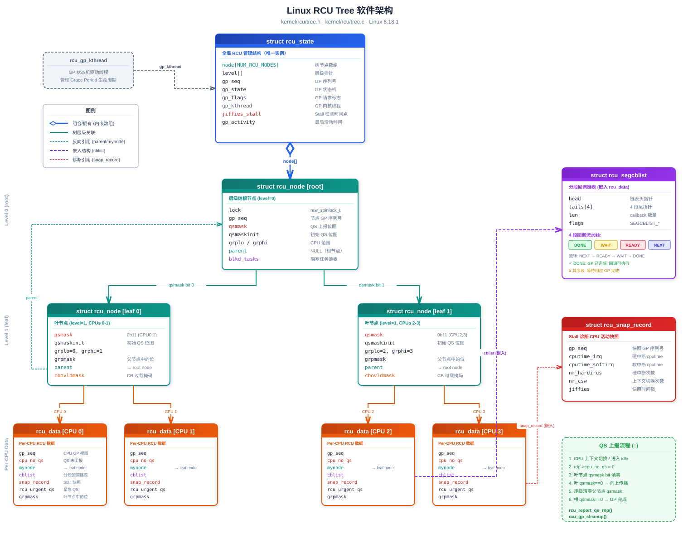
RCU（Read-Copy-Update）在 Linux 内核中的核心实现是 Tree RCU（kernel/rcu/tree.c），采用层级树结构来高效管理大规模 SMP 系统上的 Grace Period 检测。
设计思想：
rcu_state (全局)
│
┌────┴────┐
rcu_node (root, level=0)
┌──────┴──────┐
rcu_node rcu_node (level=1)
┌───┴───┐ ┌───┴───┐
rcu_node rcu_node rcu_node rcu_node (leaf, level=2)
│ │ │ │ │ │ │ │
CPU CPU CPU CPU CPU CPU CPU CPU (rcu_data, per-CPU)关键参数（定义在 kernel/rcu/Kconfig）：
| 参数 | 默认值 | 说明 |
|---|---|---|
RCU_FANOUT |
64（64位）/ 32（32位） | 中间节点扇出因子 |
RCU_FANOUT_LEAF |
16 | 叶节点扇出因子（控制 cache 行为） |
NUM_RCU_NODES |
根据 CPU 数量自动计算 | 树中 rcu_node 总数 |
树的构建逻辑：
rcu_node 管理一组 CPU（最多 RCU_FANOUT_LEAF 个）rcu_node 管理最多 RCU_FANOUT 个子节点rcu_node.grplo / grphi 标记该节点负责的 CPU 范围RCU 实现类型选择（kernel/rcu/Kconfig）：
| 配置 | 适用场景 | 选择条件 | ||
|---|---|---|---|---|
TREE_RCU |
多核 SMP 系统 | default y if SMP |
||
PREEMPT_RCU |
需要实时响应的 SMP | `default y if PREEMPT \ | \ | PREEMPT_RT` |
TINY_RCU |
单核非实时系统 | default y if !PREEMPT_RCU && !SMP |
Grace Period（GP）是 RCU 的核心概念——在一个 GP 内，所有 CPU 都必须经过至少一次 Quiescent State（静默状态），之后旧数据的回调才能安全执行。
GP 状态机定义在 kernel/rcu/tree.c 中：
┌─────────────┐
│ RCU_GP_IDLE │ ← GP 空闲，无 GP 进行中
└──────┬──────┘
│ gp_flags = RCU_GP_FLAG_INIT（有 callback 需要新 GP）
▼
┌────────────────┐
│ RCU_GP_WAIT_GPS │ ← 等待 GP 启动
└───────┬────────┘
▼
┌────────────────┐
│ RCU_GP_DONE_GPS │ ← GP 启动完成
└───────┬────────┘
▼
┌──────────────┐
│ RCU_GP_ONOFF │ ← 处理 CPU hotplug
└──────┬───────┘
▼
┌─────────────┐
│ RCU_GP_INIT │ ← 初始化：设置各节点 qsmask
└──────┬──────┘ record_gp_stall_check_time() 记录 stall 检测时间
▼
┌────────────────┐ ┌────────────────────┐
│ RCU_GP_WAIT_FQS │ ←→ │ RCU_GP_DOING_FQS │ ← FQS 扫描循环
└───────┬────────┘ └────────────────────┘
│ 所有 CPU 都报告了 QS（root->qsmask == 0）
▼
┌────────────────┐
│ RCU_GP_CLEANUP │ ← GP 清理：推进 callback
└───────┬────────┘
▼
┌────────────────┐
│ RCU_GP_CLEANED │ ← GP 清理完成 → 回到 IDLE 或启动新 GP
└────────────────┘GP 核心流程（代码路径 kernel/rcu/tree.c）：
rcu_start_this_gp()）：call_rcu() 注册的回调触发 GP 需求gp_seq_neededgp_flags = RCU_GP_FLAG_INIT，唤醒 GP kthreadrcu_gp_init()）：rcu_seq_start(&rcu_state.gp_seq) 递增 GP 序列号rcu_node.qsmask = qsmaskinitrecord_gp_stall_check_time() 记录 stall 检测时间基准rcu_gp_fqs_loop()）：jiffies_till_first_fqs（默认 1 jiffie）后开始首次 FQSjiffies_till_next_fqs（默认 1 jiffie）进行一次 FQSrcu_gp_cleanup()）：rcu_seq_end() 标记 GP 完成gp_seq__note_gp_changes() 推进已就绪的 callbackQuiescent State（QS）表示一个 CPU 当前不在 RCU 读侧临界区内。
QS 检测方式：
| 方式 | 触发条件 | 说明 |
|---|---|---|
| 调度器上下文切换 | schedule() |
非 PREEMPT_RCU 下自动 QS |
| Dynticks 空闲 | 进入 idle 循环 | ct_rcu_watching() 标记 EQS |
| 显式解锁 | rcu_read_unlock() |
PREEMPT_RCU 下最后一层解锁 |
| 主动让出 | cond_resched() |
非抢占内核中的合作式 QS |
| 用户态执行 | 从内核返回用户态 | Extended QS |
上报传播流程：
CPU 上报 QS
│
▼ rdp->cpu_no_qs = 0
叶节点 rcu_node.qsmask 对应 bit 清零
│
├─→ 叶节点 qsmask != 0：等待其他 CPU
│
└─→ 叶节点 qsmask == 0：向上传播
│
▼ 父节点 rcu_node.qsmask 对应 bit 清零（rcu_report_qs_rnp()）
│
└─→ 递归向上，直到根节点
│
└─→ 根节点 qsmask == 0 → GP 可以完成Dynticks 快照检测：
FQS 扫描使用两次快照机制检测处于 EQS 的 CPU：
rcu_watching_snap_save()：保存 CPU 的 dynticks 状态快照rcu_watching_snap_recheck()：比较状态是否变化，判断是否经过 EQSRCU callback 在 struct rcu_segcblist 中按 GP 依赖关系分为 4 个段：
┌────────────────────────────────────────────────────────────────┐
│ RCU_DONE_TAIL(0) │ RCU_WAIT_TAIL(1) │ RCU_NEXT_READY(2) │ RCU_NEXT(3) │
│ GP 已完成 │ 等待当前 GP 完成 │ 等待下一 GP 启动 │ 新注册 │
│ ✓ 可以执行 │ ⏳ 等待中 │ ⏳ 预备中 │ 🆕 未分配 │
└────────────────────────────────────────────────────────────────┘
head ────────────────────────────────────────────────────→ tail流转过程：
call_rcu() → callback 进入 RCU_NEXT_TAIL 段rcu_accelerate_cbs() 将 RCU_NEXT 移到 RCU_NEXT_READYRCU_NEXT_READY 移到 RCU_WAIT_TAILrcu_advance_cbs() 将 RCU_WAIT 移到 RCU_DONE_TAILRCU_DONE_TAIL 段的回调当 GP 等待过久，FQS 机制会主动催促未上报 QS 的 CPU：
// kernel/rcu/tree.c - rcu_gp_fqs()
第 1 次 FQS: rcu_watching_snap_save() → 收集各 CPU 的 dynticks 状态快照
后续 FQS: rcu_watching_snap_recheck() → 检查 dynticks 状态是否变化
如果 CPU 在 EQS 中 → 代其上报 QS
如果 CPU 无响应 → 对 NO_HZ_FULL CPU 发送 reschedule IPIFQS 时间参数：
| 参数 | 默认值 | 说明 |
|---|---|---|
jiffies_till_first_fqs |
1 jiffie | 首次 FQS 延迟 |
jiffies_till_next_fqs |
1 jiffie | 后续 FQS 间隔 |
| callback 过载时 | 自动缩短 | 加速 GP 完成 |
当 CONFIG_RCU_NOCB_CPU 使能时，指定 CPU 的 RCU callback 执行被卸载到专门的 kthread：
普通 CPU: call_rcu() → RCU softirq 执行 callback（本 CPU）
NOCB CPU: call_rcu() → nocb_bypass 链表 → nocb_gp_kthread（GP 跟踪）
→ nocb_cb_kthread（callback 执行）用途：减少延迟敏感 CPU 的 OS jitter，适用于实时/HPC 场景。
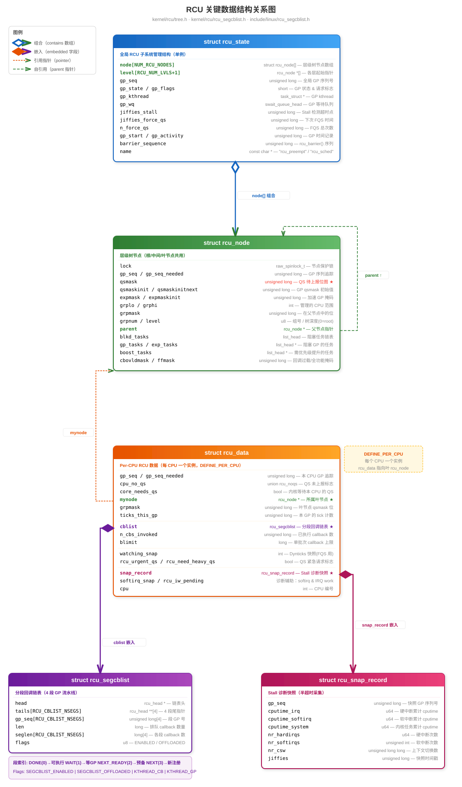
定义在 kernel/rcu/tree.h，是整个 RCU 子系统的全局管理结构：
| 字段 | 类型 | 说明 |
|---|---|---|
node[NUM_RCU_NODES] |
struct rcu_node[] |
层级树中所有 rcu_node 的扁平数组 |
level[RCU_NUM_LVLS+1] |
struct rcu_node *[] |
指向每层起始节点的指针 |
gp_seq |
unsigned long |
全局 GP 序列号（低 2 位为状态标志） |
gp_state |
short |
当前 GP 状态（RCU_GP_* 枚举） |
gp_flags |
unsigned long |
GP 请求标志（RCU_GP_FLAG_INIT / RCU_GP_FLAG_FQS） |
gp_kthread |
struct task_struct * |
GP kthread 的 task 指针 |
gp_wq |
wait_queue_head_t |
GP kthread 等待队列 |
gp_start |
unsigned long |
当前 GP 开始的 jiffies |
gp_activity |
unsigned long |
GP kthread 最后活动时间 |
jiffies_stall |
unsigned long |
Stall 检测超时时间点 |
jiffies_force_qs |
unsigned long |
下一次 FQS 的 jiffies |
n_force_qs |
unsigned long |
FQS 扫描总次数 |
n_online_cpus |
int |
当前在线 CPU 数 |
barrier_sequence |
atomic_t |
rcu_barrier() 同步序列号 |
expedited_sequence |
unsigned long |
加速 GP 计数器 |
nr_fqs_jiffies_stall |
int |
防误报的 FQS 循环计数器 |
name |
const char * |
RCU 类型名（如 "rcu_preempt"） |
定义在 kernel/rcu/tree.h，是层级树中的中间/叶节点：
| 字段 | 类型 | 说明 |
|---|---|---|
lock |
raw_spinlock_t |
保护本节点状态的自旋锁 |
gp_seq |
unsigned long |
本节点的 GP 序列号（与全局同步） |
gp_seq_needed |
unsigned long |
本节点子树需要的最远 GP |
qsmask |
unsigned long |
QS 掩码：需要上报 QS 的 CPU/子节点位图 |
qsmaskinit |
unsigned long |
当前 GP 的 qsmask 初始值 |
qsmaskinitnext |
unsigned long |
下一 GP 的 qsmask 初始值 |
grplo / grphi |
int |
本节点管理的 CPU 范围 [grplo, grphi] |
grpmask |
unsigned long |
在父节点 qsmask 中的对应位 |
grpnum |
u8 |
在父节点中的组号 |
level |
u8 |
树深度（0 = 根节点） |
parent |
struct rcu_node * |
父节点指针 |
blkd_tasks |
struct list_head |
在 RCU 读侧临界区中被阻塞的任务链表 |
gp_tasks |
struct list_head * |
阻塞当前 GP 的首个任务 |
exp_tasks |
struct list_head * |
阻塞当前加速 GP 的首个任务 |
boost_tasks |
struct list_head * |
需要优先级提升的首个任务 |
cbovldmask |
unsigned long |
callback 过载的 CPU 掩码 |
ffmask |
unsigned long |
全功能 CPU 掩码 |
expmask |
unsigned long |
加速 GP 需要上报 QS 的 CPU 掩码 |
定义在 kernel/rcu/tree.h，每个 CPU 一个实例：
| 字段分组 | 字段 | 说明 |
|---|---|---|
| QS/GP | gp_seq |
本 CPU 所知的 GP 序列号 |
gp_seq_needed |
本 CPU 回调所需的 GP 序列号 | |
cpu_no_qs |
QS 尚未上报标志（.b.norm / .b.exp） |
|
core_needs_qs |
内核等待本 CPU 的 QS | |
mynode |
指向所属叶 rcu_node |
|
grpmask |
在叶节点 qsmask 中的位 | |
ticks_this_gp |
本 GP 期间的调度时钟 tick 数 | |
| Callback | cblist |
struct rcu_segcblist，分段回调链表 |
n_cbs_invoked |
启动以来已执行的 callback 总数 | |
blimit |
单批次处理的 callback 上限 | |
| Dynticks | watching_snap |
Dynticks 状态快照（FQS 使用） |
rcu_need_heavy_qs |
GP 过久，需要重量级 QS | |
rcu_urgent_qs |
紧急请求 QS | |
rcu_forced_tick |
强制 tick 以提供 QS | |
| Stall 诊断 | snap_record |
struct rcu_snap_record，CPU 活动快照 |
rcu_iw_pending |
IRQ work 是否挂起 | |
rcu_iw_gp_seq |
IRQ work 执行时的 GP seq | |
softirq_snap |
RCU softirq 快照 | |
| NOCB | nocb_gp_kthread |
NOCB GP kthread 指针 |
nocb_bypass |
旁路 callback 链表 | |
nocb_lock |
NOCB 保护锁 |
定义在 kernel/rcu/rcu_segcblist.h：
| 字段 | 类型 | 说明 |
|---|---|---|
head |
struct rcu_head * |
回调链表头 |
tails[RCU_CBLIST_NSEGS] |
struct rcu_head **[4] |
4 个段的尾指针 |
gp_seq[RCU_CBLIST_NSEGS] |
unsigned long[4] |
每段依赖的 GP 序列号 |
len |
long |
已排队的 callback 数量 |
flags |
u8 |
状态标志 |
段索引常量：
RCU_DONE_TAIL (0) — GP 已完成，可执行RCU_WAIT_TAIL (1) — 等待 GP 完成RCU_NEXT_READY_TAIL (2) — 等待下一 GP 启动RCU_NEXT_TAIL (3) — 新注册，未分配 GPFlags：
SEGCBLIST_ENABLED — 链表已启用SEGCBLIST_OFFLOADED — 已卸载到 NOCB kthreadSEGCBLIST_KTHREAD_CB / SEGCBLIST_KTHREAD_GP — kthread 状态定义在 kernel/rcu/tree.h，用于 RCU CPU Stall 告警时的 CPU 活动信息：
struct rcu_snap_record {
unsigned long gp_seq; // 快照对应的 GP 序列号
u64 cputime_irq; // 硬中断累计 cputime
u64 cputime_softirq; // 软中断累计 cputime
u64 cputime_system; // 内核任务累计 cputime
u64 nr_hardirqs; // 硬中断次数
unsigned int nr_softirqs; // 软中断次数
unsigned long long nr_csw; // 上下文切换次数
unsigned long jiffies; // 快照时的 jiffies
};快照在 Stall 超时时间的一半 时刻采集，Stall 告警时输出 delta 值，帮助判断 CPU 在 stall 期间的活动状态。
| 配置项 | 默认值 | 说明 | 源文件 |
|---|---|---|---|
CONFIG_TREE_RCU |
y（SMP） |
层级树 RCU 实现 | kernel/rcu/Kconfig |
CONFIG_PREEMPT_RCU |
y（PREEMPT/RT） |
可抢占 RCU 读者 | kernel/rcu/Kconfig |
CONFIG_RCU_STALL_COMMON |
y（TREE_RCU） |
Stall 检测基础设施 | kernel/rcu/Kconfig |
CONFIG_RCU_BOOST |
y（PREEMPT_RT） |
对阻塞读者进行优先级提升 | kernel/rcu/Kconfig |
CONFIG_RCU_NOCB_CPU |
n |
Callback 卸载到 kthread | kernel/rcu/Kconfig |
| 配置项 | 默认值 | 范围 | 说明 |
|---|---|---|---|
CONFIG_RCU_CPU_STALL_TIMEOUT |
21 秒 | 3-300 | 普通 GP Stall 超时阈值 |
CONFIG_RCU_EXP_CPU_STALL_TIMEOUT |
0（使用普通超时） | 0-300000 ms | 加速 GP Stall 超时（毫秒） |
CONFIG_RCU_CPU_STALL_CPUTIME |
n |
— | 开启后输出 Stall 期间 CPU 时间统计 |
CONFIG_RCU_CPU_STALL_NOTIFIER |
n |
— | Stall 通知链（DEBUG_KERNEL + RCU_EXPERT） |
Debug 建议：务必开启 CONFIG_RCU_CPU_STALL_CPUTIME=y，它能在 Stall 告警中输出硬中断/软中断/上下文切换的统计信息，是定位 Stall 根因的关键数据。
| 配置项 | 默认值 | 说明 |
|---|---|---|
CONFIG_PROVE_RCU |
y（PROVE_LOCKING 时） |
基于 lockdep 的 RCU 正确性验证 |
CONFIG_PROVE_RCU_LIST |
n |
RCU 链表 lockdep 检查 |
CONFIG_RCU_TRACE |
y（TREE_RCU 时） |
启用 ftrace 事件跟踪（rcu:rcu_stall_warning 等） |
CONFIG_RCU_EQS_DEBUG |
— | NO_HZ 一致性检查 |
CONFIG_RCU_STRICT_GRACE_PERIOD |
n |
严格 GP 模式（仅调试用，≤4 CPU） |
CONFIG_RCU_TORTURE_TEST |
n |
RCU 压力测试模块 |
CONFIG_RCU_SCALE_TEST |
n |
RCU 性能测试模块 |
通过 /proc/sys/kernel/ 或 sysctl 在运行时调整：
| sysctl 参数 | 默认值 | 说明 |
|---|---|---|
kernel.rcu_cpu_stall_timeout |
21 | Stall 超时（秒），范围 3-300 |
kernel.rcu_exp_cpu_stall_timeout |
0 | 加速 GP Stall 超时（毫秒） |
kernel.panic_on_rcu_stall |
0 | Stall 时是否 panic |
kernel.max_rcu_stall_to_panic |
— | 达到此次数后才 panic |
kernel.rcu_cpu_stall_suppress |
0 | 抑制 Stall 告警 |
kernel.rcu_cpu_stall_ftrace_dump |
0 | Stall 时 dump ftrace buffer |
内核启动参数（通过 bootargs 传递）：
| 参数 | 说明 |
|---|---|
rcupdate.rcu_cpu_stall_timeout=<秒> |
设置 Stall 超时 |
rcupdate.rcu_cpu_stall_suppress=1 |
抑制 Stall 告警 |
rcupdate.rcu_cpu_stall_cputime=1 |
启用 CPU 时间统计输出 |
rcupdate.rcu_cpu_stall_ftrace_dump=1 |
Stall 时 dump ftrace |
rcu_nocbs= |
指定 NOCB CPU |
生产环境调试建议：
# 基础 Stall 检测（通常已默认开启）
CONFIG_RCU_STALL_COMMON=y
CONFIG_RCU_CPU_STALL_TIMEOUT=21
# 增强诊断信息（强烈建议开启）
CONFIG_RCU_CPU_STALL_CPUTIME=y
CONFIG_RCU_TRACE=y
# lockdep 检测（开发/测试环境）
CONFIG_PROVE_RCU=y
# Stall 时 panic 抓 ramdump（严重问题复现时）
# 运行时: echo 1 > /proc/sys/kernel/panic_on_rcu_stall开发环境深度调试：
CONFIG_RCU_CPU_STALL_CPUTIME=y
CONFIG_RCU_TRACE=y
CONFIG_PROVE_RCU=y
CONFIG_PROVE_RCU_LIST=y
CONFIG_RCU_EQS_DEBUG=y
CONFIG_RCU_CPU_STALL_NOTIFIER=y # 需要 RCU_EXPERT=y
CONFIG_RCU_STRICT_GRACE_PERIOD=y # 仅小系统Stall 检测入口：check_cpu_stall()（kernel/rcu/tree_stall.h）
检测分为两类：
print_cpu_stall()）：本 CPU 检测到自己 stallprint_other_cpu_stall()）：检测到其他 CPU stall典型 Log 格式及字段解读：
INFO: rcu_preempt detected stalls on CPUs/tasks:
2-...0: (3 GPs behind) idle=b30/1/0x4000000000000000 softirq=1492/1493 fqs=2134
5-...0: (0 ticks this GP) idle=713/1/0x4000000000000000 softirq=506/506 fqs=2134
(detected by 0, t=6002 jiffies, g=2745, q=29 ncpus=8)逐字段解析：
2-...0:
│ ├──┘
│ │ CPU 编号
│ │
│ └─── 4 个标志位:
│ 位1: 'O' = 在线, '.' = 离线
│ 位2: 'o' = qsmaskinit 中有位, '.' = 没有
│ 位3: 'N' = qsmaskinitnext 中有位, '.' = 没有
│ 位4: IRQ work 状态:
│ '?' = 未启用 CONFIG_IRQ_WORK
│ '0'-'9' = IRQ work 挂起，数字=距上次响应的 GP 数
│ '!' = IRQ work 从未执行
│ '.' = IRQ work 正常执行
│
(3 GPs behind) 本 CPU 的 gp_seq 落后全局 3 个 GP → 严重 stall
(0 ticks this GP) 本 GP 期间本 CPU 调度时钟 tick 为 0 → 可能关中断
idle=b30/1/0x... ct_rcu_watching_cpu() & 0xffff / ct_nesting / ct_nmi_nesting
用于判断 CPU 是否在 idle/用户态/NMI 中
softirq=1492/1493 RCU softirq 快照值 / 当前值
差值为 1 说明只执行了一次 RCU softirq
fqs=2134 从 GP 开始到现在的 FQS 扫描次数
(detected by 0, ...) 检测者 CPU=0
t=6002 jiffies GP 已持续 6002 jiffies
g=2745 当前 GP 序列号
q=29 全局 callback 总数
ncpus=8 在线 CPU 数CPU 时间统计输出（需 CONFIG_RCU_CPU_STALL_CPUTIME=y）：
hardirqs softirqs csw/system
number: 12345 678 42
cputime: 800 50 100 ==> 10500(ms)number 行：stall 期间的硬中断/软中断/上下文切换 次数增量cputime 行：stall 期间的硬中断/软中断/内核任务的 CPU 时间增量（毫秒）==> 10500(ms)：本次采样周期的总时长典型 Log：
INFO: rcu_preempt detected stalls on CPUs/tasks:
3-...0: (0 ticks this GP) idle=b30/1/0x4000000000000000 softirq=1492/1492 fqs=5001
hardirqs softirqs csw/system
number: 0 0 0
cputime: 0 0 10500 ==> 10500(ms)
(detected by 0, t=21003 jiffies, g=1000, q=5 ncpus=8)Log 解读：
0 ticks this GP：CPU 3 在本 GP 期间没有调度时钟 tick → 很可能关了中断softirq=1492/1492：RCU softirq 完全没有执行（差值 = 0）! 说明 IRQ work 从未执行，佐证中断被禁用定位方向：
local_irq_disable() 后长时间未恢复spin_lock_irqsave() 后进入死循环典型 Log：
INFO: rcu_preempt detected stalls on CPUs/tasks:
Tasks blocked on level-1 rcu_node (CPUs 0-7):
P1234/1:bq.l P5678
(detected by 2, t=63007 jiffies, g=4000, q=100 ncpus=8)Log 解读：
Tasks blocked on level-1 rcu_node：有任务在 rcu_node 的 blkd_tasks 链表上P1234/1:bq.l：P1234：PID = 1234/1：rcu_read_lock_nesting = 1（在 1 层 RCU 读侧临界区中）b：rcu_read_unlock_special.b.blocked = 1（已被标记为 blocked）q：rcu_read_unlock_special.b.need_qs = 1（需要上报 QS）.：rcu_read_unlock_special.b.exp_hint = 0（无加速 GP 提示）l：on_blkd_list = 1（在 blkd_tasks 链表上）P5678（无详细信息）：该任务正在运行中，无法检查其状态定位方向：
sched_show_task(P1234) 的输出查看完整栈rcu_read_lock() 后调用了可能睡眠的函数CONFIG_RCU_BOOST，检查 boost 是否生效典型 Log：
rcu_preempt kthread starved for 15000 jiffies! g1000 f0x0 RCU_GP_WAIT_FQS(5) ->state=0x402 ->cpu=3
Unless rcu_preempt kthread gets sufficient CPU time, OOM is now expected behavior.
RCU grace-period kthread stack dump:
[stack trace of rcu_gp_kthread]Log 解读（代码路径 kernel/rcu/tree_stall.h: rcu_check_gp_kthread_starvation()）：
starved for 15000 jiffies：GP kthread 已经 15000 jiffies（约 150 秒）没有活动g1000：当前 GP 序列号f0x0：gp_flags = 0RCU_GP_WAIT_FQS(5)：卡在 FQS 等待状态->state=0x402：kthread 的 task state->cpu=3：kthread 最后运行在 CPU 3定位方向：
OOM is now expected behavior：GP 无法完成 → callback 堆积 → slab 内存无法释放 → OOM典型 Log：
rcu_preempt kthread timer wakeup didn't happen for 5000 jiffies! g2000 f0x0 RCU_GP_WAIT_FQS(5) ->state=0x402
Possible timer handling issue on cpu=2 timer-softirq=1234Log 解读（代码路径 kernel/rcu/tree_stall.h: rcu_check_gp_kthread_expired_fqs_timer()）：
RCU_GP_WAIT_FQS 状态，且等待时间远超预期!gpk->on_rq）timer-softirq=1234 显示该 CPU 上的 timer softirq 计数定位方向：
TIMER_SOFTIRQ 是否被阻塞（例如 ksoftirqd 被饿死）local_bh_disable() 长时间未恢复检测时序（kernel/rcu/tree_stall.h: check_cpu_stall()）：
GP 开始
│
├─── +jiffies_till_stall_check/2 ──→ 记录 CPU 活动快照（snap_record）
│ 发送 IRQ work 检测中断响应
│
├─── +jiffies_till_stall_check ────→ 触发 Stall 告警（默认 21s）
│ Self-detected 或 Other-detected
│
└─── +3*jiffies_till_stall_check ──→ 后续 Stall 告警（间隔递增 3 倍）误报排除机制（5 重内存屏障验证）：
// check_cpu_stall() 中的误报防护
gs1 = READ_ONCE(rcu_state.gp_seq); // ①
smp_rmb();
js = READ_ONCE(rcu_state.jiffies_stall); // ②
smp_rmb();
gps = READ_ONCE(rcu_state.gp_start); // ③
smp_rmb();
gs2 = READ_ONCE(rcu_state.gp_seq); // ④
// 验证条件（任一不满足则认为误报）：
if (gs1 != gs2) → GP 边界穿越，数据不一致
if (j < js) → 尚未到达 stall 超时
if (gps >= js) → GP 启动时间异常
if (!rcu_seq_state(gs2)) → GP 已完成KVM 虚拟机误报处理：
if (kvm_check_and_clear_guest_paused())
return; // 虚拟机被宿主机暂停，不是真正的 stallfalse positive? 标记：
当 GP kthread 饥饿且目标 CPU 处于 EQS（Extended Quiescent State）时，print_cpu_stall_info() 会输出 (false positive?) 提示，说明该 CPU 并非真的 stall，而是 GP kthread 未能及时处理其 QS 上报。
本节提炼 Tree RCU 实现中涉及的核心算法，帮助理解 RCU 运行机理和 debug 问题时的思路。
源码：kernel/rcu/rcu.h — rcu_seq_start() / rcu_seq_end() / rcu_seq_snap()
GP 序列号 gp_seq 使用低 2 位作为状态标志位，高位作为单调递增计数器：
gp_seq 布局:
┌───────────────────────────────────────────┬──┬──┐
│ GP 计数器 (单调递增) │S1│S0│
└───────────────────────────────────────────┴──┴──┘
▲ ▲
└──┴── 状态标志 (0-3)
状态编码:
S = 00 (0) → GP 空闲，无 GP 进行中
S = 01 (1) → GP 已启动（rcu_seq_start 将 +1）
S = 10 (2) → GP 中间状态（SRCU 使用）
S = 11 (3) → GP 完成前最后状态
完整 GP 周期:
gp_seq = ...00 → rcu_seq_start() → ...01 (GP 开始)
→ FQS 循环...
gp_seq = ...01 → rcu_seq_end() → ...00 (GP 结束，计数器 +1)
实际上 rcu_seq_end() = (gp_seq | 0x3) + 1 → 状态位归零，计数器进位关键操作：
| 操作 | 实现 | 说明 | |
|---|---|---|---|
rcu_seq_state(s) |
s & RCU_SEQ_STATE_MASK |
取低 2 位状态 | |
rcu_seq_start(sp) |
*sp += 1; smp_mb() |
GP 开始，状态 0→1 | |
rcu_seq_end(sp) |
`smp_mb(); sp = (sp \ | 0x3) + 1` | GP 结束，状态→0，计数器+1 |
rcu_seq_snap(sp) |
(READ_ONCE(sp) + 2MASK + 1) & ~MASK |
取"需要完整 GP 后"的目标序列号 | |
rcu_seq_done(sp, s) |
READ_ONCE(*sp) >= s |
判断目标 GP 是否完成 |
rcu_seq_snap() 算法解析：
给定当前 gp_seq，返回一个目标值 s，保证从当前时刻起至少经过一个完整 GP 后，gp_seq >= s 才为真。公式 (cur + 2*MASK + 1) & ~MASK 等价于向上取整到下一个 "状态=00" 的值再多跨一个完整 GP，确保 call_rcu() 时注册的 callback 在未来某个 GP 完成后才被执行。
源码：kernel/rcu/tree.c — rcu_start_this_gp()
当 CPU 需要请求新 GP 时，采用自底向上的漏斗锁策略，避免所有 CPU 同时竞争根节点锁：
算法流程（从叶节点到根节点）:
CPU 发起 GP 请求 (gp_seq_req)
│
▼
叶节点 rnp_start (已持锁)
│ 检查: rnp->gp_seq_needed >= gp_seq_req?
│ 或 GP 已经 started?
│ ──────→ 是：提前退出（其他人已请求）
│
│ 否: WRITE(rnp->gp_seq_needed, gp_seq_req)
│ 检查: GP 正在进行中?
│ ──────→ 是：提前退出（cleanup 会看到标记）
│
▼ 加锁父节点，释放子节点锁
中间节点
│ 同样检查 + 标记 gp_seq_needed
│ ──────→ 可提前退出
│
▼ 加锁父节点，释放中间节点锁
根节点
│ 无正在进行的 GP:
│ 设置 gp_flags = RCU_GP_FLAG_INIT
│ 返回 true → 唤醒 GP kthread
│
│ 已有 GP:
│ 直接退出
▼
退出时: 将根节点的 gp_seq_needed 回写到叶节点和 rdp核心思想：
gp_seq_neededgp_seq_needed 到叶节点，避免后续重复向上遍历复杂度：$O(\log_{fanout} N_{CPU})$ 层级锁获取，远优于直接竞争单一全局锁的 $O(N_{CPU})$。
源码：kernel/rcu/tree.c — rcu_report_qs_rnp() / rcu_report_qs_rdp()
Quiescent State 上报采用自底向上的位图清零 + 逐层传播：
算法流程:
1. CPU 上报 QS (rcu_report_qs_rdp):
├─ 验证: rdp->gp_seq == rnp->gp_seq? (当前 GP 有效)
├─ 验证: cpu_no_qs.b.norm == 0? (已上报则跳过)
└─ 计算 mask = rdp->grpmask
调用 rcu_report_qs_rnp(mask, rnp, gps, flags)
2. 位图逐层上报 (rcu_report_qs_rnp):
for (;;) {
├─ 检查: rnp->gp_seq != gps → 跳过(GP 已变)
├─ rnp->qsmask &= ~mask (清零对应位)
│
├─ qsmask != 0 || 还有阻塞任务?
│ └─→ 是: return (本层还有其他未上报的)
│
├─ qsmask == 0 且无阻塞任务:
│ ├─ rnp->completedqs = rnp->gp_seq (标记本层完成)
│ ├─ mask = rnp->grpmask (获取本节点在父节点的位)
│ ├─ 到达 root? → break → 调用 rcu_report_qs_rsp()
│ └─ 释放本层锁，加锁父层，继续循环
}
3. 到达根节点且所有位清零 (rcu_report_qs_rsp):
└─ 设置 gp_flags |= RCU_GP_FLAG_FQS → 唤醒 GP kthread 完成 GP关键设计：
qsmask 位图追踪子节点/CPU 的 QS 状态源码：kernel/rcu/rcu_segcblist.c — rcu_segcblist_advance() / rcu_segcblist_accelerate()
RCU callback 使用 4 段流水线，以 GP 序列号为分界进行段推进：
段布局:
head ──→ [DONE(0)] ──→ [WAIT(1)] ──→ [NEXT_READY(2)] ──→ [NEXT(3)] ──→ NULL
│ │ │ │
可执行 等当前GP完成 等下一GP启动 新注册
tails[4] 数组: 每段的尾指针 (指向段尾 rcu_head 的 next 指针)
gp_seq[4] 数组: 每段所属的 GP 序列号advance 算法（GP 完成时调用）：
rcu_segcblist_advance(rsclp, seq):
// 找到所有 gp_seq <= seq 的段，合并到 DONE
for i = WAIT_TAIL; i < NEXT_TAIL; i++:
if seq < rsclp->gp_seq[i]: break
tails[DONE_TAIL] = tails[i] // 拉伸 DONE 段
move seglen[i] → seglen[DONE]
// 清理空洞：将后面的段前移填补
for j = WAIT_TAIL; i < NEXT_TAIL; i++, j++:
tails[j] = tails[i]
gp_seq[j] = gp_seq[i]
move seglen accordinglyaccelerate 算法（获得更精确 GP 信息时调用）：
rcu_segcblist_accelerate(rsclp, seq):
// 从 NEXT_READY 往 DONE 方向找第一个 gp_seq < seq 的非空段
for i = NEXT_READY_TAIL; i > DONE_TAIL; i--:
if !empty(i) && gp_seq[i] < seq: break
// 将 i+1 到 NEXT_TAIL 的所有段合并，标记为 seq
for j = i+1; j <= NEXT_TAIL; j++:
tails[j] = tails[NEXT_TAIL]
gp_seq[j] = seq // 加速：标记更早的 GP 即可完成设计意图：
call_rcu() 注册时只能保守估计 GP 号（放入 NEXT 段）accelerate 在获取全局锁后用精确的 gp_seq 重新标记，将 callback 提前到更早的 GPadvance 在 GP 完成后将已就绪段滑向 DONE，供 softirq 或 NOCB kthread 执行源码：kernel/rcu/tree.c — rcu_gp_fqs() / force_qs_rnp()
FQS 采用两阶段 Dynticks 快照比对来检测处于 EQS 的 CPU：
第 1 次 FQS (first_time=true):
force_qs_rnp(rcu_watching_snap_save)
│
└─ 遍历所有叶节点的 qsmask 中仍为 1 的 CPU:
rdp->watching_snap = ct_rcu_watching_cpu_acquire(cpu)
├─ 如果 CPU 已在 EQS → 直接代报 QS (return 1)
└─ 否则 → 保存快照供后续比对 (return 0)
后续 FQS (first_time=false):
force_qs_rnp(rcu_watching_snap_recheck)
│
└─ 遍历所有叶节点的 qsmask 中仍为 1 的 CPU:
比对 rdp->watching_snap 与当前 dynticks 状态
├─ 状态已变化 → CPU 经过了 EQS → 代报 QS (return 1)
├─ 状态未变化且需要 resched → return -1 → 发送 IPI
└─ 否则 → 继续等待 (return 0)Callback 过载加速：
if (rcu_state.cbovld):
j = (j + 2) / 3 // FQS 间隔缩短为 1/3当 callback 堆积严重时，FQS 循环自动加速，更频繁地催促未响应的 CPU。
源码：kernel/rcu/tree_stall.h — check_cpu_stall()
为防止 GP 边界穿越导致的误报，stall 检测使用 5 个读屏障验证数据一致性：
// 采样顺序（读端）：
gs1 = READ_ONCE(rcu_state.gp_seq); // ① 第一次读 gp_seq
smp_rmb(); // ── 屏障 ──
js = READ_ONCE(rcu_state.jiffies_stall); // ② 读 stall 超时点
smp_rmb(); // ── 屏障 ──
gps = READ_ONCE(rcu_state.gp_start); // ③ 读 GP 启动时间
smp_rmb(); // ── 屏障 ──
gs2 = READ_ONCE(rcu_state.gp_seq); // ④ 第二次读 gp_seq
// 写端顺序（GP init/cleanup 中）：
// gp_start → jiffies_stall → gp_seq （反序更新，配合 smp_wmb）4 个拒绝条件（任一满足则认为误报退出）：
| 条件 | 含义 |
|---|---|
gs1 != gs2 |
两次读 gp_seq 不一致 → GP 边界穿越 |
j < js |
当前时间未到 stall 超时点 |
gps >= js |
GP start ≥ stall 超时 → 时间异常 |
!rcu_seq_state(gs2) |
GP 已完成（状态位 = 0） |
竞态窗口保护：
gs1 != gs2 必定成立smp_rmb() 保证读取顺序不被 CPU 重排cmpxchg 抢占式报告：
cmpxchg(&rcu_state.jiffies_stall, js, jn)使用 cmpxchg 确保只有一个 CPU 输出 stall 告警（self-detected 或 other-detected），避免重复打印。
源码：kernel/rcu/tree.c — rcu_gp_kthread()
GP kthread 是一个无限循环的状态机：
rcu_gp_kthread():
for (;;) {
┌──────────────────────────────────────┐
│ Phase 1: 等待 GP 请求 │
│ WAIT_GPS → swait(gp_flags & INIT) │
│ DONE_GPS → rcu_gp_init() │
│ └─ 返回 false → 继续等待 │
│ └─ 返回 true → 进入 Phase 2 │
└──────────────┬───────────────────────┘
▼
┌──────────────────────────────────────┐
│ Phase 2: FQS 循环（rcu_gp_fqs_loop） │
│ WAIT_FQS → sleep(j jiffies) │
│ DOING_FQS → rcu_gp_fqs() │
│ ├─ 检查 root->qsmask == 0? → break │
│ ├─ cbovld? → j = (j+2)/3 加速 │
│ └─ 循环直到所有 CPU 上报 QS │
└──────────────┬───────────────────────┘
▼
┌──────────────────────────────────────┐
│ Phase 3: GP 清理（rcu_gp_cleanup） │
│ CLEANUP: │
│ ├─ 广度优先遍历更新所有 rnp->gp_seq │
│ ├─ __note_gp_changes() 推进 callback│
│ ├─ rcu_future_gp_cleanup() 检查 │
│ ├─ rcu_seq_end() → GP 完成 │
│ └─ 如果有新请求 → 设 GP_FLAG_INIT │
│ CLEANED → 回到 Phase 1 │
└──────────────────────────────────────┘
}关键时序参数：
| 参数 | 默认 | 说明 |
|---|---|---|
jiffies_till_first_fqs |
RCU_JIFFIES_TILL_FORCE_QS（1-3） |
首次 FQS 延迟 |
jiffies_till_next_fqs |
同上 | 后续 FQS 间隔 |
| callback 过载 | 间隔 ÷ 3 | 自适应加速 |
| stall 超时 | 21s | jiffies_stall 阈值 |
源码：kernel/rcu/tree.c — rcu_for_each_node_breadth_first() / rcu_for_each_leaf_node()
RCU 树结构存储在扁平数组 rcu_state.node[NUM_RCU_NODES] 中，采用类似堆的布局：
数组布局（heap-style）:
┌────────────────────────────────────────────────┐
│ node[0] │ node[1] │ node[2] │ ... │ node[m] │ node[m+1] │ ... │
│ root │ level-1 起始 ... │ level-1 末│ leaf 起始 ... │
└────────────────────────────────────────────────┘
↑ ↑ ↑
level[0] level[1] level[2]
遍历方式:
rcu_for_each_node_breadth_first(rnp):
for (rnp = &node[0]; rnp < &node[NUM_RCU_NODES]; rnp++)
// 数组线性遍历即为广度优先，因为同层节点连续存储
rcu_for_each_leaf_node(rnp):
for (rnp = level[RCU_NUM_LVLS-1]; rnp < &node[NUM_RCU_NODES]; rnp++)
// 从最后一层起始指针开始遍历优势：
level[] 数组 $O(1)$ 定位任意层的起始位置源码：kernel/rcu/tree_exp.h — exp_funnel_lock() / sync_rcu_exp_select_cpus()
加速 GP（synchronize_rcu_expedited）使用 IPI 主动催促 而非被动等待 QS：
算法流程:
1. 漏斗锁获取（exp_funnel_lock）:
从叶节点向上遍历:
├─ 检查 exp_seq_rq >= s? → 已有人在做 → wait_event()
├─ 设置 exp_seq_rq = s → 后来者可以等待我们
└─ 到达根节点 → 获取 exp_mutex → 成为执行者
快速路径: 直接 trylock exp_mutex（低竞争场景）
2. 初始化 expmask（sync_exp_reset_tree）:
广度优先遍历，设置 rnp->expmask = rnp->expmaskinit
叶节点: 如果有 blkd_tasks → 设置 exp_tasks
3. 并行 IPI 选择（sync_rcu_exp_select_cpus）:
为每个叶节点分配 kworker:
├─ 当前 CPU → 跳过 IPI（直接 mask）
├─ 已在 EQS 的 CPU → ct_rcu_watching_cpu_acquire() 检测 → 直接代报
├─ 其他在线 CPU → smp_call_function_single(cpu, rcu_exp_handler)
│ IPI handler 中上报 exp QS
└─ 离线 CPU → 直接代报
4. 等待完成（synchronize_rcu_expedited_wait）:
swait_event 等待 root->expmask == 0 && root->exp_tasks == NULL
5. QS 上报传播（__rcu_report_exp_rnp）:
与普通 GP 类似的自底向上位图清零
到达根节点 → 唤醒 expedited_wq与普通 GP 的对比：
| 维度 | 普通 GP | 加速 GP |
|---|---|---|
| QS 检测 | 被动等待调度/idle | 主动 IPI 催促 |
| 延迟 | 数十毫秒～数秒 | 数微秒～数毫秒 |
| 开销 | 极低（无 IPI） | 较高（per-CPU IPI） |
| 序列号 | rcu_state.gp_seq |
rcu_state.expedited_sequence |
| 并发控制 | GP kthread 单线程 | per-leaf kworker 并行 |
源码：kernel/rcu/tree.c — __note_gp_changes()
每个 CPU 在调度时钟中断或 softirq 中，通过此算法同步本地 rdp->gp_seq 与所属叶 rnp->gp_seq：
__note_gp_changes(rnp, rdp):
if rdp->gp_seq == rnp->gp_seq:
return // 已同步，无需操作
// Case 1: 有 GP 刚完成
if rcu_seq_completed_gp(rdp->gp_seq, rnp->gp_seq):
rcu_advance_cbs(rnp, rdp) // 推进 callback (WAIT→DONE)
rdp->core_needs_qs = false
// Case 2: 新 GP 已启动但本 CPU 还没看到完成
else:
rcu_accelerate_cbs(rnp, rdp) // 加速标记 callback
// 如果该 CPU 已完成 QS 但 GP 还没看到，保留状态
// Case 3: 新 GP 刚开始（对本 CPU 而言）
if rcu_seq_new_gp(rdp->gp_seq, rnp->gp_seq):
need_qs = !!(rnp->qsmask & rdp->grpmask)
rdp->cpu_no_qs.b.norm = need_qs // 设置 QS 需求
rdp->core_needs_qs = need_qs
rdp->gp_seq = rnp->gp_seq // 同步到最新 GP触发时机：
rcu_sched_clock_irq() → note_gp_changes()rcu_core() → __note_gp_changes()答：
| 维度 | RCU | rwlock |
|---|---|---|
| 读者开销 | 零开销（仅 preempt_disable 或计数器++） |
需要原子操作竞争 lock，有 cache line bouncing |
| 读者并发 | 完全并发，无任何互斥 | 读者间不互斥，但与写者互斥 |
| 写者并发 | 写者间需额外锁保护（如 spinlock） | 写者间互斥，写者与读者互斥 |
| 读者阻塞写者 | 不阻塞（写者只是等旧读者退出，新读者已看到新数据） | 写者必须等所有读者释放锁 |
| 内存开销 | 旧数据延迟释放，短暂双份内存 | 无额外内存开销 |
| 适用场景 | 读远多于写（路由表、模块列表、进程链表） | 读写比接近或需要强一致性 |
| 可在中断中使用 | ✓（非抢占模式天然支持） | 需 read_lock_irqsave |
核心区别：rwlock 保护的是临界区的互斥访问，RCU 保护的是指针指向的数据对象的生命周期。RCU 本质上是一种"延迟释放"机制。
答：Grace Period（GP）是从写者调用 synchronize_rcu() 到所有 CPU 都经历过至少一次 Quiescent State 的时间段。
Writer: rcu_assign_pointer(gp, new) synchronize_rcu() 返回 kfree(old)
│ │ │
时间线 ───┼───────── Grace Period ────────────┼────────────────────┼──→
│ CPU0 QS ✓ CPU1 QS ✓ CPU2 QS ✓│ │
│ 所有 CPU 都不再持有旧引用 │ │正确性保证：GP 结束意味着所有在 rcu_assign_pointer() 之前进入读侧临界区的读者都已退出，因此旧数据可以安全释放。如果没有 GP 机制，写者无法知道何时旧数据不再被任何 CPU 引用。
答：Quiescent State（QS）表示 CPU 不在任何 RCU 读侧临界区内。常见 QS 包括：
| QS 类型 | 触发条件 | 代码路径 |
|---|---|---|
| 上下文切换 | 进程切换时 rcu_read_lock_nesting == 0 |
rcu_note_context_switch() |
| 用户态运行 | 从内核态返回用户态 | rcu_user_enter() |
| Idle | CPU 进入 idle 状态 | rcu_idle_enter() |
| 离线 | CPU 被 offline | rcutree_dead_cpu() |
为什么上下文切换算 QS：rcu_read_lock() 在非抢占配置下等价于 preempt_disable()，因此只要 CPU 发生了上下文切换，就证明它此刻没有处于任何 preempt_disable() 区域内，也就不在 RCU 读侧临界区。
答：RCU CPU Stall 是指某个 CPU 长时间未上报 QS，阻塞了 Grace Period 的完成。默认超时 21 秒后内核打印告警。
排查步骤：
rcu_preempt detected stalls on CPUs/tasks: 后面列出的就是卡住的 CPU 或 task(t=...) 中的时间表示 GP 已等待多久hardirqs last disabled at 信息判断是否长时间关中断nocb CPU，检查 NOCB kthread 是否被阻塞常见根因：长时间关中断（spin_lock_irqsave 死循环）、可抢占 RCU 下读侧临界区中睡眠、GP kthread 被高优先级任务抢占饥饿。
call_rcu() 和 synchronize_rcu() 的区别？何时用哪个？答：
| 维度 | synchronize_rcu() |
call_rcu() |
|---|---|---|
| 行为 | 同步等待当前 GP 完成后返回 | 异步注册回调，GP 完成后由 softirq/kthread 执行 |
| 阻塞 | 会睡眠（不可在原子上下文调用） | 不阻塞，O(1) 注册 |
| 内存 | 无额外内存（栈上等待） | 需要在被释放对象中嵌入 struct rcu_head（16 字节） |
| 适用 | 进程上下文、写者路径简单时 | 中断/软中断上下文、高性能路径、需要批量释放时 |
最佳实践：如果在进程上下文且不关心延迟，用 synchronize_rcu() 更简单；如果在不可睡眠上下文或性能敏感路径，用 call_rcu()。大量 call_rcu() 可能导致回调积压，此时 RCU 会通过 rcu_barrier() 或加速 GP 来缓解。
答：Tree RCU 使用 rcu_state → rcu_node[] → rcu_data 的多层树结构，核心目的是解决大规模 SMP 系统的扩展性问题：
配置公式：CONFIG_RCU_FANOUT = 64（默认），4096 CPU 系统只需 2 层节点 = 64 个叶 + 1 个根 = 65 个 rcu_node。
rcu_dereference() 和普通指针解引用有什么区别？不用会怎样？答：rcu_dereference(p) 展开为 smp_load_acquire(p)（ARM64 = ldar 指令），它提供两个关键保证：
*p 再执行 p = load(gp)，读到新指针指向的旧数据不用的后果：在弱内存序架构（ARM64、PowerPC）上可能读到部分初始化的对象——新指针已可见但指向的数据字段还是旧值。x86 因为是 TSO 模型通常不会暴露问题，但代码不可移植。
答：每个 CPU 的 rcu_segcblist 将回调链表分为 4 段，每段对应不同的 GP 生命周期状态：
DONE ──→ WAIT ──→ NEXT_READY ──→ NEXT
│ │ │ │
已完成GP 等待当前GP 等待下一GP 新注册
可立即执行 gp_seq[0] gp_seq[1] 未关联GP工作流程：
call_rcu() → 回调插入 NEXT 段NEXT 段批量推进为 NEXT_READY，关联 gp_seqWAIT 段推进为 DONE，NEXT_READY 推进为 WAITDONE 段所有回调设计优势：流水线化让 GP 和回调执行重叠，避免所有回调等同一个 GP。
rcu_barrier() 的作用是什么？什么时候必须用？答：rcu_barrier() 等待所有已注册的 call_rcu() 回调执行完毕（不仅仅是等 GP 完成，还要等回调函数本身执行结束）。
必须使用的场景：内核模块卸载时。如果模块注册了 call_rcu() 回调但不调用 rcu_barrier()，模块代码被卸载后回调执行时会跳转到已释放的代码页，导致内核崩溃。
static void __exit my_module_exit(void)
{
// 移除数据结构...
rcu_barrier(); // 必须！等待所有 call_rcu 回调执行完
// 现在安全卸载模块代码
}rcu_read_lock()、rcu_read_lock_bh()、srcu_read_lock() ？答：
| API | 保护范围 | 能否睡眠 | 典型场景 |
|---|---|---|---|
rcu_read_lock() |
标准 RCU（保护进程上下文和软中断中的数据） | ✗ | 大部分场景 |
rcu_read_lock_bh() |
BH-RCU（保护软中断可访问的数据） | ✗ | 网络子系统（路由表、conntrack） |
srcu_read_lock() |
SRCU（可睡眠的 RCU） | ✓ | 需要在读侧临界区中可能睡眠的场景（如 notifier 链、块设备 I/O） |
选择规则：不需要睡眠用 rcu_read_lock()；数据可能被软中断并发访问用 rcu_read_lock_bh()；必须在读侧临界区睡眠用 srcu_read_lock()（但性能较低，每个 srcu_struct 独立跟踪 GP）。
本节系统梳理 RCU 在不同数据结构和并发模式下的标准使用范式。每个场景给出 Writer / Reader / Reclaimer 三方代码模板、内存屏障配对关系和典型内核使用实例。
适用场景：全局单一指针指向某个动态分配对象，需要原子替换。
┌─────────────────┐ ┌─────────────────┐ ┌─────────────────┐
│ Writer │ │ Reader │ │ Reclaimer │
├─────────────────┤ ├─────────────────┤ ├─────────────────┤
│ 1.分配 new_data │ │ rcu_read_lock() │ │ synchronize_rcu │
│ 2.初始化字段 │ │ p=rcu_dereference│ │ 或 call_rcu │
│ 3.rcu_assign_ptr │ │ 读取 p->field │ │ kfree(old) │
│ 4.安排旧对象回收 │ │ rcu_read_unlock │ │ │
└─────────────────┘ └─────────────────┘ └─────────────────┘代码模板：
/* 全局 RCU 保护指针 */
struct config __rcu *global_cfg;
static DEFINE_SPINLOCK(cfg_lock); // 写-写互斥
/* Writer: 替换配置 */
void update_config(int new_val)
{
struct config *new, *old;
new = kmalloc(sizeof(*new), GFP_KERNEL);
new->value = new_val; // ① 初始化所有字段
spin_lock(&cfg_lock);
old = rcu_dereference_protected(global_cfg, // ② 安全解引用(持有锁)
lockdep_is_held(&cfg_lock));
rcu_assign_pointer(global_cfg, new); // ③ 发布新指针 (stlr)
spin_unlock(&cfg_lock);
synchronize_rcu(); // ④ 等待旧读者退出
kfree(old); // ⑤ 安全释放
}
/* Reader: 读取配置 */
int read_config(void)
{
struct config *p;
int val;
rcu_read_lock(); // ① 进入读侧临界区
p = rcu_dereference(global_cfg); // ② 获取指针 (ldar)
val = p->value; // ③ 访问数据
rcu_read_unlock(); // ④ 退出读侧临界区
return val;
}内存屏障配对：
Writer CPU Reader CPU
─────────── ───────────
new->value = new_val ─┐
│ smp_store_release (stlr)
rcu_assign_pointer() ──┘ ┌── rcu_dereference()
│ smp_load_acquire (ldar)
└── val = p->value
保证: Reader 看到 new 指针时, new->value 一定已初始化完成内核实例：net/core/net_namespace.c 中的 net_generic() 使用此模式读取网络命名空间的子系统私有数据。
适用场景：RCU 保护的双向链表（struct list_head），最常见的 RCU 使用模式。
/* 头插法 — 新节点在头部, 读者立即可见 */
spin_lock(&list_lock);
list_add_rcu(&new->list, &my_list); // rcu_assign_pointer 保证发布
spin_unlock(&list_lock);
/* 尾插法 — 新节点在尾部 */
spin_lock(&list_lock);
list_add_tail_rcu(&new->list, &my_list);
spin_unlock(&list_lock);list_add_rcu 内部实现（include/linux/rculist.h）：
static inline void __list_add_rcu(struct list_head *new,
struct list_head *prev, struct list_head *next)
{
new->next = next;
new->prev = prev;
rcu_assign_pointer(list_next_rcu(prev), new); // 关键: 发布语义
next->prev = new; // 读者不走 prev, 安全
}为什么安全：读者通过 list_for_each_entry_rcu() 只走 ->next 方向，而 prev 的更新不需要发布语义。rcu_assign_pointer 保证读者要么看到完整的新节点，要么看不到。
spin_lock(&list_lock);
list_del_rcu(&victim->list); // ① 从链表摘除 (设置 poison)
spin_unlock(&list_lock);
// ② 选择回收方式:
synchronize_rcu(); // 方式 A: 同步等待
kfree(victim);
// 或
call_rcu(&victim->rcu_head, my_free); // 方式 B: 异步回调
// 或
kfree_rcu(victim, rcu_head); // 方式 C: 简化版异步list_del_rcu 与 list_del 的区别：
list_del_rcu(): list_del():
__list_del_entry(entry); __list_del_entry(entry);
entry->prev = LIST_POISON2; entry->next = LIST_POISON1; ← 会毒化 next!
// next 不毒化! entry->prev = LIST_POISON2;list_del_rcu 不毒化 next 指针——因为正在遍历的读者可能正持有该节点的 next 指针。如果毒化 next，读者 list_for_each_entry_rcu() 会解引用 LIST_POISON1 崩溃。
/* 原子替换: 读者看到旧节点或新节点, 不会看到中间状态 */
spin_lock(&list_lock);
list_replace_rcu(&old->list, &new->list); // 原子替换
spin_unlock(&list_lock);
synchronize_rcu();
kfree(old);list_replace_rcu 实现：
static inline void list_replace_rcu(struct list_head *old,
struct list_head *new)
{
new->next = old->next;
new->prev = old->prev;
rcu_assign_pointer(list_next_rcu(new->prev), new); // 前驱指向 new
new->next->prev = new;
old->prev = LIST_POISON2;
}struct my_entry *pos;
rcu_read_lock();
list_for_each_entry_rcu(pos, &my_list, list) {
// 安全访问 pos->data
// 注意: 不可修改 pos 的链表字段
// 注意: 不可在此睡眠 (除非 SRCU)
process(pos->data);
}
rcu_read_unlock();完整链表操作时序图：
Writer (CPU0) Reader (CPU1)
───────────── ──────────────
rcu_read_lock()
→ A → B → C → (遍历中)
list_del_rcu(&B->list)
A ──→ C (B 从链表摘除) → A → C (跳过 B, 或 A → B → C 仍安全)
B->next 仍有效! B->next = C (仍可到 C)
rcu_read_unlock()
synchronize_rcu() // Reader 已退出
kfree(B) // 安全释放内核实例：kernel/module/main.c 中的模块列表 modules 使用 list_add_rcu / list_del_rcu + list_for_each_entry_rcu 管理已加载模块。
适用场景：RCU 保护的哈希桶链表（struct hlist_head + struct hlist_node），适合大规模查找场景。
┌─────────────┐
│ hash_table[] │
├──┬──┬──┬──┬─┤
│ 0│ 1│ 2│..│n│ 每个桶是一个 hlist_head
└──┴──┴──┴──┴─┘
│
▼
[node_A] → [node_B] → [node_C] → NULL (hlist 单向链表)写者操作：
/* 插入 */
spin_lock(&bucket_lock);
hlist_add_head_rcu(&new->hnode, &hash_table[hash]);
spin_unlock(&bucket_lock);
/* 删除 */
spin_lock(&bucket_lock);
hlist_del_rcu(&victim->hnode);
spin_unlock(&bucket_lock);
kfree_rcu(victim, rcu_head); // 异步释放
/* 替换 */
spin_lock(&bucket_lock);
hlist_replace_rcu(&old->hnode, &new->hnode);
spin_unlock(&bucket_lock);
kfree_rcu(old, rcu_head);读者查找：
struct my_entry *entry;
rcu_read_lock();
hlist_for_each_entry_rcu(entry, &hash_table[hash], hnode) {
if (entry->key == target_key) {
result = entry->value;
break;
}
}
rcu_read_unlock();hlist_add_head_rcu 实现：
static inline void hlist_add_head_rcu(struct hlist_node *n,
struct hlist_head *h)
{
struct hlist_node *first = h->first;
n->next = first;
WRITE_ONCE(n->pprev, &h->first);
rcu_assign_pointer(hlist_first_rcu(h), n); // 发布: 桶头指向新节点
if (first)
WRITE_ONCE(first->pprev, &n->next);
}为什么哈希表用 hlist 而非 list：hlist_head 只有一个 first 指针（8 字节），而 list_head 有 next + prev（16 字节）。当哈希表有成千上万个桶时，节省 50% 的桶头空间。
内核实例：include/linux/pid.h 中 PID 哈希表、net/netfilter/nf_conntrack_core.c 中连接追踪哈希表。
适用场景：对象需要在 RCU 读侧临界区外继续使用（如需要睡眠操作）。纯 RCU 读侧临界区不能睡眠，通过引用计数延长对象生命周期。
┌────────────────────────────────────────────────────────────┐
│ 问题: rcu_read_unlock() 后对象可能随时被释放 │
│ 方案: 在 rcu_read_lock() 内先获取引用, 再到临界区外使用 │
└────────────────────────────────────────────────────────────┘代码模板：
struct my_obj {
struct rcu_head rcu;
refcount_t refcnt;
// ... 数据字段
};
/* Reader: RCU 查找 + 获取引用 */
struct my_obj *find_and_get(int key)
{
struct my_obj *obj;
rcu_read_lock();
obj = lookup_by_key_rcu(key); // ① RCU 保护下查找
if (obj && !refcount_inc_not_zero(&obj->refcnt)) // ② 尝试获取引用
obj = NULL; // 对象正在被释放, 放弃
rcu_read_unlock(); // ③ 退出 RCU 临界区
return obj; // 持有引用, 可安全在任意上下文使用 (包括睡眠)
}
/* 使用者: 可以睡眠 */
void process(void)
{
struct my_obj *obj = find_and_get(42);
if (!obj)
return;
msleep(100); // 可以睡眠!
do_work(obj);
refcount_dec_and_test(&obj->refcnt) // 释放引用
? kfree(obj) : (void)0;
}
/* Writer: 删除对象 */
void delete_obj(struct my_obj *obj)
{
spin_lock(&list_lock);
list_del_rcu(&obj->list); // ① 从链表摘除
spin_unlock(&list_lock);
if (refcount_dec_and_test(&obj->refcnt)) // ② 释放写者引用
kfree_rcu(obj, rcu); // 如果无其他引用, 异步释放
}refcount_inc_not_zero 的关键作用：
Writer: Reader:
list_del_rcu() rcu_read_lock()
refcount = 0 (released) obj = lookup_rcu()
refcount_inc_not_zero()
→ returns false (已为 0!)
→ obj = NULL (安全放弃)
rcu_read_unlock()如果简单使用 refcount_inc()，当 writer 已将引用计数降为 0 后，reader 仍可能把它加回 1，导致对象生命周期管理混乱。refcount_inc_not_zero 在原子层面检查"当前不为 0 才加 1"，避免了这个问题。
内核实例：fs/dcache.c 中 dentry 查找（d_lookup + dget）、net/core/sock.c 中 socket 查找。
| 方式 | API | 阻塞 | 上下文 | 内存 | 适用场景 |
|---|---|---|---|---|---|
| 同步等待 | synchronize_rcu() |
阻塞（可睡眠） | 进程上下文 | 无额外 | 简单路径、不频繁 |
| 异步回调 | call_rcu(&head, func) |
不阻塞 | 任意 | 嵌入 rcu_head(16B) |
高性能路径、中断上下文 |
| 简化异步 | kfree_rcu(ptr, rhf) |
不阻塞 | 任意 | 嵌入 rcu_head(16B) |
只需 kfree 的场景 |
| 无头异步 | kfree_rcu_mightsleep(ptr) |
可能阻塞 | 可睡眠 | 无需嵌入 rcu_head | 结构体无法嵌入 rcu_head |
选择决策树：
回调逻辑是否只是 kfree/kvfree?
├─ 是 → 结构体中有 rcu_head 字段?
│ ├─ 是 → kfree_rcu(ptr, rcu_head_field) ← 最简洁
│ └─ 否 → 可以睡眠?
│ ├─ 是 → kfree_rcu_mightsleep(ptr) ← 无头版本
│ └─ 否 → 重构结构体, 添加 rcu_head
└─ 否 → 需要自定义回收逻辑
├─ 可以睡眠? → synchronize_rcu() + 自定义代码
└─ 不可睡眠? → call_rcu(&head, custom_func)三种方式的时序对比：
时间线 ──────────────────────────────────────────────────────→
方式 A: synchronize_rcu()
Writer: rcu_assign_pointer()
│ synchronize_rcu() kfree()
│ ├── 阻塞等待 GP ──────┤ 返回
│ │ │
Reader: │ rcu_read_lock() ... rcu_read_unlock() │
│◄────── 旧读者安全退出 ─────────────────►│
方式 B: call_rcu()
Writer: rcu_assign_pointer() call_rcu() → 立即返回, 继续工作
│ │
GP完成: │ ├─── GP ──────→ softirq 执行 callback → kfree()
│ │
Reader: │ rcu_read_lock() ... rcu_read_unlock()
方式 C: kfree_rcu()
Writer: rcu_assign_pointer() kfree_rcu() → 立即返回
│ │
GP完成: │ ├─── GP ──────→ RCU 批量 kfree (内核自动)
│ │ 延迟额外合并, 减少 kfree 调用次数call_rcu 回调积压风险：
/* 危险模式: 大量 call_rcu 可能导致 OOM */
for (i = 0; i < 1000000; i++) {
p = kmalloc(...);
// ... 使用 ...
call_rcu(&p->rcu, my_free); // 回调堆积, GP 完成前内存不释放
}
/* 解决方法 1: 定期同步 */
for (i = 0; i < 1000000; i++) {
p = kmalloc(...);
call_rcu(&p->rcu, my_free);
if (i % 1000 == 0)
rcu_barrier(); // 每 1000 次同步一次
}
/* 解决方法 2: cond_synchronize_rcu() 延迟最小同步 */
unsigned long snap = get_state_synchronize_rcu();
// ... 做一些其他工作 ...
cond_synchronize_rcu(snap); // 仅在 GP 未自然完成时等待
kfree(old);适用场景：读侧临界区内需要执行可能睡眠的操作（分配内存、I/O、获取 mutex 等）。
DEFINE_SRCU(my_srcu); // 或 init_srcu_struct(&my_srcu)
/* Reader: 可以睡眠 */
int idx = srcu_read_lock(&my_srcu); // ① 进入 SRCU 读侧
// 可以执行睡眠操作:
buf = kmalloc(4096, GFP_KERNEL); // OK: 可能睡眠
mutex_lock(&some_mutex); // OK: 可能睡眠
// ...
srcu_read_unlock(&my_srcu, idx); // ② 退出 SRCU 读侧
/* Writer: 等待 SRCU GP */
synchronize_srcu(&my_srcu); // 等待所有 SRCU 读者退出
// 或
call_srcu(&my_srcu, &p->rcu, my_free); // 异步回调SRCU 与标准 RCU 的区别：
| 维度 | 标准 RCU | SRCU |
|---|---|---|
| 读者能否睡眠 | 不能 | 可以 |
| GP 跟踪 | 全局唯一 rcu_state |
每个 srcu_struct 独立 |
| 读者开销 | ~0（preempt_disable 或计数器++） | Per-CPU 计数器 + 内存屏障 |
| GP 延迟 | 毫秒级 | 可能更长（取决于读者睡眠时间） |
| 典型场景 | 路由表、模块列表 | notifier chain、块设备 I/O |
注意事项：
srcu_struct 独立跟踪 GP → 不同 SRCU domain 的读者互不影响list_for_each_entry_srcu() 替代 list_for_each_entry_rcu() 遍历 SRCU 保护的链表内核实例：kernel/notifier.c 中 blocking notifier chain、drivers/vfio/ 中 VFIO 设备操作。
适用场景：通过索引直接访问的指针数组（如 fd 表、网络命名空间子系统数组）。
struct my_data __rcu **my_array; // RCU 保护的指针数组
/* 初始化 */
my_array = kcalloc(size, sizeof(*my_array), GFP_KERNEL);
/* Writer: 替换数组元素 */
void update_slot(int idx, struct my_data *new)
{
struct my_data *old;
spin_lock(&array_lock);
old = rcu_dereference_protected(my_array[idx],
lockdep_is_held(&array_lock));
rcu_assign_pointer(my_array[idx], new); // 原子替换单个槽位
spin_unlock(&array_lock);
if (old)
kfree_rcu(old, rcu_head);
}
/* Reader: 索引访问 */
struct my_data *read_slot(int idx)
{
struct my_data *p;
rcu_read_lock();
p = rcu_dereference(my_array[idx]); // 单次指针读取
if (p)
use_data(p);
rcu_read_unlock();
return NULL;
}
/* Writer: 扩容 — 整体替换数组 */
void resize_array(int new_size)
{
struct my_data __rcu **new_arr, **old_arr;
int i;
new_arr = kcalloc(new_size, sizeof(*new_arr), GFP_KERNEL);
spin_lock(&array_lock);
old_arr = rcu_dereference_protected(my_array,
lockdep_is_held(&array_lock));
for (i = 0; i < old_size; i++)
new_arr[i] = old_arr[i]; // 复制旧指针
rcu_assign_pointer(my_array, new_arr); // 发布新数组
spin_unlock(&array_lock);
synchronize_rcu(); // 等待旧数组的读者退出
kvfree(old_arr); // 释放旧数组壳
}内核实例：fs/file.c 中 struct fdtable 的 fd 数组扩容、net/core/net_namespace.c 中 net_generic() 子系统数据数组。
get_state_synchronize_rcu + cond_synchronize_rcu适用场景：写者知道后续还有其他工作要做，希望与 GP 重叠执行，仅在必要时等待。
/* 优化前: 同步等待浪费时间 */
rcu_assign_pointer(gp, new);
synchronize_rcu(); // 阻塞等待, 即使期间有其他工作可做
kfree(old);
/* 优化后: GP 与其他工作重叠 */
rcu_assign_pointer(gp, new);
unsigned long cookie = get_state_synchronize_rcu(); // ① 拍快照
do_other_work_A(); // ② 做其他工作
do_other_work_B(); // (时间可能已超过 GP)
cond_synchronize_rcu(cookie); // ③ 仅在 GP 未完成时等待
kfree(old); // ④ 安全释放原理：get_state_synchronize_rcu() 返回当前 GP 序列号快照。cond_synchronize_rcu() 检查自快照以来是否已经过了至少一个完整 GP——如果是，直接返回（零开销）；如果否，调用 synchronize_rcu() 等待。
时间线 ────────────────────────────────────────────→
最佳情况 (GP 在做其他工作时自然完成):
get_state do_work_A do_work_B cond_sync → 直接返回, 0 等待
│ │ │ │
GP: ├─── GP N ──┤── GP N+1 ─┤ │ (已过 GP, 无需等待)
最坏情况 (GP 未完成):
get_state do_work_A cond_sync ── 等待 ──→ 返回
│ │ │ │
GP: ├─── GP N ──┼───────────┼── GP N 完成 ───────┤内核实例：mm/slab_common.c 中 slab 内存回收、kernel/bpf/ 中 BPF 程序替换。
rcu_barrier适用场景：需要确保所有已注册的 call_rcu() 回调执行完毕（不仅仅是 GP 完成）。
/* 典型场景: 内核模块卸载 */
static void __exit my_module_exit(void)
{
/* 1. 停止新的 RCU 操作 */
my_unregister_all();
/* 2. 等待所有已注册的 call_rcu 回调执行完毕 */
rcu_barrier();
/* 3. 现在安全释放模块代码和静态数据 */
// module_put 完成, 代码页可卸载
}synchronize_rcu vs rcu_barrier 区别：
call_rcu(&p1->rcu, free_func); // 注册回调 1
call_rcu(&p2->rcu, free_func); // 注册回调 2
call_rcu(&p3->rcu, free_func); // 注册回调 3
synchronize_rcu();
// GP 完成, 但 free_func 可能还在 softirq 队列中未执行!
// 如果此时卸载模块, free_func 的代码已不存在 → 崩溃
rcu_barrier();
// 保证: 所有 free_func 都已执行完毕, 安全卸载实现原理：rcu_barrier 向每个 CPU 注册一个 rcu_barrier 回调，然后等待所有这些回调执行完毕。因为 RCU 回调按注册顺序执行，rcu_barrier 回调排在已有回调之后，当它执行时，之前的所有回调必然已完成。
| 操作类型 | Writer API | Reader API | Reclaim API |
|---|---|---|---|
| 单指针替换 | rcu_assign_pointer() |
rcu_dereference() |
synchronize_rcu / call_rcu / kfree_rcu |
| 链表插入 | list_add_rcu() / list_add_tail_rcu() |
list_for_each_entry_rcu() |
— |
| 链表删除 | list_del_rcu() |
list_for_each_entry_rcu() |
kfree_rcu / call_rcu |
| 链表替换 | list_replace_rcu() |
list_for_each_entry_rcu() |
kfree_rcu / call_rcu |
| 哈希表插入 | hlist_add_head_rcu() |
hlist_for_each_entry_rcu() |
— |
| 哈希表删除 | hlist_del_rcu() |
hlist_for_each_entry_rcu() |
kfree_rcu / call_rcu |
| 哈希表替换 | hlist_replace_rcu() |
hlist_for_each_entry_rcu() |
kfree_rcu / call_rcu |
| 数组元素替换 | rcu_assign_pointer(arr[i], new) |
rcu_dereference(arr[i]) |
kfree_rcu / call_rcu |
| 数组扩容 | rcu_assign_pointer(arr, new_arr) |
rcu_dereference(arr) |
synchronize_rcu + kvfree |
| SRCU 链表 | list_add_rcu() |
list_for_each_entry_srcu() |
synchronize_srcu / call_srcu |
| RCU + refcount | list_del_rcu() + refcount_dec |
rcu_dereference + refcount_inc_not_zero |
kfree (最后引用者) |
| 延迟同步 | get_state_synchronize_rcu() |
— | cond_synchronize_rcu() + kfree |
| 批量等待 | — | — | rcu_barrier() |
写者侧锁保护规则：
所有写操作都需要额外的写-写互斥保护 (RCU 不提供写者间同步):
├─ 简单场景: spinlock (不可睡眠)
├─ 需要睡眠: mutex
├─ 按结构体: per-object lock (细粒度)
└─ 按桶: per-bucket lock (哈希表常用)
rcu_dereference_protected(ptr, lockdep_is_held(&lock))
→ 写者在持有锁时解引用 RCU 指针, 不需要 rcu_read_lock
→ lockdep 条件用于 debug 验证调用者确实持有锁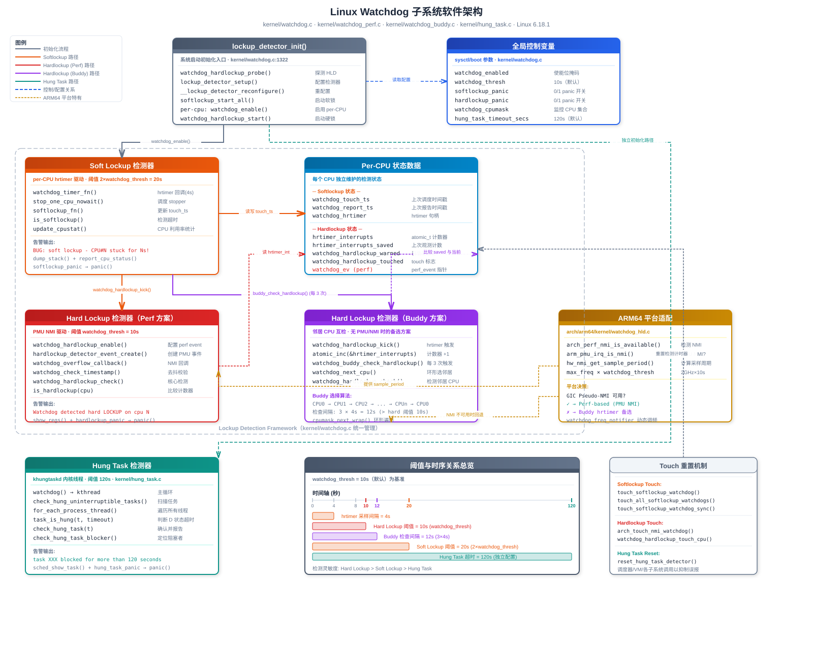
Linux 内核 Watchdog 子系统是一个多层次锁检测框架，负责检测系统级别的 lockup（死锁/活锁），代码主要在 kernel/watchdog.c。
┌─────────────────────────────────────────────────────────────────────┐
│ Lockup Detection Framework │
├─────────────────┬──────────────────────┬────────────────────────────┤
│ Hard Lockup │ Soft Lockup │ Hung Task │
│ (NMI/PMU) │ (hrtimer) │ (khungtaskd) │
├─────────────────┼──────────────────────┼────────────────────────────┤
│ 检测: 中断被关闭 │ 检测: 内核态自旋 │ 检测: D 状态任务超时 │
│ 阈值: 10s │ 阈值: 20s │ 阈值: 120s │
│ 上下文: NMI │ 上下文: hrtimer 中断 │ 上下文: 内核线程 │
│ 触发: PMU 溢出 │ 触发: 高精度定时器 │ 触发: 周期性任务扫描 │
└─────────────────┴──────────────────────┴────────────────────────────┘初始化流程（kernel/watchdog.c: lockup_detector_init()）：
系统启动
│
▼
lockup_detector_init()
├─→ watchdog_hardlockup_probe() // 探测硬锁检测器
│ ├─→ 优先: Perf-based (PMU NMI)
│ └─→ 备选: Buddy hrtimer
│
├─→ cpumask_copy(&watchdog_cpumask, cpu_possible_mask)
│
└─→ lockup_detector_setup()
└─→ 对每个 CPU: watchdog_enable()
├─→ 启动 per-CPU hrtimer（softlockup 检测）
└─→ watchdog_hardlockup_enable()
└─→ 配置 perf event 或 buddy 系统原理：通过 per-CPU hrtimer 定期触发，检查调度器是否还在正常工作。如果一个 CPU 长时间不让出执行权（在内核态自旋），hrtimer 中断仍能触发，但 softlockup watchdog 会发现 touch timestamp 未更新。
采样周期计算：
// kernel/watchdog.c: set_sample_period()
sample_period = get_softlockup_thresh() * (NSEC_PER_SEC / NUM_SAMPLE_PERIODS);
= (watchdog_thresh * 2) * (1000000000 / 5)
= 20 * 200000000 = 4,000,000,000 ns = 4 秒（默认）| 参数 | 值 | 说明 |
|---|---|---|
watchdog_thresh |
10（默认） | 基础阈值 |
NUM_SAMPLE_PERIODS |
5 | 采样周期数 |
| Soft lockup 阈值 | watchdog_thresh * 2 = 20 秒 |
实际超时 |
| 采样间隔 | 4 秒 | hrtimer 触发间隔 |
检测流程：
hrtimer 触发 → watchdog_timer_fn()
│
├─→ watchdog_hardlockup_kick() // 踢 hardlockup 检测器
│
├─→ stop_one_cpu_nowait(softlockup_fn) // 调度 stopper 线程更新 touch_ts
│
├─→ update_cpustat() // 更新 CPU 利用率统计
│
└─→ is_softlockup() 检测
│
├─ touch_ts 在阈值内 → 正常，返回
│
└─ touch_ts 过期 → Soft Lockup!
│
├─→ pr_emerg("BUG: soft lockup - CPU#%d stuck for %us!")
├─→ print_modules()
├─→ print_irqtrace_events(current)
├─→ dump_stack() // 当前 CPU 栈回溯
├─→ report_cpu_status() // CPU 利用率报告
├─→ add_taint(TAINT_SOFTLOCKUP)
└─→ softlockup_panic → panic()（如果配置）Touch 机制（重置检测计时器）：
| 函数 | 调用者 | 说明 |
|---|---|---|
touch_softlockup_watchdog() |
调度器核心代码 | 通用 touch |
touch_softlockup_watchdog_sched() |
调度器进入 idle | 仅重置 report_ts |
touch_all_softlockup_watchdogs() |
各子系统 | 重置所有 CPU |
touch_softlockup_watchdog_sync() |
同步场景 | 原子同步 touch |
原理：使用硬件 PMU（Performance Monitoring Unit）的计数器溢出中断（以 NMI 优先级触发），即使中断被禁用也能检测到 lockup。
代码路径：kernel/watchdog_perf.c
PMU 计数器溢出（每 watchdog_thresh 秒一次）
│
▼ NMI 上下文
watchdog_overflow_callback(event, data, regs)
│
├─→ watchdog_check_timestamp() // 去抖检查
│ └─ 比较当前时间与 last_timestamp
│ 间隔 < 4/5 * watchdog_thresh → 跳过（防 CPU 变频误报）
│
└─→ watchdog_hardlockup_check(cpu, regs)
│
├─→ is_hardlockup(cpu)
│ └─ 比较 hrtimer_interrupts 与 hrtimer_interrupts_saved
│ 相等 → hrtimer 未触发 → CPU 卡死 → Hard Lockup!
│ 不等 → 正常，更新 saved 值
│
└─→ 检测到 Hard Lockup:
├─→ pr_emerg("CPU#%d: Watchdog detected hard LOCKUP on cpu %d")
├─→ print_modules()
├─→ print_irqtrace_events(current)
├─→ show_regs(regs) 或 dump_stack()
└─→ hardlockup_panic → panic()（如果配置）ARM64 平台采样周期（arch/arm64/kernel/watchdog_hld.c）：
u64 hw_nmi_get_sample_period(unsigned long watchdog_thresh)
{
unsigned long max_cpu_freq = cpufreq_get_hw_max_freq(0) * 1000UL;
if (!max_cpu_freq)
max_cpu_freq = 5UL * 1000 * 1000 * 1000; // 5GHz 安全回退
return (u64)max_cpu_freq * watchdog_thresh;
// 例: 2GHz * 10s = 20,000,000,000 cycles
}ARM64 还注册了 watchdog_freq_notifier 监听 CPUFreq 事件，当 CPU 频率变化时自动更新 perf event 的采样周期，防止因变频导致误报。
原理：当硬件不支持 PMU NMI 时的备选方案。每个 CPU 的 hrtimer 在触发时，除了做 softlockup 检测，还会检查"邻居" CPU 的 hrtimer 是否正常触发。
代码路径：kernel/watchdog_buddy.c
CPU A 的 hrtimer 触发
│
▼
watchdog_hardlockup_kick()
│
├─→ atomic_inc(&hrtimer_interrupts) // 本 CPU 计数器 +1
│
└─→ watchdog_buddy_check_hardlockup()
│
├─→ if (hrtimer_interrupts % 3 != 0) return; // 每 3 次检查 1 次
│ // 3 * 4s = 12s，略大于 watchdog_thresh(10s)
│
└─→ next_cpu = watchdog_next_cpu(this_cpu); // 环形选择下一个 CPU
watchdog_hardlockup_check(next_cpu, NULL);Buddy 选择算法：
// watchdog_buddy.c: watchdog_next_cpu()
static int watchdog_next_cpu(int cpu)
{
cpumask_t *watchdog_cpus; // 当前被监控的 CPU 集合
int next = cpumask_next(cpu, watchdog_cpus);
if (next >= nr_cpu_ids)
next = cpumask_first(watchdog_cpus); // 环形回绕
return next;
}原理：独立于 lockup 检测器，专门检测长时间处于 TASK_UNINTERRUPTIBLE（D 状态）的任务。由专门的内核线程 khungtaskd 周期性扫描任务链表。
代码路径：kernel/hung_task.c
khungtaskd 内核线程（周期唤醒）
│
▼
watchdog_thread_fn()
│
└─→ check_hung_uninterruptible_tasks()
│
└─→ 遍历所有 task:
│
for_each_process_thread(g, t)
│
└─→ task_is_hung(t) 判断:
│
├─ 不是 TASK_UNINTERRUPTIBLE → 跳过
├─ 设置了 TASK_WAKEKILL/TASK_NOLOAD/TASK_FROZEN → 跳过
├─ switch_count 有变化 → 正常（更新 last_switch_time）
├─ 超时未到 → 还在等待
│
└─ 超时且 switch_count 无变化 → Hung!
│
├─→ pr_err("INFO: task %s:%d blocked for more than %ld seconds.")
├─→ sched_show_task(t) // 任务状态和栈
├─→ debug_show_held_locks(t) // 持有的锁
├─→ check_hung_task_blocker(t) // 阻塞者信息
└─→ hung_task_panic → panic()（如果配置）阻塞者检测（CONFIG_DETECT_HUNG_TASK_BLOCKER）：
// hung_task.c: check_hung_task_blocker()
// 尝试找出是哪个锁/信号量阻塞了 hung task
// 并输出锁的持有者信息，帮助定位根因硬锁检测支持（arch/arm64/kernel/watchdog_hld.c）：
// ARM64 需要 Pseudo-NMI 支持才能使用 perf-based hardlockup 检测
bool __init arch_perf_nmi_is_available(void)
{
return arm_pmu_irq_is_nmi(); // 检查 PMU 中断是否能以 NMI 优先级触发
}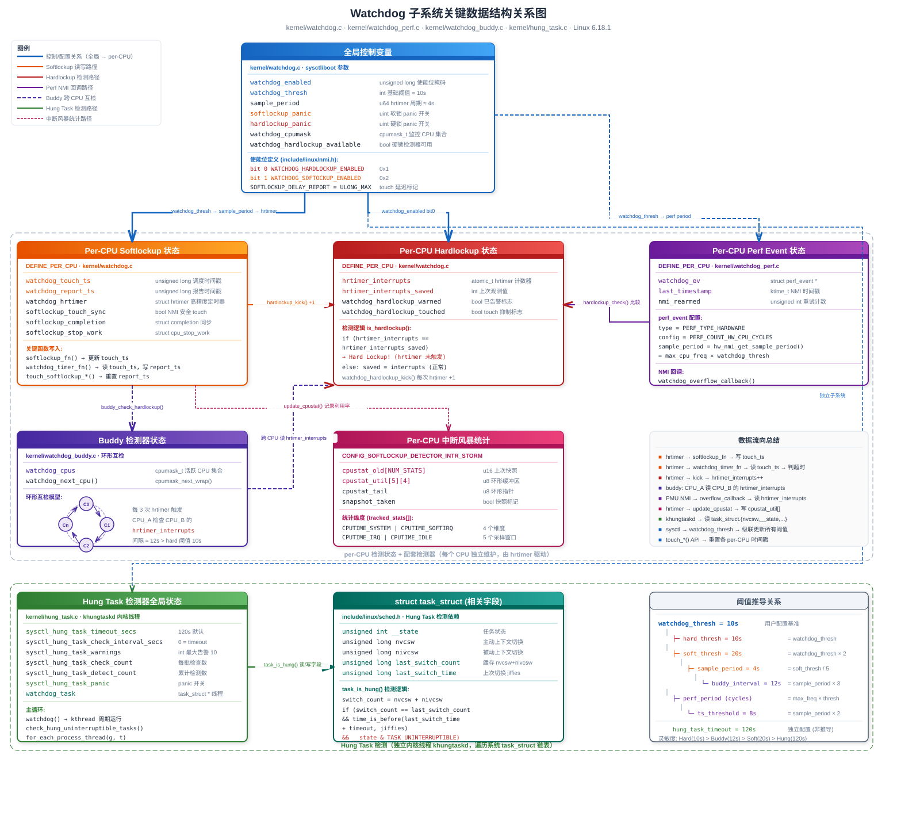
全局控制变量（kernel/watchdog.c）：
| 变量 | 类型 | 默认值 | 说明 |
|---|---|---|---|
watchdog_enabled |
unsigned long |
— | 检测器使能位掩码 |
watchdog_user_enabled |
int |
1 | 用户总开关 |
watchdog_thresh |
int |
10 | 基础阈值（秒） |
hardlockup_panic |
unsigned int |
0/1 | 硬锁 panic |
softlockup_panic |
unsigned int |
0/1 | 软锁 panic |
使能位定义（include/linux/nmi.h）：
#define WATCHDOG_HARDLOCKUP_ENABLED_BIT 0
#define WATCHDOG_SOFTOCKUP_ENABLED_BIT 1
#define WATCHDOG_HARDLOCKUP_ENABLED (1 << 0) // 0x1
#define WATCHDOG_SOFTOCKUP_ENABLED (1 << 1) // 0x2Per-CPU Softlockup 状态：
| 变量 | 类型 | 说明 |
|---|---|---|
watchdog_touch_ts |
unsigned long |
上次成功调度的时间戳 |
watchdog_report_ts |
unsigned long |
上次 softlockup 报告的时间戳 |
watchdog_hrtimer |
struct hrtimer |
per-CPU 高精度定时器 |
softlockup_touch_sync |
bool |
原子同步 touch 标志 |
Per-CPU Hardlockup 状态：
| 变量 | 类型 | 说明 |
|---|---|---|
hrtimer_interrupts |
atomic_t |
hrtimer 触发计数器 |
hrtimer_interrupts_saved |
int |
上次观测的计数值 |
watchdog_hardlockup_warned |
bool |
已报告硬锁告警 |
watchdog_hardlockup_touched |
bool |
抑制新上线 CPU 误报 |
watchdog_ev（perf） |
struct perf_event * |
per-CPU perf 事件 |
Hung Task 状态（kernel/hung_task.c）：
| 变量 | 类型 | 默认值 | 说明 |
|---|---|---|---|
sysctl_hung_task_timeout_secs |
unsigned long |
120 | D 状态超时（秒） |
sysctl_hung_task_check_interval_secs |
unsigned long |
0 | 检查间隔（0=等于 timeout） |
sysctl_hung_task_warnings |
int |
10 | 最大告警次数 |
watchdog_task |
struct task_struct * |
— | khungtaskd 线程指针 |
内核配置开关：
| 配置项 | 说明 | 建议 |
|---|---|---|
CONFIG_LOCKUP_DETECTOR |
主开关 | 必须开启 |
CONFIG_SOFTLOCKUP_DETECTOR |
Soft lockup 检测 | 必须开启 |
CONFIG_HARDLOCKUP_DETECTOR |
Hard lockup 检测 | 建议开启 |
CONFIG_HARDLOCKUP_DETECTOR_PERF |
Perf-based 方案 | ARM64/x86 默认 |
CONFIG_HARDLOCKUP_DETECTOR_BUDDY |
Buddy 方案 | Perf 不可用时 |
CONFIG_DETECT_HUNG_TASK |
Hung task 检测 | 必须开启 |
CONFIG_DETECT_HUNG_TASK_BLOCKER |
显示阻塞者信息 | 建议开启 |
CONFIG_BOOTPARAM_SOFTLOCKUP_PANIC |
默认 soft panic | 按需 |
CONFIG_BOOTPARAM_HARDLOCKUP_PANIC |
默认 hard panic | 按需 |
CONFIG_BOOTPARAM_HUNG_TASK_PANIC |
默认 hung panic | 按需 |
CONFIG_SOFTLOCKUP_DETECTOR_INTR_STORM |
中断风暴检测 | 建议开启 |
Runtime sysctl 参数（/proc/sys/kernel/）：
| 参数 | 默认值 | 范围 | 说明 |
|---|---|---|---|
watchdog |
1 | 0-1 | 总开关 |
nmi_watchdog |
1 | 0-1 | 硬锁检测开关 |
soft_watchdog |
1 | 0-1 | 软锁检测开关 |
watchdog_thresh |
10 | 0-60 | 基础阈值（秒） |
watchdog_cpumask |
全部 | cpumask | 监控的 CPU 集合 |
softlockup_panic |
0 | 0-1 | 软锁是否 panic |
hardlockup_panic |
0 | 0-1 | 硬锁是否 panic |
softlockup_all_cpu_backtrace |
0 | 0-1 | 软锁时 dump 所有 CPU 栈 |
hardlockup_all_cpu_backtrace |
0 | 0-1 | 硬锁时 dump 所有 CPU 栈 |
hung_task_timeout_secs |
120 | 0=禁用 | Hung task 超时 |
hung_task_check_interval_secs |
0 | 0=同 timeout | 检查间隔 |
hung_task_warnings |
10 | — | 最大告警次数 |
hung_task_panic |
0 | 0-1 | Hung task 是否 panic |
hung_task_all_cpu_backtrace |
0 | 0-1 | Hung task 时 dump 所有 CPU |
Boot 参数：
| 参数 | 说明 |
|---|---|
nowatchdog |
禁用所有 watchdog |
nosoftlockup |
禁用 softlockup 检测 |
nmi_watchdog=0/1/panic |
配置硬锁检测 |
softlockup_panic=0/1 |
软锁 panic 开关 |
watchdog_thresh=<秒> |
设置阈值 |
阈值关系总结：
watchdog_thresh = 10s（默认）
Hard Lockup 检测阈值 = watchdog_thresh = 10s
Soft Lockup 检测阈值 = watchdog_thresh * 2 = 20s
hrtimer 采样间隔 = soft_thresh / 5 = 4s
Buddy 检查间隔 = 采样间隔 * 3 = 12s（略 > hard 阈值）
Hung Task 超时 = hung_task_timeout_secs = 120s（独立配置）Soft Lockup 告警：
watchdog: BUG: soft lockup - CPU#3 stuck for 23s! [kworker/3:1:1234]
Modules linked in: module_a module_b
irq event stamp: 12345678
hardirqs last enabled at (12345677): [<ffff...>] _raw_spin_unlock_irqrestore+0x68/0xa0
hardirqs last disabled at (12345678): [<ffff...>] _raw_spin_lock_irqsave+0x2c/0x70
softirqs last enabled at (12340000): [<ffff...>] __do_softirq+0x358/0x4a8
softirqs last disabled at (12339999): [<ffff...>] irq_exit+0xd0/0xd8
CPU: 3 UID: 0 PID: 1234 Comm: kworker/3:1 Tainted: G
[stack trace]
CPU#3 Utilization every 4000ms during lockup:
#1: 95% system, 0% softirq, 5% hardirq, 0% idle
#2: 90% system, 0% softirq, 10% hardirq, 0% idle
#3: 98% system, 0% softirq, 2% hardirq, 0% idle
#4: 97% system, 0% softirq, 3% hardirq, 0% idle
#5: 99% system, 0% softirq, 1% hardirq, 0% idle解读要点：
stuck for 23s：超过 20s（soft 阈值）后检测到CONFIG_SOFTLOCKUP_DETECTOR_INTR_STORM）：中断风暴报告（hardirq 占比 > 50% 时）：
CPU#3 Detect HardIRQ Time exceeds 50%. Most frequent HardIRQs:
#1: 50000 irq#42
#2: 3000 irq#18
#3: 100 irq#3Hard Lockup 告警：
watchdog: CPU#5: Watchdog detected hard LOCKUP on cpu 5
Modules linked in: ...
CPU: 5 UID: 0 PID: 567 Comm: some_task
[register dump]
[stack trace]Hung Task 告警：
INFO: task kworker/0:1:123 blocked for more than 120 seconds.
Not tainted 6.18.1 #1
"echo 0 > /proc/sys/kernel/hung_task_timeout_secs" disables this message.
task:kworker/0:1 state:D stack:0 pid:123 tgid:123 ppid:2
[stack trace showing where task is blocked]定位要点：
CONFIG_DETECT_HUNG_TASK_BLOCKER，会显示锁持有者信息本节提炼 Watchdog 子系统实现中涉及的核心算法，帮助理解各检测器运行机理和 debug 问题时的思路。
源码：kernel/watchdog.c — set_sample_period()
所有检测阈值从单一基准 watchdog_thresh（默认 10s）级联推导，保证各层检测器时序一致：
算法:
输入: watchdog_thresh = 10s
soft_thresh = watchdog_thresh × 2 = 20s // get_softlockup_thresh()
sample_period = soft_thresh / 5 = 4s // hrtimer 触发间隔
推导关系树:
watchdog_thresh (10s)
├─ hard_lockup_thresh = 10s // Perf NMI 触发周期
├─ soft_lockup_thresh = 20s // is_softlockup() 判定阈值
│ └─ sample_period = 4s // hrtimer 周期
│ └─ buddy_interval = 12s // 每 3 次 hrtimer 检查 1 次
├─ perf_period = max_cpu_freq × 10s // PMU 计数器溢出周期（cycles）
│ └─ ts_threshold = sample_period × 2 // NMI 去抖阈值 = 8s
└─ hung_task_timeout = 120s // 独立配置，不参与推导设计原理：除以 5（NUM_SAMPLE_PERIODS = 5）保证在 hardlockup 阈值（10s）内 hrtimer 能触发 2-3 次，给 hardlockup 检测器足够的"心跳"证据。
时间戳精度：get_timestamp() 使用 running_clock() >> 30，约 1 秒精度（$2^{30} \approx 10^9$ ns），足够检测秒级 lockup。
源码：kernel/watchdog.c — is_softlockup()
不是简单的单阈值判定，而是三阶段渐进式响应：
输入: touch_ts (上次调度时间), period_ts (上次报告时间), now (当前时间)
输出: 0 (正常) 或 duration (lockup 持续秒数)
阶段 1 — 中断风暴预警 (20% 阈值):
if (now >= period_ts + soft_thresh / 5) // 即 >= period_ts + 4s
if need_counting_irqs(): // 上一周期 hardirq > 50%
start_counting_irqs() // 开始快照中断计数
阶段 2 — BPF 调度器弹出 (75% 阈值):
if (now >= period_ts + soft_thresh * 3/4) // 即 >= period_ts + 15s
scx_softlockup(now - touch_ts) // 通知 sched_ext 弹出 BPF 调度器
阶段 3 — 确认 Soft Lockup (100% 阈值):
if (now > period_ts + soft_thresh) // 即 > period_ts + 20s
return (now - touch_ts) // 返回 lockup 持续时间
return 0 // 正常设计原理：渐进式响应允许系统在完全告警前尝试自救（弹出有问题的 BPF 调度器），同时在早期就开始收集诊断信息（中断计数快照）。
源码：kernel/watchdog.c — update_cpustat() / print_cpustat()（需 CONFIG_SOFTLOCKUP_DETECTOR_INTR_STORM）
使用定长环形缓冲区记录 lockup 前 5 个采样周期的 CPU 利用率分布：
数据结构 (per-CPU):
cpustat_old[4] : u16 上一次快照（16 位精度）
cpustat_util[5][4] : u8 环形缓冲区，5 个窗口 × 4 维度
cpustat_tail : u8 写入指针
维度: SYSTEM | SOFTIRQ | HARDIRQ | IDLE
算法 update_cpustat():
1. 读取当前 kernel_cpustat（纳秒级）
2. 转换为 16 位精度: new_stat = (ns + 2^23) >> 24 // 约 16.8ms 粒度
3. 计算百分比: util = (new_stat - old_stat) × 100 / sample_period_16
4. 钳位: if util > 100 then util = 100 // 防止整数除法累积误差
5. 写入: cpustat_util[tail][i] = util
6. 前进: tail = (tail + 1) % 5
精度设计:
原始 cpustat: u64 (纳秒)
压缩后: u16 (>>24, 约 16.8ms 粒度)
百分比: u8 (0-100)
每 CPU 总内存: 4×2 + 5×4 + 1 = 29 字节打印算法：从 tail（最旧的条目）开始顺序输出 5 个周期，保证时间有序。
空间复杂度：O(1)，每 CPU 29 字节。
时间复杂度：O(1) 每次更新。
源码：kernel/watchdog.c — tabulate_irq_count() / print_irq_counts()
当 hardirq 占比 > 50% 时，找出触发次数最多的 Top 5 中断号：
算法 tabulate_irq_count(sorted[], irq, counts, rank=5):
// 在线插入排序：对每个中断，与已排序的 Top-5 逐一比较
new = {irq, counts}
for i = 0 to rank-1:
if counts > sorted[i].counts:
swap(new, sorted[i]) // 当前中断"挤入"，被挤出的继续下沉
完整流程:
1. 初始化 sorted[5] = {(-1,0), (-1,0), ...}
2. for_each_active_irq(i):
count = kstat_get_irq_since_snapshot(i) // 自快照以来的增量
tabulate_irq_count(sorted, i, count, 5)
3. 输出 sorted[0..4]（按降序排列的 Top 5）时间复杂度：O(5 × n)，其中 n 为活跃中断数。避免了完整排序的 O(n log n)。
触发条件：need_counting_irqs() 检查最近一个采样窗口的 hardirq 百分比 > HARDIRQ_PERCENT_THRESH (50%)。
源码：kernel/watchdog.c — is_hardlockup() / watchdog_hardlockup_kick()
基于 monotonic 计数器的"心跳"检测，核心思想：如果一个 CPU 的 hrtimer 中断能正常触发，那么计数器必然递增：
写入端 watchdog_hardlockup_kick() (hrtimer 上下文):
new = atomic_inc_return(&hrtimer_interrupts[this_cpu]) // 每次 +1
检测端 is_hardlockup(cpu) (NMI 或 buddy CPU 上下文):
hrint = atomic_read(&hrtimer_interrupts[cpu])
if (hrtimer_interrupts_saved[cpu] == hrint):
return true // 计数器未变 → hrtimer 未触发 → Hard Lockup!
else:
hrtimer_interrupts_saved[cpu] = hrint // 记录新值
return false // 正常
防误报机制 watchdog_hardlockup_check():
if (watchdog_hardlockup_touched[cpu]): // 刚 touch 过
watchdog_hardlockup_touched[cpu] = false
return // 跳过本次检测
if (watchdog_hardlockup_warned[cpu]): // 已报告过
return // 不重复报告关键性质：atomic_t 保证跨 CPU 可见性。hrtimer_interrupts_saved 不需要原子操作，因为同一 CPU 的 saved 值只被单一检测者读写。
源码：kernel/watchdog_buddy.c — watchdog_next_cpu() / watchdog_buddy_check_hardlockup()
无 PMU NMI 时的去中心化 hardlockup 检测方案。每个 CPU 的 hrtimer 负责检测"下一个"邻居 CPU：
CPU 环形拓扑 (watchdog_next_cpu):
next = cpumask_next_wrap(cpu, &watchdog_cpus)
if (next == cpu): return nr_cpu_ids // 只有自己，无法互检
return next
示例 (4 CPU): CPU0 → CPU1 → CPU2 → CPU3 → CPU0
频率控制 (watchdog_buddy_check_hardlockup):
if (hrtimer_interrupts % 3 != 0): return // 每 3 次触发才检查 1 次
// 3 × 4s = 12s，比 hard 阈值 10s 略大，留 20% 安全裕量
next = watchdog_next_cpu(this_cpu)
smp_rmb() // 配对 enable/disable 的 smp_wmb()
watchdog_hardlockup_check(next, NULL)
内存屏障协议:
enable(cpu): touch(cpu) → touch(next) → smp_wmb() → set_bit(cpu)
disable(cpu): touch(next) → smp_wmb() → clear_bit(cpu)
check(): smp_rmb() → read hrtimer_interrupts
// 保证新上线/下线 CPU 的 touch 操作对检测者可见防误报设计：
源码：kernel/watchdog_perf.c — watchdog_check_timestamp()
PMU 计数器基于 CPU cycle 数，Turbo-Mode 可能导致实际频率远高于标称频率，使 NMI 触发过快。去抖算法过滤这种误触发：
算法 watchdog_check_timestamp():
now = ktime_get_mono_fast_ns()
delta = now - last_timestamp[this_cpu]
if (delta < watchdog_hrtimer_sample_threshold): // 阈值 = 2 × sample_period = 8s
// NMI 触发太快，可能是 Turbo-Mode 导致
if (++nmi_rearmed[this_cpu] < 10): // 允许最多 10 次快速触发
return false // 忽略本次
// 第 10 次强制执行，防止 jiffies-based ktime 完全卡死
nmi_rearmed[this_cpu] = 0
last_timestamp[this_cpu] = now
return true // 执行 hardlockup 检测
阈值设置 watchdog_update_hrtimer_threshold():
watchdog_hrtimer_sample_threshold = sample_period × 2
// = 4s × 2 = 8s
// 保证 4/5 × watchdog_thresh 内 hrtimer 至少触发 1 次设计原理：nmi_rearmed 上限 10 是安全网 — 如果 ktime 基于 jiffies 且 jiffies 卡死，delta 永远为 0，没有这个上限就永远不会触发检测。
源码：kernel/hung_task.c — check_hung_uninterruptible_tasks()
遍历系统所有线程是 O(n) 操作，长时间持有 RCU 读锁会延迟 GP 完成。分批扫描算法定期释放 RCU 锁：
算法 check_hung_uninterruptible_tasks(timeout):
max_count = sysctl_hung_task_check_count
last_break = jiffies
rcu_read_lock()
for_each_process_thread(g, t):
if (--max_count < 0): break // 上限保护
if (jiffies > last_break + HUNG_TASK_LOCK_BREAK): // LOCK_BREAK = HZ/10 = 100ms
// RCU 锁中断：安全地释放再重新获取
get_task_struct(g) // 防止扫描期间被释放
get_task_struct(t)
rcu_read_unlock()
cond_resched() // 让出 CPU
rcu_read_lock()
alive = pid_alive(g) && pid_alive(t) // 检查是否还活着
put_task_struct(t)
put_task_struct(g)
if (!alive): break // 被释放了，终止扫描
last_break = jiffies
check_hung_task(t, timeout)
rcu_read_unlock()时间复杂度：O(min(n, max_count))，其中 n 为系统线程总数。
RCU 友好性：每 100ms 主动释放 RCU 读锁，避免阻塞 GP 导致内存回收停滞。
源码：kernel/hung_task.c — task_is_hung()
对每个任务执行四阶段过滤，逐步缩小"真正 hung"的范围：
算法 task_is_hung(t, timeout):
switch_count = t->nvcsw + t->nivcsw // 主动 + 被动上下文切换总数
阶段 1 — 状态过滤:
if !(t->__state & TASK_UNINTERRUPTIBLE): return false // 非 D 状态
if (t->__state & TASK_WAKEKILL): return false // 可被 kill 唤醒
if (t->__state & TASK_NOLOAD): return false // idle 类任务
if (t->__state & TASK_FROZEN): return false // freezer 冻结
阶段 2 — 新任务保护:
if (switch_count == 0): return false // 从未被调度过的新任务
阶段 3 — 上下文切换变化检测:
if (switch_count != t->last_switch_count):
t->last_switch_count = switch_count // 更新缓存
t->last_switch_time = jiffies // 重置计时
return false // 有调度活动，正常
阶段 4 — 超时判定:
if (jiffies < t->last_switch_time + timeout × HZ):
return false // 还没超时
return true // Hung!关键设计：使用 last_switch_count + last_switch_time 双字段缓存，避免每次都需要记录初始切换计数。只有当切换计数停止变化后才开始计时。
源码：kernel/hung_task.c — debug_show_blocker()（需 CONFIG_DETECT_HUNG_TASK_BLOCKER）
当确认任务 hung 后，尝试追溯其阻塞原因：
算法 debug_show_blocker(task):
blocker = READ_ONCE(task->blocker) // 获取阻塞者信息
if (!blocker): return
type = hung_task_get_blocker_type(blocker) // 解析锁类型
switch (type):
BLOCKER_TYPE_MUTEX:
owner = mutex_get_owner(lock) // 获取 mutex 持有者
BLOCKER_TYPE_SEM:
owner = sem_last_holder(lock) // 获取信号量最后持有者
BLOCKER_TYPE_RWSEM_READER:
BLOCKER_TYPE_RWSEM_WRITER:
owner = rwsem_owner(lock) // 获取读写锁持有者
// 区分 reader/writer blocked-by 和 blocked-as
// 在系统所有线程中搜索 owner 对应的 task_struct
for_each_process_thread(g, t):
if (t == owner_task):
sched_show_task(t) // 输出阻塞者的状态和栈
break支持的锁类型：mutex、semaphore、rwsem（区分读者/写者身份）。
源码：kernel/watchdog.c — softlockup_fn() / watchdog_timer_fn()
softlockup 检测的核心问题：如何证明调度器还在正常工作？使用 stop_one_cpu + completion 机制确保实际 CPU 执行：
算法:
watchdog_timer_fn() (hrtimer 中断上下文):
if completion_done(&softlockup_completion): // 上次的喂狗已完成
reinit_completion(&softlockup_completion) // 重置 completion
stop_one_cpu_nowait( // 调度 stopper 线程
this_cpu, softlockup_fn, ...) // 在本 CPU 上运行
softlockup_fn() (stopper 线程上下文, 最高优先级):
update_touch_ts() // 更新 watchdog_touch_ts
stop_counting_irqs() // 停止中断计数
complete(&softlockup_completion) // 通知 hrtimer 已完成
检测逻辑:
if (now - touch_ts > soft_thresh): // touch_ts 长时间未更新
→ stopper 线程无法运行 → 调度器卡死 → Soft Lockup!为何用 stopper 线程而非直接在 hrtimer 中更新：hrtimer 运行在中断上下文，即使调度器完全卡死 hrtimer 仍能触发。必须通过调度一个"真正的线程"来证明调度器还能工作。stop_one_cpu 使用最高优先级的 per-CPU stopper 线程，最大限度减少误报。
答：
| 维度 | Soft Lockup | Hard Lockup |
|---|---|---|
| 检测目标 | CPU 长时间在内核态自旋，不让出执行权 | CPU 长时间无法响应中断（中断被禁用） |
| 检测机制 | per-CPU hrtimer 中断检查 stopper 线程是否被调度 | PMU NMI 或 Buddy CPU 检查 hrtimer 是否还在触发 |
| 默认阈值 | 20 秒（watchdog_thresh × 2） |
10 秒（watchdog_thresh） |
| 运行上下文 | hrtimer 中断上下文 | NMI 上下文（Perf）或邻居 CPU hrtimer 中断（Buddy） |
| 中断是否可用 | 可用（hrtimer 能触发） | 不可用（hrtimer 也被阻塞） |
| 典型根因 | spin_lock 死循环、长时间禁抢占的计算 |
spin_lock_irqsave 死循环、NMI 死循环 |
关键理解：Soft Lockup 时中断仍然可以触发，只是没有进程调度；Hard Lockup 时连中断都无法触发了。Hard Lockup 比 Soft Lockup 更严重。
答：通过 Completion + Stopper 线程的两阶段验证：
watchdog_timer_fn()stop_one_cpu_nowait() 调度一个stopper 线程（最高优先级 per-CPU 线程）softlockup_fn() → 更新 watchdog_touch_ts 时间戳 → 完成 completion如果调度器卡死：stopper 线程无法被调度 → watchdog_touch_ts 不更新 → 超过 20 秒 → Soft Lockup 告警。
为什么不直接在 hrtimer 中更新时间戳？因为 hrtimer 运行在中断上下文，即使调度器完全卡死，只要中断没被禁用 hrtimer 仍然能触发。必须调度一个"真正的线程"才能证明调度器还在工作。
答：
| 维度 | Perf 方案（PMU NMI） | Buddy 方案（邻居互检） |
|---|---|---|
| 依赖 | 需要 PMU 硬件 + NMI 支持 | 仅需 hrtimer，无硬件依赖 |
| 检测精度 | 精确——NMI 能打断任何上下文 | 有延迟——依赖邻居 CPU 的 hrtimer |
| 自检能力 | ✓ 能检测本 CPU | ✗ 只能检测邻居 CPU |
| 误报风险 | Turbo-Mode 变频可能误报（需去抖算法） | CPU 上下线时可能误报（需 touch + 内存屏障） |
| 实时性 | watchdog_thresh 秒内检出 | 约 1.2 × watchdog_thresh 秒检出（模 3 频率） |
ARM64 选择策略：优先 Perf 方案（需要 GIC 支持 Pseudo-NMI + PMU 中断以 NMI 优先级触发），不满足时自动回退到 Buddy 方案。通过 arch_perf_nmi_is_available() → arm_pmu_irq_is_nmi() 判断。
答：
| 维度 | Hung Task | Soft Lockup |
|---|---|---|
| 检测目标 | 进程长时间处于 TASK_UNINTERRUPTIBLE（D 状态） |
CPU 长时间在内核态不让出执行权 |
| 默认阈值 | 120 秒 | 20 秒 |
| 检测者 | khungtaskd 内核线程（周期扫描所有任务） |
per-CPU hrtimer 中断 |
| 典型根因 | 等锁（mutex/rwsem）、等 I/O、等信号量 | 自旋锁死循环、长时间禁抢占计算 |
| CPU 状态 | CPU 可能正常调度其他任务 | CPU 完全被一个任务占据 |
| 影响范围 | 仅影响被阻塞的进程 | 整个 CPU 上的所有任务都无法运行 |
核心区别：Soft Lockup 是 CPU 级别的问题（CPU 被霸占），Hung Task 是进程级别的问题（进程被阻塞）。Hung Task 的 CPU 可能运行得很正常，只是某个进程在 D 状态等了太久。
答：分三步走：
第一步 — 看栈回溯：
BUG: soft lockup - CPU#3 stuck for 23s! [kworker/3:1:1234]栈回溯直接指出 CPU 卡在哪个函数。常见模式：
_raw_spin_lock → 自旋锁死循环，需要找是谁持有锁不释放copy_to_user/copy_from_user → 可能 mmap 了有问题的设备内存第二步 — 看 CPU 利用率报告（需 CONFIG_SOFTLOCKUP_DETECTOR_INTR_STORM）：
CPU#3 Utilization every 4000ms during lockup:
#1: 95% system, 0% softirq, 5% hardirq, 0% idlesystem 高 → 内核态自旋hardirq > 50% → 中断风暴，会额外显示 Top 5 中断号softirq 高 → 软中断处理过多第三步 — 看中断状态：
hardirqs last disabled at: [<ffff...>] _raw_spin_lock_irqsave+0x2c如果 hardirq 被禁用的位置和栈回溯吻合，说明问题出在持锁后的代码路径。
watchdog_thresh 设为 0 会怎样？设太小会怎样？答：
get_softlockup_thresh() 返回 0，hrtimer 不启动）答：
| 现象 | Hard Lockup | 系统 Hang |
|---|---|---|
| 串口有输出 | ✓ NMI 能打印 lockup 告警 | ✗ 无任何输出 |
| 其他 CPU 正常 | ✓ 只有特定 CPU 卡死 | ✗ 所有 CPU 都无响应 |
| 中断响应 | 仅 NMI 可响应 | 无任何中断响应 |
| 可能原因 | spin_lock_irqsave 死循环 |
看门狗硬件没启用、电源/硬件故障、总线死锁 |
排查方法：如果有硬件 watchdog（如 ARM 的 SP805），系统 hang 后硬件 watchdog 超时会触发 reset，可通过 ramdump 分析。如果连硬件 watchdog 都没触发，多半是硬件问题。
答：khungtaskd 遍历系统所有线程时需持有 RCU 读锁。如果系统有上万个线程，长时间持有 RCU 读锁会：
call_rcu() 回调无法执行 → 内存无法释放因此每 HUNG_TASK_LOCK_BREAK = HZ/10（约 100ms）释放一次 RCU 读锁，调用 cond_resched() 让出 CPU，再重新获取。释放前用 get_task_struct() 增加引用计数防止扫描位置的 task 被释放。
答：这是精心设计的时序关系：
watchdog_thresh = 10 秒不能每次检查的原因：如果每次 hrtimer 都检查（4 秒间隔），而 hardlockup 的邻居 CPU 可能只是刚好在这 4 秒内没有触发 hrtimer（比如正在运行一段长的关中断代码但还没超过 10 秒阈值），就会产生误报。
12 秒 > 10 秒的设计保证：当检测到邻居的 hrtimer_interrupts 计数器没变化时，至少已经过了 12 秒，超过了 10 秒阈值，确信是真正的 hardlockup。多出的 20% 是安全裕量。
答：通过 /proc/sys/kernel/ 下的 sysctl 参数：
# 禁用/启用总开关
echo 0 > /proc/sys/kernel/watchdog # 禁用所有检测
echo 1 > /proc/sys/kernel/watchdog # 启用
# 单独控制
echo 0 > /proc/sys/kernel/nmi_watchdog # 仅禁用 hardlockup
echo 0 > /proc/sys/kernel/soft_watchdog # 仅禁用 softlockup
# 调整阈值
echo 30 > /proc/sys/kernel/watchdog_thresh # 基础阈值改为 30s
# soft=60s, hard=30s
# 指定监控的 CPU
echo 0-3 > /proc/sys/kernel/watchdog_cpumask # 仅监控 CPU 0-3
# 触发 panic（用于 kdump 抓取完整信息）
echo 1 > /proc/sys/kernel/softlockup_panic
echo 1 > /proc/sys/kernel/hardlockup_panic
echo 1 > /proc/sys/kernel/hung_task_panic
# Hung Task 超时
echo 0 > /proc/sys/kernel/hung_task_timeout_secs # 0 = 禁用
echo 300 > /proc/sys/kernel/hung_task_timeout_secs # 延长到 5 分钟生产建议：开发环境打开 *_panic 配合 kdump 自动收集 vmcore；生产环境关闭 panic 仅记录日志，避免服务中断。
Linux 内核通过 Lockdep（Lock Dependency Validator，锁依赖验证器）在运行时自动检测潜在的死锁场景。Lockdep 是一个编译时插桩 + 运行时验证的框架，它不等死锁真正发生，而是在每次获取锁时检查"如果所有 CPU 都以这样的顺序拿锁，是否可能死锁"，从而在第一次出现违规顺序时就发出告警。
核心源码：kernel/locking/lockdep.c（约 6700 行）
头文件：include/linux/lockdep.h、include/linux/lockdep_types.h
内部头文件：kernel/locking/lockdep_internals.h
设计文档：Documentation/locking/lockdep-design.rst
死锁（Deadlock）是指两个或多个执行流互相持有对方所需的锁，导致所有参与者永久等待的状态。经典的四个必要条件：
| 条件 | 说明 | 内核场景举例 |
|---|---|---|
| 互斥（Mutual Exclusion） | 资源一次只能被一个执行流持有 | spin_lock(), mutex_lock() |
| 持有并等待（Hold and Wait） | 持有至少一个锁的同时等待获取另一个锁 | 在持有 A 的临界区内调用 lock(B) |
| 不可抢占（No Preemption） | 已持有的锁不能被强制释放 | spinlock 不可被其他 CPU 抢走 |
| 循环等待（Circular Wait） | 存在一个等待环：T1→T2→...→Tn→T1 | CPU0 持有 A 等 B，CPU1 持有 B 等 A |
内核中常见的死锁模式：
场景一：AA 死锁（自死锁 / 递归锁定）
──────────────────────────────
CPU0:
spin_lock(&lock_A);
spin_lock(&lock_A); ← 同一个锁再次获取，永久自旋
场景二：ABBA 死锁（锁顺序反转）
──────────────────────────────
CPU0: CPU1:
spin_lock(&A); spin_lock(&B);
spin_lock(&B); ← 等B spin_lock(&A); ← 等A
↓ ↓
DEADLOCK DEADLOCK
场景三：IRQ 反转死锁
──────────────────────────────
CPU0 (进程上下文):
spin_lock(&A); ← 持有A
<硬中断到来>
spin_lock(&A); ← 中断中再次获取A → 自死锁
正确做法：spin_lock_irqsave(&A, flags);Lockdep 的核心思想来自 Ingo Molnar（2006 年引入），其设计哲学是：
"在第一次出现不安全的锁序列时就报告，而不是等到死锁真正发生。"
源码注释（kernel/locking/lockdep.c 第 14-28 行）：
/*
* this code maps all the lock dependencies as they occur in a live kernel
* and will warn about the following classes of locking bugs:
*
* - lock inversion scenarios
* - circular lock dependencies
* - hardirq/softirq safe/unsafe locking bugs
*
* Bugs are reported even if the current locking scenario does not cause
* any deadlock at this point.
*
* I.e. if anytime in the past two locks were taken in a different order,
* even if it happened for another task, even if those were different
* locks (but of the same class as this lock), this code will detect it.
*/关键设计原则：
| 原则 | 说明 |
|---|---|
| 基于类而非实例 | 同一 lock_class_key 的所有锁实例共享依赖规则。一个 inode->i_lock 代表所有 inode 的 i_lock |
| 全局依赖图 | 所有锁类之间的先后关系记录在一张有向图中，节点是 lock_class，边是"A 先于 B 获取" |
| 编译时插桩 | spin_lock() 等宏展开后自动调用 lock_acquire() / lock_release()，无需手动注解 |
| 首次违规即报 | 不需要死锁真正发生，只要检测到违反锁序的路径就立即输出 WARNING |
| 运行时开销可控 | 通过 chain cache 缓存已验证的锁链，相同锁链只在首次出现时做完整 BFS 检测 |
Lockdep 的核心验证流程（每次 lock_acquire() 调用时触发）：
lock_acquire(lock)
│
├─ register_lock_class(lock) ← 查找或注册 lock_class
│
├─ check_deadlock(curr, hlock) ← 检查 AA 自死锁（同 class 是否已持有）
│ │
│ └─ 遍历 curr->held_locks[]，比较 class_idx
│
├─ check_prev_add(prev, next) ← 添加 prev→next 依赖边
│ │
│ ├─ check_noncircular() ← BFS 搜索是否形成环（ABBA 检测）
│ │ └─ __bfs_forwards() ← 从 next 出发沿 locks_after 做 BFS
│ │ ← 如果能到达 prev 的 class，说明形成环路 → 报告
│ │
│ ├─ check_irq_usage() ← 检查 IRQ 安全性反转
│ │ ├─ __bfs_backwards() ← 收集 prev 上游的 USED_IN_IRQ 使用
│ │ └─ find_usage_forwards()← 检查 next 下游的 ENABLED_IRQ 使用
│ │
│ └─ check_redundant() ← 冗余边剪枝
│
└─ validate_chain() ← 锁链 hash 缓存加速Lockdep 不跟踪每一个锁实例，而是将具有相同 lock_class_key 的所有锁归为一个 Lock Class（锁类）。这是 Lockdep 能在有限内存中覆盖全系统锁的关键抽象。
┌─ 编译时 ─────────────────────────────────┐
│ │
│ DEFINE_SPINLOCK(my_lock); │
│ ↓ 展开为 │
│ struct spinlock my_lock = { │
│ .dep_map = { │
│ .key = &__key, ← 静态变量地址 │
│ .name = "my_lock", │
│ } │
│ }; │
│ static struct lock_class_key __key; │
│ │
└───────────────────────────────────────────┘
┌─ 运行时 ─────────────────────────────────────────────────────────┐
│ │
│ lock_class_key ──hash──→ classhash_table[] ──→ lock_class │
│ (地址) ├ locks_after │
│ ├ locks_before │
│ ├ usage_mask │
│ └ name │
│ │
│ 同类所有实例共享一个 lock_class： │
│ │
│ inode_A->i_lock ─┐ │
│ inode_B->i_lock ─┼──→ lock_class("&sb->s_type->i_lock_key") │
│ inode_C->i_lock ─┘ │
│ │
└───────────────────────────────────────────────────────────────────┘对应源码（include/linux/lockdep_types.h）：
/* 锁类键 —— 编译时由宏自动生成的静态变量，地址唯一标识一类锁 */
struct lock_class_key {
union {
struct hlist_node hash_entry;
struct lockdep_subclass_key subkeys[MAX_LOCKDEP_SUBCLASSES]; /* 8 */
};
};
/* 锁实例到锁类的映射 —— 嵌入每个锁对象中 */
struct lockdep_map {
struct lock_class_key *key; /* 指向 lock_class_key */
struct lock_class *class_cache[2];/* 缓存已查找的 lock_class */
const char *name;
u8 wait_type_outer;
u8 wait_type_inner;
u8 lock_type;
};Subclass 机制：同一类锁的不同 嵌套层级 可用 subclass 区分。例如文件系统中父目录 inode 和子目录 inode 的 i_mutex 虽然是同一个 lock_class_key，但通过 mutex_lock_nested(&inode->i_mutex, I_MUTEX_PARENT) 指定不同 subclass（0-7），Lockdep 视为不同锁类，允许嵌套获取。
Lockdep 能检测的死锁分为三大类，每类对应不同的检测函数：
（1）AA 死锁 —— check_deadlock()
同一个 lock_class 被同一个任务重复获取（非读锁的递归获取）。
/* kernel/locking/lockdep.c: check_deadlock() */
static int check_deadlock(struct task_struct *curr, struct held_lock *next)
{
for (i = 0; i < curr->lockdep_depth; i++) {
prev = curr->held_locks + i;
if (hlock_class(prev) != hlock_class(next))
continue;
/* 允许 read-after-read 递归 */
if ((next->read == 2) && prev->read)
continue;
/* 允许带 cmp_fn 的有序锁 */
if (class->cmp_fn &&
class->cmp_fn(prev->instance, next->instance) < 0)
continue;
/* 有 nest_lock 保护则允许 */
if (nest)
return 2;
print_deadlock_bug(curr, prev, next); /* 报告 AA 死锁 */
return 0;
}
return 1;
}检测方法：遍历当前任务的 held_locks[] 数组，检查是否已持有相同 class_idx 的锁。时间复杂度 O(n)，n 是当前持锁深度（通常 < 48）。
典型告警输出：
============================================
WARNING: possible recursive locking detected
--------------------------------------------
task_name/1234 is trying to acquire lock:
(&lock_A){+.+.}-{2:2}, at: some_function+0x42/0x100
but task is already holding lock:
(&lock_A){+.+.}-{2:2}, at: another_function+0x18/0x80（2）ABBA 死锁 —— check_noncircular()
锁顺序反转导致的循环依赖。通过在依赖图上做 BFS（广度优先搜索）检测。
/* kernel/locking/lockdep.c: check_noncircular() */
static noinline enum bfs_result
check_noncircular(struct held_lock *src, struct held_lock *target,
struct lock_trace **const trace)
{
bfs_init_root(&src_entry, src);
/* 从 src(=next) 的 locks_after 方向做 BFS，
* 如果能到达 target(=prev) 的 class，说明形成环 */
ret = check_path(target, &src_entry, hlock_conflict, NULL, &target_entry);
if (ret == BFS_RMATCH) {
/* 环路检测到！打印报告 */
if (src->class_idx == target->class_idx)
print_deadlock_bug(current, src, target);
else
print_circular_bug(&src_entry, target_entry, src, target);
}
return ret;
}检测逻辑：当尝试添加 prev → next 依赖时，从 next 的 locks_after 链表出发做正向 BFS，如果能到达 prev 的 lock_class，说明已存在 next → ... → prev 路径，新增 prev → next 后将形成环路。
典型告警输出：
======================================================
WARNING: possible circular locking dependency detected
------------------------------------------------------
task_name/1234 is trying to acquire lock:
(&B){+.+.}-{2:2}, at: func_b+0x42/0x100
but task is already holding lock:
(&A){+.+.}-{2:2}, at: func_a+0x18/0x80
which lock already depends on the new lock.
the existing dependency chain (in reverse order) is:
-> #1 (&A){+.+.}-{2:2}:
lock_acquire+0xd4/0x2d8
_raw_spin_lock+0x48/0x60
func_other+0x28/0x80
-> #0 (&B){+.+.}-{2:2}:
lock_acquire+0xd4/0x2d8
_raw_spin_lock+0x48/0x60
func_b+0x42/0x100（3）IRQ 安全性反转 —— check_irq_usage()
一把锁在进程上下文中使用但未关中断，同时在中断处理函数中也使用，可能导致中断上下文自死锁。
场景演示：
─────────
进程上下文:
spin_lock(&A); ← 未关中断，usage: ENABLED_HARDIRQ
...
<硬中断>
spin_lock(&A); ← 中断中获取同一锁，usage: USED_IN_HARDIRQ
→ 自死锁！
Lockdep 会在首次记录到以下矛盾使用时报警：
- 锁 A 在某处被 USED_IN_HARDIRQ（hardirq 中使用）
- 锁 A 在某处被 ENABLED_HARDIRQ（持有时硬中断未关闭）检测方法分 4 步（check_irq_usage()）：
| 步骤 | 操作 | BFS 方向 |
|---|---|---|
| Step 1 | 从 prev 反向 BFS 收集 USED_IN_IRQ 使用位掩码 |
backwards |
| Step 2 | 从 next 正向 BFS 查找 ENABLED_IRQ 使用（取反匹配） |
forwards |
| Step 3 | 如果 Step 2 命中，回溯找到具体的 unsafe 锁 | backwards |
| Step 4 | 缩小到一对矛盾位，输出详细报告 | — |
典型告警输出：
========================================================
WARNING: possible irq lock inversion dependency detected
--------------------------------------------------------
task_name/1234 just changed the state of lock:
(&A){+.+.}-{2:2}, at: func_a+0x42/0x100
but this lock took another, HARDIRQ-unsafe lock in the past:
(&B){+.+.}-{2:2}
and interrupts could create inverse lock ordering between them.Lockdep 的依赖图并非简单的"A→B"无标注有向图，每条边都标注了 依赖类型，表示获取者和被获取者的读写属性：
依赖类型编码（lock_list::dep 的 4 个位）:
──────────────────────────────────────────
bit1 bit0 名称 含义
──── ──── ───── ─────────────────────────────────
0 0 SR prev=Shared(read), next=Recursive(read==2)
0 1 ER prev=Exclusive(write), next=Recursive
1 0 SN prev=Shared, next=Non-recursive(read!=2)
1 1 EN prev=Exclusive, next=Non-recursive源码定义（kernel/locking/lockdep.c）：
#define DEP_SR_BIT (0 + (0 << 1)) /* 0 */
#define DEP_ER_BIT (1 + (0 << 1)) /* 1 */
#define DEP_SN_BIT (0 + (1 << 1)) /* 2 */
#define DEP_EN_BIT (1 + (1 << 1)) /* 3 */强依赖路径（Strong Dependency Path）规则：
Lockdep 只沿强路径搜索环路。强路径的定义是：路径中不存在相邻的两条边形成 -(R)-> -(S)-> 的模式。直观理解：
弱路径（不构成死锁威胁）：
A -(SR)-> B -(SN)-> C
等价于：read_lock(A) 后 lock(B)，然后 read_lock(B) 后 lock(C)
这不构成死锁，因为读锁之间不互斥
强路径（构成死锁威胁）：
A -(EN)-> B -(EN)-> C
等价于：write_lock(A) 后 lock(B)，然后 write_lock(B) 后 lock(C)
如果 C -> A 存在依赖，就是真正的死锁环BFS 遍历时通过 lock_list::only_xr 标志跟踪前驱边是否仅有 R 类型，如果是则过滤掉当前边的 S 类型：
/* __bfs() 中的强路径过滤 */
if (lock->parent) {
u8 dep = lock->dep;
bool prev_only_xr = lock->parent->only_xr;
/* 前驱仅 *R → 过滤 S* 类型 */
if (prev_only_xr)
dep &= ~(DEP_SR_MASK | DEP_SN_MASK);
if (!dep)
continue; /* 无强路径，跳过 */
lock->only_xr = !(dep & (DEP_SN_MASK | DEP_EN_MASK));
}Lockdep 使用广度优先搜索（BFS）在依赖图上检测环路，核心函数是 __bfs()，使用一个固定大小的循环队列（circular_queue）。
算法流程：
__bfs(source_entry, match_fn, offset):
┌─────────────────────────────────────────┐
│ 初始化循环队列 cq │
│ 将 source_entry 入队 │
├─────────────────────────────────────────┤
│ while (lock = 下一个兄弟 || lock = 出队)│
│ │ │
│ ├─ Step 1: 已访问? → 跳过 │
│ │ 否则标记已访问 │
│ │ │
│ ├─ Step 2: 强路径过滤 │
│ │ 前驱 only_xr? → 去掉 S* 类型边 │
│ │ 过滤后无边? → 跳过 │
│ │ │
│ ├─ Step 3: match(lock)? → 返回命中 │
│ │ │
│ └─ Step 4: 展开子节点 │
│ 遍历 lock->class->locks_{after| │
│ before}，仅将第一个子节点入队 │
│ （兄弟节点通过 __bfs_next 遍历） │
└─────────────────────────────────────────┘关键实现细节：
offset 决定搜索方向offsetof(lock_class, locks_after) → 正向搜索（__bfs_forwards）offsetof(lock_class, locks_before) → 反向搜索（__bfs_backwards）__bfs_next() 的 list_next_or_null_rcu() 遍历，大幅节省队列空间。MAX_CIRCULAR_QUEUE_SIZE（4096），超出返回 BFS_EQUEUEFULL 错误。lock_list::parent 指针的 bit 0 标记（mark_lock_accessed / lock_accessed），利用对齐保证 bit 0 空闲。时间复杂度：O(V + E)，V = 依赖图中的 lock_class 数量，E = 依赖边数量。在实际系统中，由于 chain cache 的存在，大多数 lock_acquire() 调用不会触发 BFS。
IRQ 安全性检查是 Lockdep 独有的创新功能。内核通过 usage_mask 跟踪每个 lock_class 在不同上下文中的使用情况：
Usage 状态位（lockdep_internals.h）：
每个 lock_class 的 usage_mask 包含以下位：
LOCK_USED_IN_HARDIRQ 在 hardirq 处理中获取过
LOCK_USED_IN_HARDIRQ_READ 在 hardirq 处理中以 read 模式获取过
LOCK_ENABLED_HARDIRQ 持有该锁时 hardirq 处于开启状态
LOCK_ENABLED_HARDIRQ_READ 以 read 持有该锁时 hardirq 处于开启状态
LOCK_USED_IN_SOFTIRQ 在 softirq 处理中获取过
LOCK_USED_IN_SOFTIRQ_READ 在 softirq 处理中以 read 模式获取过
LOCK_ENABLED_SOFTIRQ 持有该锁时 softirq 处于开启状态
LOCK_ENABLED_SOFTIRQ_READ 以 read 持有该锁时 softirq 处于开启状态
LOCK_USED 该锁曾被获取过
LOCK_USED_READ 该锁曾以 read 模式被获取过冲突规则：
IRQ 不安全 ←→ IRQ 安全 冲突对：
USED_IN_HARDIRQ ←→ ENABLED_HARDIRQ 硬中断反转
USED_IN_SOFTIRQ ←→ ENABLED_SOFTIRQ 软中断反转
扩展到依赖路径：如果 A → ... → B 是强路径，且：
- A 的上游子图中存在 USED_IN_IRQ 的锁
- B 的下游子图中存在 ENABLED_IRQ 的锁
→ 则中断可能创建 B → A 的隐式依赖，形成死锁环check_irq_usage() 的四步检测（kernel/locking/lockdep.c）：
static int check_irq_usage(struct task_struct *curr,
struct held_lock *prev,
struct held_lock *next)
{
/* Step 1: 反向 BFS 收集 prev 上游的 USED_IN_IRQ 位 */
bfs_init_rootb(&this, prev);
__bfs_backwards(&this, &usage_mask, usage_accumulate, ...);
usage_mask &= LOCKF_USED_IN_IRQ_ALL;
if (!usage_mask) return 1; /* 上游无 IRQ 使用，安全 */
/* Step 2: 正向 BFS 在 next 下游找 ENABLED_IRQ 的锁 */
forward_mask = exclusive_mask(usage_mask);
bfs_init_root(&that, next);
ret = find_usage_forwards(&that, forward_mask, &target_entry1);
if (ret == BFS_RNOMATCH) return 1; /* 下游无冲突使用，安全 */
/* Step 3: 反向找到具体的 unsafe 锁 */
backward_mask = original_mask(target_entry1->class->usage_mask
& LOCKF_ENABLED_IRQ_ALL);
ret = find_usage_backwards(&this, backward_mask, &target_entry);
/* Step 4: 找到精确冲突位对，打印报告 */
find_exclusive_match(..., &backward_bit, &forward_bit);
print_bad_irq_dependency(curr, ...);
return 0;
}Usage 标记的简写格式（出现在告警输出中）：
锁状态标注: {X.Y.}-{W:R}
位置 含义
──── ───────────────────────
X HARDIRQ 状态
. (点) = 未标记
Y SOFTIRQ 状态
字符含义：
'+' USED_IN + ENABLED（已在中断内外都使用过）
'-' USED_IN_*_READ（仅 read 模式在中断中使用）
'.' 未使用
{W:R}
W wait_type_inner（锁类型：0=未检查, 1=wait-free, 2=spin, 3=sleep）
R wait_type_outer
示例：
(&A){+.+.}-{2:2} = hardirq-safe+unsafe, softirq-safe+unsafe, spin lock
(&B){-.-.}-{3:3} = hardirq-read-safe, softirq-read-safe, sleeping lock编译配置开关：
| 配置项 | 说明 | 依赖 |
|---|---|---|
CONFIG_LOCKDEP |
Lockdep 框架主开关（通常不直接选，由下面的选项自动拉入） | CONFIG_DEBUG_KERNEL |
CONFIG_PROVE_LOCKING |
推荐开启。启用完整的锁依赖验证（环路检测 + IRQ 安全检查） | 自动选中 CONFIG_LOCKDEP |
CONFIG_LOCK_STAT |
锁统计信息收集（竞争点、等待/持有时间），通过 /proc/lock_stat 查看 |
CONFIG_LOCKDEP |
CONFIG_DEBUG_LOCK_ALLOC |
检测锁的分配/释放正确性（如释放后使用） | CONFIG_LOCKDEP |
CONFIG_DEBUG_LOCKDEP |
Lockdep 自身的 debug 信息和 selftest | CONFIG_LOCKDEP |
CONFIG_LOCKDEP_BITS |
依赖图条目数（默认 15 → 32768 个） | CONFIG_LOCKDEP |
CONFIG_LOCKDEP_CHAINS_BITS |
锁链缓存大小（默认 16 → 65536 条） | CONFIG_LOCKDEP |
CONFIG_LOCKDEP_STACK_TRACE_BITS |
栈 trace 条目数 | CONFIG_LOCKDEP |
推荐 Debug 配置组合：
# .config 中启用完整死锁检测
CONFIG_PROVE_LOCKING=y # 核心：环路检测 + IRQ 安全验证
CONFIG_DEBUG_LOCK_ALLOC=y # 分配/释放检查
CONFIG_LOCK_STAT=y # 锁竞争统计
CONFIG_DEBUG_LOCKDEP=y # Lockdep 自检
CONFIG_TRACE_IRQFLAGS=y # IRQ 状态跟踪（PROVE_LOCKING 自动选中）运行时 sysctl 参数：
# 查看 lockdep 统计
cat /proc/lockdep_stats
# 查看所有已注册的 lock_class 及依赖关系
cat /proc/lockdep
# 查看锁链缓存
cat /proc/lockdep_chains
# 查看锁竞争统计（需 CONFIG_LOCK_STAT=y）
cat /proc/lock_stat
# 运行时控制（通过 module_param）
echo 0 > /proc/sys/kernel/prove_locking # 禁用验证（不推荐）
echo 1 > /proc/sys/kernel/lock_stat # 启用锁统计/proc/lockdep_stats 输出解读：
lock-classes: 1234 ← 已注册的 lock_class 数量
direct dependencies: 5678 ← 依赖图中的边数
indirect dependencies: 12345 ← 间接依赖数
all direct dependencies: 9012 ← 含冗余的所有直接依赖
dependency chains: 3456 ← 已缓存的锁链数
dependency chain hlocks: 17280 ← 锁链中 held_lock 总数
in-hardirq chains: 123
in-softirq chains: 456
in-process chains: 2877
stack-trace entries: 45678 ← 栈回溯条目
max locking depth: 12 ← 最大持锁深度
max bfs queue depth: 89 ← BFS 队列最大深度
chain lookup hits: 9876543 ← chain cache 命中次数
chain lookup misses: 3456 ← chain cache 未命中（触发完整验证）
cyclic checks: 3456 ← check_noncircular() 调用次数
redundant checks: 2345 ← check_redundant() 调用次数
redundant links: 890 ← 被剪枝的冗余边Lockdep 的资源限制：
| 资源 | 默认上限 | 宏定义 | 说明 |
|---|---|---|---|
| lock_class 数量 | 8192 | MAX_LOCKDEP_KEYS (2^13) |
超出后 lockdep 自动关闭 |
| 依赖边数量 | 32768 | MAX_LOCKDEP_ENTRIES (2^15) |
list_entries[] 数组 |
| 锁链缓存 | 65536 | MAX_LOCKDEP_CHAINS (2^16) |
chain hash |
| 持锁深度 | 48 | MAX_LOCK_DEPTH |
单任务最大嵌套锁数 |
| BFS 队列 | 4096 | MAX_CIRCULAR_QUEUE_SIZE |
环路检测队列 |
| subclass | 8 | MAX_LOCKDEP_SUBCLASSES |
同一 key 的子类数 |
常见 Lockdep 注解 API：
/* 1. 嵌套锁：同类锁允许特定嵌套顺序 */
mutex_lock_nested(&child->i_mutex, I_MUTEX_CHILD);
spin_lock_nested(&lock, SINGLE_DEPTH_NESTING);
/* 2. 设置锁类（运行时改变 lock_class） */
lockdep_set_class(&lock->dep_map, &my_key);
lockdep_set_class_and_name(&lock->dep_map, &my_key, "my_lock");
/* 3. 禁用验证（谨慎使用） */
lockdep_set_novalidate_class(&lock); /* 仍记录但不验证顺序 */
lockdep_set_notrack_class(&lock); /* 完全不跟踪 */
/* 4. 注册动态分配的 key */
lockdep_register_key(&my_key); /* 使用前注册 */
lockdep_unregister_key(&my_key); /* 释放前注销 */
/* 5. 断言辅助 */
lockdep_assert_held(&lock); /* 断言当前持有该锁 */
lockdep_assert_held_write(&rwlock); /* 断言以写模式持有 */
lockdep_assert_none_held_once(); /* 断言当前未持有任何锁 */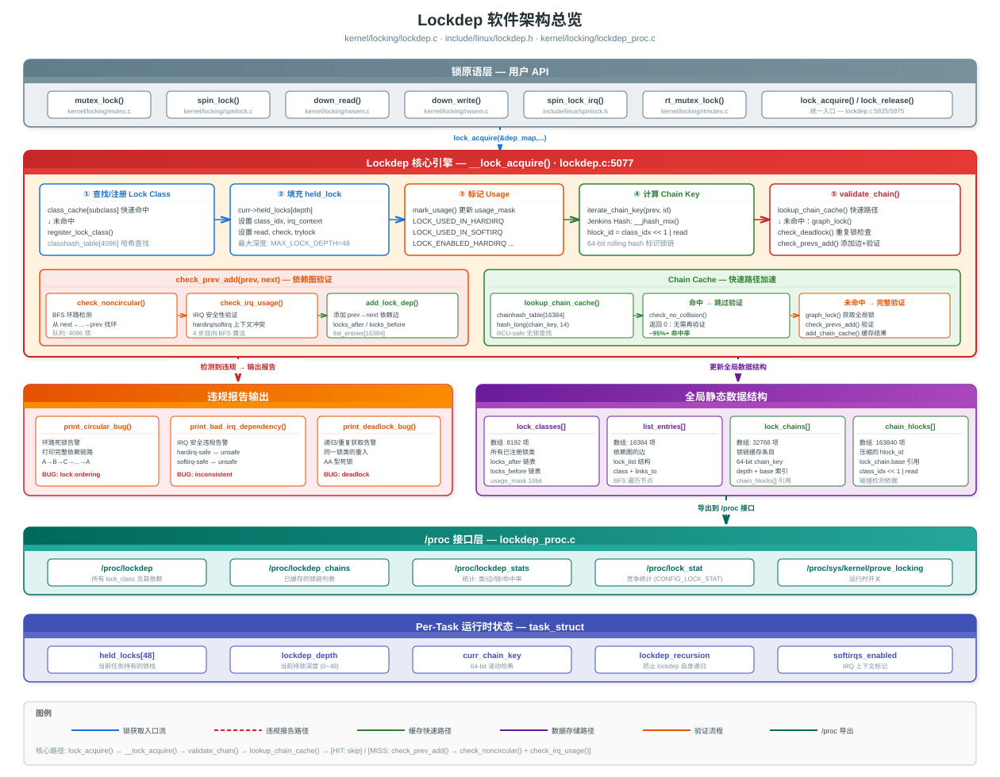
Lockdep 是一个编译时插桩 + 运行时验证的框架，整体架构分为五层：
┌─────────────────────────────────────────────────────────────────────┐
│ 锁原语层 mutex_lock / spin_lock / down_read / rwlock ... │
│ 每个锁内嵌 struct lockdep_map，编译时自动插桩 │
├─────────────────────────────────────────────────────────────────────┤
│ 统一入口 lock_acquire() / lock_release() │
│ 所有锁原语的获取/释放都汇聚到这两个函数 │
├─────────────────────────────────────────────────────────────────────┤
│ 核心引擎 __lock_acquire() 5 步流水线 │
│ ① 注册 lock_class → ② 填充 held_lock → ③ 标记 usage │
│ → ④ 计算 chain_key → ⑤ validate_chain() │
├─────────────────────────────────────────────────────────────────────┤
│ 验证子系统 check_noncircular() — BFS 环路检测 │
│ check_irq_usage() — IRQ 安全性验证 │
│ check_deadlock() — AA 重复获取检测 │
├─────────────────────────────────────────────────────────────────────┤
│ 存储/导出 lock_classes[8192] / list_entries[16384] │
│ lock_chains[32768] → /proc/lockdep* │
└─────────────────────────────────────────────────────────────────────┘锁原语与 Lockdep 的关系：内核中每种锁原语在编译时通过宏自动插入 lock_acquire()/lock_release() 调用，用户无需手动调用：
/* kernel/locking/mutex.c — mutex_lock 为例 */
void __sched mutex_lock(struct mutex *lock)
{
might_sleep();
/* 编译时插桩：在真正获取锁之前通知 lockdep */
mutex_acquire(&lock->dep_map, 0, 0, _RET_IP_);
/* ↑ 展开为 lock_acquire(&lock->dep_map, subclass=0, trylock=0, read=0, ...) */
__mutex_lock_slowpath(lock);
}
/* include/linux/spinlock.h — spin_lock 为例 */
static inline void spin_lock(spinlock_t *lock)
{
raw_spin_lock(&lock->rlock);
/* 内部调用 spin_acquire(&lock->dep_map, 0, 0, _RET_IP_)
展开为 lock_acquire() */
}全局保护机制：核心引擎使用一个全局 graph_lock（arch_spinlock_t）保护依赖图的写操作。读操作（如 chain cache 查找）通过 RCU 实现无锁读取。
__lock_acquire() 是 Lockdep 的核心函数（lockdep.c:5077），每次锁获取都会执行以下 5 步流水线：
lock_acquire(dep_map, subclass, trylock, read, check, nest_lock, ip)
│ lockdep.c:5825
│ lockdep_recursion_inc() ← 防止 lockdep 自身递归
│
▼
__lock_acquire() lockdep.c:5077
│
├─ Step 1: 查找/注册 Lock Class
│ ├─ 快速路径: hlock->class_cache[subclass] (O(1) 命中)
│ └─ 慢速路径: register_lock_class()
│ ├─ hash = hash_long(key, CLASSHASH_BITS=12)
│ ├─ 在 classhash_table[4096] 中查找
│ └─ 未找到 → 分配新 lock_class, 初始化 locks_after/locks_before
│
├─ Step 2: 填充 held_lock 条目
│ ├─ hlock = curr->held_locks[curr->lockdep_depth]
│ ├─ 设置: class_idx, irq_context, trylock, read, check
│ ├─ 设置: hardirqs_off, references
│ └─ 超出 MAX_LOCK_DEPTH(48) → 告警并关闭 lockdep
│
├─ Step 3: 标记 IRQ Usage
│ ├─ mark_usage() 根据当前 IRQ 上下文更新 usage_mask
│ ├─ 在 hardirq 中获取 → 标记 LOCK_USED_IN_HARDIRQ
│ ├─ 在 softirq 中获取 → 标记 LOCK_USED_IN_SOFTIRQ
│ └─ IRQ 已启用时获取 → 标记 LOCK_ENABLED_*
│
├─ Step 4: 计算 Chain Key（64-bit 滚动哈希）
│ ├─ hlock_id = (class_idx << 1) | read
│ ├─ chain_key = iterate_chain_key(prev_chain_key, hlock_id)
│ │ ↓ Jenkins Hash: __jhash_mix(key1, key2, key3)
│ └─ 唯一标识从第一把锁到当前锁的整条持锁序列
│
├─ Step 5: validate_chain() lockdep.c:3861
│ ├─ if (trylock || !check) → 跳过验证
│ ├─ lookup_chain_cache(chain_key)
│ │ ├─ 命中 (~95%+): check_no_collision() → 返回, 跳过验证 ★快速路径★
│ │ └─ 未命中: graph_lock() → 进入完整验证
│ │
│ └─ 完整验证流程:
│ ├─ check_deadlock() — 检查是否重复获取同一 lock_class (AA)
│ ├─ check_prevs_add() — 对每个已持有的锁:
│ │ └─ check_prev_add(prev, next)
│ │ ├─ check_noncircular() — BFS 检测 prev→...→next 是否有环
│ │ ├─ check_irq_usage() — 检查 IRQ 安全性冲突
│ │ └─ add_lock_dep() — 添加依赖边到图中
│ └─ add_chain_cache() — 缓存本次锁链供后续快速命中
│
└─ 收尾:
├─ curr->curr_chain_key = chain_key
├─ curr->lockdep_depth++
└─ check_chain_key() — 完整性校验释放路径 lock_release()（lockdep.c:5875）相对简单：
lock_release(dep_map, ip)
│
▼
__lock_release()
├─ 在 curr->held_locks[] 中逆序查找匹配的 lock_class
├─ 找到后移除该条目（数组压缩）
├─ 重新计算后续所有 held_lock 的 chain_key
├─ curr->lockdep_depth--
└─ lock_release_holdtime() — 更新持锁时间统计 (CONFIG_LOCK_STAT)Lockdep 在运行时维护一个有向依赖图，图的节点是 lock_class，边代表"曾经在持有锁 A 时获取了锁 B"的顺序关系。
依赖边的类型（4 种，由 enum lock_usage_bit 编码）：
| 依赖类型 | 含义 | 边的标记 |
|---|---|---|
| NN (Non-read → Non-read) | 写锁 A 之后获取写锁 B | 最强约束 |
| NR (Non-read → Read) | 写锁 A 之后获取读锁 B | |
| RN (Read → Non-read) | 读锁 A 之后获取写锁 B | |
| RR (Read → Read) | 读锁 A 之后获取读锁 B | 最弱约束 |
依赖图构建过程：
/* lockdep.c:check_prev_add() — 添加一条依赖边 */
check_prev_add(curr, prev_hlock, next_hlock, distance, trace)
{
/* 1. 环路检测 */
ret = check_noncircular(next, prev, trace);
if (ret == BFS_RMATCH)
return print_circular_bug(); /* 发现环 → 报告死锁 */
/* 2. IRQ 安全性验证 */
if (!check_irq_usage(curr, prev, next))
return 0; /* IRQ 冲突 → 已报告 */
/* 3. 冗余检测（优化） */
ret = check_redundant(prev, next);
if (ret == BFS_RMATCH)
return 2; /* 冗余边，无需添加 */
/* 4. 添加双向边 */
add_lock_to_list(/* prev → next */, &prev_class->locks_after, ...);
add_lock_to_list(/* next ← prev */, &next_class->locks_before, ...);
}BFS 环路检测算法（check_noncircular()，lockdep.c:2149）：
输入: src=next_lock, target=prev_lock
目标: 在依赖图中查找 src →...→ target 的路径
算法:
1. 初始化 BFS 队列 Q（循环数组，最大 4096 项）
2. 将 src 的所有 locks_after 邻居入队
3. while Q 非空:
a. 取出队首节点 entry
b. if entry.class == target.class:
→ 发现环路！回溯路径打印 print_circular_bug()
c. 检查 "强路径" 规则（读写依赖类型兼容性）
d. 将 entry.class 的所有 locks_after 邻居入队
4. 队列为空 → 无环，安全IRQ 安全性检查（check_irq_usage()，lockdep.c:2780）：
IRQ 检查用 4 步双向 BFS 检测是否存在 hardirq/softirq 上下文冲突：
步骤 1: BFS 反向遍历 prev 的 locks_before
收集所有 "被间接持有" 的锁的 usage_mask
→ 找出其中 hardirq-safe 的锁（在 hardirq 中被使用过）
步骤 2: BFS 正向遍历 next 的 locks_after
收集所有 "之后会获取" 的锁的 usage_mask
→ 找出其中 hardirq-unsafe 的锁（在 IRQ 启用时被使用过）
步骤 3-4: 对 softirq 重复同样的检查
冲突条件:
锁 A 在 hardirq 中使用（safe）且 锁 B 在 IRQ 启用时使用（unsafe）
如果 A →...→ B 存在依赖链，则可能死锁：
CPU0: 持有 B (IRQ enabled) → hardirq 来了 → 试图获取 A → 等待
CPU1: 持有 A → 试图获取 B → 等待 CPU0 释放
→ 死锁！完整的 BFS 验证开销较大，Lockdep 通过 Chain Cache 实现 ~95% 以上的命中率，将大多数锁获取的验证开销降到 O(1)。
Chain Key 计算：
/* lockdep.c — Jenkins Hash 滚动计算 */
static u64 iterate_chain_key(u64 key1, u64 key2)
{
u32 k0 = key1, k1 = key1 >> 32;
__jhash_mix(key2, k0, k1);
return (u64)k1 << 32 | k0;
}
/* 每次获取锁时：
hlock_id = (class_idx << 1) | read; // 编码锁类+读写模式
chain_key = iterate_chain_key(prev_chain_key, hlock_id);
*/Chain Key 唯一标识一条"从第一把锁到当前锁"的完整持锁序列。相同的锁获取顺序产生相同的 Chain Key。
Chain Cache 查找（lookup_chain_cache()，lockdep.c:3796）：
输入: 64-bit chain_key
1. bucket = chainhash_table[hash_long(chain_key, 14)] // 16384 buckets
2. RCU-safe 遍历 bucket 链表
3. 比较 chain->chain_key == chain_key
4. 命中:
├─ check_no_collision() — 验证 hlock_id 序列完全匹配（防哈希碰撞）
├─ debug_atomic_inc(chain_lookup_hits)
└─ 返回 0 → validate_chain() 直接返回，跳过所有验证
5. 未命中:
├─ debug_atomic_inc(chain_lookup_misses)
├─ graph_lock() — 获取全局锁
├─ 执行完整验证（check_deadlock + check_prevs_add）
└─ add_chain_cache() — 将新锁链存入缓存
├─ 分配 lock_chains[] 条目
├─ 压缩 held_lock 序列到 chain_hlocks[]
└─ 插入 chainhash_table bucket缓存效果分析：
| 指标 | 说明 |
|---|---|
| 命中率 | 启动后快速收敛到 95%+（通过 /proc/lockdep_stats 查看） |
| 命中开销 | O(1) 哈希 + 短链表遍历，无需获取全局锁 |
| 未命中开销 | O(V+E) BFS 遍历，需要 graph_lock() 全局锁 |
| 缓存容量 | 32768 条链（MAX_LOCKDEP_CHAINS），溢出后 lockdep 关闭 |
| 碰撞处理 | check_no_collision() 逐项比对 hlock_id 序列 |
Lockdep 通过 kernel/locking/lockdep_proc.c 向用户空间导出多个 /proc 文件：
| 文件 | 说明 | 依赖配置 |
|---|---|---|
/proc/lockdep |
列出所有已注册的 lock_class，包含名称、usage_mask、依赖关系 |
CONFIG_LOCKDEP |
/proc/lockdep_chains |
列出所有已缓存的锁链（chain_key + 包含的锁类序列） | CONFIG_LOCKDEP |
/proc/lockdep_stats |
全面的统计信息（类/边/链数量、命中率、BFS 深度等） | CONFIG_LOCKDEP |
/proc/lock_stat |
每个锁类的竞争统计（等待次数、平均/最大等待时间、持有时间） | CONFIG_LOCK_STAT |
/proc/lockdep 输出格式：
all lock classes:
000000004a24cc83 OPS: 12345 FD: 123 BD: 45 +.+.+.+.: &rq->__lock
00000000b7c8e39a OPS: 6789 FD: 67 BD: 23 -.-.-.+.: &p->pi_lock
...各字段含义：
OPS：该锁类被获取的总次数FD：locks_after 中的直接正向依赖数BD：locks_before 中的直接反向依赖数+=使用过, -=未使用, .=不适用），对应 hardirq/softirq 的 read/write、enabled/disabled 八种组合/proc/lock_stat 竞争统计（需 CONFIG_LOCK_STAT=y）：
lock_stat version 0.4
----------------------------------------------------------------------------------------------------------------------
class name con-hierarchical contentions waittime-min waittime-max waittime-total
----------------------------------------------------------------------------------------------------------------------
&rq->__lock: 1234 [<ffffff...>] 567 0.42 123.45 9876.54
&p->pi_lock: 89 [<ffffff...>] 12 0.15 45.67 1234.56该接口对于定位锁竞争热点非常有价值：contentions 列显示争用次数，waittime-max 显示最大等待时间（微秒），可快速识别哪些锁是性能瓶颈。
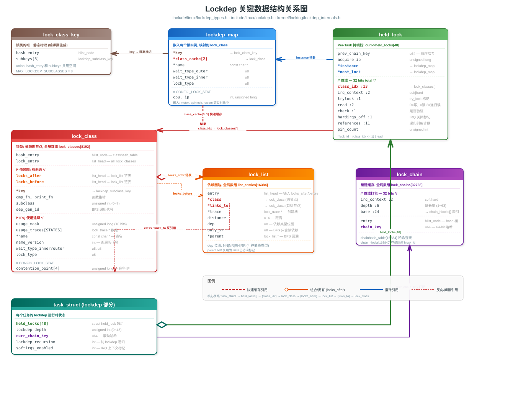
源码位置：include/linux/lockdep_types.h:98
lock_class 是 Lockdep 依赖图的节点，代表一类锁（而非锁实例）。所有同类型的锁（如所有 inode 的 i_mutex）共享同一个 lock_class。全局静态数组 lock_classes[8192] 存储所有已注册的锁类。
struct lock_class {
struct hlist_node hash_entry; /* classhash_table[4096] 哈希桶链表节点 */
struct list_head lock_entry; /* 链入 all_lock_classes 或 free_lock_classes */
/* ===== 依赖图: 有向边 ===== */
struct list_head locks_after; /* 正向依赖边链表 (lock_list) */
struct list_head locks_before; /* 反向依赖边链表 (lock_list) */
const struct lockdep_subclass_key *key; /* 指向 lock_class_key.subkeys[subclass] */
lock_cmp_fn cmp_fn; /* 比较函数 (用于排序同类锁) */
lock_print_fn print_fn; /* 打印函数 (输出锁名) */
unsigned int subclass; /* 子类编号 (0~7) */
unsigned int dep_gen_id; /* BFS 遍历的代号, 防止重复访问 */
/* ===== IRQ 使用追踪 ===== */
unsigned long usage_mask; /* 16-bit 位图: 记录该锁在各 IRQ 上下文中的使用情况 */
const struct lock_trace *usage_traces[LOCK_TRACE_STATES]; /* 每种 usage 的栈回溯 */
const char *name; /* 锁名称字符串 (如 "&rq->__lock") */
int name_version; /* 名称版本, 用于图遍历 */
u8 wait_type_inner; /* 该锁提供的等待上下文 */
u8 wait_type_outer; /* 该锁可以在什么上下文中被获取 */
u8 lock_type; /* 锁类型标识 */
#ifdef CONFIG_LOCK_STAT
unsigned long contention_point[4]; /* 竞争发生的 IP 地址 (Top-4) */
unsigned long contending_point[4]; /* 竞争持有者的 IP 地址 */
#endif
};usage_mask 位图含义（16 bits，定义在 lockdep_internals.h）：
| 位 | 含义 | 标记 |
|---|---|---|
| 0 | LOCK_USED_IN_HARDIRQ |
在硬中断中以写模式获取 |
| 1 | LOCK_USED_IN_HARDIRQ_READ |
在硬中断中以读模式获取 |
| 2 | LOCK_ENABLED_HARDIRQ |
在硬中断启用时以写模式获取 |
| 3 | LOCK_ENABLED_HARDIRQ_READ |
在硬中断启用时以读模式获取 |
| 4~7 | 同上，对 softirq | softirq 版本 |
| 8 | LOCK_USED |
曾被以写模式获取过 |
| 9 | LOCK_USED_READ |
曾被以读模式获取过 |
/proc/lockdep 中的 8 位 usage 字符串：每两位对应一种 IRQ 状态，+ 表示有此用法，- 表示无，. 表示不适用。例如 +.-.+.+. 表示该锁在 hardirq 中写获取过(+)、未在 hardirq 中读获取(.)、未在 hardirq-enabled 中写获取(-)、...
源码位置：include/linux/lockdep_types.h:186
lockdep_map 嵌入到每个具体锁对象中（如 mutex.dep_map、spinlock.dep_map），是锁实例到 lock_class 的桥梁。
struct lockdep_map {
struct lock_class_key *key; /* 指向锁的静态 key (编译期确定) */
struct lock_class *class_cache[2]; /* lock_class 快速缓存:
[0] = subclass 0
[1] = subclass 1
避免每次都做 hash 查找 */
const char *name; /* 锁名称 (如 "i_mutex") */
u8 wait_type_outer; /* 可以在什么等待上下文中被获取 */
u8 wait_type_inner; /* 持有该锁时提供的等待上下文 */
u8 lock_type; /* 锁类型 */
#ifdef CONFIG_LOCK_STAT
int cpu; /* 最后获取的 CPU */
unsigned long ip; /* 最后获取的 IP 地址 */
#endif
};锁原语中的嵌入方式：
/* include/linux/mutex.h */
struct mutex {
atomic_long_t owner;
raw_spinlock_t wait_lock;
struct list_head wait_list;
#ifdef CONFIG_DEBUG_LOCK_ALLOC
struct lockdep_map dep_map; /* ← 嵌入在锁对象中 */
#endif
};
/* include/linux/spinlock_types_raw.h */
typedef struct raw_spinlock {
arch_spinlock_t raw_lock;
#ifdef CONFIG_DEBUG_LOCK_ALLOC
struct lockdep_map dep_map; /* ← 嵌入在锁对象中 */
#endif
} raw_spinlock_t;class_cache 缓存机制：lock_acquire() 首先检查 lock->dep_map.class_cache[subclass]，若命中则 O(1) 获得 lock_class 指针，避免了 classhash_table 哈希查找。NR_LOCKDEP_CACHING_CLASSES = 2，因此 subclass 0 和 1 有快速缓存，subclass ≥ 2 需走完整 hash 路径。
源码位置：include/linux/lockdep_types.h:206
held_lock 记录一个任务当前持有的一把锁的状态。每个任务在 task_struct.held_locks[48] 中维护一个持锁栈，lockdep_depth 指示当前栈深度。
struct held_lock {
/* ===== 链哈希 ===== */
u64 prev_chain_key; /* 获取本锁前的 chain_key (用于释放时回退) */
unsigned long acquire_ip; /* 获取锁时的代码地址 (_RET_IP_) */
/* ===== 指向锁实例 ===== */
struct lockdep_map *instance; /* 指向锁对象中的 lockdep_map */
struct lockdep_map *nest_lock; /* 嵌套锁注解 (mutex_lock_nest_lock) */
#ifdef CONFIG_LOCK_STAT
u64 waittime_stamp; /* 开始等待锁的时间戳 */
u64 holdtime_stamp; /* 成功获取锁的时间戳 */
#endif
/* ===== 位域 (共 32 bits) ===== */
unsigned int class_idx :13; /* → lock_classes[class_idx]，最大 8192 */
unsigned int irq_context :2; /* bit0=softirq, bit1=hardirq */
unsigned int trylock :1; /* 是否 trylock (trylock 不参与验证) */
unsigned int read :2; /* 0=写锁, 1=读锁, 2=递归读锁 */
unsigned int check :1; /* 是否需要 lockdep 验证 */
unsigned int hardirqs_off:1; /* 获取时硬中断是否关闭 */
unsigned int sync :1; /* synchronize_* 标记 */
unsigned int references :11; /* 递归引用计数 */
unsigned int pin_count; /* pin 引用 (防止意外释放) */
};关键字段详解：
| 字段 | 宽度 | 说明 | |
|---|---|---|---|
class_idx |
13 bits | 索引到 lock_classes[] 数组，`hlock_id = (class_idx << 1) \ |
read` |
irq_context |
2 bits | 跨中断上下文时 chain_key 会重置为 0，避免产生无意义的跨上下文依赖 | |
prev_chain_key |
64 bits | 释放锁时用于回退 curr->curr_chain_key，实现栈式的哈希管理 |
|
references |
11 bits | 递归读锁引用计数，lock_acquire(read=2) 时增加而非新建条目 |
源码位置：include/linux/lockdep.h:48
lock_list 是依赖图的边，代表"持有锁 A 后获取了锁 B"的顺序关系。全局静态数组 list_entries[MAX_LOCKDEP_ENTRIES]（默认 16384）存储所有边。每个 lock_class 通过 locks_after 和 locks_before 链表拥有自己的出边和入边。
struct lock_list {
struct list_head entry; /* 链入 lock_class.locks_after 或 locks_before */
struct lock_class *class; /* 源节点 (拥有该边的 lock_class) */
struct lock_class *links_to; /* 目标节点 (依赖指向的 lock_class) */
const struct lock_trace *trace; /* 创建该依赖时的栈回溯 */
u16 distance; /* 获取距离 (嵌套深度差) */
u8 dep; /* 依赖类型位图: NN|NR|RN|RR */
u8 only_xr; /* BFS 中标记: 从起点到此只有 -(*R)-> 边 */
struct lock_list *parent; /* BFS 回溯指针 (bit0 复用为已访问标记) */
};dep 位图编码（4 种依赖类型）：
bit 0: DEP_NN_MASK (0x01) Non-read → Non-read (写→写)
bit 1: DEP_NR_MASK (0x02) Non-read → Read (写→读)
bit 2: DEP_RN_MASK (0x04) Read → Non-read (读→写)
bit 3: DEP_RR_MASK (0x08) Read → Read (读→读)BFS 遍历时的角色：check_noncircular() 使用循环队列（circular_queue，最大 4096 项）做广度优先搜索。每个出队的 lock_list 节点通过 links_to 找到下一个 lock_class，再遍历其 locks_after 获得后续边。parent 指针用于在发现环路后回溯打印完整依赖链。
源码位置：include/linux/lockdep.h:75
lock_chain 缓存一条已验证过的持锁序列，通过 64-bit chain_key 做 O(1) 查找。命中后可跳过全部 BFS 验证，是 Lockdep 的核心性能优化。
struct lock_chain {
/* 位域打包 (32 bits) */
unsigned int irq_context :2; /* 该链的 IRQ 上下文 (soft|hard) */
unsigned int depth :6; /* 链中锁的数量 (1~63) */
unsigned int base :24; /* → chain_hlocks[] 的起始索引 */
/* 4 字节空洞 (对齐) */
struct hlist_node entry; /* chainhash_table[16384] 哈希桶链表 */
u64 chain_key; /* 64-bit Jenkins Hash，唯一标识持锁序列 */
};Chain 存储结构：
lock_chains[32768] chain_hlocks[163840]
┌──────────────────┐ ┌───────────────────────┐
│ chain_key=0xA3.. │ │ ... │
│ depth=3, base=50 │────────→│ [50] hlock_id_0 │ = (class_idx<<1)|read
│ │ │ [51] hlock_id_1 │
│ │ │ [52] hlock_id_2 │
├──────────────────┤ │ ... │
│ chain_key=0xF7.. │ │ [80] hlock_id_0 │
│ depth=2, base=80 │────────→│ [81] hlock_id_1 │
├──────────────────┤ │ ... │
│ ... │ └───────────────────────┘
└──────────────────┘碰撞检测：check_no_collision() 逐项比对 chain_hlocks[base..base+depth-1] 中存储的 hlock_id 序列与当前 held_locks[] 中计算出的 hlock_id 序列。若完全匹配则为真命中，否则报 hash 碰撞错误（理论上极罕见）。
源码位置：include/linux/lockdep_types.h:75
lock_class_key 是每个锁类型的唯一静态标识，通常在编译期由 DEFINE_MUTEX()、DEFINE_SPINLOCK() 等宏自动定义为静态变量。其地址作为锁类的唯一 ID，用于 hash 查找。
struct lock_class_key {
union {
struct hlist_node hash_entry; /* lock_keys_hash 哈希桶 */
struct lockdep_subclass_key subkeys[MAX_LOCKDEP_SUBCLASSES]; /* 8 个子类 key */
};
};使用示例：
/* 静态定义 — 编译器自动分配唯一地址 */
static DEFINE_MUTEX(my_mutex);
/* 展开为:
static struct lock_class_key __key;
__mutex_init(&my_mutex, "my_mutex", &__key);
*/
/* 动态分配 — 需手动注册/注销 key */
struct lock_class_key my_dynamic_key;
lockdep_register_key(&my_dynamic_key);
lockdep_set_class(&lock->dep_map, &my_dynamic_key);
// ... 使用完毕 ...
lockdep_unregister_key(&my_dynamic_key);子类机制：subkeys[8] 允许同一把锁在不同嵌套层级中使用不同的 lock_class。例如文件系统中父目录和子目录的 i_mutex 虽然是同一类锁，但通过 mutex_lock_nested(&inode->i_mutex, I_MUTEX_PARENT) 指定不同 subclass，Lockdep 会将它们视为不同 lock_class，允许 parent → child 的获取顺序。
以一次 mutex_lock() 调用为例，展示各数据结构之间的完整交互流程：
1. 用户调用 mutex_lock(&my_mutex)
2. 定位 lock_class:
my_mutex.dep_map.class_cache[0] ──→ lock_class (命中)
或 hash(my_mutex.dep_map.key) ──→ classhash_table[4096] ──→ lock_class (未命中)
3. 填充 held_lock:
curr->held_locks[curr->lockdep_depth] = {
.class_idx = lock_class 在 lock_classes[] 中的下标,
.instance = &my_mutex.dep_map,
.prev_chain_key = curr->curr_chain_key,
.irq_context = 当前 IRQ 上下文,
.read = 0 (mutex 是写锁),
.acquire_ip = _RET_IP_,
};
4. 计算 chain_key:
hlock_id = (class_idx << 1) | 0; // read=0
curr->curr_chain_key = iterate_chain_key(prev_chain_key, hlock_id);
5. 查找 chain cache:
hash = hash_long(curr_chain_key, 14);
chainhash_table[hash] → 遍历 lock_chain 链表 → 比较 chain_key
├─ 命中: check_no_collision(), 跳过验证 → 结束
└─ 未命中: 进入完整验证 ↓
6. 依赖图验证 (对每个已持有的锁):
lock_class(prev).locks_after → 遍历 lock_list → 找到 links_to
check_noncircular(): BFS 从 next→...→prev 搜索环路
check_irq_usage(): 检查 usage_mask 冲突
├─ 无违规: add_lock_dep() 添加新 lock_list 边 → add_chain_cache() 缓存
└─ 发现违规: print_circular_bug() / print_bad_irq_dependency() → 告警
7. 收尾:
curr->lockdep_depth++;全局数据结构容量汇总：
| 数据结构 | 全局数组 | 默认容量 | 宏定义 | 溢出后果 |
|---|---|---|---|---|
lock_class |
lock_classes[] |
8192 | MAX_LOCKDEP_KEYS (2^13) |
lockdep 自动关闭 |
lock_list |
list_entries[] |
16384~32768 | MAX_LOCKDEP_ENTRIES (2^15) |
lockdep 自动关闭 |
lock_chain |
lock_chains[] |
32768~65536 | MAX_LOCKDEP_CHAINS (2^16) |
lockdep 自动关闭 |
chain_hlocks |
chain_hlocks[] |
163840 | MAX_LOCKDEP_CHAIN_HLOCKS |
溢出丢弃新链 |
held_lock |
curr->held_locks[] |
48 | MAX_LOCK_DEPTH |
告警并关闭 lockdep |
classhash |
classhash_table[] |
4096 buckets | CLASSHASH_SIZE (2^12) |
— |
chainhash |
chainhash_table[] |
16384 buckets | CHAINHASH_SIZE (2^14) |
— |
注意：MAX_LOCKDEP_ENTRIES和MAX_LOCKDEP_CHAINS可通过CONFIG_LOCKDEP_BITS和CONFIG_LOCKDEP_CHAINS_BITS调整。大型系统（多设备/多文件系统）建议增大这些值，否则 lockdep 可能因资源耗尽而自动关闭。
本节提炼 Lockdep 子系统实现中涉及的核心算法，帮助理解死锁检测的运行机理和 debug 时的思路。
源码：kernel/locking/lockdep.c — register_lock_class()（第 1285 行）
每个锁在首次使用时注册到全局 lock_classes[8192] 数组，通过哈希表 classhash_table[4096] 实现 O(1) 查找。
算法: register_lock_class(lock, subclass)
输入: lockdep_map *lock, unsigned int subclass
快速路径:
class = look_up_lock_class(lock, subclass)
if class != NULL → 直接缓存到 class_cache[] 并返回
慢速路径 (首次注册):
1. key = lock->key->subkeys[subclass] // 定位子类 key
2. hash = hash_long((unsigned long)key, 12) // Golden Ratio 乘法哈希
// hash = key * 0x9e3779b97f4a7c15 >> (64 - 12)
// 结果映射到 [0, 4095]
3. hash_head = classhash_table[hash] // 获取哈希桶头指针
4. graph_lock() // 获取全局锁
5. hlist_for_each(hash_head): // 二次查找（防 TOCTOU 竞态）
if entry->key == key → 找到, goto 缓存
6. class = free_lock_classes.first // 从空闲链表分配
if NULL → "MAX_LOCKDEP_KEYS too low!" 关闭 lockdep
7. 初始化:
class->key = key
class->name = lock->name
class->subclass = subclass
INIT locks_before, locks_after 为空链表
8. hlist_add_head_rcu(class, hash_head) // RCU 安全添加到哈希表
list_move_tail(class, all_lock_classes) // 移入活跃链表
9. graph_unlock()
10. lock->class_cache[subclass] = class // 缓存到锁实例
复杂度: O(1) 缓存命中, O(k) 哈希碰撞链遍历 (k 通常 1~2)
哈希质量: Golden Ratio 乘法保证均匀分布, 4096 桶容纳 8192 类, 平均链长 ~2Golden Ratio 哈希原理：hash_long() 使用黄金比例常数 0x9e3779b97f4a7c15（$\phi = \frac{1+\sqrt{5}}{2}$，取倒数乘以 $2^{64}$），利用无理数的均匀分布特性将输入映射到 $[0, 2^{bits})$ 区间，单 bit 变化即可影响约 32 个输出 bit（雪崩效应）。
源码：kernel/locking/lockdep.c — iterate_chain_key()（第 447 行）
Chain Key 唯一标识从第一把锁到当前锁的完整持锁序列，用于 Chain Cache 的 O(1) 查找。
算法: iterate_chain_key(key, idx)
输入: key (64-bit 前序哈希), idx (当前锁的 hlock_id)
hlock_id 编码:
hlock_id = (class_idx << 1) | read
// class_idx: 13-bit, 锁在 lock_classes[] 中的下标
// read: 0=写锁, 1=读锁
Jenkins Hash 混合:
k0 = key 的低 32 位
k1 = key 的高 32 位
__jhash_mix(idx, k0, k1) // 18 步混合运算
// a -= c; a ^= rot(c, 4); c += b;
// b -= a; b ^= rot(a, 6); a += c;
// c -= b; c ^= rot(b, 8); b += a;
// a -= c; a ^= rot(c,16); c += b;
// b -= a; b ^= rot(a,19); a += c;
// c -= b; c ^= rot(b, 4); b += a;
return k0 | ((u64)k1 << 32)
每次锁获取的递推:
初始: curr->curr_chain_key = INITIAL_CHAIN_KEY (-1)
第 1 把锁: chain_key = iterate_chain_key(-1, hlock_id_0)
第 2 把锁: chain_key = iterate_chain_key(chain_key_1, hlock_id_1)
第 N 把锁: chain_key = iterate_chain_key(chain_key_{N-1}, hlock_id_N)
性质:
- 相同的锁获取序列 → 相同的 chain_key (确定性)
- 不同的序列 → 极大概率不同的 chain_key (碰撞概率 ≈ 2^{-64})
- 不可逆: 无法从 chain_key 推导出锁序列
- O(1) 每次锁获取, 18 步整数运算 (无乘法/除法)源码：kernel/locking/lockdep.c — __bfs()（第 1738 行），check_noncircular()（第 2149 行）
Lockdep 的核心死锁检测算法：在依赖图中使用广度优先搜索（BFS）寻找环路。选择 BFS 而非 DFS 是为了找到最短环路，便于理解和修复。
算法: __bfs(source, data, match, skip, target_entry, offset)
输入: source (起点 lock_list), match (匹配回调), offset (遍历方向)
数据结构:
circular_queue cq: 循环数组, 容量 MAX_CIRCULAR_QUEUE_SIZE = 4096
front, rear: 队头队尾指针, 通过 & CQ_MASK 实现环形
dep_gen_id: 全局递增代号, 用于标记已访问节点 (替代 visited 集合)
初始化:
__cq_init(cq)
lockdep_dependency_gen_id++ // 新遍历代号
enqueue(cq, source_entry)
主循环:
while (lock = next_sibling(lock) || lock = dequeue(cq)):
if lock->class == NULL → 返回 BFS_EINVALIDNODE
// Step 1: 去重 — 已访问节点跳过
if lock->class->dep_gen_id == 当前代号 → continue
lock->class->dep_gen_id = 当前代号 // 标记已访问
// Step 2: 强路径过滤 (详见 3.4.4)
if lock->parent != NULL:
dep = lock->dep // 4-bit 依赖类型
if parent->only_xr: // 前驱只有 -(*R)-> 类型
dep &= ~(DEP_SR_MASK | DEP_SN_MASK) // 去掉 -(S*)-> 类型
if dep == 0 → continue // 无强路径, 跳过
lock->only_xr = !(dep & (DEP_SN|DEP_EN)) // 传播 only_xr 标记
// Step 3: 匹配检测
if skip(lock, data) → continue
if match(lock, data):
*target_entry = lock → 返回 BFS_RMATCH // 找到环路！
// Step 4: 扩展邻居
head = lock->class->locks_after (正向) 或 locks_before (反向)
first = true
for each entry in head:
entry->parent = lock // 记录 BFS 回溯父节点
if first: // 只入队链表第一个
enqueue(cq, entry) // 后续通过 __bfs_next() 遍历兄弟
first = false
返回 BFS_RNOMATCH // 队列为空, 无环
空间优化: 只将每个 locks_after 链表的第一个元素入队,
兄弟元素通过 __bfs_next() 链表遍历获取, 节省队列空间
复杂度: 时间 O(V + E), V=锁类数, E=依赖边数
空间 O(4096) 固定队列 + O(V) dep_gen_id 标记check_noncircular() 调用方式：
// lockdep.c:2149 — 检测 next→...→prev 是否存在环路
check_noncircular(struct held_lock *src, struct held_lock *target, ...)
{
bfs_init_root(&src_entry, src); // 起点: next_lock
ret = check_path(target, &src_entry, // 终点: prev_lock
hlock_conflict, // match: class 相同即匹配
NULL, // skip: 无
&target_entry);
if (ret == BFS_RMATCH)
print_circular_bug(); // 打印完整环路: prev→...→next→prev
}环路回溯打印：当 BFS 命中后，通过 get_lock_parent() 链逐级回溯 parent 指针，输出完整依赖链。get_lock_depth() 计算环路深度。
源码：kernel/locking/lockdep.c — __bfs() Step 2（第 1780 行）
并非所有依赖路径都能导致真正的死锁。读写锁的特殊性使得某些路径组合不构成"强路径"。Lockdep 在 BFS 中实时过滤弱路径，只检测强依赖。
4 种依赖类型编码（dep 4-bit 位图）：
next
┌───────────────┬──────────────────┐
│ Recursive (R) │ Non-recursive (N)│
┌─────┼───────────────┼──────────────────┤
prev│ S(R)│ DEP_SR bit0=0 │ DEP_SN bit2=2 │ S = Shared (read)
│ E(W)│ DEP_ER bit1=1 │ DEP_EN bit3=3 │ E = Exclusive (write)
└─────┴───────────────┴──────────────────┘
编码规则: bit0 = (prev->read == 0) // prev 是写锁?
bit1 = (next->read != 2) // next 不是递归读锁?强路径规则：不允许相邻两条边组成 -(R)-> -(S)-> 模式（即"前一跳指向读锁，下一跳从共享读锁出发"），因为读锁之间不互斥，不会造成实际等待。
算法: 强路径过滤 (在 __bfs() 每个节点执行)
输入: lock (当前边), lock->parent (前驱边)
dep = lock->dep // 当前边的依赖类型位图
if parent->only_xr: // 前驱只有 -(*R)-> 类型
dep &= ~(DEP_SR_MASK | DEP_SN_MASK) // 过滤掉 -(S*)-> 类型
// 因为 -(*R)-> -(S*)-> 不构成强路径
if dep == 0: // 过滤后无有效依赖
skip this node // 此路径不是强路径
lock->only_xr = !(dep & (DEP_SN|DEP_EN)) // 传播: 当前是否只剩 -(*R)->
// 如果过滤后只剩 DEP_SR 和 DEP_ER (都指向递归读锁)
// 则 only_xr = true, 传递给下一跳继续过滤
示例 (不构成强路径):
A -(ER)-> B -(SN)-> C
│ │ │
写锁→读锁 读锁→写锁
前一跳到 B 是读锁 (only_xr=true)
下一跳从 B 出发是共享 (S*)
→ -(*R)-> -(S*)-> 被过滤 ✗
示例 (构成强路径):
A -(EN)-> B -(EN)-> C
│ │ │
写锁→写锁 写锁→写锁
→ 全部是独占, 不被过滤 ✓源码：kernel/locking/lockdep.c — check_irq_usage()（第 2780 行）
检测在不同 IRQ 上下文中使用锁所导致的隐式死锁。这种死锁不是锁顺序环路，而是 IRQ 抢占导致的。
死锁场景:
CPU0 CPU1
────── ──────
lock(B) // IRQ enabled lock(A)
... ...
← hardirq 来了 lock(B) // 等待 CPU0 释放 B
lock(A) // 在 hardirq 中获取 A
// 等待 CPU1 释放 A → 死锁!
条件: A 是 hardirq-safe (在 hardirq 中使用过)
B 是 hardirq-unsafe (在 IRQ 启用时使用过)
且 A →...→ B 存在依赖关系
算法: check_irq_usage(curr, prev, next)
添加 prev → next 依赖时执行
Step 1: 反向 BFS 收集 usage_mask
root = prev
__bfs_backwards(root, usage_accumulate)
// 沿 locks_before 方向遍历所有间接前驱
// 累积 OR 每个节点的 usage_mask
usage_mask &= LOCKF_USED_IN_IRQ_ALL
// 只保留 "在 IRQ 上下文中使用过" 的标记位
if usage_mask == 0 → 安全, 返回
Step 2: 正向 BFS 查找冲突
forward_mask = exclusive_mask(usage_mask)
// 将 USED_IN_HARDIRQ 转换为 ENABLED_HARDIRQ (互斥对)
// 将 USED_IN_SOFTIRQ 转换为 ENABLED_SOFTIRQ
root = next
find_usage_forwards(root, forward_mask)
// 沿 locks_after 方向搜索: 是否存在节点的 usage_mask 匹配 forward_mask?
// 即: 是否有后续锁在 "IRQ 启用" 时被使用过?
if 未找到 → 安全, 返回
Step 3: 反向精确定位
backward_mask = original_mask(target.usage_mask & LOCKF_ENABLED_IRQ_ALL)
// 从正向找到的 "unsafe" 锁反推对应的 "safe" 标记
find_usage_backwards(root, backward_mask)
// 再次反向搜索, 找到具体的 irq-safe 锁
Step 4: 缩小到最小冲突对
find_exclusive_match(backward_usage, forward_usage)
// 从 usage_mask 中找到一对精确的互斥位:
// LOCK_USED_IN_HARDIRQ ↔ LOCK_ENABLED_HARDIRQ
// LOCK_USED_IN_SOFTIRQ ↔ LOCK_ENABLED_SOFTIRQ
print_bad_irq_dependency(...) // 输出完整冲突报告
复杂度: 3 次 BFS, 每次 O(V + E), 总计 O(3(V+E))exclusive_mask() 转换映射：
| 输入 (USED_IN) | 输出 (ENABLED) | 含义 |
|---|---|---|
LOCKF_USED_IN_HARDIRQ |
LOCKF_ENABLED_HARDIRQ |
hardirq-safe ↔ hardirq-unsafe |
LOCKF_USED_IN_HARDIRQ_READ |
LOCKF_ENABLED_HARDIRQ_READ |
读模式同理 |
LOCKF_USED_IN_SOFTIRQ |
LOCKF_ENABLED_SOFTIRQ |
softirq-safe ↔ softirq-unsafe |
LOCKF_USED_IN_SOFTIRQ_READ |
LOCKF_ENABLED_SOFTIRQ_READ |
读模式同理 |
源码：kernel/locking/lockdep.c — lookup_chain_cache()（第 3796 行），add_chain_cache()（第 3730 行）
Chain Cache 是 Lockdep 性能的关键：约 95%+ 的锁获取通过缓存命中直接跳过所有 BFS 验证。
算法: lookup_chain_cache(chain_key)
输入: 64-bit chain_key (当前持锁序列的滚动哈希)
查找:
1. hash = hash_long(chain_key, CHAINHASH_BITS=14) // 映射到 [0, 16383]
2. bucket = chainhash_table[hash]
3. hlist_for_each_entry_rcu(chain, bucket): // RCU 无锁遍历
if READ_ONCE(chain->chain_key) == chain_key:
return chain // 命中 ★
4. return NULL // 未命中
缓存命中处理 (validate_chain):
chain = lookup_chain_cache(chain_key)
if chain != NULL:
check_no_collision(chain, held_locks, depth)
// 逐项比对 chain_hlocks[base..base+depth-1] 与当前 held_locks 的 hlock_id
// 防止 hash 碰撞造成假命中
debug_atomic_inc(chain_lookup_hits)
return 1 // 跳过所有验证 → 快速路径结束
算法: add_chain_cache(curr, hlock, chain_key)
输入: 完整验证通过后, 将当前锁链加入缓存
1. chain = lock_chains[nr_chains++] // 分配条目
if 超出 MAX_LOCKDEP_CHAINS → 关闭 lockdep
2. chain->chain_key = chain_key
chain->irq_context = task_irq_context()
chain->depth = curr->lockdep_depth
3. 压缩存储 held_locks:
for i in [0, depth):
chain_hlocks[base + i] = (class_idx << 1) | read // 压缩 hlock_id
chain->base = base // 记录起始索引
4. hlist_add_head_rcu(chain, chainhash_table[hash]) // RCU 安全插入
性能分析:
┌──────────────┬─────────────────────┬───────────────────┐
│ 场景 │ 命中 (95%+) │ 未命中 (5%-) │
├──────────────┼─────────────────────┼───────────────────┤
│ 耗时 │ ~100-200 CPU cycles │ ~10K-50K cycles │
│ 全局锁 │ 不需要 │ 需要 graph_lock() │
│ BFS 遍历 │ 不需要 │ O(V + E) │
│ 内存访问 │ hash + 短链表 │ + 依赖图全遍历 │
└──────────────┴─────────────────────┴───────────────────┘源码：kernel/locking/lockdep.c — check_redundant()（第 2926 行）
在添加依赖边 prev → next 之前，检查图中是否已存在等效或更强的路径。冗余边的消除可减少图的大小，降低后续 BFS 的开销。
算法: check_redundant(src, target)
输入: src=prev_lock, target=next_lock
目标: 检查 src →...→ target 是否已有等效或更强的路径
1. bfs_init_root(&src_entry, src)
2. src_entry.only_xr = (src->read == 0)
// 如果 src 是写锁 (Exclusive):
// only_xr = true → 只搜索 -(E*)-> 起始的路径 (更强或相等)
// 如果 src 是读锁 (Shared):
// only_xr = false → 搜索 -(S*)-> 和 -(E*)-> 起始的路径 (都算冗余)
3. ret = check_path(target, &src_entry,
hlock_equal, // match: class 完全相等
usage_skip, // skip: 跳过 local_lock
&target_entry)
4. if ret == BFS_RMATCH:
debug_atomic_inc(nr_redundant)
return BFS_RMATCH // 冗余 → 不添加此边
else:
return BFS_RNOMATCH // 非冗余 → 需要添加
效果:
典型内核启动后约 30-50% 的新边被判定为冗余
通过 /proc/lockdep_stats 的 "redundant checks" 和 "redundant links" 可查看源码：kernel/locking/lockdep.c — mark_usage()（第 4618 行），mark_lock()（第 4712 行）
每次获取锁时根据当前 IRQ 上下文更新 lock_class.usage_mask，为 IRQ 安全性检查提供依据。
算法: mark_usage(curr, hlock, check)
输入: curr=当前任务, hlock=当前持锁记录, check=是否需要验证
条件矩阵 (决定标记哪些 bit):
┌──────────────────────────┬──────────────────┬──────────────────┐
│ 当前上下文 │ hlock->read == 0 │ hlock->read != 0 │
├──────────────────────────┼──────────────────┼──────────────────┤
│ lockdep_hardirq_context()│ USED_IN_HARDIRQ │ USED_IN_HARDIRQ │
│ │ │ _READ │
├──────────────────────────┼──────────────────┼──────────────────┤
│ curr->softirq_context │ USED_IN_SOFTIRQ │ USED_IN_SOFTIRQ │
│ │ │ _READ │
├──────────────────────────┼──────────────────┼──────────────────┤
│ !hardirqs_off && !sync │ ENABLED_HARDIRQ │ ENABLED_HARDIRQ │
│ │ │ _READ │
├──────────────────────────┼──────────────────┼──────────────────┤
│ curr->softirqs_enabled │ ENABLED_SOFTIRQ │ ENABLED_SOFTIRQ │
│ │ │ _READ │
├──────────────────────────┼──────────────────┼──────────────────┤
│ (总是) │ LOCK_USED │ LOCK_USED_READ │
└──────────────────────────┴──────────────────┴──────────────────┘
对每个满足条件的 bit 调用 mark_lock():
算法: mark_lock(curr, hlock, new_bit)
1. new_mask = 1 << new_bit
2. 快速路径: if (class->usage_mask & new_mask) → 已设置, 返回 1
3. graph_lock() // 获取全局锁
4. 二次检查: if (class->usage_mask & new_mask) → 返回 (TOCTOU 防护)
5. class->usage_mask |= new_mask // 设置新标记位
6. if new_bit < LOCK_TRACE_STATES:
class->usage_traces[new_bit] = save_trace() // 保存栈回溯
7. if new_bit < LOCK_USED:
mark_lock_irq(curr, hlock, new_bit) // 触发 IRQ 冲突检查
// 检查新设置的 usage 是否与已有 usage 冲突
// 如: 同时有 USED_IN_HARDIRQ 和 ENABLED_HARDIRQ → 告警
8. graph_unlock()
复杂度: O(1) 快速路径 (位运算), O(V+E) 慢速路径 (触发 IRQ 检查时)源码：kernel/locking/lockdep.c — mark_lock_accessed()（第 1528 行）
传统 BFS 需要 visited 集合追踪已访问节点。Lockdep 使用全局递增的代号（generation id）替代，避免了每次 BFS 前清空 visited 的 O(V) 开销。
算法: dep_gen_id 去重
数据结构:
全局: lockdep_dependency_gen_id (unsigned int, 每次 BFS 前递增)
每节点: lock_class->dep_gen_id (unsigned int)
初始化 (__cq_init):
lockdep_dependency_gen_id++ // 新遍历, 代号 +1
已访问检查 (lock_accessed):
return lock->class->dep_gen_id == lockdep_dependency_gen_id
标记已访问 (mark_lock_accessed):
lock->class->dep_gen_id = lockdep_dependency_gen_id
优势:
- 无需维护 visited 集合, 不消耗额外内存
- 无需清空操作, 初始化 O(1)
- 利用 unsigned int 自然溢出, 理论上 2^32 次 BFS 后回绕
(每秒数千次 BFS, 可运行 ~12 天, 远超实际重启周期)
- 每个 lock_class 只需一个 4 字节字段源码：kernel/locking/lockdep.c — graph_lock()（第 172 行）
Lockdep 自身的锁操作需要特殊处理以避免递归：如果 lockdep 在验证锁时也触发了 lock_acquire()，会导致无限递归。
算法: graph_lock() / lockdep_recursion 防护
Graph Lock:
static raw_spinlock_t lockdep_lock // 原始自旋锁 (不走 lockdep)
graph_lock():
raw_local_irq_save(flags)
arch_spin_lock(&lockdep_lock.raw_lock) // 直接调用架构层, 绕过 lockdep
if (!debug_locks):
arch_spin_unlock(...)
return 0 // lockdep 已关闭, 放弃
return 1
graph_unlock():
arch_spin_unlock(&lockdep_lock.raw_lock)
raw_local_irq_restore(flags)
递归防护:
DEFINE_PER_CPU(int, lockdep_recursion) // per-CPU 递归计数器
lock_acquire():
lockdep_recursion_inc() // __this_cpu_inc(lockdep_recursion)
... 执行验证逻辑 ...
lockdep_recursion_finish() // __this_cpu_dec + WARN 检查
__lock_acquire() 入口检查:
if (__this_cpu_read(lockdep_recursion)):
return 1 // 递归中, 直接跳过
LOCKDEP_RECURSION_BITS = 16:
counter 分为两半:
低 16 位: 正常递归深度 (应该是 0 或 1)
高 16 位: "off" 标记 (lockdep 被禁用)
设计原理:
- raw_spinlock_t 不经过 lockdep 插桩, 避免自身递归
- per-CPU 递归计数器确保即使 lockdep 验证代码触发了锁操作也不会重入
- debug_locks 全局标志在首次严重错误后关闭整个 lockdep, 防止级联失败本节通过 6 类经典死锁场景，还原 Lockdep 的告警输出格式，并给出系统化的分析定位方法。
场景描述：同一个 CPU/任务在已持有锁 A 的情况下再次获取锁 A。
/* 触发代码 */
spin_lock(&my_lock); // 第一次获取
// ... do some work ...
spin_lock(&my_lock); // 第二次获取 → 自旋永远等不到释放 → 死锁Lockdep 告警输出：
============================================
WARNING: possible recursive locking detected
6.18.1 #1 Not tainted
--------------------------------------------
worker/0:1/1234 is trying to acquire lock:
ffff0000c1a2b300 (&my_lock){+.+.}-{2:2}, at: my_function+0x48/0x120
but task is already holding lock:
ffff0000c1a2b300 (&my_lock){+.+.}-{2:2}, at: my_caller+0x30/0x80
other info that might help us debug this:
Possible unsafe locking scenario:
CPU0
----
lock(&my_lock);
lock(&my_lock);
*** DEADLOCK ***
May be due to missing lock nesting notation
2 locks held by worker/0:1/1234:
#0: ffff0000c3d4e500 (work_completion){+.+.}-{0:0}, at: process_one_work+0x1e8/0x5c0
#1: ffff0000c1a2b300 (&my_lock){+.+.}-{2:2}, at: my_caller+0x30/0x80
stack backtrace:
CPU: 0 UID: 0 PID: 1234 Comm: worker/0:1 Not tainted 6.18.1 #1
Call trace:
dump_backtrace+0x98/0x100
show_stack+0x1c/0x30
dump_stack_lvl+0x60/0x80
__lock_acquire+0xd34/0x2680
lock_acquire+0x120/0x2e8
_raw_spin_lock+0x50/0x70
my_function+0x48/0x120
my_caller+0x58/0x80解读要点：
| 字段 | 含义 |
|---|---|
WARNING: possible recursive locking detected |
AA 型死锁 |
(&my_lock){+.+.}-{2:2} |
锁名 + 8 位 usage 标记 + 等待类型 |
at: my_function+0x48/0x120 |
第二次获取的代码位置 |
but task is already holding lock: |
锁已被同一任务持有 |
2 locks held by worker/0:1/1234: |
当前持锁列表 |
修复方法：
spin_lock_nested()：如果是设计上的嵌套（如父子 inode 锁），用 subclass 注解告知 lockdepmutex 的递归版本（通常不推荐）场景描述：两个 CPU 以相反顺序获取锁 A 和锁 B。
/* CPU0 */ /* CPU1 */
spin_lock(&lock_A); spin_lock(&lock_B);
spin_lock(&lock_B); // 等待 spin_lock(&lock_A); // 等待
// → CPU0 等 CPU1 释放 B // → CPU1 等 CPU0 释放 A → 死锁Lockdep 告警输出：
======================================================
WARNING: possible circular locking dependency detected
6.18.1 #1 Not tainted
------------------------------------------------------
task_B/5678 is trying to acquire lock:
ffff0000c1a00100 (&lock_A){+.+.}-{2:2}, at: path_B+0x30/0x80
but task is already holding lock:
ffff0000c1a00200 (&lock_B){+.+.}-{2:2}, at: path_B+0x20/0x80
which lock already depends on the new lock.
the existing dependency chain (in reverse order) is:
-> #1 (&lock_B){+.+.}-{2:2}:
lock_acquire+0x120/0x2e8
_raw_spin_lock+0x50/0x70
path_A+0x40/0x90
-> #0 (&lock_A){+.+.}-{2:2}:
lock_acquire+0x120/0x2e8
_raw_spin_lock+0x50/0x70
path_A+0x20/0x90
other info that might help us debug this:
Possible unsafe locking scenario:
CPU0 CPU1
---- ----
lock(&lock_A);
lock(&lock_B);
lock(&lock_A);
lock(&lock_B);
*** DEADLOCK ***
2 locks held by task_B/5678:
#0: ffff0000c1a00200 (&lock_B){+.+.}-{2:2}, at: path_B+0x20/0x80
stack backtrace:
CPU: 1 UID: 0 PID: 5678 Comm: task_B Not tainted 6.18.1 #1
Call trace:
__lock_acquire+0x1a70/0x2680
lock_acquire+0x120/0x2e8
_raw_spin_lock+0x50/0x70
path_B+0x30/0x80
...解读要点：
| 字段 | 含义 |
|---|---|
WARNING: possible circular locking dependency detected |
环路死锁（ABBA 或更长链） |
the existing dependency chain (in reverse order) |
已有的依赖路径 A→B（来自 path_A） |
-> #1 (&lock_B) → -> #0 (&lock_A) |
反序展示依赖链：先获取 A，再获取 B |
Possible unsafe locking scenario |
双 CPU 并发场景重现 |
| 新尝试的 B→A | 与已有 A→B 构成环路 |
修复方法：
trylock 回退：spin_trylock(&lock_B) 失败则释放 A 后重试场景描述：3 个以上的锁形成环路依赖，通常涉及多个子系统之间的调用。
/* 路径 1: 持有 A → 获取 B */ fs/namei.c: lock(inode_A); lock(dentry_B);
/* 路径 2: 持有 B → 获取 C */ mm/filemap.c: lock(dentry_B); lock(page_C);
/* 路径 3: 持有 C → 获取 D */ block/bio.c: lock(page_C); lock(queue_D);
/* 路径 4: 持有 D → 获取 A */ fs/inode.c: lock(queue_D); lock(inode_A);
// → A→B→C→D→A 形成环路Lockdep 告警输出（核心部分）：
======================================================
WARNING: possible circular locking dependency detected
6.18.1 #1 Not tainted
------------------------------------------------------
kworker/2:1/890 is trying to acquire lock:
ffff0000d1234000 (&inode_A->i_lock){+.+.}-{2:2}, at: inode_update+0x28/0x60
but task is already holding lock:
ffff0000d5678000 (&queue_D->lock){+.+.}-{2:2}, at: blk_queue_enter+0x40/0xa0
which lock already depends on the new lock.
the existing dependency chain (in reverse order) is:
-> #3 (&queue_D->lock){+.+.}-{2:2}:
lock_acquire+0x120/0x2e8
block_submit_bio+0x58/0x100
-> #2 (&page_C->flags){+.+.}-{0:0}:
lock_acquire+0x120/0x2e8
filemap_fault+0x1a0/0x400
-> #1 (&dentry_B->d_lock){+.+.}-{2:2}:
lock_acquire+0x120/0x2e8
d_lookup+0x50/0xc0
-> #0 (&inode_A->i_lock){+.+.}-{2:2}:
lock_acquire+0x120/0x2e8
iget_locked+0x80/0x180
other info that might help us debug this:
Chain exists of:
&inode_A->i_lock --> &dentry_B->d_lock --> &page_C->flags --> &queue_D->lock
Possible unsafe locking scenario:
CPU0 CPU1
---- ----
lock(&inode_A->i_lock);
lock(&queue_D->lock);
lock(&inode_A->i_lock);
lock(&queue_D->lock);
*** DEADLOCK ***解读要点：
Chain exists of: 行清晰列出完整链路 A→B→C→D-> #N 节点附带获取该锁时的栈回溯，用于定位代码路径修复方法：
场景描述：锁 A 在进程上下文（IRQ 启用）中获取，又在硬中断上下文中获取。如果另一把锁 B 与 A 有依赖关系，就可能产生隐式死锁。
/* 进程上下文 */ /* 硬中断处理函数 */
spin_lock(&lock_B); void irq_handler(int irq, void *data) {
// IRQ 启用, lock_B 是 irq-unsafe spin_lock(&lock_A); // lock_A 是 irq-safe
spin_lock(&lock_A); ...
// 产生依赖: B → A spin_unlock(&lock_A);
spin_unlock(&lock_A); }
spin_unlock(&lock_B);
// 死锁场景:
// CPU0: 持有 B → 等待 A → 但 hardirq 来了想获取 A → 等待自身释放 BLockdep 告警输出：
=====================================================
WARNING: hardirq-safe -> hardirq-unsafe lock order detected
6.18.1 #1 Not tainted
-----------------------------------------------------
swapper/0/0 [HC0[0]:SC0[0]:HE1:SE1] is trying to acquire:
ffff0000c1b00200 (&lock_B){+.+.}-{2:2}, at: process_work+0x40/0x80
and this task is already holding:
ffff0000c1b00100 (&lock_A){-.-.}-{2:2}, at: do_something+0x28/0x60
which would create a new lock dependency:
(&lock_A){-.-.}-{2:2} -> (&lock_B){+.+.}-{2:2}
but this new dependency connects a hardirq-safe lock:
(&lock_A){-.-.}-{2:2}
... which became hardirq-safe at:
lock_acquire+0x120/0x2e8
_raw_spin_lock+0x50/0x70
irq_handler+0x30/0x80
__handle_irq_event_percpu+0x50/0x170
to a hardirq-unsafe lock:
(&lock_B){+.+.}-{2:2}
... which became hardirq-unsafe at:
lock_acquire+0x120/0x2e8
_raw_spin_lock+0x50/0x70
process_work+0x40/0x80
worker_thread+0x248/0x430
other info that might help us debug this:
Possible unsafe locking scenario:
CPU0 CPU1
---- ----
lock(&lock_B);
lock(&lock_A);
lock(&lock_B);
<Interrupt>
lock(&lock_A);
*** DEADLOCK ***解读要点：
| 字段 | 含义 |
|---|---|
hardirq-safe -> hardirq-unsafe |
IRQ 类型违规方向 |
[HC0[0]:SC0[0]:HE1:SE1] |
HC=硬中断上下文, SC=软中断上下文, HE=硬中断启用, SE=软中断启用 |
{-.-.} |
该锁在 IRQ 上下文中获取过（hardirq 位为 -） |
{+.+.} |
该锁在 IRQ 启用时获取过（enabled 位为 +） |
which became hardirq-safe at: |
锁 A 首次在 hardirq 中使用的栈 |
which became hardirq-unsafe at: |
锁 B 首次在 IRQ 启用时使用的栈 |
Usage 字符含义（8 位，每 2 位一组）：
位置: [hardirq_ctx] [hardirq_enabled] [softirq_ctx] [softirq_enabled]
字符: '+' = 在 IRQ 启用时获取过 (unsafe)
'-' = 在 IRQ 上下文中获取过 (safe)
'.' = 未在此上下文中使用过
'?' = 同时在 IRQ 上下文中使用 且 IRQ 启用 (异常)修复方法：
spin_lock_irqsave()：在进程上下文中获取 lock_B 时关闭中断场景描述：持有读锁后尝试获取写锁（锁升级），或在特定的读写锁嵌套模式下形成隐式死锁。
/* Case 5a: 读锁升级 — AA 变种 */
down_read(&rwsem);
// ... 发现需要修改 ...
down_write(&rwsem); // 等待所有读者释放，但自己就是读者 → 死锁
/* Case 5b: 读写锁嵌套 ABBA */
/* CPU0 */ /* CPU1 */
down_read(&rwsem_A); down_write(&rwsem_B);
down_write(&rwsem_B); // 等待 down_read(&rwsem_A); // 等待
// B 的写锁等 CPU1 释放 // A 的读锁需等 CPU0 先走完Lockdep 告警输出（Case 5a）：
============================================
WARNING: possible recursive locking detected
6.18.1 #1 Not tainted
--------------------------------------------
updater/999 is trying to acquire lock:
ffff0000c2100000 (&rwsem){++++}-{3:3}, at: update_data+0x60/0x100
but task is already holding lock:
ffff0000c2100000 (&rwsem){++++}-{3:3}, at: read_data+0x20/0x80
other info that might help us debug this:
Possible unsafe locking scenario:
CPU0
----
lock(&rwsem); ← down_read
lock(&rwsem); ← down_write
*** DEADLOCK ***Lockdep 告警输出（Case 5b — 读写锁交叉嵌套）：
======================================================
WARNING: possible circular locking dependency detected
6.18.1 #1 Not tainted
------------------------------------------------------
writer/1001 is trying to acquire lock:
ffff0000c2200100 (&rwsem_A){++++}-{3:3}, at: path_write+0x38/0x80
but task is already holding lock:
ffff0000c2200200 (&rwsem_B){++++}-{3:3}, at: path_write+0x20/0x80
which lock already depends on the new lock.
the existing dependency chain (in reverse order) is:
-> #1 (&rwsem_B){++++}-{3:3}:
lock_acquire+0x120/0x2e8
down_write+0x40/0x60
path_read+0x48/0x90
-> #0 (&rwsem_A){++++}-{3:3}:
lock_acquire+0x120/0x2e8
down_read+0x40/0x60
path_read+0x20/0x90
other info that might help us debug this:
Possible unsafe locking scenario:
CPU0 CPU1
---- ----
rlock(&rwsem_A);
lock(&rwsem_B);
rlock(&rwsem_A);
lock(&rwsem_B);
*** DEADLOCK ***注意 rlock 与 lock 的区别：告警中 rlock() 表示读锁获取，lock() 表示写锁获取，这对于分析读写锁死锁至关重要。
修复方法：
down_write() 替代：如果大部分路径需要写，直接用写锁场景描述：同一把锁在不同场景中以不兼容的方式使用。例如某次在 softirq 上下文中获取（标记为 softirq-safe），另一次在 softirq 启用时获取（标记为 softirq-unsafe）。
/* 路径 1: 在 softirq 中获取 (标记为 USED_IN_SOFTIRQ) */
void timer_callback(struct timer_list *t) {
spin_lock(&shared_lock); // softirq 上下文
...
spin_unlock(&shared_lock);
}
/* 路径 2: 在进程上下文中获取, softirq 启用 (标记为 ENABLED_SOFTIRQ) */
void process_func(void) {
spin_lock(&shared_lock); // 进程上下文, softirq 未关闭
... // → 如果此时 timer softirq 触发, 同一 CPU 上会递归获取 → 死锁
spin_unlock(&shared_lock);
}Lockdep 告警输出：
================================
WARNING: inconsistent lock state
6.18.1 #1 Not tainted
--------------------------------
inconsistent {SOFTIRQ-ON-W} -> {IN-SOFTIRQ-W} usage.
process_func/2345 [HC0[0]:SC1[1]:HE1:SE0] takes:
ffff0000c3300000 (&shared_lock){+.?.}-{2:2}, at: timer_callback+0x20/0x60
{SOFTIRQ-ON-W} state was registered at:
lock_acquire+0x120/0x2e8
_raw_spin_lock+0x50/0x70
process_func+0x30/0x80
worker_thread+0x248/0x430
irq event stamp: 98765432
hardirqs last enabled at (98765431): [<ffff...>] _raw_spin_unlock_irqrestore+0x68/0xa0
hardirqs last disabled at (98765432): [<ffff...>] do_softirq+0x30/0x80
softirqs last enabled at (98765400): [<ffff...>] __do_softirq+0x358/0x4a8
softirqs last disabled at (98765430): [<ffff...>] do_softirq+0x28/0x80
other info that might help us debug this:
Possible unsafe locking scenario:
CPU0
----
lock(&shared_lock);
<Interrupt>
lock(&shared_lock);
*** DEADLOCK ***解读要点：
| 字段 | 含义 |
|---|---|
inconsistent {SOFTIRQ-ON-W} -> {IN-SOFTIRQ-W} |
之前在 softirq-enabled 时以写模式获取(ON)，现在在 softirq 上下文中以写模式获取(IN) |
[HC0[0]:SC1[1]:HE1:SE0] |
SC1=在 softirq 上下文中，SE0=softirq 已关闭 |
{+.?.} |
? 表示同时有 safe 和 unsafe 标记（异常） |
irq event stamp |
IRQ 事件序列号，帮助对齐时间线 |
修复方法：
spin_lock_bh()：在进程上下文中获取时关闭 softirqspin_lock_irqsave()：如果在 hardirq 中也可能使用无论哪种死锁告警，都可以按以下步骤系统化分析：
Step 1：识别告警类型
| 告警头 | 类型 | 核心问题 |
|---|---|---|
possible recursive locking detected |
AA 递归 | 同一锁重复获取 |
possible circular locking dependency detected |
ABBA+ 环路 | 锁序反转 |
hardirq-safe -> hardirq-unsafe lock order |
IRQ 安全违规 | 中断上下文冲突 |
softirq-safe -> softirq-unsafe lock order |
IRQ 安全违规 | 软中断上下文冲突 |
inconsistent lock state |
Usage 冲突 | 同一锁使用方式不一致 |
Step 2：定位冲突锁
从告警中提取:
1. "is trying to acquire lock:" → 正在尝试获取的锁 (目标锁)
2. "but task is already holding lock:" → 已持有的锁 (持有锁)
3. "N locks held by <task>:" → 当前完整持锁列表Step 3：分析依赖链
对 ABBA/ABCDA 类型:
1. "the existing dependency chain (in reverse order):" → 已有的正向路径
2. "-> #N (lockname)" → 每一跳的锁名和获取栈
3. 新获取操作 = 反向边 → 与正向路径构成环
对 IRQ 类型:
1. "which became hardirq-safe at:" → 锁变成 irq-safe 的首次栈
2. "which became hardirq-unsafe at:" → 锁变成 irq-unsafe 的首次栈Step 4：还原触发路径
1. 从 "at: function+0xoffset/0xsize" 定位源码位置
$ addr2line -e vmlinux ffff800010abcdef (如果只有地址)
$ scripts/faddr2line vmlinux function+0xoffset
2. 从 "stack backtrace:" 还原完整调用链
3. 从 "Possible unsafe locking scenario:" 中的 CPU0/CPU1 并发图
直观理解死锁如何发生Step 5：确认修复
# 修复后验证: 开启 lockdep 运行相同场景
echo 1 > /proc/sys/kernel/prove_locking
# 检查 lockdep 统计
cat /proc/lockdep_stats | grep -E "cyclic|redundant|chain"
# 确认无新告警
dmesg | grep -i "WARNING.*lock"答：
| 必要条件 | 含义 | 内核打破手段 |
|---|---|---|
| 互斥 | 资源同一时刻只能被一个线程持有 | 无法打破（锁的本质就是互斥）；RCU 通过无锁读实现读侧"伪打破" |
| 持有并等待 | 持有一把锁的同时等待另一把锁 | trylock 机制：spin_trylock() 获取失败则释放已持有的锁后重试 |
| 不可剥夺 | 持有锁的线程不会被强制释放锁 | mutex_lock_killable() / mutex_lock_interruptible() 允许等待者被信号中断退出；RT 内核的优先级继承避免优先级反转 |
| 循环等待 | 锁的等待关系形成环路 | Lockdep 全局锁序验证 — 通过依赖图 BFS 在运行时检测并告警循环等待 |
核心理解：Lockdep 主要打破的是第 4 个条件"循环等待"——它不阻止死锁发生，而是在形成死锁的锁序第一次出现时就告警，让开发者修复锁顺序。
答：
| 概念 | 含义 | 数量级 |
|---|---|---|
| lock instance | 每一个具体的锁对象（如每个 inode->i_lock） |
可能数百万个 |
| lock_class | 由同一行代码初始化的所有锁实例归为一类 | 最多 8192 个 |
为什么用 class：
i_lock，不可能为每个 instance 维护依赖图spin_lock_init() 初始化的锁，其使用模式和锁序关系应该相同class 通过 lock_class_key 唯一标识——每个 DEFINE_SPINLOCK() / DEFINE_MUTEX() 宏在编译时创建一个静态 lock_class_key 变量，其地址就是 class 的唯一 ID。
// include/linux/spinlock_types.h
#define DEFINE_SPINLOCK(x) \
spinlock_t x = __SPIN_LOCK_UNLOCKED(x) // 内含 static lock_class_key答：Chain Cache 是 Lockdep 的快速路径优化机制，避免每次获取锁都执行完整的依赖图 BFS 验证。
工作原理：
获取锁时的完整链路: lock_A → lock_B → lock_C (当前持有的锁序列)
↓
Jenkins 滚动哈希: chain_key = hash(hash(hash(0, A), B), C)
↓
查 chain_hlocks[] 哈希表
↓ ↓
命中(~95%) 未命中(~5%)
直接返回 执行完整验证
→ BFS 环路检测
→ IRQ 安全性检查
→ 缓存新 chain为什么命中率高：
VFS lock → inode lock → page lock）容量：最多 MAX_LOCKDEP_CHAINS = 32768 条，每条记录链路中所有锁类 ID。
答：
检测方法：
WARNING: possible circular locking dependency关键：能检测"潜在的"死锁。只要 A→B 和 B→A 这两条路径分别被执行过，即使从未在同一时刻并发执行（即死锁从未真正发生），Lockdep 也会告警。
实际发生: T=1 CPU0: lock(A) → lock(B) → unlock(B) → unlock(A)
T=2 CPU1: lock(B) → lock(A) → unlock(A) → unlock(B)
// 从未同时执行, 但 Lockdep 仍然告警!
推理逻辑: 既然存在路径 A→B 和路径 B→A,
那么在并发场景下它们可能同时执行 → 存在死锁风险这是 Lockdep 最强大的特性——单次触发即可发现死锁风险，不需要真正的并发重现。
{+.+.}-{2:2} 是什么意思？答：这是锁的 usage 状态和等待类型的编码表示。
前半部分 {+.+.} — 8 位 IRQ usage 标记：
位置: [1][2] [3][4] [5][6] [7][8]
含义: 硬中断上下文 硬中断启用 软中断上下文 软中断启用
READ WRITE READ WRITE READ WRITE READ WRITE
字符含义:
'+' = 在 IRQ 启用状态下获取过此锁 (hardirq-unsafe / softirq-unsafe)
'-' = 在 IRQ 上下文中获取过此锁 (hardirq-safe / softirq-safe)
'.' = 未在此上下文中使用过
'?' = 同时标记了 safe 和 unsafe (已检测到冲突)后半部分 {2:2} — 等待类型：
| 值 | 含义 | 对应锁类型 |
|---|---|---|
| 0 | LD_WAIT_FREE | 无等待（lock_class_key 占位） |
| 1 | LD_WAIT_SPIN | 自旋等待（raw_spinlock_t） |
| 2 | LD_WAIT_READ | 读等待（spinlock_t） |
| 3 | LD_WAIT_SLEEP | 可睡眠等待（mutex、rwsem） |
示例解读：
{+.+.}-{2:2} → 在 hardirq 启用时写获取过(+), hardirq 上下文未使用(.),
softirq 启用时写获取过(+), softirq 上下文未使用(.)
等待类型: 内/外都是 spin (spinlock_t)
{-.-.}-{2:2} → 在 hardirq 上下文中获取过, 在 softirq 上下文中获取过
(这是一个 irq-safe 的锁, 应该用 spin_lock_irqsave)
{++++}-{3:3} → 所有 IRQ 上下文都使用过 (读+写, 可睡眠锁 如 rwsem)答：
定义：
USED_IN_HARDIRQ）ENABLED_HARDIRQ，即没关中断）为什么有依赖就是 bug：
假设: lock_A 是 hardirq-safe, lock_B 是 hardirq-unsafe
且存在依赖: lock_A → lock_B (某路径先获取 A 再获取 B)
死锁场景:
CPU0 (进程上下文) CPU0 (硬中断, 同一 CPU)
───────────────── ─────────────────────
spin_lock(&lock_B) ← hardirq 触发!
// 持有 B, 中断未关闭 spin_lock(&lock_A) // OK, 获取 A
// ... spin_lock(&lock_B) // 等待 B
// 但 B 被进程上下文持有
// 进程上下文在同一 CPU, 无法执行
// → 死锁!核心原因：硬中断可以打断进程上下文。如果进程上下文持有 lock_B（未关中断），硬中断到来后尝试获取 lock_B，同一 CPU 上形成自死锁。Lockdep 通过 4 步 BFS 验证（forward/backward × hardirq/softirq）检测此类问题。
修复方法：在进程上下文获取 lock_B 时使用 spin_lock_irqsave() 关闭中断。
答：
| 维度 | 开销 |
|---|---|
| 内存 | ~7.5 MB 静态（8192 lock_class × 560B + 32768 chains + dependency graph） |
| 时间（快路径） | Chain Cache 命中时 ~200-500ns（哈希计算 + 查表） |
| 时间（慢路径） | Cache 未命中时 ~5-50μs（BFS 遍历 + 图更新） |
| 总体吞吐影响 | 约 10-30% 性能下降（取决于锁密集程度） |
生产环境建议：
❌ 不建议在生产环境常开
- 10-30% 性能损耗对延迟敏感服务不可接受
- 8192 lock_class 限制在大型系统上可能溢出
✅ 推荐使用策略:
1. 开发/测试环境始终开启 CONFIG_PROVE_LOCKING
2. CI 流水线中自动运行 lockdep 测试
3. 生产环境通过 lockdep splash boot 参数临时开启排查
4. 结合 CONFIG_DEBUG_LOCK_ALLOC 做更轻量的检测轻量替代方案：
CONFIG_DEBUG_LOCK_ALLOC：仅检测释放后使用，不做完整依赖验证，开销更小CONFIG_LOCK_STAT：仅统计锁竞争数据，不做正确性验证答：
问题：某些场景下，同一类锁的不同实例可能合法地嵌套获取。例如目录 inode 锁和文件 inode 锁属于同一个 lock_class（都由同一行代码初始化），但 VFS 需要先锁目录再锁文件。
// 合法的嵌套: 目录 inode → 文件 inode
mutex_lock(&dir->i_mutex); // lock_class = inode_lock
mutex_lock_nested(&file->i_mutex, I_MUTEX_CHILD); // 同一 class, subclass=1subclass 机制：
普通获取: lock_class_key → lock_class[0] (默认 subclass=0)
嵌套获取: lock_class_key → lock_class[1] (subclass=1)
→ lock_class[2] (subclass=2)
... 最多 8 个 subclass (MAX_LOCKDEP_SUBCLASSES=8)inode_lock/0（目录）和 inode_lock/1（文件）是不同的锁类inode_lock/0 → inode_lock/1 不会触发 AA 递归告警注意事项：
_nested() 相当于关闭了该锁的死锁检测I_MUTEX_PARENT=0, I_MUTEX_CHILD=1, I_MUTEX_XATTR=2...）spin_lock / spin_lock_irq / spin_lock_irqsave / spin_lock_bh 分别什么时候用？答：
| API | 禁用内容 | 使用场景 | Lockdep 标记 |
|---|---|---|---|
spin_lock() |
仅抢占 | 锁只在进程上下文使用，无中断竞争 | hardirq-unsafe, softirq-unsafe |
spin_lock_bh() |
抢占 + 软中断 | 锁在进程上下文和软中断中共享 | softirq-safe |
spin_lock_irq() |
抢占 + 软中断 + 硬中断 | 锁在进程上下文和硬中断中共享，且确定当前中断是开启的 | hardirq-safe |
spin_lock_irqsave() |
抢占 + 软中断 + 硬中断 | 锁在进程上下文和硬中断中共享，不确定当前中断状态 | hardirq-safe |
选择决策树：
此锁是否在硬中断处理函数中获取?
├─ 是 → 确定调用处中断一定开启?
│ ├─ 是 → spin_lock_irq()
│ └─ 否 → spin_lock_irqsave() ← 最安全
└─ 否 → 此锁是否在软中断/tasklet 中获取?
├─ 是 → spin_lock_bh()
└─ 否 → spin_lock() ← 最轻量常见错误：在硬中断中获取的锁，进程上下文使用 spin_lock() 而非 spin_lock_irqsave() → Lockdep 报 hardirq-safe → hardirq-unsafe 违规。
答：通过 /proc 接口获取 Lockdep 运行时数据：
# 1. 查看所有已注册的 lock_class 及其 usage 状态
cat /proc/lockdep
# 输出: 锁名、usage 标记、获取栈
# 2. 查看所有已记录的锁依赖边
cat /proc/lockdep_chains
# 输出: 每条 chain 的锁序列（chain_key → lock_class_id 列表）
# 3. 查看 lockdep 统计摘要
cat /proc/lockdep_stats
# 输出:
# lock-classes: 1234 [max: 8192]
# direct dependencies: 5678 [max: 49152]
# indirect dependencies: 12345
# all direct dependencies: 56789
# dependency chains: 8901 [max: 32768]
# dependency chain hlocks: 45678 [max: 131072]
# 4. 查看锁竞争统计 (需 CONFIG_LOCK_STAT)
cat /proc/lock_stat
# 输出: 每个 lock_class 的 contentions（竞争次数）、waittime（等待时间）
# 排序找出竞争最激烈的锁
# 5. 关键指标检查
cat /proc/lockdep_stats | grep -E 'lock-classes|chains|cyclic'
# 关注:
# lock-classes 接近 8192 → 可能溢出, 需要合并或重启
# chain 接近 32768 → cache 可能满, 验证效率下降
# cyclic checks > 0 → 曾检测到环路依赖lockdep_assert_held() ？为什么内核代码里大量使用？答：lockdep_assert_held() 是一个防御性编程断言，在运行时验证调用者确实持有指定的锁。
// include/linux/lockdep.h
#define lockdep_assert_held(l) \
WARN_ON_ONCE(debug_locks && !lockdep_is_held(l))作用：
void remove_from_list(struct my_obj *obj)
{
lockdep_assert_held(&list_lock); // 调用者必须已持有 list_lock
list_del(&obj->node); // 否则这里是并发不安全的
}为什么大量使用：
CONFIG_PROVE_LOCKING 关闭时编译为空操作常见变体：
| 宏 | 含义 |
|---|---|
lockdep_assert_held(&lock) |
断言持有锁（读或写） |
lockdep_assert_held_write(&lock) |
断言持有写锁 |
lockdep_assert_held_read(&lock) |
断言持有读锁 |
lockdep_assert_not_held(&lock) |
断言未持有锁 |
lockdep_assert_irqs_disabled() |
断言中断已关闭 |
lockdep_assert_preemption_disabled() |
断言抢占已关闭 |
答：必须修。原因如下：
debug_locks = 0）0-day bot 和 syzkaller 会自动报告 Lockdep 告警唯一例外：Lockdep 因 subclass 不足导致的误报。此时正确做法是使用 spin_lock_nested() 或 lockdep_set_class() 给 Lockdep 提供更精确的锁分类信息，而不是忽略告警。
mutex 和 spinlock 的死锁行为有何不同？Lockdep 如何统一处理？答：
| 维度 | spinlock 死锁 | mutex 死锁 |
|---|---|---|
| 表现 | CPU 自旋不止（busy-wait），soft/hard lockup | 进程 D 状态睡眠，hung task 告警 |
| 可中断性 | 不可中断（spin 不检查信号） | mutex_lock_interruptible 可被信号打断 |
| 检测时机 | 立刻发现（CPU 100% 占用） | 可能很久才发现（进程安静睡眠） |
| 中断上下文 | 可以在中断中使用 | 不可在中断中使用（会睡眠） |
| 优先级反转 | 无处理 | RT 内核有优先级继承 |
Lockdep 的统一处理：
spinlock: spin_lock() → lock_acquire(trylock=0, read=0, ...) → __lock_acquire()
mutex: mutex_lock() → lock_acquire(trylock=0, read=0, ...) → __lock_acquire()
rwsem: down_read() → lock_acquire(trylock=0, read=1, ...) → __lock_acquire()所有锁类型最终都通过 lock_acquire() → __lock_acquire() 进入 Lockdep 引擎。Lockdep 通过 held_lock.check 标志和等待类型（LD_WAIT_SPIN vs LD_WAIT_SLEEP）区分不同锁类型，但依赖图验证逻辑完全相同。
额外检查：Lockdep 还验证等待类型一致性——持有 spinlock 时不能获取 mutex（因为 spinlock 禁止睡眠，但 mutex 可能导致睡眠），违反时报 BUG: sleeping function called from invalid context。
答：
BFS 实现：__bfs() 函数（kernel/locking/lockdep.c），使用环形缓冲区队列（非递归），队列大小 MAX_CIRCULAR_QUEUE_SIZE = 4096。
static enum bfs_result __bfs(struct lock_list *source_entry,
void *data,
bool (*match)(struct lock_list *, void *),
bool (*skip)(struct lock_list *, void *),
struct lock_list **target_entry,
int offset) // 正向或反向遍历时间复杂度：
dep_gen_id 去重标记：已访问的节点不会重复入队hlock_equal() 只遍历强依赖边，跳过弱依赖会不会太慢：
lock_acquire 在最坏情况下约 50μs（百万分之一秒）graph_lock（rwlock），大规模 SMP 上锁竞争是更大问题答：
读写锁（rwsem、rwlock）在 Lockdep 中引入了读写依赖的强/弱路径区分，检测范围更广：
4 种依赖类型：
| 依赖 | 含义 | 是否能传递死锁 |
|---|---|---|
| 写→写 (WW) | 持有写锁 A 后获取写锁 B | 强依赖 |
| 写→读 (WR) | 持有写锁 A 后获取读锁 B | 强依赖 |
| 读→写 (RW) | 持有读锁 A 后获取写锁 B | 强依赖 |
| 读→读 (RR) | 持有读锁 A 后获取读锁 B | 弱依赖（读者不互斥） |
环路检测规则：一条依赖环路中，至少需要一条非 RR 边才能构成真正的死锁。全 RR 环路不会死锁（所有读者可以并发持有）。
A --RR--> B --RR--> C --RR--> A ← 不死锁 (全是读锁, 不互斥)
A --RW--> B --WR--> C --RR--> A ← 可能死锁 (有写锁参与)
A --WW--> B --WW--> A ← 一定死锁 (经典 ABBA)Lockdep 的 hlock_conflict() 函数实现了这一判断——BFS 遍历时只沿强依赖边前进，确保找到的环路是真正的死锁风险。
Linux 内核提供了多层次、互补的内存泄漏检测机制，从精确的对象级追踪到统计级页面审计，覆盖不同粒度和场景。
| 机制 | 检测粒度 | 检测原理 | 运行时开销 | 适用场景 | 源码位置 |
|---|---|---|---|---|---|
| kmemleak | slab 对象/vmalloc 块 | 保守 GC 式内存扫描 | 中等（周期性扫描） | 内核态 slab/vmalloc 泄漏 | mm/kmemleak.c |
| KASAN | 字节级 | 编译时插桩 + Shadow Memory | 高（1.5~3x 减速） | Use-After-Free / OOB / 泄漏辅助 | mm/kasan/ |
| KFENCE | slab 对象 | 采样式 Guard Page | 极低（生产环境可用） | 低概率 UAF/OOB 采样检测 | mm/kfence/ |
| page_owner | 物理页帧 | 每次 alloc_page 记录调用栈 | 中等（内存占用高） | 页级泄漏/碎片分析 | mm/page_owner.c |
| SLUB Debug | slab 对象 | Red Zone / Poisoning / Track | 中等 | slab 越界/Use-After-Free | mm/slub.c |
| vmalloc 统计 | vmalloc 区域 | /proc/vmallocinfo 导出 |
极低 | vmalloc 区域泄漏 | mm/vmalloc.c |
| meminfo 趋势 | 系统级 | /proc/meminfo 周期对比 |
无 | 宏观泄漏趋势判断 | — |
kmemleak 是 Linux 内核中唯一的专用内存泄漏检测器，其设计灵感来自 Boehm 保守式垃圾收集器（Conservative GC），但不释放内存，只报告泄漏。
核心思想：
┌──────────────────────────────────┐
│ kmemleak 保守 GC 扫描原理 │
└──────────────────────────────────┘
1. Hook 所有内存分配/释放函数（kmalloc, kfree, vmalloc, vfree 等）
2. 为每个分配的内存块创建 kmemleak_object 元数据
3. 周期性扫描所有"根"内存区域（.data, .bss, 栈, struct page 等）
4. 在根区域中搜索指向已跟踪对象的指针
5. 如果某个对象没有被任何指针引用 → 报告为泄漏
┌─────────────┐ 扫描 ┌─────────────────┐
│ .data 段 │─────────→ │ │
│ .bss 段 │ │ 在所有"根"区域 │ 未被引用?
│ Per-CPU 段 │ │ 中搜索指向已跟 │───────────→ 报告泄漏!
│ task 栈 │ │ 踪对象的指针 │
│ struct page │ │ │
└─────────────┘ └─────────────────┘关键特征：
sizeof(void *) 对齐的值都当作潜在指针检查min_count)：支持配置对象所需的最小引用数kmemleak 内核线程每 600 秒自动扫描一次KASAN（Kernel Address Sanitizer）虽然主要用于检测 Use-After-Free 和 Out-Of-Bounds 访问，但可以辅助泄漏检测：
KASAN 三种模式：
┌──────────────────┬──────────────────┬──────────────────┐
│ Generic KASAN │ SW_TAGS KASAN │ HW_TAGS KASAN │
│ (编译时插桩) │ (软件标签) │ (ARM MTE 硬件) │
│ 1:8 Shadow Mem │ 1:16 Shadow Mem │ 硬件辅助 │
│ 开销最大 │ 中等 │ 低 │
│ 检测最精确 │ 概率检测 │ 概率检测 │
└──────────────────┴──────────────────┴──────────────────┘KASAN 不直接检测泄漏，但当内存被 kfree 后仍被访问时会报错，帮助发现"忘记释放后又使用"的场景。
KFENCE（Kernel Electric Fence）使用 Guard Page 技术，在生产环境中以极低开销采样检测：
page_owner 追踪每个 alloc_pages() 调用的分配者信息：
# 启用方式
# 内核配置: CONFIG_PAGE_OWNER=y
# Boot 参数: page_owner=on
# 运行时导出
cat /sys/kernel/debug/page_owner > page_owner_dump.txt
# 用户态分析工具
tools/mm/page_owner_sort.c # 按分配栈排序聚合适用于分析 页级泄漏 和 内存碎片 问题。
SLUB 分配器自带多种调试功能：
| 功能 | Boot 参数 | 作用 |
|---|---|---|
| Poisoning | slub_debug=P |
释放时填充 0x6b，分配前检查 |
| Red Zone | slub_debug=Z |
对象前后加哨兵区，检测越界 |
| Track | slub_debug=T |
记录分配/释放调用栈 |
| Sanity Check | slub_debug=U |
用户数据完整性检查 |
| 全开 | slub_debug=FPZU |
同时开启所有检查 |
slub_debug=T 配合 /sys/kernel/slab/ 和 free_calls 可以统计特定 slab cache 的分配/释放热点，辅助定位泄漏。
内存泄漏排查 → 首先确认泄漏类型
│
├─ Slab 对象泄漏 (kmalloc/kmem_cache_alloc)
│ ├─ 开发调试环境 → kmemleak（首选）+ SLUB Debug(T)
│ ├─ 生产环境在线 → KFENCE（低开销采样）
│ └─ 精确定位 → kmemleak + KASAN Generic
│
├─ 页级泄漏 (alloc_pages)
│ ├─ → page_owner（首选）
│ └─ → /proc/meminfo 趋势对比
│
├─ vmalloc 泄漏
│ ├─ → kmemleak（可追踪 vmalloc）
│ └─ → /proc/vmallocinfo 对比
│
└─ 不确定类型
├─ → /proc/meminfo 确认 Slab/PageTables/VmallocUsed 增长
└─ → 再按上述分类选择工具kmemleak 的核心算法源自 Boehm-Demers-Weiser 保守式垃圾收集器，主要区别在于 kmemleak 只报告不回收。
算法核心：将所有可能包含指针的内存区域视为 GC Root，扫描其中每个 sizeof(void *) 对齐的值，如果该值落在某个已分配对象的地址范围内，则认为该对象"被引用"。
保守 GC 扫描流程：
Step 1: 白化（Whiten）— 重置所有对象引用计数
┌────────────────────────────────────────────┐
│ object_list 中的每个 kmemleak_object: │
│ object->count = 0 (白色 = 未被引用) │
│ 若 min_count == 0 → 灰色(永远不报漏) │
│ 若 min_count == -1 → 黑色(不扫描不报漏) │
└────────────────────────────────────────────┘
│
▼
Step 2: 扫描 GC Root — 搜索指向已跟踪对象的指针
┌────────────────────────────────────────────┐
│ 依次扫描以下内存区域： │
│ (a) Per-CPU 数据段 │
│ (b) 所有 struct page（页帧元数据） │
│ (c) 所有任务栈（可选） │
│ 对每个 sizeof(void*) 对齐的值： │
│ if (值 ∈ [min_addr, max_addr]) │
│ → 在 RB Tree 中查找是否命中某对象 │
│ → 命中: object->count++ │
│ → count >= min_count → 染灰（有引用） │
└────────────────────────────────────────────┘
│
▼
Step 3: 灰色传播（Gray List Scan）
┌────────────────────────────────────────────┐
│ 从灰色对象（gray_list）出发，扫描其内容： │
│ 灰色对象内部可能包含指向其他对象的指针 │
│ → 被引用的对象也变为灰色 │
│ → 递归直到 gray_list 为空 │
└────────────────────────────────────────────┘
│
▼
Step 4: 报告白色对象 = 泄漏
┌────────────────────────────────────────────┐
│ 遍历 object_list: │
│ if color_white(object) │
│ && OBJECT_ALLOCATED │
│ && age >= MSECS_MIN_AGE (5秒) │
│ → 标记 OBJECT_REPORTED │
│ → 输出到 /sys/kernel/debug/kmemleak │
└────────────────────────────────────────────┘源码：mm/kmemleak.c::kmemleak_scan()（约 1700 行起）
kmemleak 使用三色标记（Tri-Color Marking）来区分对象的引用状态：
| 颜色 | 编码条件 | 含义 | 处理方式 |
|---|---|---|---|
| 白色 (White) | count < min_count |
孤儿对象，引用不足 | 报告为泄漏 |
| 灰色 (Gray) | count >= min_count 且 min_count >= 0 |
有足够引用或已标记为非泄漏 | 扫描其内容，传播引用 |
| 黑色 (Black) | min_count == -1 |
忽略，不包含引用 | 不扫描，不报告 |
关键源码：
/* mm/kmemleak.c */
#define KMEMLEAK_GREY 0 /* min_count 设为 0 → 永远灰色 */
#define KMEMLEAK_BLACK -1 /* min_count 设为 -1 → 永远黑色 */
static bool color_white(const struct kmemleak_object *object)
{
return object->count != KMEMLEAK_BLACK &&
object->count < object->min_count;
}
static bool color_gray(const struct kmemleak_object *object)
{
return object->min_count != KMEMLEAK_BLACK &&
object->count >= object->min_count;
}颜色转换时序：
初始状态 扫描前 扫描中 扫描后
───────────────────────────────────────────────────────────────────────
新分配: count=0 count=0 被引用 count++ count>=min →灰
min_count=1 (白色) count>=1? →灰 count<min →白→泄漏!
kmemleak_not_leak(): count=0 — 不报漏
min_count=0 (灰色) (灰色对象会被扫描)
kmemleak_ignore(): (黑色) 不扫描 不报告
min_count=-1每个被 kmemleak 追踪的内存块都有一个对应的 kmemleak_object 元数据，其生命周期如下：
kmalloc(size, GFP_KERNEL)
│
▼
kmemleak_alloc(ptr, size, 1, gfp) ← Hook 点
│
▼
create_object(ptr, size, min_count=1, gfp)
├─ __alloc_object(gfp) ← 分配 kmemleak_object
│ ├─ 尝试 slab 分配（object_cache）
│ └─ 失败 → 静态内存池 mem_pool[]
├─ 记录: pointer, size, min_count
├─ 记录: pid, comm, jiffies
├─ stack_depot_save() → trace_handle ← 保存分配调用栈
└─ __link_object()
├─ 插入 RB Tree（object_tree_root）
├─ 加入 object_list（RCU 链表）
└─ 更新 min_addr / max_addr
│
▼
[对象存活期间]
├─ 周期性扫描: count 被更新
├─ 如果 count < min_count → 白色（疑似泄漏）
└─ 如果 count >= min_count → 灰色（有引用）
│
▼
kfree(ptr)
│
▼
kmemleak_free(ptr) ← Hook 点
│
▼
delete_object_full(ptr, 0)
├─ find_and_remove_object() ← 从 RB Tree 和 object_list 移除
└─ __delete_object()
├─ 清除 OBJECT_ALLOCATED 标志
└─ put_object()
└─ use_count 降到 0 时
└─ call_rcu(free_object_rcu) ← RCU 延迟释放元数据kmemleak 通过在内核内存分配器的关键路径中插入 Hook 回调来追踪所有分配/释放：
| 分配器 | 分配 Hook | 释放 Hook | min_count |
|---|---|---|---|
kmalloc / kmem_cache_alloc |
kmemleak_alloc(ptr, size, 1, gfp) |
kmemleak_free(ptr) |
1 |
vmalloc |
kmemleak_vmalloc(area, size, gfp) |
kmemleak_free(ptr) |
2 * |
alloc_percpu |
kmemleak_alloc_percpu(ptr, size, gfp) |
kmemleak_free_percpu(ptr) |
1 |
memblock_alloc |
kmemleak_alloc(ptr, size, 1, gfp) |
kmemleak_free_part(ptr, size) |
1 |
alloc_pages |
— (不追踪) | — | — |
kmemleak_alloc_phys |
物理地址对象追踪 | kmemleak_free_part_phys |
0 |
\*vmalloc的min_count=2是因为vm_struct内部已经包含一个指向 vmalloc 区域的指针（area->addr），这不算外部引用。通过object_set_excess_ref()将该多余引用传递。
Hook 在分配器中的插入位置示例（以 SLUB 为例）：
/* mm/slub.c — slab 分配路径 */
static __always_inline void *slab_alloc_node(...)
{
...
object = __slab_alloc_node(...);
...
/* kmemleak hook — 在返回给调用者之前 */
kmemleak_alloc_recursive(object, s->object_size, 1, s->flags, gfp);
return object;
}
/* mm/slub.c — slab 释放路径 */
static __always_inline void do_slab_free(...)
{
...
kmemleak_free_recursive(object, s->flags);
...
}kmemleak_scan() 函数扫描的 GC Root 区域包括：
| 扫描区域 | 描述 | 扫描方式 | 源码位置 |
|---|---|---|---|
.data 段 |
内核已初始化全局变量 | create_object(_sdata, _edata-_sdata, GREY) |
kmemleak_init() |
.bss 段 |
内核未初始化全局变量 | create_object(__bss_start, ..., GREY) |
kmemleak_init() |
.data..ro_after_init |
init 后只读数据 | 条件注册 | kmemleak_init() |
| Per-CPU 段 | 所有 CPU 的 per-cpu 数据 | scan_large_block(__per_cpu_start + offset, ...) |
SMP 专用 |
struct page 数组 |
所有内存区域的页帧元数据 | scan_block(page, page+1, NULL) |
遍历每个 zone |
| 任务栈 | 所有进程的内核栈 | scan_block(stack, stack+THREAD_SIZE, NULL) |
可通过 stack=off 关闭 |
| 灰色对象内部 | 灰色对象本身的内容 | scan_object(object) → scan_block() |
灰色传播阶段 |
扫描分块策略：为避免长时间持锁，大块内存按 MAX_SCAN_SIZE（4096 字节）分块扫描，每块之间调用 cond_resched() 让出 CPU。
kmemleak 使用三棵红黑树来快速定位指针所属的对象：
┌───────────────────────┐
│ pointer_update_refs │
│ 在扫描中发现一个值 │
└───────────┬───────────┘
│
┌───────────▼───────────┐
│ 值是否在合法范围内？ │
│ [min_addr, max_addr] │
└───────────┬───────────┘
是 │
┌───────────▼───────────┐
│ __lookup_object() │
│ 在 RB Tree 中查找 │
└───────────┬───────────┘
│
┌─────────────────┼─────────────────┐
▼ ▼ ▼
object_tree_root object_phys_tree_root object_percpu_tree_root
(虚拟地址对象) (物理地址对象) (per-CPU 对象)RB Tree 的 key 是对象的起始地址，每个节点覆盖 [pointer, pointer+size) 范围。查找时，如果目标指针落在某节点的范围内（alias 模式），即视为命中。
扫描还会检测对象内容是否被修改。如果一个白色对象的 checksum 发生变化，说明它可能刚被写入新的指针引用，kmemleak 会临时将其重新染灰，在下一轮扫描中重新评估：
/* 如果白色对象内容发生变化，临时染灰 */
if (color_white(object) && (object->flags & OBJECT_ALLOCATED)
&& update_checksum(object) && get_object(object)) {
/* color it gray temporarily */
object->count = object->min_count;
list_add_tail(&object->gray_list, &gray_list);
}这种机制减少了因扫描时序问题导致的假阳性。
kmemleak 提供了一组 API 让内核代码主动标记特殊情况，减少误报：
| API | 作用 | 典型场景 |
|---|---|---|
kmemleak_not_leak(ptr) |
标记为灰色（非泄漏） | 已知的长期缓存、全局池 |
kmemleak_ignore(ptr) |
标记为黑色（忽略） | 不含指针的 buffer |
kmemleak_no_scan(ptr) |
不扫描对象内容 | 含随机数据的 buffer |
kmemleak_scan_area(ptr, size, gfp) |
限定扫描范围 | 只有部分区域含指针 |
kmemleak_transient_leak(ptr) |
重置 checksum（瞬态） | 链表操作中的临时断开 |
kmemleak_erase(ptr) |
将指针位置清零 | 防止旧指针值被误识别 |
kmemleak_update_trace(ptr) |
更新分配栈 | wrapper 函数需要显示真正调用者 |
kmemleak 使用精心设计的锁层次来保证并发安全：
锁获取顺序（从外到内）：
scan_mutex ← 全局扫描互斥锁（mutex）
│
├─→ object->lock ← 单对象保护锁（raw_spinlock）
│ │
│ └─→ kmemleak_lock ← 全局树/列表锁（raw_spinlock）
│ │
│ └─→ other_object->lock (SINGLE_DEPTH_NESTING)
│
└─（不允许在 scan_mutex 外嵌套 kmemleak_lock 和 object->lock）设计要点：
scan_mutex：保护扫描过程、参数修改和 debugfs 文件访问kmemleak_lock：保护 object_list、三棵 RB Tree 和 del_state 修改object->lock：保护单个对象的元数据（count、flags 等）object->lock 可以阻止对象在扫描期间被释放（比全局锁更轻量）kmemleak_scan_thread (nice=10, 低优先级)
│
├── 首次启动: 等待 SECS_FIRST_SCAN (60秒)
│ 让系统充分初始化，避免早期误报
│
└── 循环:
├── mutex_lock(&scan_mutex)
├── kmemleak_scan() ← 执行一次完整扫描
│ ├── Step 1: 白化所有对象
│ ├── Step 2: 扫描 GC Roots
│ ├── Step 3: 灰色传播
│ ├── Step 4: Checksum 变化检测 + 二次灰色传播
│ └── Step 5: 报告白色对象
├── mutex_unlock(&scan_mutex)
└── 等待 SECS_SCAN_WAIT (600秒)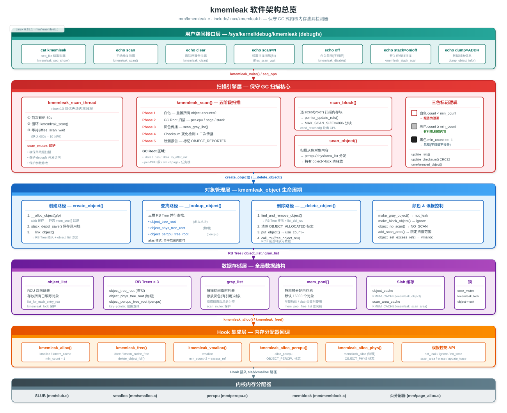
┌─────────────────────────────────────────────────────────────────────┐
│ 用户空间接口层 │
│ ┌──────────────────────────────────────────────────────────────┐ │
│ │ /sys/kernel/debug/kmemleak │ │
│ │ ├─ cat kmemleak → seq_file 读取泄漏报告 │ │
│ │ ├─ echo scan > kmemleak → 手动触发扫描 │ │
│ │ ├─ echo clear > kmemleak → 清除已报告的泄漏 │ │
│ │ ├─ echo off > kmemleak → 永久关闭 kmemleak │ │
│ │ ├─ echo scan=N > kmemleak → 设置扫描间隔(秒) │ │
│ │ ├─ echo stack=on/off → 开关任务栈扫描 │ │
│ │ └─ echo dump=ADDR → 转储指定地址的对象信息 │ │
│ └──────────────────────────────────────────────────────────────┘ │
├─────────────────────────────────────────────────────────────────────┤
│ 扫描引擎层 │
│ ┌───────────────────────────┐ ┌────────────────────────────────┐ │
│ │ kmemleak_scan_thread │ │ kmemleak_scan() │ │
│ │ ├─ nice=10 低优先级 │ │ ├─ 白化阶段 │ │
│ │ ├─ 60s 首次延迟 │ │ ├─ GC Root 扫描 │ │
│ │ └─ 600s 周期循环 │ │ ├─ 灰色传播 │ │
│ └───────────────────────────┘ │ ├─ Checksum 变化检测 │ │
│ │ └─ 泄漏报告 │ │
│ ┌───────────────────────────┐ └────────────────────────────────┘ │
│ │ scan_block() │ ┌────────────────────────────────┐ │
│ │ ├─ 逐指针扫描内存块 │ │ scan_gray_list() │ │
│ │ ├─ pointer_update_refs() │ │ ├─ 扫描灰色对象内容 │ │
│ │ └─ 分块 + cond_resched │ │ └─ 递归传播引用 │ │
│ └───────────────────────────┘ └────────────────────────────────┘ │
├─────────────────────────────────────────────────────────────────────┤
│ 对象管理层 │
│ ┌───────────────────────────┐ ┌────────────────────────────────┐ │
│ │ create_object() │ │ __delete_object() │ │
│ │ ├─ __alloc_object() │ │ ├─ 清除 OBJECT_ALLOCATED │ │
│ │ ├─ stack_depot_save() │ │ └─ put_object() │ │
│ │ └─ __link_object() │ │ └─ call_rcu(free_rcu) │ │
│ │ ├─ RB Tree 插入 │ └────────────────────────────────┘ │
│ │ └─ object_list 添加 │ ┌────────────────────────────────┐ │
│ └───────────────────────────┘ │ 颜色操作 │ │
│ ┌───────────────────────────┐ │ ├─ make_gray_object() │ │
│ │ __lookup_object() │ │ ├─ make_black_object() │ │
│ │ ├─ RB Tree 查找 │ │ └─ update_refs() │ │
│ │ ├─ 3棵树并行查找 │ └────────────────────────────────┘ │
│ │ └─ alias 模式支持 │ │
│ └───────────────────────────┘ │
├─────────────────────────────────────────────────────────────────────┤
│ 数据存储层 │
│ ┌───────────────┐ ┌───────────────┐ ┌───────────────────────────┐ │
│ │ object_list │ │ RB Trees ×3 │ │ gray_list │ │
│ │ (RCU 链表) │ │ ├─ tree_root │ │ (扫描期间临时列表) │ │
│ │ 所有已跟踪对象│ │ ├─ phys_root │ │ 存放灰色(有引用)对象 │ │
│ │ │ │ └─ percpu_root│ │ │ │
│ └───────────────┘ └───────────────┘ └───────────────────────────┘ │
│ ┌───────────────┐ ┌───────────────┐ ┌───────────────────────────┐ │
│ │ mem_pool[] │ │ object_cache │ │ scan_area_cache │ │
│ │ 静态内存池 │ │ slab 缓存 │ │ 扫描区域 slab 缓存 │ │
│ │ 早期分配用 │ │ 运行期分配用 │ │ │ │
│ └───────────────┘ └───────────────┘ └───────────────────────────┘ │
├─────────────────────────────────────────────────────────────────────┤
│ Hook 集成层 │
│ ┌──────────────────────────────────────────────────────────────┐ │
│ │ kmemleak_alloc() ← kmalloc / kmem_cache_alloc │ │
│ │ kmemleak_free() ← kfree / kmem_cache_free │ │
│ │ kmemleak_vmalloc() ← vmalloc │ │
│ │ kmemleak_alloc_percpu() ← alloc_percpu │ │
│ │ kmemleak_free_percpu() ← free_percpu │ │
│ │ kmemleak_alloc_phys() ← memblock_alloc (物理地址) │ │
│ │ kmemleak_free_part() ← free_bootmem (部分释放) │ │
│ └──────────────────────────────────────────────────────────────┘ │
└─────────────────────────────────────────────────────────────────────┘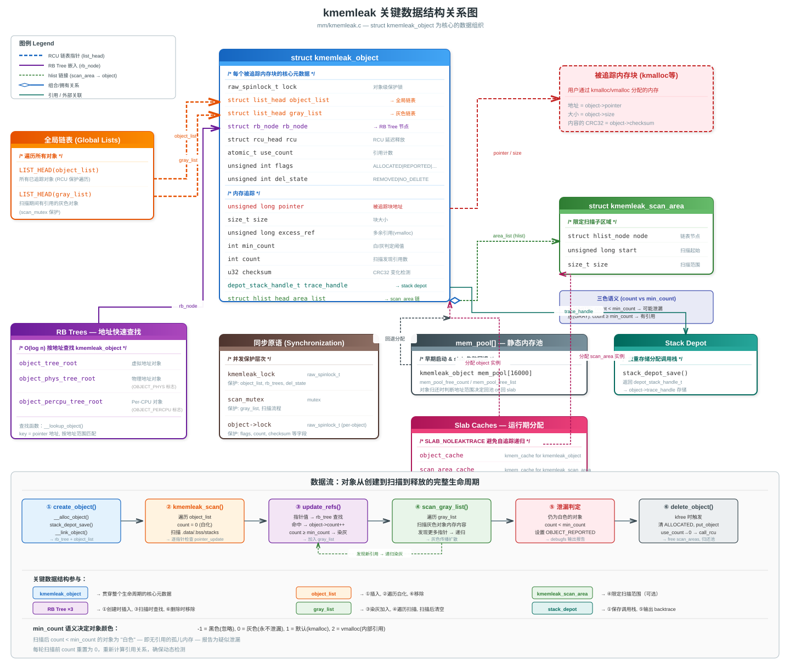
struct kmemleak_object — 核心追踪元数据/* mm/kmemleak.c */
struct kmemleak_object {
raw_spinlock_t lock; /* 对象级保护锁 */
unsigned int flags; /* 状态标志 (ALLOCATED/REPORTED/NO_SCAN等) */
struct list_head object_list; /* 全局 object_list 链表节点 */
struct list_head gray_list; /* 扫描期间灰色列表节点 */
struct rb_node rb_node; /* RB Tree 节点(快速查找) */
struct rcu_head rcu; /* RCU 延迟释放 */
atomic_t use_count; /* 引用计数(降到0时释放) */
unsigned int del_state; /* 删除状态(防止扫描中被删) */
unsigned long pointer; /* 被追踪内存块的起始地址 */
size_t size; /* 被追踪内存块的大小 */
unsigned long excess_ref; /* 多余引用传递(vmalloc用) */
int min_count; /* 最小引用数阈值(白/灰判定) */
int count; /* 当前扫描找到的引用数 */
u32 checksum; /* 对象内容 CRC32(变化检测) */
depot_stack_handle_t trace_handle; /* 分配调用栈(stack depot) */
struct hlist_head area_list; /* 限定扫描区域链表 */
unsigned long jiffies; /* 创建时间戳 */
pid_t pid; /* 分配者 PID */
char comm[TASK_COMM_LEN]; /* 分配者进程名 */
};flags 位定义：
| 标志位 | 值 | 含义 |
|---|---|---|
OBJECT_ALLOCATED |
1<<0 |
对象仍被分配（活跃状态） |
OBJECT_REPORTED |
1<<1 |
已作为泄漏报告过 |
OBJECT_NO_SCAN |
1<<2 |
不扫描对象内容 |
OBJECT_FULL_SCAN |
1<<3 |
全量扫描（scan_area 分配失败时回退） |
OBJECT_PHYS |
1<<4 |
物理地址对象 |
OBJECT_PERCPU |
1<<5 |
Per-CPU 对象 |
del_state 位定义：
| 标志位 | 值 | 含义 |
|---|---|---|
DELSTATE_REMOVED |
1<<0 |
已从 RB Tree 和 object_list 移除 |
DELSTATE_NO_DELETE |
1<<1 |
临时阻止删除（扫描中 cond_resched 期间） |
struct kmemleak_scan_area — 限定扫描区域struct kmemleak_scan_area {
struct hlist_node node; /* area_list 链表节点 */
unsigned long start; /* 扫描起始地址 */
size_t size; /* 扫描范围大小 */
};当调用 kmemleak_scan_area() 后，kmemleak 只扫描指定的子区域而非整个对象，减少假阴性和扫描开销。
object_list (RCU 双向链表) gray_list (扫描临时)
┌────┐ ┌────┐ ┌────┐ ┌────┐ ┌────┐
│obj1│←→ │obj2│←→ │obj3│←→ ... │objA│←→ │objB│←→ ...
└──┬─┘ └──┬─┘ └──┬─┘ └────┘ └────┘
│ │ │
▼ ▼ ▼
object_tree_root (RB Tree — 虚拟地址)
┌───────┐
│ obj2 │
├───┬───┤
▼ ▼
┌───────┐ ┌───────┐
│ obj1 │ │ obj3 │
└───────┘ └───────┘
object_phys_tree_root (RB Tree — 物理地址)
object_percpu_tree_root (RB Tree — per-CPU 地址)
mem_pool[CONFIG_DEBUG_KMEMLEAK_MEM_POOL_SIZE]
┌────┬────┬────┬─···─┬────┐
│ #0 │ #1 │ #2 │ │#N-1│ 静态数组，早期分配使用
└────┴────┴────┴─···─┴────┘kmemleak 元数据的分配面临一个鸡生蛋问题：追踪内存分配需要分配元数据，但元数据分配本身也是内存分配。解决方案是双轨分配：
分配请求
│
▼
object_cache 已初始化? ──否──→ 使用 mem_pool[] 静态数组
│是 (CONFIG_DEBUG_KMEMLEAK_MEM_POOL_SIZE)
▼ 默认 16000 个预分配对象
kmem_cache_alloc(object_cache)
│
├── 成功 → 返回 slab 对象
│
└── 失败 → 回退到 mem_pool[] 静态数组
(如果也用完 → pr_warn_once 报警)释放时反向判断：
static void mem_pool_free(struct kmemleak_object *object)
{
/* 判断是否属于静态数组范围 */
if (object < mem_pool || object >= mem_pool + ARRAY_SIZE(mem_pool)) {
kmem_cache_free(object_cache, object); /* slab 对象 */
return;
}
/* 归还到静态池的空闲链表 */
list_add(&object->object_list, &mem_pool_free_list);
}| 命令 | 格式 | 功能 | 实现函数 |
|---|---|---|---|
| 读取泄漏 | cat /sys/kernel/debug/kmemleak |
显示所有未引用对象详情 | kmemleak_seq_show() |
| 手动扫描 | echo scan > kmemleak |
立即触发一次全量扫描 | kmemleak_scan() |
| 清除报告 | echo clear > kmemleak |
将已报告对象染灰（不再报告） | kmemleak_clear() |
| 关闭 | echo off > kmemleak |
永久禁用 kmemleak（不可恢复） | kmemleak_disable() |
| 设置间隔 | echo scan=N > kmemleak |
设置自动扫描间隔为 N 秒 | 修改 jiffies_scan_wait |
| 启动扫描 | echo scan=on > kmemleak |
启动自动扫描线程 | start_scan_thread() |
| 停止扫描 | echo scan=off > kmemleak |
停止自动扫描线程 | stop_scan_thread() |
| 栈扫描开 | echo stack=on > kmemleak |
启用任务栈扫描 | kmemleak_stack_scan=1 |
| 栈扫描关 | echo stack=off > kmemleak |
禁用任务栈扫描 | kmemleak_stack_scan=0 |
| 转储对象 | echo dump=0xADDR > kmemleak |
打印指定地址对象的详细信息 | dump_str_object_info() |
泄漏报告格式示例：
unreferenced object 0xffff0000c0a84000 (size 4096):
comm "insmod", pid 1456, jiffies 4295069512
hex dump (first 32 bytes):
00 00 00 00 00 00 00 00 00 00 00 00 00 00 00 00 ................
00 00 00 00 00 00 00 00 00 00 00 00 00 00 00 00 ................
backtrace (crc a1b2c3d4):
kmemleak_alloc+0x34/0x40
__kmalloc+0x1c8/0x2f0
my_driver_init+0x48/0x120 [my_module]
do_one_initcall+0x7c/0x1b0
...源码位置：mm/Kconfig.debug 第 237-299 行
① CONFIG_DEBUG_KMEMLEAK — 主开关
config DEBUG_KMEMLEAK
bool "Kernel memory leak detector"
depends on DEBUG_KERNEL && HAVE_DEBUG_KMEMLEAK
select DEBUG_FS
select STACKTRACE if STACKTRACE_SUPPORT
select KALLSYMS
select CRC32
select STACKDEPOT
select STACKDEPOT_ALWAYS_INIT if !DEBUG_KMEMLEAK_DEFAULT_OFF| 属性 | 值 | 说明 |
|---|---|---|
| 类型 | bool | y/n 二选一 |
| 默认值 | n | 默认不启用 |
| 依赖 | DEBUG_KERNEL |
必须开启内核调试总开关 |
| 依赖 | HAVE_DEBUG_KMEMLEAK |
架构必须声明支持 |
| 自动选中 | DEBUG_FS |
debugfs 文件系统（挂载 /sys/kernel/debug） |
| 自动选中 | STACKTRACE |
调用栈回溯能力 |
| 自动选中 | KALLSYMS |
内核符号表（将地址解析为函数名） |
| 自动选中 | CRC32 |
CRC32 校验（对象变化检测） |
| 自动选中 | STACKDEPOT |
调用栈去重存储（减少内存开销） |
| 自动选中 | STACKDEPOT_ALWAYS_INIT |
若非默认关闭则提前初始化 stack depot |
支持 HAVE_DEBUG_KMEMLEAK 的架构：
| 架构 | 源码 | 架构 | 源码 |
|---|---|---|---|
| arm64 | arch/arm64/Kconfig |
x86 | arch/x86/Kconfig |
| arm | arch/arm/Kconfig |
riscv | arch/riscv/Kconfig |
| mips | arch/mips/Kconfig |
powerpc | arch/powerpc/Kconfig |
| loongarch | arch/loongarch/Kconfig |
s390 | arch/s390/Kconfig |
| arc | arch/arc/Kconfig |
sh | arch/sh/Kconfig |
| xtensa | arch/xtensa/Kconfig |
um | arch/um/Kconfig |
注意：并非所有架构都支持 kmemleak。如果 menuconfig 中看不到该选项，说明当前架构未 select HAVE_DEBUG_KMEMLEAK。
② CONFIG_DEBUG_KMEMLEAK_MEM_POOL_SIZE — 静态内存池大小
config DEBUG_KMEMLEAK_MEM_POOL_SIZE
int "Kmemleak memory pool size"
depends on DEBUG_KMEMLEAK
range 200 1000000
default 16000| 属性 | 值 | 说明 |
|---|---|---|
| 类型 | int | 范围 200 ~ 1000000 |
| 默认值 | 16000 | 预分配 16000 个 kmemleak_object 结构体 |
| 用途 | 早期启动 + slab 失败回退 | 在 slab 分配器就绪前使用 |
调优建议：
2000~400032000~64000kmemleak: Cannot allocate a kmemleak_object，需增大此值③ CONFIG_DEBUG_KMEMLEAK_DEFAULT_OFF — 编译启用但默认关闭
config DEBUG_KMEMLEAK_DEFAULT_OFF
bool "Default kmemleak to off"
depends on DEBUG_KMEMLEAK
default n| 属性 | 值 | 说明 |
|---|---|---|
| 默认值 | n | 默认编译即启用 |
| 设为 y | 编译进内核但默认不运行 | 需 kmemleak=on boot 参数手动激活 |
典型使用场景：在生产内核中编译进 kmemleak，但平时不启用以避免性能开销，需要排查泄漏时通过 boot 参数临时激活。
④ CONFIG_DEBUG_KMEMLEAK_AUTO_SCAN — 自动扫描线程
config DEBUG_KMEMLEAK_AUTO_SCAN
bool "Enable kmemleak auto scan thread on boot up"
default y
depends on DEBUG_KMEMLEAK| 属性 | 值 | 说明 |
|---|---|---|
| 默认值 | y | 自动启动扫描线程 |
| 设为 n | 需手动 echo scan > kmemleak 触发 |
避免 CPU 密集扫描影响用户任务 |
⑤ CONFIG_SAMPLE_KMEMLEAK — 测试样例模块
config SAMPLE_KMEMLEAK
tristate "Simple test for the kernel memory leak detector"
depends on DEBUG_KMEMLEAK && m编译为 .ko 模块，加载后会故意泄漏内存用于验证 kmemleak 检测能力。
源码：mm/kmemleak.c 第 2268-2282 行
early_param("kmemleak", kmemleak_boot_config);| 参数 | 说明 | 实现 |
|---|---|---|
kmemleak=on |
强制启用（覆盖 DEFAULT_OFF） |
设置 kmemleak_skip_disable=1，提前初始化 stack depot |
kmemleak=off |
强制禁用（不可恢复） | 调用 kmemleak_disable() |
Boot 参数传递方式：
# GRUB
GRUB_CMDLINE_LINUX="kmemleak=on"
# QEMU
-append "root=/dev/vda rw kmemleak=on"
# U-Boot (嵌入式)
setenv bootargs "console=ttyS0 kmemleak=on"module_param_named(verbose, kmemleak_verbose, bool, 0600);| 参数 | 类型 | 权限 | 说明 |
|---|---|---|---|
verbose |
bool | 0600 | 启用详细日志输出到 dmesg |
# 运行时开启 verbose
echo 1 > /sys/module/kmemleak/parameters/verbose
# 或 boot 参数
kmemleak.verbose=1接口路径：/sys/kernel/debug/kmemleak
/* mm/kmemleak.c — kmemleak_write() 第 2115-2188 行 */| 命令 | 格式 | 功能 | 状态要求 |
|---|---|---|---|
| 读取泄漏 | cat kmemleak |
seq_file 输出所有未引用对象 | enabled |
| 手动扫描 | echo scan > kmemleak |
立即触发一次全量扫描 | enabled |
| 设置间隔 | echo scan=N > kmemleak |
停止旧线程，设 N 秒间隔后启动新线程 | enabled |
| 启动扫描 | echo scan=on > kmemleak |
启动自动扫描线程 | enabled |
| 停止扫描 | echo scan=off > kmemleak |
停止自动扫描线程 | enabled |
| 栈扫描开 | echo stack=on > kmemleak |
启用任务栈扫描 | enabled |
| 栈扫描关 | echo stack=off > kmemleak |
禁用任务栈扫描（减少开销） | enabled |
| 转储对象 | echo dump=0xADDR > kmemleak |
打印指定地址对象信息 | enabled |
| 清除报告 | echo clear > kmemleak |
已报告泄漏染灰 / 或清理内部对象 | 任意 |
| 永久关闭 | echo off > kmemleak |
不可恢复地禁用 kmemleak | enabled |
注意：echo off后只有clear命令仍可用（用于释放内部数据），其他命令返回-EPERM。
内核启动
│
├── CONFIG_DEBUG_KMEMLEAK=n ? ──是──→ kmemleak 未编译，完全不存在
│
├── CONFIG_DEBUG_KMEMLEAK=y
│ │
│ ├── CONFIG_DEBUG_KMEMLEAK_DEFAULT_OFF=y ?
│ │ │
│ │ ├── boot 参数 kmemleak=on ? ──是──→ ✅ 启用
│ │ │
│ │ └── 无参数或 kmemleak=off ──────→ ❌ 禁用
│ │
│ └── CONFIG_DEBUG_KMEMLEAK_DEFAULT_OFF=n (默认)
│ │
│ ├── boot 参数 kmemleak=off ? ──是──→ ❌ 禁用
│ │
│ └── 无参数或 kmemleak=on ──────→ ✅ 启用
│
└── 运行期:
│
├── echo off > kmemleak ──────────────→ ❌ 永久禁用（不可恢复）
│
├── echo scan=off > kmemleak ───────────→ 停止自动扫描（仍可手动 scan）
│
└── echo scan=on > kmemleak ───────────→ 恢复自动扫描线程方案 A：开发调试（全开）
CONFIG_DEBUG_KMEMLEAK=y
CONFIG_DEBUG_KMEMLEAK_MEM_POOL_SIZE=16000
CONFIG_DEBUG_KMEMLEAK_DEFAULT_OFF=n
CONFIG_DEBUG_KMEMLEAK_AUTO_SCAN=y方案 B：生产按需（编译但默认关）
CONFIG_DEBUG_KMEMLEAK=y
CONFIG_DEBUG_KMEMLEAK_MEM_POOL_SIZE=16000
CONFIG_DEBUG_KMEMLEAK_DEFAULT_OFF=y
CONFIG_DEBUG_KMEMLEAK_AUTO_SCAN=ykmemleak=on 重启方案 C：手动控制（关闭自动扫描）
CONFIG_DEBUG_KMEMLEAK=y
CONFIG_DEBUG_KMEMLEAK_MEM_POOL_SIZE=32000
CONFIG_DEBUG_KMEMLEAK_DEFAULT_OFF=n
CONFIG_DEBUG_KMEMLEAK_AUTO_SCAN=necho scan > /sys/kernel/debug/kmemleak#define MAX_TRACE 16 /* 调用栈最大深度 */
#define MSECS_MIN_AGE 5000 /* 对象最小存活时间(ms)才报告 */
#define SECS_FIRST_SCAN 60 /* 首次扫描延迟(秒) */
#define SECS_SCAN_WAIT 600 /* 自动扫描间隔(秒) */
#define MAX_SCAN_SIZE 4096 /* 单次连续扫描最大字节数 */内核启动时序中 kmemleak 的初始化：
early_param("kmemleak", kmemleak_boot_config) ← 解析 boot 参数
│
▼
mm_core_init()
├── stack_depot_early_init() ← 调用栈存储初始化
└── kmemleak_init() ← kmemleak 核心初始化
├── 初始化 jiffies_min_age, jiffies_scan_wait
├── KMEM_CACHE(kmemleak_object, SLAB_NOLEAKTRACE) ← 元数据 slab 缓存
├── KMEM_CACHE(kmemleak_scan_area, SLAB_NOLEAKTRACE)
├── 注册 .data 段为灰色对象 (GC Root)
├── 注册 .bss 段为灰色对象 (GC Root)
└── 注册 .data..ro_after_init 段（条件性）
│
▼
late_initcall(kmemleak_late_init) ← 后期初始化
├── kmemleak_late_initialized = 1
├── debugfs_create_file("kmemleak", ...) ← 创建 debugfs 接口
└── start_scan_thread() ← 启动自动扫描线程
(仅 AUTO_SCAN=y 时)注意：SLAB_NOLEAKTRACE 标志使 kmemleak 自身的 slab 缓存不被追踪，避免无限递归。
场景：检测内核模块内存泄漏
# 1. 确认 kmemleak 已启用
dmesg | grep kmemleak
# 输出: kmemleak: Kernel memory leak detector initialized (mem pool available: 15987)
# 2. 加载待测试模块
insmod my_module.ko
# 3. 执行触发泄漏的操作
echo test > /proc/my_module/trigger
# 4. 手动触发扫描（不等 600 秒）
echo scan > /sys/kernel/debug/kmemleak
# 5. 查看泄漏报告
cat /sys/kernel/debug/kmemleak
# 6. 清除已报告泄漏，重新检测
echo clear > /sys/kernel/debug/kmemleak
# 7. 再次操作和扫描
echo test > /proc/my_module/trigger
echo scan > /sys/kernel/debug/kmemleak
cat /sys/kernel/debug/kmemleak
# 8. 卸载模块后再次扫描（确认泄漏不是延迟释放）
rmmod my_module
echo scan > /sys/kernel/debug/kmemleak
cat /sys/kernel/debug/kmemleak分析泄漏报告的关键步骤：
slub_debug=T 可以交叉验证分配栈kmemleak 作为内核级内存泄漏检测器，融合了多种经典算法。本节按功能类别系统梳理每种算法的原理、复杂度和设计选型理由。
源码参考：mm/kmemleak.c、lib/stackdepot.c、include/linux/kmemleak.h
| # | 算法 | 类别 | 用途 | 时间复杂度 | 核心函数 |
|---|---|---|---|---|---|
| 1 | 保守 GC 三色标记 | 垃圾收集 | 泄漏判定核心流程 | O(n+m) | kmemleak_scan() |
| 2 | BFS 灰色传播 | 图遍历 | 引用可达性扩散 | O(n) | scan_gray_list() |
| 3 | 红黑树地址范围查找 | 平衡搜索树 | 按地址快速定位对象 | O(log n) | lookup_object() / link_object() |
| 4 | 保守指针扫描 | 内存扫描 | 从内存块中识别指针 | O(m/8) | scan_block() |
| 5 | CRC32 变化检测 | 哈希校验 | 检测对象内容修改 | O(size) | update_checksum() |
| 6 | Jenkins Hash (jhash2) | 哈希 | Stack Depot 调用栈去重 | O(k) | hash_stack() / stack_depot_save() |
| 7 | RCU + 引用计数 | 并发安全 | 无锁遍历与安全释放 | O(1) | get_object() / put_object() |
| 8 | 地址范围快速拒绝 | 边界检查 | 过滤 99% 无效指针 | O(1) | pointer_update_refs() |
| 9 | 双轨内存池分配 | 资源管理 | 解决元数据分配递归 | O(1) | mem_pool_alloc() / mem_pool_free() |
| 10 | 对象重叠/别名检测 | 数据一致性 | 防止地址空间冲突 | O(log n) | link_object() / lookup_object() |
n = 已追踪对象数，m = 扫描内存总字节数，k = 调用栈帧数
算法类别：保守垃圾收集 (Conservative Garbage Collection)
kmemleak 的核心是一个非移动式保守垃圾收集器，借鉴 Boehm GC 的思想，但目标不是回收内存而是发现无引用的孤儿对象。
五阶段扫描流程：
Phase 1: 白化 (Whitening)
遍历 object_list，将所有对象 count 重置为 0
min_count>0 的对象变为白色（待验证）
min_count=0 的对象保持灰色（永不泄漏）
│
▼
Phase 2: 扫描 GC Roots
扫描 .data / .bss / per-CPU / struct page / 任务栈
每发现一个可能的指针 → pointer_update_refs()
命中对象 → count++，达到阈值 → 染灰加入 gray_list
│
▼
Phase 3: 灰色传播 (Gray Propagation)
BFS 遍历 gray_list
扫描每个灰色对象的内存内容
发现新指针 → 目标对象染灰 → 追加到 gray_list 尾部
直到 gray_list 为空
│
▼
Phase 4: Checksum 二次检查
遍历仍为白色的对象
计算 CRC32 checksum，与上次比较
如果内容变化 → 重新染灰 → 再次 scan_gray_list()
│
▼
Phase 5: 泄漏报告
仍为白色且存活超过 jiffies_min_age (5秒) 的对象
标记 OBJECT_REPORTED → 输出到 debugfs三色语义：
颜色判定函数:
白色(WHITE): count < min_count 且 min_count != -1 → 无引用，疑似泄漏
灰色(GRAY): count >= min_count 且 min_count != -1 → 有引用，安全
黑色(BLACK): min_count == KMEMLEAK_BLACK (-1) → 完全忽略，不扫描
min_count 的语义:
-1 → 黑色，由 kmemleak_ignore() 设置，如内核代码段
0 → 永灰，由 kmemleak_not_leak() 设置，已知安全对象
1 → 默认，kmalloc 等标准分配，需要至少 1 个引用
2 → vmalloc 特殊处理，因 vm_struct 内部引用多一层设计选型理由：
复杂度：O(n + m)，n = 对象数，m = 扫描内存总量
算法类别：广度优先搜索 (Breadth-First Search)
灰色传播本质是以 gray_list 为队列的 BFS 遍历，从 GC Root 发现的灰色对象出发，递归扫描其内存内容，寻找更多引用。
/* mm/kmemleak.c — scan_gray_list() 伪代码 */
object = gray_list.first
while (object != gray_list_end) {
scan_object(object) // 扫描对象内存 → 可能向 gray_list 尾部追加新对象
next = object.gray_list.next
list_del(object.gray_list) // 从队列头移除
put_object(object)
object = next
}
// gray_list 为空时收敛关键特性：
| 特性 | 实现 | 原因 |
|---|---|---|
| 队列语义 | list_add_tail 追加 / 从头取出 |
BFS 保证层序遍历 |
| 安全迭代 | 迭代中修改链表（尾部追加） | 新发现的灰色对象自然排队 |
| 可中断 | 每个对象间 cond_resched() |
避免长时间占用 CPU |
| 分块扫描 | 大对象按 4KB 分段 + cond_resched() |
降低调度延迟 |
| Per-CPU 展开 | percpu 对象逐 CPU 扫描 | 覆盖所有 CPU 副本 |
为什么选 BFS 而非 DFS：
cond_resched() 分时调度复杂度：O(n + m_gray)，每个灰色对象最多扫描一次
算法类别：平衡二叉搜索树 (Red-Black Tree)
kmemleak 维护 3 棵红黑树，分别索引虚拟地址、物理地址、per-CPU 地址空间的对象：
static struct rb_root object_tree_root = RB_ROOT; // 虚拟地址
static struct rb_root object_phys_tree_root = RB_ROOT; // 物理地址
static struct rb_root object_percpu_tree_root = RB_ROOT; // per-CPU 地址查找算法 — 地址范围匹配：
__lookup_object(ptr, alias, objflags):
rb = 选择对应 rb_root (根据 objflags)
ptr = kasan_reset_tag(ptr) // 去除 KASAN 标签
while rb != NULL:
obj = rb_entry(rb)
obj_ptr = kasan_reset_tag(obj.pointer)
if ptr < obj_ptr:
rb = rb.left // 目标在左子树
else if obj_ptr + obj.size <= ptr:
rb = rb.right // 目标在右子树
else:
// ptr ∈ [obj_ptr, obj_ptr + obj.size)
if obj_ptr == ptr or alias:
return obj // 精确匹配或别名匹配
else:
warn("alias at 0x%lx") // 指针落在对象内部但非起始
break
return NULL插入算法 — 重叠检测：
__link_object(object, ptr, size, ...):
// 沿 RB Tree 下降找插入位置
while *link != NULL:
parent = current_node
if ptr + size <= parent.pointer:
link = &parent.left // 完全在左侧
else if parent.pointer + parent.size <= ptr:
link = &parent.right // 完全在右侧
else:
// 地址范围重叠！分配器异常
kmemleak_stop("overlap detected")
return -EEXIST
rb_link_node + rb_insert_color // 插入并重新平衡设计选型理由：
复杂度：插入、查找、删除均为 O(log n)
算法类别：内存扫描 / 模式匹配
scan_block() 是 kmemleak 最底层的扫描原语，将一段内存按指针宽度对齐逐一读取，把每个值当作潜在指针进行查找：
scan_block(start, end, scanned_object):
ptr = PTR_ALIGN(start, 8) // 8 字节对齐 (64-bit)
end = end - 7 // 确保不越界
lock(kmemleak_lock)
for each ptr in [start, end) step 8:
kasan_disable()
value = *(unsigned long *)kasan_reset_tag(ptr)
kasan_enable()
pointer_update_refs(scanned_object, value, 0) // 虚拟地址空间
pointer_update_refs(scanned_object, value, OBJECT_PERCPU) // per-CPU 空间
unlock(kmemleak_lock)"保守"的含义：
┌─────────────────────────────────────────────────────┐
│ 扫描的内存块 │
│ │
│ 0x00000000 ← 不是指针（地址范围外） │
│ 0xFFFF0000C0A84000 ← 可能是指针！查找 RB Tree │
│ 0x12345678 ← 可能是整数也可能是指针，按指针处理 │
│ 0xFFFF800010200000 ← 命中 → 目标对象 count++ │
│ │
│ 策略：宁可把整数当指针（漏报），不把指针当整数（误报） │
└─────────────────────────────────────────────────────┘大块分段扫描（scan_large_block）：
scan_large_block(start, end):
while start < end:
next = min(start + MAX_SCAN_SIZE, end) // MAX_SCAN_SIZE = 4096
scan_block(start, next, NULL)
start = next
cond_resched() // 每 4KB 让出 CPUGC Root 扫描范围：
| 扫描区域 | 来源 | 说明 |
|---|---|---|
.data 段 |
_sdata ~ _edata |
全局已初始化变量 |
.bss 段 |
bss_start ~ bss_stop |
全局未初始化变量 |
| per-CPU 段 | per_cpu_start ~ per_cpu_end × NR_CPUS |
每个 CPU 副本 |
| struct page | pfn_to_page() 遍历所有 zone |
页描述符中可能存指针 |
| 任务栈 | try_get_task_stack() × 所有任务 |
栈上局部变量中的指针 |
复杂度：O(m/8)，m = 内存块字节数（每 8 字节检查一次）
算法类别：循环冗余校验 (Cyclic Redundancy Check)
kmemleak 用 CRC32 校验和检测对象内容是否在两次扫描之间发生变化，用于处理扫描期间新分配的对象：
update_checksum(object):
old_csum = object.checksum
if object.flags & OBJECT_PERCPU:
// Per-CPU 对象：XOR 所有 CPU 副本的 CRC32
object.checksum = 0
for each cpu:
object.checksum ^= crc32(0, per_cpu_ptr(object.pointer, cpu), object.size)
else:
object.checksum = crc32(0, object.pointer, object.size)
return (object.checksum != old_csum) // 内容变化返回 true在扫描流程中的作用（Phase 4）：
扫描完成后，仍为白色的对象 → 可能是假阳性
│
├── checksum 未变化 → 确实无引用，报告为泄漏
│
└── checksum 变化 → 对象内容被修改（可能刚分配）
→ 重新染灰，min_count 恢复
→ 再次 scan_gray_list() 传播
→ 给予二次机会，减少误报设计选型理由：
crc32 指令、x86 SSE4.2）复杂度：O(size)，需读取整个对象内容
算法类别：哈希函数 / 去重哈希表
Stack Depot 使用 Jenkins Hash (jhash2) 对调用栈帧数组计算哈希值，实现高效去重存储：
hash_stack(entries[], nr_entries):
return jhash2((u32 *)entries,
nr_entries * sizeof(unsigned long) / sizeof(u32),
STACK_HASH_SEED)Stack Depot 查找流程：
stack_depot_save(entries[], nr_entries):
hash = hash_stack(entries, nr_entries)
bucket = &stack_table[hash & mask]
// === 快路径：RCU 无锁查找 ===
rcu_read_lock()
for each stack in bucket (RCU safe):
if stack.hash != hash: continue // 快速跳过
if stack.size != nr_entries: continue // 尺寸不匹配
if memcmp(stack.entries, entries): continue // 内容不匹配
found = stack // 命中！
rcu_read_unlock()
if found: return found.handle
// === 慢路径：加锁插入 ===
lock(pool_lock)
// double-check 防并发插入
found = find_stack(bucket, ...)
if !found:
new = alloc_from_pool_or_freelist()
new.hash = hash
memcpy(new.entries, entries, ...)
list_add_rcu(&new.hash_list, bucket)
found = new
unlock(pool_lock)
return found.handle设计选型理由：
jhash2 变体比逐字节更快复杂度：哈希 O(k)，查找均摊 O(1)，k = 栈帧数
算法类别：并发安全回收
kmemleak 对象的生命周期由 RCU 延迟释放 + 原子引用计数 联合管理：
对象创建:
__alloc_object()
atomic_set(&use_count, 1) // 初始引用 = 1
对象使用:
get_object(object):
return atomic_inc_not_zero(&use_count) // 如果已为 0 则失败
put_object(object):
if atomic_dec_and_test(&use_count): // 降到 0
call_rcu(&object.rcu, free_object_rcu) // RCU 延迟释放
对象查找 (并发安全):
__find_and_get_object(ptr, alias):
rcu_read_lock()
object = __lookup_object(ptr, alias) // RB Tree 查找
if object && !get_object(object):
object = NULL // 正在被释放
rcu_read_unlock()
return object
RCU 回调释放:
free_object_rcu(rcu_head):
// 此刻保证无 RCU 读者持有引用
释放所有 scan_area
归还到 mem_pool 或 object_cache为什么需要双重保护：
| 机制 | 保护目标 | 场景 |
|---|---|---|
| RCU | object_list 遍历 | 扫描线程 RCU 读遍历时，其他 CPU 删除对象 |
| 引用计数 | 对象本身 | 扫描线程获取对象后释放 RCU 锁，仍需访问对象 |
| 两者配合 | 全生命周期 | RCU 保护查找过程，引用计数保护使用过程 |
复杂度：get/put 均 O(1)
算法类别：边界检查 / 快速过滤
扫描时大部分内存值不是有效指针。kmemleak 维护全局地址范围，用 O(1) 范围检查过滤掉绝大多数无效值，避免昂贵的 RB Tree 查找：
全局状态:
min_addr = ULONG_MAX (初始) // 最小虚拟地址
max_addr = 0 (初始) // 最大虚拟地址
min_percpu_addr = ULONG_MAX // 最小 per-CPU 地址
max_percpu_addr = 0 // 最大 per-CPU 地址
每次插入对象时更新:
__link_object(ptr, size, objflags):
if OBJECT_PERCPU:
min_percpu_addr = min(min_percpu_addr, ptr)
max_percpu_addr = max(max_percpu_addr, ptr + size)
else if !OBJECT_PHYS:
min_addr = min(min_addr, ptr)
max_addr = max(max_addr, ptr + size)
每次检查指针时快速拒绝:
pointer_update_refs(pointer, objflags):
ptr = kasan_reset_tag(pointer)
if OBJECT_PERCPU:
if ptr < min_percpu_addr || ptr >= max_percpu_addr:
return // ← 快速拒绝，不进入 RB Tree
else:
if ptr < min_addr || ptr >= max_addr:
return // ← 快速拒绝
// 通过范围检查才进行 O(log n) 的 RB Tree 查找
object = __lookup_object(pointer, 1, objflags)效果：在典型工作负载下，约 99% 的扫描值被范围检查快速拒绝，大幅减少 RB Tree 查找次数。
复杂度：O(1) 两次比较
算法类别：资源管理 / 鸡生蛋问题解决
kmemleak 追踪每个 kmalloc 分配都需要分配一个 kmemleak_object 元数据，但元数据分配本身也是 kmalloc——这会导致无限递归。解决方案是双轨分配：
┌───────────────────────┐
│ mem_pool_alloc() │
└──────────┬────────────┘
│
┌────────────────┼────────────────┐
▼ ▼
object_cache 已初始化? 使用静态数组
│是 mem_pool[16000]
▼ │
kmem_cache_alloc(object_cache) ┌───────┼───────┐
(SLAB_NOLEAKTRACE 避免递归) ▼ ▼
│ mem_pool_free_list mem_pool_free_count
├── 成功 → 返回 (回收对象) (未使用对象)
│
└── 失败 → 回退到静态数组释放时的判定：
mem_pool_free(object):
if (object >= mem_pool && object < mem_pool + ARRAY_SIZE(mem_pool)):
// 属于静态数组 → 归还到空闲链表
list_add(&object->object_list, &mem_pool_free_list)
else:
// 属于 slab → 归还给 slab 分配器
kmem_cache_free(object_cache, object)关键设计：
SLAB_NOLEAKTRACE 标志使 kmemleak 的 slab 缓存不被自己追踪，切断递归CONFIG_DEBUG_KMEMLEAK_MEM_POOL_SIZE 默认 16000，足以覆盖早期启动阶段复杂度：分配/释放均为 O(1)
算法类别：数据一致性验证
RB Tree 的地址范围语义天然支持两种异常检测：
重叠检测（插入时）：
插入 [ptr, ptr+size) 到 RB Tree:
下降过程中发现:
既不完全在 parent 左侧 (ptr + size <= parent.pointer)
也不完全在 parent 右侧 (parent.pointer + parent.size <= ptr)
→ 两个对象的地址范围重叠！
→ kmemleak_stop()：分配器可能存在严重 bug别名检测（查找时）：
查找 ptr:
找到 obj 使得 ptr ∈ [obj.pointer, obj.pointer + obj.size)
但 ptr != obj.pointer (指针不在对象起始位置)
alias=1 时 (扫描模式): 正常，指针指向对象内部
alias=0 时 (精确模式): 异常，warn 并 dump 对象信息| 场景 | alias 参数 | 行为 |
|---|---|---|
kmemleak_free(ptr) |
alias=0 | 要求精确匹配起始地址 |
扫描 pointer_update_refs() |
alias=1 | 允许指向对象内部任意位置 |
kmemleak_scan_area() |
alias=0 | 要求精确匹配 |
以下展示一次完整扫描中各算法的协同：
① 扫描开始 → 白化所有对象 (三色标记 Phase 1)
│
② 读取 .data 段某个 8 字节值 0xFFFF800010200000 (保守指针扫描)
│
③ 快速检查: min_addr <= 0xFFFF800010200000 < max_addr? (地址范围拒绝)
│ 是 → 继续
│ 否 → 跳过（O(1) 拒绝）
│
④ RB Tree 查找 0xFFFF800010200000 (红黑树范围查找)
│ 命中对象 obj_A (pointer=0xFFFF800010200000, size=4096)
│
⑤ obj_A.count++ → count >= min_count → 染灰 (引用计数更新)
│ 加入 gray_list 尾部
│
⑥ BFS 取出 obj_A → scan_object(obj_A) (灰色传播)
│ 扫描 obj_A 的 4096 字节内容
│ 发现内部指针 0xFFFF800010300000 → 目标 obj_B 也染灰
│
⑦ 扫描结束 → 白色对象 obj_C 检查 CRC32 (变化检测)
│ checksum 未变 → 确认泄漏
│
⑧ 报告 obj_C → 输出 trace_handle 对应的调用栈 (Stack Depot jhash2)
│ 去重查找已存储的栈帧
│
⑨ 后续 kfree(obj_A) → delete_object → put_object (RCU + 引用计数)
│ use_count→0 → call_rcu(free_object_rcu)
│ RCU 宽限期后安全释放当泄漏集中在 kmalloc-512 或 kmalloc-4k 这类通用 cache 时，仅看 kmemleak 输出通常不够。最佳实践是将 kmemleak + slub_debug(U/T/F/P/Z) + slabinfo + page_owner 组合使用。
典型现象：
cat /proc/slabinfo | grep kmalloc-512 或 grep kmalloc-4k 显示 active_objs 持续上涨且不回落/proc/meminfo 中 Slab、SUnreclaim 持续增长kmemleak 报告中出现大量 512B 或 4096B 大小对象快速判定是否值得进入专项定位：
连续 3~5 个采样点（例如每 60s）:
kmalloc-512.active_objs 单调上升
或 kmalloc-4k.active_objs 单调上升
且 业务低峰后不回落
=> 进入 SLUB 泄漏专项流程推荐内核配置：
CONFIG_SLUB_DEBUG=y
CONFIG_SLUB_DEBUG_ON=n
CONFIG_PAGE_OWNER=y
CONFIG_SLUB_STATS=y
CONFIG_DEBUG_KMEMLEAK=y关键来源：
mm/Kconfig.debug：SLUB_DEBUG、SLUB_DEBUG_ON、PAGE_OWNERmm/slub.c：__setup("slab_debug", setup_slub_debug)，支持 F/Z/P/U/T/A/O/-Documentation/admin-guide/mm/slab.rst：slab_debug 语法与示例slab_debug 选项速记：
F：一致性检查（含双重释放等）Z：redzoneP：poisonU：分配/释放调用栈跟踪（store_user）T：trace（日志量极大，仅建议单 cache）O：若调试导致 slab order 升高则自动关闭该 cache 调试-：关闭调试（用于覆盖 CONFIG_SLUB_DEBUG_ON）只对目标 cache 开启跟踪，避免全局性能灾难：
# 仅对 kmalloc-512 和 kmalloc-4k 开启 U(调用栈跟踪) + F(一致性)
slab_debug=UF,kmalloc-512,kmalloc-4k
# 如果机器内存碎片明显，避免升高分配阶数导致雪崩，可加 O
slab_debug=UFO,kmalloc-512,kmalloc-4k如果只想做短时强力定位（高风险高开销）：
# 注意：T 会打印大量 TRACE 日志，仅用于短窗口抓包
slab_debug=UFT,kmalloc-512,kmalloc-4k确认 cache 名称是否存在：
ls /sys/kernel/slab | grep -E '^kmalloc-(512|4k)$'Step 1：确认对象增长趋势
watch -n 2 "grep -E 'kmalloc-(512|4k)' /proc/slabinfo"
cat /proc/meminfo | grep -E 'Slab|SReclaimable|SUnreclaim'Step 2：读取目标 cache 的分配/释放调用点
Documentation/ABI/testing/sysfs-kernel-slab明确了alloc_calls/free_calls接口
cat /sys/kernel/slab/kmalloc-512/alloc_calls
cat /sys/kernel/slab/kmalloc-512/free_calls
cat /sys/kernel/slab/kmalloc-4k/alloc_calls
cat /sys/kernel/slab/kmalloc-4k/free_calls判读要点：
alloc_calls 明显高于 free_calls，且差值持续扩大，即首要嫌疑路径total_objects / objects / slabs / objects_partialfor c in kmalloc-512 kmalloc-4k; do
echo "== $c =="
cat /sys/kernel/slab/$c/objects
cat /sys/kernel/slab/$c/total_objects
cat /sys/kernel/slab/$c/slabs
cat /sys/kernel/slab/$c/objects_partial
doneStep 3：用 slabinfo 做聚合视图
# 需要先编译工具
gcc -O2 -o slabinfo tools/mm/slabinfo.c
# 统计/跟踪信息
./slabinfo -X kmalloc-512
./slabinfo -X kmalloc-4kStep 4：与 kmemleak 结果对齐
echo scan > /sys/kernel/debug/kmemleak
cat /sys/kernel/debug/kmemleak | grep -E 'size (512|4096)'若某 backtrace 同时出现在：
kmemleak 的 unreferenced object 报告中alloc_calls 热点中则该路径优先级最高。
kmalloc-4k 常与页分配压力耦合，建议联动 page_owner 做页级归因：
CONFIG_PAGE_OWNER=ypage_owner=oncat /sys/kernel/debug/page_owner_stacks/show_stacks > stacks.txt
cat /sys/kernel/debug/page_owner > page_owner_full.txtmake -C tools/mm page_owner_sort
./tools/mm/page_owner_sort stacks.txt sorted_stacks.txt如果 4K 泄漏路径在 page_owner 与 kmalloc-4k/alloc_calls 中均为热点，说明问题极可能在该调用链上（如对象申请后引用丢失或错误缓存队列滞留）。
修复后至少进行 3 轮回归（冷热路径、压力、长稳态）：
# 每轮前清空已报告项
echo clear > /sys/kernel/debug/kmemleak
# 执行压力场景...
# 复检
echo scan > /sys/kernel/debug/kmemleak
cat /sys/kernel/debug/kmemleak验收标准：
kmalloc-512 / kmalloc-4k 的 active_objs 在业务低峰可回落到稳定平台alloc_calls - free_calls 差值不再随时间持续扩大kmemleak 无新增同类 512/4096 未引用对象Slab 与 SUnreclaim 曲线恢复平稳可以，而且在嵌入式场景里（没有 bpftrace）推荐直接走 libbpf CO-RE 路径。
在很多线上场景中，eBPF 是定位 SLUB 泄漏 root cause 的首选补充手段：
kmemleak 偏向“结果视角”（哪些对象未引用）slub_debug(U/T) 偏向“缓存视角”（哪个 cache 的 alloc/free 热点）eBPF 偏向“动态行为视角”（哪个调用链在当前业务流里持续净分配）三者结合可以显著缩短定位时间。
可用的内核 tracepoint（源码 include/trace/events/kmem.h）：
tracepoint:kmem:kmalloc：包含 ptr、bytes_alloc、call_sitetracepoint:kmem:kfree：包含 ptr、call_sitetracepoint:kmem:kmem_cache_alloc / kmem_cache_free：可拿到 cache 名称eBPF 定位 SLUB 泄漏的本质，是在内核里做一个“轻量对象生命周期账本”：
kmalloc/kmem_cache_alloc，对目标尺寸（512/4096）记录 ptr -> alloc_stack_idkfree/kmem_cache_free，用 ptr 回查并删除映射，同时对对应栈做减计数可抽象为：
$$
Outstanding(stack) = Alloc(stack) - Free(stack)
$$
当 $Outstanding(stack)$ 长时间保持正斜率（$\frac{d}{dt}Outstanding > 0$）时，说明该调用路径存在持续净分配。
为什么这个方法能定位到 root cause：
ptr -> alloc_stack_id 让每个对象都能追溯到“谁分配的”与 kmemleak 的关系：
kmemleak 擅长回答“哪些对象最终不可达”误差与边界：
kmemleak/page_owner 交叉验证kmalloc-512、kmalloc-4k 增长很快，但 alloc_calls/free_calls 信息不够实时目标：只追踪 kmalloc 中 bytes_alloc=512/4096 的对象，建立 “ptr -> alloc_stack_id” 映射，在 kfree 时抵消，并输出“净分配热点栈 TopN”。
核心设计：
BPF_MAP_TYPE_HASH：ptr -> alloc_stack_idBPF_MAP_TYPE_HASH：alloc_stack_id -> outstanding_countBPF_MAP_TYPE_STACK_TRACE：保存内核调用栈tracepoint/kmem/kmalloc 与 tracepoint/kmem/kfree最小事件模型（逻辑伪代码）：
// on kmem:kmalloc
if (bytes_alloc == 512 || bytes_alloc == 4096) {
stack_id = bpf_get_stackid(ctx, &stackmap, BPF_F_FAST_STACK_CMP);
if (stack_id >= 0) {
ptr2stack[ptr] = stack_id;
outstanding[stack_id] += 1;
}
}
// on kmem:kfree
stack_id = ptr2stack[ptr];
if (stack_id exists) {
if (outstanding[stack_id] > 0)
outstanding[stack_id] -= 1;
delete ptr2stack[ptr];
}用户态（libbpf）周期读取 outstanding map，按 count 排序打印 TopN，再用 stackmap + /proc/kallsyms 符号化输出。
# 1) 编译 BPF 对象
clang -O2 -g -target bpf -D__TARGET_ARCH_arm64 \
-c slub_leak.bpf.c -o slub_leak.bpf.o
# 2) 生成 skeleton（libbpf-bootstrap 方式）
bpftool gen skeleton slub_leak.bpf.o > slub_leak.skel.h
# 3) 编译用户态加载器
${CROSS_COMPILE}gcc -O2 -g slub_leak.c -o slub_leak \
-I. -lbpf -lelf -lz
# 4) 运行（每 10s 打印一次 Top20）
./slub_leak --sizes 512,4096 --interval 10 --top 20若设备上没有 bpftool，可在构建机生成 *.skel.h 后随程序一起下发。
CONFIG_BPF=y、CONFIG_BPF_SYSCALL=y、CONFIG_DEBUG_INFO_BTF=ytracefs 已挂载（通常在 /sys/kernel/tracing）CAP_BPF + CAP_PERFMON（不同发行版可能要求略有差异）/proc/kallsyms 可读（至少测试机）如果缺 BTF：
推荐顺序：
/proc/slabinfo 先确认是 kmalloc-512 或 kmalloc-4k 持续增长slab_debug=UF,kmalloc-512,kmalloc-4k 获取静态调用点画像kmemleak 对热点栈做“未引用对象”交叉验证page_owner 验证 4K 对象是否伴随页级泄漏outstanding_count 持续上升且业务低峰不回落：高概率泄漏路径alloc_calls 也高热：优先级进一步提升outstanding_count 波动但均值稳定：更可能是缓存抖动而非泄漏若某些开发机有 bpftrace，可用于快速验证思路；但在嵌入式设备上仍以 libbpf 工具为主，便于交叉编译、部署和长期运行。
slub_debug=T，但在极高 QPS 下仍需限时采样结论：
对于 SLUB 512/4K 对象泄漏，eBPF 不仅“可以用”，在嵌入式设备上更建议用 libbpf CO-RE 做长期可运维的定位工具。
Buddy 泄漏本质上是页分配路径（alloc_pages/fallback 路径）上的“页未归还”。和 SLUB 对象泄漏不同，Buddy 问题关注的是页阶（order）与 zone 水位的持续恶化。
很多 “Buddy 泄漏” 其实是外部碎片化，不是真泄漏。先做这个判定：
MemFree 持续下降，Slab 不一定上升，且业务低峰后仍不回升/proc/buddyinfo 几乎耗尽，但低阶页还在依据（内核文档）：Documentation/filesystems/proc.rst 明确 buddyinfo 主要用于诊断 external fragmentation。
/proc/buddyinfo/proc/pagetypeinfo/proc/zoneinfo/proc/meminfoMemFree、MemAvailable、Slab、SUnreclaim/proc/vmstatpgalloc_、pgfree、allocstall、compact_* 等计数建议做时间序列采样（例如每 10~30 秒）而非单点快照。
对于 Buddy 泄漏，page_owner 通常是最有效的 root cause 工具。
依据（内核文档）：Documentation/mm/page_owner.rst 明确 page owner 用于追踪“谁分配了每一页”，并可用于 leak/debug memory hog。
启用条件：
CONFIG_PAGE_OWNER=ypage_owner=on典型用法：
cat /sys/kernel/debug/page_owner_stacks/show_stacks > stacks.txt
cat /sys/kernel/debug/page_owner > page_owner_full.txt
make -C tools/mm page_owner_sort
./tools/mm/page_owner_sort page_owner_full.txt sorted_page_owner.txt判读重点：
order 与调用栈聚合，找到“持续增长”的分配栈nr_base_pages（基页数）判断谁是主耗内者在嵌入式设备上无 bpftrace 时，可用 libbpf 挂 tracepoint：
tracepoint:kmem:mm_page_alloctracepoint:kmem:mm_page_free思路与 SLUB 章节一致，但聚合维度改为 order + stack_id (+ gfp_flags/migratetype)：
$$
OutstandingPages(key) = AllocPages(key) - FreePages(key)
$$
其中 AllocPages / FreePages 可按 2^{order} 折算为基页数，便于跨 order 比较。
当某个 key(order, stack) 的 OutstandingPages 持续正斜率，且低峰不回落，即为 Buddy 泄漏高概率路径。
buddyinfo + pagetypeinfo，确认是泄漏还是碎片化。meminfo/zoneinfo/vmstat，确认“持续净消耗”。page_owner，输出并排序热点栈。mm_page_alloc/free 的净增栈，验证是否与 page_owner 热点一致。MemFree 与高阶 order 可恢复、热点栈净增归零或稳定。/proc/buddyinfo 单次快照：必须看时间趋势。结论：
Buddy 泄漏定位的主线是“先判碎片化 vs 泄漏，再用 page_owner 找栈，最后用 libbpf 做在线净增验证”。
本节通过 5 个真实场景还原 Buddy 泄漏的完整定位过程：从现象观测、数据采集、root cause 归因到修复验证。每个 Case 均基于 4.6 节的方法论，重点展示 page_owner / buddyinfo / zoneinfo / vmstat 的判读方法和 eBPF 在线验证技术。
嵌入式 ARM64 设备运行 48 小时后出现 OOM kill。业务为周期性视频采集，重启后可恢复，但随运行时间推移 MemFree 持续下降。
连续采样 /proc/meminfo（每 30 秒一次，取 4 小时数据）：
# T=0h
MemTotal: 1024000 kB
MemFree: 512000 kB
MemAvailable: 680000 kB
Slab: 45000 kB
SUnreclaim: 12000 kB
# T=2h
MemFree: 384000 kB
MemAvailable: 540000 kB
Slab: 46000 kB
SUnreclaim: 12500 kB
# T=4h
MemFree: 256000 kB
MemAvailable: 398000 kB
Slab: 46200 kB
SUnreclaim: 12600 kB判读：
MemFree 从 512MB 持续下降至 256MB，4 小时下降 256MB，斜率稳定Slab 仅增长 1.2MB — 不是 SLUB 对象泄漏MemFree 仍不回升同时看 buddyinfo 确认不是碎片化：
# T=0h
Node 0, zone Normal 1024 512 256 128 64 32 16 8 4 2 1
# T=4h
Node 0, zone Normal 256 128 64 32 16 8 4 2 1 0 0所有 order 的可用块都在等比下降，而非仅高阶枯竭，进一步确认是页被分配后未归还。
# 两次采样间隔 2h
grep -E 'pgalloc_normal|pgfree' /proc/vmstat
# T=0h
pgalloc_normal 28456320
pgfree 28392160
# T=2h
pgalloc_normal 29180480
pgfree 29051200$$
\Delta pgalloc = 29180480 - 28456320 = 724160
$$
$$
\Delta pgfree = 29051200 - 28392160 = 659040
$$
$$
Net\_Leak = \Delta pgalloc - \Delta pgfree = 724160 - 659040 = 65120 \text{ pages} = 254.4 \text{ MB}
$$
与 MemFree 下降量（256MB）吻合。
前提：内核已启用 CONFIG_PAGE_OWNER=y，boot 参数含 page_owner=on。
# 导出 page_owner 原始数据
cat /sys/kernel/debug/page_owner > /tmp/page_owner_full.txt
# 用内核工具排序（按调用栈聚合，按页数降序）
cd /path/to/linux-6.18.1
make -C tools/mm page_owner_sort
./tools/mm/page_owner_sort /tmp/page_owner_full.txt /tmp/sorted.txtsorted.txt 输出（Top 3）：
62080 times, 62080 pages:
Page allocated via order 0, mask 0x400dc0(GFP_KERNEL|__GFP_ZERO), pid 1285, tgid 1285 (video_capture), ts 172800000000 ns
PFN 0x48000 type Unmovable Block 4 type Unmovable Flags 0x0()
__alloc_pages_noprof+0x1c0/0x340
__get_free_pages+0x14/0x34
dma_direct_alloc+0xc4/0x240
dma_alloc_attrs+0x78/0xa4
my_video_dma_alloc_buffer+0x58/0x9c [my_video_drv]
my_video_start_capture+0x120/0x1f0 [my_video_drv]
my_video_ioctl+0x2a4/0x3b0 [my_video_drv]
...
1024 times, 1024 pages:
Page allocated via order 0, mask 0x6000c0(GFP_KERNEL), pid 1, tgid 1 (init), ts 5000000 ns
...
512 times, 512 pages:
...判读：
my_video_drv 模块的 my_video_dma_alloc_buffer()GFP_KERNEL|__GFP_ZERO、order-0、type Unmovablevideo_capture 进程也可用聚合接口快速确认：
# 设置阈值，只显示 > 1000 基页的热点栈
echo 1000 > /sys/kernel/debug/page_owner_stacks/count_threshold
cat /sys/kernel/debug/page_owner_stacks/show_stacks输出：
__alloc_pages_noprof+0x1c0/0x340
__get_free_pages+0x14/0x34
dma_direct_alloc+0xc4/0x240
dma_alloc_attrs+0x78/0xa4
my_video_dma_alloc_buffer+0x58/0x9c [my_video_drv]
my_video_start_capture+0x120/0x1f0 [my_video_drv]
nr_base_pages: 62080根据栈信息定位到驱动代码：
// drivers/media/my_video_drv.c (问题代码)
static int my_video_start_capture(struct my_video_dev *dev)
{
// 每次启动采集都分配 DMA 缓冲区
dev->dma_buf = dma_alloc_coherent(dev->dev, DMA_BUF_SIZE,
&dev->dma_handle, GFP_KERNEL);
if (!dev->dma_buf)
return -ENOMEM;
// ... 启动 DMA 传输 ...
return 0;
}
static int my_video_stop_capture(struct my_video_dev *dev)
{
// BUG: 停止采集时未释放 DMA 缓冲区！
// 缺少: dma_free_coherent(dev->dev, DMA_BUF_SIZE,
// dev->dma_buf, dev->dma_handle);
dev->dma_buf = NULL; // 指针置空但页未归还
return 0;
}root cause：my_video_stop_capture() 中将 dma_buf 指针置 NULL 但未调用 dma_free_coherent() 归还物理页。每次 start/stop 循环泄漏 DMA_BUF_SIZE / PAGE_SIZE 个 order-0 页。
// 修复后
static int my_video_stop_capture(struct my_video_dev *dev)
{
if (dev->dma_buf) {
dma_free_coherent(dev->dev, DMA_BUF_SIZE,
dev->dma_buf, dev->dma_handle);
dev->dma_buf = NULL;
dev->dma_handle = 0;
}
return 0;
}验收标准（参照 4.6.5 标准流程）：
MemFree 波动在 ±5% 范围内，无持续下降趋势pgalloc - pgfree 长期净增量 ≈ 0nr_base_pages 稳定不增长服务器运行高吞吐网络转发业务，72 小时后 /proc/buddyinfo 显示 order-3 及以上块快速枯竭：
# T=0h
Node 0, zone Normal 8192 4096 2048 1024 512 256 128 64 32 16 8
# T=72h
Node 0, zone Normal 8190 4094 2044 12 3 0 0 0 0 0 0但 MemFree 下降并不猛烈（因 order-3 = 8 pages/次，总量不如 order-0 泄漏大），关键症状是高阶分配频繁失败，触发 compaction 和 direct reclaim。
grep -E 'compact_stall|compact_success|allocstall' /proc/vmstatcompact_stall 12450
compact_success 1203
allocstall_normal 8764compact_stall 极高但 compact_success 仅 10%，说明碎片压实无法回收——不是碎片化问题，是页被占住未释放。
看 pagetypeinfo 确认 Unmovable 占比：
Free pages count per migrate type at order 0 1 2 3 4 5 ...
Node 0, zone Normal, type Unmovable 4096 2048 1024 2 0 0 ...
Node 0, zone Normal, type Movable 4094 2046 1020 10 3 0 ...Unmovable order-3 几乎为 0，Movable order-3 也仅剩 10 — 两种类型都在消耗。
./tools/mm/page_owner_sort /tmp/page_owner_full.txt /tmp/sorted.txt
head -30 /tmp/sorted.txt4800 times, 38400 pages:
Page allocated via order 3, mask 0x61200(GFP_HIGHUSER_MOVABLE|__GFP_COMP), pid 0, tgid 0 (swapper/0), ts 259200000000 ns
PFN 0x120000 type Movable Block 36 type Movable Flags 0x10200(head|private)
__alloc_pages_noprof+0x1c0/0x340
__folio_alloc_noprof+0x28/0x40
page_frag_alloc_align+0x19c/0x2b0
__napi_alloc_skb+0x68/0xf8
my_eth_rx_poll+0x154/0x3c0 [my_eth_drv]
__napi_poll+0x4c/0x1c8
net_rx_action+0x128/0x2a0
...判读：
my_eth_drv 的 my_eth_rx_poll() → NAPI 收包路径GFP_HIGHUSER_MOVABLE|__GFP_COMP 表明分配了 compound page（8 页组成一个 folio）Flags 0x10200(head|private) 中 private 标志表明该页被设置了 page->private// drivers/net/ethernet/my_eth_drv.c (问题代码)
static int my_eth_rx_poll(struct napi_struct *napi, int budget)
{
while (pkts < budget) {
struct sk_buff *skb = napi_alloc_skb(napi, ETH_FRAME_LEN);
// ... DMA 收包到 skb ...
if (csum_err) {
// BUG: 校验错误时直接 continue，未 kfree_skb()
dev->stats.rx_crc_errors++;
continue; // skb 泄漏！底层 compound page 引用计数不归零
}
netif_receive_skb(skb);
pkts++;
}
return pkts;
}root cause：当接收到 CRC 校验错误的报文时，代码跳过 kfree_skb() 直接 continue，导致 skb 及其底层 compound page（order-3）的引用计数永远不归零。在高误码率线缆上，每秒泄漏数十个 order-3 页。
if (csum_err) {
dev->stats.rx_crc_errors++;
kfree_skb(skb); // 修复：释放 skb 归还底层页
continue;
}多媒体 SoC 设备，运行视频编解码 + 摄像头采集业务。运行 24 小时后，MemAvailable 大幅低于预期，但 MemFree + Cached 看起来还算正常：
MemTotal: 2048000 kB
MemFree: 128000 kB
MemAvailable: 310000 kB
Cached: 256000 kB
CmaTotal: 524288 kB
CmaFree: 16384 kBCMA 预留区 512MB 中只剩 16MB 可用，但业务声称最多只用 256MB CMA。
看 zoneinfo 确认 CMA 页去向：
grep -A3 'cma\|managed' /proc/zoneinfoNode 0, zone Normal
managed 524288
cma 131072
...
pages free 4096cma 区 131072 pages（512MB），但 CmaFree 仅 4096 pages（16MB）。
再看 /proc/pagetypeinfo 中 CMA 行：
Number of blocks type Unmovable Movable Reclaimable CMA Isolate
Node 0, zone Normal 32 64 16 128 0128 个 CMA pageblock 全部存在，未被转换 — 说明 CMA 页被合法分配后未释放，不是 pageblock 迁移问题。
过滤 CMA 区域 PFN 范围的 page_owner 输出：
# 假设 CMA 起始 PFN 为 0x80000，大小 0x20000
awk '/PFN 0x[89a-f]/' /tmp/page_owner_full.txt | head -60page_owner 聚合结果：
58000 times, 58000 pages:
Page allocated via order 0, mask 0xcc0(GFP_KERNEL), pid 856, tgid 856 (codec_daemon), ts 86400000000 ns
__alloc_pages_noprof+0x1c0/0x340
cma_alloc+0x1a8/0x330
dma_alloc_contiguous+0x5c/0xb0
my_codec_alloc_frame+0x88/0xf0 [my_codec]
my_codec_start_decode+0x1a0/0x2c0 [my_codec]
...
65536 times, 65536 pages:
Page allocated via order 0, mask 0xcc0(GFP_KERNEL), pid 860, tgid 860 (cam_service), ts 86400000000 ns
__alloc_pages_noprof+0x1c0/0x340
cma_alloc+0x1a8/0x330
dma_alloc_contiguous+0x5c/0xb0
my_cam_alloc_buf+0x64/0xc8 [my_cam]
my_cam_queue_setup+0x11c/0x1e0 [my_cam]
...两个驱动共占用 58000 + 65536 = 123536 pages ≈ 482MB CMA 页。
// drivers/media/my_codec.c (问题代码)
static int my_codec_start_decode(struct my_codec_ctx *ctx)
{
int i;
for (i = 0; i < ctx->num_frames; i++) {
// 每次 start 都分配新 frame buffer
ctx->frames[i] = dma_alloc_contiguous(ctx->dev,
FRAME_SIZE, GFP_KERNEL);
}
return 0;
}
static int my_codec_stop_decode(struct my_codec_ctx *ctx)
{
// BUG: 只释放了前一半 buffer（循环条件写错）
int i;
for (i = 0; i < ctx->num_frames / 2; i++) { // 应为 num_frames
dma_free_contiguous(ctx->dev, ctx->frames[i], FRAME_SIZE);
ctx->frames[i] = NULL;
}
return 0;
}root cause：my_codec_stop_decode() 中循环条件为 num_frames / 2（整除截断），每次 start/stop 循环泄漏一半 CMA frame buffer。经过多次编解码会话后，CMA 耗尽。
for (i = 0; i < ctx->num_frames; i++) {
if (ctx->frames[i]) {
dma_free_contiguous(ctx->dev, ctx->frames[i], FRAME_SIZE);
ctx->frames[i] = NULL;
}
}CmaFree 在 stop 后应回升至接近 CmaTotal - 当前活跃使用量CmaFree 不持续下降设备运行 7 天后，MemFree 缓慢下降（约 2MB/小时），但 Slab、CmaFree 均正常。异常指标：
# T=0d
VmallocUsed: 48000 kB
PageTables: 12000 kB
# T=7d
VmallocUsed: 384000 kB
PageTables: 56000 kBVmallocUsed 从 48MB 增长到 384MB，PageTables 随之增长（vmalloc 区域需要页表映射）。
这不是 Buddy 直接泄漏，而是 vmalloc 泄漏间接消耗 Buddy 页（vmalloc 底层通过 alloc_pages 获取物理页）。
确认 vmalloc 区增长：
wc -l /proc/vmallocinfo
# T=0d: 1200 条
# T=7d: 85000 条找到热点分配者：
awk '{print $NF}' /proc/vmallocinfo | sort | uniq -c | sort -rn | head -5 83200 my_filter_create+0x48/0xc0 [my_netfilter]
800 load_module+0x1234/0x2000
640 vmalloc_user+0x20/0x40
320 crypto_alloc_tfm+0x88/0x120
240 __do_sys_epoll_create1+0x30/0x9083200 条 vmalloc 分配全部来自 my_netfilter 模块的 my_filter_create()。
page_owner 中可以看到大量 order-0 页分配指向 vmalloc 路径：
332800 times, 332800 pages:
Page allocated via order 0, mask 0x6280c0(GFP_KERNEL|__GFP_ZERO|__GFP_ACCOUNT), pid 1450, tgid 1450 (my_filter_d), ts ...
__alloc_pages_noprof+0x1c0/0x340
__vmalloc_area_node+0x134/0x1e0
__vmalloc_node_range_noprof+0xb8/0x1a0
vmalloc+0x30/0x40
my_filter_create+0x48/0xc0 [my_netfilter]
my_filter_handle_pkt+0x200/0x340 [my_netfilter]
nf_hook_slow+0x54/0xc0
...332800 pages × 4KB = 1.27GB 累积 vmalloc 分配（其中大部分仍 outstanding）。
// net/netfilter/my_netfilter.c (问题代码)
static unsigned int my_filter_handle_pkt(void *priv,
struct sk_buff *skb, const struct nf_hook_state *state)
{
struct filter_ctx *ctx;
if (need_deep_inspect(skb)) {
ctx = vmalloc(sizeof(*ctx)); // 每个需要深度检查的包分配一个 ctx
// ... 检查逻辑 ...
if (ctx->result == DROP) {
// BUG: drop 路径未 vfree(ctx)
return NF_DROP;
}
vfree(ctx);
}
return NF_ACCEPT;
}root cause：netfilter 模块在 NF_DROP 路径忘记 vfree(ctx)。每个被 drop 的包泄漏一个 vmalloc 对象，底层消耗 Buddy order-0 页。
if (ctx->result == DROP) {
vfree(ctx);
return NF_DROP;
}
vfree(ctx);此 Case 是 反例：看起来像 Buddy 泄漏，实际是外部碎片化。展示如何快速排除。
系统运行 48 小时后频繁出现 order-4 分配失败告警：
page allocation failure: order:4, mode:0x61200(GFP_HIGHUSER_MOVABLE|__GFP_COMP)但 MemFree 变化不大：
# T=0h
MemFree: 256000 kB
# T=48h
MemFree: 248000 kB # 仅下降 8MB# T=48h
Node 0, zone Normal 16384 8192 4096 2048 0 0 0 0 0 0 0关键特征：order 0~3 可用块充足，但 order-4 及以上全为 0。这是典型的外部碎片化，不是泄漏。
Free pages count per migrate type at order 0 1 2 3 4 5 ...
Node 0, zone Normal, type Unmovable 8192 4096 2048 1024 0 0 ...
Node 0, zone Normal, type Movable 8192 4096 2048 1024 0 0 ...
Number of blocks type Unmovable Movable Reclaimable Isolate
Node 0, zone Normal 128 64 16 0Unmovable 占了 128 个 pageblock（128 × 512 = 65536 pages），而 Movable 只有 64 个。不可迁移页过多地散布在各 pageblock 中，阻止了 compaction 合并高阶块。
compact_stall 4580
compact_success 123 # 成功率仅 2.7%
compact_migrate_scanned 982000
compact_free_scanned 1560000vm.extfrag_threshold、启用 proactive compaction（vm.compaction_proactiveness）GFP_KERNEL（Unmovable）分配可改为 GFP_HIGHUSER_MOVABLECONFIG_COMPACTION=y + CONFIG_TRANSPARENT_HUGEPAGE=always 让 khugepaged 持续整理| 指标 | 真泄漏（Case 1-4） | 碎片化（Case 5） |
|---|---|---|
MemFree 趋势 |
持续单调下降 | 基本稳定 |
buddyinfo 模式 |
所有 order 等比下降 | 低阶充足，高阶为 0 |
pgalloc - pgfree 净值 |
持续正增长 | 接近零 |
compact_success 率 |
不适用（页未释放） | 极低（< 5%） |
| 业务低峰恢复 | 不恢复 | 可能部分恢复 |
| 定位工具 | page_owner + eBPF | pagetypeinfo + compaction 调优 |
与 4.5.7 节 SLUB eBPF 方案类似，Buddy 泄漏也可用 libbpf CO-RE 做在线净增分析。核心差异在于事件源和聚合维度。
核心思想：在分配/释放的必经路径上记账，对每一物理页建立「谁分配的」溯源关系，再用统计手段把持续净增长的调用路径筛选出来。
传统手段（/proc/buddyinfo、/proc/pagetypeinfo）只能看到"水位在降"，page_owner 能看到"当前谁占了多少页"，但它们都无法回答一个关键问题：在当前业务负载下，是哪个运行时调用链在持续地「只分配不释放」？ eBPF 正好填补了这个「动态行为」视角的空白。
eBPF 之所以能精准定位 Buddy 泄漏的 root cause，依赖以下四个核心机制：
机制一：全量配对记账 — 构建「每页→分配者」映射
tracepoint:kmem:mm_page_alloc
│
▼
┌──────────────────────────────────────────────┐
│ pfn_map[pfn] = { stack_id, order } │
│ outstanding[stack_id].count += 1 │
│ outstanding[stack_id].base_pages += 2^order │
└──────────────────────────────────────────────┘
│
（页面使用中...） │
│
tracepoint:kmem:mm_page_free
│
▼
┌──────────────────────────────────────────────┐
│ info = pfn_map[pfn] // 查出是谁分配的 │
│ outstanding[info.stack_id].count -= 1 │
│ outstanding[info.stack_id].base_pages -= 2^o │
│ delete pfn_map[pfn] │
└──────────────────────────────────────────────┘alloc_pages 时，用 bpf_get_stackid() 捕获内核调用栈，与 pfn 绑定free_pages 时，用 pfn 回查映射表，找到原始分配栈并做减计数机制二：调用栈聚合 — 把百万级页事件压缩为少量热点路径
Buddy 分配器每秒可能处理数十万次 alloc/free，逐页追踪不现实。eBPF 的 BPF_MAP_TYPE_STACK_TRACE + bpf_get_stackid() 天然实现了按调用栈指纹去重：
$$
\text{stack\_id} = \text{hash}(\text{IP}_1, \text{IP}_2, ..., \text{IP}_n)
$$
所有经过同一代码路径的分配事件共享同一个 stack_id，计数器在该 ID 下累加。结果是：百万级事件被压缩为几十到几百个唯一栈，每个栈附带精确的 outstanding 计数。
机制三：时间序列趋势 — 区分「缓存抖动」和「真泄漏」
仅看一个时间点的 outstanding 值无法区分正常缓存行为和泄漏。eBPF 用户态程序周期性（如每 10 秒）读取 outstanding map 并记录时序：
base_pages
▲
2400 │ ●─●─●─●─● ← 泄漏路径: 单调递增
1800 │ ●─●─●─●─●─
1200 │ ●─●─●─●─●─●─
600 │ ●─●─●─●─●─●─
│
200 │ ●──●──●──●──●──●──●──●──●──●──●──● ← 正常路径: 波动但均值稳定
└──┬──┬──┬──┬──┬──┬──┬──┬──┬──┬──┬──→ time
10 20 30 40 50 60 70 80 90 (s)判定规则：
机制四：零侵入实时性 — 生产环境可用的根本原因
| 特性 | 为什么重要 |
|---|---|
| tracepoint 是内核静态桩点 | 即使没有 debug 内核也能挂载，开销比 kprobe 低 |
| eBPF 验证器保证安全 | 程序不会 panic 内核、不会死循环、不会越界读写 |
| 热插拔 | 随时 attach/detach，不需重启或重编译内核 |
| 内核态执行 | 数据聚合在内核完成，不会产生海量 trace 数据到用户态 |
| 采样窗口可控 | 只需在泄漏复现窗口抓 1-5 分钟即可 |
与其他工具的互补关系：
page_owner (静态全量) eBPF (动态增量)
┌──────────────────┐ ┌──────────────────┐
│ "当前谁占了多少页" │ ───▶ │ "谁在持续净分配" │
│ (时间点快照) │ │ (时间序列趋势) │
└──────────────────┘ └──────────────────┘
│ │
└──────── 交叉验证 ─────────┘
│
▼
两者 TopN 栈一致 → 高置信度 root cause误差来源与应对：
| 误差来源 | 影响 | 应对 |
|---|---|---|
| Compound page 拆分/合并 | free order ≠ alloc order，pfn 匹配失败 | 按 head page pfn 记录，或接受少量噪声 |
| 延迟释放（RCU callback） | 短期 outstanding 偏高 | 采样窗口延长至分钟级 |
| per-cpu page cache (PCP) | 页暂存 PCP 未到 Buddy | 关注趋势而非瞬时值 |
| BPF map 满 | 丢失部分记录 | 增大 max_entries 或限定 order 过滤 |
| stackid 冲突 | 极少数不同栈共享 ID | 使用 BPF_F_FAST_STACK_CMP 降低冲突率 |
挂载内核 tracepoint（源码 include/trace/events/kmem.h）：
tracepoint:kmem:mm_page_alloc：字段包含 pfn、order、gfp_flags、migratetypetracepoint:kmem:mm_page_free：字段包含 pfn、order建立 "pfn -> (order, alloc_stack_id)" 映射，在 free 时抵消：
$$
Outstanding(stack, order) = \sum AllocPages(stack, order) - \sum FreePages(stack, order)
$$
按 $2^{order}$ 折算为基页数，便于跨 order 比较：
$$
OutstandingBasePages(stack) = \sum_{order} Outstanding(stack, order) \times 2^{order}
$$
当某个 (stack, order) 的 $OutstandingBasePages$ 持续正斜率且低峰不回落，即为 Buddy 泄漏的 root cause 高概率候选。
// BPF maps
struct {
__uint(type, BPF_MAP_TYPE_HASH);
__uint(max_entries, 1 << 20);
__type(key, u64); // pfn
__type(value, struct alloc_info); // { stack_id, order }
} pfn_map SEC(".maps");
struct {
__uint(type, BPF_MAP_TYPE_HASH);
__uint(max_entries, 8192);
__type(key, s32); // stack_id
__type(value, struct outstanding_info); // { count, base_pages }
} outstanding SEC(".maps");
struct {
__uint(type, BPF_MAP_TYPE_STACK_TRACE);
__uint(max_entries, 8192);
__uint(key_size, sizeof(u32));
__uint(value_size, 127 * sizeof(u64));
} stackmap SEC(".maps");// on tracepoint:kmem:mm_page_alloc
SEC("tracepoint/kmem/mm_page_alloc")
int handle_page_alloc(struct trace_event_raw_mm_page_alloc *ctx)
{
u64 pfn = ctx->pfn;
u32 order = ctx->order;
// 可选过滤：只追踪特定 order 或 gfp_flags
if (target_order >= 0 && order != target_order)
return 0;
s32 stack_id = bpf_get_stackid(ctx, &stackmap, BPF_F_FAST_STACK_CMP);
if (stack_id < 0)
return 0;
struct alloc_info info = { .stack_id = stack_id, .order = order };
bpf_map_update_elem(&pfn_map, &pfn, &info, BPF_ANY);
struct outstanding_info *val = bpf_map_lookup_elem(&outstanding, &stack_id);
if (val) {
__sync_fetch_and_add(&val->count, 1);
__sync_fetch_and_add(&val->base_pages, 1 << order);
} else {
struct outstanding_info new_val = {
.count = 1,
.base_pages = 1 << order,
};
bpf_map_update_elem(&outstanding, &stack_id, &new_val, BPF_NOEXIST);
}
return 0;
}
// on tracepoint:kmem:mm_page_free
SEC("tracepoint/kmem/mm_page_free")
int handle_page_free(struct trace_event_raw_mm_page_free *ctx)
{
u64 pfn = ctx->pfn;
struct alloc_info *info = bpf_map_lookup_elem(&pfn_map, &pfn);
if (!info)
return 0;
s32 stack_id = info->stack_id;
u32 order = info->order;
bpf_map_delete_elem(&pfn_map, &pfn);
struct outstanding_info *val = bpf_map_lookup_elem(&outstanding, &stack_id);
if (val) {
__sync_fetch_and_add(&val->count, -1);
__sync_fetch_and_add(&val->base_pages, -(1 << order));
}
return 0;
}# 1) 编译 BPF 对象
clang -O2 -g -target bpf -D__TARGET_ARCH_arm64 \
-c buddy_leak.bpf.c -o buddy_leak.bpf.o
# 2) 生成 skeleton
bpftool gen skeleton buddy_leak.bpf.o > buddy_leak.skel.h
# 3) 编译用户态加载器
${CROSS_COMPILE}gcc -O2 -g buddy_leak.c -o buddy_leak \
-I. -lbpf -lelf -lz
# 4) 运行（每 10s 打印 Top20 未释放热点栈）
./buddy_leak --order -1 --interval 10 --top 20
# 只追踪 order-3 泄漏
./buddy_leak --order 3 --interval 10 --top 20[2026-04-28 10:30:00] === Buddy Outstanding Top 20 (interval 10s) ===
#1 stack_id=1842 count=+320 base_pages=+2560 (order-3)
__alloc_pages_noprof+0x1c0/0x340
__folio_alloc_noprof+0x28/0x40
page_frag_alloc_align+0x19c/0x2b0
__napi_alloc_skb+0x68/0xf8
my_eth_rx_poll+0x154/0x3c0 [my_eth_drv]
#2 stack_id=2301 count=+48 base_pages=+48 (order-0)
__alloc_pages_noprof+0x1c0/0x340
__get_free_pages+0x14/0x34
dma_direct_alloc+0xc4/0x240
my_video_dma_alloc_buffer+0x58/0x9c [my_video_drv]
#3 stack_id=567 count=+12 base_pages=+12 (order-0)
__alloc_pages_noprof+0x1c0/0x340
alloc_pages_mpol_noprof+0x88/0x120
folio_alloc_mpol_noprof+0x20/0x38
filemap_alloc_folio+0x48/0x70
pagecache_get_page+0x134/0x260
...base_pages 持续正增长且业务低峰不回落 → 高概率泄漏路径nr_base_pages 热点栈交叉验证 — 两者 Top 栈一致时可高置信度定位count 增长但 base_pages 增长更快 → 高阶泄漏（如 order-3 每次泄漏 8 pages）base_pages 波动但均值稳定 → 正常缓存行为，非泄漏| 维度 | page_owner | eBPF |
|---|---|---|
| 时效性 | 静态快照（某一时刻的累积状态） | 实时动态（看增量趋势） |
| 精度 | 精确到每一页 | 按 stack 聚合 |
| 开销 | 编译时开启，运行时低 | 运行时可热插拔 |
| 最佳用途 | 导出全量数据后离线分析 | 在线实时观测净增趋势 |
| 交叉验证 | 提供"谁占了多少页" | 提供"谁在持续净分配" |
推荐流程：先用 page_owner 拿到静态热点栈候选列表，再用 eBPF 工具验证哪些栈在当前业务流中仍在持续净增长。
前面章节聚焦内核态泄漏（kmemleak / SLUB / Buddy），本节系统梳理用户态进程内存泄漏的判定标准和主流检测方案，覆盖从开发阶段到生产环境的全生命周期。
定义：进程在堆（heap）、mmap 映射区或其他动态内存区域中分配了内存，但在不再需要时既没有释放，也没有保留可达指针，导致这部分内存永远无法被回收。
关键判定维度：
| 维度 | 说明 |
|---|---|
| 可达性 | 进程地址空间中不再存在任何指针链能到达该块内存 |
| 语义性 | 即使指针仍可达，但程序逻辑上永远不会再使用（逻辑泄漏） |
| 累积性 | 随运行时间或请求次数，RSS / VSZ 单调递增且业务空闲期不回落 |
| 不可回收 | 未调用 free() / munmap() / 析构函数，也没有 GC 能回收 |
泄漏分类：
┌─────────────────────────────┐
│ 内存泄漏 (Memory Leak) │
└──────────┬──────────────────┘
┌───────────┴───────────┐
▼ ▼
物理泄漏 (Definite) 逻辑泄漏 (Logical)
指针完全丢失 指针可达但不再使用
典型: malloc 后指针 典型: 容器持续追加
被覆盖/离开作用域 元素但从不删除
│ │
┌───────┴───────┐ ┌───────┴───────┐
▼ ▼ ▼ ▼
直接泄漏 间接泄漏 缓存膨胀 引用循环
(首节点不可达) (因首节点泄漏 (无上限的 (A→B→A
Valgrind: 子节点也不 内存缓存) prevent GC)
definitely 可达)
lost indirectly
lostStep 1：观测 RSS 趋势
# 每 10 秒记录一次目标进程的 RSS（单位 KB）
while true; do
ts=$(date +%s)
rss=$(awk '/^VmRSS/{print $2}' /proc/$(pidof myapp)/status 2>/dev/null)
echo "$ts $rss" >> /tmp/rss_trend.log
sleep 10
doneStep 2：判定公式
$$
\text{Leak Rate} = \frac{RSS(t_2) - RSS(t_1)}{t_2 - t_1}
$$
Step 3：排除干扰因素
| 干扰因素 | 排除方法 |
|---|---|
| glibc ptmalloc 碎片 | malloc_trim(0) 后观测 RSS 是否回落 |
| mmap 文件缓存 | 关注 RssAnon 而非 RssFile |
| 内存池预分配 | 确认增长发生在预热之后 |
| jemalloc/tcmalloc 线程缓存 | MALLOC_CONF=tcache:false 测试或调用 purge |
原理：在用户态虚拟 CPU 上运行程序，拦截所有 malloc/free/new/delete，维护影子内存（shadow memory）跟踪每个字节的 allocated / freed / initialized 状态，程序退出时对未释放块做可达性分析。
# 基本用法
valgrind --leak-check=full \
--show-leak-kinds=all \
--track-origins=yes \
--num-callers=20 \
--log-file=valgrind_%p.log \
./myapp [args]
# 附加选项（推荐）
# --leak-resolution=high 区分更细的调用栈
# --expensive-definite-leak-check=yes 更精确的可达性分析
# --suppressions=myapp.supp 过滤已知误报输出解读：
==12345== LEAK SUMMARY:
==12345== definitely lost: 4,096 bytes in 8 blocks ← 必须修复
==12345== indirectly lost: 32,768 bytes in 64 blocks ← 随首节点修复自动消除
==12345== possibly lost: 1,024 bytes in 2 blocks ← 内部指针偏移,需人工判断
==12345== still reachable: 65,536 bytes in 16 blocks ← 程序退出前未释放,通常无害
==12345== suppressed: 0 bytes in 0 blocks| 分类 | 含义 | 处理优先级 |
|---|---|---|
| definitely lost | 无任何指针指向已分配块的起始或内部 | P0 必修 |
| indirectly lost | 因首节点 definitely lost 而不可达 | 修复首节点后自动消除 |
| possibly lost | 有内部指针（非起始地址）指向 | 需人工确认 |
| still reachable | 程序退出时仍有指针可达但未 free | 通常可接受 |
优势与局限：
| 维度 | 优势 | 局限 |
|---|---|---|
| 精度 | 字节级精确，调用栈完整 | — |
| 假阳性 | 极低（suppression 可消除） | — |
| 性能 | — | 20-50x 减速，不适合生产 |
| 多线程 | 支持（Helgrind/DRD 可检测竞争） | 减速更严重 |
| 语言 | C/C++/Fortran | 不支持 Go/Java/Rust |
原理：编译时在每次 malloc/free 前后插入检查代码，用影子内存（1:8 映射）标记 poisoned/unpoisoned 区域。LeakSanitizer（LSan）在进程退出时执行可达性扫描。
# 编译
gcc -fsanitize=address -fno-omit-frame-pointer -g -O1 -o myapp myapp.c
# 或 clang
clang -fsanitize=address -fno-omit-frame-pointer -g -O1 -o myapp myapp.c
# 运行 — LSan 在退出时自动报告泄漏
ASAN_OPTIONS="detect_leaks=1:leak_check_at_exit=1:log_path=asan.log" ./myapp
# 仅做泄漏检测（不检测 UAF/overflow，性能更好）
gcc -fsanitize=leak -g -O1 -o myapp myapp.c
LSAN_OPTIONS="suppressions=lsan.supp" ./myapp输出示例：
==12345==ERROR: LeakSanitizer: detected memory leaks
Direct leak of 4096 byte(s) in 1 object(s) allocated from:
#0 0x7f1234 in malloc (/usr/lib/libasan.so+0x...)
#1 0x401234 in process_request src/handler.c:42
#2 0x401567 in main src/main.c:128
Indirect leak of 32768 byte(s) in 64 object(s) allocated from:
#0 0x7f1234 in malloc (/usr/lib/libasan.so+0x...)
#1 0x401345 in alloc_node src/tree.c:87
SUMMARY: AddressSanitizer: 36864 byte(s) leaked in 65 allocation(s).ASan vs Valgrind 对比：
| 维度 | ASan/LSan | Valgrind |
|---|---|---|
| 性能开销 | 2-3x（快一个数量级） | 20-50x |
| 需要重新编译 | 是 | 否 |
| 检测时机 | 编译+运行时 | 纯运行时 |
| 内存额外消耗 | ~2-3x | ~2x |
| 检测能力 | UAF/overflow/leak/stack-overflow | leak/UAF/未初始化读 |
| 生产环境 | 可用于 canary 测试 | 不可用 |
| 信号处理 | 偶有冲突 | 完全模拟 |
原理：替换 malloc/free 为 tcmalloc 实现，通过采样（每 N 字节分配采样一次）记录调用栈，生成堆 profile 快照。对比两个时间点的快照差异即可定位泄漏。
# 安装
sudo apt install google-perftools libgoogle-perftools-dev # Debian/Ubuntu
# 或
sudo yum install gperftools gperftools-devel # CentOS/RHEL
# 方式一：LD_PRELOAD 注入（无需重编译）
HEAPPROFILE=/tmp/myapp_heap \
HEAP_PROFILE_ALLOCATION_INTERVAL=104857600 \
LD_PRELOAD=/usr/lib/libtcmalloc.so \
./myapp
# 方式二：链接时 -ltcmalloc
gcc -g -O2 -o myapp myapp.c -ltcmalloc
# 分析 — 对比两个快照找泄漏
pprof --text ./myapp /tmp/myapp_heap.0100.heap # 查看单个快照
pprof --text --base=/tmp/myapp_heap.0001.heap \ # 差量分析
./myapp /tmp/myapp_heap.0100.heap
# 可视化
pprof --pdf ./myapp /tmp/myapp_heap.0100.heap > heap.pdf
pprof --web ./myapp /tmp/myapp_heap.0100.heap # 浏览器打开差量分析输出示例：
Total: 45.2 MB
32.1 71.0% 71.0% 32.1 71.0% process_request (handler.c:42)
8.5 18.8% 89.8% 8.5 18.8% cache_insert (cache.c:156)
3.2 7.1% 96.9% 3.2 7.1% parse_json (parser.c:88)关键参数：
| 环境变量 | 说明 | 推荐值 |
|---|---|---|
HEAPPROFILE |
输出文件前缀 | /tmp/app_heap |
HEAP_PROFILE_ALLOCATION_INTERVAL |
每增长 N 字节输出一次 | 100MB（生产）/ 10MB（调试） |
HEAP_PROFILE_INUSE_INTERVAL |
每 in-use 增长 N 字节输出一次 | 100MB |
HEAP_PROFILE_TIME_INTERVAL |
每 N 秒输出一次 | 60（可选） |
原理：与 tcmalloc 类似，jemalloc 内建采样分析器，通过 prof:true 开启后按概率（lg_prof_sample）对分配采样并记录调用栈。
# 安装
sudo apt install libjemalloc-dev # 或从源码编译
# 运行（LD_PRELOAD 方式）
MALLOC_CONF="prof:true,lg_prof_interval:30,lg_prof_sample:19,prof_prefix:/tmp/jeprof" \
LD_PRELOAD=/usr/lib/libjemalloc.so \
./myapp
# 手动触发 dump
kill -USR2 $(pidof myapp) # 或 mallctl("prof.dump", ...)
# 分析
jeprof --text ./myapp /tmp/jeprof.12345.0.f.heap
jeprof --text --base=/tmp/jeprof.12345.0.f.heap \
./myapp /tmp/jeprof.12345.100.f.heap # 差量分析
# 火焰图
jeprof --collapsed ./myapp /tmp/jeprof.*.heap | flamegraph.pl > heap_flame.svgjemalloc MALLOC_CONF 关键参数：
| 参数 | 说明 | 推荐值 |
|---|---|---|
prof:true |
开启 profiling | 必须 |
lg_prof_sample:19 |
采样间隔 $2^{19}$ = 512KB | 19（生产）/ 17（调试） |
lg_prof_interval:30 |
每 $2^{30}$ = 1GB 分配自动 dump | 30（大内存应用） |
prof_prefix |
dump 文件前缀 | 指定路径 |
prof_gdump:true |
RSS 新高时自动 dump | 泄漏排查时开启 |
prof_final:true |
进程退出时 dump | 开启 |
prof_leak:true |
退出时报告泄漏 | 开启 |
核心思想：在 malloc/free 的必经路径上植入探针，对每一次堆分配建立「返回地址 → 分配调用栈」的溯源关系，通过 alloc-free 配对冲销统计出「只分配不释放」的调用路径。
传统工具要么需要重编译（ASan）、要么性能开销极大（Valgrind 20-50x），eBPF 之所以能在生产环境零修改零重启地定位泄漏，依赖以下机制：
机制一：uprobe/uretprobe 配对 — 捕获 malloc 的入参与返回值
uprobe 的关键能力是可以在同一函数上同时挂入口探针和返回探针：
用户态进程调用 malloc(4096)
│
┌────────▼────────────────────────────────────────────────┐
│ uprobe:malloc (入口) │
│ 记录: @alloc_size[tid] = arg0 (4096) │
│ 此时还没有返回地址，暂存请求大小 │
└────────┬───────────────────────────────────────────────┘
│ malloc 内部执行...
┌────────▼────────────────────────────────────────────────┐
│ uretprobe:malloc (返回) │
│ ptr = retval (0x7f12340000) │
│ stack_id = ustack() ← 捕获用户态调用栈 │
│ addr_map[ptr] = { size=4096, stack_id } │
│ outstanding[stack_id] += 4096 │
└────────┬───────────────────────────────────────────────┘
│
┌────────▼────────────────────────────────────────────────┐
│ uprobe:free (ptr=0x7f12340000) │
│ info = addr_map[ptr] // 查出是谁分配的 │
│ outstanding[info.stack_id] -= info.size │
│ delete addr_map[ptr] │
└────────────────────────────────────────────────────────┘total_alloc - total_free，而是每个 ptr 都能追溯到具体的分配调用栈，free 时精确扣减对应栈的计数malloc 的入参是 size，返回值才是 ptr；必须在返回时才能建立 ptr → stack 映射tid（线程 ID）在两个探针间传递 size机制二：调用栈聚合 — 从海量分配事件中提取泄漏路径
一个高并发服务每秒可能有数万次 malloc/free。eBPF 不存储每次分配的完整信息，而是用栈指纹聚合：
$$
\text{stack\_id} = \text{hash}(\text{frame}_1, \text{frame}_2, ..., \text{frame}_n)
$$
所有经过相同代码路径的分配共享同一个 stack_id，outstanding 计数在该 ID 下累加。最终 outstanding map 中只有几十到几百条记录，每条是一个唯一调用栈及其未释放的总字节数。
$$
Outstanding(stack) = \sum_{ptr \in \text{alloc}(stack)} size(ptr) - \sum_{ptr \in \text{free}(stack)} size(ptr)
$$
机制三：时间序列趋势判定
用户态程序每隔 N 秒读取 outstanding map 并排序：
机制四：覆盖全分配器入口
仅 hook malloc/free 不够，完整方案需要覆盖：
| hook 点 | 捕获的分配类型 |
|---|---|
malloc / free |
基本堆分配 |
calloc |
零初始化分配 |
realloc |
先 free 旧块再 alloc 新块（需特殊处理） |
posix_memalign / aligned_alloc |
对齐分配 |
mmap / munmap |
大块分配（glibc 对 >128KB 默认走 mmap） |
new / delete |
C++ 对象（底层调用 malloc） |
为什么这个方法比「只看 RSS 趋势」更精确：
| 维度 | 只看 RSS | eBPF uprobe |
|---|---|---|
| 能否定位到代码行 | ✗（只知道在涨） | ✓（精确到调用栈） |
| 能否区分多个泄漏源 | ✗ | ✓（按栈独立计数） |
| 能否排除 allocator 碎片 | ✗（碎片也涨 RSS） | ✓（outstanding = 未 free 的量） |
| 能否实时观测 | △（秒级粒度） | ✓（事件级粒度） |
| 能否量化泄漏速率 | 粗略 | ✓ 精确到 bytes/s per stack |
误差来源与应对：
| 误差来源 | 影响 | 应对 |
|---|---|---|
| realloc 语义复杂 | 旧 ptr free + 新 ptr alloc 需原子处理 | hook realloc 入口记录旧 ptr，返回时同时冲销旧、记录新 |
| 自定义 allocator（内存池） | malloc 只调一次大块，内部切分不可见 | 需额外 hook 内存池的 alloc/free 函数 |
| dlopen 动态库 | 新 so 中的 malloc 调用可能走不同 PLT | 确保 hook 的是进程实际链接的 libc |
| uprobe 开销 | 高频 malloc 下 uprobe 有上下文切换开销 | 采样模式或限时抓取（1-5 分钟） |
| stack unwinding 失败 | -fomit-frame-pointer 导致栈回溯不完整 |
编译时加 -fno-omit-frame-pointer 或使用 DWARF unwinding |
工具一：bcc memleak
# 安装 bcc-tools
sudo apt install bcc-tools # Debian/Ubuntu
# 追踪指定进程
sudo /usr/share/bcc/tools/memleak -p $(pidof myapp) \
--combined-only \
-a \
-T 5 \ # 每 5 秒输出 top 栈
--top 10 \ # 显示 top-10
-c 16 # 调用栈深度
# 追踪所有进程的 brk/mmap（内核态）
sudo /usr/share/bcc/tools/memleak -T 5 --top 10输出示例：
[14:23:45] Top 10 stacks with outstanding allocations:
4096 bytes in 1 allocations from stack
process_request+0x42 [myapp]
handle_connection+0x128 [myapp]
worker_thread+0x56 [myapp]
start_thread+0xd9 [libpthread.so]
32768 bytes in 8 allocations from stack
cache_insert+0x87 [myapp]
process_request+0x65 [myapp]
handle_connection+0x128 [myapp]工具二：自定义 bpftrace 脚本
sudo bpftrace -e '
uprobe:/lib/x86_64-linux-gnu/libc.so.6:malloc /pid == cpid/ {
@alloc_size[tid] = arg0;
}
uretprobe:/lib/x86_64-linux-gnu/libc.so.6:malloc /pid == cpid/ {
if (retval != 0) {
@outstanding[retval] = @alloc_size[tid];
@alloc_stacks[retval] = ustack;
@total_alloc += @alloc_size[tid];
}
delete(@alloc_size[tid]);
}
uprobe:/lib/x86_64-linux-gnu/libc.so.6:free /pid == cpid && arg0 != 0/ {
@total_free += @outstanding[arg0];
delete(@outstanding[arg0]);
delete(@alloc_stacks[arg0]);
}
interval:s:10 {
printf("\n--- Outstanding: %d bytes ---\n", @total_alloc - @total_free);
}
' -c "$(pidof myapp)"eBPF 方案优势：
| 维度 | 优势 |
|---|---|
| 零修改 | 无需重编译、无需重启进程 |
| 低开销 | uprobe 开销 < 5%（采样模式下更低） |
| 生产安全 | 内核 eBPF 验证器保证不会 crash 目标进程 |
| 实时性 | 实时观测泄漏趋势，不需等进程退出 |
| 全栈 | 可同时追踪用户态分配 + 内核态 page_alloc |
当无法安装任何工具时，纯 /proc 接口也能做初步判定：
# 1. 总览 — VSZ 和 RSS
cat /proc/$(pidof myapp)/status | grep -E 'VmSize|VmRSS|VmData|VmStk|RssAnon'
# 2. 详细内存映射 — 定位哪个 VMA 在增长
cat /proc/$(pidof myapp)/smaps_rollup
# 3. 逐段分析 — 关注 [heap] 和 anon 段的 Rss
grep -A 20 '\[heap\]' /proc/$(pidof myapp)/smaps
# 4. 趋势脚本
while true; do
echo "$(date +%H:%M:%S) $(awk '/RssAnon/{print $2}' /proc/$(pidof myapp)/status) kB"
sleep 30
done关键指标解读：
| 指标 | 来源 | 泄漏信号 |
|---|---|---|
VmRSS |
/proc/PID/status |
持续增长 |
RssAnon |
/proc/PID/status |
匿名页增长 = 堆/mmap 泄漏 |
VmData |
/proc/PID/status |
数据段（含堆）增长 |
[heap] Rss |
/proc/PID/smaps |
堆区域的物理内存持续增长 |
Anonymous: NNN kB |
/proc/PID/smaps |
各匿名 VMA 段的占用 |
Pss |
/proc/PID/smaps_rollup |
按比例分摊的物理内存 |
Java、Go、Python 等 GC 语言虽有自动回收，但逻辑泄漏同样常见：
Java (JVM)：
# 1. 堆 dump + MAT 分析
jmap -dump:live,format=b,file=heap.hprof $(pidof java)
# 用 Eclipse MAT 打开 heap.hprof → Leak Suspects Report
# 2. jcmd 在线分析
jcmd $(pidof java) GC.heap_info # 堆概况
jcmd $(pidof java) GC.class_histogram # 按类统计对象数
# 3. async-profiler 堆采样
./asprof -e alloc -d 60 -f alloc_flame.html $(pidof java)
# 4. VisualVM / JFR 持续监控
jcmd $(pidof java) JFR.start duration=300s filename=recording.jfrGo：
// 代码中导入 pprof
import _ "net/http/pprof"
// 启动 HTTP 端口
go func() { http.ListenAndServe(":6060", nil) }()# 在线采集堆 profile
go tool pprof http://localhost:6060/debug/pprof/heap
# 差量分析（两次采集间隔 5 分钟）
curl -o heap1.pb.gz http://localhost:6060/debug/pprof/heap
sleep 300
curl -o heap2.pb.gz http://localhost:6060/debug/pprof/heap
go tool pprof -base heap1.pb.gz heap2.pb.gz
# 常用命令
(pprof) top 20 -inuse_space # 按在用内存排序
(pprof) list FunctionName # 查看源码级分配
(pprof) web # 可视化Python：
# 1. tracemalloc — 标准库内建
import tracemalloc
tracemalloc.start(25) # 保留 25 帧调用栈
# ... 执行业务代码 ...
snapshot = tracemalloc.take_snapshot()
for stat in snapshot.statistics('lineno')[:10]:
print(stat)
# 2. 差量对比
snap1 = tracemalloc.take_snapshot()
# ... 执行可疑代码 ...
snap2 = tracemalloc.take_snapshot()
for stat in snap2.compare_to(snap1, 'lineno')[:10]:
print(stat)
# 3. objgraph — 引用循环检测
import objgraph
objgraph.show_most_common_types(limit=20)
objgraph.show_growth(limit=10) # 两次调用间增长的对象
objgraph.show_backrefs(obj, max_depth=5) # 谁引用了这个对象| 方案 | 精度 | 性能开销 | 需要重编译 | 生产可用 | 最佳场景 |
|---|---|---|---|---|---|
| Valgrind | ★★★★★ | 20-50x | 否 | ✗ | 开发/CI 阶段全量检测 |
| ASan/LSan | ★★★★★ | 2-3x | 是 | △ canary | 开发阶段 + CI 流水线 |
| gperftools | ★★★★ | < 5% | 否(LD_PRELOAD) | ✓ | 生产环境 C/C++ 长期监控 |
| jemalloc | ★★★★ | < 5% | 否(LD_PRELOAD) | ✓ | 生产环境高性能应用 |
| eBPF memleak | ★★★ | < 5% | 否 | ✓ | 生产环境零侵入在线诊断 |
| /proc + smaps | ★★ | 0 | 否 | ✓ | 无工具时快速初判 |
| JVM MAT/JFR | ★★★★ | < 10% | 否 | ✓ | Java 应用 |
| Go pprof | ★★★★ | < 5% | 否(内建) | ✓ | Go 应用 |
| tracemalloc | ★★★ | 10-30% | 否 | △ | Python 应用 |
┌─────────────────────────────────────────────────────────────────────────┐
│ 应用内存泄漏排查标准流程 │
└─────────────────────────────┬───────────────────────────────────────────┘
▼
┌────────────────────────┐
│ Step 1: /proc 趋势观测 │
│ RssAnon 持续增长? │
└────────────┬───────────┘
┌───── │ ─────┐
▼ 是 ▼ 否
┌──────────────┐ ┌──────────────┐
│ Step 2: 确认 │ │ 非泄漏: │
│ 排除碎片/缓存 │ │ 缓存/碎片/ │
│ malloc_trim │ │ 正常波动 │
└──────┬───────┘ └──────────────┘
▼
┌────────────────────────────┐
│ Step 3: 选择检测方案 │
└────────────┬───────────────┘
┌───────────┼──────────────┐
▼ ▼ ▼
开发/测试 可重编译 生产环境
环境 (有源码) (不可停机)
│ │ │
▼ ▼ ▼
Valgrind ASan/LSan eBPF memleak
(全量扫描) (CI 集成) 或 gperftools
(LD_PRELOAD)
│ │ │
└───────────┼──────────────┘
▼
┌────────────────────────────┐
│ Step 4: 定位泄漏调用栈 │
│ 找到 top alloc stack │
└────────────┬───────────────┘
▼
┌────────────────────────────┐
│ Step 5: 代码审查 & 修复 │
│ 确认 alloc/free 配对 │
└────────────┬───────────────┘
▼
┌────────────────────────────┐
│ Step 6: 回归验证 │
│ 长时间压测确认 RSS 稳定 │
└────────────────────────────┘验收标准：
| 指标 | 通过条件 |
|---|---|
| RSS 趋势 | 24h 压测 RssAnon 不再单调递增 |
| Valgrind | definitely lost = 0 |
| ASan | 无 LeakSanitizer 报告 |
| Leak Rate | $< 1\text{KB/h}$（可接受阈值视应用而定） |
答：kmemleak 的核心算法借鉴了垃圾收集器（GC）的三色标记法：
| 颜色 | 含义 | kmemleak 中的状态 |
|---|---|---|
| 白色 | 未被任何引用指向 | 潜在泄漏对象 |
| 灰色 | 自身被引用，但其指向的对象还未扫描 | 待扫描队列中的对象 |
| 黑色 | 已扫描完毕，确认被引用 | 非泄漏对象 |
扫描流程：
kmalloc/vmalloc 注册的对象初始标记为白色"保守"的含义：内核中指针没有类型标记，kmemleak 只能假设"凡是数值落在已分配对象范围内的就是指针"。这会导致假阴性（整数恰好等于某对象地址 → 将泄漏对象误标为引用），但不会导致假阳性（即不会将非泄漏错误报为泄漏）。
答：kmemleak 的误报场景和解决方法：
| 误报类型 | 原因 | 解决方法 |
|---|---|---|
| 真引用但在非扫描区域 | 引用存放在 IO 映射区、DMA buffer、per-cpu 变量中 | kmemleak_not_leak() 标记为不检测 |
| 指针经过编码/加密 | XOR 混淆、PTR_MANGLE | kmemleak_ignore() 忽略该对象 |
| 指针存在偏移 | 指针指向对象内部而非起始地址 | kmemleak 已处理：检查 [addr, addr+size) 整个范围 |
| 误报为泄漏 | 对象从创建到销毁的时间超过扫描间隔 | 增加 scan_timeout、重复扫描确认 |
| 内核模块卸载 | 模块代码段中的引用消失 | 模块卸载前调用 kmemleak_free() |
减少误报的最佳实践：
// 1. 对长生命周期的全局缓存标记
kmemleak_not_leak(global_cache_ptr);
// 2. per-cpu 分配需要显式标记
p = kmalloc(size, GFP_KERNEL);
kmemleak_not_leak(p); // 如果指针只存在 per-cpu 变量中
// 3. 内存池（mempool）的预分配对象
kmemleak_ignore(mempool_element);答：
| 维度 | Slab 对象泄漏 | Buddy 页面泄漏 |
|---|---|---|
| 泄漏粒度 | kmalloc-64/128/256 等小对象 | 4KB 页面或高阶连续页 |
| 观测指标 | /proc/slabinfo 中 active_objs 持续增长 |
/proc/meminfo 中 MemFree 持续下降且 Slab 不涨 |
| 首选工具 | kmemleak + slub_debug=T, |
page_owner + /proc/pagetypeinfo |
| eBPF 方法 | trace kmalloc/kfree，统计 alloc-free 差值 |
trace mm_page_alloc/mm_page_free，统计 net 增长 |
| 内核选项 | CONFIG_DEBUG_KMEMLEAK + CONFIG_SLUB_DEBUG |
CONFIG_PAGE_OWNER + page_owner=on boot 参数 |
| 输出位置 | /sys/kernel/debug/kmemleak |
/sys/kernel/debug/page_owner |
判定标准：
# Slab 泄漏特征: slabinfo 中某个 cache 的 active_objs 单调递增
watch -n 5 'grep kmalloc-512 /proc/slabinfo'
# 输出: kmalloc-512 12345 12345 512 ... → 数字持续增大
# Buddy 泄漏特征: MemFree 下降但 Slab 不涨
watch -n 5 'grep -E "MemFree|Slab" /proc/meminfo'
# MemFree: 500000 kB → 450000 kB → 400000 kB (下降)
# Slab: 200000 kB → 200000 kB → 200000 kB (不变) → 页面级泄漏答：kmemleak 使用红黑树（object_tree_root）按地址范围组织所有被追踪的内存对象。
红黑树的作用：
[addr, addr+size) 范围内addr 排序，支持 O(log n) 的范围查找为什么不用哈希表：
container_of 模式），不是起始地址pointer ∈ [obj.addr, obj.addr + obj.size) → 红黑树的有序性天然支持此类查询查找算法：
lookup_object(pointer):
node = tree_root
while node != NULL:
obj = rb_entry(node)
if pointer < obj->addr:
node = node->left
elif pointer >= obj->addr + obj->size:
node = node->right
else:
return obj // pointer 落在 [addr, addr+size) 内 → 找到
return NULL // 无匹配对象 → 这个值不是有效指针答：
| 方案 | 侵入性 | 要求 | 适用场景 |
|---|---|---|---|
| eBPF tracing | 低 | 内核 >= 4.15 + BTF | 首选，在线抓取 alloc/free 调用栈 |
/proc/meminfo 趋势分析 |
零 | 无 | 初步判定是否存在泄漏 |
/proc/slabinfo 对比 |
零 | 无 | 定位到具体 slab cache |
tracing/events/kmem/ |
低 | ftrace 可用 | 短时间抓取分配事件 |
page_owner（动态开启） |
中 | boot 参数 page_owner=on |
需要重启 |
| kmemleak | 高 | 编译时开启 | 需要特殊内核，不适合生产 |
eBPF 在线检测方案（生产首选）：
# 使用 bcc/memleak 工具，无需重启
/usr/share/bcc/tools/memleak -p 0 --kernel -a -t 60
# -p 0: 追踪内核
# -a: 显示所有未释放分配
# -t 60: 追踪 60 秒
# 或用 bpftrace 自定义
bpftrace -e '
kprobe:__kmalloc { @alloc[kstack] = count(); @size[kstack] = sum(arg0); }
kprobe:kfree { @free[kstack] = count(); }
interval:s:60 { print(@alloc); print(@free); clear(@alloc); clear(@free); }
'答：
| 参数 | 影响 | 默认值 |
|---|---|---|
| 扫描间隔 | 越短检测越快，但 CPU 开销越大 | 600 秒 (10 分钟) |
| 扫描范围 | 内核数据段 + 所有 slab 对象内部 + 内核栈 | 通常数百 MB |
| 单次扫描耗时 | 取决于对象数量和内存大小 | 数百 ms 到数秒 |
| CPU 占用 | 扫描期间单核 100%（有 cond_resched() 让出） |
— |
性能优化手段：
# 调整扫描间隔 (增大以减少开销)
echo 1800 > /sys/kernel/debug/kmemleak # 30 分钟扫描一次
# 手动触发一次扫描
echo scan > /sys/kernel/debug/kmemleak
# 清除已知误报后再扫描
echo clear > /sys/kernel/debug/kmemleak
# ... 运行负载 ...
echo scan > /sys/kernel/debug/kmemleak
cat /sys/kernel/debug/kmemleak # 只看新增泄漏扫描间隔选择：
答：
| 维度 | kmemleak | page_owner |
|---|---|---|
| 检测层级 | Slab 对象级（kmalloc/vmalloc） | 物理页帧级（alloc_pages） |
| 检测原理 | GC 三色标记（主动扫描引用链） | 记录每页的分配栈（被动记录） |
| 能否判定泄漏 | ✓（白色对象 = 无引用 = 泄漏） | ✗（只记录分配者，需人工分析增长趋势） |
| 开销 | 高（定期全内存扫描） | 中（每次 alloc_pages 记录栈，查询时遍历） |
| 适用场景 | Slab 对象泄漏 | 大页/DMA/驱动级别的页面泄漏 |
| 内核配置 | CONFIG_DEBUG_KMEMLEAK |
CONFIG_PAGE_OWNER + boot page_owner=on |
组合使用：先用 slabinfo 判断是 slab 还是 page 级泄漏：
Slab 行增长 → kmemleak + slub_debugMemFree 降但 Slab 不涨 → page_owner答：
| 维度 | 内存泄漏 | 内存碎片化 |
|---|---|---|
| 本质 | 分配了但永远不释放 | 总量够但连续空间不够 |
| MemFree 趋势 | 持续下降，不回升 | 可能稳定，但高阶分配失败 |
| 总页面数 | free pages 持续减少 | free pages 可能不变，但 order >= N 的连续页为 0 |
| 是否可恢复 | 不可恢复（除非修 bug） | 可恢复（compact_memory 或等待回收） |
| 判定依据 | alloc_count - free_count 持续增大 | /proc/buddyinfo 高阶列全为 0 |
区分方法：
# 1. 看总量趋势
watch -n 10 'grep MemFree /proc/meminfo'
# 持续下降 → 泄漏; 稳定 → 碎片化
# 2. 看 buddyinfo 分布
cat /proc/buddyinfo
# Node 0, zone Normal 1024 512 128 32 0 0 0 0 0 0 0
# ↑↑↑ 大量小页 ↑↑↑ 高阶为0 → 碎片化
# 3. 看 /proc/vmstat compact 事件
grep compact /proc/vmstat
# compact_stall > 0 且持续增长 → 碎片化严重
# 4. 尝试 compact
echo 1 > /proc/sys/vm/compact_memory
# compact 后 buddyinfo 高阶恢复 → 碎片化（非泄漏）
# compact 后不恢复 → 泄漏答：
| 维度 | Valgrind (Memcheck) | ASan (AddressSanitizer) |
|---|---|---|
| 实现方式 | 动态二进制翻译（模拟 CPU 执行） | 编译器插桩（编译时注入检查代码） |
| 性能开销 | 10~50× 慢 | 2~3× 慢 |
| 内存开销 | 3~5× | 2~3× |
| 是否需要重编译 | ✗（直接运行二进制） | ✓（需要 -fsanitize=address 重新编译） |
| 检测精度 | 字节级精度 | 8 字节粒度（Shadow Memory） |
| 误报率 | 极低 | 极低 |
| 支持的错误类型 | 泄漏 + 越界 + UAF + 未初始化 | 越界 + UAF + double-free（泄漏需 LSan） |
| 适用场景 | 开发调试、无法重编译时 | CI 集成测试、性能敏感场景 |
| 可否用于内核 | ✗（仅用户态） | 内核版本 = KASAN |
选择建议：
答：设计要点：
┌─────────────────────────────────────────────────────────────┐
│ 核心设计决策 │
├───────────────┬─────────────────────────────────────────────┤
│ 追踪粒度 │ 对象级 vs 页面级 vs 字节级 │
│ 追踪方式 │ 插桩 vs 二进制翻译 vs 采样 │
│ 泄漏判定 │ 引用扫描 vs alloc-free 配对 vs 趋势分析 │
│ 调用栈获取 │ frame pointer vs DWARF unwind vs ORC │
│ 数据结构 │ 红黑树(范围查找) vs 哈希表(精确查找) │
│ 性能约束 │ 是否可接受 2x/10x/50x 性能降级 │
│ 内存约束 │ 元数据占总内存的比例上限 │
│ 并发安全 │ per-cpu 缓冲 + 全局锁 vs lock-free 结构 │
│ 误报处理 │ 白名单 + 反复扫描确认 │
│ 报告格式 │ 调用栈 + 对象大小 + 分配时间 + 重复次数 │
└───────────────┴─────────────────────────────────────────────┘关键权衡：
Memory Overwritten（内存越界/践踏） 是内核中最危险的一类缺陷：写操作超出了合法分配的内存边界，破坏了相邻对象、元数据或已释放内存的内容。与 MemoryLeak（内存只增不减但不损坏数据）不同，MemoryOverwritten 会导致：
Linux 内核从编译期、分配器、运行时访问检查、硬件辅助四个层面构建了多层防御体系，下面逐一总结。
| 机制 | 检测原理 | 覆盖范围 | 性能开销 | 内存开销 | 生产可用 | 核心源码 |
|---|---|---|---|---|---|---|
| KASAN Generic | Shadow Memory + 编译器插桩 | Heap/Stack/Global OOB, UAF, Double-free | 高 (~2-3x CPU) | 高 (1/8 额外内存) | 否 | mm/kasan/generic.c |
| KASAN SW_TAGS | 软件标签 + 编译器插桩 | Heap/Stack/Vmalloc OOB, UAF | 中 (~1.5x) | 中 (1/16) | 否（Dogfood） | mm/kasan/sw_tags.c |
| KASAN HW_TAGS | ARM64 MTE 硬件标签 | Heap/Page/Vmalloc OOB, UAF | 低 (~5-10%) | 低 | 是 | mm/kasan/hw_tags.c |
| KFENCE | Guard Page + Canary 采样 | Heap OOB, UAF, Double-free | 极低 (~1%) | 低 (2MB 固定池) | 是 | mm/kfence/core.c |
| SLUB Debug | Red Zone + Poison 模式 | Slab OOB, UAF, Freelist 损坏 | 低-中 | 低 | 测试环境 | mm/slub.c |
| Stack Protector | 栈帧 Canary 随机值 | 栈缓冲区溢出 | 极低 | 极低 | 是 | kernel/panic.c |
| DEBUG_PAGEALLOC | 释放页取消映射 | 页级 UAF | 中 | 无额外 | 测试环境 | mm/page_alloc.c |
| FORTIFY_SOURCE | __builtin_object_size 编译+运行时检查 |
字符串/内存操作越界 | 极低 | 无 | 是 | include/linux/fortify-string.h |
| CONFIG_DEBUG_LIST | 双向链表前后向指针一致性校验 | 链表指针被覆写 | 极低 | 无 | 是 | lib/list_debug.c |
| Hardened Usercopy | copy_from/to_user 边界校验 |
内核←→用户态拷贝越界 | 极低 | 无 | 是 | mm/usercopy.c |
| PAGE_TABLE_CHECK | 页表映射状态跟踪 | 匿名页二次映射、非法共享 | 低 | 低 | 测试环境 | mm/page_table_check.c |
关键区分：KASAN/KFENCE/SLUB Debug 是主动检测（在访问时或分配/释放时验证），Stack Protector/FORTIFY_SOURCE/Hardened Usercopy/DEBUG_LIST 是被动防御（在特定操作点插入校验）。
全称：Kernel Address Sanitizer
源码：mm/kasan/（common.c、generic.c、sw_tags.c、hw_tags.c、shadow.c、quarantine.c、report.c）
核心思想：为每一块内核内存维护一份"影子状态"，编译器在每条 load/store 指令前自动插入影子检查代码，越界访问时影子值异常 → 立即报错。
三种运行模式：
| 模式 | 影子机制 | 架构要求 | 典型开销 | 适用场景 |
|---|---|---|---|---|
| Generic | 1:8 Shadow Memory | x86_64/arm64/... | 2-3x CPU, 1/8 RAM | 开发/CI 全量覆盖 |
| SW_TAGS | 1:16 Software Tags | arm64 only | 1.5x CPU | 灰度/Dogfood |
| HW_TAGS | ARM64 MTE 硬件标签 | arm64 + MTE | 5-10% CPU | 生产环境 |
检测能力：
关键 Kconfig：
CONFIG_KASAN=y
CONFIG_KASAN_GENERIC=y # 或 CONFIG_KASAN_SW_TAGS / CONFIG_KASAN_HW_TAGS
CONFIG_KASAN_INLINE=y # 内联检查（更快）vs CONFIG_KASAN_OUTLINE（更小）
CONFIG_KASAN_STACK=y # 栈变量保护
CONFIG_KASAN_VMALLOC=y # vmalloc 区域保护
CONFIG_KASAN_EXTRA_INFO=y # 报告中包含 CPU/时间戳Boot 参数（HW_TAGS 模式）：
kasan=on # 启用（默认）
kasan.mode=sync # sync | async | asymm
kasan.fault=report # report | panic | panic_on_write
kasan.stacktrace=on # 记录分配/释放调用栈
kasan_multi_shot # 不因第一个 bug 停止检测原理详解：
KASAN Generic 的核心检测原理基于 Shadow Memory（影子内存） 映射 + 编译器插桩：
1) Shadow Memory 地址映射
shadow_addr = (addr >> KASAN_SHADOW_SCALE_SHIFT) + KASAN_SHADOW_OFFSET
= (addr >> 3) + KASAN_SHADOW_OFFSET每 8 字节（Granule）内核内存映射到 1 字节 Shadow Memory，因此影子内存占物理内存的 1/8。
┌──────────────────────────────────────────────────────────────┐
│ 内核地址空间 (Kernel VA) │
│ addr: 0xFFFF_0000_0000_0000 ──────── 0xFFFF_FFFF_FFFF_FFFF │
└──────────────────────────┬───────────────────────────────────┘
│ addr >> 3
▼
┌──────────────────────────────────────────────────────────────┐
│ Shadow Memory 空间 │
│ 每 1 字节 Shadow 对应 8 字节内核内存 │
│ Shadow 值 = 可访问的字节数 (0~7) 或 负数标记 │
└──────────────────────────────────────────────────────────────┘2) Shadow 值编码语义
| Shadow 值 | 含义 | 说明 |
|---|---|---|
0 |
8 字节全部可访问 | 正常已分配内存 |
1~7 |
前 N 字节可访问 | 对象尾部未对齐到 8B 时使用 |
0xFC (KASAN_SLAB_REDZONE) |
Slab 红区 | OOB 检测 |
0xFB (KASAN_SLAB_FREE) |
已释放 Slab 对象 | UAF 检测 |
0xFA (KASAN_SLAB_FREE_META) |
已释放+含 free meta | UAF + quarantine |
0xF9 (KASAN_GLOBAL_REDZONE) |
全局变量红区 | 全局 OOB |
0xF8 (KASAN_VMALLOC_INVALID) |
vmalloc 无效区 | vmalloc OOB |
0xF1 (KASAN_STACK_LEFT) |
栈变量左红区 | 栈 OOB |
0xFF (KASAN_PAGE_FREE) |
已释放页 | 页级 UAF |
3) 编译器插桩检查逻辑（memory_is_poisoned_1() — mm/kasan/generic.c）
// 编译器在每条 load/store 前自动插入以下检查：
static __always_inline bool memory_is_poisoned_1(const void *addr)
{
// 读取地址对应的 shadow 字节
s8 shadow_value = *(s8 *)kasan_mem_to_shadow(addr);
if (unlikely(shadow_value)) {
// shadow != 0 → 不是全 8 字节可访问
// 计算 addr 在 8B granule 内的偏移
s8 last_accessible_byte = (unsigned long)addr & KASAN_GRANULE_MASK;
// 如果偏移 >= shadow_value → 越界！
return unlikely(last_accessible_byte >= shadow_value);
}
return false; // shadow == 0 → 安全
}4) Slab 对象内存布局与 Shadow 映射
Slab 对象分配后的内存布局:
┌──────────┬──────────────────────────────┬──────────┐
│ Left │ Object Body │ Right │
│ Redzone │ (用户可用区域, N bytes) │ Redzone │
│ (16B) │ │ (可变) │
└──────────┴──────────────────────────────┴──────────┘
对应 Shadow Memory:
┌────┬────────────────────────┬────┐
│0xFC│ 0 0 0 ... 0 [1~7]│0xFC│
│red │ 全 8B 可访问 │red │
└────┴────────────────────────┴────┘
对象释放后:
┌────┬────────────────────────┬────┐
│0xFC│ 0xFB 0xFB ... 0xFB │0xFC│
│red │ slab_free 标记 │red │
└────┴────────────────────────┴────┘5) Quarantine（隔离区）延迟回收
释放的对象进入 quarantine 队列，延迟归还给 slab 分配器。在此期间：
KASAN_SLAB_FREE（0xFB）这显著扩大了 UAF 的检测时间窗口。
6) 检测触发路径
用户代码访问内存 addr
↓ 编译器插入的 __asan_loadN / __asan_storeN
↓
memory_is_poisoned_N(addr)
↓ shadow_value 异常
↓
kasan_report(addr, size, is_write, ip)
↓
print_report() → 输出 BUG 信息 + 分配/释放调用栈
↓
根据 kasan.fault 配置: report / panic / panic_on_write全称：Kernel Electric Fence
源码：mm/kfence/（core.c、report.c、kfence.h）
核心思想：预分配固定大小内存池，每个被保护对象独占一页，左右各放置一个不可访问的 Guard Page（通过 PTE 取消映射）。越界访问触发 Page Fault → 立即报错。为降低开销，仅采样少量分配进入 KFENCE 池。
检测能力：
关键配置：
CONFIG_KFENCE=y
CONFIG_KFENCE_SAMPLE_INTERVAL=100 # 采样间隔 ms（默认 100）
CONFIG_KFENCE_NUM_OBJECTS=255 # 保护对象数量（池大小 ≈ 2MB）
CONFIG_KFENCE_DEFERRABLE=y # 不唤醒 idle CPU运行时调参（/sys/module/kfence/parameters/）：
sample_interval=100 # 0=禁用，运行时可调
burst=0 # 爆发模式，快速增加采样
skip_covered_thresh=75 # 池使用率阈值，跳过已覆盖分配适用场景：生产环境长时间运行，低概率触发的越界/UAF 问题。
检测原理详解：
KFENCE 基于 Guard Page（保护页）+ 页表权限控制 实现越界和 UAF 检测：
1) 内存池布局（Guard Page 交替排列）
KFENCE Pool 布局 (KFENCE_POOL_SIZE = (CONFIG_KFENCE_NUM_OBJECTS + 1) * 2 * PAGE_SIZE):
┌─────────┬─────────┬─────────┬─────────┬─────────┬─────────┬────
│ Guard │ Object │ Guard │ Object │ Guard │ Object │ ...
│ Page 0 │ Page 0 │ Page 1 │ Page 1 │ Page 2 │ Page 2 │
│ (不可 │(可访问) │ (不可 │(可访问) │ (不可 │(可访问) │
│ 访问) │ │ 访问) │ │ 访问) │ │
└─────────┴─────────┴─────────┴─────────┴─────────┴─────────┴────
PTE无映射 PTE有映射 PTE无映射 PTE有映射 PTE无映射 PTE有映射
对象在 Object Page 内的放置（随机选择左对齐或右对齐）：
Left-aligned: Right-aligned:
┌─────────┬──────┬──────────┐ ┌──────────┬──────┬─────────┐
│ Guard │Object│ padding │ │ padding │Object│ Guard │
│ Page │ │(可检测 │ │(可检测 │ │ Page │
│←OOB触发 │ │ 右越界) │ │ 左越界) │ │OOB触发→│
└─────────┴──────┴──────────┘ └──────────┴──────┴─────────┘2) Guard Page 保护机制（kfence_protect_page()）
// arch/arm64/include/asm/kfence.h (或对应架构)
static inline bool kfence_protect_page(unsigned long addr, bool protect)
{
// protect=true → 清除 PTE，使页不可访问
// protect=false → 恢复 PTE，使页可访问
set_memory_valid(addr, 1, !protect);
return true;
}Guard Page 的 PTE 被设置为无效（unmapped），CPU 访问时触发 Page Fault。
3) OOB 检测原理
对象右对齐（random_right_allocate = true）时：
meta->addr = Page起始 + PAGE_SIZE - size; // 对象靠右放置
meta->addr = ALIGN_DOWN(meta->addr, cache->align);
访问流程：
ptr[-1] ← 左越界 → 落入左侧 Guard Page → Page Fault!
ptr[size] ← 右越界 → 可能落入右侧 Guard Page → Page Fault!
或触及 Object Page 内 canary → 释放时检测4) UAF 检测原理
kfence_guarded_free():
↓
检查 canary 字节完整性（检测未触及 Guard Page 的小越界）
↓
kfence_protect(meta->addr) // 将 Object Page 的 PTE 设为无效
↓
对象进入 freelist
此后任何对该对象地址的访问 → Object Page 已 unmap → Page Fault!
↓
kfence_handle_page_fault():
判断地址是否在 KFENCE Pool 范围内
↓ 是
根据地址计算对应的 metadata index
↓
检查 meta->state == KFENCE_OBJECT_FREED → 报告 UAF5) Canary 字节（小越界检测补充）
对象分配时：
set_canary(meta):
// 在对象和 Guard Page 之间的 padding 区填充 canary 模式
// canary 值 = KFENCE_CANARY_PATTERN(addr) 每字节独立
对象释放时：
check_canary(meta):
// 逐字节校验 padding 区的 canary 是否被修改
// 若被修改 → 报告 OOB（越界大小未触及 Guard Page 但覆写了 canary）6) 采样机制（低开销核心）
正常分配路径 (kmalloc/kmem_cache_alloc):
↓
每 sample_interval ms 触发一次 kfence_alloc()
↓
从 KFENCE freelist 取一个空闲 metadata
↓
将对象放入专用 Object Page（而非 slab）
↓ 返回 KFENCE Pool 内地址
非采样分配 → 走正常 SLUB 路径（零开销）因此 KFENCE 的运行时开销仅限于被采样的少量分配（默认 255 个对象），对整体性能影响 < 1%。
源码：mm/slub.c
核心思想：在 slab 对象的头尾填充已知模式（Red Zone），对象释放后用 Poison 模式填充对象体。每次分配/释放时校验这些模式是否被篡改。
检测标志（slab_debug= 参数字母）：
| 字母 | 宏 | 功能 |
|---|---|---|
Z |
SLAB_RED_ZONE |
对象前后添加红区，检测越界写 |
P |
SLAB_POISON |
释放后填充 0x6b，检测释放后写 |
U |
SLAB_STORE_USER |
记录分配/释放调用栈 |
T |
SLAB_TRACE |
每次操作打印 trace |
C |
SLAB_CONSISTENCY_CHECKS |
校验 freelist 指针完整性 |
Poison 模式值：
| 值 | 宏名 | 用途 |
|---|---|---|
0x6b |
POISON_FREE |
填充已释放对象体 |
0xa5 |
POISON_END |
已释放对象最后一个字节（标记边界） |
0x5a |
POISON_INUSE |
填充对象尾部 padding 区 |
0xbb |
SLUB_RED_INACTIVE |
Red Zone 填充（对象空闲时） |
0xcc |
SLUB_RED_ACTIVE |
Red Zone 填充（对象使用中） |
启用方式：
# 全部 cache 开启全部调试
slab_debug=FZPU
# 仅对特定 cache 开启
slab_debug=ZU,kmalloc-512
# Kconfig
CONFIG_SLUB_DEBUG=y
CONFIG_SLUB_DEBUG_ON=y # boot 默认开启检测原理详解：
SLUB Debug 基于 模式填充 + 分配/释放时校验 的原理检测越界和 UAF：
1) 对象内存布局（启用 Red Zone + Poison）
s->object_size s->inuse s->size
│ │ │
┌───────────────┬────────────┼─────────────────────┼───────────────────┼───────────┐
│ Left Redzone │ Object │ Right Redzone │ Freelist Ptr │ Padding │
│ (red_left_ │ Body │ (inuse-object_size)│ + Track Info │ (对齐) │
│ pad bytes) │ │ │ (STORE_USER) │ │
│ 填充 0xbb/cc │ 用户数据 │ 填充 0xbb/cc │ │ 填充 0x5a │
└───────────────┴────────────┴─────────────────────┴───────────────────┴───────────┘
检测左越界 分配中使用 检测右越界 记录调用栈 检测padding破坏2) Red Zone 检测原理（check_object() — mm/slub.c）
// 分配时: Red Zone 填充 SLUB_RED_ACTIVE (0xcc)
// 释放时: Red Zone 填充 SLUB_RED_INACTIVE (0xbb)
static int check_object(struct kmem_cache *s, struct slab *slab,
void *object, u8 val)
{
if (s->flags & SLAB_RED_ZONE) {
// 检查左红区: object 前 red_left_pad 字节是否全为 val
check_bytes_and_report(s, slab, object, "Left Redzone",
object - s->red_left_pad, val, s->red_left_pad);
// 检查右红区: object 后 (inuse - object_size) 字节是否全为 val
check_bytes_and_report(s, slab, object, "Right Redzone",
endobject, val, s->inuse - s->object_size);
}
}3) Poison 检测原理（释放后写检测）
对象释放时:
┌─────────────────────────────────────────────────────┐
│ 0x6b 0x6b 0x6b ... 0x6b 0x6b 0xa5 │
│ ←── POISON_FREE (object_size-1字节) ─→ ↑ │
│ POISON_END │
└─────────────────────────────────────────────────────┘
对象再次分配时 check_object() 校验:
逐字节验证是否仍为 0x6b...0x6b 0xa5
↓ 不匹配
"Poison" / "End Poison" 报告 → 说明对象在释放后被写入（UAF Write）4) Freelist Pointer 完整性校验
// 启用 CONFIG_SLAB_FREELIST_HARDENED 时:
// freelist 指针被加密存储: encoded = ptr ^ random ^ swab(location)
// 解密后校验指针是否指向合法的 slab 页内地址
if (!check_valid_pointer(s, slab, get_freepointer(s, p))) {
object_err(s, slab, p, "Freepointer corrupt");
// freelist 被越界写破坏
}5) 检测触发时机
kmalloc(size, GFP_KERNEL):
→ slab_alloc_node()
→ alloc_debug_processing() ← 检查点
→ check_object(s, slab, object, SLUB_RED_INACTIVE)
// 验证：红区=0xbb, 对象体=0x6b (Poison)
// 任何不匹配 → BUG 报告
kfree(ptr):
→ slab_free()
→ free_debug_processing() ← 检查点
→ check_object(s, slab, object, SLUB_RED_ACTIVE)
// 验证：红区=0xcc (分配时设置的值)
// 任何不匹配 → BUG 报告 (说明使用期间发生越界)
→ 填充 Poison 模式 (0x6b)
→ 设置 Red Zone 为 SLUB_RED_INACTIVE (0xbb)6) kmalloc Redzone（精确对象大小红区）
kmalloc(50) → 分配 kmalloc-64 cache 的对象 (object_size=64):
┌──────────────────────────────────────────────────────────┐
│ 用户请求 50 字节 │ kmalloc Redzone (14字节) │
│ [0 ............... 49] │ [50 .... 63] │
│ 正常使用 │ 填充 0xcc，检测 50~63 越界 │
└──────────────────────────────────────────────────────────┘
通过 slub_debug_orig_size() 记录原始请求大小(50)，
check_object() 时额外校验 [orig_size, object_size) 区间源码：kernel/panic.c（__stack_chk_fail()）、kernel/fork.c（canary 初始化）
核心思想：任务创建时生成随机 canary 值存入 task_struct->stack_canary。编译器在函数入口将 canary 压入栈帧，函数返回前比较栈上 canary 与原始值，不一致则说明栈缓冲区被溢出覆写 → 调用 __stack_chk_fail() → panic。
Kconfig 选项：
CONFIG_STACKPROTECTOR=y # 保护含 char[] 的函数
CONFIG_STACKPROTECTOR_STRONG=y # 保护更多函数（推荐）特点：开销极低（每函数仅增加一条 load + 一条 compare），所有生产内核默认开启。局限性在于只能检测线性顺序溢出（覆盖到 canary 位置），无法检测精确跳跃式覆写。
检测原理详解：
Stack Protector 基于 栈帧 Canary 值校验 检测栈缓冲区溢出：
1) Canary 初始化（任务创建时）
// kernel/fork.c — copy_process()
p->stack_canary = get_random_canary();
// 生成 64-bit 随机值，低字节为 0x00（阻断字符串拷贝类溢出）2) 函数栈帧布局（编译器插入 canary）
高地址
┌──────────────────────────┐
│ Return Address (LR) │ ← 攻击者想覆写的目标
├──────────────────────────┤
│ Saved Frame Pointer │
├──────────────────────────┤
│ Stack Canary (8B) │ ← 函数入口时从 task_struct 加载
├──────────────────────────┤
│ Local Variable B │
├──────────────────────────┤
│ char buf[64] │ ← 溢出源
├──────────────────────────┤
│ Local Variable A │
└──────────────────────────┘
低地址
栈溢出方向 → → → → → → → → → (低地址向高地址覆写)3) 编译器插入的检查代码（ARM64 示例）
function_prologue:
// 从 task_struct->stack_canary 或 SP_EL0 寄存器加载 canary
mrs x8, SP_EL0 // current task_struct
ldr x9, [x8, #CANARY_OFFSET]
str x9, [sp, #CANARY_POS] // 存入栈帧
function_epilogue:
// 函数返回前比较
ldr x9, [sp, #CANARY_POS] // 从栈帧读取
mrs x8, SP_EL0
ldr x10, [x8, #CANARY_OFFSET] // 从 task_struct 读取原始值
cmp x9, x10
b.ne __stack_chk_fail // 不相等 → 栈被溢出覆写！4) 检测触发路径
栈缓冲区溢出 → 覆写 canary 位置
↓
函数返回前检查: canary_on_stack != task_struct->stack_canary
↓
__stack_chk_fail() (kernel/panic.c)
↓
panic("stack-protector: Kernel stack is corrupted in: %pB\n", __builtin_return_address(0))5) 局限性分析
可检测: 不可检测:
┌────────┐ ┌────────┐
│buf溢出 │→ 覆写canary → 检测！ │ 精确跳 │→ 跳过canary覆写LR → 无法检测
│[连续写]│ │[非连续]│
└────────┘ └────────┘
│ 格式化字符串 %n → 精确写入任意偏移 → 绕过 canary
│ off-by-one 仅溢出 1 字节但不到 canary 位置 → 无法检测源码：mm/page_alloc.c，配置在 mm/Kconfig.debug
核心思想：页释放后从内核线性映射中取消映射（unmap），任何对已释放页的访问立即触发 Page Fault → panic。这是页粒度的 UAF 检测。
Kconfig：
CONFIG_DEBUG_PAGEALLOC=y
CONFIG_DEBUG_PAGEALLOC_ENABLE_DEFAULT=y # boot 默认启用Boot 参数：debug_pagealloc=on|off
架构支持：依赖 ARCH_SUPPORTS_DEBUG_PAGEALLOC。不支持的架构退化为 PAGE_POISONING（用模式填充代替 unmap）。
开销：每次分配/释放需修改页表映射，中等偏高，仅用于测试/调试。
检测原理详解：
DEBUG_PAGEALLOC 基于 页表解除映射（unmap） 实现页级释放后访问检测：
1) 页释放时的保护流程
free_pages(addr, order):
→ __free_pages()
→ free_pages_prepare()
→ kernel_map_pages(page, 1 << order, 0) // enable=0 → unmap
→ __kernel_map_pages()
// 遍历页表，清除 PTE 的 Valid bit
// 页面从内核线性映射中"消失"2) 内存状态变化
页分配后（正常状态）:
┌────────────────────────────────────────────┐
│ 物理页 PFN=0x12345 │
│ 线性映射 VA = PAGE_OFFSET + PFN * PAGE_SIZE │
│ PTE: Valid=1, RW=1 → CPU 可正常读写 │
└────────────────────────────────────────────┘
页释放后（DEBUG_PAGEALLOC 保护）:
┌────────────────────────────────────────────┐
│ 物理页 PFN=0x12345 │
│ 线性映射 VA → PTE: Valid=0 (unmapped!) │
│ CPU 访问此 VA → MMU 查表发现 PTE 无效 │
│ → 触发 Page Fault (Translation │
│ Fault Level 3) │
│ → do_page_fault() → BUG/Oops │
└────────────────────────────────────────────┘3) 页重新分配时的恢复
alloc_pages(GFP_KERNEL, order):
→ get_page_from_freelist()
→ prep_new_page()
→ kernel_map_pages(page, 1 << order, 1) // enable=1 → remap
→ 恢复 PTE Valid bit
→ TLB flush（确保 CPU 看到最新映射）4) PAGE_POISONING 退化模式（无 ARCH_SUPPORTS_DEBUG_PAGEALLOC 时）
unmap 不可用时，退化为模式填充:
页释放: memset(page_address(page), PAGE_POISON, PAGE_SIZE) // 填充 0xAA
页分配: 逐字节校验是否仍为 0xAA
不匹配 → "pagealloc: memory corruption" 报告
(检测释放后写，但无法检测释放后读)源码：include/linux/fortify-string.h
核心思想：利用 GCC/Clang 的 builtin_object_size() 在编译期判定 memcpy/strcpy/memset 等函数的目标缓冲区大小，若源长度明确超出目标大小 → 编译错误。若长度仅在运行时可知 → 插入运行时检查，越界调用 fortify_panic()。
保护的函数：
strncpy, strnlen, strlen, strscpy, strlcat, strcat, strncat,
memset, memcpy, memmove, memscan, memcmp, memchr, memchr_inv,
kmemdup, strcpyKconfig：CONFIG_FORTIFY_SOURCE=y（现代内核默认启用）
特点：零运行时开销（编译期检查部分）或极低开销（运行时检查部分），生产环境必开。
检测原理详解：
FORTIFY_SOURCE 基于 编译器内建函数 __builtin_object_size() + 宏替换 实现边界检查：
1) 核心原理：编译器推断缓冲区大小
// __builtin_object_size(ptr, type) — GCC/Clang 编译器内建
// type=0: 返回 ptr 所在对象的剩余大小（从 ptr 到对象末尾）
// type=1: 返回 ptr 所在子对象(field)的剩余大小
// 编译器无法确定时返回 (size_t)-1
struct foo {
char name[16]; // __builtin_object_size(f->name, 1) = 16
int value;
};
struct foo *f = kmalloc(sizeof(*f), GFP_KERNEL);
// __builtin_object_size(f, 0) = sizeof(struct foo) = 20
// __builtin_object_size(f->name, 1) = 162) 宏替换机制（以 memcpy 为例 — include/linux/fortify-string.h）
// 用户代码中的 memcpy() 被宏替换为 __fortify_memcpy():
#define memcpy(p, q, s) __fortify_memcpy(p, q, s)
__FORTIFY_INLINE void *__fortify_memcpy(void *p, const void *q, size_t size)
{
// 编译期获取目标和源的大小
const size_t p_size = __builtin_object_size(p, 0); // 目标整体大小
const size_t q_size = __builtin_object_size(q, 0); // 源整体大小
const size_t p_size_field = __builtin_object_size(p, 1); // 目标字段大小
const size_t q_size_field = __builtin_object_size(q, 1); // 源字段大小
// 调用检查函数
if (fortify_memcpy_chk(size, p_size, q_size, p_size_field, q_size_field, FORTIFY_FUNC_memcpy))
// 检查失败 → __fortify_panic()
;
return __underlying_memcpy(p, q, size);
}3) 编译期 vs 运行时检查
编译期检查 (size 为常量表达式):
┌─────────────────────────────────────────────────────────┐
│ if (__builtin_constant_p(size)) { │
│ if (p_size < size) → __write_overflow(); // 编译错误│
│ if (q_size < size) → __read_overflow2(); // 编译错误│
│ } │
└─────────────────────────────────────────────────────────┘
↑ 不可能到达运行时，编译阶段直接报错中断编译
运行时检查 (size 为动态值):
┌─────────────────────────────────────────────────────────┐
│ if (p_size != (size_t)-1 && size > p_size) │
│ fortify_panic("memcpy", true, p_size, size); │
│ // BUG + 调用栈 │
│ if (q_size != (size_t)-1 && size > q_size) │
│ fortify_panic("memcpy", false, q_size, size); │
└─────────────────────────────────────────────────────────┘
↑ 编译器知道 buffer 大小但 length 运行时才确定4) 实际检测示例
char buf[16];
char *src = get_user_data(); // 动态长度
// 编译期检测:
memcpy(buf, src, 32); // 编译错误! p_size=16, size=32, 常量溢出
// 运行时检测:
size_t len = strlen(src);
memcpy(buf, src, len); // 若 len > 16 → fortify_panic()源码：lib/list_debug.c
核心思想：在 list_add() / list_del() 操作时，验证双向链表的前后向指针一致性。链表节点的 prev->next 应等于当前节点、next->prev 应等于当前节点，否则说明链表结构被越界写破坏。
list_add 校验项：
prev != NULL — 前驱非空next != NULL — 后继非空next->prev == prev — 双向一致prev->next == next — 双向一致new != prev && new != next — 不重复添加list_del 校验项：
next != LIST_POISON1 (0xdead000000000100) — 未已删除prev != LIST_POISON2 (0xdead000000000122) — 未已删除prev->next == entry — 前向链完整next->prev == entry — 后向链完整Kconfig：
CONFIG_DEBUG_LIST=y # 完整校验（每次 list 操作）
CONFIG_LIST_HARDENED=y # 轻量校验（仅检查 poison 值，生产可用）特点：链表损坏是内存越界的高频"受害者"，此机制能在损坏传播之前捕获。
检测原理详解：
DEBUG_LIST 基于 双向链表不变量校验 检测链表结构被越界写破坏：
1) 双向链表的不变量（invariant）
正常链表状态:
┌──────────┐ ┌──────────┐ ┌──────────┐
│ node A │────→│ node B │────→│ node C │
│ │←────│ │←────│ │
└──────────┘ └──────────┘ └──────────┘
不变量:
∀ node: node->next->prev == node (前向后向一致)
∀ node: node->prev->next == node (后向前向一致)2) list_add() 校验逻辑（lib/list_debug.c）
bool __list_add_valid_or_report(struct list_head *new,
struct list_head *prev,
struct list_head *next)
{
// 校验1: next 非空且未被释放（非 LIST_POISON1）
if (CHECK_DATA_CORRUPTION(next == LIST_POISON1, ...))
return false;
// 校验2: prev 非空且未被释放（非 LIST_POISON2）
if (CHECK_DATA_CORRUPTION(prev == LIST_POISON2, ...))
return false;
// 校验3: 双向一致性 — next->prev 应该等于 prev
// 违反 → prev 和 next 之间的链被越界写破坏
if (CHECK_DATA_CORRUPTION(next->prev != prev, ...))
return false;
// 校验4: 双向一致性 — prev->next 应该等于 next
if (CHECK_DATA_CORRUPTION(prev->next != next, ...))
return false;
// 校验5: new 不能已经在链表中（防止重复插入）
if (CHECK_DATA_CORRUPTION(new == prev || new == next, ...))
return false;
return true; // 全部通过，允许插入
}3) list_del() 校验逻辑
bool __list_del_entry_valid_or_report(struct list_head *entry)
{
struct list_head *prev = entry->prev;
struct list_head *next = entry->next;
// 校验1: next 不是 LIST_POISON1 (0xdead000000000100)
// 若是 → 说明已经被 list_del 过了（double-del）
if (CHECK_DATA_CORRUPTION(next == LIST_POISON1, ...))
return false;
// 校验2: prev 不是 LIST_POISON2 (0xdead000000000122)
if (CHECK_DATA_CORRUPTION(prev == LIST_POISON2, ...))
return false;
// 校验3: prev->next == entry
// 违反 → entry->prev 指针被越界写破坏
if (CHECK_DATA_CORRUPTION(prev->next != entry, ...))
return false;
// 校验4: next->prev == entry
// 违反 → entry->next 指针被越界写破坏
if (CHECK_DATA_CORRUPTION(next->prev != entry, ...))
return false;
return true;
}4) 典型检测场景：相邻 slab 对象越界写破坏链表
kmalloc-64 slab 中连续两个对象:
┌────────────────────────────────┬────────────────────────────────┐
│ Object A (64 bytes) │ Object B (64 bytes) │
│ [...data...][越界写→→→→→→→→→]│ [list_head: next/prev 被覆写] │
└────────────────────────────────┴────────────────────────────────┘
↑
Object B 内嵌的 list_head
的 next/prev 被 A 的越界写破坏
下次对 Object B 的 list_head 执行 list_del():
entry->prev->next != entry → BUG!
"list_del corruption. prev->next should be ..."5) LIST_HARDENED 轻量模式（生产可用）
// include/linux/list.h — CONFIG_LIST_HARDENED
static inline void __list_del(struct list_head *prev, struct list_head *next)
{
// 仅检查 POISON 值（判断是否对已删除节点再次操作）
CHECK_DATA_CORRUPTION(next == LIST_POISON1, ...);
CHECK_DATA_CORRUPTION(prev == LIST_POISON2, ...);
// 不做完整的双向一致性校验 → 开销更低
next->prev = prev;
WRITE_ONCE(prev->next, next);
}源码：mm/usercopy.c
核心思想：在 copy_from_user() / copy_to_user() 执行前，验证内核侧缓冲区的合法性，防止用户态攻击者利用内核漏洞读写任意内核内存。
校验项（__check_object_size() 中执行）：
| 校验 | 目的 |
|---|---|
| 地址回绕检查 | ptr + n < ptr → 拒绝（整数溢出） |
| 内核 text 段检查 | 拒绝拷贝到/从 .text 段（防止代码泄露/注入） |
| 栈对象验证 | 验证缓冲区完全在当前任务栈帧内 |
| Slab 白名单验证 | 仅允许访问 kmem_cache 声明的 useroffset..useroffset+usersize 范围 |
| vmalloc 区域验证 | 验证在合法 vmalloc 区域内 |
| Page 分配验证 | 验证在合法 page 分配区域内 |
Kconfig：CONFIG_HARDENED_USERCOPY=y
特点：安全加固必选项，防止内核信息泄露和用户态→内核的越界写入。
检测原理详解：
Hardened Usercopy 基于 内核缓冲区合法性多维校验 防止用户态攻击利用内核越界漏洞：
1) 检查调用链（mm/usercopy.c）
copy_from_user(kernel_buf, user_ptr, len)
→ _copy_from_user()
→ check_copy_size(kernel_buf, len, false)
→ __check_object_size(kernel_buf, len, to_user=false)
↓ 逐项校验 kernel_buf 的合法性2) 地址回绕检查（整数溢出防护）
void __check_object_size(const void *ptr, unsigned long n, bool to_user)
{
// 检查 ptr + n 是否回绕（整数溢出攻击）
if ((unsigned long)ptr + n < (unsigned long)ptr)
usercopy_abort("wrapped address", ...);
if ((unsigned long)ptr + n == 0)
usercopy_abort("null address", ...);
}3) 栈对象验证原理
static noinline int check_stack_object(const void *obj, unsigned long len)
{
// 获取当前任务的栈边界
const void *stack = task_stack_page(current);
const void *frame = NULL;
// 对象不在当前任务栈范围内 → NOT_STACK（允许，可能是 heap）
if (obj < stack || obj + len > stack + THREAD_SIZE)
return NOT_STACK;
// 对象在栈内但跨越栈帧边界 → BAD_STACK
// ARM64: 使用 Frame Pointer 链回溯验证对象在单一栈帧内
if (IS_ENABLED(CONFIG_FRAME_POINTER))
frame = __builtin_frame_address(0);
// 对象完全在某个合法栈帧内 → GOOD_STACK
// 对象跨越多个栈帧 → BAD_STACK（拒绝）
return GOOD_FRAME;
}4) Slab 白名单验证原理
// 内核通过 kmem_cache_create_usercopy() 声明哪些字段允许被 usercopy 访问：
// 例如: kmem_cache_create_usercopy("inode_cache", sizeof(struct inode),
// 0, ..., offsetof(struct inode, i_data),
// sizeof(struct inode.i_data), ...);
// 校验逻辑 (mm/slab_common.c → __check_heap_object):
if (offset < s->useroffset ||
offset + n > s->useroffset + s->usersize)
usercopy_abort(s->name, "beyond usercopy bounds", ...);
// 示例内存布局:
// ┌───────────────────────────────────────────────┐
// │ struct inode │
// │ [不可 usercopy] [useroffset..+usersize] [不可] │
// │ ↑ 只有这个范围允许 │
// │ copy_to_user/copy_from_user │
// └───────────────────────────────────────────────┘5) 检测场景：阻止信息泄露攻击
攻击者利用内核漏洞:
copy_to_user(user_buf, kernel_ptr, attacker_controlled_len);
其中 kernel_ptr 指向内核栈/slab 对象
Hardened Usercopy 校验:
1. kernel_ptr 在 slab 对象内？→ 检查是否超出 usersize 白名单
2. kernel_ptr 在内核栈内？→ 检查是否跨栈帧
3. kernel_ptr 在 .text 段？→ 直接拒绝（代码泄露）
4. kernel_ptr 在 vmalloc 区？→ 检查是否在合法 vmap_area 内
↓ 任一失败
usercopy_abort() → BUG() → 内核 Oops（阻止攻击）源码：mm/page_table_check.c
核心思想：在页表操作（set_pte/set_pmd/set_pud）时跟踪每个物理页被映射的次数和类型（匿名/文件），检测非法的二次映射。
检测能力：
Kconfig：
CONFIG_PAGE_TABLE_CHECK=y
CONFIG_PAGE_TABLE_CHECK_ENFORCED=y # 默认启用，否则需 boot 参数检测原理详解：
PAGE_TABLE_CHECK 基于 每物理页的映射引用计数 检测非法页表操作：
1) 核心数据结构（mm/page_table_check.c）
struct page_table_check {
atomic_t anon_map_count; // 匿名映射引用计数
atomic_t file_map_count; // 文件映射引用计数
};
// 每个物理页通过 page_ext 关联一个 page_table_check 结构2) 页表设置时的检查（page_table_check_set()）
// 当 set_pte_at() / set_pmd_at() 建立新映射时调用
static void page_table_check_set(unsigned long pfn, unsigned long pgcnt, bool rw)
{
struct page *page = pfn_to_page(pfn);
bool anon = PageAnon(page);
for_each_page_ext(page, pgcnt, page_ext, iter) {
struct page_table_check *ptc = get_page_table_check(page_ext);
if (anon) {
// 匿名页: file_map_count 必须为 0（不能同时做文件映射）
BUG_ON(atomic_read(&ptc->file_map_count));
// 如果是可写映射: anon_map_count 不能 > 1
// （同一匿名页不应被可写映射到多个进程 — COW 违规）
BUG_ON(atomic_inc_return(&ptc->anon_map_count) > 1 && rw);
} else {
// 文件页: anon_map_count 必须为 0
BUG_ON(atomic_read(&ptc->anon_map_count));
atomic_inc(&ptc->file_map_count);
}
}
}3) 页表清除时的检查（page_table_check_clear()）
// 当页表项被清除（进程退出/munmap）时调用
static void page_table_check_clear(unsigned long pfn, unsigned long pgcnt)
{
struct page *page = pfn_to_page(pfn);
bool anon = PageAnon(page);
for_each_page_ext(page, pgcnt, page_ext, iter) {
struct page_table_check *ptc = get_page_table_check(page_ext);
if (anon) {
BUG_ON(atomic_read(&ptc->file_map_count));
// 计数不能变负 → 说明解除了不存在的映射
BUG_ON(atomic_dec_return(&ptc->anon_map_count) < 0);
} else {
BUG_ON(atomic_read(&ptc->anon_map_count));
BUG_ON(atomic_dec_return(&ptc->file_map_count) < 0);
}
}
}4) 检测场景：内存越界导致的页表损坏
场景: 内核 bug 导致物理页被错误地映射到第二个进程
正常状态: 异常状态（bug 触发）:
Process A → PTE → PFN 0x1000 Process A → PTE → PFN 0x1000
(anon_map_count = 1) Process B → PTE → PFN 0x1000 (可写!)
(anon_map_count 尝试 inc 到 2)
↓
BUG_ON(atomic_inc_return(&ptc->anon_map_count) > 1 && rw)
↓
内核 BUG() → 阻止数据损坏5) 与其他机制的协作
内存越界写破坏页表项 (PTE):
→ 错误的 PFN 被映射
→ PAGE_TABLE_CHECK 在 set_pte_at() 中发现:
该 PFN 的 anon_map_count 已 > 0 或类型不匹配
→ BUG_ON 触发
→ 阻止错误映射生效，防止静默数据损坏
这是页表操作的"最后一道防线"，在映射建立的瞬间检测异常。 ┌─────────────────────────┐
│ 内核 Memory Overwritten │
│ 检测需求 │
└────────────┬────────────┘
│
┌────────────▼────────────┐
│ 运行环境是什么？ │
└────────────┬────────────┘
┌─────────────┬──┴──────────────┐
▼ ▼ ▼
开发/CI 灰度/压测 生产环境
│ │ │
▼ ▼ ▼
┌─────────────┐ ┌──────────────┐ ┌──────────────┐
│ KASAN │ │ KASAN │ │ KFENCE │
│ Generic │ │ SW_TAGS 或 │ │ (采样 OOB/ │
│ (全量覆盖) │ │ HW_TAGS │ │ UAF) │
│ │ │ │ │ │
│ + SLUB Debug │ │ + KFENCE │ │ + Stack │
│ (FZPU) │ │ (补充采样) │ │ Protector │
│ │ │ │ │ │
│ + DEBUG_ │ │ + SLUB Debug │ │ + FORTIFY_ │
│ PAGEALLOC │ │ (Z 仅红区) │ │ SOURCE │
└──────┬──────┘ └──────┬───────┘ │ │
│ │ │ + Hardened │
▼ ▼ │ Usercopy │
全部检测机制叠加 中等开销+高覆盖 │ │
最大检测覆盖率 兼顾性能与安全 │ + DEBUG_LIST │
└──────┬───────┘
▼
最低开销防御组合
长期运行捕获低概率问题决策要点：
| 场景 | 推荐组合 | 说明 |
|---|---|---|
| CI/开发 | KASAN Generic + SLUB Debug(FZPU) + DEBUG_PAGEALLOC | 最大覆盖，不计开销 |
| 灰度/压测 | KASAN HW_TAGS（ARM64 MTE）+ KFENCE + SLUB Debug(Z) | 性能与覆盖平衡 |
| 生产 | KFENCE + Stack Protector + FORTIFY_SOURCE + Hardened Usercopy + DEBUG_LIST | 最低开销，长期运行 |
| 专项排查 | KASAN Generic + kasan_multi_shot + DEBUG_PAGEALLOC |
复现特定越界问题 |
| ARM64 生产 | KASAN HW_TAGS (async) + KFENCE | MTE 硬件加速，开销 < 10% |
KASAN（Kernel Address Sanitizer）是 Linux 内核最强大的内存错误动态检测工具。本节从地址空间布局、Shadow Memory 编码、编译器插桩、Slab 集成、Quarantine 机制五个维度深入剖析其工作原理，并覆盖 Generic / SW_TAGS / HW_TAGS 三种模式的实现差异。
源码路径：mm/kasan/（generic.c、sw_tags.c、hw_tags.c、shadow.c、common.c、quarantine.c、report.c）
KASAN Generic 模式的核心是在内核虚拟地址空间中划出 1/8 的区域作为 Shadow Memory，与被监控的内核内存建立固定映射关系。
地址映射公式（include/linux/kasan.h）：
static inline void *kasan_mem_to_shadow(const void *addr)
{
return (void *)((unsigned long)addr >> KASAN_SHADOW_SCALE_SHIFT)
+ KASAN_SHADOW_OFFSET;
}
// KASAN_SHADOW_SCALE_SHIFT = 3 → 每 8 字节内核内存映射 1 字节 ShadowARM64 地址空间布局（arch/arm64/include/asm/memory.h）：
#define KASAN_SHADOW_OFFSET _AC(CONFIG_KASAN_SHADOW_OFFSET, UL)
#define KASAN_SHADOW_END ((UL(1) << (64 - KASAN_SHADOW_SCALE_SHIFT)) + KASAN_SHADOW_OFFSET)
#define KASAN_SHADOW_START (KASAN_SHADOW_END - (UL(1) << ((vabits_actual) - KASAN_SHADOW_SCALE_SHIFT)))以 ARM64 VA_BITS=48 为例：Shadow 区域占 2^48 / 8 = 32TB 虚拟地址空间。
【图 5.2-1】KASAN Generic Shadow Memory 地址空间映射
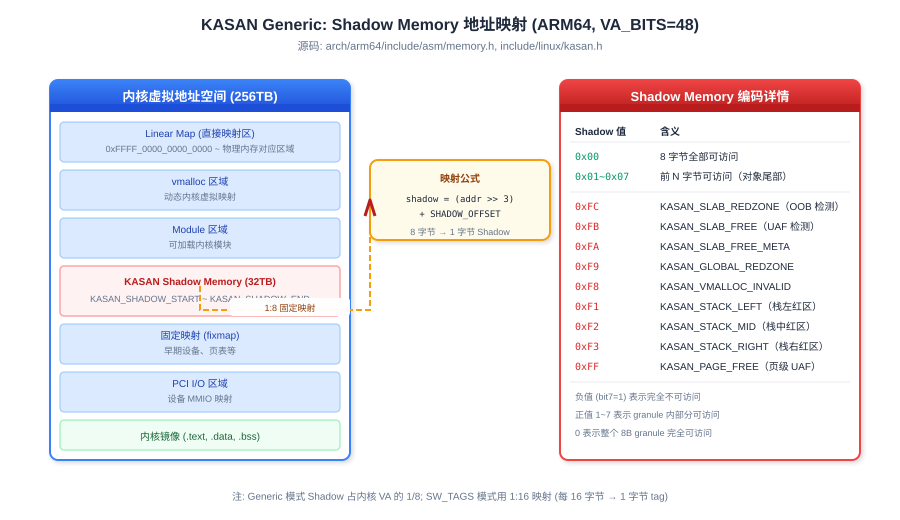
KASAN Generic 依赖 GCC/Clang 的 -fsanitize=kernel-address 编译选项，在每条 load/store 指令前自动插入检查代码。
插桩模式对比：
| Kconfig | 插桩方式 | 特点 |
|---|---|---|
CONFIG_KASAN_INLINE=y |
内联插桩 | 检查逻辑直接展开在调用处，更快但代码膨胀 |
CONFIG_KASAN_OUTLINE=y |
函数调用插桩 | 调用 asan_loadN/asan_storeN，更小但有函数调用开销 |
内联插桩伪代码（编译器生成）：
// 原始代码: int val = *ptr;
// 编译器插桩后:
{
// ---- 编译器自动插入的检查 ----
void *shadow = (void *)((unsigned long)ptr >> 3) + KASAN_SHADOW_OFFSET;
s8 shadow_val = *(s8 *)shadow;
if (shadow_val != 0) {
s8 last_byte = (unsigned long)ptr & 0x7; // 取低 3 位
if (last_byte >= shadow_val) {
__asan_report_load4(ptr); // 报告越界!
}
}
// ---- 原始 load 操作 ----
int val = *ptr;
}核心检查函数（mm/kasan/generic.c）：
static __always_inline bool memory_is_poisoned_1(const void *addr)
{
s8 shadow_value = *(s8 *)kasan_mem_to_shadow(addr);
if (unlikely(shadow_value)) {
// 地址在 8B granule 内的偏移
s8 last_accessible_byte = (unsigned long)addr & KASAN_GRANULE_MASK;
// 如果偏移 >= shadow_value → 访问的字节超出了可用范围
return unlikely(last_accessible_byte >= shadow_value);
}
return false; // shadow == 0 → 全 8 字节安全
}
// 多字节检查: 处理跨 granule 边界的情况
static __always_inline bool memory_is_poisoned_2_4_8(const void *addr, unsigned long size)
{
u8 *shadow_addr = (u8 *)kasan_mem_to_shadow(addr);
// 检查是否跨 8B 边界
if (unlikely((((unsigned long)addr + size - 1) & KASAN_GRANULE_MASK) < size - 1))
return *shadow_addr || memory_is_poisoned_1(addr + size - 1);
return memory_is_poisoned_1(addr + size - 1);
}【图 5.2-2】KASAN 编译器插桩检查流程
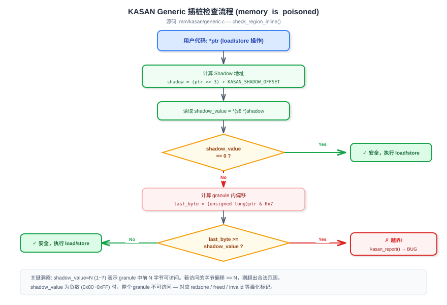
当 KASAN 与 SLUB 分配器集成时，每个 slab 对象在分配和释放时都会被精确地"染色"（poison/unpoison）。
核心染色函数（mm/kasan/common.c）：
// 分配时: 解毒对象体
void __kasan_unpoison_new_object(struct kmem_cache *cache, void *object)
{
kasan_unpoison(object, cache->object_size, false);
}
// 释放时: 毒化对象体 → 标记为 KASAN_SLAB_FREE
static inline void poison_slab_object(struct kmem_cache *cache, void *object, bool init)
{
object = kasan_reset_tag(object);
kasan_poison(object, round_up(cache->object_size, KASAN_GRANULE_SIZE),
KASAN_SLAB_FREE, init);
if (kasan_stack_collection_enabled())
kasan_save_free_info(cache, tagged_object); // 保存释放调用栈
}
// Slab 页初始化: 整页标记为 REDZONE
void __kasan_poison_slab(struct slab *slab)
{
kasan_poison(page_address(slab_page(slab)), page_size(slab_page(slab)),
KASAN_SLAB_REDZONE, false);
}【图 5.2-3】Slab 对象生命周期中的 Shadow 状态变化
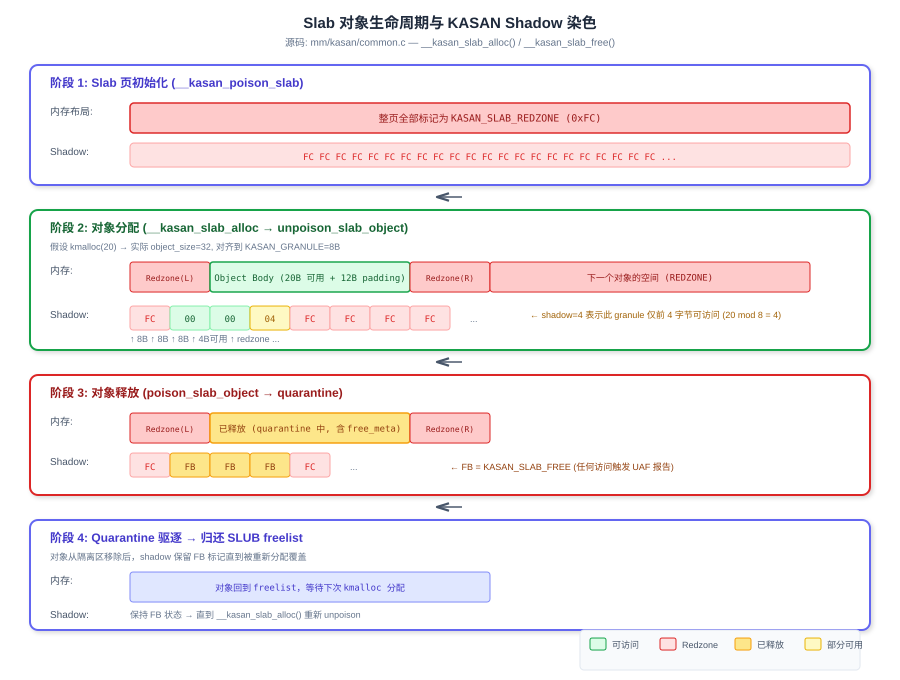
Quarantine 是 KASAN 检测 Use-After-Free 的关键增强。释放的对象不立即回到 SLUB freelist，而是进入隔离队列，极大地延长了 UAF 可被检测到的时间窗口。
数据结构（mm/kasan/quarantine.c）：
// Per-CPU 隔离队列（无锁快速入队）
static DEFINE_PER_CPU(struct qlist_head, cpu_quarantine);
// 全局轮转 FIFO 数组
static struct qlist_head global_quarantine[QUARANTINE_BATCHES];
static int quarantine_head;
static int quarantine_tail;
static unsigned long quarantine_size;
static DEFINE_RAW_SPINLOCK(quarantine_lock);
// 队列节点嵌入在对象的 free metadata 中
struct qlist_head {
struct qlist_node *head;
struct qlist_node *tail;
size_t bytes; // 队列中所有对象的总字节数
bool offline;
};
#define QUARANTINE_PERCPU_SIZE (1 << 20) // 1MB per-CPU 队列大小
#define QUARANTINE_FRACTION 32 // 隔离区最多占物理内存的 1/32工作流程：
kfree(obj)
→ __kasan_slab_free()
→ poison_slab_object() // Shadow 标记为 0xFB
→ kasan_save_free_info() // 保存释放调用栈
→ kasan_quarantine_put() // 入队 per-CPU quarantine
├── qlist_put(&cpu_quarantine, ...)
└── if (cpu_quarantine.bytes > QUARANTINE_PERCPU_SIZE)
→ quarantine_reduce() // 批量移入 global_quarantine
→ qlist_free_all() // 驱逐最旧 batch → 归还 SLUB隔离区大小控制：
| 参数 | 默认值 | 说明 |
|---|---|---|
QUARANTINE_PERCPU_SIZE |
1 MB | Per-CPU 队列满后触发 reduce |
QUARANTINE_FRACTION |
32 | 全局隔离区最大占物理内存 1/32 |
QUARANTINE_BATCHES |
max(1024, 4*NR_CPUS) | 全局 FIFO 批次数 |
隔离区对 UAF 检测的增强效果：
无 Quarantine:
kfree(A) → A 立即回到 freelist → kmalloc(B) 覆盖 A → A 的 UAF 检测窗口极短
有 Quarantine:
kfree(A) → A 在隔离区停留 (shadow=0xFB)
→ 此期间任何对 A 的 load/store 都会被检测!
→ 隔离区满 → A 最终回到 freelist
→ 检测窗口从 μs 级扩展到 ms~s 级SW_TAGS 是 ARM64 专有的概率性检测模式，利用 ARM64 的 TBI（Top Byte Ignore） 特性，在指针高字节中嵌入随机标签。
核心原理：
┌────────────────────────────────────────────────────────────────┐
│ ARM64 虚拟地址 (64 bit) │
│ [63:56] [55:0] │
│ TAG(8b) Virtual Address │
│ ┌────────┬───────────────────────────────────────────────┐ │
│ │ 0xA3 │ 0x00FFFF_8000_1234 │ │
│ └────────┴───────────────────────────────────────────────┘ │
│ ↑ │
│ └── 随机标签，分配时写入指针和 Shadow │
└────────────────────────────────────────────────────────────────┘Shadow Memory 编码变化（mm/kasan/sw_tags.c）：
| Generic | SW_TAGS | |
|---|---|---|
| Shadow 比例 | 1:8 (每 8B → 1 字节) | 1:16 (每 16B → 1 字节) |
| Shadow 值含义 | 可用字节数 / 毒化类型 | 对象标签值 (0x00~0xFE) |
| 检查方式 | 比较偏移与 shadow | 比较指针高字节 tag 与 shadow tag |
| 检测概率 | 100% 确定性 | 1 - 1/255 ≈ 99.6% |
检查逻辑（mm/kasan/sw_tags.c）：
bool kasan_check_range(const void *addr, size_t size, bool write, unsigned long ret_ip)
{
u8 tag = get_tag(addr); // 提取指针高字节
u8 *shadow_first, *shadow_last, *shadow;
void *untagged_addr;
if (tag == KASAN_TAG_KERNEL) // 0xFF = 内核默认 tag, 跳过检查
return true;
untagged_addr = kasan_reset_tag(addr); // 清除 tag 得到真实地址
shadow_first = (u8 *)kasan_mem_to_shadow(untagged_addr);
shadow_last = (u8 *)kasan_mem_to_shadow(untagged_addr + size - 1);
for (shadow = shadow_first; shadow <= shadow_last; shadow++) {
if (*shadow != tag) { // Tag 不匹配 → 越界或 UAF!
return !kasan_report(addr, size, write, ret_ip);
}
}
return true;
}标签生成（PRNG）：
u8 kasan_random_tag(void)
{
u32 state = this_cpu_read(prng_state);
state = 1664525 * state + 1013904223; // LCG PRNG
this_cpu_write(prng_state, state);
return (u8)(state % (KASAN_TAG_MAX + 1)); // 0x00~0xFE
}HW_TAGS 利用 ARMv8.5-A 引入的 MTE（Memory Tagging Extension） 硬件特性，将标签检查完全卸载到 CPU 硬件，实现接近零开销的内存安全检测。
【图 5.2-4】三种 KASAN 模式架构对比
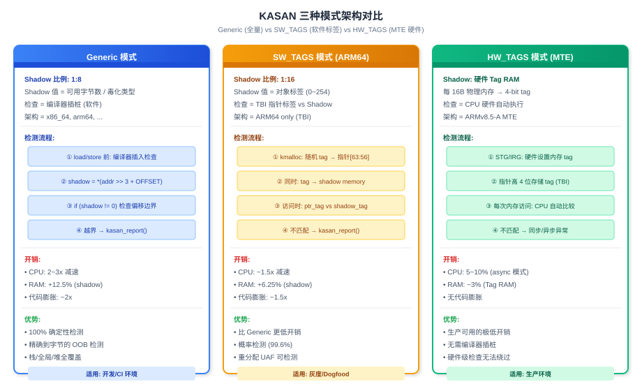
HW_TAGS 运行模式（mm/kasan/hw_tags.c）：
enum kasan_mode {
KASAN_MODE_SYNC, // 同步: 立即触发异常，精确定位 (开销较高)
KASAN_MODE_ASYNC, // 异步: 延迟报告，性能最优 (开销 ~5%)
KASAN_MODE_ASYMM, // 非对称: 读异步 + 写同步 (折中)
};| 模式 | Boot 参数 | 特点 | 典型开销 |
|---|---|---|---|
| SYNC | kasan.mode=sync |
异常时立即 trap，报告精确 PC | ~20% |
| ASYNC | kasan.mode=async |
异常存入 TFSR 寄存器，上下文切换时检查 | ~5% |
| ASYMM | kasan.mode=asymm |
写同步+读异步，兼顾精度与性能 | ~10% |
MTE 硬件操作指令：
IRG Xd, Xn ; Insert Random Tag — 为指针生成随机 4-bit tag
STG [Xn] ; Store Allocation Tag — 将指针 tag 写入物理 Tag RAM
LDG Xt, [Xn] ; Load Allocation Tag — 从物理 Tag RAM 读取 tag
ST2G [Xn] ; Store 2 Granule Tags — 批量设置 32 字节的 tag当检测到内存违规时，KASAN 输出包含丰富的调试信息：
典型 OOB 报告：
==================================================================
BUG: KASAN: slab-out-of-bounds in buggy_function+0x64/0x80
Write of size 4 at addr ffff0000c5a8b514 by task test/1234
CPU: 2 PID: 1234 Comm: test Not tainted 6.18.1 #1
Call trace:
dump_backtrace+0x0/0x1c8
show_stack+0x24/0x30
dump_stack_lvl+0x60/0x80
kasan_report+0xb8/0x100
__asan_store4+0x78/0x80
buggy_function+0x64/0x80 ← 越界写入的位置
test_module_init+0x20/0x40
Allocated by task 1234:
kasan_save_stack+0x28/0x50
__kasan_slab_alloc+0x6c/0x80
kmalloc_trace+0x44/0x60
buggy_function+0x30/0x80 ← 分配的位置
The buggy address belongs to the object at ffff0000c5a8b500
which belongs to the cache kmalloc-32 of size 32
The buggy address is located 20 bytes inside of
allocated 16-byte region [ffff0000c5a8b500, ffff0000c5a8b510)
==================================================================报告关键字段解读：
| 字段 | 含义 |
|---|---|
slab-out-of-bounds |
Bug 类型（OOB/UAF/double-free/invalid-free） |
Write of size 4 |
越界操作方向和大小 |
addr ffff0000c5a8b514 |
违规访问的地址 |
Allocated by task |
对象分配时的调用栈 |
Freed by task |
对象释放时的调用栈（UAF 时出现） |
cache kmalloc-32 of size 32 |
对象所属的 slab cache |
20 bytes inside of allocated 16-byte region |
越界偏移量 |
Shadow Memory 转储（报告末尾）：
Memory state around the buggy address:
ffff0000c5a8b400: fc fc fc fc fc fc fc fc fc fc fc fc fc fc fc fc
ffff0000c5a8b480: fc fc fc fc fc fc fc fc fc fc fc fc fc fc fc fc
>ffff0000c5a8b500: 00 00 fc fc fc fc fc fc fc fc fc fc fc fc fc fc
^^ ← shadow=FC (redzone)，但访问了此处!
ffff0000c5a8b580: fc fc fc fc fc fc fc fc fc fc fc fc fc fc fc fc| 子系统 | 集成函数 | 作用 |
|---|---|---|
| SLUB (slab 分配) | __kasan_slab_alloc() |
分配时解毒 + 设置 tag |
| SLUB (slab 释放) | __kasan_slab_free() |
释放时毒化 + 入 quarantine |
| Page Allocator | kasan_poison_pages() / kasan_unpoison_pages() |
页级生命周期追踪 |
| vmalloc | kasan_populate_vmalloc() |
vmalloc 区域动态映射 shadow |
| Stack | kasan_unpoison_task_stack() |
任务切换时解毒栈 |
| Module | __asan_register_globals() |
模块加载时注册全局变量 redzone |
| memcpy/memset | asan_memcpy() / asan_memset() |
批量操作边界检查 |
关键代码路径（mm/kasan/common.c）：
void * __must_check __kasan_slab_alloc(struct kmem_cache *cache,
void *object, gfp_t flags, bool init)
{
u8 tag;
void *tagged_object;
if (is_kfence_address(object))
return object;
tag = assign_tag(cache, object, false);
tagged_object = set_tag(object, tag);
// 解毒对象体 + 保存分配栈
unpoison_slab_object(cache, tagged_object, flags, init);
return tagged_object; // 返回带 tag 的指针
}1) 启用 KASAN + 增强信息：
# .config
CONFIG_KASAN=y
CONFIG_KASAN_GENERIC=y
CONFIG_KASAN_INLINE=y
CONFIG_KASAN_STACK=y
CONFIG_KASAN_VMALLOC=y
CONFIG_KASAN_EXTRA_INFO=y # 报告含 CPU + 时间戳
CONFIG_STACKDEPOT_MAX_FRAMES=642) 运行时参数调优：
# Boot cmdline
kasan_multi_shot # 不因第一个 bug 停止
kasan.fault=panic # 检测到错误时 panic (可选)
# HW_TAGS (ARM64 MTE)
kasan=on kasan.mode=asymm # 写同步+读异步，生产推荐
kasan.stacktrace=on # 保存分配/释放栈3) 定位 OOB 方向：
# 从报告中提取:
# "located 4 bytes to the right of allocated 32-byte region"
# → 右越界: 写入超出对象尾部
# "located 2 bytes to the left of allocated 32-byte region"
# → 左越界: 下标为负或前一个对象溢出4) 结合 addr2line 定位源码：
# 从 KASAN 报告中获取 PC
addr2line -e vmlinux -a 0xffff800080123456
# 或使用 scripts/decode_stacktrace.sh
./scripts/decode_stacktrace.sh vmlinux < kasan_report.txt5) 用 eBPF 追踪 KASAN 事件：
# 挂载 kasan_report tracepoint
bpftrace -e 'kprobe:kasan_report { printf("KASAN hit at %lx\n", arg0); }'KFENCE（Kernel Electric-Fence）是 Linux 内核中一种低开销、采样式的内存安全检测机制。与 KASAN 不同，KFENCE 适合在生产环境中长期启用，通过牺牲检测覆盖率换取接近零的性能损耗。
源码路径：mm/kfence/（core.c、kfence.h、report.c）
KFENCE 的核心设计是在内核启动时预分配一块固定大小的内存池，池中每个受保护对象被 Guard Page（保护页） 所环绕。任何越界访问都会触发硬件 Page Fault，从而被精确检测。
内存池大小（include/linux/kfence.h）：
#define KFENCE_POOL_SIZE ((CONFIG_KFENCE_NUM_OBJECTS + 1) * 2 * PAGE_SIZE)
// 默认 CONFIG_KFENCE_NUM_OBJECTS = 255
// 池大小 = (255 + 1) * 2 * 4096 = 2 MB池布局示意：
__kfence_pool (2MB 连续虚拟内存)
┌──────────────────────────────────────────────────────────────────────┐
│ Guard │ Guard │ Object │ Guard │ Object │ Guard │ ... │ Object │ Guard│
│ Page │ Page │ Page 0 │ Page │ Page 1 │ Page │ │ Page N │ Page │
│(保护) │(保护) │(可访问)│(保护) │(可访问)│(保护) │ │(可访问)│(保护)│
└──────────────────────────────────────────────────────────────────────┘
↑ 前导 2 页 每个对象占 2 页：1 Object Page + 1 Guard Page关键数据结构（mm/kfence/kfence.h）：
/* 对象状态机 */
enum kfence_object_state {
KFENCE_OBJECT_UNUSED, /* 未使用（池初始化后的初始状态） */
KFENCE_OBJECT_ALLOCATED, /* 已分配给用户 */
KFENCE_OBJECT_RCU_FREEING, /* 正在通过 RCU 延迟释放 */
KFENCE_OBJECT_FREED, /* 已释放（Guard Page 仍保护中） */
};
/* 分配/释放追踪信息 */
struct kfence_track {
pid_t pid; /* 操作进程 PID */
int cpu; /* 操作 CPU */
u64 ts_nsec; /* 操作时间戳 (local_clock) */
int num_stack_entries;
unsigned long stack_entries[KFENCE_STACK_DEPTH]; /* 64 帧深度 */
};
/* 每个受保护对象的元数据 */
struct kfence_metadata {
struct list_head list; /* Freelist 链表节点 */
struct rcu_head rcu_head; /* RCU 延迟释放头 */
raw_spinlock_t lock; /* 并发保护锁 */
enum kfence_object_state state; /* 当前状态 */
unsigned long addr; /* 对象在 Object Page 中的实际地址 */
size_t size; /* 原始分配大小 */
struct kmem_cache *cache; /* 所属 slab cache */
unsigned long unprotected_page; /* OOB 时被 unprotect 的页 */
struct kfence_track alloc_track; /* 分配调用栈 */
struct kfence_track free_track; /* 释放调用栈 */
u32 alloc_stack_hash; /* Bloom Filter 用的栈哈希 */
};地址到元数据索引的映射（mm/kfence/kfence.h）：
static inline struct kfence_metadata *addr_to_metadata(unsigned long addr)
{
long index;
if (!is_kfence_address((void *)addr))
return NULL;
// 每 2 页对应一个对象，前 2 页是保护页，故 index 从 0 开始
index = (addr - (unsigned long)__kfence_pool) / (PAGE_SIZE * 2) - 1;
if (index < 0 || index >= CONFIG_KFENCE_NUM_OBJECTS)
return NULL;
return &kfence_metadata[index];
}随机左/右对齐：
分配对象时，KFENCE 随机选择将对象放置在 Object Page 的左端或右端，以检测不同方向的越界：
static void *kfence_guarded_alloc(struct kmem_cache *cache, size_t size, ...)
{
const bool random_right_allocate = get_random_u32_below(2);
meta->addr = metadata_to_pageaddr(meta);
if (random_right_allocate) {
/* 右对齐：对象紧贴右侧 Guard Page → 检测右越界 */
meta->addr += PAGE_SIZE - size;
meta->addr = ALIGN_DOWN(meta->addr, cache->align);
}
/* 左对齐（默认）：对象紧贴左侧 Guard Page → 检测左越界 */
...
}对齐策略的检测效果：
左对齐 (检测右越界 OOB-right):
┌────────────────┬──────────────────────┬────────────────┐
│ Guard Page │ [Object][ Canary ] │ Guard Page │
│ (PROTECTED) │ ←size→ │ (PROTECTED) │
└────────────────┴──────────────────────┴────────────────┘
↑ 右越界 → 写入 canary → 释放时检测
↑ 大幅越界 → Page Fault!
右对齐 (检测左越界 OOB-left):
┌────────────────┬──────────────────────┬────────────────┐
│ Guard Page │ [ Canary ][Object] │ Guard Page │
│ (PROTECTED) │ ←size→ │ (PROTECTED) │
└────────────────┴──────────────────────┴────────────────┘
↑ 大幅左越界 → Page Fault!
↑ 小幅左越界 → 写入 canary → 释放时检测Canary 字节模式（mm/kfence/kfence.h）：
/* Canary 值依赖地址低 3 位，增加随机性 */
#define KFENCE_CANARY_PATTERN_U8(addr) ((u8)0xaa ^ (u8)((unsigned long)(addr) & 0x7))
/* 8 字节连续 Canary，用于快速 64 位比较 */
#define KFENCE_CANARY_PATTERN_U64 \
((u64)0xaaaaaaaaaaaaaaaa ^ (u64)(le64_to_cpu(0x0706050403020100)))
// 实际值: 0xaa^0x00, 0xaa^0x01, 0xaa^0x02, ..., 0xaa^0x07
// = 0xaa, 0xab, 0xa8, 0xa9, 0xae, 0xaf, 0xac, 0xadCanary 设置与校验（mm/kfence/core.c）：
static inline void set_canary(const struct kfence_metadata *meta)
{
const unsigned long pageaddr = ALIGN_DOWN(meta->addr, PAGE_SIZE);
unsigned long addr = pageaddr;
/* 对象左侧填充 canary（地址低于 meta->addr 的区域） */
for (; addr < meta->addr; addr += sizeof(u64))
*((u64 *)addr) = KFENCE_CANARY_PATTERN_U64;
/* 对象右侧填充 canary（地址高于 meta->addr + size 的区域） */
addr = ALIGN_DOWN(meta->addr + meta->size, sizeof(u64));
for (; addr - pageaddr < PAGE_SIZE; addr += sizeof(u64))
*((u64 *)addr) = KFENCE_CANARY_PATTERN_U64;
}
static void check_canary(const struct kfence_metadata *meta)
{
const unsigned long pageaddr = ALIGN_DOWN(meta->addr, PAGE_SIZE);
unsigned long addr = pageaddr;
/* 先按 8 字节快速扫描左侧 canary */
for (; meta->addr - addr >= sizeof(u64); addr += sizeof(u64)) {
if (unlikely(*((u64 *)addr) != KFENCE_CANARY_PATTERN_U64))
break; // 发现损坏，切换为逐字节检查
}
/* 逐字节精确定位损坏位置 */
for (; addr < meta->addr; addr++) {
if (unlikely(!check_canary_byte((u8 *)addr)))
break; // 报告 KFENCE_ERROR_CORRUPTION
}
/* 右侧 canary 同理 ... */
}两层检测互补：
| 越界程度 | 检测机制 | 检测时机 | 精度 |
|---|---|---|---|
| 小幅越界 (1~几十字节) | Canary 校验 | 对象释放时 (kfence_guarded_free) |
精确到字节 |
| 大幅越界 (跨页) | Guard Page Fault | 访问发生时（同步） | 精确到指令 |
| Use-After-Free | Object Page 保护 | 访问发生时（同步） | 精确到指令 |
KFENCE 的低开销源于其采样设计：不是每次 kmalloc() 都使用保护分配，而是以固定时间间隔打开"分配门"，每个周期仅捕获一次（或少量 burst）分配。
采样定时器（mm/kfence/core.c）：
static struct delayed_work kfence_timer;
static void toggle_allocation_gate(struct work_struct *work)
{
if (!READ_ONCE(kfence_enabled))
return;
/* 设置 gate = -burst，允许 (1 + burst) 次分配通过 */
atomic_set(&kfence_allocation_gate, -kfence_burst);
#ifdef CONFIG_KFENCE_STATIC_KEYS
/* 启用 static_key → hot path 中的 if 分支生效 */
static_branch_enable(&kfence_allocation_key);
/* 等待一次分配完成（gate 从负变正） */
wait_event_idle(allocation_wait, atomic_read(&kfence_allocation_gate) > 0);
/* 关闭 static_key → hot path 零开销 */
static_branch_disable(&kfence_allocation_key);
#endif
/* 重新排队，下一个采样周期 */
queue_delayed_work(system_unbound_wq, &kfence_timer,
msecs_to_jiffies(kfence_sample_interval));
}Hot Path 零开销设计：
/* include/linux/kfence.h — slab 分配器中的检查 */
static __always_inline void *kfence_alloc(struct kmem_cache *s, size_t size, gfp_t flags)
{
#ifdef CONFIG_KFENCE_STATIC_KEYS
if (!static_branch_unlikely(&kfence_allocation_key))
return NULL; // ← 99.99% 时间走这里，static key = NOP
#else
if (!static_branch_likely(&kfence_allocation_key))
return NULL;
#endif
return __kfence_alloc(s, size, flags);
}__kfence_alloc 分配门控制：
void *__kfence_alloc(struct kmem_cache *s, size_t size, gfp_t flags)
{
/* 大小限制：KFENCE 只能保护 ≤ PAGE_SIZE 的对象 */
if (size > PAGE_SIZE)
return NULL;
/* 不支持 DMA zone 分配 */
if ((flags & GFP_ZONEMASK) || (s->flags & (SLAB_CACHE_DMA | SLAB_CACHE_DMA32)))
return NULL;
/* 原子递增 gate，只有第一个到达的分配能通过 */
allocation_gate = atomic_inc_return(&kfence_allocation_gate);
if (allocation_gate > 1)
return NULL; // 本周期已有分配通过
/* 覆盖率检查（Bloom Filter） */
alloc_stack_hash = get_alloc_stack_hash(stack_entries, num_stack_entries);
if (should_skip_covered() && alloc_covered_contains(alloc_stack_hash))
return NULL; // 该分配路径已被覆盖，跳过
return kfence_guarded_alloc(s, size, flags, ...);
}Counting Bloom Filter — 覆盖率优化：
当 KFENCE 池使用率超过阈值（默认 75%）时，已经被保护过的分配路径会被跳过，优先保护新路径，最大化 bug 检测覆盖率。
/* Bloom Filter 参数 */
#define ALLOC_COVERED_HNUM 2 // 2 个哈希函数
#define ALLOC_COVERED_ORDER (const_ilog2(CONFIG_KFENCE_NUM_OBJECTS) + 2) // 位数
#define ALLOC_COVERED_SIZE (1 << ALLOC_COVERED_ORDER) // 数组大小
#define ALLOC_COVERED_MASK (ALLOC_COVERED_SIZE - 1)
static atomic_t alloc_covered[ALLOC_COVERED_SIZE]; // Counting 数组
/* 计算分配栈哈希（只取前 8 帧，过滤 IRQ 栈） */
static u32 get_alloc_stack_hash(unsigned long *stack_entries, size_t num_entries)
{
num_entries = min(num_entries, UNIQUE_ALLOC_STACK_DEPTH); // 8
num_entries = filter_irq_stacks(stack_entries, num_entries);
return jhash(stack_entries, num_entries * sizeof(stack_entries[0]), stack_hash_seed);
}
/* 分配时：在 Bloom Filter 中增加计数 */
static void alloc_covered_add(u32 alloc_stack_hash, int val)
{
for (int i = 0; i < ALLOC_COVERED_HNUM; i++) {
atomic_add(val, &alloc_covered[alloc_stack_hash & ALLOC_COVERED_MASK]);
alloc_stack_hash = ALLOC_COVERED_HNEXT(alloc_stack_hash);
}
}
/* 查询时：所有哈希位置计数都 > 0 则认为已覆盖 */
static bool alloc_covered_contains(u32 alloc_stack_hash)
{
for (int i = 0; i < ALLOC_COVERED_HNUM; i++) {
if (!atomic_read(&alloc_covered[alloc_stack_hash & ALLOC_COVERED_MASK]))
return false;
alloc_stack_hash = ALLOC_COVERED_HNEXT(alloc_stack_hash);
}
return true;
}采样参数汇总：
| 参数 | 默认值 | 含义 | 运行时修改 |
|---|---|---|---|
CONFIG_KFENCE_SAMPLE_INTERVAL |
100 ms | 采样周期（每 100ms 尝试捕获一次分配） | kfence.sample_interval |
CONFIG_KFENCE_NUM_OBJECTS |
255 | 池中最大受保护对象数 | 编译时确定 |
kfence_burst |
0 | 每周期额外允许通过的分配数 | kfence.burst |
kfence_skip_covered_thresh |
75 | 池使用率超此 % 后启用 Bloom Filter | kfence.skip_covered_thresh |
KFENCE 的核心检测依赖硬件 Page Fault：当访问被保护的 Guard Page 或已释放对象的 Object Page 时，MMU 触发异常，内核 Page Fault Handler 调用 kfence_handle_page_fault() 进行判定。
页保护/取消保护（mm/kfence/core.c）：
static bool kfence_protect(unsigned long addr)
{
return !KFENCE_WARN_ON(!kfence_protect_page(ALIGN_DOWN(addr, PAGE_SIZE), true));
// → 调用体系结构相关代码，设置 PTE 为不可访问
}
static bool kfence_unprotect(unsigned long addr)
{
return !KFENCE_WARN_ON(!kfence_protect_page(ALIGN_DOWN(addr, PAGE_SIZE), false));
// → 恢复 PTE 可访问
}Page Fault 处理流程（mm/kfence/core.c）：
bool kfence_handle_page_fault(unsigned long addr, bool is_write, struct pt_regs *regs)
{
const int page_index = (addr - (unsigned long)__kfence_pool) / PAGE_SIZE;
struct kfence_metadata *to_report = NULL;
enum kfence_error_type error_type;
if (!is_kfence_address((void *)addr))
return false; // 不在 KFENCE 池中，不处理
if (!READ_ONCE(kfence_enabled))
return kfence_unprotect(addr); // 运行时禁用了，放行
atomic_long_inc(&counters[KFENCE_COUNTER_BUGS]);
if (page_index % 2) {
/* ===== 奇数页 = Guard Page (Redzone) → OOB ===== */
struct kfence_metadata *meta;
// 检查左侧对象（可能右越界到此）
meta = addr_to_metadata(addr - PAGE_SIZE);
if (meta && kfence_obj_allocated(meta))
to_report = meta;
// 检查右侧对象（可能左越界到此）
meta = addr_to_metadata(addr + PAGE_SIZE);
if (meta && kfence_obj_allocated(meta)) {
// 取距离更近的对象报告
if (!to_report || distance > meta->addr - addr)
to_report = meta;
}
error_type = KFENCE_ERROR_OOB;
} else {
/* ===== 偶数页 = Object Page (已释放) → UAF ===== */
to_report = addr_to_metadata(addr);
error_type = KFENCE_ERROR_UAF;
}
if (to_report)
kfence_report_error(addr, is_write, regs, to_report, error_type);
else
kfence_report_error(addr, is_write, regs, NULL, KFENCE_ERROR_INVALID);
return kfence_unprotect(addr); // 报告后 unprotect，让程序继续运行
}对象释放流程与 UAF 保护：
static void kfence_guarded_free(void *addr, struct kfence_metadata *meta, bool zombie)
{
raw_spin_lock_irqsave(&meta->lock, flags);
/* 1. 检测 Double-Free / Invalid-Free */
if (!kfence_obj_allocated(meta) || meta->addr != (unsigned long)addr) {
kfence_report_error(addr, false, NULL, meta, KFENCE_ERROR_INVALID_FREE);
return;
}
/* 2. 恢复之前因 OOB 而 unprotect 的页 */
if (meta->unprotected_page) {
memzero_explicit((void *)ALIGN_DOWN(meta->unprotected_page, PAGE_SIZE), PAGE_SIZE);
kfence_protect(meta->unprotected_page);
meta->unprotected_page = 0;
}
/* 3. 更新状态为 FREED，记录释放调用栈 */
metadata_update_state(meta, KFENCE_OBJECT_FREED, NULL, 0);
raw_spin_unlock_irqrestore(&meta->lock, flags);
/* 4. 校验 Canary 字节（检测释放前的小幅 OOB） */
check_canary(meta);
/* 5. 保护 Object Page → 后续 UAF 访问触发 Page Fault */
kfence_protect((unsigned long)addr);
/* 6. 归还到 freelist */
list_add_tail(&meta->list, &kfence_freelist);
}KFENCE 错误类型与典型报告：
| 错误类型 | 触发条件 | 报告标识 |
|---|---|---|
KFENCE_ERROR_OOB |
访问 Guard Page（奇数页） | BUG: KFENCE: out-of-bounds |
KFENCE_ERROR_UAF |
访问已释放对象的 Object Page | BUG: KFENCE: use-after-free |
KFENCE_ERROR_CORRUPTION |
释放时 Canary 校验失败 | BUG: KFENCE: memory corruption |
KFENCE_ERROR_INVALID_FREE |
对未分配/已释放对象再次释放 | BUG: KFENCE: invalid free |
典型 OOB 报告：
==================================================================
BUG: KFENCE: out-of-bounds read in test_oob_read+0x30/0x48
Out-of-bounds read at 0xffff0000c6d86000 (1 byte to the right of
kfence-#72):
test_oob_read+0x30/0x48
...
kfence-#72: 0xffff0000c6d85fc0-0xffff0000c6d85fff, size=64, cache=kmalloc-64
Allocated by task 1234 on cpu 2 at 123.456000s:
kfence_guarded_alloc+0xd0/0x1c0
__kfence_alloc+0x148/0x180
__kmalloc+0x88/0xc0
test_alloc+0x24/0x40
...
CPU: 2 PID: 1234 Comm: test Not tainted 6.18.1 #1
==================================================================KFENCE 通过在 SLUB 快速路径中嵌入极低开销的检查，实现采样拦截：
分配路径集成（SLUB __slab_alloc 路径）：
kmalloc(size, GFP_KERNEL)
→ __kmem_cache_alloc_node()
→ kfence_alloc(s, size, flags) ← Static Key 控制
├── static_branch_unlikely = false → return NULL (99.99% 路径)
└── static_branch_unlikely = true → __kfence_alloc()
├── size > PAGE_SIZE? → return NULL
├── atomic_inc(gate) > 1? → return NULL (已有分配通过)
├── bloom_filter 已覆盖? → return NULL
└── kfence_guarded_alloc() → 返回受保护对象
→ 正常 SLUB 分配路径（kfence_alloc 返回 NULL 时）释放路径集成：
kfree(ptr)
→ __kmem_cache_free()
→ is_kfence_address(ptr)?
├── true → __kfence_free(ptr)
│ → kfence_guarded_free()
└── false → 正常 SLUB 释放路径is_kfence_address 快速检查（include/linux/kfence.h）：
static __always_inline bool is_kfence_address(const void *addr)
{
// 单次比较 + AND：检查地址是否在 [__kfence_pool, __kfence_pool + POOL_SIZE) 范围
return unlikely((unsigned long)((char *)addr - __kfence_pool) < KFENCE_POOL_SIZE
&& __kfence_pool);
}Early Boot 初始化流程：
start_kernel()
→ mm_core_init()
→ kfence_alloc_pool_and_metadata()
→ memblock_alloc(__kfence_pool, KFENCE_POOL_SIZE, PAGE_SIZE)
→ memblock_alloc(kfence_metadata_init, KFENCE_METADATA_SIZE)
→ kfence_init()
→ kfence_init_pool_early()
→ kfence_init_pool()
→ 设置所有 Object Page 为 PGTY_slab
→ 保护前导 2 页（Guard Pages）
→ 循环 CONFIG_KFENCE_NUM_OBJECTS 次:
初始化 metadata → 加入 freelist → 保护右侧 Guard Page
→ smp_store_release(&kfence_metadata, kfence_metadata_init)
→ 启动采样定时器 queue_delayed_work(kfence_timer)池内页面索引规则：
页面索引: 0 1 2 3 4 5 6 7 ...
类型: Guard Guard Obj Guard Obj Guard Obj Guard ...
对象: N/A N/A #0 (右) #1 (右) #2 (右) ...
对象 i 的 Object Page 索引 = (i + 1) * 2
对象 i 的右侧 Guard Page 索引 = (i + 1) * 2 + 11) 启用 KFENCE（生产推荐配置）：
# .config
CONFIG_KFENCE=y
CONFIG_KFENCE_SAMPLE_INTERVAL=100 # 100ms 采样
CONFIG_KFENCE_NUM_OBJECTS=255 # 255 个保护槽
CONFIG_KFENCE_STATIC_KEYS=y # 零开销 hot path2) Boot 参数与运行时调优：
# Boot cmdline
kfence.sample_interval=50 # 更激进的采样（测试环境）
# 运行时修改
echo 200 > /sys/module/kfence/parameters/sample_interval # 放宽采样
echo 5 > /sys/module/kfence/parameters/burst # 每周期多捕获 5 次
echo 0 > /sys/module/kfence/parameters/sample_interval # 关闭 KFENCE3) 查看 KFENCE 统计信息：
cat /sys/kernel/debug/kfence/stats
# currently allocated: 128
# total allocations: 45230
# total frees: 45102
# zombie allocations: 0
# total bugs: 2
# skipped allocations (incompatible): 1523
# skipped allocations (capacity): 89012
# skipped allocations (covered): 345214) KFENCE vs KASAN 选择策略：
| 场景 | 推荐工具 | 理由 |
|---|---|---|
| 开发/CI 测试 | KASAN Generic | 100% 覆盖率，能找到所有 bug |
| 生产环境长期监控 | KFENCE | 接近零开销，概率发现问题 |
| ARM64 生产 + 性能敏感 | KASAN HW_TAGS (async) | 硬件加速，~5% 开销 |
| 特定模块调试 | KASAN + 缩小范围编译 | 精确定位特定模块的内存错误 |
5) 提高 KFENCE 检测概率：
# 缩短采样间隔 + 增加 burst → 更多分配被保护
echo 20 > /sys/module/kfence/parameters/sample_interval
echo 10 > /sys/module/kfence/parameters/burst
# 增加池大小（需重新编译）
CONFIG_KFENCE_NUM_OBJECTS=1023 # 约 8MB 池
# 降低覆盖率阈值 → 更早启用 Bloom Filter 优化
echo 50 > /sys/module/kfence/parameters/skip_covered_threshSLUB Debug 是 Linux 内核 SLUB 分配器内建的内存错误检测机制。与 KASAN 的编译器插桩和 KFENCE 的 Guard Page 不同，SLUB Debug 在分配器内部通过模式填充（Pattern Filling）+ 分配/释放时校验来检测越界写、释放后写、Double-Free 等问题。其最大优势是无需编译器支持，仅通过 Boot 参数即可动态开启。
源码路径：mm/slub.c（核心检测逻辑）、include/linux/poison.h（毒化模式值定义）
SLUB Debug 的检测能力源于精心设计的对象内存布局。每个 slab 对象被多层哨兵区域包围，任何越界写入都会破坏这些区域中的已知模式。
对象完整布局（mm/slub.c 注释，启用 SLAB_RED_ZONE | SLAB_POISON | SLAB_STORE_USER）：
s->red_left_pad s->object_size s->inuse s->size
│ │ │ │
┌────────────────────┼─────────────────────────┼──────────────────────────┼──────────────────────────────────┼──────────┐
│ Left Redzone │ Object Body │ Right Redzone │ Metadata Area │ Padding │
│ (red_left_pad B) │ (object_size B) │ (inuse-object_size B) │ │ │
│ │ │ │ ┌──────────┬──────────┬────────┐ │ │
│ 填充 0xbb(空闲) │ 用户数据 / 0x6b(释放后) │ 填充 0xbb(空闲) │ │ FP(可选) │ track×2 │orig_sz │ │ 0x5a │
│ 0xcc(使用中) │ │ 0xcc(使用中) │ │ │ alloc+free│ │ │ │
└────────────────────┴─────────────────────────┴──────────────────────────┴─┴──────────┴──────────┴────────┘─┴──────────┘
检测左越界写 分配中使用/释放后检测 检测右越界写 freelist ptr + 调用栈追踪 对齐填充检测毒化模式值定义（include/linux/poison.h）：
/* Red Zone 填充值 */
#define SLUB_RED_INACTIVE 0xbb /* 对象空闲时 Red Zone 的填充值 */
#define SLUB_RED_ACTIVE 0xcc /* 对象使用中 Red Zone 的填充值 */
/* Poison 填充值 */
#define POISON_INUSE 0x5a /* 未初始化/padding 区域填充 */
#define POISON_FREE 0x6b /* 对象释放后填充（前 N-1 字节） */
#define POISON_END 0xa5 /* 对象释放后最后 1 字节标记 */Red Zone 初始化流程（init_object() — mm/slub.c）：
static void init_object(struct kmem_cache *s, void *object, u8 val)
{
u8 *p = kasan_reset_tag(object);
unsigned int poison_size = s->object_size;
if (s->flags & SLAB_RED_ZONE) {
// 1) 填充左 Red Zone: object 前 red_left_pad 字节
memset_no_sanitize_memory(p - s->red_left_pad, val, s->red_left_pad);
if (slub_debug_orig_size(s) && val == SLUB_RED_ACTIVE) {
// kmalloc Redzone: 只 poison 用户请求大小，其余作为精确红区
poison_size = get_orig_size(s, object);
}
}
if (s->flags & __OBJECT_POISON) {
// 2) 填充对象体: 前 N-1 字节 = 0x6b, 最后 1 字节 = 0xa5
memset_no_sanitize_memory(p, POISON_FREE, poison_size - 1);
memset_no_sanitize_memory(p + poison_size - 1, POISON_END, 1);
}
if (s->flags & SLAB_RED_ZONE)
// 3) 填充右 Red Zone: object_size 到 inuse 之间
memset_no_sanitize_memory(p + poison_size, val, s->inuse - poison_size);
}kmalloc Redzone — 精确请求大小保护：
当用户调用 kmalloc(50) 时，SLUB 分配 kmalloc-64 cache 的 64 字节对象。SLUB Debug 通过 set_orig_size() 记录原始请求大小 50，并将 [50, 64) 这 14 字节也标记为 Red Zone（SLUB_RED_ACTIVE=0xcc），从而检测 50~63 字节偏移处的越界写：
static inline void set_orig_size(struct kmem_cache *s,
void *object, unsigned int orig_size)
{
void *p = kasan_reset_tag(object);
// orig_size 存储在 metadata 区: info_end + 2*sizeof(track) 之后
p += get_info_end(s);
p += sizeof(struct track) * 2;
*(unsigned int *)p = orig_size;
}kmalloc(50) → 分配 kmalloc-64 (object_size=64):
┌─────────────────────────────────────────────────────────────────┐
│ 用户请求 50 字节 │ kmalloc Redzone (14字节) │
│ [0 ................... 49] │ [50 ............... 63] │
│ 正常使用区域 │ 填充 0xcc → 检测 50~63 越界 │
└─────────────────────────────────────────────────────────────────┘
orig_size=50 object_size - orig_size【图 5.4-1】SLUB Debug 对象内存布局与毒化模式
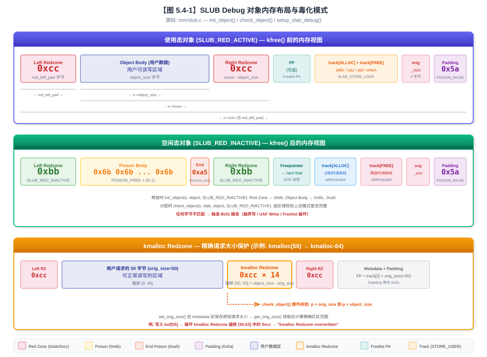
Slab 页 Padding 检查（slab_pad_check()）：
slab 页末尾可能存在因对齐产生的 padding 区域（无法容纳完整对象的剩余空间），这些区域在 setup_slab_debug() 中被填充为 POISON_INUSE(0x5a)。slab_pad_check() 在每次 check_slab() 时验证这些字节是否被破坏，从而检测超出最后一个对象的溢出：
void setup_slab_debug(struct kmem_cache *s, struct slab *slab, void *addr)
{
// 新 slab 页分配时，整页填充 0x5a
memset(kasan_reset_tag(addr), POISON_INUSE, slab_size(slab));
}
static void slab_pad_check(struct kmem_cache *s, struct slab *slab)
{
int remainder = slab_size(slab) % s->size;
if (!remainder) return; // 恰好整除，无 padding
u8 *pad = slab_address(slab) + slab_size(slab) - remainder;
u8 *fault = memchr_inv(pad, POISON_INUSE, remainder);
if (fault)
slab_bug(s, "Padding overwritten. 0x%p-0x%p @offset=%tu", ...);
}Poison 模式是 SLUB Debug 检测 Use-After-Free Write 的核心机制。对象释放时用已知模式填充对象体，下次分配时校验模式是否完整。
Poison 编码方案：
对象释放后的内存状态:
┌──────────────────────────────────────────────────────────────────────┐
│ 0x6b 0x6b 0x6b 0x6b ... 0x6b 0x6b 0xa5 │
│ ←─── POISON_FREE (object_size - 1 字节) ────→ ↑ │
│ POISON_END (最后 1 字节) │
└──────────────────────────────────────────────────────────────────────┘
为什么最后一字节用不同的值?
→ 0xa5 作为边界哨兵，帮助区分"部分覆写"与"完全覆写"
→ 如果 POISON_END 完好但 POISON_FREE 被破坏 → 部分 UAF 写入
→ 如果 POISON_END 也被破坏 → 可能是大范围覆写或从相邻对象溢出Poison 检查在两个时机触发：
时机 1: 分配时 (alloc_debug_processing)
──────────────────────────────────────────
kmalloc(size, GFP_KERNEL)
→ slab_alloc_node()
→ alloc_debug_processing()
→ alloc_consistency_checks()
→ check_object(s, slab, object, SLUB_RED_INACTIVE) ← val=0xbb
// 此时检查:
// ① 对象体前 N-1 字节是否全为 0x6b (POISON_FREE)
// ② 最后 1 字节是否为 0xa5 (POISON_END)
// 不匹配 → "Poison" / "End Poison" 报告 → UAF Write!
时机 2: 释放时 (free_debug_processing)
──────────────────────────────────────────
kfree(ptr)
→ slab_free()
→ free_debug_processing()
→ free_consistency_checks()
→ check_object(s, slab, object, SLUB_RED_ACTIVE) ← val=0xcc
// 此时检查红区是否在使用期间被破坏
→ init_object(s, object, SLUB_RED_INACTIVE)
// 重新填充 Poison (0x6b...0xa5) + Red Zone (0xbb)Poison 模式的局限性：
| 可检测 | 不可检测 |
|---|---|
| 释放后写入（UAF Write）— 下次分配时发现 | 释放后读取（UAF Read）— 读不改变 Poison |
| 缓冲区溢出到相邻对象 — 破坏 Red Zone | 同一对象内的越界（未超出 object_size） |
| 写入未分配的 slab padding | 精确跳跃式写入（不破坏哨兵位置） |
与 KASAN Poison 的区别：
| SLUB Debug Poison | KASAN Poison | |
|---|---|---|
| 检测时机 | 分配/释放时（延迟检测） | 每次 load/store 时（立即检测） |
| UAF Read 检测 | 不能 | 能 |
| 性能开销 | 低（仅在 alloc/free 路径） | 高（每条内存访问都检查） |
| 覆盖率 | 仅在下次分配时发现 | 100% 实时 |
check_object() 是 SLUB Debug 的核心校验函数，在分配和释放路径上调用，负责验证对象所有哨兵区域的完整性。
完整校验流程（mm/slub.c）：
static int check_object(struct kmem_cache *s, struct slab *slab,
void *object, u8 val)
{
u8 *p = object;
u8 *endobject = object + s->object_size;
unsigned int orig_size, kasan_meta_size;
int ret = 1;
// ── 步骤 1: Red Zone 校验 ──
if (s->flags & SLAB_RED_ZONE) {
// 1a) 左红区: object 前 red_left_pad 字节 == val (0xbb 或 0xcc)
if (!check_bytes_and_report(s, slab, object, "Left Redzone",
object - s->red_left_pad, val, s->red_left_pad, ret))
ret = 0;
// 1b) 右红区: object_size 到 inuse 之间 == val
if (!check_bytes_and_report(s, slab, object, "Right Redzone",
endobject, val, s->inuse - s->object_size, ret))
ret = 0;
// 1c) kmalloc Redzone: [orig_size, object_size) 区间 == 0xcc (仅 ACTIVE)
if (slub_debug_orig_size(s) && val == SLUB_RED_ACTIVE) {
orig_size = get_orig_size(s, object);
if (s->object_size > orig_size &&
!check_bytes_and_report(s, slab, object,
"kmalloc Redzone", p + orig_size,
val, s->object_size - orig_size, ret))
ret = 0;
}
}
// ── 无红区时: Alignment padding 检查 ──
else if ((s->flags & SLAB_POISON) && s->object_size < s->inuse) {
if (!check_bytes_and_report(s, slab, p, "Alignment padding",
endobject, POISON_INUSE, s->inuse - s->object_size, ret))
ret = 0;
}
// ── 步骤 2: Poison 校验 (仅释放态对象) ──
if (s->flags & SLAB_POISON) {
if (val != SLUB_RED_ACTIVE && (s->flags & __OBJECT_POISON)) {
kasan_meta_size = kasan_metadata_size(s, true);
// 2a) 对象体: [kasan_meta_size, object_size-1) == 0x6b
if (kasan_meta_size < s->object_size - 1 &&
!check_bytes_and_report(s, slab, p, "Poison",
p + kasan_meta_size, POISON_FREE,
s->object_size - kasan_meta_size - 1, ret))
ret = 0;
// 2b) 最后一字节: object_size-1 == 0xa5
if (kasan_meta_size < s->object_size &&
!check_bytes_and_report(s, slab, p, "End Poison",
p + s->object_size - 1, POISON_END, 1, ret))
ret = 0;
}
// 2c) Metadata padding: info_end 到 size 之间 == 0x5a
if (!check_pad_bytes(s, slab, p))
ret = 0;
}
// ── 步骤 3: Freelist 指针校验 ──
if ((freeptr_outside_object(s) || val != SLUB_RED_ACTIVE) &&
!check_valid_pointer(s, slab, get_freepointer(s, p))) {
object_err(s, slab, p, "Freepointer corrupt");
set_freepointer(s, p, NULL); // 截断 freelist 防止进一步损坏
ret = 0;
}
return ret;
}【图 5.4-2】check_object() 校验流程 — 分步决策图
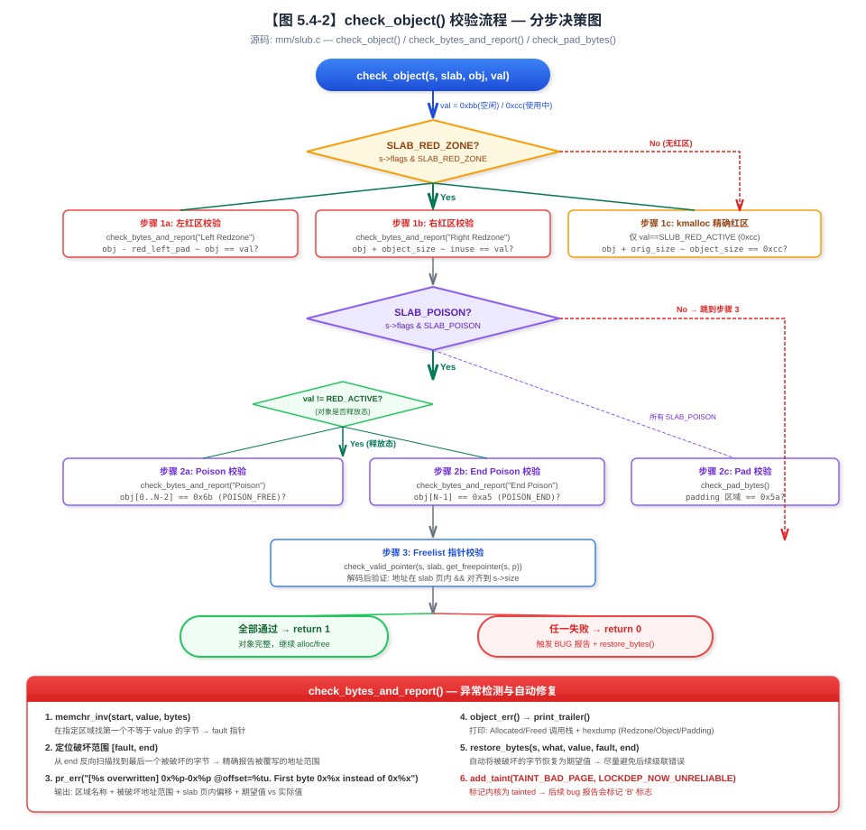
check_bytes_and_report() — 模式比较与报告：
static int check_bytes_and_report(struct kmem_cache *s, struct slab *slab,
u8 *object, const char *what, u8 *start,
unsigned int value, unsigned int bytes, bool slab_obj_print)
{
// memchr_inv: 找到第一个不等于 value 的字节
u8 *fault = memchr_inv(kasan_reset_tag(start), value, bytes);
if (!fault)
return 1; // 全部匹配 → OK
// 找到被破坏区域的精确范围
u8 *end = start + bytes;
while (end > fault && end[-1] == value)
end--;
pr_err("[%s overwritten] 0x%p-0x%p @offset=%tu. "
"First byte 0x%x instead of 0x%x\n",
what, fault, end - 1, fault - slab_address(slab),
fault[0], value);
// 自动修复：恢复被破坏的哨兵字节
restore_bytes(s, what, value, fault, end);
return 0;
}【图 5.4-3】SLUB Debug 分配 / 释放路径对比
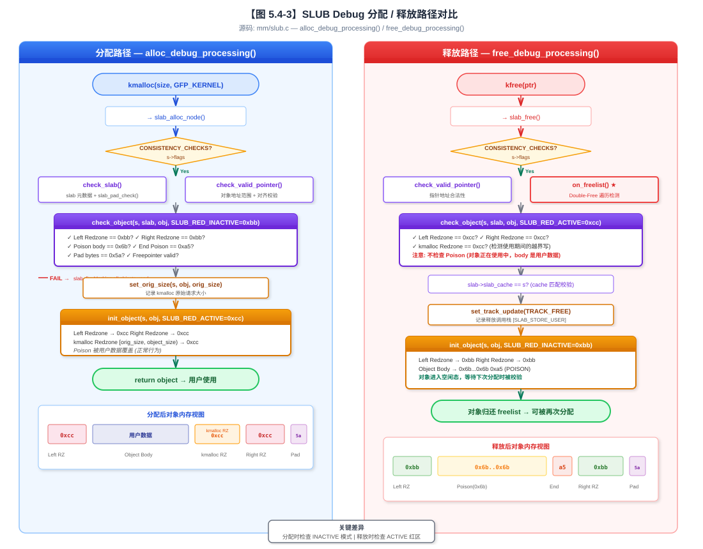
分配路径完整调用链：
kmalloc(size, GFP_KERNEL)
→ __kmalloc_noprof()
→ slab_alloc_node()
→ alloc_debug_processing(s, slab, object, orig_size)
├── alloc_consistency_checks() [SLAB_CONSISTENCY_CHECKS]
│ ├── check_slab(s, slab) // 验证 slab 页元数据
│ │ └── slab_pad_check(s, slab) // 页末 padding (0x5a)
│ ├── check_valid_pointer(s, slab, object) // 对象地址合法性
│ └── check_object(s, slab, object, SLUB_RED_INACTIVE)
│ ├── Left Redzone == 0xbb ? // 步骤 1a
│ ├── Right Redzone == 0xbb ? // 步骤 1b
│ ├── Poison body == 0x6b ? // 步骤 2a (UAF Write?)
│ ├── End Poison == 0xa5 ? // 步骤 2b
│ ├── Pad bytes == 0x5a ? // 步骤 2c
│ └── Freepointer valid ? // 步骤 3
├── set_orig_size(s, object, orig_size) // 记录 kmalloc 原始大小
└── init_object(s, object, SLUB_RED_ACTIVE) // 设置使用态标记 (0xcc)释放路径完整调用链：
kfree(ptr)
→ slab_free()
→ free_debug_processing(s, slab, head, tail, &cnt, addr, handle)
├── check_slab(s, slab) [SLAB_CONSISTENCY_CHECKS]
├── free_consistency_checks() [SLAB_CONSISTENCY_CHECKS]
│ ├── check_valid_pointer(s, slab, object) // 地址合法性
│ ├── on_freelist(s, slab, object) // Double-Free 检测 ★
│ ├── check_object(s, slab, object, SLUB_RED_ACTIVE)
│ │ ├── Left Redzone == 0xcc ? // 使用期间被左越界？
│ │ ├── Right Redzone == 0xcc ? // 使用期间被右越界？
│ │ └── kmalloc Redzone == 0xcc ? // 超出请求大小？
│ └── slab->slab_cache == s ? // cache 匹配检查
├── set_track_update(s, object, TRACK_FREE, ...) [SLAB_STORE_USER]
└── init_object(s, object, SLUB_RED_INACTIVE) // 重新 Poison (0x6b+0xa5)Freelist 指针加密（CONFIG_SLAB_FREELIST_HARDENED）：
SLUB 的 freelist 是单链表，每个空闲对象内嵌指向下一个空闲对象的指针。攻击者可以通过溢出覆写 freelist 指针实现任意地址分配。Freelist Hardening 通过 XOR 加密防御此类攻击：
static inline freeptr_t freelist_ptr_encode(const struct kmem_cache *s,
void *ptr, unsigned long ptr_addr)
{
unsigned long encoded;
#ifdef CONFIG_SLAB_FREELIST_HARDENED
// ptr: 下一个空闲对象地址
// s->random: cache 创建时的随机数
// ptr_addr: 当前 freepointer 的存储地址 (防止简单交换攻击)
encoded = (unsigned long)ptr ^ s->random ^ swab(ptr_addr);
#else
encoded = (unsigned long)ptr;
#endif
return (freeptr_t){.v = encoded};
}
static inline void *freelist_ptr_decode(const struct kmem_cache *s,
freeptr_t ptr, unsigned long ptr_addr)
{
#ifdef CONFIG_SLAB_FREELIST_HARDENED
return (void *)(ptr.v ^ s->random ^ swab(ptr_addr));
#else
return (void *)ptr.v;
#endif
}加密方案的三重保护：
s->random：per-cache 随机值，每次 kmem_cache_create() 时生成，攻击者无法预测swab(ptr_addr)：融入存储地址的字节翻转值，使同一指针在不同位置编码不同check_valid_pointer() 验证解码后的地址是否落在合法 slab 页内static inline int check_valid_pointer(struct kmem_cache *s,
struct slab *slab, void *object)
{
void *base = slab_address(slab);
object = restore_red_left(s, object);
// 三重验证: 在页范围内 && 对齐到 s->size 边界
if (object < base || object >= base + slab->objects * s->size ||
(object - base) % s->size)
return 0;
return 1;
}Double-Free 检测（on_freelist()）：
释放对象时，free_consistency_checks() 调用 on_freelist() 遍历 freelist，检查待释放对象是否已在空闲链表中：
static bool on_freelist(struct kmem_cache *s, struct slab *slab, void *search)
{
int nr = 0;
void *fp = slab->freelist;
while (fp && nr <= slab->objects) {
if (fp == search)
return true; // ★ 对象已在 freelist → Double-Free!
if (!check_valid_pointer(s, slab, fp)) {
// Freelist 指针被破坏 → 截断链表
object_err(s, slab, object, "Freechain corrupt");
set_freepointer(s, object, NULL);
break;
}
object = fp;
fp = get_freepointer(s, object);
nr++;
}
// 环路检测: 遍历次数超过 slab 对象总数
if (nr > slab->objects) {
slab_err(s, slab, "Freelist cycle detected");
slab->freelist = NULL;
slab->inuse = slab->objects;
return false;
}
// ... 还会校验对象计数是否一致 ...
}检测能力总结：
| 攻击/Bug 类型 | 检测机制 | 检测时机 |
|---|---|---|
| 缓冲区左溢出 | Left Redzone (0xbb/0xcc) 被破坏 | 下次 alloc 或当前 free |
| 缓冲区右溢出 | Right Redzone / kmalloc Redzone 被破坏 | 下次 alloc 或当前 free |
| UAF Write | Poison (0x6b...0xa5) 被破坏 | 下次 alloc |
| Double-Free | on_freelist() 遍历检测 |
当前 free |
| Freelist 劫持 | check_valid_pointer() 解码后校验 |
下次 alloc |
| Freelist 环路 | on_freelist() 计数超限 |
当前 free |
| Slab 页溢出 | slab_pad_check() padding 0x5a 破坏 |
alloc/free |
SLAB_STORE_USER 在每个对象的 metadata 区域保存分配和释放时的调用栈，是定位内存错误 root cause 的关键信息。
Track 数据结构（mm/slub.c）：
#define TRACK_ADDRS_COUNT 16
struct track {
unsigned long addr; // 调用者地址 (函数 + 偏移)
#ifdef CONFIG_STACKDEPOT
depot_stack_handle_t handle; // Stack Depot 句柄 (完整调用栈)
#endif
int cpu; // 执行时的 CPU 编号
int pid; // 执行时的进程 PID
unsigned long when; // jiffies 时间戳
};
enum track_item { TRACK_ALLOC, TRACK_FREE };每个对象在 metadata 区保存两份 track：TRACK_ALLOC（分配栈）和 TRACK_FREE（释放栈），位于 object + get_info_end(s) 偏移处。
Track 记录流程：
// 分配时 — alloc_debug_processing() 路径
static noinline depot_stack_handle_t set_track_prepare(gfp_t gfp_flags)
{
unsigned long entries[TRACK_ADDRS_COUNT];
unsigned int nr_entries;
// 保存当前调用栈到 Stack Depot (去重存储)
nr_entries = stack_trace_save(entries, ARRAY_SIZE(entries), 3);
return stack_depot_save(entries, nr_entries, gfp_flags);
}
static void set_track_update(struct kmem_cache *s, void *object,
enum track_item alloc, unsigned long addr,
depot_stack_handle_t handle)
{
struct track *p = get_track(s, object, alloc);
p->handle = handle; // Stack Depot 句柄
p->addr = addr; // 直接调用者地址
p->cpu = smp_processor_id();
p->pid = current->pid;
p->when = jiffies;
}Track 在错误报告中的输出（print_track()）：
static void print_track(const char *s, struct track *t, unsigned long pr_time)
{
pr_err("%s in %pS age=%lu cpu=%u pid=%d\n",
s, (void *)t->addr,
pr_time - t->when, // 距离当前的 jiffies 差值
t->cpu, t->pid);
// 通过 Stack Depot 句柄打印完整调用栈
stack_depot_print(t->handle);
}
void print_tracking(struct kmem_cache *s, void *object)
{
unsigned long pr_time = jiffies;
print_track("Allocated", get_track(s, object, TRACK_ALLOC), pr_time);
print_track("Freed", get_track(s, object, TRACK_FREE), pr_time);
}对象 Metadata 区域内存布局：
object + s->inuse (metadata 起始)
┌───────────────────────────────────────────────────────────────────┐
│ Freepointer (8B) │ track[ALLOC] │ track[FREE] │ orig_size │
│ (如果 outside) │ (sizeof track)│ (sizeof track)│ (4B) │
│ │ addr/cpu/pid │ addr/cpu/pid │ kmalloc │
│ │ when/handle │ when/handle │ 请求大小 │
├───────────────────────────────────────────────────────────────────┤
│ KASAN metadata │ Padding (0x5a) │
└───────────────────────────────────────────────────────────────────┘
→ object + s->size当 SLUB Debug 检测到异常时，slab_bug() + print_trailer() 输出详细的诊断信息。
典型 Right Redzone 越界报告：
=============================================================================
BUG kmalloc-64 (Tainted: G B ): Right Redzone overwritten
-----------------------------------------------------------------------------
[Right Redzone overwritten] 0xffff0000c1234540-0xffff0000c1234543 @offset=320.
First byte 0x41 instead of 0xcc
Allocated in buggy_driver_probe+0x48/0x120 age=1523 cpu=2 pid=156
__kmalloc_noprof+0x1a8/0x2e0
buggy_driver_probe+0x48/0x120
platform_probe+0x68/0x90
Freed in (null) age=4294967295 cpu=0 pid=0
(object not yet freed)
Slab 0xfffffc0003048d00 objects=32 used=18 fp=0xffff0000c1234600 flags=0x3fffc0000000a00
Object 0xffff0000c1234500 @offset=256 fp=0xffff0000c1234580
Redzone ffff0000c12344f0: bb bb bb bb bb bb bb bb bb bb bb bb bb bb bb bb ................
Object ffff0000c1234500: 48 65 6c 6c 6f 20 57 6f 72 6c 64 00 6b 6b 6b 6b Hello World.kkkk
...
Redzone ffff0000c1234540: 41 41 41 41 cc cc cc cc cc cc cc cc cc cc cc cc AAAA............
^^^^^^^^^ 被覆写的红区字节
Padding ffff0000c12345a0: 5a 5a 5a 5a 5a 5a 5a 5a ZZZZZZZZ报告关键字段解读：
| 字段 | 含义 |
|---|---|
BUG kmalloc-64 |
出问题的 slab cache 名称 |
Right Redzone overwritten |
Bug 类型（Left/Right Redzone、Poison、End Poison、Padding 等） |
@offset=320 |
被破坏的第一个字节在 slab 页内的偏移量 |
First byte 0x41 instead of 0xcc |
期望值 vs 实际值（0xcc = SLUB_RED_ACTIVE，使用态红区） |
Allocated in ... age=1523 |
分配调用栈 + 距当前时间的 jiffies 差值 |
Freed in (null) |
尚未释放（如果已释放会显示释放调用栈） |
objects=32 used=18 |
slab 页中对象总数和已分配数 |
Redzone / Object / Padding |
各区域的 hexdump（便于肉眼识别异常模式） |
常见 Bug 类型与含义：
| 报告消息 | 含义 | 典型原因 |
|---|---|---|
Left Redzone overwritten |
对象前方红区被破坏 | 前一个对象尾部溢出或负偏移写入 |
Right Redzone overwritten |
对象后方红区被破坏 | 当前对象缓冲区溢出 |
kmalloc Redzone overwritten |
[orig_size, object_size) 被破坏 |
写入超出 kmalloc 请求大小 |
Poison overwritten |
对象体 0x6b 模式被破坏 | 释放后写入（UAF Write） |
End Poison overwritten |
对象末尾 0xa5 标记被破坏 | UAF Write 或对象尾部越界 |
Object padding overwritten |
Metadata 后 0x5a padding 被破坏 | Metadata 区域溢出 |
Padding overwritten |
Slab 页尾部 padding 被破坏 | 最后一个对象溢出超出页边界 |
Freepointer corrupt |
Freelist 指针指向非法地址 | 越界写破坏了 freelist 指针 |
Object already free |
对象已在 freelist 中 | Double-Free |
Freechain corrupt |
Freelist 链路断裂 | 溢出破坏了链表中间节点 |
Freelist cycle detected |
Freelist 出现环路 | 溢出将 freelist 指针指向了链上已有对象 |
1) 启用 SLUB Debug（boot 参数方式，无需重新编译）：
# 全部 cache 开启全量调试 (开发/测试环境推荐)
slab_debug=FPZU
# 字母含义:
# F = SLAB_CONSISTENCY_CHECKS (freelist 完整性校验)
# P = SLAB_POISON (释放后 poison 填充)
# Z = SLAB_RED_ZONE (前后红区保护)
# U = SLAB_STORE_USER (记录分配/释放调用栈)
# T = SLAB_TRACE (每次操作打印 trace)
# 仅对特定 cache 开启 (降低性能影响)
slab_debug=ZU,kmalloc-512
slab_debug=FPZU,dentry;FPZU,inode_cache
# Kconfig (编译时默认开启)
CONFIG_SLUB_DEBUG=y # 编译 debug 支持 (不开启)
CONFIG_SLUB_DEBUG_ON=y # boot 默认开启全部 debug2) 运行时查看 slab 状态：
# 列出所有 slab cache 及其 debug 标志
cat /proc/slabinfo | head -3
# name <active_objs> <num_objs> <objsize> <objperslab> <pagesperslab>
# 通过 sysfs 查看特定 cache 详情
ls /sys/kernel/slab/kmalloc-64/
# alloc_fastpath free_slowpath objs_per_slab order ...
cat /sys/kernel/slab/kmalloc-64/red_zone # 1 = 启用
cat /sys/kernel/slab/kmalloc-64/poison # 1 = 启用
cat /sys/kernel/slab/kmalloc-64/store_user # 1 = 启用
cat /sys/kernel/slab/kmalloc-64/object_size # 实际对象大小
cat /sys/kernel/slab/kmalloc-64/slab_size # 含 debug 元数据的大小3) slabinfo 工具验证所有 cache：
# 编译 slabinfo 工具
gcc -o slabinfo tools/vm/slabinfo.c
# 验证所有 slab cache (触发 check_object 遍历)
slabinfo -v
# 输出异常的 cache → dmesg 中会有详细报告
# 仅显示有 debug 标志的 cache
slabinfo -d4) debugfs 接口获取对象级详情：
# 查看特定 cache 的所有对象追踪信息
cat /sys/kernel/debug/slab/kmalloc-64/alloc_traces
# 格式: <分配次数> <调用栈>
# 156 __kmalloc_noprof+0x1a8/0x2e0 buggy_driver_probe+0x48/0x120
cat /sys/kernel/debug/slab/kmalloc-64/free_traces
# 格式: <释放次数> <调用栈>5) 定位越界方向与偏移：
# 从 dmesg 报告提取关键信息:
# "[Right Redzone overwritten] 0xffff...540-0xffff...543 @offset=320"
# → 右红区被破坏: 对象尾部向后越界了 4 字节
# → First byte 0x41 instead of 0xcc → 写入了 'A' (0x41)
# "[Poison overwritten] 0xffff...508-0xffff...50b @offset=264"
# → UAF Write: 释放后在偏移 +8 处写入了 4 字节
# 结合 Allocated/Freed 调用栈:
# → Allocated in driver_alloc+0x30 → 找到分配点
# → Freed in driver_release+0x20 → 找到释放点
# → 在释放之后仍有代码写入该对象 → UAF bug6) SLUB Debug 对性能的影响：
| Debug 标志 | 性能开销 | 内存开销 | 推荐场景 |
|---|---|---|---|
F (CONSISTENCY_CHECKS) |
低~中 | 无 | 始终开启 |
P (POISON) |
低 | 无 | 始终开启 |
Z (RED_ZONE) |
低 | 每对象 +16~32B | 开发/测试 |
U (STORE_USER) |
中 | 每对象 +2×track | 需要调用栈时开启 |
T (TRACE) |
高 | 无 | 仅临时调试 |
全部 FPZU |
中 | 每对象 +64~128B | 开发/CI 环境 |
7) SLUB Debug vs KASAN vs KFENCE 选择策略：
| 场景 | 推荐工具 | 理由 |
|---|---|---|
| 不能重新编译内核 | SLUB Debug | 仅需 boot 参数，CONFIG_SLUB_DEBUG=y 通常已内置 |
| 需要 100% 覆盖 + 即时检测 | KASAN | 每条 load/store 都检查，无遗漏 |
| 生产环境长期监控 | KFENCE | 接近零开销 |
| 需要检测 UAF Read | KASAN | SLUB Debug 无法检测读操作 |
| 需要 Double-Free 检测 | SLUB Debug | on_freelist() 遍历检测 |
| 快速定位特定 cache 问题 | SLUB Debug | slab_debug=FPZU, 精准锁定 |
与 KASAN（Shadow Memory 字节级检测）、KFENCE（Guard Page 采样检测）、SLUB Debug（毒化模式延迟检测）不同，mprotect 页保护机制利用 CPU 硬件 MMU 的页表权限位直接在写入瞬间触发异常，实现零 CPU 开销、零内存开销的即时 MemoryOverwritten 检测。
其核心思想极为简洁：将受保护内存页的页表权限设为只读（去除 Write 位），任何写入尝试都会被 MMU 硬件拦截并触发 Permission Fault。
源码路径：mm/mprotect.c（用户态系统调用）、arch/arm64/mm/pageattr.c（内核态 set_memory_ro/rw）、arch/arm64/mm/fault.c（Page Fault 处理）、arch/arm64/mm/mmu.c（mark_rodata_ro）
mprotect 页保护检测 MemoryOverwritten 的核心原理基于 ARM64 MMU 的页表权限检查。CPU 每次访问虚拟地址时，MMU 都会检查页表项（PTE）中的权限位。当应用程序或内核代码试图写入一个被标记为"只读"的页面时，硬件直接触发 Data Abort（Permission Fault），无需任何软件插桩或检查代码。
检测原理公式：
写保护区域: mprotect(addr, size, PROT_READ) → PTE.AP[2] = 1 (只读)
合法写入: mprotect(addr, size, PROT_READ|PROT_WRITE) → 临时解锁 → 写入 → 重新上锁
非法写入: Store → MMU 检查 PTE → AP[2]=1 → Data Abort → SIGSEGV / Kernel Oops与其他检测机制的本质区别：
| 维度 | mprotect 页保护 | KASAN | KFENCE | SLUB Debug |
|---|---|---|---|---|
| 检测层 | MMU 硬件 | 编译器插桩 + Shadow | Guard Page | 软件 Poison |
| 检测时机 | 写入瞬间（硬件触发） | 写入瞬间（软件检查） | 越界瞬间（硬件触发） | alloc/free 时（延迟） |
| CPU 开销 | 零 | 高（每次 load/store） | 极低 | 中 |
| 内存开销 | 零 | 1/8 Shadow | 2MB 池 | 每对象 +N 字节 |
| 检测粒度 | 页（4KB） | 8 字节 | 页（4KB） | 对象边界 |
【图 5.5-1】mprotect 页保护机制全景 — 从用户态到硬件
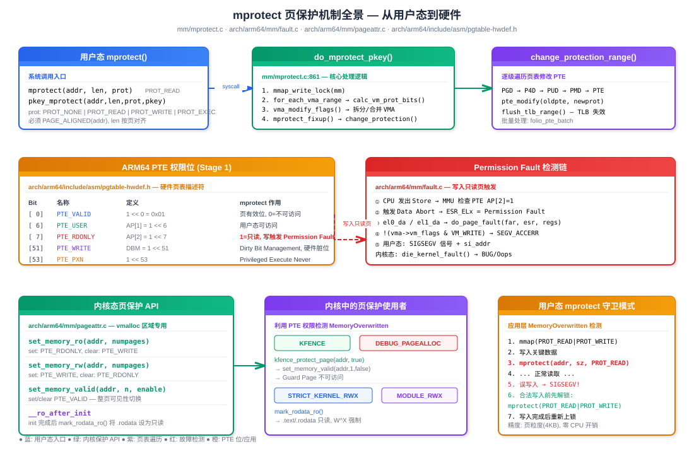
系统调用入口（mm/mprotect.c:1008）：
SYSCALL_DEFINE3(mprotect, unsigned long, start, size_t, len,
unsigned long, prot)
{
return do_mprotect_pkey(start, len, prot, -1);
}核心处理函数 do_mprotect_pkey()（mm/mprotect.c:861）完成以下关键步骤：
static int do_mprotect_pkey(unsigned long start, size_t len,
unsigned long prot, int pkey)
{
// 1. 参数校验
if (start & ~PAGE_MASK) return -EINVAL; // 必须页对齐
len = PAGE_ALIGN(len); // 长度向上对齐到页
end = start + len;
// 2. 获取 mmap_write_lock（独占锁，阻止并发 VMA 修改）
mmap_write_lock_killable(current->mm);
// 3. 遍历 [start, end) 范围内的所有 VMA
for_each_vma_range(vmi, vma, end) {
// 4. 计算新的 vm_flags
newflags = calc_vm_prot_bits(prot, new_vma_pkey);
newflags |= (vma->vm_flags & ~mask_off_old_flags);
// 5. 权限合法性检查：不能越过 MAY 限制
if ((newflags & ~(newflags >> 4)) & VM_ACCESS_FLAGS)
return -EACCES;
// 6. W^X 检查（map_deny_write_exec）
if (map_deny_write_exec(vma->vm_flags, newflags))
return -EACCES;
// 7. 安全模块回调（LSM hook）
security_file_mprotect(vma, reqprot, prot);
// 8. 核心：修改 VMA flags + 更新页表
mprotect_fixup(&vmi, &tlb, vma, &prev, nstart, tmp, newflags);
}
}mprotect_fixup()（mm/mprotect.c:755）是实际执行修改的函数：
int mprotect_fixup(struct vma_iterator *vmi, struct mmu_gather *tlb,
struct vm_area_struct *vma, struct vm_area_struct **pprev,
unsigned long start, unsigned long end, vm_flags_t newflags)
{
// 1. VMA sealed 检查（mseal 锁定后不可修改）
if (vma_is_sealed(vma)) return -EPERM;
// 2. VMA 拆分/合并（跨越 VMA 边界时）
vma = vma_modify_flags(vmi, *pprev, vma, start, end, newflags);
// 3. 更新 VMA flags 和页保护属性
vma_start_write(vma);
vm_flags_reset_once(vma, newflags);
vma_set_page_prot(vma); // vm_flags → pgprot 映射
// 4. 遍历页表，逐 PTE 修改权限位
change_protection(tlb, vma, start, end, mm_cp_flags);
}【图 5.5-2】mprotect 系统调用完整执行路径
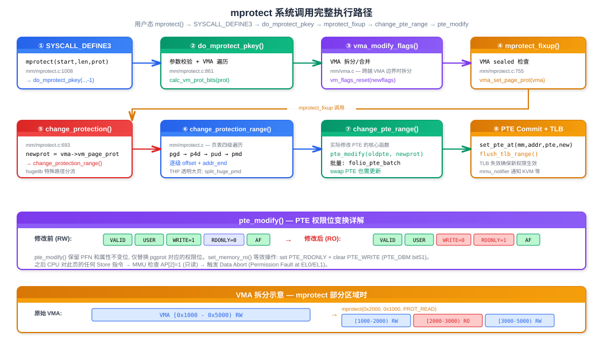
ARM64 Stage 1 页表描述符中与权限相关的关键位（arch/arm64/include/asm/pgtable-hwdef.h）：
#define PTE_VALID (_AT(pteval_t, 1) << 0) // 页有效位
#define PTE_USER (_AT(pteval_t, 1) << 6) // AP[1]: 用户态可访问
#define PTE_RDONLY (_AT(pteval_t, 1) << 7) // AP[2]: 只读
#define PTE_AF (_AT(pteval_t, 1) << 10) // Access Flag
#define PTE_DBM (_AT(pteval_t, 1) << 51) // Dirty Bit Management
#define PTE_PXN (_AT(pteval_t, 1) << 53) // Privileged Execute Never
#define PTE_UXN (_AT(pteval_t, 1) << 54) // User Execute NeverPTE_WRITE 的定义（arch/arm64/include/asm/pgtable-prot.h）：
#define PTE_WRITE (PTE_DBM) // PTE_WRITE = bit[51], 与 DBM 共用ARM64 的写权限由 AP[2] (bit[7]) 和 DBM (bit[51]) 共同决定：
| AP[2] (PTE_RDONLY) | DBM (PTE_WRITE) | 效果 |
|---|---|---|
| 0 | 1 | 可读写 — 正常 RW 页面 |
| 1 | 0 | 只读 — mprotect(PROT_READ) 设置 |
| 1 | 1 | 只读（AP[2]=1 优先级更高） |
| 0 | 0 | 只读（无 DBM，不可写） |
change_pte_range() 是实际修改每个 PTE 的核心函数（mm/mprotect.c）：
static long change_pte_range(struct mmu_gather *tlb,
struct vm_area_struct *vma, pmd_t *pmd, unsigned long addr,
unsigned long end, pgprot_t newprot, unsigned long cp_flags)
{
pte = pte_offset_map_lock(vma->vm_mm, pmd, addr, &ptl);
flush_tlb_batched_pending(vma->vm_mm);
arch_enter_lazy_mmu_mode();
do {
oldpte = ptep_get(pte);
if (pte_present(oldpte)) {
// 关键操作：pte_modify 只替换权限位，保留 PFN
ptent = pte_modify(oldpte, newprot);
// 提交修改 + TLB 失效
modify_prot_commit_ptes(vma, addr, pte, oldpte, ptent, nr_ptes);
if (pte_needs_flush(oldpte, ptent))
tlb_flush_pte_range(tlb, addr, nr_ptes * PAGE_SIZE);
}
} while (pte += nr_ptes, addr += nr_ptes * PAGE_SIZE, addr != end);
arch_leave_lazy_mmu_mode();
pte_unmap_unlock(pte - 1, ptl);
}页表遍历层次：change_protection() → change_protection_range() → change_p4d_range() → change_pud_range() → change_pmd_range() → change_pte_range()。四级页表逐级遍历，最终在 PTE 层修改权限位。
当代码试图写入一个 mprotect(PROT_READ) 保护的页面时，ARM64 硬件按以下流程检测并处理：
硬件层：
STR 指令 → MMU 查找 TLB 或 Page Table WalkESR_ELx.EC = 0x24（EL0 Data Abort）或 0x25（EL1 Data Abort）ESR_ELx.ISS.DFSC = Permission Fault（level 0-3）FAR_ELx = 故障虚拟地址软件层（arch/arm64/mm/fault.c）：
// 异常分发表（fault.c:870-873）
static const struct fault_info fault_info[] = {
// ...
{ do_page_fault, SIGSEGV, SEGV_ACCERR, "level 0 permission fault" },
{ do_page_fault, SIGSEGV, SEGV_ACCERR, "level 1 permission fault" },
{ do_page_fault, SIGSEGV, SEGV_ACCERR, "level 2 permission fault" },
{ do_page_fault, SIGSEGV, SEGV_ACCERR, "level 3 permission fault" },
};static int __kprobes do_page_fault(unsigned long far, unsigned long esr,
struct pt_regs *regs)
{
// 1. 判断写操作
if (is_write_abort(esr)) {
vm_flags = VM_WRITE;
mm_flags |= FAULT_FLAG_WRITE;
}
// 2. 查找 VMA
vma = lock_vma_under_rcu(mm, addr);
// 3. 关键检查：VMA 不包含 VM_WRITE → 权限违规！
if (!(vma->vm_flags & VM_WRITE)) {
si_code = SEGV_ACCERR;
goto bad_area; // → 用户态: SIGSEGV 内核态: Oops
}
// 4a. 用户态: arm64_force_sig_fault(SIGSEGV, SEGV_ACCERR, far)
// → 进程收到 SIGSEGV，si_addr = 故障地址
// → 默认行为: core dump + 进程终止
// 4b. 内核态: no_context → __do_kernel_fault()
// → die_kernel_fault("access to read-only memory", ...)
// → BUG/Oops + 完整调用栈
}【图 5.5-3】ARM64 Permission Fault 检测流程
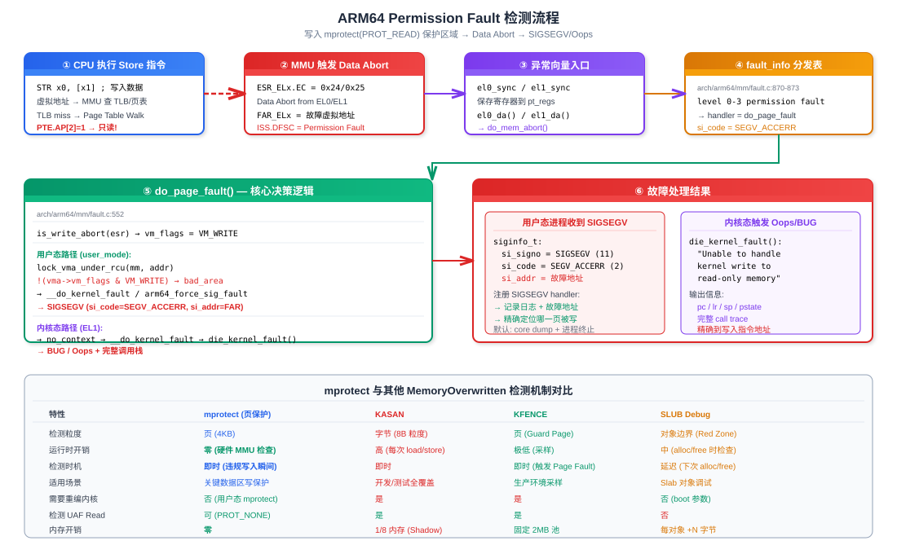
内核空间不使用 mprotect() 系统调用，而是提供等价的内核 API 直接操作页表权限。
set_memory_ro() / set_memory_rw()（arch/arm64/mm/pageattr.c:202-214）：
int set_memory_ro(unsigned long addr, int numpages)
{
return change_memory_common(addr, numpages,
__pgprot(PTE_RDONLY), // set: AP[2]=1
__pgprot(PTE_WRITE)); // clear: DBM=0
}
int set_memory_rw(unsigned long addr, int numpages)
{
return change_memory_common(addr, numpages,
__pgprot(PTE_WRITE), // set: DBM=1
__pgprot(PTE_RDONLY)); // clear: AP[2]=0
}change_memory_common() 的执行流程：
static int change_memory_common(unsigned long addr, int numpages,
pgprot_t set_mask, pgprot_t clear_mask)
{
// 1. 必须是 vmalloc 区域（不能操作线性映射）
area = find_vm_area((void *)addr);
if (!area || (area->flags & VM_ALLOW_HUGE_VMAP))
return -EINVAL;
// 2. rodata_full 时同步修改 linear map 映射
if (rodata_full && (set/clear PTE_RDONLY)) {
for (i = 0; i < area->nr_pages; i++)
__change_memory_common(page_address(area->pages[i]),
PAGE_SIZE, set_mask, clear_mask);
}
// 3. 清除别名映射
vm_unmap_aliases();
// 4. 修改 vmalloc 映射
return __change_memory_common(start, size, set_mask, clear_mask);
}set_memory_valid() — 整页可见性切换（pageattr.c）：
int set_memory_valid(unsigned long addr, int numpages, int enable)
{
if (enable)
return __change_memory_common(addr, PAGE_SIZE * numpages,
__pgprot(PTE_VALID), __pgprot(0)); // 使页有效
else
return __change_memory_common(addr, PAGE_SIZE * numpages,
__pgprot(0), __pgprot(PTE_VALID)); // 使页无效
}
// PTE_VALID=0 → 页不可见，任何访问都触发 Translation Fault（比 Permission Fault 更严格）__ro_after_init 机制：
// 声明方式（include/linux/init.h）
#define __ro_after_init __section(".data..ro_after_init")
// 使用示例（arch/arm64/mm/mmu.c）
u64 kimage_voffset __ro_after_init; // 内核镜像偏移
bool rodata_full __ro_after_init = true; // rodata 保护开关
bool kfence_early_init __ro_after_init = !!CONFIG_KFENCE_SAMPLE_INTERVAL;
// 初始化完成后调用 mark_rodata_ro()（init/main.c:1448）
static void mark_readonly(void)
{
if (IS_ENABLED(CONFIG_STRICT_KERNEL_RWX) && rodata_enabled) {
flush_module_init_free_work();
jump_label_init_ro();
mark_rodata_ro(); // ← 将 .rodata 和 __ro_after_init section 设为只读
debug_checkwx(); // ← 扫描并报告任何 W+X 页面
rodata_test();
}
}mark_rodata_ro() ARM64 实现（arch/arm64/mm/mmu.c:1138）：
void mark_rodata_ro(void)
{
unsigned long section_size;
// .rodata + NOTES + EXCEPTION_TABLE → 只读
section_size = (unsigned long)__init_begin - (unsigned long)__start_rodata;
WRITE_ONCE(rodata_is_rw, false);
update_mapping_prot(__pa_symbol(__start_rodata), (unsigned long)__start_rodata,
section_size, PAGE_KERNEL_RO);
// _text → _stext 区域也设为只读
update_mapping_prot(__pa_symbol(_text), (unsigned long)_text,
(unsigned long)_stext - (unsigned long)_text, PAGE_KERNEL_RO);
}
// PAGE_KERNEL_RO = PROT_NORMAL & ~PTE_WRITE | PTE_RDONLY【图 5.5-4】内核态页保护机制 — set_memory_ro/rw 与 STRICT_KERNEL_RWX
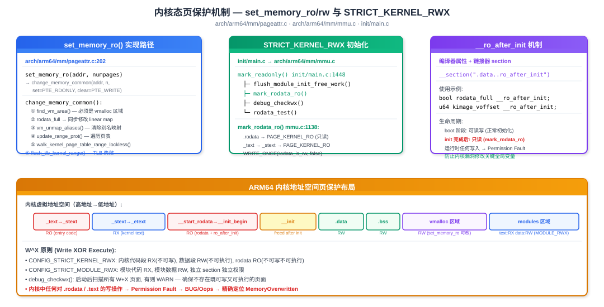
内核中已有多个子系统利用页保护机制检测 MemoryOverwritten：
1) KFENCE — Guard Page 通过 set_memory_valid() 实现
// arch/arm64/include/asm/kfence.h
static inline bool kfence_protect_page(unsigned long addr, bool protect)
{
set_memory_valid(addr, 1, !protect); // protect=true → PTE_VALID=0（不可访问）
return true;
}
// mm/kfence/core.c — 释放时保护对象页
static bool kfence_protect(unsigned long addr)
{
return !KFENCE_WARN_ON(!kfence_protect_page(ALIGN_DOWN(addr, PAGE_SIZE), true));
}
// 分配时解除保护
static bool kfence_unprotect(unsigned long addr)
{
return !KFENCE_WARN_ON(!kfence_protect_page(ALIGN_DOWN(addr, PAGE_SIZE), false));
}2) DEBUG_PAGEALLOC — 释放后页面无效化
// include/linux/mm.h
static inline void debug_pagealloc_unmap_pages(struct page *page, int numpages)
{
if (debug_pagealloc_enabled_static())
__kernel_map_pages(page, numpages, 0); // enable=0 → 页不可访问
}
// arch/arm64/mm/pageattr.c
void __kernel_map_pages(struct page *page, int numpages, int enable)
{
if (!can_set_direct_map()) return;
set_memory_valid((unsigned long)page_address(page), numpages, enable);
}
// 效果：释放后的页面 PTE_VALID=0，任何访问（读/写）→ Translation Fault3) CONFIG_STRICT_KERNEL_RWX — W^X 强制
| 保护区域 | 权限 | 保护机制 |
|---|---|---|
_text → _stext |
RO | mark_rodata_ro() |
_stext → _etext |
RX | 代码段只读可执行 |
start_rodata → init_begin |
RO | rodata + __ro_after_init |
.data / .bss |
RW | 不可执行（PTE_PXN + PTE_UXN） |
| module text | RX | CONFIG_STRICT_MODULE_RWX |
__init section |
freed | free_initmem() 后回收 |
场景 1：保护关键配置数据
#include <sys/mman.h>
#include <signal.h>
#include <stdio.h>
#include <stdlib.h>
#include <string.h>
#include <unistd.h>
/* SIGSEGV handler — 捕获非法写入 */
void segv_handler(int sig, siginfo_t *info, void *ucontext)
{
fprintf(stderr, "[MPROTECT GUARD] MemoryOverwritten detected!\n"
" Fault address: %p\n"
" si_code: %s\n",
info->si_addr,
info->si_code == SEGV_ACCERR ? "SEGV_ACCERR (permission)" :
info->si_code == SEGV_MAPERR ? "SEGV_MAPERR (unmapped)" : "unknown");
/* 生成 core dump 以便事后分析 */
abort();
}
int main(void)
{
size_t page_size = sysconf(_SC_PAGESIZE);
/* 1. 分配页对齐内存 */
void *config = mmap(NULL, page_size, PROT_READ | PROT_WRITE,
MAP_PRIVATE | MAP_ANONYMOUS, -1, 0);
/* 2. 写入关键配置 */
struct { int magic; char data[64]; } *cfg = config;
cfg->magic = 0xDEADBEEF;
strcpy(cfg->data, "critical_config_v1");
/* 3. 上锁：设为只读 — 此后任何写入触发 SIGSEGV */
mprotect(config, page_size, PROT_READ);
/* 4. 注册信号处理器 */
struct sigaction sa = {
.sa_sigaction = segv_handler,
.sa_flags = SA_SIGINFO
};
sigaction(SIGSEGV, &sa, NULL);
/* 5. 正常读取（不会触发异常） */
printf("magic = 0x%X\n", cfg->magic); // OK
/* 6. 模拟 bug：非法写入 → 触发 SIGSEGV */
cfg->magic = 0xBADC0DE; // → Permission Fault → SIGSEGV!
return 0;
}场景 2：保护共享内存通信缓冲区
/* 生产者-消费者模型中保护消息缓冲区 */
/* 生产者写入时临时解锁 */
void producer_write(void *buf, size_t page_sz, const void *data, size_t len)
{
mprotect(buf, page_sz, PROT_READ | PROT_WRITE); // 解锁
memcpy(buf, data, len);
mprotect(buf, page_sz, PROT_READ); // 重新上锁
}
/* 消费者只读访问（任何误写入被捕获） */
void consumer_read(const void *buf, void *out, size_t len)
{
memcpy(out, buf, len); // 只读访问，安全
}场景 3：PROT_NONE 检测 Use-After-Free
/* 释放后将内存设为完全不可访问 */
void safe_free(void *ptr, size_t size)
{
/* 不 munmap，而是设为 PROT_NONE — 保留 VMA 但不可访问 */
mprotect(ptr, size, PROT_NONE);
/* 之后任何读/写都触发 SIGSEGV (SEGV_ACCERR) */
}1) 用户态 mprotect 保护的调试流程：
# 编译时带调试信息
gcc -g -O0 -o test_mprotect test_mprotect.c
# 运行，触发 SIGSEGV 后生成 core dump
ulimit -c unlimited
./test_mprotect
# → [MPROTECT GUARD] MemoryOverwritten detected!
# Fault address: 0x7f8a12345000
# si_code: SEGV_ACCERR (permission)
# GDB 分析 core dump
gdb ./test_mprotect core
(gdb) bt # 查看完整调用栈 — 精确到哪一行写入了保护区域
(gdb) info signals # 确认 SIGSEGV
(gdb) p $pc # 查看触发异常的指令地址2) 内核态 Permission Fault 的 dmesg 输出：
Unable to handle kernel write to read-only memory at virtual address ffff800012345000
Mem abort info:
ESR = 0x9600004f
EC = 0x25: DABT (current EL), IL = 32 bits
SET = 0, FnV = 0
EA = 0, S1PTW = 0
FSC = 0x0f: level 3 permission fault ← Permission Fault!
Data abort info:
ISV = 0, ISS = 0x0000004f, ISS2 = 0x00000000
CM = 0, WnR = 1 ← WnR=1: 写操作
swapper pance: 0 comm: buggy_driver pid: 123
pc : buggy_driver_write+0x48/0x120 [buggy_module] ← 精确到写入函数+偏移
lr : buggy_driver_ioctl+0x80/0x200 [buggy_module]
Call trace:
buggy_driver_write+0x48/0x120 [buggy_module]
buggy_driver_ioctl+0x80/0x200 [buggy_module]
__arm64_sys_ioctl+0xb4/0x100
...3) 使用 GDB 调试 mprotect 相关问题：
# 设置 SIGSEGV 时不自动退出
(gdb) handle SIGSEGV stop nopass
# 在 mprotect 系统调用处设置断点
(gdb) catch syscall mprotect
# 查看进程的 VMA 映射和权限
(gdb) info proc mappings
# 查看特定地址的页表权限（需要内核调试支持）
# /proc/<pid>/smaps 中查看 VmFlags
cat /proc/<pid>/smaps | grep -A 20 "7f8a12345"
# → VmFlags: rd mr mw me (rd=readable, 无 wr=not writable)4) 性能考量与最佳实践：
| 操作 | 开销 | 说明 |
|---|---|---|
mprotect() 系统调用 |
微秒级 | 需要 mmap_write_lock + 页表遍历 + TLB flush |
| 受保护页面读取 | 零开销 | MMU 硬件检查，无软件介入 |
| 受保护页面写入 | Permission Fault | 异常处理 + 信号递送 |
| 频繁 lock/unlock | 较高 | 每次切换都要系统调用 + TLB flush |
最佳实践：
mmap 或 posix_memalign）SIGSEGV handler 记录故障地址和调用栈，便于事后分析__ro_after_init 保护初始化后不再修改的全局变量5) mprotect vs 其他方案选择策略：
| 场景 | 推荐方案 | 理由 |
|---|---|---|
| 保护用户态关键配置数据 | mprotect | 零开销，精确到写入瞬间 |
| 检测 slab 对象越界 | KASAN | 字节粒度，mprotect 只能到页粒度 |
| 生产环境 UAF 监控 | KFENCE | 内核态自动采样，无需应用修改 |
| 内核只读数据保护 | __ro_after_init | 编译期标注，零运行时开销 |
| 快速定位写破坏源头 | mprotect + SIGSEGV | 硬件触发，调用栈精确 |
| 不能重编内核的环境 | mprotect（用户态） | 纯用户态方案，无需内核支持 |
Linux 内核对 MemoryOverwritten 的防御并非依赖单一机制，而是构建了一个从编译期到硬件层的多层纵深防御体系。每一层在不同阶段、以不同粒度、不同开销检测和阻止内存越界/Use-After-Free/未初始化等问题。理解这个架构是选择正确检测工具组合的基础。
源码路径：
- 编译期防御：security/Kconfig.hardening、include/linux/fortify-string.h、mm/usercopy.c
- 分配器防御：mm/slub.c、mm/page_alloc.c、mm/page_poison.c
- 访问检查层：mm/kasan/、mm/kfence/core.c、mm/mprotect.c
- 硬件辅助层：arch/arm64/Kconfig、arch/arm64/mm/pageattr.c、arch/arm64/include/asm/mte-kasan.h
MemoryOverwritten 防御体系分为四层，从上到下依次是：
┌─────────────────────────────────────────────────────────────────┐
│ Layer 1: 编译期防御层 (Compile-Time) │
│ ┌──────────────┐ ┌──────────────┐ ┌───────────────┐ ┌────────┐│
│ │FORTIFY_SOURCE│ │STACKPROTECTOR│ │INIT_STACK_ZERO│ │USERCOPY││
│ └──────────────┘ └──────────────┘ └───────────────┘ └────────┘│
├─────────────────────────────────────────────────────────────────┤
│ Layer 2: 运行时分配器防御层 (Allocator-Level) │
│ ┌──────────────────┐ ┌──────────────────┐ ┌─────────────────┐ │
│ │SLUB Debug Redzone│ │INIT_ON_ALLOC/FREE│ │ PAGE_POISONING │ │
│ └──────────────────┘ └──────────────────┘ └─────────────────┘ │
├─────────────────────────────────────────────────────────────────┤
│ Layer 3: 运行时访问检查层 (Runtime Access Checking) │
│ ┌──────┐ ┌──────┐ ┌────────────┐ ┌───────────────┐ │
│ │KASAN │ │KFENCE│ │mprotect/页保│ │DEBUG_PAGEALLOC│ │
│ └──────┘ └──────┘ └────────────┘ └───────────────┘ │
├─────────────────────────────────────────────────────────────────┤
│ Layer 4: 硬件辅助层 (Hardware-Assisted) │
│ ┌───┐ ┌───┐ ┌──────────────────┐ ┌───────┐ │
│ │MTE│ │PAN│ │STRICT_KERNEL_RWX │ │BTI+PAC│ │
│ └───┘ └───┘ └──────────────────┘ └───────┘ │
└─────────────────────────────────────────────────────────────────┘核心设计理念：
| 层次 | 检测时机 | 检测粒度 | 性能开销 | 适用场景 |
|---|---|---|---|---|
| 编译期防御 | 编译时 / 函数入口出口 | 对象级 | 零 ~ 极低 | 所有环境 |
| 分配器防御 | kmalloc/kfree 时 |
对象级 | 低 ~ 中等 | 开发 / 调试 |
| 访问检查层 | 每次 load/store |
字节级 ~ 页级 | 中等 ~ 高 | 开发 / 采样 |
| 硬件辅助层 | 硬件自动 | 16B ~ 页级 | 接近零 | 所有环境 |
【图 5.6-1】Linux MemoryOverwritten 多层防御体系架构
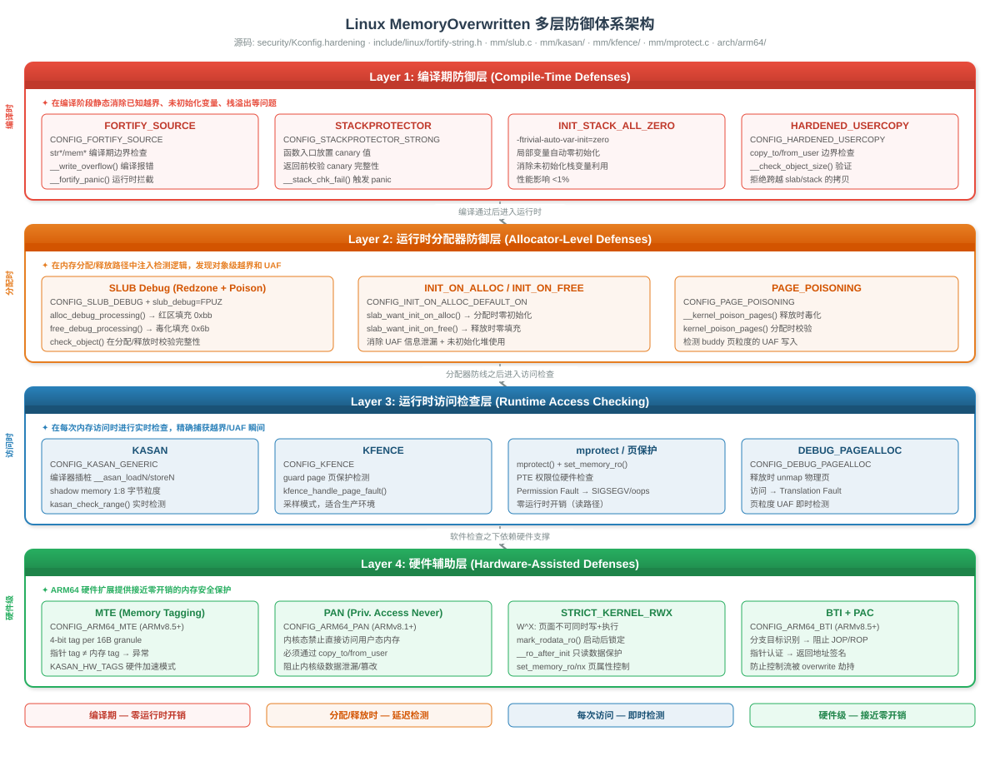
编译期防御层在代码编译阶段静态消除已知越界、未初始化变量和栈溢出问题，运行时开销极低或为零。
FORTIFY_SOURCE 通过编译器内建函数 __builtin_object_size() 在编译期确定缓冲区大小，对 memcpy、strcpy、memset 等函数进行边界检查。
源码：security/Kconfig.hardening:216、include/linux/fortify-string.h
// include/linux/fortify-string.h — 核心宏定义
#define __FORTIFY_INLINE extern __always_inline __gnu_inline __overloadable
// 编译期可确定的越界 → 直接报错，编译失败
void __write_overflow(void) __compiletime_error(
"detected write beyond size of object (1st parameter)");
void __read_overflow(void) __compiletime_error(
"detected read beyond size of object (1st parameter)");
// 编译期无法确定 → 运行时检查并 panic
void __fortify_panic(const u8 reason, const size_t avail,
const size_t size) __cold __noreturn;
// 覆盖的函数族（编译器自动替换为检查版本）
// strncpy, strnlen, strlen, strscpy, strlcat, strcat, strncat,
// memset, memcpy, memmove, memscan, memcmp, memchr, kmemdup, strcpy工作流程：
源码中的 memcpy(dst, src, len)
│
▼ GCC/Clang __builtin_object_size(dst)
┌─────┴─────────┐
│编译期可确定大小│
└─────┬─────────┘
│
┌─────┴──────┐ ┌──────────────┐
│ len > size │── Yes ──>│ __write_overflow() │ → 编译失败
└─────┬──────┘ └──────────────┘
│ No / 运行时
▼
fortify_panic() ← 运行时检测到越界 → BUG()/panicCONFIG 配置：
CONFIG_FORTIFY_SOURCE=y # security/Kconfig.hardening
CONFIG_ARCH_HAS_FORTIFY_SOURCE=y # 架构支持（arm64 默认选中）栈保护器在函数入口将随机 canary 值放置在返回地址前，函数返回时校验。栈缓冲区溢出会覆盖 canary，触发检测。
源码：arch/Kconfig:700
// arch/Kconfig — 配置说明
config STACKPROTECTOR
bool "Stack Protector buffer overflow detection"
default y
// 函数入口: canary 值 → [局部变量][canary][保存的 FP][返回地址]
// 函数出口: 校验 canary，不匹配则调用 __stack_chk_fail()
config STACKPROTECTOR_STRONG
bool "Strong Stack Protector"
default y
// 对以下函数添加保护:
// - 局部变量地址被用作赋值右值或函数参数
// - 包含数组或 union（含字符数组）的局部变量
// - 使用 alloca() 的函数ARM64 栈帧布局：
高地址 ┌──────────────────┐
│ 返回地址 (LR) │ ← 攻击目标
├──────────────────┤
│ 保存的 FP (X29) │
├──────────────────┤
│ Stack Canary │ ← __stack_chk_guard (随机值)
├──────────────────┤
│ 局部变量 buf[] │ ← 溢出方向 ↑
低地址 └──────────────────┘
溢出 buf[] → 覆盖 canary → 函数返回时 __stack_chk_fail() → panic通过编译器标志 -ftrivial-auto-var-init=zero 强制所有栈局部变量在函数入口时零初始化，消除未初始化栈变量泄漏和利用。
源码：security/Kconfig.hardening:66、Makefile:926
# Makefile:926 — 编译器标志
ifdef CONFIG_INIT_STACK_ALL_ZERO
KBUILD_CFLAGS += -ftrivial-auto-var-init=zero
endif// security/Kconfig.hardening — 三种选择
config INIT_STACK_NONE // 不初始化（最弱）
config INIT_STACK_ALL_PATTERN // 0xAA/0xFF 模式初始化（易暴露 bug）
config INIT_STACK_ALL_ZERO // 零初始化（最强且最安全）
// 字符串立即 NUL 终止，指针 = NULL，索引 = 0，大小 = 0
// 性能影响 < 1%，推荐生产环境使用在 copy_to_user()/copy_from_user() 路径上检查源/目的缓冲区是否合法，拒绝跨越 slab 对象边界、非栈/非堆区域的拷贝。
源码：mm/usercopy.c:215、security/Kconfig.hardening:225
// mm/usercopy.c — 核心检查函数
void __check_object_size(const void *ptr, unsigned long n, bool to_user)
{
if (!n) return;
check_bogus_address((const unsigned long)ptr, n, to_user); // 无效地址
switch (check_stack_object(ptr, n)) { // 栈范围检查
case GOOD_FRAME: case GOOD_STACK: return;
default: usercopy_abort("process stack", ...);
}
check_heap_object(ptr, n, to_user); // 堆对象检查
check_kernel_text_object((const unsigned long)ptr, n, ...); // 内核 text 保护
}
// check_heap_object 会调用:
// → folio_slab(folio) → __check_heap_object()
// 验证 copy 范围不超过 slab 对象边界编译期防御层总结：
| 机制 | CONFIG | 检测目标 | 运行时开销 | 推荐 |
|---|---|---|---|---|
| FORTIFY_SOURCE | CONFIG_FORTIFY_SOURCE |
str/mem 越界 | 极低 | 生产必选 |
| STACKPROTECTOR | CONFIG_STACKPROTECTOR_STRONG |
栈溢出 | 极低 (~0.1%) | 生产必选 |
| INIT_STACK_ALL_ZERO | CONFIG_INIT_STACK_ALL_ZERO |
未初始化栈变量 | <1% | 生产推荐 |
| HARDENED_USERCOPY | CONFIG_HARDENED_USERCOPY |
用户态拷贝越界 | 极低 | 生产推荐 |
在内存分配器的 kmalloc/kfree 路径中注入检测逻辑，通过红区 (redzone)、毒化 (poison)、零初始化等手段在分配和释放时校验对象完整性。
SLUB Debug 在对象前后添加红区（redzone），释放后用特征值毒化对象内容，在下次分配/释放时校验这些标记是否被篡改。
源码：mm/slub.c:1453（check_object）、mm/slub.c:1722（alloc_debug_processing）
// mm/slub.c — check_object() 校验流程
static int check_object(struct kmem_cache *s, struct slab *slab,
void *object, u8 val)
{
u8 *p = object;
u8 *endobject = object + s->object_size;
if (s->flags & SLAB_RED_ZONE) {
// 1. 检查左红区（对象前方）
check_bytes_and_report(s, slab, object, "Left Redzone",
object - s->red_left_pad, val, s->red_left_pad, ret);
// 2. 检查右红区（对象后方）
check_bytes_and_report(s, slab, object, "Right Redzone",
endobject, val, s->inuse - s->object_size, ret);
// 3. kmalloc 红区（orig_size 到 object_size 之间）
if (slub_debug_orig_size(s) && val == SLUB_RED_ACTIVE) {
orig_size = get_orig_size(s, object);
check_bytes_and_report(s, slab, object, "kmalloc Redzone",
p + orig_size, val, s->object_size - orig_size, ret);
}
}
if (s->flags & SLAB_POISON) {
// 4. 检查毒化值 — 释放后对象应全部为 POISON_FREE (0x6b)
check_bytes_and_report(s, slab, p, "Poison",
p + kasan_meta_size, POISON_FREE,
s->object_size - kasan_meta_size - 1, ret);
// 5. 尾部标记 — POISON_END (0xa5)
check_bytes_and_report(s, slab, p, "End Poison",
p + s->object_size - 1, POISON_END, 1, ret);
}
}关键参数：
# 内核命令行启用方式
slub_debug=FPUZ # 全局: Free check + Poison + User tracking + Red Zone
slub_debug=FZ,kmalloc-128 # 仅对 kmalloc-128 cache 启用 Free check + Red Zone在 slab 分配时（alloc）或释放时（free）自动将对象内存清零，消除未初始化堆使用和 UAF 信息泄漏。
源码：mm/slub.c:5279、mm/slub.c:2565
// mm/slub.c — 分配路径
init = slab_want_init_on_alloc(gfpflags, s);
// → 如果 CONFIG_INIT_ON_ALLOC_DEFAULT_ON=y 或 init_on_alloc=1
// 则 memset(object, 0, object_size) 在返回给调用者之前
// mm/slub.c — 释放路径
init = slab_want_init_on_free(s);
// → 如果 CONFIG_INIT_ON_FREE_DEFAULT_ON=y 或 init_on_free=1
// 则 memset(object, 0, object_size) 在对象回收前
// mm/page_alloc.c — 页分配器路径
bool init = want_init_on_free(); // free 时零填充整页
bool init = want_init_on_alloc(gfp_flags); // alloc 时零填充整页对比 SLUB_DEBUG vs INIT_ON_ALLOC/FREE：
| 特性 | SLUB_DEBUG | INIT_ON_ALLOC/FREE |
|---|---|---|
| 检测方式 | 特征值校验 | 零填充（无校验） |
| 检测 OOB | ✓ 红区检测 | ✗ 不检测 |
| 消除 UAF 利用 | ✓ 毒化值 | ✓ 零初始化 |
| 消除信息泄漏 | ✗ | ✓ 零初始化 |
| 性能开销 | 中等（校验逻辑） | 低（仅 memset） |
| 适用场景 | 开发调试 | 生产环境可接受 |
在 buddy 分配器层面，释放页面时填充毒化值，分配时校验，检测整页粒度的 UAF 写入。
源码：mm/page_poison.c:33
// mm/page_poison.c — 页毒化
void __kernel_poison_pages(struct page *page, int n)
{
// 释放时: 将整页填充 PAGE_POISON (0xaa)
// 分配时: 校验整页是否仍为 0xaa，被修改则报告 UAF
}访问检查层在每次内存读写时进行实时检查，能精确捕获越界和 UAF 发生的瞬间。这是最强力但也最昂贵的防御层。
KASAN 通过编译器插桩，在每次 load/store 前查询 shadow memory 判断访问是否合法。三种模式覆盖不同场景。
源码：mm/kasan/generic.c:197、lib/Kconfig.kasan
// mm/kasan/generic.c — 核心检查路径
bool kasan_check_range(const void *addr, size_t size, bool write,
unsigned long ret_ip)
{
// 查询 shadow memory: 每 8 字节对应 1 字节 shadow
// shadow == 0: 8 字节全部可访问
// shadow == N (1-7): 前 N 字节可访问
// shadow < 0: 完全不可访问（freed/redzone/etc.）
// 不匹配 → kasan_report() → 打印详细报告
}
// 编译器自动插桩生成的检查函数
void __asan_loadN(void *addr) { kasan_check_range(addr, N, false, _RET_IP_); }
void __asan_storeN(void *addr) { kasan_check_range(addr, N, true, _RET_IP_); }三种 KASAN 模式：
| 模式 | CONFIG | 实现方式 | 粒度 | 内存开销 | CPU 开销 | 适用场景 |
|---|---|---|---|---|---|---|
| Generic | KASAN_GENERIC |
编译器插桩 + shadow | 1 字节 | +87% | +50~100% | 开发/CI |
| SW Tags | KASAN_SW_TAGS |
软件标签 + shadow | 16 字节 | +12.5% | +30~50% | ARM64 开发 |
| HW Tags | KASAN_HW_TAGS |
MTE 硬件标签 | 16 字节 | +3% | <5% | 生产(MTE) |
KFENCE 利用 guard page 机制，以采样方式将少量 slab 对象放置在独立页面中，用页保护检测 OOB 和 UAF。
源码：mm/kfence/core.c:1068（__kfence_alloc）、mm/kfence/core.c:1193（kfence_handle_page_fault）
// KFENCE 内存布局:
// [guard page][object page][guard page][object page][guard page]...
// PROT_NONE 可读写 PROT_NONE 可读写 PROT_NONE
// 越界访问 guard page → Permission Fault → kfence_handle_page_fault()
// 释放后: object page 设为 PROT_NONE
// UAF 访问 → Permission Fault → kfence_handle_page_fault()利用 MMU 页表权限位（PTE）在硬件级别保护内存页面，非法访问立即触发 Permission Fault。详见 5.5 节。
释放时将物理页面 unmap（清除页表映射），任何对已释放页面的访问立即触发 Translation Fault。
ARM64 架构提供多种硬件扩展，在接近零开销的情况下提供内存安全保护。
ARMv8.5 引入的 MTE 为每 16 字节内存分配一个 4-bit 标签，指针的高 4 位携带对应标签。每次内存访问时硬件自动比较指针标签与内存标签，不匹配则触发异常。
源码：arch/arm64/Kconfig:2096、arch/arm64/include/asm/mte-kasan.h:151
// arch/arm64/include/asm/mte-kasan.h — MTE 标签操作
static inline void mte_set_mem_tag_range(void *addr, size_t size,
u8 tag, bool init)
{
// STG/STZG 指令: 为 [addr, addr+size) 设置标签
// 分配时: 设置新标签 → 返回带标签的指针
// 释放时: 更换标签 → 旧指针标签不匹配 → UAF 检测
}
// KASAN_HW_TAGS 模式利用 MTE:
// - kmalloc() → 着色标签 → 返回 tagged pointer
// - kfree() → 更换标签 → 旧指针立即失效
// - 越界 → 跨入邻居对象的不同标签 → 硬件异常MTE 的优势：
| 特性 | MTE | KASAN Generic | KFENCE |
|---|---|---|---|
| 检测粒度 | 16 字节 | 1 字节 | 页级 |
| CPU 开销 | <5% | +50~100% | <1% |
| 内存开销 | +3% (tag) | +87% (shadow) | 固定池 |
| 覆盖率 | 全量 | 全量 | 采样 |
| 硬件要求 | ARMv8.5+ | 无 | 无 |
PAN（ARMv8.1）禁止内核态直接访问用户态内存，强制所有用户态数据拷贝通过 copy_to_user/copy_from_user，与 HARDENED_USERCOPY 配合形成双重防线。
源码：arch/arm64/Kconfig:1861
config ARM64_PAN
bool "Enable support for Privileged Access Never (PAN)"
// ARMv8.1 Extensions
// 内核直接解引用用户态指针 → Permission Fault
// 必须通过 uaccess 原语 (copy_to_user 等) 访问确保内核内存页面不会同时具有写权限和执行权限（W^X），启动后通过 mark_rodata_ro() 将 .rodata 段设为只读。
源码：arch/arm64/mm/mmu.c:1138（mark_rodata_ro）、arch/arm64/mm/pageattr.c
// arch/arm64/mm/pageattr.c — 页属性修改
int set_memory_ro(unsigned long addr, int numpages); // 设置只读
int set_memory_rw(unsigned long addr, int numpages); // 恢复读写
int set_memory_nx(unsigned long addr, int numpages); // 设置不可执行
// __ro_after_init: 变量在 init 阶段可写，启动后变为只读
// static int critical_config __ro_after_init = 0;
// → mark_rodata_ro() 后写入触发 Permission FaultBTI 指令，非法跳转触发异常，阻止 JOP/ROP 攻击源码：arch/arm64/Kconfig:2033（BTI）
config ARM64_BTI
bool "Branch Target Identification support"
// 间接分支必须跳转到带 BTI 指令的位置
// 否则触发 Branch Target Exception
// 配合 PAC: 即使攻击者覆写了函数指针，也无法控制执行流
config ARM64_BTI_KERNEL
depends on ARM64_BTI
// 内核代码也启用 BTI 保护硬件辅助层总结：
| 机制 | 最低架构 | 防御目标 | 性能开销 | 配置 |
|---|---|---|---|---|
| MTE | ARMv8.5 | OOB/UAF（16B 粒度） | <5% | CONFIG_ARM64_MTE |
| PAN | ARMv8.1 | 内核/用户态隔离 | ~0% | CONFIG_ARM64_PAN |
| W^X | 全版本 | 代码注入/数据篡改 | ~0% | CONFIG_STRICT_KERNEL_RWX |
| BTI | ARMv8.5 | JOP/COP 攻击 | <1% | CONFIG_ARM64_BTI_KERNEL |
| PAC | ARMv8.3 | ROP/返回地址篡改 | <1% | 自动启用 |
不同阶段应选择不同的防御组合。核心原则是：编译期防御始终开启，运行时检测按环境调整。
【图 5.6-2】MemoryOverwritten 各层协同与组合策略
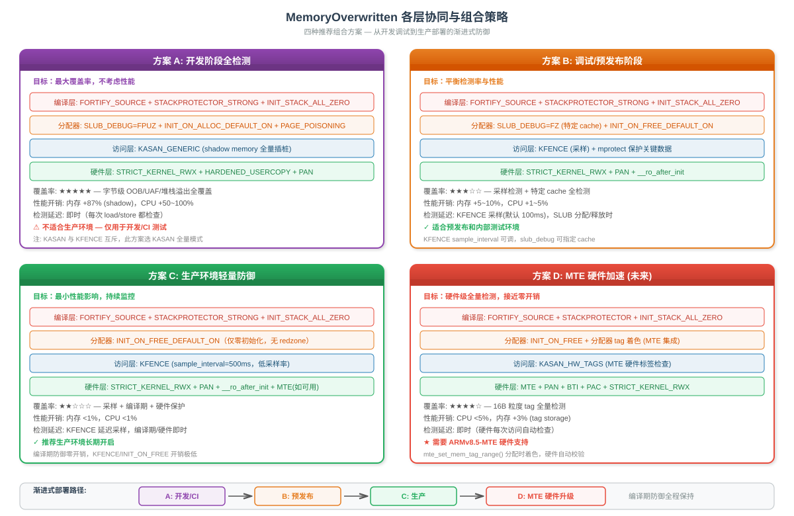
# .config 关键配置
CONFIG_FORTIFY_SOURCE=y
CONFIG_STACKPROTECTOR_STRONG=y
CONFIG_INIT_STACK_ALL_ZERO=y
CONFIG_HARDENED_USERCOPY=y
CONFIG_SLUB_DEBUG=y # 内核命令行: slub_debug=FPUZ
CONFIG_INIT_ON_ALLOC_DEFAULT_ON=y
CONFIG_PAGE_POISONING=y
CONFIG_KASAN=y
CONFIG_KASAN_GENERIC=y # 全量 shadow memory 插桩
CONFIG_KASAN_INLINE=y # 内联检查（更快但更大）
CONFIG_STRICT_KERNEL_RWX=y
CONFIG_ARM64_PAN=yCONFIG_FORTIFY_SOURCE=y
CONFIG_STACKPROTECTOR_STRONG=y
CONFIG_INIT_STACK_ALL_ZERO=y
CONFIG_HARDENED_USERCOPY=y
CONFIG_SLUB_DEBUG=y # 命令行: slub_debug=FZ,kmalloc-64,kmalloc-128
CONFIG_INIT_ON_FREE_DEFAULT_ON=y
CONFIG_KFENCE=y # 采样模式
CONFIG_KFENCE_SAMPLE_INTERVAL=100 # 每 100ms 采样一个分配
CONFIG_STRICT_KERNEL_RWX=y
CONFIG_ARM64_PAN=yCONFIG_FORTIFY_SOURCE=y
CONFIG_STACKPROTECTOR_STRONG=y
CONFIG_INIT_STACK_ALL_ZERO=y
CONFIG_HARDENED_USERCOPY=y
CONFIG_INIT_ON_FREE_DEFAULT_ON=y # 释放时零填充，消除 UAF 数据泄漏
CONFIG_KFENCE=y
CONFIG_KFENCE_SAMPLE_INTERVAL=500 # 低采样率，最小开销
CONFIG_STRICT_KERNEL_RWX=y
CONFIG_ARM64_PAN=yCONFIG_FORTIFY_SOURCE=y
CONFIG_STACKPROTECTOR_STRONG=y
CONFIG_INIT_STACK_ALL_ZERO=y
CONFIG_HARDENED_USERCOPY=y
CONFIG_INIT_ON_FREE_DEFAULT_ON=y
CONFIG_ARM64_MTE=y
CONFIG_KASAN=y
CONFIG_KASAN_HW_TAGS=y # MTE 硬件标签模式 KASAN
CONFIG_STRICT_KERNEL_RWX=y
CONFIG_ARM64_PAN=y
CONFIG_ARM64_BTI_KERNEL=y┌──────────────────────────────────────────────────────────────┐
│ 互斥与依赖关系 │
├──────────────────────────────────────────────────────────────┤
│ │
│ KASAN_GENERIC ─── 互斥 ──── KASAN_SW_TAGS │
│ │ │ │
│ └──── 互斥 ──── KASAN_HW_TAGS │
│ │ │
│ 依赖 ARM64_MTE │
│ │
│ KASAN ──── 互斥 ──── KMSAN (Memory Sanitizer) │
│ │
│ KFENCE ─── 可共存 ── KASAN (互补: 采样 + 全量) │
│ KFENCE ─── 可共存 ── SLUB_DEBUG (不同维度检测) │
│ │
│ SLUB_DEBUG ── 依赖 ─── KASAN_GENERIC (自动 select) │
│ SLUB_DEBUG ── 依赖 ─── KASAN_SW_TAGS (自动 select) │
│ │
│ INIT_ON_ALLOC ── 与 SLAB_POISON 冲突时 POISON 优先 │
│ PAGE_POISONING ── 需要 DEBUG_PAGEALLOC 协同 │
│ │
│ 编译层 (FORTIFY/STACKPROTECTOR/INIT_STACK) 无互斥，全开 │
└──────────────────────────────────────────────────────────────┘各方案检测能力对比矩阵：
| 检测目标 | 方案 A (开发) | 方案 B (调试) | 方案 C (生产) | 方案 D (MTE) |
|---|---|---|---|---|
| 堆 OOB (slab) | ★★★★★ | ★★★☆☆ | ★☆☆☆☆ | ★★★★☆ |
| 堆 UAF | ★★★★★ | ★★★☆☆ | ★★☆☆☆ | ★★★★☆ |
| 栈溢出 | ★★★★★ | ★★★★★ | ★★★★★ | ★★★★★ |
| 栈未初始化 | ★★★★★ | ★★★★★ | ★★★★★ | ★★★★★ |
| 堆未初始化 | ★★★★☆ | ★★★☆☆ | ★★★☆☆ | ★★★☆☆ |
| str/mem 越界 | ★★★★★ | ★★★★★ | ★★★★★ | ★★★★★ |
| 用户态拷贝越界 | ★★★★★ | ★★★★★ | ★★★★★ | ★★★★★ |
| 内核数据篡改 | ★★★★☆ | ★★★★☆ | ★★★★☆ | ★★★★★ |
| 控制流劫持 | ★★★☆☆ | ★★★☆☆ | ★★★☆☆ | ★★★★★ |
| 性能开销 | 极高 | 中等 | 极低 | 低 |
本节汇总 MemoryOverwritten 三大检测机制（KASAN / KFENCE / SLUB Debug）的核心数据结构。理解这些结构的字段含义与关联关系，是分析内核错误报告、解读 shadow memory 和编写调试脚本的基础。
KASAN 的数据结构围绕追踪信息、对象元数据、错误报告、隔离队列四个维度展开。Generic 模式使用 per-object 元数据 + quarantine 队列；SW_TAGS/HW_TAGS 模式使用全局环形栈缓冲替代。
【图 5.7-1】KASAN 关键数据结构关系图
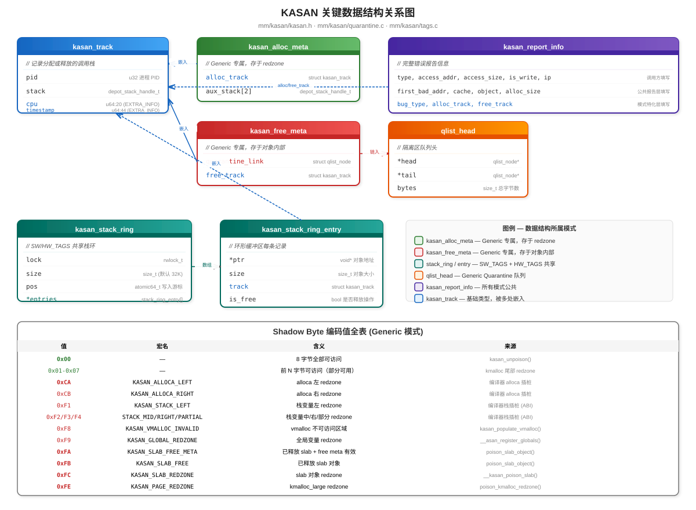
每次分配或释放操作都会创建一份 kasan_track，记录操作时的进程上下文和调用栈。
/* mm/kasan/kasan.h */
struct kasan_track {
u32 pid; /* 操作时的进程 PID */
depot_stack_handle_t stack; /* stackdepot 压缩栈句柄 */
#ifdef CONFIG_KASAN_EXTRA_INFO
u64 cpu:20; /* 操作时的 CPU 编号 (0~1048575) */
u64 timestamp:44; /* 纳秒级时间戳 (约 200 天回绕) */
#endif
};stack 通过 stack_depot_save() 压缩存储，多个相同调用栈共享同一 handle，节省内存CONFIG_KASAN_EXTRA_INFO 额外记录 CPU 和时间戳，便于多核并发场景定位/* mm/kasan/kasan.h — 仅 CONFIG_KASAN_GENERIC */
struct kasan_alloc_meta {
struct kasan_track alloc_track; /* 分配时的调用栈 */
depot_stack_handle_t aux_stack[2]; /* 辅助栈: rcu_read_lock 等上下文 */
};kasan_cache.alloc_meta_offset 定位）aux_stack[2] 记录如 rcu_read_lock / call_rcu 等间接操作的栈，帮助定位 RCU 相关 UAF/* mm/kasan/kasan.h — 仅 CONFIG_KASAN_GENERIC */
struct kasan_free_meta {
struct qlist_node quarantine_link; /* 隔离队列单链表节点 */
struct kasan_track free_track; /* 释放时的调用栈 */
};kasan_cache.free_meta_offset 定位）KASAN_SLAB_FREE_META (0xFA) 时表示该 meta 有效/* mm/kasan/kasan.h */
struct kasan_report_info {
/* 第一阶段: kasan_report_*() 填充 */
enum kasan_report_type type; /* ACCESS / INVALID_FREE / DOUBLE_FREE */
const void *access_addr; /* 非法访问地址 */
size_t access_size; /* 访问字节数 */
bool is_write; /* 读/写方向 */
unsigned long ip; /* 返回地址 (调用者) */
/* 第二阶段: 通用报告代码填充 */
const void *first_bad_addr; /* 首个越界 shadow byte 对应地址 */
struct kmem_cache *cache; /* 对象所属 slab 缓存 */
void *object; /* 对象起始地址 */
size_t alloc_size; /* 实际请求的分配大小 */
/* 第三阶段: 模式特定代码填充 */
const char *bug_type; /* "slab-out-of-bounds" 等 */
struct kasan_track alloc_track; /* 分配栈 (拷贝) */
struct kasan_track free_track; /* 释放栈 (拷贝) */
};/* mm/kasan/kasan.h — 编译器自动生成，不可修改布局 */
struct kasan_global {
const void *beg; /* 全局变量起始地址 */
size_t size; /* 变量实际大小 */
size_t size_with_redzone; /* 含 redzone (32B 对齐) */
const void *name; /* 变量名字符串 */
const void *module_name; /* 所属模块名 */
unsigned long has_dynamic_init; /* C++ 动态初始化标记 */
struct kasan_source_location *location; /* 源文件位置 (ABI v4+) */
char *odr_indicator; /* ODR 检测指示器 (ABI v5+) */
};.init 段注册，内核启动时调用 __asan_register_globals() 对 redzone 做 shadow 染色Quarantine 延迟释放已 free 的对象，使 UAF 在更长时间窗口内被捕获。
/* mm/kasan/quarantine.c */
struct qlist_node {
struct qlist_node *next; /* 单链表下一节点 */
};
struct qlist_head {
struct qlist_node *head; /* 队首 */
struct qlist_node *tail; /* 队尾 */
size_t bytes; /* 队列中所有对象总字节数 */
bool offline; /* CPU 离线标记 */
};隔离架构采用两级队列：
Per-CPU: cpu_quarantine (qlist_head) ← kfree() 时加入
│ 满 1MB (QUARANTINE_PERCPU_SIZE)
▼
Global: global_quarantine[BATCHES] ← 环形 FIFO，quarantine_lock 保护
│ 超过 quarantine_max_size (物理内存 / 32)
▼
Per-CPU: shrink_qlist (cpu_shrink_qlist) ← qlist_free_all() 真正归还 slabQUARANTINE_BATCHES = max(1024, 4 × NR_CPUS) — 全局队列批次数quarantine_max_size = totalram / QUARANTINE_FRACTION (32) — 内存上限Tag-based 模式不使用 quarantine，改用全局环形缓冲记录最近的分配/释放操作。
/* mm/kasan/kasan.h — CONFIG_KASAN_SW_TAGS || CONFIG_KASAN_HW_TAGS */
struct kasan_stack_ring_entry {
void *ptr; /* 对象地址 */
size_t size; /* 对象大小 */
struct kasan_track track; /* 分配或释放的调用栈 */
bool is_free; /* true=释放操作, false=分配操作 */
};
struct kasan_stack_ring {
rwlock_t lock; /* 读写锁 */
size_t size; /* 环容量 (条目数) */
atomic64_t pos; /* 原子写指针 (取模定位) */
struct kasan_stack_ring_entry *entries; /* 环形数组 */
};pos 用 atomic64_inc_return() 递增，% size 定位槽位/* include/linux/kasan.h — CONFIG_KASAN_GENERIC */
struct kasan_cache {
int alloc_meta_offset; /* kasan_alloc_meta 在对象中的偏移 */
int free_meta_offset; /* kasan_free_meta 在对象中的偏移 */
};kmem_cache.kasan_info 字段kasan_cache_create() 在 slab 缓存创建时计算偏移free_meta_offset = KASAN_NO_FREE_META (INT_MAX) 表示不存储 free meta| Shadow 值 | 宏名 | 含义 |
|---|---|---|
0x00 |
— | 整个 granule (8B) 可访问 |
0x01~0x07 |
— | granule 前 N 字节可访问 |
0xF8 |
KASAN_VMALLOC_INVALID |
vmalloc 不可访问区域 |
0xF9 |
KASAN_GLOBAL_REDZONE |
全局变量 redzone |
0xFA |
KASAN_SLAB_FREE_META |
已释放对象 (含 free meta) |
0xFB |
KASAN_SLAB_FREE |
已释放 slab 对象 |
0xFC |
KASAN_SLAB_REDZONE |
slab 对象 redzone |
0xFE |
KASAN_PAGE_REDZONE |
kmalloc_large 的 redzone |
0xFF |
KASAN_PAGE_FREE |
已释放的页 |
0xF1 |
KASAN_STACK_LEFT |
栈左侧 redzone |
0xF2 |
KASAN_STACK_MID |
栈中间 redzone |
0xF3 |
KASAN_STACK_RIGHT |
栈右侧 redzone |
0xF4 |
KASAN_STACK_PARTIAL |
栈部分可访问 |
0xCA |
KASAN_ALLOCA_LEFT |
alloca 左侧 redzone |
0xCB |
KASAN_ALLOCA_RIGHT |
alloca 右侧 redzone |
KFENCE 的数据结构以 kfence_metadata 为核心，每个受保护对象一份元数据，搭配全局池布局和状态机管理。
【图 5.7-2】KFENCE 关键数据结构关系图
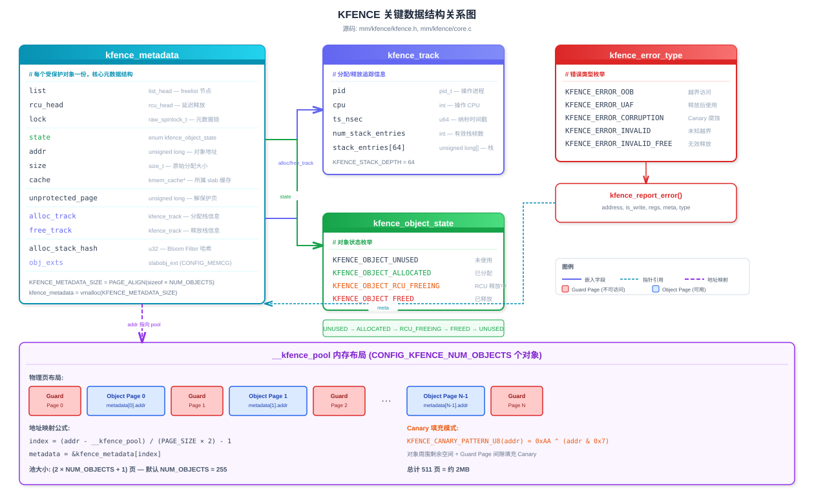
/* mm/kfence/kfence.h */
struct kfence_metadata {
struct list_head list; /* freelist 链表节点 */
struct rcu_head rcu_head; /* RCU 延迟释放 */
raw_spinlock_t lock; /* 元数据自旋锁 */
enum kfence_object_state state; /* 对象当前状态 */
unsigned long addr; /* 对象在 pool 中的地址 */
size_t size; /* 原始分配大小 */
struct kmem_cache *cache; /* 所属 slab 缓存 (可能已销毁=NULL) */
unsigned long unprotected_page; /* 非法访问时被解保护的页地址 */
struct kfence_track alloc_track; /* 分配栈追踪 */
struct kfence_track free_track; /* 释放栈追踪 */
u32 alloc_stack_hash; /* Bloom Filter 覆盖率哈希 */
#ifdef CONFIG_MEMCG
struct slabobj_ext obj_exts; /* memcg 扩展信息 */
#endif
};kfence_metadata[NUM_OBJECTS] 通过 vmalloc 分配addr_to_metadata() 通过地址映射公式 (addr - pool) / (PAGE_SIZE × 2) - 1 定位lock 保护并发场景下 alloc / free / page_fault 的元数据一致性/* mm/kfence/kfence.h */
struct kfence_track {
pid_t pid; /* 操作进程 PID */
int cpu; /* 操作 CPU */
u64 ts_nsec; /* 纳秒时间戳 */
int num_stack_entries; /* 有效栈帧数 */
unsigned long stack_entries[KFENCE_STACK_DEPTH]; /* 栈帧数组 (64 层) */
};KFENCE_STACK_DEPTH = 64 — 最多记录 64 层调用栈kasan_track 设计不同：KFENCE 对象数量少（默认 255），完整存储可接受/* mm/kfence/kfence.h */
enum kfence_object_state {
KFENCE_OBJECT_UNUSED, /* 初始/回收后 — 在 freelist */
KFENCE_OBJECT_ALLOCATED, /* 已分配 — 正在使用 */
KFENCE_OBJECT_RCU_FREEING, /* 通过 kfree_rcu() 释放中 */
KFENCE_OBJECT_FREED, /* 已释放 — 等待重新分配 */
};状态转换路径：
UNUSED ──alloc──→ ALLOCATED ──free──→ FREED ──alloc──→ ALLOCATED
│ ↑
└──kfree_rcu──→ RCU_FREEING ──rcu_cb─┘metadata_update_state() 负责状态迁移，内含 WARN_ON 校验非法转换/* mm/kfence/kfence.h */
enum kfence_error_type {
KFENCE_ERROR_OOB, /* 越界访问 — Guard Page 触发 Page Fault */
KFENCE_ERROR_UAF, /* 释放后使用 — 未映射页触发 Page Fault */
KFENCE_ERROR_CORRUPTION, /* 内存腐蚀 — Canary 校验失败 (释放时检测) */
KFENCE_ERROR_INVALID, /* 未知类型非法访问 */
KFENCE_ERROR_INVALID_FREE, /* 无效释放 (double-free 等) */
};/* mm/kfence/core.c */
char *__kfence_pool __read_mostly; /* 池起始地址 */
struct kfence_metadata *kfence_metadata __read_mostly; /* 元数据数组 */
static struct kfence_metadata *kfence_metadata_init __read_mostly;
static LIST_HEAD(kfence_freelist); /* 空闲元数据链表 */
static DEFINE_RAW_SPINLOCK(kfence_freelist_lock); /* freelist 锁 */池物理布局（2 × NUM_OBJECTS + 1 页）：
┌──────────┬──────────────┬──────────┬──────────────┬──────────┬───┬──────────┐
│ Guard[0] │ Object[0] │ Guard[1] │ Object[1] │ Guard[2] │...│ Guard[N] │
│ PROT_NONE│ 4KB │ PROT_NONE│ 4KB │ PROT_NONE│ │ PROT_NONE│
└──────────┴──────────────┴──────────┴──────────────┴──────────┴───┴──────────┘kfence_protect_page() 设为不可访问（arm64: set_pte_at(pte_clear))0xAA ^ (addr & 0x7) — 基于地址变化，提高腐蚀检测概率SLUB Debug 的数据结构围绕 kmem_cache 的调试字段、struct slab 页描述符和 struct track 追踪信息展开，通过对象内存布局中的 Red Zone / Poison / Track 实现检测。
【图 5.7-3】SLUB Debug 关键数据结构关系图
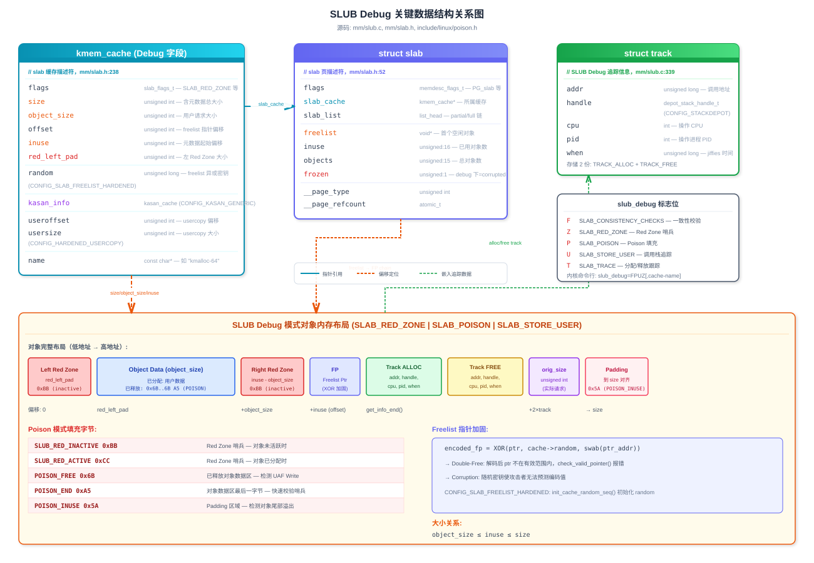
/* mm/slab.h:238 — 仅列出 Debug 相关字段 */
struct kmem_cache {
slab_flags_t flags; /* SLAB_RED_ZONE | SLAB_POISON | SLAB_STORE_USER 等 */
unsigned int size; /* 含所有元数据的对象总大小 */
unsigned int object_size; /* 用户请求的对象净大小 */
unsigned int offset; /* freelist 指针在对象中的偏移 */
unsigned int inuse; /* 元数据起始偏移 (object_size ≤ inuse ≤ size) */
unsigned int red_left_pad; /* 左 Red Zone 大小 (字节) */
const char *name; /* 缓存名称，如 "kmalloc-64" */
#ifdef CONFIG_SLAB_FREELIST_HARDENED
unsigned long random; /* freelist 指针 XOR 加固密钥 */
#endif
#ifdef CONFIG_KASAN_GENERIC
struct kasan_cache kasan_info; /* KASAN alloc/free meta 偏移 */
#endif
#ifdef CONFIG_HARDENED_USERCOPY
unsigned int useroffset; /* usercopy 允许区域偏移 */
unsigned int usersize; /* usercopy 允许区域大小 */
#endif
};大小关系：object_size ≤ inuse ≤ size
object_size：用户请求的净大小inuse：对象数据 + 右 Red Zone 的结尾，freelist 指针存于此偏移size：含 left redzone + 数据 + right redzone + FP + track × 2 + orig_size + padding/* mm/slab.h:52 */
struct slab {
memdesc_flags_t flags; /* PG_slab 页标记 */
struct kmem_cache *slab_cache; /* 所属缓存 (反向指针) */
struct list_head slab_list; /* partial / full 链表节点 */
void *freelist; /* 首个空闲对象 (FP 链起点) */
unsigned inuse:16; /* 已分配对象计数 */
unsigned objects:15; /* 本页总对象数 */
unsigned frozen:1; /* debug 模式下=corrupted 标记 */
/* ... */
};freelist 指向首个空闲对象，每个空闲对象内嵌 FP 指向下一个frozen 位复用为 corrupted 标记，标识 slab 已被检测到损坏/* mm/slub.c:339 */
struct track {
unsigned long addr; /* 调用者地址 (返回地址) */
#ifdef CONFIG_STACKDEPOT
depot_stack_handle_t handle; /* stackdepot 压缩栈句柄 */
#endif
int cpu; /* 操作 CPU */
int pid; /* 操作进程 PID */
unsigned long when; /* 操作时间 (jiffies) */
};TRACK_ALLOC + TRACK_FREEget_info_end(s) 偏移处（紧跟 freelist 指针之后）get_track(s, object, TRACK_ALLOC/FREE) 获取指定 track启用 slub_debug=FPUZ 时，单个对象的完整内存布局：
低地址 高地址
┌────────────┬───────────────┬────────────┬────┬───────────┬───────────┬─────────┬─────────┐
│ Left │ Object Data │ Right │ FP │ Track │ Track │ orig │ Padding │
│ Red Zone │ (object_size) │ Red Zone │ │ ALLOC │ FREE │ _size │ │
│ 0xBB │ 0x6B(freed) │ 0xBB │XOR │ addr,pid │ addr,pid │ uint │ 0x5A │
│ │ user(alloc'd) │ │ │ cpu,when │ cpu,when │ │ │
└────────────┴───────────────┴────────────┴────┴───────────┴───────────┴─────────┴─────────┘
│← red_left_pad →│← object_size →│←inuse-obj→│ │← 2×sizeof(track) →│ │← size →│| 字节值 | 宏名 | 填充区域 | 检测目的 |
|---|---|---|---|
0xBB |
SLUB_RED_INACTIVE |
Left/Right Red Zone (未活跃) | 检测左/右越界写 |
0xCC |
SLUB_RED_ACTIVE |
Left/Right Red Zone (已分配) | 检测分配期间越界 |
0x6B |
POISON_FREE |
已释放对象数据区 | 检测 UAF Write |
0xA5 |
POISON_END |
对象数据区最后 1 字节 | 快速校验哨兵 |
0x5A |
POISON_INUSE |
对象尾部 Padding | 检测尾部溢出 |
/* mm/slub.c — freelist 编码/解码 */
encoded_fp = ptr ^ cache->random ^ swab(ptr_addr)cache->random：缓存创建时 get_random_long() 生成的密钥swab(ptr_addr)：指针地址字节翻转，增加混淆check_valid_pointer() 报 BUG_TYPE "double free"| 维度 | KASAN (Generic) | KFENCE | SLUB Debug |
|---|---|---|---|
| 追踪结构 | kasan_track (stackdepot 压缩) |
kfence_track (完整栈帧数组) |
struct track (stackdepot 压缩) |
| 元数据位置 | 对象 redzone 内 | 独立 vmalloc 数组 | 对象尾部内嵌 |
| 缓存集成 | kasan_cache 嵌入 kmem_cache |
无 (独立池) | kmem_cache.flags 控制 |
| 释放后保护 | Quarantine 延迟回收 | Guard Page 不可访问 | Poison 填充 0x6B |
| 状态管理 | Shadow byte 编码 | kfence_object_state 枚举 |
slab.frozen 复用标记 |
| 对象数量 | 全部 slab 对象 | 默认 255 个 | 全部 slab 对象 |
| 内存开销 | +87% (shadow memory) | ~2MB (固定池) | +10~20% (metadata) |
| 时间记录 | timestamp (可选) |
ts_nsec (纳秒) |
when (jiffies) |
MemoryOverwritten 检测机制的效果取决于正确的内核配置和调优参数。配置分为三个阶段：
【图 5.8-1】MemoryOverwritten 配置选择决策图
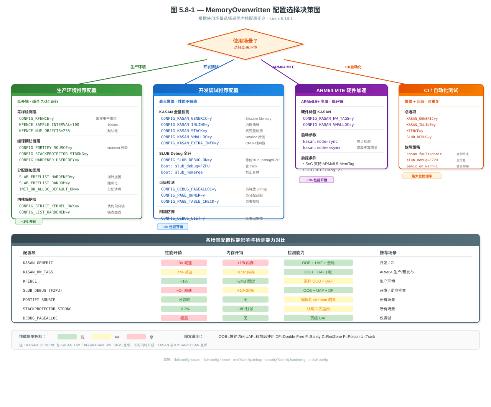
KASAN 配置围绕模式选择、插桩方式、检测范围、错误处理四个维度展开。
| Kconfig 选项 | 源文件 | 默认 | 适用架构 | 内存开销 | 性能开销 |
|---|---|---|---|---|---|
CONFIG_KASAN_GENERIC |
lib/Kconfig.kasan |
N | 所有 KASAN 架构 | +1/8 内存 (Shadow) | ~3× 减速 |
CONFIG_KASAN_SW_TAGS |
lib/Kconfig.kasan |
N | ARM64 (TBI) | +1/16 内存 | ~20% 减速 |
CONFIG_KASAN_HW_TAGS |
lib/Kconfig.kasan |
N | ARM64 (ARMv8.5+ MTE) | +1/32 内存 | ~5% 减速 |
依赖关系：
KASAN_GENERIC → HAVE_ARCH_KASAN + CC_HAS_KASAN_GENERIC (GCC 8.3+ / Clang)
KASAN_SW_TAGS → HAVE_ARCH_KASAN_SW_TAGS + CC_HAS_KASAN_SW_TAGS (GCC 11+ / Clang)
ARM64 专属（依赖 Top Byte Ignore）
KASAN_HW_TAGS → HAVE_ARCH_KASAN_HW_TAGS (GCC 10+ / Clang 12+)
ARM64 专属（依赖 ARMv8.5-MemTag 硬件）| Kconfig 选项 | 说明 | 优势 | 劣势 |
|---|---|---|---|
CONFIG_KASAN_INLINE=y |
编译器直接插入内存检查代码 | 性能提升 ~2× (vs Outline) | 内核 .text 体积增大 |
CONFIG_KASAN_OUTLINE=y |
编译器插入函数调用 | 内核体积小 | 性能较低 |
| Kconfig 选项 | 默认 | 说明 |
|---|---|---|
CONFIG_KASAN_STACK=y |
GCC: Y, Clang: N | 栈变量 OOB 检测。Clang 下可能导致栈空间膨胀 |
CONFIG_KASAN_VMALLOC=y |
N | 检测 vmalloc 区域访问。HW_TAGS 模式仅覆盖 VM_ALLOC 映射 |
CONFIG_KASAN_EXTRA_INFO=y |
N | 记录每次分配/释放的 CPU 号和时间戳（增加 8~16 字节元数据） |
# 完全禁用 KASAN（编译了但不启用）
kasan=off
# 检测模式控制（仅 HW_TAGS / SW_TAGS 有效）
kasan.mode=sync # 同步检测：每次访问立即检查（精确但慢）
kasan.mode=async # 异步检测：批量检查（快但报告可能延迟）
kasan.mode=asymm # 非对称：读异步、写同步（推荐生产 ARM64 MTE）
# 错误处理策略
kasan.fault=report # 仅打印报告，继续运行（默认）
kasan.fault=panic # 检测到错误立即 panic（CI/测试环境推荐）
# 调用栈记录
kasan.stacktrace=off # 禁用调用栈（减少开销）# HW_TAGS / SW_TAGS 模式支持运行时切换
echo sync > /sys/module/kasan/parameters/mode
echo async > /sys/module/kasan/parameters/mode
echo panic > /sys/module/kasan/parameters/fault
# 注意：Generic 模式无 sysfs 运行时控制KFENCE 是面向生产环境的低开销采样检测器，配置侧重于采样频率与池大小的平衡。
| Kconfig 选项 | 源文件 | 默认 | 说明 |
|---|---|---|---|
CONFIG_KFENCE |
lib/Kconfig.kfence |
N | 启用 KFENCE 功能 |
CONFIG_KFENCE_SAMPLE_INTERVAL |
lib/Kconfig.kfence |
100 | 采样间隔 (毫秒)。值越小检测率越高、开销越大 |
CONFIG_KFENCE_NUM_OBJECTS |
lib/Kconfig.kfence |
255 | 同时保护的对象数 (1~65535)。每个对象需 2 个 guard page |
CONFIG_KFENCE_DEFERRABLE |
lib/Kconfig.kfence |
N | 使用可延迟定时器，避免 CPU 唤醒（省电但采样不精确） |
CONFIG_KFENCE_STATIC_KEYS |
lib/Kconfig.kfence |
N | 使用静态分支。仅建议采样间隔极大 (>100ms) 时启用 |
CONFIG_KFENCE_STRESS_TEST_FAULTS |
lib/Kconfig.kfence |
0 | 随机注入页保护故障。仅测试用，生产必须为 0 |
依赖关系：HAVE_ARCH_KFENCE + STACKTRACE + IRQ_WORK
内存开销：(NUM_OBJECTS × 2 + 1) × PAGE_SIZE ≈ 255 × 2 × 4KB ≈ 2MB
# 覆盖编译期采样间隔
kfence.sample_interval=50 # 更频繁采样（更高检测率）
kfence.sample_interval=500 # 降低采样频率（更低开销）
kfence.sample_interval=0 # 完全禁用 KFENCE
# panic 时校验所有 Canary 字节
kfence.check_on_panic=1# 查看/修改参数
cat /sys/module/kfence/parameters/sample_interval # 当前采样间隔
echo 200 > /sys/module/kfence/parameters/sample_interval # 动态调整
# 池使用率阈值：超过此比例后跳过已覆盖的分配源
echo 80 > /sys/module/kfence/parameters/skip_covered_thresh
# 每次采样时额外保护的对象数
echo 2 > /sys/module/kfence/parameters/burst
# 动态禁用/启用
echo 0 > /sys/module/kfence/parameters/sample_interval # 禁用
echo 100 > /sys/module/kfence/parameters/sample_interval # 重新启用| 场景 | SAMPLE_INTERVAL |
NUM_OBJECTS |
skip_covered_thresh |
|---|---|---|---|
| 生产（低开销） | 100~500 ms | 255 | 75% |
| 生产（积极检测） | 10~50 ms | 1024 | 50% |
| CI / 测试 | 1~10 ms | 4096 | 0% (不跳过) |
SLUB Debug 通过标志字母精确控制检测项目，支持全局和逐缓存粒度。
| Kconfig 选项 | 源文件 | 默认 | 说明 |
|---|---|---|---|
CONFIG_SLUB_DEBUG |
mm/Kconfig.debug |
Y | 编译 SLUB Debug 支持（前提条件） |
CONFIG_SLUB_DEBUG_ON |
mm/Kconfig.debug |
N | 默认开启 SLUB 全部检测。等价于 slub_debug=FZP |
CONFIG_SLUB_RCU_DEBUG |
mm/Kconfig.debug |
Y (if KASAN) | 启用 TYPESAFE_BY_RCU 缓存的 UAF 检测 |
依赖关系：SYSFS + !SLUB_TINY
| 字母 | 全称 | 检测项 | 开销 | 说明 |
|---|---|---|---|---|
F |
Sanity | 元数据完整性 | 低 | 基础 slab 结构校验 |
Z |
Red Zone | 缓冲区溢出 | 中 | 对象前后填充哨兵字节 0xBB |
P |
Poison | UAF 写入 | 中 | 释放后填充 0x6B，分配时校验 |
U |
Track | 分配/释放栈 | 高 | 记录调用栈（stackdepot 压缩） |
T |
Trace | 操作日志 | 极高 | printk 每次分配/释放（仅排查用） |
A |
All | 全部 | 极高 | 等价于 FZPU（不含 T） |
O |
Audit | 审计 | 中 | 等价于 FU |
# 全局开启（所有 slab 缓存）
slub_debug=FZ # Sanity + RedZone
slub_debug=FZPU # 全量检测（推荐调试）
slub_debug=A # 等同 FZPU
slub_debug=- # 关闭所有 SLUB debug
# 指定缓存（逗号分隔，支持通配符）
slub_debug=FZP,kmalloc-* # 仅 kmalloc 系列
slub_debug=FZPU,dentry # 仅 dentry 缓存
slub_debug=FZP,kmalloc-256:FZ,task_struct # 混合策略
# 禁止 slab 缓存合并（便于逐缓存排查）
slub_nomerge# 查看所有 slab 缓存
ls /sys/kernel/slab/
# 逐缓存开关
echo 1 > /sys/kernel/slab/kmalloc-64/sanity_checks
echo 1 > /sys/kernel/slab/kmalloc-64/red_zone
echo 1 > /sys/kernel/slab/kmalloc-64/poison
echo 1 > /sys/kernel/slab/kmalloc-64/trace
# 查看缓存状态
cat /sys/kernel/slab/kmalloc-64/slab_size # 含 debug 的实际大小
cat /sys/kernel/slab/kmalloc-64/object_size # 对象净大小
cat /sys/kernel/slab/kmalloc-64/objs_per_slab # 每 slab 对象数
# slabinfo 全局统计
cat /proc/slabinfo | head -5| Kconfig 选项 | 源文件 | 默认 | 性能开销 | 说明 |
|---|---|---|---|---|
CONFIG_FORTIFY_SOURCE |
security/Kconfig.hardening |
N | 可忽略 | str/mem 函数编译期+运行时边界校验 |
CONFIG_STACKPROTECTOR_STRONG |
arch/Kconfig |
Y | ~0.3% | 栈 Canary 保护 (~20% 函数) |
CONFIG_HARDENED_USERCOPY |
security/Kconfig.hardening |
N | 低 | 内核↔用户空间拷贝边界校验 |
CONFIG_LIST_HARDENED |
security/Kconfig.hardening |
N | 可忽略 | 链表操作完整性校验 |
CONFIG_STRICT_KERNEL_RWX |
arch/Kconfig |
Y | 无 | 内核代码段只读、数据段不可执行 |
CONFIG_SLAB_FREELIST_HARDENED |
mm/Kconfig |
Y | 可忽略 | Freelist 指针 XOR 加固 |
CONFIG_SLAB_FREELIST_RANDOM |
mm/Kconfig |
Y | 可忽略 | Freelist 顺序随机化 |
| Kconfig 选项 | 默认 | Boot 参数 | 性能开销 | 说明 |
|---|---|---|---|---|
CONFIG_INIT_ON_ALLOC_DEFAULT_ON |
N | init_on_alloc=1 |
<1% (典型), ~7% (极端) | 堆内存分配时自动清零 |
CONFIG_INIT_ON_FREE_DEFAULT_ON |
N | init_on_free=1 |
3~5% (典型), ~8% (极端) | 堆内存释放时自动清零 |
CONFIG_INIT_STACK_ALL_ZERO |
- | - | 低~中 | 栈变量全部零初始化（最安全） |
CONFIG_KSTACK_ERASE |
N | stack_erasing=1 |
~1% | 系统调用返回时毒化内核栈 |
| Kconfig 选项 | Boot 参数 | 默认 | 说明 |
|---|---|---|---|
CONFIG_DEBUG_PAGEALLOC |
debug_pagealloc=on |
N | 页释放后 unmap，UAF 立即触发 page fault |
CONFIG_PAGE_POISONING |
page_poison=1 |
N | 页释放后毒化填充 + 分配时校验 |
CONFIG_PAGE_TABLE_CHECK |
page_table_check=on |
N | 页表映射合法性同步校验 |
CONFIG_PAGE_OWNER |
page_owner=on |
N | 页分配调用栈追踪（debugfs 可查） |
| Kconfig 选项 | 说明 |
|---|---|
CONFIG_DEBUG_LIST |
链表操作扩展检测（比 LIST_HARDENED 更详细的错误报告） |
CONFIG_DEBUG_OBJECTS |
对象生命周期追踪（init → active → destroy） |
CONFIG_DEBUG_SG |
scatter-gather 表完整性校验 |
CONFIG_DEBUG_NOTIFIERS |
通知链回调完整性校验 |
【图 5.8-2】启动参数与运行时调优参数全景
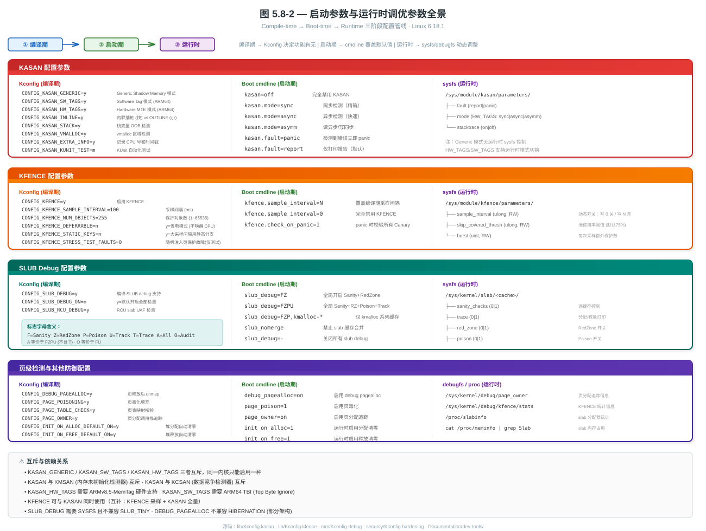
# defconfig 追加
CONFIG_KFENCE=y
CONFIG_KFENCE_SAMPLE_INTERVAL=100
CONFIG_KFENCE_NUM_OBJECTS=255
CONFIG_FORTIFY_SOURCE=y
CONFIG_STACKPROTECTOR_STRONG=y
CONFIG_HARDENED_USERCOPY=y
CONFIG_LIST_HARDENED=y
CONFIG_SLAB_FREELIST_HARDENED=y
CONFIG_SLAB_FREELIST_RANDOM=y
CONFIG_INIT_ON_ALLOC_DEFAULT_ON=y
CONFIG_STRICT_KERNEL_RWX=y# Boot cmdline
kfence.sample_interval=100特点：总性能开销 < 1%，覆盖最常见的 OOB/UAF 场景，适合长期运行。
# defconfig 追加（在组合一基础上增加）
CONFIG_KASAN_GENERIC=y
CONFIG_KASAN_INLINE=y
CONFIG_KASAN_STACK=y
CONFIG_KASAN_VMALLOC=y
CONFIG_KASAN_EXTRA_INFO=y
CONFIG_SLUB_DEBUG=y
CONFIG_DEBUG_PAGEALLOC=y
CONFIG_PAGE_OWNER=y
CONFIG_PAGE_TABLE_CHECK=y
CONFIG_DEBUG_LIST=y# Boot cmdline
slub_debug=FZPU slub_nomerge kasan.fault=report debug_pagealloc=on page_owner=on特点：最大化检测覆盖，性能约 3~5× 降低，适合功能验证和问题复现。
# defconfig 追加
CONFIG_KASAN_HW_TAGS=y
CONFIG_KASAN_VMALLOC=y
CONFIG_KFENCE=y
CONFIG_FORTIFY_SOURCE=y
CONFIG_STACKPROTECTOR_STRONG=y
CONFIG_HARDENED_USERCOPY=y
CONFIG_INIT_ON_ALLOC_DEFAULT_ON=y# Boot cmdline
kasan.mode=asymm kasan.fault=report kfence.sample_interval=100特点：硬件加速 ~5% 开销，同时具备全量 KASAN 检测能力，适合预发布和高端 ARM64 平台。
# defconfig 追加（在组合二基础上增加）
CONFIG_KASAN_KUNIT_TEST=m# Boot cmdline
kasan.fault=panic slub_debug=FZPU slub_nomerge panic_on_warn=1
kfence.sample_interval=10 kfence.check_on_panic=1特点：任何检测到的内存错误都触发 panic，保证 CI 流水线中问题零逃逸。
| 维度 | 生产环境 | 开发调试 | ARM64 MTE | CI/自动化 |
|---|---|---|---|---|
| 性能开销 | <1% | ~3~5× | ~5% | ~3~5× |
| 内存开销 | +2MB (KFENCE) | +12.5% (Shadow) + SLUB metadata | +3% (HW Tags) | +12.5%+ |
| OOB 检测 | 采样 | 全量 | 全量 (堆) | 全量 |
| UAF 检测 | 采样 | 全量 + Quarantine | 全量 | 全量 + Quarantine |
| 栈溢出 | Canary | Canary + KASAN_STACK | Canary | Canary + KASAN_STACK |
| 错误策略 | 报告 | 报告 | 报告 | panic |
| 运行时可调 | KFENCE 参数 | SLUB + KFENCE | KASAN mode + KFENCE | 固定 |
本节通过 6 类经典内存覆写场景，还原 KASAN / KFENCE / SLUB Debug / Stack Canary / List Corruption 的告警输出格式，逐行解读关键字段含义，并给出系统化的定位方法论。
【图 5.9-1】MemoryOverwritten 各机制告警 Log 关键字段解剖
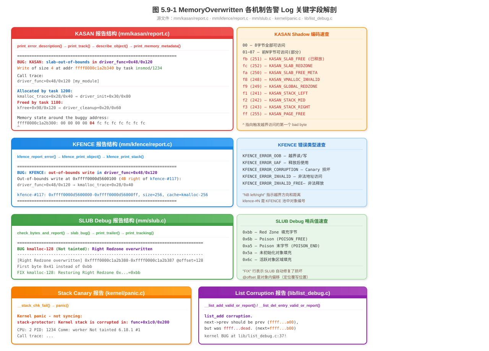
场景描述：驱动分配了 kmalloc-64（64 字节）对象，但 memcpy 写入 68 字节，越界写入 4 字节到 Red Zone 区域。
/* 触发代码 */
char *buf = kmalloc(64, GFP_KERNEL);
memcpy(buf, src_data, 68); /* 越界写 4 字节 → 踩入 slab redzone */KASAN 告警输出（源码：mm/kasan/report.c → print_error_description() + describe_object()）：
==================================================================
BUG: KASAN: slab-out-of-bounds in my_driver_write+0x48/0x120 [my_module]
Write of size 4 at addr ffff0000c1a2b340 by task insmod/1234
CPU: 2 UID: 0 PID: 1234 Comm: insmod Not tainted 6.18.1 #1
Hardware name: linux,dummy-virt (DT)
Call trace:
dump_backtrace+0x98/0x100
show_stack+0x1c/0x30
dump_stack_lvl+0x60/0x80
print_report+0xd0/0x620
kasan_report+0xb0/0xf0
__asan_store4+0x78/0xa0
my_driver_write+0x48/0x120 [my_module]
vfs_write+0x1a8/0x6c0
ksys_write+0x74/0x100
__arm64_sys_write+0x1c/0x30
invoke_syscall+0x50/0x120
Allocated by task 1234:
kmalloc_trace+0x28/0x40
my_driver_open+0x30/0x80 [my_module]
chrdev_open+0xd0/0x200
do_dentry_open+0x160/0x480
The buggy address belongs to the object at ffff0000c1a2b300
which belongs to the cache kmalloc-64 of size 64
The buggy address is located 4 bytes to the right of
allocated 64-byte region [ffff0000c1a2b300, ffff0000c1a2b340)
Memory state around the buggy address:
ffff0000c1a2b200: fb fb fb fb fb fb fb fb fc fc fc fc fc fc fc fc
ffff0000c1a2b280: fb fb fb fb fb fb fb fb fc fc fc fc fc fc fc fc
ffff0000c1a2b300: 00 00 00 00 00 00 00 00 fc fc fc fc fc fc fc fc
^
ffff0000c1a2b380: fb fb fb fb fb fb fb fb fc fc fc fc fc fc fc fc
ffff0000c1a2b400: fb fb fb fb fb fb fb fb fc fc fc fc fc fc fc fc
==================================================================逐行解读：
| 行 | 关键字段 | 含义 |
|---|---|---|
BUG: KASAN: slab-out-of-bounds |
错误类型 | Slab 堆对象越界访问（区别于 slab-use-after-free、global-out-of-bounds） |
in my_driver_write+0x48/0x120 |
触发函数 | IP 地址对应的函数名 + 偏移。用 addr2line 可转为精确源码行 |
Write of size 4 |
访问方向和大小 | 写操作，4 字节。暗示 (uint32_t )ptr 或 memcpy(..., 4) |
at addr ffff0000c1a2b340 |
故障虚拟地址 | 越界访问的目标地址 |
by task insmod/1234 |
触发进程 | 进程名 / PID |
Allocated by task 1234 |
分配栈 | 对象是谁分配的 → 确认对象用途 |
belongs to the cache kmalloc-64 of size 64 |
Slab 缓存信息 | 对象属于 kmalloc-64 缓存，净大小 64 字节 |
4 bytes to the right of allocated 64-byte region |
越界距离和方向 | 越界 4 字节，向右（高地址方向）→ 缓冲区溢出 |
[ffff0000c1a2b300, ffff0000c1a2b340) |
合法区间 | 对象起始到结束的地址范围 |
Shadow 00 |
可访问 | 8 字节全部合法可访问 |
Shadow fc |
KASAN_SLAB_REDZONE | Slab Red Zone，不可访问，被写入即报错 |
Shadow fb |
KASAN_SLAB_FREE | 已释放的 Slab 对象 |
^ 指针 |
第一个 bad byte | 指向触发错误的 Shadow 字节位置 |
定位步骤：
# 1. 将触发地址转为源码行
aarch64-linux-gnu-addr2line -e vmlinux -f ffff800080123048
# 或使用模块地址
aarch64-linux-gnu-addr2line -e my_module.ko -f 0x48
# 2. 检查越界距离
# "4 bytes to the right of 64-byte region" → 分配了 64 字节，写到了 offset 64~67
# → 检查 memcpy/memset 的 size 参数是否超过 64
# 3. 确认分配大小与使用方式是否匹配
# Allocated by → my_driver_open 中 kmalloc(64, GFP_KERNEL)
# 实际写入 68 字节 → 分配大小不足场景描述：驱动在 kfree() 释放对象后，仍然通过悬垂指针读取对象内容。
/* 触发代码 */
struct my_dev *dev = kmalloc(sizeof(*dev), GFP_KERNEL);
dev->refcnt = 1;
kfree(dev); /* 释放对象 */
// ... 在另一个代码路径中 ...
pr_info("refcnt = %d\n", dev->refcnt); /* UAF 读 → KASAN 告警 */KASAN 告警输出：
==================================================================
BUG: KASAN: slab-use-after-free in my_driver_read+0x38/0x80 [my_module]
Read of size 4 at addr ffff0000c2b3d410 by task cat/2345
CPU: 1 UID: 0 PID: 2345 Comm: cat Not tainted 6.18.1 #1
Hardware name: linux,dummy-virt (DT)
Call trace:
dump_backtrace+0x98/0x100
show_stack+0x1c/0x30
dump_stack_lvl+0x60/0x80
print_report+0xd0/0x620
kasan_report+0xb0/0xf0
__asan_load4+0x78/0xa0
my_driver_read+0x38/0x80 [my_module]
vfs_read+0x1a8/0x6c0
ksys_read+0x74/0x100
Allocated by task 1234:
kmalloc_trace+0x28/0x40
my_driver_open+0x30/0x80 [my_module]
chrdev_open+0xd0/0x200
do_dentry_open+0x160/0x480
Freed by task 1234:
kfree+0x98/0x120
my_driver_release+0x20/0x60 [my_module]
__fput+0x100/0x310
task_work_run+0x80/0xc0
The buggy address belongs to the object at ffff0000c2b3d400
which belongs to the cache kmalloc-128 of size 128
The buggy address is located 16 bytes inside of
freed 128-byte region [ffff0000c2b3d400, ffff0000c2b3d480)
Memory state around the buggy address:
ffff0000c2b3d300: fc fc fc fc fc fc fc fc fc fc fc fc fc fc fc fc
ffff0000c2b3d380: fc fc fc fc fc fc fc fc fc fc fc fc fc fc fc fc
ffff0000c2b3d400: fa fb fb fb fb fb fb fb fb fb fb fb fb fb fb fb
^
ffff0000c2b3d480: fc fc fc fc fc fc fc fc fc fc fc fc fc fc fc fc
ffff0000c2b3d500: fc fc fc fc fc fc fc fc fc fc fc fc fc fc fc fc
==================================================================逐行解读：
| 行 | 关键字段 | 含义 |
|---|---|---|
slab-use-after-free |
错误类型 | 访问已释放的 Slab 对象 |
Read of size 4 |
访问方向 | 读操作 — UAF 读通常不会立即 crash，但数据不可信 |
Allocated by task 1234 → my_driver_open |
分配路径 | 对象在 open 时分配 |
Freed by task 1234 → my_driver_release |
释放路径 | 对象在 release 时释放 |
16 bytes inside of freed 128-byte region |
访问位置 | 在释放对象内部 offset=16 处读取 → 对应 dev->refcnt 字段偏移 |
Shadow fa |
KASAN_SLAB_FREE_META | 第一个 8 字节存储了 KASAN 的 free 元数据（kasan_free_meta） |
Shadow fb |
KASAN_SLAB_FREE | 已释放 Slab 对象的 Shadow 标记 |
定位步骤：
# 1. 对比 Allocated by 和 Freed by 的栈
# Allocated: my_driver_open → 打开设备时分配
# Freed: my_driver_release → 关闭设备时释放
# Read: my_driver_read → 读取时访问 → 在 close 之后还有 read 操作
# 2. 分析生命周期
# open → alloc → close → free → read → UAF!
# root cause: release 中 kfree 了 dev，但 read 路径未检查设备是否已关闭
# 3. 修复方案
# 方案A: 使用引用计数（kref），read 增加引用，read 完成后 put
# 方案B: release 中置 dev->state = CLOSED，read 中检查状态
# 方案C: 使用 RCU 保护 dev 的生命周期场景描述：生产环境中 KFENCE 采样到一个 kmalloc-256 对象，驱动向对象尾部越界写入，触及右侧 Guard Page。
/* 触发代码 */
char *buf = kmalloc(256, GFP_KERNEL);
/* KFENCE 以一定概率拦截此分配，放入 KFENCE 池 */
memset(buf, 0, 260); /* 越界 4 字节 → 写入 Guard Page → 立即 page fault */KFENCE 告警输出（源码：mm/kfence/report.c → kfence_report_error()）：
==================================================================
BUG: KFENCE: out-of-bounds write in my_net_driver+0xc8/0x200 [my_net]
Out-of-bounds write at 0xffff0000d5600100 (4B right of kfence-#117):
my_net_driver+0xc8/0x200 [my_net]
__netdev_start_xmit+0x80/0x1c0
dev_hard_start_xmit+0xc0/0x300
sch_direct_xmit+0x110/0x320
__dev_queue_xmit+0x2c0/0xd60
ip_finish_output2+0x2a0/0x6c0
kfence-#117: 0xffff0000d5600000-0xffff0000d56000ff, size=256, cache=kmalloc-256
Allocated by task 3456 on cpu 0 at 123.456789s:
kmalloc_trace+0x28/0x40
my_net_alloc_skb+0x40/0xa0 [my_net]
my_net_rx_handler+0x60/0x200 [my_net]
napi_poll+0x80/0x200
CPU: 0 UID: 0 PID: 3456 Comm: ksoftirqd/0 Not tainted 6.18.1 #1
Hardware name: linux,dummy-virt (DT)
==================================================================逐行解读：
| 行 | 关键字段 | 含义 |
|---|---|---|
BUG: KFENCE: out-of-bounds write |
错误类型 | KFENCE 检测到越界写入 |
4B right of kfence-#117 |
越界距离和对象编号 | 越界 4 字节（向右），对象是 KFENCE 池中第 117 号 |
0xffff0000d5600000-0xffff0000d56000ff |
对象地址范围 | KFENCE 对象占据一个完整 page 内的 [0x000, 0x0ff] |
size=256, cache=kmalloc-256 |
对象大小和缓存 | 256 字节对象，来自 kmalloc-256 缓存 |
Allocated by task 3456 on cpu 0 |
分配路径 | 由 ksoftirqd/0 上下文分配 |
触发栈 → my_net_driver+0xc8 |
触发函数 | 网络驱动发送路径中的 memset 越界 |
KFENCE 与 KASAN 的关键差异：
| 维度 | KASAN | KFENCE |
|---|---|---|
| 检测触发方式 | Shadow Memory 检查（编译器插桩） | Guard Page（硬件 MMU page fault） |
| 报告中的距离信息 | N bytes to the right/left of |
NB right/left of kfence-#N |
| Shadow Memory dump | 有 | 无（KFENCE 不使用 Shadow） |
| 对象标识 | 虚拟地址 + cache 名 | kfence-#N 编号 + 地址范围 |
| 适用环境 | 开发/测试 | 生产环境（低开销采样） |
场景描述：启用 slub_debug=FZ 后，SLUB 在对象释放时检查 Red Zone，发现尾部哨兵字节被覆写。
/* 触发代码 */
struct my_data {
char name[32];
int value;
}; /* sizeof = 36 字节，分配到 kmalloc-64 */
struct my_data *p = kmalloc(sizeof(*p), GFP_KERNEL);
memset(p->name, 'A', 40); /* 越界 8 字节 → 覆写 value 字段 + 尾部 Red Zone */
kfree(p); /* 释放时 SLUB 检查 Red Zone → 发现被覆写 → 告警 */SLUB Debug 告警输出（源码：mm/slub.c → check_bytes_and_report() + slab_bug()）：
=============================================================================
BUG kmalloc-64 (Tainted: G B OE ): Right Redzone overwritten
-----------------------------------------------------------------------------
Disabling lock debugging due to kernel taint
INFO: 0xffff0000c4a5b240-0xffff0000c4a5b247 @offset=64. First byte 0x41 instead of 0xbb
INFO: Allocated in my_driver_probe+0x48/0x100 age=2 cpu=1 pid=1234
kmalloc_trace+0x28/0x40
my_driver_probe+0x48/0x100 [my_module]
platform_probe+0x70/0xc0
really_probe+0x100/0x3c0
INFO: Freed in (unreleased)
INFO: Slab 0xfffffdffc0129680 objects=32 used=18 fp=0xffff0000c4a5ba00 flags=0x17ffe0000010200(slab|head|node=0|zone=2|lastcpupid=0xfff)
INFO: Object 0xffff0000c4a5b200 @offset=512 fp=0xffff0000c4a5b100
Redzone ffff0000c4a5b1c0: bb bb bb bb bb bb bb bb bb bb bb bb bb bb bb bb ................
Redzone ffff0000c4a5b1d0: bb bb bb bb bb bb bb bb bb bb bb bb bb bb bb bb ................
Object ffff0000c4a5b200: 41 41 41 41 41 41 41 41 41 41 41 41 41 41 41 41 AAAAAAAAAAAAAAAA
Object ffff0000c4a5b210: 41 41 41 41 41 41 41 41 41 41 41 41 41 41 41 41 AAAAAAAAAAAAAAAA
Object ffff0000c4a5b220: 41 41 41 41 41 41 41 41 41 41 41 41 00 00 00 00 AAAAAAAAAAAA....
Object ffff0000c4a5b230: 00 00 00 00 00 00 00 00 00 00 00 00 00 00 00 00 ................
Redzone ffff0000c4a5b240: 41 41 41 41 41 41 41 41 AAAAAAAA
Padding ffff0000c4a5b268: 5a 5a 5a 5a 5a 5a 5a 5a 5a 5a 5a 5a 5a 5a 5a 5a ZZZZZZZZZZZZZZZZ
FIX kmalloc-64: Restoring Right Redzone 0xffff0000c4a5b240-0xffff0000c4a5b247=0xbb逐行解读：
| 行 | 关键字段 | 含义 |
|---|---|---|
BUG kmalloc-64 |
Slab 缓存名 | 问题发生在 kmalloc-64 缓存中 |
Right Redzone overwritten |
错误类型 | 右侧 Red Zone（对象尾部哨兵）被覆写 |
@offset=64. First byte 0x41 instead of 0xbb |
覆写位置和内容 | 从对象偏移 64 字节处（正好是 Red Zone 起始），第一个被覆写字节为 0x41（'A'），期望 0xbb |
Allocated in my_driver_probe+0x48 |
分配栈 | 对象在 probe 函数中分配 |
age=2 cpu=1 pid=1234 |
分配上下文 | 分配距今 2 个 slab 操作，CPU 1，PID 1234 |
Freed in (unreleased) |
释放信息 | 当前触发检查时正在释放（此前未释放过） |
Redzone 行显示 0xbb |
正常 Red Zone | 左侧 Red Zone 完好（全 0xbb） |
Object 行显示 0x41 |
对象内容 | 对象被 'A' (0x41) 填满，并溢出到右 Red Zone |
Redzone 行显示 0x41 |
被覆写的 Red Zone | 8 字节 Red Zone 被 'A' 覆写 |
Padding 行显示 0x5a |
Padding 填充 | Slab 对齐填充区域，0x5a 表示未初始化 |
FIX kmalloc-64: Restoring |
自动修复 | SLUB 自动将 Red Zone 恢复为 0xbb，系统可继续运行 |
定位步骤：
# 1. 从 @offset 确定覆写起始位置
# @offset=64 → 对象大小为 64 字节 → 从第 64 字节开始被覆写
# → 覆写内容为 0x41 ('A') → 对应 memset(p->name, 'A', 40) 越界
# 2. 从 Object dump 反推覆写范围
# Object 内 0x41 从 offset 0 到 39 (40 字节) → memset 写了 40 字节到 32 字节的 name 字段
# 溢出 8 字节到 value + Red Zone
# 3. 检查结构体布局
# pahole -C my_data my_module.ko → 确认 name[32] + value(4) + padding = 36 → kmalloc-64场景描述：函数内部的局部数组越界写入，破坏了函数栈帧底部的 Canary 值，函数返回时 __stack_chk_fail() 触发 kernel panic。
/* 触发代码 */
void vulnerable_func(const char *input) {
char local_buf[64];
/* input 长度超过 64 → 覆写 Canary → 函数返回时 panic */
strcpy(local_buf, input); /* 未检查长度 */
}Stack Canary panic 输出（源码：kernel/panic.c → __stack_chk_fail()）：
Kernel panic - not syncing: stack-protector: Kernel stack is corrupted in: vulnerable_func+0x1c0/0x200 [my_module]
CPU: 2 UID: 0 PID: 5678 Comm: bash Not tainted 6.18.1 #1
Hardware name: linux,dummy-virt (DT)
Call trace:
dump_backtrace+0x98/0x100
show_stack+0x1c/0x30
dump_stack_lvl+0x60/0x80
panic+0x1c4/0x370
__stack_chk_fail+0x1c/0x20
vulnerable_func+0x1c0/0x200 [my_module]
my_driver_ioctl+0x60/0xc0 [my_module]
__arm64_sys_ioctl+0x80/0xc0
invoke_syscall+0x50/0x120
el0_svc_common+0x38/0x60逐行解读：
| 行 | 关键字段 | 含义 |
|---|---|---|
Kernel panic - not syncing |
严重级别 | panic — 系统停止运行（无法恢复） |
stack-protector: Kernel stack is corrupted in: |
错误类型 | GCC -fstack-protector 检测到栈 Canary 被破坏 |
vulnerable_func+0x1c0/0x200 |
触发函数 | 栈被覆写的函数。0x1c0 是函数返回前检查 Canary 的位置 |
__stack_chk_fail+0x1c/0x20 |
检查函数 | GCC 自动插入的 Canary 校验函数，失败则 panic |
关键特点：
objdump -d 分析函数内的栈布局，反推哪个局部变量越界定位步骤：
# 1. 反汇编函数，找出栈帧布局
aarch64-linux-gnu-objdump -d my_module.ko | grep -A 200 "vulnerable_func>:"
# 2. 找 Canary 存/取位置
# stp x29, x30, [sp, #-N]! ← 函数入口保存 FP/LR
# ldr x8, [x18, #24] ← 从 per-task Canary 读取 (shadow_call_stack 或 TLS)
# str x8, [sp, #M] ← 将 Canary 存到栈帧
# ...
# ldr x9, [sp, #M] ← 函数返回前读回
# ldr x8, [x18, #24] ← 再次读原始 Canary
# cmp x8, x9 ← 比较
# b.ne __stack_chk_fail ← 不等则 panic
# 3. 确认栈帧中 local_buf 的偏移
# local_buf 在 [sp, #X] ~ [sp, #X+63]
# Canary 在 [sp, #M]
# 如果 X + 64 > M → strcpy 越过 64 字节后覆写 Canary
# 4. 修复：使用 strscpy() 替代 strcpy()场景描述：UAF 或内存覆写破坏了链表节点的 next/prev 指针，执行 list_add() 时触发完整性校验失败。
/* 触发代码 */
struct my_item {
struct list_head list;
int data;
};
struct my_item *item = kmalloc(sizeof(*item), GFP_KERNEL);
INIT_LIST_HEAD(&item->list);
list_add(&item->list, &my_list_head);
/* 某处内存覆写破坏了 my_list_head.next 指针 */
*(unsigned long *)&my_list_head.next = 0xdead000000000000;
/* 再次 list_add 时触发校验 */
struct my_item *item2 = kmalloc(sizeof(*item2), GFP_KERNEL);
INIT_LIST_HEAD(&item2->list);
list_add(&item2->list, &my_list_head); /* → 检测到 next->prev != prev → BUG */List Corruption 告警输出（源码：lib/list_debug.c → __list_add_valid_or_report()）：
------------[ cut here ]------------
list_add corruption. next->prev should be prev (ffff0000c5a6b200), but was dead000000000000. (next=ffff0000c5a6b100).
kernel BUG at lib/list_debug.c:37!
Internal error: Oops - BUG: 00000000f2000800 [#1] PREEMPT SMP
Modules linked in: my_module(OE)
CPU: 3 UID: 0 PID: 6789 Comm: worker/3 Tainted: G B OE 6.18.1 #1
Hardware name: linux,dummy-virt (DT)
pstate: 60400005 (nZCv daif +PAN -UAO -TCO -DIT -SSBS BTYPE=--)
pc : __list_add_valid_or_report+0x48/0xb0
lr : __list_add_valid_or_report+0x48/0xb0
sp : ffff800082a0bd40
x29: ffff800082a0bd40 x28: ffff0000c5a6b100 x27: 0000000000000000
...
Call trace:
__list_add_valid_or_report+0x48/0xb0
my_add_item+0x60/0xc0 [my_module]
my_worker_func+0x40/0x80 [my_module]
process_one_work+0x200/0x5c0
worker_thread+0x70/0x400
kthread+0x110/0x120
ret_from_fork+0x10/0x20逐行解读：
| 行 | 关键字段 | 含义 |
|---|---|---|
list_add corruption |
错误类型 | list_add 操作检测到链表完整性被破坏 |
next->prev should be prev (ffff...200) |
期望值 | next->prev 应该指向 prev（即链表头 my_list_head） |
but was dead000000000000 |
实际值 | 实际值被覆写为 0xdead... → 明显是内存踩踏 |
(next=ffff0000c5a6b100) |
next 指针 | 链表的下一个节点地址 |
kernel BUG at lib/list_debug.c:37! |
BUG 位置 | 触发了 BUG() 宏，对应 CHECK_DATA_CORRUPTION |
Internal error: Oops - BUG |
异常类型 | ARM64 Oops，进程被杀死（不一定 panic） |
pc : __list_add_valid_or_report+0x48 |
程序计数器 | BUG() 触发位置 |
定位步骤：
# 1. 识别被破坏的链表
# next->prev 值为 0xdead... → 明显是人为魔数或内存覆写
# 需确认 my_list_head 在内核数据段的位置
# 2. 确定覆写来源
# 方案A: 开启 KASAN → 在覆写时立即报错，而不是在 list_add 时才发现
# 方案B: 使用 watchpoint (硬件断点) 监控 my_list_head.next 地址
# echo "w 4:ffff0000c5a6b200" > /sys/kernel/debug/kgdb/breakpoint # (kgdb)
# 或在 GDB 中: watch *(unsigned long *)0xffff0000c5a6b200
# 3. 常见根因模式
# - 相邻结构体的缓冲区溢出覆写到链表指针
# - UAF: 链表节点被释放但未从链表摘除
# - 并发: 无锁保护的链表操作导致指针撕裂
# 4. 检查链表操作的锁保护
# grep -rn "list_add.*my_list" my_module.c → 确认所有 list 操作是否在同一把锁保护下【图 5.9-2】MemoryOverwritten 通用定位方法论流程
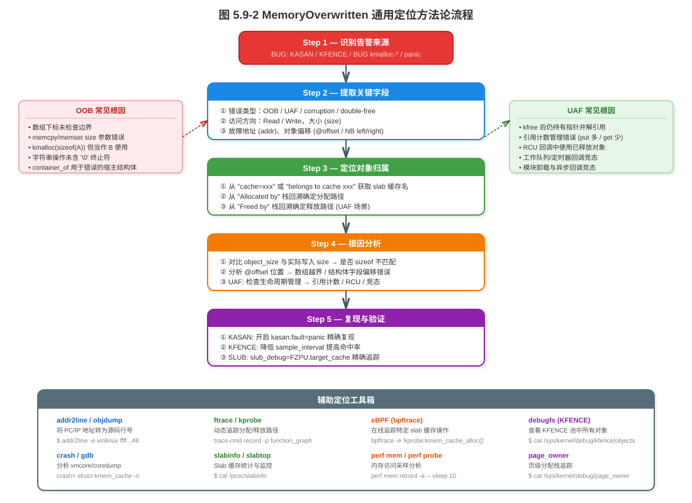
| 步骤 | 操作 | 从 Log 中提取 | 工具 |
|---|---|---|---|
| Step 1 — 识别告警来源 | 确认是 KASAN / KFENCE / SLUB / Canary / List | BUG: KASAN: / BUG: KFENCE: / BUG kmalloc-* / stack-protector / list_add corruption |
肉眼识别 |
| Step 2 — 提取关键字段 | 错误类型、访问方向/大小、故障地址 | slab-out-of-bounds / Write of size 4 / addr ffff... |
日志分析 |
| Step 3 — 定位对象归属 | 缓存名、分配栈、释放栈 | cache kmalloc-64 / Allocated by / Freed by |
addr2line, objdump |
| Step 4 — 根因分析 | 越界距离、结构体布局、生命周期 | N bytes to the right / @offset=N |
pahole, crash, gdb |
| Step 5 — 复现验证 | 调整参数加强检测、构造测试用例 | — | KASAN/KFENCE/SLUB 配置 |
| 错误类型 | 典型根因 | 首选工具 | 定位关键 |
|---|---|---|---|
| Slab OOB | 数组越界、memcpy size 错误、sizeof 不匹配 | KASAN (Generic) | 越界距离 + 对象大小 → 反推哪个写操作溢出 |
| Slab UAF | kfree 后悬垂指针、引用计数错误、竞态 | KASAN + Quarantine | Allocated by / Freed by 栈对比 → 分析生命周期 |
| Guard Page OOB | 同 Slab OOB，但由 KFENCE 在生产环境采样到 | KFENCE | NB left/right of kfence-#N → 越界方向和距离 |
| Red Zone 覆写 | 缓冲区溢出写 | SLUB Debug (Z) | @offset + Object hex dump → 覆写字节模式识别 |
| Poison 破坏 | UAF 写入 | SLUB Debug (P) | 释放后对象应为 0x6b，实际值 → 被谁覆写 |
| Stack 溢出 | 局部数组越界、递归过深 | Stack Canary | 反汇编栈帧布局 → 局部变量与 Canary 的位置关系 |
| 链表损坏 | 相邻内存覆写、UAF、并发竞态 | LIST_HARDENED + KASAN | next->prev should be → 硬件 watchpoint 追踪覆写者 |
场景 推荐组合
─────────────────────────────────────────────────────
难以复现的 OOB → KFENCE (生产采样) + SLUB (slub_debug=FZ,target)
UAF 竞态 → KASAN + kasan.fault=report + Quarantine 延迟释放
已知缓存的覆写 → slub_debug=FZPU,cache_name + slub_nomerge
栈破坏 → CONFIG_KASAN_STACK=y + CONFIG_STACKPROTECTOR_STRONG
链表指针损坏 → LIST_HARDENED + KASAN + 硬件 watchpoint
生产环境全局监控 → KFENCE + FORTIFY_SOURCE + LIST_HARDENED + HARDENED_USERCOPY| 陷阱 | 说明 | 解决 |
|---|---|---|
| KASAN 报告的地址不是覆写发生处 | KASAN 在下一次访问时才检查 Shadow → 报告可能延迟 | 使用 kasan.mode=sync (HW_TAGS) 或缩小 Quarantine 窗口 |
| SLUB Debug 只在 free 时报错 | Red Zone / Poison 检查在 kmem_cache_free() 路径中 → 覆写到释放之间无报告 |
配合 slub_debug=T 追踪所有操作，或缩短对象存活时间 |
| KFENCE 难以复现 | 概率采样 → 同一 bug 不一定每次命中 | 降低 sample_interval、增大 NUM_OBJECTS、长时间运行 |
| Stack Canary 无法定位具体行 | 只能定位到函数级别，不能精确到行 | 结合 KASAN_STACK 获取栈变量级别的越界检测 |
| List corruption 是"症状"非"原因" | 链表损坏是结果，根因是相邻内存的 OOB 或 UAF | 先用 KASAN 定位真正的 OOB/UAF，而非在 list 上排查 |
本节提炼 KASAN / Quarantine 子系统实现中涉及的核心算法，帮助理解 MemoryOverwritten 检测机制的运行机理和 debug 时的思路。
源码：include/linux/kasan.h — kasan_mem_to_shadow()（第 62 行）；arch/arm64/include/asm/memory.h（第 102 行）
KASAN 的核心设计是将整个内核虚拟地址空间以 8:1 的压缩比映射到 Shadow Memory 区域。每 8 字节内核内存对应 1 字节 Shadow，Shadow 值编码该 8 字节区域的可访问状态。
【图 5.10-1】Shadow Memory 地址映射算法全景
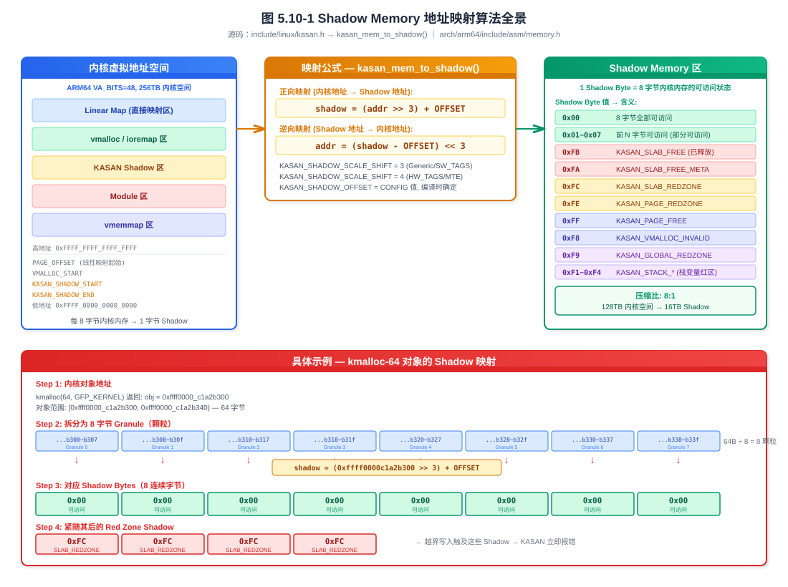
算法: kasan_mem_to_shadow(addr)
输入: addr — 内核虚拟地址 (64-bit)
输出: shadow — Shadow Memory 中对应的地址
正向映射:
shadow_addr = (addr >> KASAN_SHADOW_SCALE_SHIFT) + KASAN_SHADOW_OFFSET
逆向映射 (kasan_shadow_to_mem):
kernel_addr = (shadow_addr - KASAN_SHADOW_OFFSET) << KASAN_SHADOW_SCALE_SHIFT
ARM64 常量定义 (arch/arm64/include/asm/memory.h):
KASAN_SHADOW_OFFSET = CONFIG_KASAN_SHADOW_OFFSET // 编译时确定
KASAN_SHADOW_END = (1UL << (64 - SHIFT)) + OFFSET
KASAN_SHADOW_START(va) = SHADOW_END - (1UL << (va - SHIFT))
各模式的 SCALE_SHIFT:
┌──────────────────┬─────────────┬─────────────┬──────────────┐
│ 模式 │ SCALE_SHIFT │ GRANULE_SIZE │ 压缩比 │
├──────────────────┼─────────────┼─────────────┼──────────────┤
│ Generic │ 3 │ 8 字节 │ 8:1 │
│ SW_TAGS │ 4 │ 16 字节 │ 16:1 │
│ HW_TAGS (MTE) │ 4 │ 16 字节 │ 16:1 │
└──────────────────┴─────────────┴─────────────┴──────────────┘
空间开销 (ARM64, VA_BITS=48, Generic 模式):
内核虚拟空间 = 128TB = 2^47 字节
Shadow 区域 = 128TB / 8 = 16TB
占虚拟地址空间比例: 1/8 = 12.5%
映射性质:
- 线性映射: 连续 8 字节内核内存 → 连续 1 字节 Shadow
- 确定性: 给定 addr 唯一确定 shadow_addr (无哈希碰撞)
- O(1) 计算: 1 次移位 + 1 次加法, 无分支/无内存访问
- 可逆: shadow ↔ kernel 双向转换, 方便 debug 时反查Shadow 值编码表（源码：mm/kasan/kasan.h 第 143~170 行）：
| 值 | 宏名 | 含义 | 设置时机 |
|---|---|---|---|
0x00 |
— | 8 字节全部可访问 | kasan_unpoison() |
0x01~0x07 |
— | 前 N 字节可访问（部分可访问） | kasan_poison_last_granule() |
0xF1 |
KASAN_STACK_LEFT |
栈变量左侧红区 | 编译器自动插入 |
0xF2 |
KASAN_STACK_MID |
栈变量中间红区 | 编译器自动插入 |
0xF3 |
KASAN_STACK_RIGHT |
栈变量右侧红区 | 编译器自动插入 |
0xF4 |
KASAN_STACK_PARTIAL |
栈变量部分红区 | 编译器自动插入 |
0xF8 |
KASAN_VMALLOC_INVALID |
vmalloc 不可访问区域 | __kasan_poison_vmalloc() |
0xF9 |
KASAN_GLOBAL_REDZONE |
全局变量红区 | 编译器自动插入 |
0xFA |
KASAN_SLAB_FREE_META |
已释放 Slab 对象（含 free 元数据） | ___cache_free() → kasan_slab_free() |
0xFB |
KASAN_SLAB_FREE |
已释放 Slab 对象 | ___cache_free() → kasan_slab_free() |
0xFC |
KASAN_SLAB_REDZONE |
Slab 对象红区 | __kasan_slab_alloc() |
0xFE |
KASAN_PAGE_REDZONE |
kmalloc_large 红区 | kasan_kmalloc_large() |
0xFF |
KASAN_PAGE_FREE |
已释放页面 | kasan_free_pages() |
0xCA |
KASAN_ALLOCA_LEFT |
alloca 左侧红区 | 编译器自动插入 |
0xCB |
KASAN_ALLOCA_RIGHT |
alloca 右侧红区 | 编译器自动插入 |
设计原理：负值 Shadow（0x80~0xFF，即符号位为 1）表示不可访问，正值或零（0x00~0x07）表示全部或部分可访问。检查时只需一次符号判断即可快速区分合法/非法访问。
源码：mm/kasan/shadow.c — kasan_poison()（第 124 行）；mm/kasan/generic.c — check_region_inline()（第 175 行）
KASAN 的两大核心路径：毒化（在 alloc/free 时设置 Shadow 值）和检查（在每次内存访问时验证 Shadow 值）。
【图 5.10-2】Shadow Byte 毒化与检查算法流程
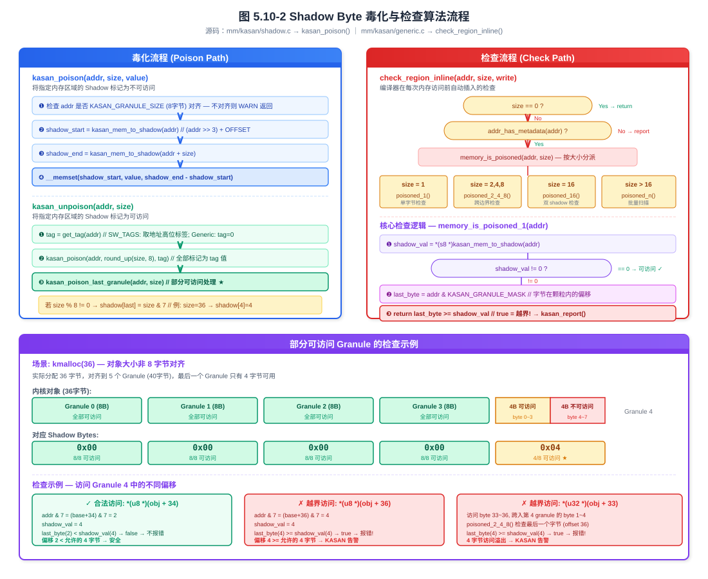
算法: kasan_poison(addr, size, value, init)
输入: addr — 待毒化的内核地址 (必须 8 字节对齐)
size — 待毒化的字节数 (必须 8 字节对齐)
value — Shadow 毒化值 (0xFB/0xFC/0xFF 等)
输出: 无 (副作用: 修改 Shadow Memory)
1. if !kasan_enabled() → return
2. addr = kasan_reset_tag(addr) // 清除 SW_TAGS 高位标签
3. WARN_ON(addr & KASAN_GRANULE_MASK) // 对齐校验
4. WARN_ON(size & KASAN_GRANULE_MASK) // 对齐校验
5. shadow_start = kasan_mem_to_shadow(addr)
6. shadow_end = kasan_mem_to_shadow(addr + size)
7. __memset(shadow_start, value, shadow_end - shadow_start)
复杂度: O(size/8) — memset 写入 size/8 字节 Shadow算法: kasan_unpoison(addr, size, init)
输入: addr — 待解毒的内核地址
size — 实际可访问字节数 (不要求 8 字节对齐)
输出: 无 (副作用: Shadow 标记为可访问)
1. tag = get_tag(addr) // Generic: tag=0; SW_TAGS: 高位标签
2. addr = kasan_reset_tag(addr)
3. kasan_poison(addr, round_up(size, 8), tag)
// 先将整个对齐区域标记为 tag (Generic 模式下=0, 即全可访问)
4. if CONFIG_KASAN_GENERIC:
kasan_poison_last_granule(addr, size)
// 处理最后一个不完整 Granule ★
kasan_poison_last_granule(addr, size):
if size & KASAN_GRANULE_MASK: // size 不是 8 的倍数
shadow = kasan_mem_to_shadow(addr + size)
*shadow = size & KASAN_GRANULE_MASK // 存储实际可访问字节数 (1~7)
// 例: size=36 → 36 & 7 = 4 → shadow[4] = 0x04 → 前 4 字节可访问算法: check_region_inline(addr, size, write, ret_ip)
输入: addr — 待访问的内核地址
size — 访问大小 (1/2/4/8/16/N 字节)
write — 是否为写操作
输出: true=合法, false=非法 (触发 kasan_report)
编译器在每条内存访问指令前自动插桩调用:
__asan_load1/2/4/8/16 → check_region_inline(addr, N, false, _RET_IP_)
__asan_store1/2/4/8/16 → check_region_inline(addr, N, true, _RET_IP_)
1. if !kasan_enabled() → return true
2. if size == 0 → return true
3. if addr + size < addr → kasan_report(...) // 地址回绕检测
4. if !addr_has_metadata(addr) → kasan_report(...)
5. if memory_is_poisoned(addr, size) → kasan_report(...)
6. return true
memory_is_poisoned(addr, size) 按 size 分派:
┌────────┬──────────────────────────────────────────────────────────────┐
│ size │ 检查逻辑 │
├────────┼──────────────────────────────────────────────────────────────┤
│ 1 │ memory_is_poisoned_1(addr) │
│ │ shadow = *(s8 *)kasan_mem_to_shadow(addr) │
│ │ if shadow == 0 → false (安全) │
│ │ last = addr & 7 │
│ │ return last >= shadow // 偏移 >= 可访问数 → 越界 │
├────────┼──────────────────────────────────────────────────────────────┤
│ 2,4,8 │ memory_is_poisoned_2_4_8(addr, size) │
│ │ 检查是否跨 Granule 边界: │
│ │ if ((addr+size-1) & 7) < size-1: │
│ │ return *shadow || poisoned_1(addr+size-1) // 跨边界 │
│ │ return poisoned_1(addr+size-1) // 同 Granule│
├────────┼──────────────────────────────────────────────────────────────┤
│ 16 │ memory_is_poisoned_16(addr) │
│ │ 检查 2 个 Shadow 字节 (u16 读取) │
│ │ if IS_ALIGNED(addr, 8): return *(u16 *)shadow != 0 │
│ │ else: return *shadow || poisoned_1(addr+15) │
├────────┼──────────────────────────────────────────────────────────────┤
│ >16 │ memory_is_poisoned_n(addr, size) │
│ │ memory_is_nonzero() 批量扫描: │
│ │ - 前缀对齐到 8 字节 → 逐字节检查 │
│ │ - 中间段 → 8 字节批量比较 (u64 读取) │
│ │ - 后缀 → 逐字节检查 │
│ │ 最后检查末尾 Granule 的部分可访问情况 │
└────────┴──────────────────────────────────────────────────────────────┘
性能优化:
- size 1/2/4/8/16 是最常见的访问大小 → 内联 + 无循环
- 编译器 __always_inline 确保零函数调用开销
- 对齐访问只需 1~2 次 Shadow 读取
- 大块访问 (>16) 使用 u64 批量比较减少迭代次数部分可访问 Granule 的判定逻辑：
当 Shadow 值为 0x01~0x07 时，表示该 8 字节 Granule 只有前 N 字节可访问。检查算法的核心判定式：
$$\text{is\_poisoned} = (\text{addr} \mathbin{\&} 7) \geq \text{shadow\_val}$$
addr & 7：访问地址在 Granule 内的字节偏移（0~7）shadow_val：该 Granule 允许的最大可访问字节数（1~7）源码：mm/kasan/quarantine.c — kasan_quarantine_put()（第 190 行）、kasan_quarantine_reduce()（第 240 行）
Quarantine（隔离区）是 KASAN 检测 Use-After-Free 的核心机制：对象 kfree() 后不立即归还 SLUB，而是在隔离队列中滞留一段时间，使 Shadow 保持 0xFB（已释放），若悬垂指针再次访问即可被 KASAN 捕获。
【图 5.10-3】Quarantine FIFO 批量回收算法
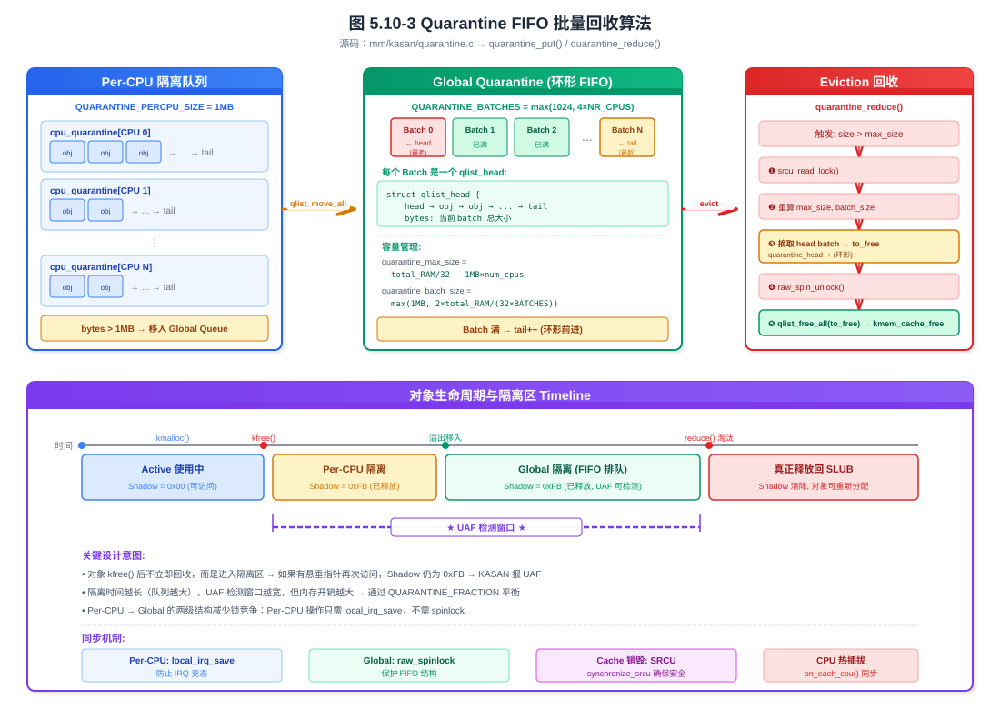
算法: kasan_quarantine_put(cache, object)
输入: cache — kmem_cache 指针, object — 被释放的对象指针
输出: true=成功隔离, false=未隔离(直接释放)
1. meta = kasan_get_free_meta(cache, object)
if !meta → return false // 无元数据, 不隔离
2. local_irq_save(flags) // 禁止中断 (防止与 reduce 竞态)
q = this_cpu_ptr(&cpu_quarantine)
if q->offline → return false // CPU hotplug 离线
3. qlist_put(q, &meta->quarantine_link, cache->size)
// 将对象加入 Per-CPU 队列尾部
// q->tail->next = qlink
// q->tail = qlink
// q->bytes += cache->size
4. if q->bytes > QUARANTINE_PERCPU_SIZE: // 超过 1MB 阈值
temp = QLIST_INIT
qlist_move_all(q, &temp) // Per-CPU 队列全部摘出
raw_spin_lock(&quarantine_lock) // 获取全局锁
quarantine_size += temp.bytes
qlist_move_all(&temp, &global_quarantine[quarantine_tail])
// 合并到全局 FIFO 的 tail batch
if global_quarantine[tail].bytes >= quarantine_batch_size:
new_tail = (quarantine_tail + 1) % QUARANTINE_BATCHES
if new_tail != quarantine_head: // FIFO 未满
quarantine_tail = new_tail // 旋转到下一个 batch 槽位
raw_spin_unlock(&quarantine_lock)
5. local_irq_restore(flags)
return true
复杂度: O(1) 快速路径 (Per-CPU 未满)
O(k) 慢速路径 (k = Per-CPU 队列中的对象数, 需 qlist_move_all)算法: kasan_quarantine_reduce()
输入: 无 (在 kmalloc 路径中被周期性调用)
输出: 无 (副作用: 淘汰最老的 batch, 释放对象回 SLUB)
1. if quarantine_size <= quarantine_max_size → return // 快速路径: 未超限
2. srcu_idx = srcu_read_lock(&remove_cache_srcu)
// SRCU 保护: 防止与 kasan_quarantine_remove_cache() 竞态
3. raw_spin_lock_irqsave(&quarantine_lock, flags)
4. 重新计算容量上限:
total_size = totalram_pages() << PAGE_SHIFT) / QUARANTINE_FRACTION
// QUARANTINE_FRACTION = 32 → 占物理内存的 1/32
percpu_quarantines = QUARANTINE_PERCPU_SIZE × num_online_cpus()
quarantine_max_size = max(0, total_size - percpu_quarantines)
quarantine_batch_size = max(QUARANTINE_PERCPU_SIZE,
2 × total_size / QUARANTINE_BATCHES)
5. if quarantine_size > quarantine_max_size:
to_free = QLIST_INIT
qlist_move_all(&global_quarantine[quarantine_head], &to_free)
// 摘取最老的 head batch
quarantine_size -= to_free.bytes
quarantine_head = (quarantine_head + 1) % QUARANTINE_BATCHES
// head 前进一步 (环形)
6. raw_spin_unlock_irqrestore(&quarantine_lock, flags)
7. qlist_free_all(&to_free, NULL)
// 在锁外逐个释放: 遍历 to_free 链表
// for each qlink in to_free:
// cache = qlink_to_cache(qlink) // 从 virt_to_slab 反查 cache
// kasan_unpoison(obj, cache->size) // 清除 Shadow 毒化
// __kmem_cache_free(cache, obj) // 真正归还 SLUB
8. srcu_read_unlock(&remove_cache_srcu, srcu_idx)
复杂度: O(n) — n 为被淘汰 batch 中的对象数量
调用频率: 每次 __kasan_slab_alloc() 中检查, 仅在超限时执行算法: kasan_quarantine_remove_cache(cache)
输入: cache — 即将被销毁的 kmem_cache
输出: 无 (确保 quarantine 中该 cache 的所有对象被释放)
此算法在 kmem_cache_destroy() 路径中被调用, 需安全移除所有属于该 cache
的对象, 防止 cache 销毁后 quarantine 中残留悬垂引用。
Phase 1 — 清理 Per-CPU 队列:
on_each_cpu(per_cpu_remove_cache, cache, 1)
// IPI 到所有 CPU, 从各 cpu_quarantine 中筛选并释放该 cache 的对象
Phase 2 — 清理 Per-CPU shrink 列表:
for each online_cpu:
raw_spin_lock(&sq->lock)
qlist_move_cache(&sq->qlist, &to_free, cache)
raw_spin_unlock(&sq->lock)
qlist_free_all(&to_free, cache)
Phase 3 — 清理 Global Quarantine:
raw_spin_lock_irqsave(&quarantine_lock, flags)
for i = 0 to QUARANTINE_BATCHES-1:
if !qlist_empty(&global_quarantine[i]):
qlist_move_cache(&global_quarantine[i], &to_free, cache)
// 筛选: 只摘出属于 cache 的对象, 其余保留
raw_spin_unlock → cond_resched() → raw_spin_lock
// 每处理一个非空 batch 后让出 CPU, 防止长时间持锁
raw_spin_unlock_irqrestore(&quarantine_lock, flags)
qlist_free_all(&to_free, cache)
Phase 4 — 等待所有并发 reduce() 完成:
synchronize_srcu(&remove_cache_srcu)
// 确保没有其他 CPU 正在 reduce() 中持有该 cache 对象的引用
复杂度: O(N) — N 为 quarantine 中所有对象总数 (需遍历所有 batch)
同步代价: 1 次 IPI (on_each_cpu) + 1 次 SRCU 同步Quarantine 容量公式（mm/kasan/quarantine.c 第 85~127 行）：
| 参数 | 公式 | 默认值示例 (4GB RAM, 4 CPU) |
|---|---|---|
QUARANTINE_PERCPU_SIZE |
1 << 20 |
1 MB |
QUARANTINE_BATCHES |
max(1024, 4 × NR_CPUS) |
1024 |
QUARANTINE_FRACTION |
32 (硬编码) | — |
quarantine_max_size |
$\frac{\text{RAM}}{32} - 1\text{MB} \times N_{\text{cpus}}$ | $\frac{4\text{GB}}{32} - 4\text{MB} = 124\text{MB}$ |
quarantine_batch_size |
$\max(1\text{MB},\ \frac{2 \times \text{RAM}}{32 \times \text{BATCHES}})$ | $\max(1\text{MB},\ \frac{256\text{MB}}{1024}) = 1\text{MB}$ |
设计要点：
local_irq_save（无 spinlock），仅在 Per-CPU 溢出时才获取全局 quarantine_lockquarantine_max_size 基于 totalram_pages() 动态计算，适应内存热插拔remove_cache 使用 synchronize_srcu() 确保 reduce() 不会在 cache 销毁后访问已释放对象源码：mm/kfence/core.c — alloc_covered_contains()（第 232 行）、alloc_covered_add()（第 218 行）
KFENCE 使用 Counting Bloom Filter 跟踪哪些分配调用栈已经被 KFENCE 覆盖过，避免同一代码路径的分配重复占用有限的 KFENCE 池对象，提高覆盖率。
算法: KFENCE Counting Bloom Filter
数据结构: atomic_t alloc_covered[ALLOC_COVERED_SIZE]
参数:
ALLOC_COVERED_HNUM = 2 // 哈希函数个数
ALLOC_COVERED_ORDER = const_ilog2(NUM_OBJECTS) + 2 // 数组阶数
ALLOC_COVERED_SIZE = 1 << ALLOC_COVERED_ORDER // 数组大小
ALLOC_COVERED_MASK = ALLOC_COVERED_SIZE - 1 // 掩码
哈希计算:
get_alloc_stack_hash(stack_entries, num_entries):
return jhash(stack_entries, num_entries * sizeof(ulong), 0)
// Jenkins Hash 将完整调用栈折叠为 32-bit 摘要
插入 (分配 KFENCE 对象时):
alloc_covered_add(stack_hash, +1):
for i = 0 to ALLOC_COVERED_HNUM - 1: // 2 轮
idx = stack_hash & ALLOC_COVERED_MASK
atomic_add(+1, &alloc_covered[idx]) // 计数器 +1
stack_hash = hash_32(stack_hash, ALLOC_COVERED_ORDER) // 再哈希
删除 (释放 KFENCE 对象时):
alloc_covered_add(stack_hash, -1):
// 同上, 但 atomic_add(-1, ...) // 计数器 -1
查询 (新分配决策):
alloc_covered_contains(stack_hash):
for i = 0 to ALLOC_COVERED_HNUM - 1:
idx = stack_hash & ALLOC_COVERED_MASK
if atomic_read(&alloc_covered[idx]) == 0:
return false // 任一位置为 0 → 未覆盖
stack_hash = hash_32(stack_hash, ALLOC_COVERED_ORDER)
return true // 全部非 0 → 已覆盖
跳过决策:
should_skip_covered():
thresh = (NUM_OBJECTS × kfence_skip_covered_thresh) / 100
return allocated_count > thresh
// 已分配对象数超过阈值 → 开始跳过已覆盖的栈
分配入口:
if should_skip_covered() && alloc_covered_contains(hash):
return NULL // 跳过, 让其他未覆盖的调用栈有机会进入 KFENCE 池
else:
alloc_covered_add(hash, +1)
// 分配 KFENCE 对象
性质:
- Counting (非标准 Bloom): 支持删除操作 (原子计数器 vs 单 bit)
- 假阳性: 可能将未覆盖的栈误判为已覆盖 → 仅影响覆盖率, 不影响正确性
- 假阴性: 不存在 (标准 Bloom Filter 性质)
- 空间: ALLOC_COVERED_SIZE 个 atomic_t ≈ 几百字节
- 时间: O(ALLOC_COVERED_HNUM) = O(2) 每次查询/更新源码：mm/kfence/core.c — set_canary()（第 350 行）、check_canary()（第 368 行）；mm/kfence/kfence.h（第 24 行）
KFENCE 在对象所在 page 内的未使用区域填充 Canary 字节，释放时校验是否被覆写。与 Guard Page 不同，Canary 检测的是同一 page 内的越界，不依赖 MMU page fault。
算法: KFENCE Canary 填充与校验
常量 (mm/kfence/kfence.h):
KFENCE_CANARY_PATTERN_U8(addr) = 0xAA ^ (addr & 0x7)
// 每字节的 Canary 值与地址低 3 位异或 → 按位置变化
// addr & 0x7 = 0 → 0xAA
// addr & 0x7 = 1 → 0xAB
// addr & 0x7 = 2 → 0xA8 ... 以此类推
KFENCE_CANARY_PATTERN_U64 = 0xAAAAAAAAAAAAAAAA ^ 0x0706050403020100
// 预计算 8 字节模式, 用于 u64 批量填充/比较
填充 — set_canary(meta):
pageaddr = ALIGN_DOWN(meta->addr, PAGE_SIZE)
左侧 Canary (对象前方空隙):
for addr = pageaddr; addr < meta->addr; addr += 8:
*(u64 *)addr = KFENCE_CANARY_PATTERN_U64
// 若对象不从 page 起始分配, 前方的 gap 全部填入 Canary
右侧 Canary (对象后方空隙):
addr = ALIGN_DOWN(meta->addr + meta->size, 8)
for addr; (addr - pageaddr) < PAGE_SIZE; addr += 8:
*(u64 *)addr = KFENCE_CANARY_PATTERN_U64
// 对象尾部到 page 末端的 gap 全部填入 Canary
校验 — check_canary(meta):
pageaddr = ALIGN_DOWN(meta->addr, PAGE_SIZE)
左侧校验:
for addr = pageaddr; addr < meta->addr; addr += 8:
if *(u64 *)addr != KFENCE_CANARY_PATTERN_U64:
// 快速 u64 比较发现不匹配 → 逐字节定位
for each byte in [addr, addr+8):
check_canary_byte(byte)
右侧校验:
for addr = ALIGN_DOWN(meta->addr + meta->size, 8); ...; addr += 8:
if *(u64 *)addr != KFENCE_CANARY_PATTERN_U64:
for each byte:
check_canary_byte(byte)
check_canary_byte(addr):
if *addr != KFENCE_CANARY_PATTERN_U8(addr):
atomic_long_inc(&counters[KFENCE_COUNTER_BUGS])
kfence_report_error(addr, meta, KFENCE_ERROR_CORRUPTION)
return false
return true
性能特征:
- u64 批量比较: 正常情况下 (无覆写) 只需 PAGE_SIZE/8 ≈ 512 次 u64 比较
- 按地址变化的 Canary: 防止偶然的 0xAA 填充绕过检测
- 仅在 kfree() 路径检查: 不影响分配和使用期间的性能源码：mm/slub.c — check_object()（第 1453 行）、check_bytes_and_report()（第 1323 行）、init_object()（第 1275 行）
SLUB Debug 在对象两侧填充特定字节模式（Red Zone），在分配和释放时校验是否被覆写，检测缓冲区上溢/下溢。
算法: SLUB Red Zone 哨兵检测
常量 (include/linux/poison.h):
SLUB_RED_INACTIVE = 0xBB // 对象未使用时的 Red Zone 填充值
SLUB_RED_ACTIVE = 0xCC // 对象使用中的 Red Zone 填充值
布局 (启用 SLAB_RED_ZONE 时的对象内存布局):
┌────────────────┬──────────────┬────────────────┬──────────────┐
│ Left Red Zone │ Object Data │ Right Red Zone │ Padding │
│ (red_left_pad) │ (object_size)│ (inuse - size) │ (对齐填充) │
│ 填充: 0xBB/CC │ 用户数据 │ 填充: 0xBB/CC │ 填充: 0x5A │
└────────────────┴──────────────┴────────────────┴──────────────┘
初始化 — init_object(s, object, val):
p = kasan_reset_tag(object)
if s->flags & SLAB_RED_ZONE:
// 填充左侧 Red Zone
memset(p - s->red_left_pad, val, s->red_left_pad)
// 填充右侧 Red Zone
memset(p + s->object_size, val, s->inuse - s->object_size)
val 取值:
分配时 → SLUB_RED_ACTIVE (0xCC) — 标记"正在使用"
释放时 → SLUB_RED_INACTIVE (0xBB) — 标记"已释放"
校验 — check_object(s, slab, object, val):
ret = 1
if s->flags & SLAB_RED_ZONE:
// 检查左 Red Zone: 所有字节应为 val (0xBB 或 0xCC)
if memchr_inv(object - red_left_pad, val, red_left_pad) != NULL:
check_bytes_and_report(s, slab, object,
"Left Redzone", object - red_left_pad, val, red_left_pad)
ret = 0
// 检查右 Red Zone
if memchr_inv(object + object_size, val, inuse - object_size) != NULL:
check_bytes_and_report(s, slab, object,
"Right Redzone", object + object_size, val, inuse - object_size)
ret = 0
return ret
定位与报告 — check_bytes_and_report(s, what, start, value, bytes):
1. fault = memchr_inv(start, value, bytes)
// memchr_inv: 找到第一个 != value 的字节
if fault == NULL → return 1 // 全部正确
2. end = start + bytes - 1
while end > fault && *end == value: end--
// 从尾部回退, 找到最后一个被破坏的字节
3. slab_bug(s, "%s overwritten", what)
// 报告: "Right Redzone overwritten"
4. pr_err("INFO: 0x%p-0x%p @offset=%d. First byte 0x%x instead of 0x%x\n",
fault, end, fault - addr, *fault, value)
5. restore_bytes(s, what, value, fault, end)
// 自动修复: 将被破坏区域恢复为正确值
// "FIX kmalloc-64: Restoring Right Redzone"
复杂度: O(n) — n 为 Red Zone 字节数 (通常 8~32 字节)源码：mm/slub.c — check_object()（第 1490 行）、init_object()（第 1275 行）
SLUB Poison 模式在对象释放后将其内部填充特殊字节，下次分配时检查填充是否被破坏。与 Red Zone 检测对象外部越界不同，Poison 检测的是释放后对对象内部的写入（Use-After-Free 写）。
算法: SLUB Poison 模式检测
常量:
POISON_FREE = 0x6B // 释放后的对象内部填充值 ('k')
POISON_END = 0xA5 // 对象最后一个字节的特殊标记
POISON_INUSE = 0x5A // 分配中对象的 padding 填充值 ('Z')
对象内存布局 (释放后):
┌──────────────────────────────────────────────┬──────────┐
│ POISON_FREE (0x6B) × (object_size - 1) │ POISON_END│
│ 6B 6B 6B 6B 6B 6B 6B 6B 6B 6B 6B 6B 6B ... │ A5 │
└──────────────────────────────────────────────┴──────────┘
↑ KASAN 元数据可能占据前 kasan_meta_size 字节, 跳过检查
毒化 — init_object(s, object, SLUB_RED_INACTIVE):
if s->flags & __OBJECT_POISON:
memset(p, POISON_FREE, object_size - 1) // 内部填 0x6B
*(p + object_size - 1) = POISON_END // 末字节填 0xA5
校验 — check_object(s, slab, object, val):
if val != SLUB_RED_ACTIVE && (s->flags & __OBJECT_POISON):
kasan_meta = kasan_metadata_size(s, true)
// KASAN 可能在对象头部存储 free_meta, 跳过这部分
检查主体 Poison:
if kasan_meta < object_size - 1:
check_region = p + kasan_meta
check_size = object_size - kasan_meta - 1
if memchr_inv(check_region, POISON_FREE, check_size) != NULL:
check_bytes_and_report(s, slab, object,
"Poison", check_region, POISON_FREE, check_size)
ret = 0
检查末尾标记:
if kasan_meta < object_size:
if *(p + object_size - 1) != POISON_END:
check_bytes_and_report(s, slab, object,
"End Poison", p + object_size - 1, POISON_END, 1)
ret = 0
POISON_END (0xA5) 的特殊作用:
- 字符串覆写 (如 strcpy UAF) 通常以 '\0' (0x00) 结尾
- 如果只检查 POISON_FREE (0x6B), 覆写 "hello\0" 可能恰好覆盖了前 6 字节
但末尾 0x6B 未被修改 → 漏检
- 设置 POISON_END = 0xA5 作为末字节哨兵 → 即使覆写没有触及内部 0x6B,
只要改动了最后一个字节就能检测到
- 0xA5 与 0x6B 不同 → 还能检测 "对象被完整重新初始化为 0x6B" 的异常情况源码：arch/arm64/include/asm/stackprotector.h — boot_init_stack_canary()（第 26 行）；kernel/panic.c — __stack_chk_fail()（第 982 行）
GCC -fstack-protector 在函数入口将随机 Canary 值存入栈帧，函数返回前校验是否被修改。ARM64 使用 Per-Task Canary（每个任务独立的随机值），通过 current_task 访问。
算法: ARM64 Stack Canary 校验
Canary 生成 — boot_init_stack_canary():
canary = get_random_long() // 64-bit 真随机数
canary &= CANARY_MASK
// CANARY_MASK (little-endian) = 0xFFFFFFFFFFFFFF00
// 低 8 位清零 → 防止 Canary 中出现 '\0' 被字符串函数截断
current->stack_canary = canary
// 存储到 task_struct 偏移 TSK_STACK_CANARY (1240)
编译器插桩 — GCC 在函数入口/出口自动插入:
函数入口 (prologue):
stp x29, x30, [sp, #-FRAME_SIZE]! // 保存 FP/LR
mov x29, sp
ldr x8, [x18, #TSK_STACK_CANARY] // x18 = current task 基址
// ARM64 内核使用 x18 寄存器作为 per-cpu current 指针
str x8, [sp, #CANARY_OFFSET] // 将 Canary 存入栈帧
函数出口 (epilogue):
ldr x9, [sp, #CANARY_OFFSET] // 从栈帧读回 Canary
ldr x8, [x18, #TSK_STACK_CANARY] // 再次从 task_struct 读原始值
cmp x8, x9 // 比较
b.ne __stack_chk_fail // 不相等 → 栈被破坏 → panic
__stack_chk_fail():
panic("stack-protector: Kernel stack is corrupted in: %pB",
__builtin_return_address(0))
// 永不返回, 系统 panic
栈帧布局:
高地址 ────────────────────
│ 调用者栈帧 │
├─────────────────────────┤
│ saved LR (x30) │ ← 返回地址
│ saved FP (x29) │ ← 帧指针
├─────────────────────────┤
│ Stack Canary (8 bytes) │ ← GCC 插入的哨兵
├─────────────────────────┤
│ 局部变量 (buffers etc.) │ ← 缓冲区溢出从这里开始
├─────────────────────────┤
低地址 ────────────────────
溢出方向: 低 → 高
攻击路径: 局部 buffer 溢出 → 覆写 Canary → 覆写 FP/LR → 返回时劫持控制流
检测原理: 溢出必须先经过 Canary → Canary 值变化 → cmp 失败 → panic
CANARY_MASK 设计:
- 清零最低字节 (little-endian) 或最高字节 (big-endian)
- 原因: 字符串溢出 (strcpy/sprintf) 以 '\0' 结尾
- 如果 Canary 中间有 '\0', 字符串函数在此截断 → 可能绕过 Canary
- 清零低字节确保 Canary 不包含 '\0' → 字符串溢出必须完整覆写 Canary
- 每个 task 不同的 Canary → 攻击者无法预测值
CONFIG 选项:
CONFIG_STACKPROTECTOR — 基础保护 (仅保护含 char[] 的函数)
CONFIG_STACKPROTECTOR_STRONG — 增强保护 (保护含任意数组/地址取用的函数)
CONFIG_STACKPROTECTOR_PER_TASK — Per-Task Canary (ARM64 默认启用)答：
| 维度 | KASAN (Generic) | KFENCE | SLUB Debug |
|---|---|---|---|
| 检测原理 | Shadow Memory + 编译器插桩 | Guard Page（MMU 页保护） | Red Zone / Poison 字节模式 |
| 检测时机 | 实时（每次内存访问都检查） | 实时（越界触发 page fault） | 延迟（在 alloc/free 时检查） |
| 检测范围 | 全部 slab + stack + global | 仅被采样到的对象（概率性） | 启用 debug 的 cache 中的对象 |
| 性能开销 | 2~3× CPU，1/8 额外内存 | < 1%（极低） | 10~30%（取决于启用的标志） |
| 适用环境 | 开发/测试 | 生产环境 | 开发/测试 |
| 能否检测 UAF | ✓（Quarantine 延迟释放） | ✓（释放后 Guard Page 不可访问） | ✓（Poison 模式检测释放后写） |
| 能否检测栈溢出 | ✓（KASAN_STACK） | ✗ | ✗ |
| 编译要求 | 需 GCC/Clang 插桩编译 | 无特殊要求 | 无特殊要求（运行时参数） |
选择决策：
需要什么？ 推荐方案
─────────────────────────────────────────────────
开发阶段全面覆盖检测 → KASAN Generic
生产环境低开销持续监控 → KFENCE
定位特定 cache 的越界问题 → slub_debug=FZ,<cache_name>
追踪 UAF（悬垂指针） → KASAN + 增大 Quarantine
只想检测不想重编译内核 → slub_debug (boot 参数即可)
ARM64 MTE 硬件可用 → KASAN HW_TAGS (几乎零开销)答：Shadow Memory 是内核虚拟地址空间中的一段区域，以 8:1 的压缩比记录整个内核内存的可访问状态。
映射关系：
shadow_addr = (kernel_addr >> 3) + KASAN_SHADOW_OFFSET为什么 1 字节表示 8 字节：KASAN 以 8 字节为一个"颗粒"（Granule），一个 Shadow Byte 有以下含义：
0x00：8 字节全部可访问0x01~0x07：前 N 字节可访问，后面不可访问（部分可访问）0x80~0xFF（负值）：整个 8 字节不可访问，具体值表示原因（如 0xFB=已释放，0xFC=Red Zone）检测逻辑：
// 访问地址 addr, 大小 size
shadow_val = *(s8 *)kasan_mem_to_shadow(addr);
if (shadow_val == 0) → 安全
if (shadow_val < 0) → 立即报错 (整个 Granule 不可访问)
if ((addr & 7) + size > shadow_val) → 报错 (部分可访问但访问越界)为什么选 8:1 而不是 4:1 或 16:1：
答：Quarantine 是 KASAN 的延迟回收队列。对象被 kfree() 后不立即归还 SLUB，而是在隔离区中滞留一段时间。
工作流程：
kfree(obj)
→ Shadow 标记为 0xFB (KASAN_SLAB_FREE)
→ obj 加入 Per-CPU 隔离队列
→ 累计超过 1MB → 批量移入全局 FIFO
→ 全局超限 → 淘汰最老 batch → 真正归还 SLUB为什么能检测 UAF：
0xFB（不可访问）隔离区容量公式：
quarantine_max_size = RAM / 32 - 1MB × num_cpus4GB RAM、4 CPU → ~124MB 隔离区 → 大量对象可以在隔离区中驻留较长时间
权衡：隔离区越大，UAF 检测窗口越宽，但内存开销越大。可通过 kasan.quarantine_size 调节。
答：KFENCE 通过概率采样 + Guard Page 实现低开销：
CONFIG_KFENCE_NUM_OBJECTS（默认 255）个槽位，内存开销 ≈ 255 × 2 pages ≈ 2MB对比性能模型：
KASAN: 每次内存访问 → load shadow → 比较 → 判定
额外指令: ~5 条/每次访问 → 全局 2~3× 慢
KFENCE: 正常对象 → 0 额外指令
KFENCE 对象 → 0 额外指令 (Guard Page 由 MMU 保护)
仅在 kmalloc 时有一次 if 判断: "是否采样？"
→ 全局 < 1% 开销局限性：因为是概率采样，同一 bug 不一定每次都能命中 KFENCE 对象。需要长时间运行或降低 sample_interval 来提高命中率。
答：
| 维度 | Red Zone | Poison |
|---|---|---|
| 检测目标 | 缓冲区溢出（向外越界写） | Use-After-Free 写（释放后被修改） |
| 填充位置 | 对象外部（前后哨兵区域） | 对象内部（整个对象体） |
| 填充值 | 0xBB（inactive）/ 0xCC（active） |
0x6B（POISON_FREE）+ 0xA5（末字节 POISON_END） |
| 检查时机 | alloc 和 free 时 | 下次 alloc 时（检查释放后的对象是否被修改） |
| slub_debug 标志 | Z（Red Zone） |
P（Poison） |
组合使用：
# 同时启用 Red Zone + Poison + Alloc/Free 校验 + 调用栈记录
slub_debug=FZPU,kmalloc-64
# F = Free 时校验
# Z = Red Zone (检测越界)
# P = Poison (检测 UAF 写)
# U = User tracking (记录分配/释放调用栈)检测示例：
Red Zone 场景: kmalloc(64) → memcpy(buf, src, 68) → 越界 4 字节写入 Red Zone
→ kfree(buf) 时 SLUB 检查 Red Zone → 发现 0xBB 被覆写 → 报错
Poison 场景: kmalloc(64) → kfree(buf) → 对象填充 0x6B
→ 其他代码通过悬垂指针写入 buf[10] = 'X'
→ 下次 kmalloc 从同一 cache 分配时检查 → 发现 0x6B 被改为 'X' → 报错答：MTE 是 ARM64 的硬件内存标签扩展，KASAN HW_TAGS 模式利用 MTE 实现几乎零开销的内存安全检测。
MTE 硬件原理：
与 KASAN 的关系：
KASAN Generic: 软件 Shadow Memory (8:1 压缩) + 编译器插桩 → 2~3× 开销
KASAN SW_TAGS: 软件标签 (指针高位) + 编译器插桩 → 1.5~2× 开销
KASAN HW_TAGS: 硬件 MTE + 无需编译器插桩 → < 5% 开销 ★HW_TAGS 优势：
stg 指令，~1 cycle/16B）限制：仅 ARMv8.5+ 支持 MTE，且 4-bit 标签只有 16 种值，理论上有 1/16 概率 UAF 不被检测到（但实践中多次访问几乎必检测到）。
答：KASAN 告警的关键字段提取步骤：
步骤 1: 确认错误类型
"slab-out-of-bounds" → 堆对象越界
"slab-use-after-free" → UAF
"global-out-of-bounds" → 全局变量越界
"stack-out-of-bounds" → 栈缓冲区越界
步骤 2: 提取触发函数
"in function_name+0x48/0x120"
→ addr2line -e vmlinux -f <addr> 得到精确行号
步骤 3: 确认访问方向和大小
"Write of size 4" → 写操作, 4 字节
"Read of size 8" → 读操作, 8 字节
步骤 4: 分析越界距离
"N bytes to the right of allocated M-byte region"
→ 分配了 M 字节, 越界了 N 字节向右 (溢出)
→ 检查 memcpy/memset 的 size 参数
步骤 5: 对比 Allocated by / Freed by 栈
→ UAF: 确认对象生命周期管理问题
→ OOB: 确认分配大小与使用方式是否匹配Shadow Memory dump 解读：
Memory state around the buggy address:
ffff0000c1a2b300: 00 00 00 00 00 00 00 00 fc fc fc fc fc fc fc fc
^
00 = 可访问 → 对象有效区域
fc = SLAB_REDZONE → Red Zone (不可访问)
fb = SLAB_FREE → 已释放对象
^ 指针 → 第一个非法访问的 Shadow 字节位置答：Stack Canary 不能防止所有栈溢出，它有以下局限：
| 局限 | 说明 | 绕过方式 |
|---|---|---|
| 只检测线性溢出 | Canary 在 buffer 和 return address 之间，只有连续溢出才会覆写它 | 精确写入特定偏移（如通过格式化字符串 %n）可跳过 Canary |
| 不防读取 | Canary 不阻止信息泄漏 | printf(user_buf) 格式化字符串漏洞可读出 Canary 值 |
| 仅在函数返回时检查 | 溢出发生到检测之间有时间窗口 | 覆写函数指针（而非返回地址）可在检查前劫持控制流 |
| 已知 Canary 可绕过 | 如果攻击者能泄漏 Canary 值 | 将正确的 Canary 值填入溢出数据中 |
| 不保护局部变量 | 只保护返回地址和 FP | 覆写同函数内的其他局部变量不会触发 Canary 检测 |
内核防御增强：
CONFIG_STACKPROTECTOR_STRONG：扩大保护范围（含任何数组或地址取用的函数）CONFIG_KASAN_STACK：对栈上每个变量都加 Shadow 检测CONFIG_SHADOW_CALL_STACK：ARM64 将返回地址存到单独的影子栈（x18 寄存器指向），溢出无法覆写答：
| 方案 | 条件 | 适用场景 |
|---|---|---|
| KFENCE（已编入内核） | CONFIG_KFENCE=y（主线默认开启） |
开机后自动采样检测 |
| slub_debug 动态调整 | /sys/kernel/slab/ 接口 |
针对特定 cache 开启检测 |
| eBPF + KASAN 事件 | trace_kasan_report tracepoint |
聚合分析 KASAN 告警 |
| 硬件 Watchpoint | ARM64 最多 4 个 HW breakpoint | 监控特定地址被写入 |
| DRGN / crash | 内存在线分析工具 | 检查对象 Red Zone 状态 |
动态开启 slub_debug（部分内核支持）：
# 对 kmalloc-256 开启 Red Zone 检查 (部分内核版本支持动态切换)
echo 1 > /sys/kernel/slab/kmalloc-256/red_zone
echo 1 > /sys/kernel/slab/kmalloc-256/poison
echo 1 > /sys/kernel/slab/kmalloc-256/store_user
# 硬件 watchpoint (需要 perf)
perf record -e mem:0xffff0000c1a2b340:w -a sleep 60
# 监控指定地址的写操作，60 秒内任何写入都会被记录eBPF 方案：
// 监控 kasan_report 调用（tracepoint 或 kprobe）
SEC("kprobe/kasan_report")
int trace_kasan(struct pt_regs *ctx) {
// 获取告警地址、访问大小、调用栈
bpf_trace_printk("KASAN: addr=%lx\n", PT_REGS_PARM1(ctx));
return 0;
}答：
| 维度 | Generic | SW_TAGS | HW_TAGS (MTE) |
|---|---|---|---|
| 原理 | Shadow Memory (8:1) | 指针高位标签 (4-bit) | 硬件 MTE 标签 |
| CPU 开销 | 2~3× | 1.5~2× | < 5% |
| 内存开销 | 1/8 额外 (Shadow) | 1/16 额外 | Tag RAM (硬件管理) |
| 检测精度 | 字节级（最精确） | 16 字节粒度 | 16 字节粒度 |
| UAF 检测 | 确定性（100%） | 概率性（15/16） | 概率性（15/16） |
| 栈变量检测 | ✓ (KASAN_STACK) | ✗ | ✗ |
| 硬件要求 | 无 | 无 | ARMv8.5+ MTE |
| 编译器要求 | GCC/Clang 插桩 | GCC/Clang 插桩 | 无需插桩 |
| 适用环境 | 开发测试 | 开发测试（更快） | 开发+生产 |
选择流程：
有 ARMv8.5+ MTE 硬件？
→ Yes: HW_TAGS (极低开销, 可以在生产环境开)
→ No:
需要字节级精度或检测栈溢出？
→ Yes: Generic (最精确, 但 2~3× 慢)
→ No: SW_TAGS (比 Generic 快, 适合大型代码库的 CI 测试)内核配置互斥：三种模式只能选一个：
CONFIG_KASAN_GENERIC=y # 或
CONFIG_KASAN_SW_TAGS=y # 或
CONFIG_KASAN_HW_TAGS=y # 互斥基于 Linux 6.18.1 内核源码（mm/kasan/、arch/arm64/mm/kasan_init.c），深度剖析 KASAN 三种检测模式的实现原理、Shadow Memory 机制、ARM64 MTE 硬件加速，以及从 KASAN 告警 Log 到 root cause 的完整定位方法论。
KASAN（Kernel Address Sanitizer）是 Linux 内核内建的动态内存安全错误检测器，设计目标是在运行时自动发现 out-of-bounds（OOB）和 use-after-free（UAF）等内存安全 bug。它是用户态 AddressSanitizer（ASan/HWASan）在内核空间的等价实现，由三星和 Google 工程师从 2014 年开始引入内核。
核心价值：
| 维度 | 说明 |
|---|---|
| 精确定位 | 报告包含访问地址、越界方向/距离、对象分配大小、alloc/free 调用栈 |
| 零误报 | 所有报告的问题都是真实的内存安全错误（Generic 模式） |
| 早期发现 | 在错误发生的第一现场触发报告，而非等到后果扩散 |
| 多层覆盖 | Slab/kmalloc、Page、vmalloc、栈变量、全局变量全覆盖 |
| 三种模式 | 从精确调试到生产在线，不同场景选择不同模式 |
源码入口（lib/Kconfig.kasan）：
menuconfig KASAN
bool "KASAN: dynamic memory safety error detector"
depends on (((HAVE_ARCH_KASAN && CC_HAS_KASAN_GENERIC) || \
(HAVE_ARCH_KASAN_SW_TAGS && CC_HAS_KASAN_SW_TAGS)) && \
CC_HAS_WORKING_NOSANITIZE_ADDRESS) || \
HAVE_ARCH_KASAN_HW_TAGS
depends on SYSFS && !SLUB_TINY
select STACKDEPOT_ALWAYS_INIT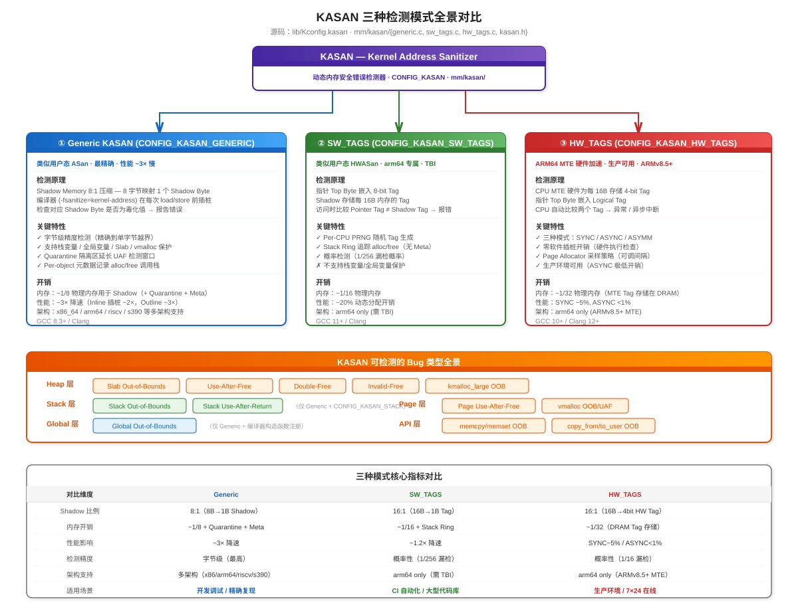
KASAN 在 lib/Kconfig.kasan 中定义了三种互斥的检测模式（choice 语义，同一内核只能选一种）：
① Generic KASAN (CONFIG_KASAN_GENERIC)
// mm/kasan/generic.c — Shadow Memory 检查核心
static __always_inline bool memory_is_poisoned_1(const void *addr)
{
s8 shadow_value = *(s8 *)kasan_mem_to_shadow(addr);
if (unlikely(shadow_value)) {
s8 last_accessible_byte = (unsigned long)addr & KASAN_GRANULE_MASK;
return unlikely(last_accessible_byte >= shadow_value);
}
return false;
}-fsanitize=kernel-address② Software Tag-Based KASAN (CONFIG_KASAN_SW_TAGS)
// mm/kasan/sw_tags.c — Per-CPU PRNG Tag 生成
u8 kasan_random_tag(void)
{
u32 state = this_cpu_read(prng_state);
state = 1664525 * state + 1013904223; // 线性同余 PRNG
this_cpu_write(prng_state, state);
return (u8)(state % (KASAN_TAG_MAX + 1));
}-fsanitize=kernel-hwaddress③ Hardware Tag-Based KASAN (CONFIG_KASAN_HW_TAGS)
// mm/kasan/kasan.h — HW_TAGS 三种检测模式
enum kasan_mode {
KASAN_MODE_SYNC, // 同步：访问时立即触发异常
KASAN_MODE_ASYNC, // 异步：批量收集，极低开销
KASAN_MODE_ASYMM, // 混合：读异步+写同步
};三种模式配置互斥：
# lib/Kconfig.kasan — choice 语义
CONFIG_KASAN_GENERIC=y # 或
CONFIG_KASAN_SW_TAGS=y # 或
CONFIG_KASAN_HW_TAGS=y # 三选一开始选择 KASAN 模式
│
├─ 有 ARMv8.5+ MTE 硬件？
│ ├─ Yes → 需要在生产环境使用？
│ │ ├─ Yes → HW_TAGS (ASYNC 模式，<1% 开销)
│ │ └─ No → HW_TAGS (SYNC 模式，精确定位) 或 Generic (最精确)
│ └─ No → 继续判断
│
├─ 需要字节级精度 或 检测栈/全局变量越界？
│ ├─ Yes → Generic (唯一支持栈/全局变量的模式)
│ └─ No → 继续判断
│
├─ 在 ARM64 平台？
│ ├─ Yes → 需要 CI 大规模跑测试？
│ │ ├─ Yes → SW_TAGS (比 Generic 快 ~60%，适合大型代码库)
│ │ └─ No → Generic (最精确) 或 SW_TAGS (更快)
│ └─ No → Generic (x86/riscv/s390 等只支持 Generic)
│
└─ 默认选择 → Generic典型场景映射：
| 场景 | 推荐模式 | 理由 |
|---|---|---|
| 开发阶段逐行调试 | Generic | 字节级精度 + 栈/全局变量保护 + Quarantine |
| CI/CD 自动化测试 | SW_TAGS 或 Generic | SW_TAGS 更快，Generic 更精确 |
| ARM64 SoC 量产 | HW_TAGS (ASYNC) | < 1% 开销，不影响用户体验 |
| 复现偶发 UAF | Generic | Quarantine 延长检测窗口 |
| 性能基准测试 | 关闭 KASAN | 任何模式都有不可忽略的开销 |
根据 mm/kasan/kasan.h 中的 Shadow Byte 编码值和 mm/kasan/report.c 的 bug 分类逻辑，KASAN 可检测以下类型：
Heap（Slab / kmalloc / Page Allocator）层：
| Bug 类型 | 触发条件 | Shadow 值 | 三种模式支持 |
|---|---|---|---|
| Slab OOB | 访问超出 slab object 边界 | 0xFC (KASAN_SLAB_REDZONE) |
Generic ✓ SW_TAGS ✓ HW_TAGS ✓ |
| Use-After-Free | 访问已 kfree 的对象 | 0xFB (KASAN_SLAB_FREE) |
Generic ✓ SW_TAGS ✓ HW_TAGS ✓ |
| Double-Free | 对同一对象 kfree 两次 | 触发 kasan_report_invalid_free | Generic ✓ SW_TAGS ✓ HW_TAGS ✓ |
| Invalid-Free | kfree 非法地址 | 触发 kasan_report_invalid_free | Generic ✓ SW_TAGS ✓ HW_TAGS ✓ |
| kmalloc_large OOB | 超出 kmalloc_large 边界 | 0xFE (KASAN_PAGE_REDZONE) |
Generic ✓ SW_TAGS ✓ HW_TAGS ✓ |
| Page UAF | 访问已释放的页面 | 0xFF (KASAN_PAGE_FREE) |
Generic ✓ SW_TAGS ✓ HW_TAGS ✓ |
| vmalloc OOB/UAF | 超出 vmalloc 区域 | 0xF8 (KASAN_VMALLOC_INVALID) |
Generic ✓ SW_TAGS ✓ HW_TAGS ✓ |
Stack（栈变量）层（仅 Generic + CONFIG_KASAN_STACK）：
// mm/kasan/kasan.h — 编译器 ABI 定义的栈 Shadow 值
#define KASAN_STACK_LEFT 0xF1 // 栈帧左 redzone
#define KASAN_STACK_MID 0xF2 // 变量间 redzone
#define KASAN_STACK_RIGHT 0xF3 // 栈帧右 redzone
#define KASAN_STACK_PARTIAL 0xF4 // 部分有效Global（全局变量）层（仅 Generic）：
#define KASAN_GLOBAL_REDZONE 0xF9 // 全局变量 redzone编译器通过 __asan_register_globals() 构造函数在启动时注册所有全局变量并在其周围布置 redzone。
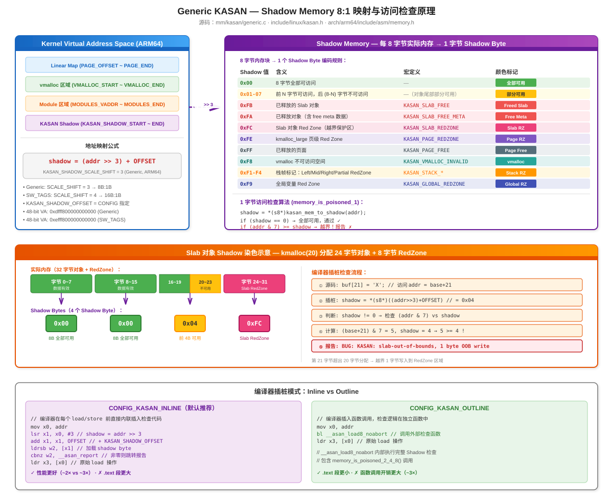
Generic KASAN 的核心思想是为内核虚拟地址空间建立一个影子映射区（Shadow Memory），每 8 字节内核内存对应 1 字节 Shadow Memory，编码该内存区域的可访问性状态。
地址映射公式（include/linux/kasan.h）：
static inline void *kasan_mem_to_shadow(const void *addr)
{
return (void *)((unsigned long)addr >> KASAN_SHADOW_SCALE_SHIFT)
+ KASAN_SHADOW_OFFSET;
}ARM64 平台参数（arch/arm64/Makefile）：
| 参数 | Generic | SW_TAGS |
|---|---|---|
KASAN_SHADOW_SCALE_SHIFT |
3（8B:1B） | 4（16B:1B） |
KASAN_SHADOW_OFFSET（48-bit VA） |
0xdfff800000000000 |
0xefff800000000000 |
| Shadow 占用比例 | 1/8 物理内存 | 1/16 物理内存 |
Shadow 区域计算（arch/arm64/include/asm/memory.h）：
#define KASAN_SHADOW_OFFSET _AC(CONFIG_KASAN_SHADOW_OFFSET, UL)
#define KASAN_SHADOW_END ((UL(1) << (64 - KASAN_SHADOW_SCALE_SHIFT)) + KASAN_SHADOW_OFFSET)
#define _KASAN_SHADOW_START(va) (KASAN_SHADOW_END - (UL(1) << ((va) - KASAN_SHADOW_SCALE_SHIFT)))
#define KASAN_SHADOW_START _KASAN_SHADOW_START(vabits_actual)
#define PAGE_END KASAN_SHADOW_START // Shadow 紧邻 Linear Map 下方以 48-bit VA、Generic 模式为例：
(1 << 61) + 0xdfff800000000000 = 0xe000_0000_0000_0000SHADOW_END - (1 << 45) = 0xdfff_e000_0000_00001 << 45 = 32 TB，对应 32TB × 8 = 256 TB 内核虚拟地址空间每个 Shadow Byte 编码了对应 8 字节（一个 granule，KASAN_GRANULE_SIZE = 1 << 3 = 8）内存的可访问性。定义在 mm/kasan/kasan.h：
/* Generic KASAN Shadow Byte 编码 */
#define KASAN_PAGE_FREE 0xFF /* 已释放页面 */
#define KASAN_PAGE_REDZONE 0xFE /* kmalloc_large Red Zone */
#define KASAN_SLAB_REDZONE 0xFC /* Slab 对象 Red Zone */
#define KASAN_SLAB_FREE 0xFB /* 已释放 Slab 对象 */
#define KASAN_SLAB_FREE_META 0xFA /* 含 free meta 的已释放对象 */
#define KASAN_GLOBAL_REDZONE 0xF9 /* 全局变量 Red Zone */
#define KASAN_VMALLOC_INVALID 0xF8 /* vmalloc 不可访问区 */
/* 栈帧标记（编译器 ABI，不可更改） */
#define KASAN_STACK_LEFT 0xF1 /* 栈帧左 Red Zone */
#define KASAN_STACK_MID 0xF2 /* 变量间 Red Zone */
#define KASAN_STACK_RIGHT 0xF3 /* 栈帧右 Red Zone */
#define KASAN_STACK_PARTIAL 0xF4 /* 部分有效 */
/* alloca Red Zone */
#define KASAN_ALLOCA_LEFT 0xCA
#define KASAN_ALLOCA_RIGHT 0xCBShadow Byte 值的判定逻辑：
| Shadow 值 | 含义 | 访问规则 |
|---|---|---|
0x00 |
8 字节全部可访问 | 任意字节访问均合法 |
0x01~0x07 |
前 N 字节可访问 | (addr & 7) < shadow_value 则合法 |
0xF1~0xFF |
各类毒化标记 | 任何访问都非法 |
Generic KASAN 依赖编译器在每次内存访问前自动插入检查代码。编译器标志为 -fsanitize=kernel-address，支持两种插桩策略：
Inline 插桩（CONFIG_KASAN_INLINE，默认）：
// ARM64 编译器生成的 Inline 检查（伪代码）
// 原始代码: int x = *(int *)addr; // 4 字节 load
lsr x1, x0, #3 // shadow_addr = addr >> 3
add x1, x1, KASAN_SHADOW_OFFSET
ldrsb w2, [x1] // shadow_value = *shadow_addr
cbnz w2, .Lreport // 非零 → 进入慢路径检查
ldr w3, [x0] // 原始 load（快路径）
...
.Lreport:
// 慢路径：完整检查 + 报告
bl __asan_report_load4_noabortOutline 插桩（CONFIG_KASAN_OUTLINE）：
// 编译器生成函数调用
mov x0, addr
bl __asan_load4_noabort // 调用外部检查函数
ldr w3, [x0] // 原始 load两种模式性能对比（lib/Kconfig.kasan）：
| 维度 | Inline | Outline |
|---|---|---|
| 性能降速 | ~2× | ~3× |
| .text 段增长 | 显著增大 | 增长较小 |
| 检查效率 | 分支预测友好，热路径短 | 函数调用开销 |
| 适用场景 | 性能敏感的开发调试 | 内存受限平台 |
检查核心函数在 mm/kasan/generic.c：
/* 统一入口：根据编译时常量 size 分发到特化检查 */
static __always_inline bool memory_is_poisoned(const void *addr, size_t size)
{
if (__builtin_constant_p(size)) {
switch (size) {
case 1: return memory_is_poisoned_1(addr);
case 2:
case 4:
case 8: return memory_is_poisoned_2_4_8(addr, size);
case 16: return memory_is_poisoned_16(addr);
default: BUILD_BUG();
}
}
return memory_is_poisoned_n(addr, size); // 任意大小
}
/* 1 字节检查 — 最基础的判断逻辑 */
static __always_inline bool memory_is_poisoned_1(const void *addr)
{
s8 shadow_value = *(s8 *)kasan_mem_to_shadow(addr);
if (unlikely(shadow_value)) {
s8 last_accessible_byte = (unsigned long)addr & KASAN_GRANULE_MASK;
return unlikely(last_accessible_byte >= shadow_value);
}
return false;
}
/* 完整检查入口 */
static __always_inline bool check_region_inline(const void *addr,
size_t size, bool write, unsigned long ret_ip)
{
if (!kasan_enabled()) return true; // KASAN 未启用
if (unlikely(size == 0)) return true; // 零大小访问
if (unlikely(addr + size < addr)) // 地址回绕
return !kasan_report(addr, size, write, ret_ip);
if (unlikely(!addr_has_metadata(addr))) // 地址无 shadow 映射
return !kasan_report(addr, size, write, ret_ip);
if (likely(!memory_is_poisoned(addr, size))) // 快路径：未毒化
return true;
return !kasan_report(addr, size, write, ret_ip); // 慢路径：报告
}检查流程总结：
load/store 指令
│
├─ 编译器插入检查代码（Inline 或 bl __asan_loadN）
│
├─ kasan_enabled() == false? → 直接放行
│
├─ addr_has_metadata(addr)? → 无 shadow → 报告
│
├─ memory_is_poisoned(addr, size)?
│ ├─ shadow == 0x00 → 通过 ✓
│ ├─ shadow == 0x01~0x07 → 比较 (addr & 7) < shadow?
│ │ ├─ Yes → 通过 ✓（在有效范围内）
│ │ └─ No → 越界 → kasan_report()
│ └─ shadow >= 0xF1 → 毒化区 → kasan_report()
│
└─ kasan_report() → 打印完整 bug 报告ARM64 48-bit VA 模式下，内核虚拟地址空间布局（上半部分 0xFFFF_0000_0000_0000 ~ 0xFFFF_FFFF_FFFF_FFFF）：
┌──────────────────────────────────────────────────┐ 0xFFFF_FFFF_FFFF_FFFF
│ Fixmap / PCI I/O │
├──────────────────────────────────────────────────┤
│ vmemmap (struct page[]) │
├──────────────────────────────────────────────────┤
│ vmalloc / ioremap 区域 │ VMALLOC_START ~ VMALLOC_END
├──────────────────────────────────────────────────┤
│ Module 区域 │ MODULES_VADDR ~ MODULES_END
├──────────────────────────────────────────────────┤ PAGE_OFFSET
│ Linear Map (直接映射物理内存) │ PAGE_OFFSET ~ PAGE_END
├──────────────────────────────────────────────────┤ PAGE_END = KASAN_SHADOW_START
│ │
│ ★ KASAN Shadow Memory (1/8 虚拟地址空间) │ KASAN_SHADOW_START ~ KASAN_SHADOW_END
│ Generic: ~32 TB (48-bit VA) │
│ 映射公式: shadow_addr = (addr >> 3) + OFFSET │
│ │
├──────────────────────────────────────────────────┤ KASAN_SHADOW_END
│ Guard hole │
└──────────────────────────────────────────────────┘ 0xFFFF_0000_0000_0000当 SLUB 分配器分配一个 slab 对象时，KASAN 通过 mm/kasan/common.c 中的 Hook 函数进行 Shadow 染色：
① slab 页初始化 — __kasan_poison_slab()：
// mm/kasan/common.c — 整个 slab 页毒化为 SLAB_REDZONE
void __kasan_poison_slab(struct slab *slab)
{
// 重置所有页面的 KASAN tag
for (i = 0; i < compound_nr(page); i++)
page_kasan_tag_reset(page + i);
// 整页毒化为 Slab RedZone
kasan_poison(page_address(page), page_size(page),
KASAN_SLAB_REDZONE, false);
}② 对象分配 — 分配时 unpoison 对象区域：
分配 kmalloc(20) → SLUB 选择 kmalloc-32 缓存（32 字节对象）:
Shadow 变化：
对象前: [FC][FC][FC][FC] — 全部 SLAB_REDZONE
分配后: [00][00][04][FC] — 前 20 字节解毒，后 12 字节保持 RedZone
↑
20 & 7 = 4，前 4 字节可用③ 对象释放 — 重新毒化为 KASAN_SLAB_FREE：
kfree(ptr) 后:
[FB][FB][FB][FC] — 对象区域毒化为 0xFB，RedZone 保持 0xFC④ Quarantine 持有期间 — 对象保持 0xFB 毒化状态，任何 UAF 访问会被检测
启用 CONFIG_KASAN_STACK 后，编译器在函数栈帧中自动插入 Red Zone：
void example_function(void) {
char buf[16]; // 原始局部变量
int value;
// 编译器实际生成的栈布局:
// [KASAN_STACK_LEFT (32B)] [buf (16B)] [KASAN_STACK_MID (32B)]
// [value (4B + padding)] [KASAN_STACK_RIGHT (32B)]
}编译器在函数入口时毒化所有 Red Zone 区域（Shadow 值 0xF1/0xF2/0xF3），在函数返回时解毒整个栈帧。
注意：CONFIG_KASAN_STACK会显著增加栈空间使用（KASAN_THREAD_SHIFT = 1，即栈大小翻倍），Clang 编译器下可能导致栈溢出（参见 LLVM PR#38809），因此 Kconfig 标记为unsafe。
编译器为每个全局变量创建 kasan_global 描述结构，并在模块/内核启动时通过构造函数注册：
// mm/kasan/kasan.h — 编译器 ABI 结构
struct kasan_global {
const void *beg; // 全局变量起始地址
size_t size; // 变量大小
size_t size_with_redzone; // 含 redzone 的大小（32 字节对齐）
const void *name; // 变量名
const void *module_name; // 所在模块名
unsigned long has_dynamic_init; // C++ 动态初始化标记
struct kasan_source_location *location; // 源码位置
};注册流程：
编译器生成构造函数 → __asan_register_globals(globals[], n)
│
├─ 遍历每个 kasan_global 结构
│ ├─ 解毒变量本身区域（Shadow = 0x00）
│ └─ 毒化 redzone 区域（Shadow = KASAN_GLOBAL_REDZONE = 0xF9）
│
└─ 模块卸载时 → __asan_unregister_globals() 清除 Shadow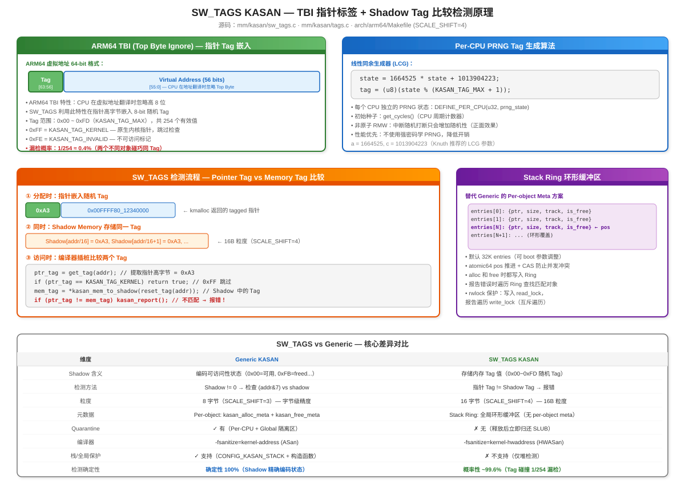
SW_TAGS KASAN 的前提是 ARM64 的 TBI（Top Byte Ignore） 硬件特性：CPU 在地址翻译时忽略虚拟地址的高 8 位（[63:56]），这 8 位可以自由存放元数据。
ARM64 Tagged 指针格式（64-bit）：
┌─────────┬──────────────────────────────────────────┐
│ Tag [63:56] │ Virtual Address [55:0] │
│ (8-bit) │ CPU 实际用于地址翻译的部分 │
└─────────┴──────────────────────────────────────────┘KASAN 利用 TBI 在每个 slab 指针的高字节嵌入随机 Tag，同时在 Shadow Memory 中存储同一 Tag。内核操作 Tag 的宏定义（arch/arm64/include/asm/kasan.h）：
#define arch_kasan_set_tag(addr, tag) __tag_set(addr, tag)
#define arch_kasan_reset_tag(addr) __tag_reset(addr)
#define arch_kasan_get_tag(addr) __tag_get(addr)关键 Tag 值（include/linux/kasan-tags.h）：
| Tag | 常量 | 含义 |
|---|---|---|
0xFF |
KASAN_TAG_KERNEL |
原生内核指针，跳过检查 |
0xFE |
KASAN_TAG_INVALID |
不可访问标记（类似 Generic 的毒化值） |
0x00~0xFD |
有效 Tag 范围 | KASAN_TAG_MAX = 0xFD，共 254 个有效值 |
SW_TAGS 使用 Per-CPU 的线性同余生成器（LCG） 生成随机 Tag（mm/kasan/sw_tags.c）：
static DEFINE_PER_CPU(u32, prng_state);
void __init kasan_init_sw_tags(void)
{
int cpu;
for_each_possible_cpu(cpu)
per_cpu(prng_state, cpu) = (u32)get_cycles(); // 初始种子 = CPU 周期计数
kasan_init_tags(); // 初始化 Stack Ring
kasan_enable();
}
u8 kasan_random_tag(void)
{
u32 state = this_cpu_read(prng_state);
state = 1664525 * state + 1013904223; // Knuth 推荐的 LCG 参数
this_cpu_write(prng_state, state);
return (u8)(state % (KASAN_TAG_MAX + 1)); // 0x00 ~ 0xFD
}设计权衡：
get_random_bytes()），因为每次 kmalloc 都要调用，性能是首要考虑SW_TAGS 的检测逻辑在 mm/kasan/sw_tags.c 的 kasan_check_range() 中：
bool kasan_check_range(const void *addr, size_t size, bool write,
unsigned long ret_ip)
{
u8 tag = get_tag((const void *)addr); // 提取指针高字节 Tag
// 0xFF = 原生内核指针（kmap/virt_to_page 丢失 tag），跳过
if (tag == KASAN_TAG_KERNEL)
return true;
void *untagged_addr = kasan_reset_tag((const void *)addr);
if (unlikely(!addr_has_metadata(untagged_addr)))
return !kasan_report(addr, size, write, ret_ip);
u8 *shadow_first = kasan_mem_to_shadow(untagged_addr);
u8 *shadow_last = kasan_mem_to_shadow(untagged_addr + size - 1);
// 遍历覆盖范围内的所有 Shadow Byte，逐个比较 Tag
for (u8 *shadow = shadow_first; shadow <= shadow_last; shadow++) {
if (*shadow != tag) // Tag 不匹配！
return !kasan_report(addr, size, write, ret_ip);
}
return true;
}检测流程：
kmalloc(64) 返回 tagged 指针: 0xA300_FFFF_8012_0000
│
├─ 指针 Tag = 0xA3 (高字节)
├─ 实际地址 = 0x0000_FFFF_8012_0000 (TBI 忽略高字节)
├─ Shadow Memory 中: Shadow[addr/16] = 0xA3 (对象区域)
│ Shadow[addr/16+4] = 0xFE (RedZone, INVALID)
│
├─ 正常访问 ptr[0~63]: Tag 0xA3 == Shadow 0xA3 → 通过 ✓
├─ 越界访问 ptr[64]: Tag 0xA3 != Shadow 0xFE → 报错 ✗
└─ kfree(ptr) 后新 Tag: Shadow 设为新随机值 0x5B
├─ UAF 访问: Tag 0xA3 != Shadow 0x5B → 报错 ✗
└─ 漏检情况: 新 Tag 碰巧 == 0xA3 → 漏检 (1/254 概率)编译器使用 -fsanitize=kernel-hwaddress 插桩，生成 __hwasan_load/store 调用（mm/kasan/sw_tags.c）：
#define DEFINE_HWASAN_LOAD_STORE(size) \
void __hwasan_load##size##_noabort(void *addr) { \
kasan_check_range(addr, size, false, _RET_IP_); \
} \
void __hwasan_store##size##_noabort(void *addr) { \
kasan_check_range(addr, size, true, _RET_IP_); \
}
DEFINE_HWASAN_LOAD_STORE(1); // __hwasan_load1_noabort / __hwasan_store1_noabort
DEFINE_HWASAN_LOAD_STORE(2);
DEFINE_HWASAN_LOAD_STORE(4);
DEFINE_HWASAN_LOAD_STORE(8);
DEFINE_HWASAN_LOAD_STORE(16);
// + __hwasan_loadN_noabort / __hwasan_storeN_noabort 任意大小与 Generic 的 __asan_load/store 系列对应，但底层调用的检查逻辑不同：Generic 检查 Shadow 是否毒化，SW_TAGS 检查 Tag 是否匹配。
SW_TAGS 不使用 per-object 元数据（kasan_requires_meta() = false），而是通过全局 Stack Ring 记录分配/释放的调用栈（mm/kasan/tags.c）：
struct kasan_stack_ring_entry {
void *ptr; // 对象地址
size_t size; // 对象大小
struct kasan_track track; // {pid, stack_handle, cpu, timestamp}
bool is_free; // true = 释放记录, false = 分配记录
};
struct kasan_stack_ring {
rwlock_t lock; // read: 写入条目, write: 遍历报告
size_t size; // 条目数量（默认 32768）
atomic64_t pos; // 当前写入位置（环形递增）
struct kasan_stack_ring_entry *entries; // memblock 分配
};写入流程（save_stack_info()）：
// 在 alloc 和 free 时调用
read_lock_irqsave(&stack_ring.lock, flags); // 读锁允许并发写入
next:
pos = atomic64_fetch_add(1, &stack_ring.pos); // 原子推进位置
entry = &stack_ring.entries[pos % stack_ring.size];
old_ptr = READ_ONCE(entry->ptr);
if (old_ptr == STACK_RING_BUSY_PTR) goto next; // 忙等
if (!try_cmpxchg(&entry->ptr, &old_ptr, STACK_RING_BUSY_PTR))
goto next; // CAS 失败，其他 CPU 抢先
// 填写条目
entry->size = cache->object_size;
kasan_set_track(&entry->track, stack);
entry->is_free = is_free;
entry->ptr = object; // 最后写入 ptr 解除 BUSY 状态
read_unlock_irqrestore(&stack_ring.lock, flags);关键参数：
KASAN_STACK_RING_SIZE_DEFAULT = 32 << 10 = 32768 条目kasan.stack_ring_size=kasan.stacktrace=off（减少开销）| 差异点 | Generic | SW_TAGS |
|---|---|---|
| Shadow 粒度 | 8B:1B（SCALE_SHIFT=3） |
16B:1B（SCALE_SHIFT=4） |
| Shadow 编码 | 可访问性状态（0x00=可用, 0xFB=freed） | Tag 值（0x00~0xFD 随机 Tag, 0xFE=invalid） |
| Shadow 内存占用 | 1/8 物理内存 | 1/16 物理内存 |
KASAN_SHADOW_OFFSET（ARM64 48-bit） |
0xdfff800000000000 |
0xefff800000000000 |
| Shadow 判定 | shadow != 0 → 进入慢路径逐字节比较 |
ptr_tag != shadow_tag → 直接报错 |
| 部分可用编码 | 0x01~0x07 表示前 N 字节可用 |
无此概念（全 16B 同一 Tag） |
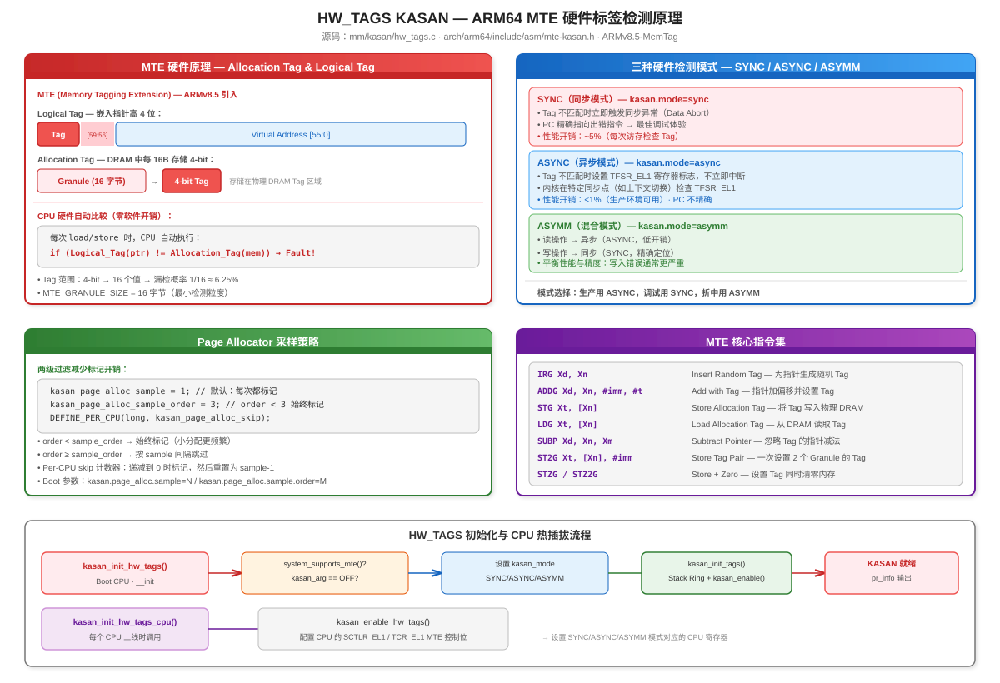
HW_TAGS KASAN 依赖 ARM64 的 MTE（Memory Tagging Extension） 硬件特性（ARMv8.5 引入），由 CPU 在每次内存访问时自动比较 Tag，实现零软件插桩开销的内存安全检测。
两种 Tag：
| Tag 类型 | 位宽 | 存储位置 | 设置方式 |
|---|---|---|---|
| Logical Tag | 4-bit | 指针的 [59:56] 位 | 软件通过 IRG/ADDG 指令设置 |
| Allocation Tag | 4-bit | 物理 DRAM 专用存储 | 软件通过 STG/ST2G 指令写入 |
硬件检测原理：CPU 在每次 load/store 时自动执行：
if (Logical_Tag(pointer[59:56]) != Allocation_Tag(memory_granule))
→ 触发 Tag Check Fault（同步异常或异步标记）MTE Granule：16 字节为最小标记单位（MTE_GRANULE_SIZE = 16），每个 Granule 存储一个 4-bit Allocation Tag。Tag 值范围 0~15，共 16 种，漏检概率 1/16 ≈ 6.25%。
HW_TAGS 支持三种检测模式（mm/kasan/kasan.h）：
enum kasan_mode {
KASAN_MODE_SYNC, // 同步模式
KASAN_MODE_ASYNC, // 异步模式
KASAN_MODE_ASYMM, // 混合模式
};① SYNC（同步模式）：
② ASYNC（异步模式）：
TFSR_EL1 寄存器标志，不中断执行TFSR_EL1③ ASYMM（混合模式）：
运行时判断（mm/kasan/kasan.h）：
static inline bool kasan_async_fault_possible(void)
{
return kasan_mode == KASAN_MODE_ASYNC || kasan_mode == KASAN_MODE_ASYMM;
}
static inline bool kasan_sync_fault_possible(void)
{
return kasan_mode == KASAN_MODE_SYNC || kasan_mode == KASAN_MODE_ASYMM;
}// mm/kasan/kasan.h
#if defined(CONFIG_KASAN_GENERIC) || defined(CONFIG_KASAN_SW_TAGS)
#define KASAN_GRANULE_SIZE (1UL << KASAN_SHADOW_SCALE_SHIFT) // Generic:8, SW_TAGS:16
#else
#include <asm/mte-kasan.h>
#define KASAN_GRANULE_SIZE MTE_GRANULE_SIZE // HW_TAGS: 16 字节
#endifHW_TAGS 不使用软件 Shadow Memory：
| 指令 | 作用 | KASAN 使用场景 |
|---|---|---|
IRG Xd, Xn |
生成随机 Tag 并嵌入指针 | kasan_random_tag() |
ADDG Xd, Xn, #imm, #tag |
指针加偏移并设置 Tag | 对象指针计算 |
STG Xt, [Xn] |
将 Xt 的 Tag 写入 [Xn] 对应 Granule | kasan_unpoison() 标记可用 |
ST2G Xt, [Xn] |
一次设置 2 个 Granule 的 Tag | 大块内存快速标记 |
STZG Xt, [Xn] |
设置 Tag + 清零内存 | 分配时初始化 |
LDG Xt, [Xn] |
读取 Granule 的 Allocation Tag | hw_get_mem_tag() 报告 |
SUBP Xd, Xn, Xm |
忽略 Tag 的指针减法 | 地址计算（避免 Tag 干扰） |
为降低生产环境开销，HW_TAGS 支持 Page Allocator 的采样标记（mm/kasan/hw_tags.c）：
#define PAGE_ALLOC_SAMPLE_DEFAULT 1 // 默认：每次都标记
#define PAGE_ALLOC_SAMPLE_ORDER_DEFAULT 3 // order < 3 始终标记
unsigned long kasan_page_alloc_sample = PAGE_ALLOC_SAMPLE_DEFAULT;
unsigned int kasan_page_alloc_sample_order = PAGE_ALLOC_SAMPLE_ORDER_DEFAULT;
DEFINE_PER_CPU(long, kasan_page_alloc_skip);采样判定逻辑：
static inline bool kasan_sample_page_alloc(unsigned int order)
{
if (kasan_page_alloc_sample == 1) return true; // 无采样，全部标记
if (order < kasan_page_alloc_sample_order)
return true; // 小 order 始终标记（高频分配，更可能出 bug）
if (this_cpu_dec_return(kasan_page_alloc_skip) < 0) {
this_cpu_write(kasan_page_alloc_skip, kasan_page_alloc_sample - 1);
return true; // 计数器归零，本次标记
}
return false; // 跳过本次标记
}Boot 参数：
kasan.page_alloc.sample=100 — 每 100 次大 order 分配标记 1 次kasan.page_alloc.sample.order=3 — order < 3 始终标记HW_TAGS 需要对每个 CPU 配置 MTE 控制位（mm/kasan/hw_tags.c）：
// 每个 CPU 上线时调用（包括 Boot CPU 和热插拔 CPU）
void kasan_init_hw_tags_cpu(void)
{
// 无需检查 MTE 能力：此函数仅在 MTE 硬件上被调用
if (kasan_arg == KASAN_ARG_OFF)
return;
kasan_enable_hw_tags(); // 配置 SCTLR_EL1 / TCR_EL1 的 MTE 位
}kasan_enable_hw_tags() 设置 CPU 的系统寄存器：
SCTLR_EL1.ATA — 使能 Allocation Tag Access（内核态 Tag 检查）TCR_EL1.TCMA — Tag Check Mode for Address space（SYNC/ASYNC/ASYMM）ASYNC 模式下，Tag 检查失败不会立即中断，而是延迟到同步点处理：
① CPU 执行 load/store
│
├─ Tag 匹配 → 正常继续
│
└─ Tag 不匹配 → CPU 设置 TFSR_EL1 寄存器的错误标志位
（不触发异常，继续执行后续指令）
│
② 到达同步点（上下文切换 / 系统调用返回 / 中断入口）
│
├─ 内核检查 TFSR_EL1
│ ├─ 无错误标志 → 继续
│ └─ 有错误标志 → kasan_report_async()
│
└─ 报告内容：
• 仅知道"某次访问发生了 Tag 不匹配"
• 无法精确定位出错指令的 PC
• 适合发现问题存在性，不适合精确调试实战建议：在 ASYNC 模式发现问题后，切换到 SYNC 模式复现以获取精确 PC。可通过 kasan.mode=sync Boot 参数或运行时切换。
HW_TAGS 特有的 Boot 参数汇总：
| 参数 | 默认值 | 说明 |
|---|---|---|
kasan=off/on |
on | 启用/禁用 KASAN |
kasan.mode=sync/async/asymm |
sync | 检测模式 |
kasan.vmalloc=off/on |
on | vmalloc 区域保护 |
kasan.stacktrace=off/on |
on | 调用栈收集 |
kasan.write_only=off/on |
off | 仅检测写操作 |
kasan.fault=report/panic/panic_on_write |
report | 错误处理策略 |
kasan.page_alloc.sample=N |
1 | 页分配采样间隔 |
kasan.page_alloc.sample.order=N |
3 | 始终标记的最小 order |
核心思想：KASAN 采用 五层架构 设计，通过 Makefile 条件编译实现 Generic / SW_TAGS / HW_TAGS 三种模式的互斥选择，共享公共核心层和报告框架，最大限度复用代码。
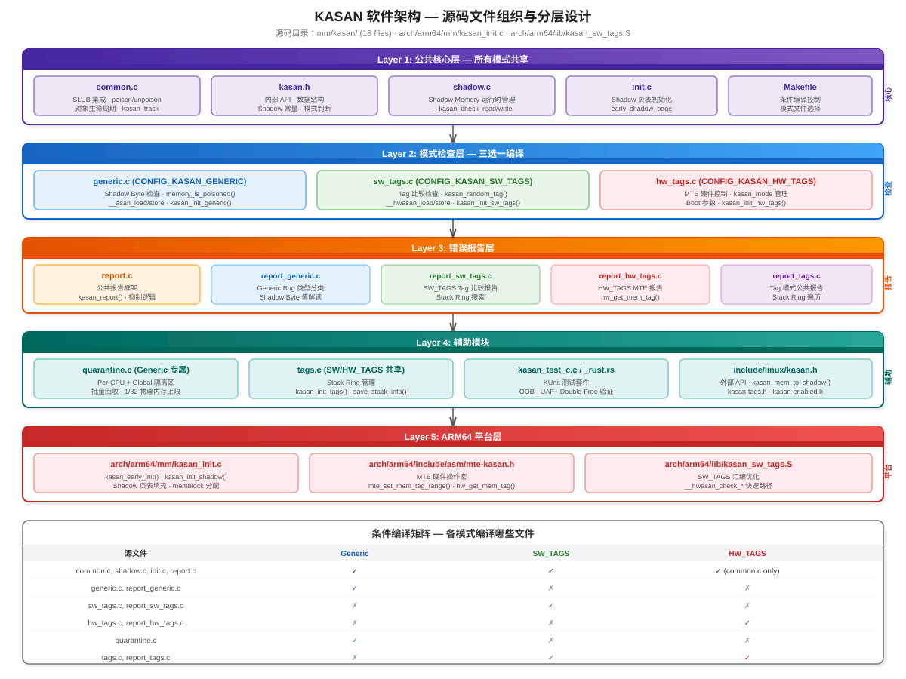
KASAN 代码主要位于 mm/kasan/ 目录，共 18 个文件。架构分为五层：
| 层次 | 源文件 | 职责 |
|---|---|---|
| 公共核心层 | common.c, kasan.h, shadow.c, init.c, Makefile |
SLUB 集成、Shadow 管理、对象生命周期 |
| 模式检查层 | generic.c / sw_tags.c / hw_tags.c（三选一） |
内存访问检查的具体实现 |
| 报告层 | report.c + report_generic.c / report_sw_tags.c / report_hw_tags.c + report_tags.c |
错误检测与格式化输出 |
| 辅助模块层 | quarantine.c（Generic 专属）、tags.c（Tag 模式共享） |
隔离区管理、Stack Ring |
| 平台层 | arch/arm64/mm/kasan_init.c、asm/mte-kasan.h、lib/kasan_sw_tags.S |
Shadow 页表初始化、MTE 硬件操作 |
Makefile 条件编译矩阵（mm/kasan/Makefile）：
# mm/kasan/Makefile — 条件编译核心
obj-y := common.o report.o # 所有模式共享
obj-$(CONFIG_KASAN_GENERIC) += init.o generic.o report_generic.o shadow.o quarantine.o
obj-$(CONFIG_KASAN_HW_TAGS) += hw_tags.o report_hw_tags.o tags.o report_tags.o
obj-$(CONFIG_KASAN_SW_TAGS) += init.o report_sw_tags.o shadow.o sw_tags.o tags.o report_tags.o关键设计约束：
CFLAGS_REMOVE_xxx.o = $(CC_FLAGS_FTRACE) — 避免递归调用-fno-stack-protector — KASAN 自身不能被 KASAN 检测-DDISABLE_BRANCH_PROFILING — 避免递归xxx_SANITIZE := ncommon.c 是 KASAN 最核心的文件，所有三种模式都编译，负责与 SLUB 分配器的集成。
1) 对象分配流程
kmalloc() → __kasan_slab_alloc()
├── kasan_quarantine_reduce() // 触发隔离区回收（仅 Generic）
├── assign_tag() // 分配 tag（Generic 返回 0xff）
├── set_tag(object, tag) // 设置指针 tag（Tag 模式）
├── unpoison_slab_object() // 去毒化对象
│ ├── kasan_unpoison() // 解除 shadow/tag 标记
│ └── kasan_save_alloc_info() // 保存分配栈信息
└── poison_kmalloc_redzone() // 精确毒化 redzone（Generic 字节级精度）2) 对象释放流程
kfree() → __kasan_slab_free()
├── check_slab_allocation() // 检查 double-free 和 invalid-free
│ ├── nearest_obj() 验证 // 地址是否对齐到对象边界
│ └── kasan_byte_accessible() // 对象是否已毒化（已释放）
├── poison_slab_object() // 毒化整个对象
│ ├── kasan_poison(KASAN_SLAB_FREE)
│ └── kasan_save_free_info() // 保存释放栈信息
└── kasan_quarantine_put() // 放入隔离区（仅 Generic）
└── return true → SLUB 暂不放回 freelist3) tag 分配策略（assign_tag）
// mm/kasan/common.c
static inline u8 assign_tag(struct kmem_cache *cache, const void *object, bool init)
{
if (IS_ENABLED(CONFIG_KASAN_GENERIC))
return 0xff; // Generic 不使用 tag
// 无构造函数且无 TYPESAFE_BY_RCU：分配时随机生成
if (!cache->ctor && !(cache->flags & SLAB_TYPESAFE_BY_RCU))
return init ? KASAN_TAG_KERNEL : kasan_random_tag();
// 有构造函数或 TYPESAFE_BY_RCU：slab 创建时分配，后续复用
return init ? kasan_random_tag() : get_tag(object);
}4) 页级 poison/unpoison
// mm/kasan/common.c — page_alloc 集成
bool __kasan_unpoison_pages(struct page *page, unsigned int order, bool init)
{
if (!kasan_sample_page_alloc(order)) // HW_TAGS 采样过滤
return false;
tag = kasan_random_tag();
kasan_unpoison(set_tag(page_address(page), tag), PAGE_SIZE << order, init);
for (i = 0; i < (1 << order); i++)
page_kasan_tag_set(page + i, tag); // 记录到 struct page
return true;
}
void __kasan_poison_pages(struct page *page, unsigned int order, bool init)
{
kasan_poison(page_address(page), PAGE_SIZE << order, KASAN_PAGE_FREE, init);
}5) kasan_enable/disable_current（软件模式专用）
// 通过 task_struct.kasan_depth 控制检查抑制
// 用于 SLUB 访问元数据时避免误报
void kasan_enable_current(void) { current->kasan_depth++; }
void kasan_disable_current(void) { current->kasan_depth--; }generic.c 仅在 CONFIG_KASAN_GENERIC=y 时编译，实现编译器插桩的回调函数。
1) 核心检查函数 — memory_is_poisoned
// mm/kasan/generic.c — 编译器插桩的检查入口
static __always_inline bool memory_is_nonzero(const void *start, const void *end)
{
// 逐字节检查 shadow memory 是否有非零值
// 优化：先按 unsigned long 对齐批量检查，再处理尾部
}
static __always_inline bool memory_is_poisoned(const void *addr, size_t size)
{
// 1-8 字节访问：检查单个 shadow byte
// shadow_value != 0 && shadow_value <= (addr % 8 + size - 1)
// 大于 8 字节：检查 shadow memory 范围
// memory_is_nonzero(shadow_start, shadow_end)
}2) 编译器插桩回调
GCC/Clang 在每次内存访问前插入 asan_loadN / asan_storeN 调用：
// mm/kasan/generic.c
#define DEFINE_ASAN_LOAD_STORE(size) \
void __asan_load##size(unsigned long addr) \
{ \
if (!check_region_inline(addr, size, false, _RET_IP_)) \
return; \
kasan_report(addr, size, false, _RET_IP_); \
} \
void __asan_store##size(unsigned long addr) \
{ \
if (!check_region_inline(addr, size, true, _RET_IP_)) \
return; \
kasan_report(addr, size, true, _RET_IP_); \
}
DEFINE_ASAN_LOAD_STORE(1); // __asan_load1, __asan_store1
DEFINE_ASAN_LOAD_STORE(2); // __asan_load2, __asan_store2
DEFINE_ASAN_LOAD_STORE(4); // __asan_load4, __asan_store4
DEFINE_ASAN_LOAD_STORE(8); // __asan_load8, __asan_store8
DEFINE_ASAN_LOAD_STORE(16); // __asan_load16, __asan_store163) 检查流程
__asan_load4(addr)
→ check_region_inline(addr, 4, false, ret_ip)
→ addr_has_metadata(addr) // 地址是否在 KASAN 监控范围
→ memory_is_poisoned(addr, 4) // 检查 shadow byte
→ shadow = *(u8*)kasan_mem_to_shadow(addr)
→ if (shadow != 0 && shadow <= addr%8+3) → 检测到越界！
→ kasan_report(addr, 4, false, ip) // 报告错误4) Inline vs Outline 插桩
| 特性 | Inline (CONFIG_KASAN_INLINE) | Outline (CONFIG_KASAN_OUTLINE) |
|---|---|---|
| 检查代码 | 编译器内联到每个访问点 | 调用 __asan_loadN 函数 |
| 性能 | 更快（无函数调用开销） | 更慢（~x2-3 性能下降） |
| 代码体积 | 更大（每个访问点展开） | 更小（共享检查函数） |
| 默认配置 | ARM64 默认选择 | — |
sw_tags.c 仅在 CONFIG_KASAN_SW_TAGS=y 时编译，实现基于 TBI 的标签检查。
1) PRNG Tag 生成
// mm/kasan/sw_tags.c
u8 kasan_random_tag(void)
{
if (kasan_enabled()) {
u32 state = this_cpu_read(prng_state);
state = (state ^ (state << 13)) & 0xFFFFFFFF;
state = (state ^ (state >> 17)) & 0xFFFFFFFF;
state = (state ^ (state << 5)) & 0xFFFFFFFF;
this_cpu_write(prng_state, state);
// 返回 1-0xFE（避免 0x00=匹配所有, 0xFF=native tag）
return (u8)(state % (KASAN_TAG_MAX - KASAN_TAG_MIN + 1)) + KASAN_TAG_MIN;
}
return 0;
}2) 编译器回调 — __hwasan_loadN
// mm/kasan/sw_tags.c
#define DEFINE_HWASAN_LOAD_STORE(size) \
void __hwasan_load##size##_noabort(unsigned long addr) \
{ \
check_tag(addr, size, false, _RET_IP_); \
} \
void __hwasan_store##size##_noabort(unsigned long addr) \
{ \
check_tag(addr, size, true, _RET_IP_); \
}
// check_tag 核心：
// ptr_tag = get_tag(addr) // 取指针高 8 位
// mem_tag = *(u8*)kasan_mem_to_shadow(kasan_reset_tag(addr))
// if (ptr_tag != KASAN_TAG_KERNEL && ptr_tag != mem_tag)
// kasan_report(addr, size, is_write, ip)3) 初始化 — PRNG 种子
// mm/kasan/sw_tags.c
void __init kasan_init_sw_tags(void)
{
int cpu;
for_each_possible_cpu(cpu)
per_cpu(prng_state, cpu) = (u32)(get_cycles() + cpu * 123456789);
kasan_init_tags(); // 初始化 Stack Ring（tags.c）
}hw_tags.c 仅在 CONFIG_KASAN_HW_TAGS=y 时编译，管理 MTE 硬件的软件控制面。
1) 模式管理（kasan_mode）
// mm/kasan/hw_tags.c
enum kasan_mode {
KASAN_MODE_SYNC, // 同步检查，立即 fault
KASAN_MODE_ASYNC, // 异步检查，延迟报告
KASAN_MODE_ASYMM, // 读异步 + 写同步
};
EXPORT_SYMBOL_GPL(kasan_mode);
// Boot 参数: kasan.mode=sync|async|asymm2) CPU 初始化与热插拔
// mm/kasan/hw_tags.c
void __init kasan_init_hw_tags(void)
{
// 1. 检查 system_supports_mte()
// 2. 解析 boot 参数（kasan.mode, kasan.vmalloc, kasan.page_alloc.sampling）
// 3. kasan_init_tags() — 初始化 Stack Ring
// 4. 注册 CPU 热插拔回调
// cpuhp_setup_state(CPUHP_AP_ONLINE_DYN, kasan_cpu_online, kasan_cpu_offline)
// 5. static_branch_enable(&kasan_flag_enabled) — 运行时启用
}
// 每个 CPU 上线时配置 MTE 标签检查模式
static int kasan_cpu_online(unsigned int cpu)
{
kasan_enable_hw_tags(); // → hw_init_tags() → 设置 SCTLR_EL1 TCF 位
return 0;
}3) 页面采样
// mm/kasan/hw_tags.c — 降低 page_alloc 性能开销
static unsigned long page_alloc_sample_interval = 1; // 1=全量检查
static unsigned long page_alloc_sample_order = 3; // order>=3 始终检查
bool kasan_sample_page_alloc(unsigned int order)
{
if (order >= page_alloc_sample_order)
return true;
// 按 sample_interval 采样
if (this_cpu_inc_return(page_alloc_sample) < page_alloc_sample_interval)
return false;
this_cpu_write(page_alloc_sample, 0);
return true;
}shadow.c — 运行时 Shadow 操作
所有 kasan_poison() 和 kasan_unpoison() 的底层实现：
// mm/kasan/shadow.c — Generic 和 SW_TAGS 模式
void kasan_poison(const void *addr, size_t size, u8 value, bool init)
{
// Generic: value 是 shadow byte 编码（0xFB, 0xFC, 0xFF 等）
// SW_TAGS: value 是 tag 值
addr = kasan_reset_tag(addr);
addr = (void *)round_up((unsigned long)addr, KASAN_GRANULE_SIZE);
size = round_down(size, KASAN_GRANULE_SIZE);
shadow = kasan_mem_to_shadow(addr);
__memset(shadow, value, size >> KASAN_SHADOW_SCALE_SHIFT);
}
void kasan_unpoison(const void *addr, size_t size, bool init)
{
// Generic: 将 shadow 清零（0=可访问），尾部字节写 size%8
// SW_TAGS: 将 shadow 写为指针 tag
u8 tag = get_tag(addr);
addr = kasan_reset_tag(addr);
shadow = kasan_mem_to_shadow(addr);
__memset(shadow, tag, size >> KASAN_SHADOW_SCALE_SHIFT);
if (size & KASAN_GRANULE_MASK) {
// 处理非对齐尾部
}
}检查函数 — 外部接口
// mm/kasan/shadow.c
bool __kasan_check_read(const void *addr, unsigned int size)
{
return kasan_check_range((unsigned long)addr, size, false, _RET_IP_);
}
bool __kasan_check_write(const void *addr, unsigned int size)
{
return kasan_check_range((unsigned long)addr, size, true, _RET_IP_);
}
// 这些函数由 memcpy/memset 等 memory intrinsics 调用init.c — 早期 Shadow 页表初始化
// mm/kasan/init.c — Generic 和 SW_TAGS 模式
void __init kasan_init_shadow(void)
{
// 遍历 memblock 中所有 RAM 区域
// 为每个区域的 shadow memory 分配真实物理页面
// 替换 early_shadow_page（只读零页）为可写页面
}报告层采用公共框架 + 模式特化的设计：
report.c — 公共报告框架
// mm/kasan/report.c — 所有模式共享
static DEFINE_RAW_SPINLOCK(report_lock);
bool kasan_report(const void *addr, size_t size, bool is_write, unsigned long ip)
{
// 1. 检查 report_suppressed_sw() — current->kasan_depth > 0 则抑制
// 2. 检查 report_enabled() — multi_shot 或首次报告
// 3. start_report():
// - disable_trace_on_warning()
// - lockdep_off()
// - report_suppress_start() // HW: 禁用 tag 检查; SW: kasan_disable
// - raw_spin_lock_irqsave(&report_lock)
// - 打印 "===================================="
// 4. 调用模式特化函数：
// - complete_report_info() // 模式特化：确定 bug_type
// - print_error_description()
// - print_address_description()
// - print_memory_metadata()
// 5. end_report():
// - 打印分隔线
// - check_panic_on_warn()
// - 根据 kasan.fault 参数决定是否 panic
// - add_taint(TAINT_BAD_PAGE)
}Bug 类型的三级判定：
| 级别 | 函数 | 模式 | 判定依据 |
|---|---|---|---|
| 报告类型 | kasan_report() / kasan_report_invalid_free() |
公共 | 是 access 还是 free 操作 |
| Bug 类型 | get_bug_type()（report_generic.c） |
Generic | Shadow byte 值（0xFB→slab-oob, 0xFC→slab-uaf 等） |
| Bug 类型 | kasan_complete_mode_report_info()（report_sw/hw_tags.c） |
Tag 模式 | alloc/free 状态 + tag 不匹配 |
report.c 关键控制参数：
// Boot 参数
kasan.fault=report // 仅报告（默认）
kasan.fault=panic // 检测到错误立即 panic
kasan.fault=panic_on_write // 仅写越界 panic
// Sysctl
kasan_multi_shot // 允许报告多个 bug（默认仅第一个）隔离区 仅 Generic 模式 编译，用于延迟释放对象以检测 Use-After-Free。
数据结构：
// mm/kasan/quarantine.c
struct qlist_head { // 单链表 + 总大小
struct qlist_node *head;
struct qlist_node *tail;
size_t bytes;
bool offline;
};
// 两级隔离区：
static DEFINE_PER_CPU(struct qlist_head, cpu_quarantine); // Per-CPU 批量队列
static struct qlist_head global_quarantine; // 全局回收队列
static DEFINE_RAW_SPINLOCK(quarantine_lock);工作流程：
kfree(obj)
→ __kasan_slab_free()
→ poison_slab_object() // 毒化对象
→ kasan_quarantine_put()
→ Per-CPU 队列积攒
→ 超过 QUARANTINE_PERCPU_SIZE → 批量转入 global_quarantine
→ global_quarantine.bytes > QUARANTINE_FRACTION → 触发 reduce
→ 批量释放最老的对象回 SLUB
下次 kmalloc():
→ __kasan_slab_alloc()
→ kasan_quarantine_reduce() // 检查并回收内存上限：总隔离区大小 ≤ totalram_pages() / 32（约 3% 物理内存）。
tags.c 被 SW_TAGS 和 HW_TAGS 共同编译（obj-$(CONFIG_KASAN_HW_TAGS) += tags.o），管理 Stack Ring 和调用栈收集。
Stack Ring 初始化：
// mm/kasan/tags.c
#define KASAN_STACK_RING_SIZE_DEFAULT (32 << 10) // 默认 32K 条目
struct kasan_stack_ring stack_ring = {
.lock = __RW_LOCK_UNLOCKED(stack_ring.lock)
};
void __init kasan_init_tags(void)
{
// 解析 kasan.stacktrace=off/on
// 解析 kasan.stack_ring_size=N
if (kasan_stack_collection_enabled()) {
if (!stack_ring.size)
stack_ring.size = KASAN_STACK_RING_SIZE_DEFAULT;
stack_ring.entries = memblock_alloc(
sizeof(stack_ring.entries[0]) * stack_ring.size, SMP_CACHE_BYTES);
}
}Stack Ring 写入：
// mm/kasan/tags.c
static void save_stack_info(struct kmem_cache *cache, void *object,
gfp_t gfp_flags, bool is_free)
{
unsigned long flags;
u32 idx;
depot_stack_handle_t stack;
stack = kasan_save_stack(gfp_flags, STACK_DEPOT_FLAG_CAN_ALLOC);
// 原子递增获取环形缓冲区索引
idx = atomic_inc_return(&stack_ring.pos) % stack_ring.size;
// 使用 BUSY_PTR 标记写入中（防止并发读取）
entry = &stack_ring.entries[idx];
WRITE_ONCE(entry->ptr, STACK_RING_BUSY_PTR);
entry->size = cache->object_size;
entry->pid = current->pid;
entry->stack = stack;
entry->is_free = is_free;
WRITE_ONCE(entry->ptr, (void *)object); // 写入完成
}平台层负责 Shadow Memory 的物理页表初始化，在 paging_init() 之后、setup_arch() 返回前执行。
初始化流程：
head.S → start_kernel() → setup_arch()
→ paging_init()
→ kasan_early_init() // 使用 early_shadow_page 填充整个 shadow 区域
→ kasan_init() // 替换为真实物理页面
→ kasan_init_shadow() // mm/kasan/init.c
→ for_each_mem_range() // 遍历 memblock
→ kasan_populate_early_shadow() // 为 shadow 分配真实页面
→ kasan_init_sw_tags() // SW_TAGS: 初始化 PRNG + Stack Ring
// 或 kasan_init_hw_tags() // HW_TAGS: 启用 MTE + 注册 CPU 热插拔关键地址计算（ARM64 48-bit VA）：
Shadow Offset = CONFIG_KASAN_SHADOW_OFFSET
Generic: 0xdfff800000000000 (SCALE_SHIFT=3)
SW_TAGS: 0xefff800000000000 (SCALE_SHIFT=4)
kasan_mem_to_shadow(addr) = (addr >> SCALE_SHIFT) + SHADOW_OFFSET
示例（Generic, addr=0xffff000000000000）：
shadow = (0xffff000000000000 >> 3) + 0xdfff800000000000
= 0x1fffe00000000000 + 0xdfff800000000000
= 0xffffa00000000000 ← Shadow Memory 虚拟地址HW_TAGS 的平台层差异：HW_TAGS 不使用 shadow.c / init.c，其 "shadow" 操作通过 MTE 硬件指令（mte_set_mem_tag_range()）直接写入物理内存的 Tag 位，由 arch/arm64/include/asm/mte-kasan.h 提供。
核心思想：Generic 模式使用 per-object 元数据（alloc_meta + free_meta）存储调用栈；Tag 模式使用 全局 Stack Ring（环形缓冲区）存储调用栈。两种策略的权衡是内存开销 vs 信息准确度。
// mm/kasan/kasan.h — Generic 专属
struct kasan_alloc_meta {
struct kasan_track alloc_track; // 分配调用栈
depot_stack_handle_t aux_stack[2]; // 辅助调用栈（如 mempool 操作）
};存储位置：对象 redzone 中（slab 对象后方的空间）。
生命周期：
__kasan_slab_alloc() → kasan_save_alloc_info() 时写入kasan_alloc_meta 含有非零数据即有效aux_stack 用途：
aux_stack[0]：put_page() 或 mempool_free() 的调用栈aux_stack[1]：mempool_alloc() 的调用栈// mm/kasan/kasan.h — 所有模式共享
struct kasan_track {
u32 pid; // 执行操作的进程 PID
depot_stack_handle_t stack; // Stack Depot 压缩句柄
#ifdef CONFIG_KASAN_EXTRA_INFO
u64 cpu:20; // CPU 编号（支持百万级 CPU）
u64 timestamp:44; // 时间戳（local_clock() >> 9，精度 ~512ns）
#endif
};Stack Depot 机制：
stack_depot 中（哈希去重）kasan_track.stack 是一个 32-bit 句柄（索引），而非完整调用栈stack_depot_print(track->stack) 即可还原完整调用栈KASAN_STACK_DEPTH = 64 层保存函数：
// mm/kasan/common.c
void kasan_save_track(struct kasan_track *track, gfp_t flags)
{
depot_stack_handle_t stack;
stack = kasan_save_stack(flags, STACK_DEPOT_FLAG_CAN_ALLOC);
kasan_set_track(track, stack);
}
void kasan_set_track(struct kasan_track *track, depot_stack_handle_t stack)
{
#ifdef CONFIG_KASAN_EXTRA_INFO
track->cpu = raw_smp_processor_id();
track->timestamp = local_clock() >> 9; // ~512ns 精度
#endif
track->pid = current->pid;
track->stack = stack;
}// mm/kasan/kasan.h
enum kasan_report_type {
KASAN_REPORT_ACCESS, // 非法内存访问
KASAN_REPORT_INVALID_FREE, // 非法释放（地址不对齐）
KASAN_REPORT_DOUBLE_FREE, // 重复释放
};
struct kasan_report_info {
/* 第一阶段：调用方填写 */
enum kasan_report_type type;
const void *access_addr; // 出错地址
size_t access_size; // 访问大小
bool is_write; // 是否写操作
unsigned long ip; // 出错指令地址
/* 第二阶段：公共报告层填写 */
const void *first_bad_addr; // 第一个非法字节地址
struct kmem_cache *cache; // 所属 slab cache
void *object; // 所属 slab 对象
size_t alloc_size; // 实际分配大小
/* 第三阶段：模式特化层填写 */
const char *bug_type; // "slab-out-of-bounds" 等
struct kasan_track alloc_track; // 分配调用栈
struct kasan_track free_track; // 释放调用栈
};三阶段填充流程：
kasan_report(addr, size, is_write, ip)
→ 填写 type/access_addr/access_size/is_write/ip // 第一阶段
→ complete_report_info()
→ kasan_addr_to_slab() → 找到 cache/object // 第二阶段
→ kasan_find_first_bad_addr() // 第二阶段
→ kasan_complete_mode_report_info() // 第三阶段（模式特化）
→ Generic: get_bug_type() 根据 shadow byte 判定
→ Tag: 根据 alloc/free 状态 + tag 比较判定// mm/kasan/kasan.h — SW_TAGS + HW_TAGS 共享
struct kasan_stack_ring_entry {
void *ptr; // 对象地址（BUSY_PTR=写入中）
size_t size; // 对象大小
struct kasan_track track; // 调用栈 + PID + 时间
bool is_free; // true=释放操作, false=分配操作
};
struct kasan_stack_ring {
rwlock_t lock; // 读写锁（报告时读锁，写入时无锁用原子操作）
size_t size; // 条目数（默认 32K）
atomic64_t pos; // 原子递增的写入游标
struct kasan_stack_ring_entry *entries; // memblock 分配的数组
};与 Generic per-object 元数据的对比：
| 特性 | Generic (alloc/free_meta) | Tag (Stack Ring) |
|---|---|---|
| 存储位置 | 每个 slab 对象的 redzone/内部 | 全局环形缓冲区 |
| 内存开销 | 与对象数成正比（高） | 固定大小（32K × 条目大小） |
| 信息准确度 | 100%（精确到每个对象） | 可能被覆盖（环形溢出） |
| 并发控制 | 无需（per-object） | atomic + rwlock |
| 查找方式 | 直接读取对象元数据 | 遍历 Ring 匹配地址 |
// mm/kasan/quarantine.c — Generic 专属
struct qlist_node {
struct qlist_node *next; // 单链表指针
};
struct qlist_head {
struct qlist_node *head; // 队列头
struct qlist_node *tail; // 队列尾（O(1) 追加）
size_t bytes; // 队列内对象总字节数
bool offline; // CPU 离线标记
};隔离区布局：
┌───────────────────┐
Per-CPU: │ cpu_quarantine[0] │──→ obj → obj → obj
│ cpu_quarantine[1] │──→ obj → obj
│ ... │
└───────────────────┘
│ 超过 PERCPU_SIZE
▼
Global: ┌───────────────────┐
│ global_quarantine │──→ obj → obj → ... → obj
│ bytes: 总大小 │
└───────────────────┘
│ 超过 totalram/32
▼
批量释放回 SLUB freelistqlist_node 复用 kasan_free_meta.quarantine_link，即隔离区链表指针直接存在已释放对象的内部空间。
Generic 模式 Shadow Byte 编码：
| 值 | 宏名 | 含义 | Bug 类型 |
|---|---|---|---|
0x00 |
— | 8 字节全部可访问 | — |
0x01-0x07 |
— | 前 N 字节可访问 | — |
0xCA |
KASAN_ALLOCA_LEFT |
alloca 左 redzone | alloca-out-of-bounds |
0xCB |
KASAN_ALLOCA_RIGHT |
alloca 右 redzone | alloca-out-of-bounds |
0xF1 |
KASAN_STACK_LEFT |
栈变量左 redzone | stack-out-of-bounds |
0xF2 |
KASAN_STACK_MID |
栈变量间 redzone | stack-out-of-bounds |
0xF3 |
KASAN_STACK_RIGHT |
栈变量右 redzone | stack-out-of-bounds |
0xF4 |
KASAN_STACK_PARTIAL |
栈变量部分 redzone | stack-out-of-bounds |
0xF8 |
KASAN_VMALLOC_INVALID |
vmalloc 不可访问 | vmalloc-out-of-bounds |
0xF9 |
KASAN_GLOBAL_REDZONE |
全局变量 redzone | global-out-of-bounds |
0xFA |
KASAN_SLAB_FREE_META |
已释放 slab（含 free meta） | slab-use-after-free |
0xFB |
KASAN_SLAB_FREE |
已释放 slab 对象 | slab-use-after-free |
0xFC |
KASAN_SLAB_REDZONE |
slab 对象 redzone | slab-out-of-bounds |
0xFE |
KASAN_PAGE_REDZONE |
kmalloc_large redzone | slab-out-of-bounds |
0xFF |
KASAN_PAGE_FREE |
已释放页面 | use-after-free |
SW_TAGS / HW_TAGS 模式：Shadow byte 存储的是 tag 值（0x00-0xFF），不使用上述编码。特殊值：
KASAN_TAG_INVALID (0xFE)：对应 Generic 的所有 0xF* 毒化值KASAN_TAG_KERNEL (0xFF)：原生内核指针，匹配所有 tag// mm/kasan/report.c
static unsigned long kasan_flags;
#define KASAN_BIT_REPORTED 0 // 已报告过 bug（single-shot 模式）
#define KASAN_BIT_MULTI_SHOT 1 // 允许多次报告
// mm/kasan/common.c — 延迟启用/动态禁用
DEFINE_STATIC_KEY_FALSE(kasan_flag_enabled); // HW_TAGS + ARCH_DEFER_KASAN
// mm/kasan/tags.c — 调用栈收集控制
DEFINE_STATIC_KEY_TRUE(kasan_flag_stacktrace);
// mm/kasan/kasan.h — HW_TAGS vmalloc 控制
DECLARE_STATIC_KEY_TRUE(kasan_flag_vmalloc);static_key 的优势：使用 static_branch_likely/unlikely 编译为 NOP 或 JMP 指令，在禁用 KASAN 时实现 零开销 分支。运行时通过 static_branch_enable/disable() 热修补代码段。
KASAN 通过 include/linux/kasan.h 提供的 Hook 函数，嵌入 SLUB 分配器的关键路径：
SLUB 分配路径:
kmalloc(size, gfp)
→ __kmem_cache_alloc_node()
→ slab_alloc_node()
→ __kasan_slab_alloc(cache, object, gfp, init) ← KASAN Hook
├── kasan_quarantine_reduce() // 触发隔离区回收
├── assign_tag() + set_tag() // Tag 模式分配 tag
├── kasan_unpoison() // 解除 shadow 毒化
└── kasan_save_alloc_info() // 保存分配栈
SLUB 释放路径:
kfree(ptr)
→ __kmem_cache_free()
→ __kasan_slab_pre_free(cache, object, ip) ← KASAN Hook (检查)
└── check_slab_allocation() // double-free / invalid-free 检测
→ __kasan_slab_free(cache, object, init, ...) ← KASAN Hook (毒化)
├── poison_slab_object() // 毒化对象 + 保存释放栈
└── kasan_quarantine_put() // 放入隔离区（Generic）
Slab 创建:
kmem_cache_create()
→ __kasan_cache_create() ← 计算 meta 偏移
├── cache->kasan_info.alloc_meta_offset // alloc_meta 存放位置
└── cache->kasan_info.free_meta_offset // free_meta 存放位置
对象初始化:
__kasan_init_slab_obj(cache, object) ← 首次初始化元数据 + 分配初始 tag// 页面分配路径
alloc_pages() → post_alloc_hook()
→ __kasan_unpoison_pages(page, order, init)
├── kasan_sample_page_alloc(order) // HW_TAGS 采样过滤
├── kasan_random_tag() // 生成随机 tag
├── kasan_unpoison(tagged_addr, size, init)
└── page_kasan_tag_set(page, tag) // 记录 tag 到 struct page
// 页面释放路径
free_pages() → free_pages_prepare()
→ __kasan_poison_pages(page, order, init)
└── kasan_poison(addr, size, KASAN_PAGE_FREE, init)page_kasan_tag：tag 存储在 struct page 的空闲位中（page->flags 的高 8 位），通过 page_kasan_tag() / page_kasan_tag_set() 访问。
vmalloc 区域的 Shadow Memory 需要 动态分配（不像线性映射在启动时一次性建立）：
// mm/kasan/shadow.c
int kasan_populate_vmalloc(unsigned long addr, unsigned long size, gfp_t gfp_mask)
{
// 1. 计算 shadow 地址范围
shadow_start = kasan_mem_to_shadow(addr) 对齐到 PAGE_SIZE
shadow_end = kasan_mem_to_shadow(addr + size) 对齐到 PAGE_SIZE
// 2. 遍历 shadow 区域的页表
apply_to_page_range(&init_mm, shadow_start, shadow_size,
kasan_populate_vmalloc_pte, ...)
// 对每个 PTE：如果指向 early_shadow_page → 分配新页面替换
// 3. 将 shadow 标记为不可访问
kasan_poison(addr, size, KASAN_VMALLOC_INVALID, false);
}
// vmalloc 释放时
void kasan_release_vmalloc(unsigned long start, unsigned long end, ...)
{
// 将 shadow 页面归还（或重新映射到 early_shadow_page）
}HW_TAGS 差异：HW_TAGS 模式的 vmalloc 保护通过 kasan_flag_vmalloc static key 控制，使用 MTE 硬件而非 shadow memory。
CONFIG_KASAN_STACK=y 时，编译器为每个函数的栈帧插入 redzone 并在函数入口/出口毒化/去毒化：
// 编译器在函数入口插入的伪代码
void foo(void) {
char redzone1[32]; // 左 redzone (0xF1)
char buf[16]; // 用户变量
char redzone2[32]; // 中间 redzone (0xF2)
int x; // 用户变量
char redzone3[32]; // 右 redzone (0xF3)
// 函数入口：毒化所有 redzone
__asan_set_shadow_f1(shadow_of(redzone1), 4); // KASAN_STACK_LEFT
__asan_set_shadow_f2(shadow_of(redzone2), 4); // KASAN_STACK_MID
__asan_set_shadow_f3(shadow_of(redzone3), 4); // KASAN_STACK_RIGHT
// ... 函数体（每次栈变量访问前检查 shadow） ...
// 函数出口：去毒化整个栈帧
__asan_set_shadow_00(shadow_of(frame), frame_size/8);
}性能影响：栈插桩显著增大栈帧（每个变量 +32 字节 redzone），可能导致栈溢出。ARM64 默认 CONFIG_KASAN_STACK=y（Generic 模式），生产环境可关闭。
编译器为每个全局变量生成 kasan_global 描述符，模块加载时注册：
// 编译器生成（每个翻译单元一个注册函数）
void __asan_register_globals(struct kasan_global *globals, size_t n)
{
for (i = 0; i < n; i++) {
// 毒化全局变量后方的 redzone
kasan_poison(globals[i].beg + globals[i].size,
globals[i].size_with_redzone - globals[i].size,
KASAN_GLOBAL_REDZONE, false);
}
}
// kasan_global 结构（编译器 ABI，不可修改）
struct kasan_global {
const void *beg; // 全局变量起始地址
size_t size; // 实际大小
size_t size_with_redzone; // 含 redzone 的总大小（32 字节对齐）
const void *name; // 变量名
const void *module_name; // 所属模块名
unsigned long has_dynamic_init;
struct kasan_source_location *location; // 源码位置
};模块卸载时调用 __asan_unregister_globals() 去毒化 redzone。
// include/linux/sched.h
struct task_struct {
...
int kasan_depth; // Generic + SW_TAGS 使用
...
};用途：当 SLUB 分配器内部访问 slab 元数据（如 freelist 指针）时，需要临时禁用 KASAN 检查，否则会产生误报：
// SLUB 内部关键路径
kasan_disable_current(); // kasan_depth++
// 访问 slab metadata（freelist、page->objects 等）
// 此时 KASAN 检查被抑制
kasan_enable_current(); // kasan_depth--
// report.c 中的检查
static bool report_suppressed_sw(void) {
if (current->kasan_depth)
return true; // depth > 0 → 抑制报告
return false;
}HW_TAGS 替代方案：不使用 kasan_depth，而是通过 kasan_reset_tag() 清除指针 tag（使指针成为 match-all），或通过 hw_suppress_tag_checks_start() 在 CPU 级别禁用 MTE 检查。
核心思想：隔离区延迟释放对象，使被释放对象的 shadow memory 保持 "毒化" 状态更久，从而增大 UAF（Use-After-Free）的检测窗口。仅 Generic 模式使用。
// mm/kasan/quarantine.c
#define QUARANTINE_PERCPU_SIZE (1 << 20) // 1MB per CPU
static DEFINE_PER_CPU(struct qlist_head, cpu_quarantine);入队流程：
bool kasan_quarantine_put(struct kmem_cache *cache, void *object)
{
struct kasan_free_meta *meta = kasan_get_free_meta(cache, object);
if (!meta) return false;
local_irq_save(flags);
q = this_cpu_ptr(&cpu_quarantine);
if (q->offline) { local_irq_restore(flags); return false; }
// 将对象链入 Per-CPU 队列
qlist_put(q, &meta->quarantine_link, cache->size);
// 超过 1MB → 批量转入全局队列
if (unlikely(q->bytes > QUARANTINE_PERCPU_SIZE)) {
qlist_move_all(q, &temp);
raw_spin_lock(&quarantine_lock);
quarantine_size += temp.bytes;
qlist_move_all(&temp, &global_quarantine[quarantine_tail]);
// 如果当前 batch 满 → 推进 tail
if (global_quarantine[quarantine_tail].bytes >= quarantine_batch_size) {
new_tail = (quarantine_tail + 1) % QUARANTINE_BATCHES;
if (new_tail != quarantine_head)
quarantine_tail = new_tail;
}
raw_spin_unlock(&quarantine_lock);
}
local_irq_restore(flags);
return true; // 告诉 SLUB 不要立即回收
}#define QUARANTINE_BATCHES \
(1024 > 4 * CONFIG_NR_CPUS ? 1024 : 4 * CONFIG_NR_CPUS)
// 环形 FIFO 数组，每个 slot 是一个 qlist_head
static struct qlist_head global_quarantine[QUARANTINE_BATCHES];
static int quarantine_head; // 最老的 batch（即将被回收）
static int quarantine_tail; // 当前正在填充的 batch
static unsigned long quarantine_size; // 全局总大小数据流：
Per-CPU queue (1MB)
↓ 超过阈值
global_quarantine[tail] ← 追加
↓ batch 满
tail++ (推进)
...
global_quarantine[head] → qlist_free_all() → ___cache_free() → 回 SLUB
↓
head++ (推进)#define QUARANTINE_FRACTION 32
void kasan_quarantine_reduce(void)
{
// 每次 kmalloc 时检查
if (quarantine_size <= quarantine_max_size)
return;
// 重新计算上限（支持热插拔内存变化）
total_size = (totalram_pages() << PAGE_SHIFT) / QUARANTINE_FRACTION;
percpu_quarantines = QUARANTINE_PERCPU_SIZE * num_online_cpus();
quarantine_max_size = total_size - percpu_quarantines;
// 回收最老的 batch
if (quarantine_size > quarantine_max_size) {
qlist_move_all(&global_quarantine[quarantine_head], &to_free);
quarantine_size -= to_free.bytes;
quarantine_head = (quarantine_head + 1) % QUARANTINE_BATCHES;
}
qlist_free_all(&to_free, NULL); // 释放所有对象回 SLUB
}示例：4GB 内存系统，隔离区上限 = 4GB / 32 = 128MB（含所有 Per-CPU 队列）。
正常回收（kasan_quarantine_reduce）：
qlist_free_all(&to_free, NULL)
→ for each qlink in queue:
→ obj_cache = qlink_to_cache(qlink) // 从 slab page 找到 cache
→ object = qlink_to_object(qlink, cache) // container_of 还原对象地址
→ ___cache_free(cache, object, _THIS_IP_) // 调用 SLUB 的内部释放Cache 销毁时（kasan_quarantine_remove_cache）：
void kasan_quarantine_remove_cache(struct kmem_cache *cache)
{
// 1. on_each_cpu() → 清空每个 CPU 的 quarantine 中属于此 cache 的对象
// 2. 遍历 global_quarantine[] → 移除属于此 cache 的对象
// 3. synchronize_srcu() → 等待并发的 reduce 完成
// 4. 再次遍历（处理 reduce 期间可能残留的对象）
}检测窗口定义：从对象释放到被重新分配的时间间隔。在此期间访问该对象会被检测为 UAF。
| 因素 | 影响 | 调优 |
|---|---|---|
| 隔离区大小 | 越大 → 窗口越长 | 增加物理内存 |
| 分配频率 | 越高 → reduce 越频繁 → 窗口越短 | — |
| 对象大小 | 越大 → 1MB 容纳对象数越少 | — |
| PERCPU_SIZE | 越大 → Per-CPU 缓存越久 | 修改源码 |
无隔离区的模式（SW_TAGS / HW_TAGS）：对象释放后立即回到 freelist，但 tag 重新分配 提供概率性保护——如果新分配获得不同 tag，旧指针的 tag 将不匹配。理论检测概率约 1 - 1/(TAG_MAX - TAG_MIN + 1) ≈ 99.6%。
在内核页表建立之后、内存子系统初始化之前，kasan_early_init() 将整个 Shadow 区域映射到一个共享的零页（kasan_early_shadow_page）：
// arch/arm64/mm/kasan_init.c
asmlinkage void __init kasan_early_init(void)
{
// 编译时断言：Shadow Offset 计算正确
BUILD_BUG_ON(KASAN_SHADOW_OFFSET !=
KASAN_SHADOW_END - (1UL << (64 - KASAN_SHADOW_SCALE_SHIFT)));
// 处理 Shadow 起始地址未对齐到根级页表的情况
if (!root_level_aligned(KASAN_SHADOW_START)) {
static pte_t tbl[PTRS_PER_PTE] __page_aligned_bss;
pgd_t *pgdp = pgd_offset_k(KASAN_SHADOW_START);
set_pgd(pgdp, __pgd(__pa_symbol(tbl) | PGD_TYPE_TABLE));
}
// 整个 Shadow 区域 → early_shadow_page（只读零页）
kasan_pgd_populate(KASAN_SHADOW_START, KASAN_SHADOW_END,
NUMA_NO_NODE, true);
}此阶段特点：
kasan_early_shadow_p*d），不需要动态分配head.S → start_kernel() → setup_arch() → paging_init() 中调用// arch/arm64/mm/kasan_init.c
static void __init kasan_init_shadow(void)
{
// 1. 备份当前页表到 tmp_pg_dir（保持 early shadow 可用）
memcpy(tmp_pg_dir, swapper_pg_dir, sizeof(tmp_pg_dir));
cpu_replace_ttbr1(lm_alias(tmp_pg_dir));
// 2. 清除 swapper_pg_dir 中的 early shadow 映射
clear_shadow(KASAN_SHADOW_START, KASAN_SHADOW_END);
// 3. 为内核镜像区域建立真实 shadow
kasan_map_populate(kimg_shadow_start, kimg_shadow_end, node);
// 4. 为不需要 shadow 的区域填充 early_shadow（只读零页）
kasan_populate_early_shadow(...PAGE_END → modules...);
kasan_populate_early_shadow(...vmalloc_end → SHADOW_END...);
// 5. 核心：为所有物理内存建立真实 shadow
for_each_mem_range(i, &pa_start, &pa_end) {
start = __phys_to_virt(pa_start);
end = __phys_to_virt(pa_end);
kasan_map_populate(kasan_mem_to_shadow(start),
kasan_mem_to_shadow(end), nid);
}
// 6. early_shadow_pte 设为只读（防止误写）
for (i = 0; i < PTRS_PER_PTE; i++)
__set_pte(&kasan_early_shadow_pte[i],
pfn_pte(sym_to_pfn(kasan_early_shadow_page), PAGE_KERNEL_RO));
// 7. 用 KASAN_SHADOW_INIT 填充 early_shadow_page
memset(kasan_early_shadow_page, KASAN_SHADOW_INIT, PAGE_SIZE);
// 8. 切换回 swapper_pg_dir
cpu_replace_ttbr1(lm_alias(swapper_pg_dir));
}页表切换时序：
swapper_pg_dir (early shadow) → tmp_pg_dir (备份) → 清空+重建 swapper → 切回 swapper
↑ ↑
cpu_replace_ttbr1() cpu_replace_ttbr1()// arch/arm64/mm/kasan_init.c
void __init kasan_init(void)
{
kasan_init_shadow(); // Phase 2: 建立真实 shadow
kasan_init_depth(); // 初始化 init_task.kasan_depth = 0
kasan_init_generic(); // Generic: 空函数（无额外初始化）
}
// SW_TAGS: 在 setup_arch() 后期调用
kasan_init_sw_tags() // → 初始化 PRNG 种子 + kasan_init_tags()
// HW_TAGS: 在 setup_arch() 后期调用
kasan_init_hw_tags()
→ 检查 system_supports_mte()
→ 解析 boot 参数
→ kasan_init_tags() // 初始化 Stack Ring
→ cpuhp_setup_state() // 注册 CPU 热插拔回调
→ static_branch_enable(&kasan_flag_enabled) // 运行时启用// mm/kasan/common.c
DEFINE_STATIC_KEY_FALSE(kasan_flag_enabled);
// 使用方式
static __always_inline bool kasan_enabled(void)
{
#if defined(CONFIG_KASAN_HW_TAGS) || defined(CONFIG_ARCH_DEFER_KASAN)
return static_branch_likely(&kasan_flag_enabled);
#else
return true; // Generic/SW_TAGS 编译时确定
#endif
}HW_TAGS 特有的运行时控制：
kasan_flag_enabled：总开关，kasan_init_hw_tags() 中启用kasan_flag_vmalloc：vmalloc 保护开关（kasan.vmalloc=off 可关闭）kasan_flag_stacktrace：调用栈收集开关（kasan.stacktrace=off）这些 static key 在代码中编译为 NOP 指令，启用时通过 代码段热修补 替换为 JMP 指令，实现零开销分支。
时间线:
head.S ┃ start_kernel() ┃ mm_core_init() ┃ 正常运行
──────────────────┃────────────────────┃───────────────────────┃─────────
无 KASAN ┃ kasan_early_init() ┃ kasan_init() ┃ 完全就绪
┃ ↓ ┃ ↓ ┃
┃ Shadow → 零页 ┃ Shadow → 真实页面 ┃ 检测生效
┃ (所有读=0,不报错) ┃ (按实际状态毒化) ┃
HW_TAGS 特殊:
head.S ┃ start_kernel() ┃ smp_prepare_boot_cpu() ┃
──────────────────┃───────────────────┃────────────────────────┃─────
无 KASAN ┃ kasan_init_hw_tags() ┃ kasan_enable_hw_tags() ┃
┃ static_key 启用 ┃ 设置 SCTLR_EL1 TCF ┃
┃ (软件层面就绪) ┃ (硬件开始检查) ┃Generic 模式完整路径：
内存访问 → __asan_load4(addr) [编译器插桩]
→ check_region_inline(addr, 4, false, _RET_IP_)
→ addr_has_metadata(addr) // 过滤非监控地址
→ memory_is_poisoned(addr, 4) // 检查 shadow byte
→ shadow = *(u8*)kasan_mem_to_shadow(addr)
→ shadow != 0 && shadow <= (addr%8 + 3) → 命中！
→ kasan_report(addr, 4, false, _RET_IP_)
→ report_suppressed_sw() // 检查 kasan_depth
→ report_enabled() // multi_shot 检查
→ start_report(&flags, true)
→ disable_trace_on_warning()
→ lockdep_off()
→ report_suppress_start() // 禁用自身 KASAN 检查
→ raw_spin_lock_irqsave(&report_lock)
→ pr_err("==================================")
→ complete_report_info(&info)
→ kasan_addr_to_slab() // 找到 slab cache
→ kasan_find_first_bad_addr() // 定位第一个非法字节
→ kasan_get_alloc_size() // 获取实际分配大小
→ kasan_complete_mode_report_info() // 模式特化
→ print_error_description(&info) // 输出 BUG 行
→ print_address_description() // 输出地址归属信息
→ print_memory_metadata() // 输出 shadow 内存状态
→ end_report(&flags)
→ check_panic_on_warn()
→ kasan.fault 处理
→ add_taint(TAINT_BAD_PAGE)HW_TAGS 路径差异：
内存访问 → MTE 硬件检查 → Tag Fault
→ SYNC: EL1 Synchronous Abort → do_tag_check_fault()
→ ASYNC: EL1 SError / 定时检查 → kasan_report_async()Generic 模式（report_generic.c）：
static const char *get_bug_type(struct kasan_report_info *info)
{
// 负数 access_size → out-of-bounds
if (info->access_size < 0)
return "out-of-bounds";
// 非监控地址 → wild/null/user
if (!addr_has_metadata(info->access_addr))
return get_wild_bug_type(info); // null-ptr-deref / wild-memory-access
// 根据 shadow byte 值判定
return get_shadow_bug_type(info);
}
// Shadow byte → bug_type 映射
switch (*shadow_addr) {
case KASAN_SLAB_REDZONE: return "slab-out-of-bounds";
case KASAN_GLOBAL_REDZONE: return "global-out-of-bounds";
case KASAN_STACK_LEFT/MID/RIGHT/PARTIAL: return "stack-out-of-bounds";
case KASAN_PAGE_FREE: return "use-after-free";
case KASAN_SLAB_FREE/FREE_META: return "slab-use-after-free";
case KASAN_ALLOCA_LEFT/RIGHT: return "alloca-out-of-bounds";
case KASAN_VMALLOC_INVALID: return "vmalloc-out-of-bounds";
}Tag 模式：根据对象状态（已分配/已释放/不在 slab 中）判定 bug 类型，而非 shadow 值。
================================================================== ← 分隔线
BUG: KASAN: slab-out-of-bounds in foo+0x20/0x30 ← Bug 类型 + 出错函数
Write of size 4 at addr ffff0000c0a04e24 by task test/1234 ← 访问详情
CPU: 2 PID: 1234 Comm: test Not tainted 6.18.1 #1 ← 任务信息
Hardware name: ...
Call trace: ← 出错调用栈
foo+0x20/0x30
bar+0x14/0x20
...
Allocated by task 1234 on cpu 2 at 100.123456s: ← 分配调用栈（EXTRA_INFO）
kmalloc+0x68/0x80
bar+0x10/0x20
...
Freed by task 1234 on cpu 2 at 100.234567s: ← 释放调用栈（如果有）
kfree+0x48/0x60
...
The buggy address belongs to the object at ffff0000c0a04e00 ← 对象归属
which belongs to the cache kmalloc-64 of size 64
The buggy address is located 36 bytes to the right of ← 精确偏移
allocated 32-byte region [ffff0000c0a04e00, ffff0000c0a04e20)
Memory state around the buggy address: ← Shadow 内存状态
ffff0000c0a04d00: 00 00 00 00 00 00 00 00 00 00 00 00 00 00 00 00
ffff0000c0a04d80: 00 00 00 00 00 00 00 00 00 00 00 00 00 00 00 00
>ffff0000c0a04e00: 00 00 00 00 fc fc fc fc fc fc fc fc fc fc fc fc ← > 标记出错行
^ ← ^ 标记出错位置
ffff0000c0a04e80: fc fc fc fc fc fc fc fc fc fc fc fc fc fc fc fc
ffff0000c0a04f00: fc fc fc fc fc fc fc fc fc fc fc fc fc fc fc fc
==================================================================Shadow 行解读：
00 = 8 字节可访问（正常数据区）fc = KASAN_SLAB_REDZONE（redzone，不可访问）> 和 ^ 指示出错的精确位置==================================================================
BUG: KASAN: slab-use-after-free in foo+0x20/0x30
Write of size 4 at addr efffff0000c0a040 by task test/1234 ← 注意高字节含 tag
Pointer tag: [a5], memory tag: [fe] ← Tag 不匹配详情
Allocated by task 1234: ← 来自 Stack Ring
kmalloc+0x68/0x80
...
Freed by task 1234: ← 来自 Stack Ring
kfree+0x48/0x60
...
==================================================================差异：
| 机制 | 作用范围 | 控制方式 |
|---|---|---|
| single-shot | 全局 | 默认只报告第一个 bug，kasan_multi_shot 启动参数解除 |
| kasan_depth | Per-task | kasan_disable/enable_current() 递增/递减 |
| HW suppress | Per-CPU | hw_suppress_tag_checks_start/stop() 硬件级禁用 |
| KUnit 测试 | 全局 | 测试期间自动启用 multi_shot，结束后恢复 |
// report.c — 报告决策链
bool kasan_report(...)
{
if (report_suppressed_sw()) return true; // kasan_depth > 0
if (!report_enabled()) return true; // 已报告过 && !multi_shot
// ... 输出报告
}// Boot 参数: kasan.fault=report|panic|panic_on_write
static void end_report(unsigned long *flags, const void *addr, bool is_write)
{
// ...
switch (kasan_arg_fault) {
case KASAN_ARG_FAULT_DEFAULT:
case KASAN_ARG_FAULT_REPORT:
break; // 仅报告，继续运行
case KASAN_ARG_FAULT_PANIC:
panic("kasan.fault=panic set ...\n"); // 立即 panic
break;
case KASAN_ARG_FAULT_PANIC_ON_WRITE:
if (is_write)
panic("kasan.fault=panic_on_write set ...\n"); // 仅写越界 panic
break;
}
add_taint(TAINT_BAD_PAGE, LOCKDEP_NOW_UNRELIABLE); // 标记内核已污染
}推荐策略：
kasan.fault=report + kasan_multi_shot — 尽可能多地发现问题kasan.fault=panic — 第一个 bug 立即停止，便于 bisectkasan.fault=report + kasan.mode=async — 低开销持续检测| 配置项 | 类型 | 默认值 | 说明 |
|---|---|---|---|
CONFIG_KASAN |
menuconfig | n | KASAN 总开关 |
CONFIG_KASAN_GENERIC |
choice | y | Generic 模式（Shadow Byte） |
CONFIG_KASAN_SW_TAGS |
choice | n | Software Tag-Based 模式（arm64 TBI） |
CONFIG_KASAN_HW_TAGS |
choice | n | Hardware Tag-Based 模式（arm64 MTE） |
CONFIG_KASAN_OUTLINE |
choice | n | 函数调用式插桩（代码小，性能低） |
CONFIG_KASAN_INLINE |
choice | y | 内联式插桩（代码大，性能高） |
CONFIG_KASAN_STACK |
bool | y(GCC) | 栈变量保护（Clang 标记为 unsafe） |
CONFIG_KASAN_VMALLOC |
bool | n | vmalloc 区域保护 |
CONFIG_KASAN_KUNIT_TEST |
tristate | n | KUnit 测试套件 |
CONFIG_KASAN_EXTRA_INFO |
bool | n | 额外记录 CPU+时间戳（+8 bytes/track） |
依赖关系：
HAVE_ARCH_KASAN + GCC 8.3+ / ClangHAVE_ARCH_KASAN_SW_TAGS + GCC 11+ / Clang，仅 arm64HAVE_ARCH_KASAN_HW_TAGS，仅 arm64 ARMv8.5+STACKDEPOT_ALWAYS_INIT内存与性能开销：
| 模式 | 内存开销 | 性能下降 | 检测能力 |
|---|---|---|---|
| Generic + Inline | 1/8 物理内存 | ~x3 | 最全面（字节级精度） |
| Generic + Outline | 1/8 物理内存 | ~x5 | 最全面 |
| SW_TAGS | 1/16 物理内存 | ~x2 | 概率性（tag 碰撞） |
| HW_TAGS SYNC | 1/32 物理内存(tag) | <5% | 概率性 + 硬件 |
| HW_TAGS ASYNC | 1/32 物理内存(tag) | <1% | 概率性 + 延迟 |
| 参数 | 适用模式 | 可选值 | 说明 |
|---|---|---|---|
kasan.fault= |
全部 | report(默认), panic, panic_on_write |
检测到 bug 后的行为 |
kasan_multi_shot |
全部 | 无值 | 允许报告多个 bug |
kasan.mode= |
HW_TAGS | sync(默认), async, asymm |
MTE 检查模式 |
kasan.vmalloc= |
HW_TAGS | on(默认), off |
vmalloc 保护开关 |
kasan.stacktrace= |
SW/HW_TAGS | on(默认), off |
调用栈收集开关 |
kasan.stack_ring_size= |
SW/HW_TAGS | 数字(默认 32768) | Stack Ring 条目数 |
kasan.page_alloc.sample= |
HW_TAGS | 数字(默认 1) | 页面采样间隔（1=全量） |
kasan.page_alloc.sample.order= |
HW_TAGS | 数字(默认 3) | 始终检查的最小 order |
KASAN 不提供 sysfs/debugfs 运行时修改接口。控制主要通过：
kasan_flag_enabled 等理论上可通过内核模块修改，但无标准接口kasan_test 模块可触发自检间接控制：
/proc/sys/kernel/panic_on_warn：KASAN 报告后是否 panic（配合 kasan.fault=report）tracing_on：disable_trace_on_warning() 在报告时自动关闭 tracing场景 1：开发环境（最大检测能力）
CONFIG_KASAN=y
CONFIG_KASAN_GENERIC=y
CONFIG_KASAN_INLINE=y
CONFIG_KASAN_STACK=y
CONFIG_KASAN_VMALLOC=y
CONFIG_KASAN_EXTRA_INFO=y
CONFIG_STACKTRACE=y# Boot: 多次报告 + 仅报告不 panic
kasan_multi_shot kasan.fault=report场景 2：CI 自动测试
CONFIG_KASAN=y
CONFIG_KASAN_GENERIC=y
CONFIG_KASAN_INLINE=y
CONFIG_KASAN_VMALLOC=y
CONFIG_KASAN_KUNIT_TEST=y# Boot: 首个 bug 立即 panic（便于 bisect）
kasan.fault=panic场景 3：生产环境 MTE（低开销持续监控）
CONFIG_KASAN=y
CONFIG_KASAN_HW_TAGS=y
CONFIG_KASAN_VMALLOC=y# Boot: 异步模式 + 采样 + 报告不 panic
kasan.mode=async kasan.fault=report kasan.page_alloc.sample=100 kasan_multi_shot场景 4：MTE 精确调试
CONFIG_KASAN=y
CONFIG_KASAN_HW_TAGS=y
CONFIG_KASAN_VMALLOC=y
CONFIG_KASAN_EXTRA_INFO=y# Boot: 同步模式全量检查
kasan.mode=sync kasan.fault=panic kasan.page_alloc.sample=1触发代码：
void trigger_oob(void) {
char *buf = kmalloc(32, GFP_KERNEL);
buf[36] = 'X'; // 越界写入第 37 字节（redzone 区域）
kfree(buf);
}KASAN 报告：
==================================================================
BUG: KASAN: slab-out-of-bounds in trigger_oob+0x1c/0x30
Write of size 1 at addr ffff0000c0a04e24 by task test/1234
Call trace:
trigger_oob+0x1c/0x30
...
Allocated by task 1234:
kmalloc+0x68/0x80
trigger_oob+0x10/0x30
The buggy address belongs to the object at ffff0000c0a04e00
which belongs to the cache kmalloc-64 of size 64
The buggy address is located 4 bytes to the right of
allocated 32-byte region [ffff0000c0a04e00, ffff0000c0a04e20)
Memory state around the buggy address:
ffff0000c0a04d80: fc fc fc fc fc fc fc fc fc fc fc fc fc fc fc fc
>ffff0000c0a04e00: 00 00 00 00 fc fc fc fc fc fc fc fc fc fc fc fc
^
==================================================================解读：
00 00 00 00：前 32 字节可访问（4 个 shadow byte × 8 = 32 bytes）fc：KASAN_SLAB_REDZONE，redzone 区域^ 指向第 5 个 shadow byte（偏移 32-39 字节），写入位置在 byte 36触发代码：
void trigger_uaf(void) {
char *buf = kmalloc(64, GFP_KERNEL);
kfree(buf);
buf[0] = 'X'; // 使用已释放的内存
}KASAN 报告：
==================================================================
BUG: KASAN: slab-use-after-free in trigger_uaf+0x24/0x30
Write of size 1 at addr ffff0000c0a04e00 by task test/1234
Allocated by task 1234:
kmalloc+0x68/0x80
trigger_uaf+0x10/0x30
Freed by task 1234:
kfree+0x48/0x60
trigger_uaf+0x1c/0x30
Memory state around the buggy address:
>ffff0000c0a04e00: fb fb fb fb fb fb fb fb fc fc fc fc fc fc fc fc
^
==================================================================解读：
fb：KASAN_SLAB_FREE，对象已释放触发代码：
static char global_buf[16];
void trigger_global_oob(void) {
global_buf[20] = 'X'; // 越界写入全局变量 redzone
}KASAN 报告：
==================================================================
BUG: KASAN: global-out-of-bounds in trigger_global_oob+0x14/0x20
Write of size 1 at addr ffff0000012a5614 by task test/1234
The buggy address belongs to the variable:
global_buf+0x14/0x30
Memory state around the buggy address:
>ffff0000012a5600: 00 00 f9 f9 f9 f9 f9 f9 00 00 00 00 00 00 00 00
^
==================================================================解读：
f9：KASAN_GLOBAL_REDZONE00 00：global_buf 的 16 字节（2 × 8 = 16）__asan_register_globals() 注册触发代码：
void trigger_stack_oob(void) {
char buf[16];
buf[20] = 'X'; // 栈变量越界
}KASAN 报告：
==================================================================
BUG: KASAN: stack-out-of-bounds in trigger_stack_oob+0x28/0x40
Write of size 1 at addr ffff800040a3be54 by task test/1234
addr ffff800040a3be54 is located in stack of task test/1234 at offset 84
Memory state around the buggy address:
>ffff800040a3be40: 00 00 f3 f3 f3 f3 00 00 00 00 00 00 00 00 00 00
^
==================================================================解读：
f3：KASAN_STACK_RIGHT，栈变量右侧 redzoneCONFIG_KASAN_STACK=y==================================================================
BUG: KASAN: slab-out-of-bounds in trigger_oob+0x1c/0x30
Write of size 1 at addr efffff0000c0a044 by task test/1234
Pointer tag: [a5], memory tag: [3b]
Allocated by task 1234:
kmalloc+0x68/0x80
...
==================================================================解读：
ef 被 tag a5 替换[a5]（指针 tag）≠ [3b]（shadow 中的 memory tag）→ 不匹配==================================================================
BUG: KASAN: slab-use-after-free in trigger_uaf+0x24/0x30
Write of size 1 at addr 0900ffff0000c0a0 by task test/1234
Pointer tag: [09], memory tag: [fe]
Allocated by task 1234:
kmalloc+0x68/0x80
...
Freed by task 1234:
kfree+0x48/0x60
...
==================================================================解读：
[fe]：KASAN_TAG_INVALID，对象已释放（MTE 硬件标记）do_tag_check_fault() 触发报告==================================================================
BUG: KASAN: invalid-access
Hardware Tag-Based KASAN can not identify the bug type
No matching record found in the stack ring
Asynchronous fault occurred on CPU 2
==================================================================解读：
No matching record 表示 Stack Ring 中找不到匹配记录触发代码：
void trigger_df(void) {
char *buf = kmalloc(64, GFP_KERNEL);
kfree(buf);
kfree(buf); // 重复释放
}KASAN 报告：
==================================================================
BUG: KASAN: double-free in trigger_df+0x28/0x30
Free of addr ffff0000c0a04e00 by task test/1234
Allocated by task 1234:
kmalloc+0x68/0x80
...
Freed by task 1234:
kfree+0x48/0x60
trigger_df+0x1c/0x30
Second free by task 1234:
kfree+0x48/0x60
trigger_df+0x28/0x30
==================================================================检测原理：check_slab_allocation() → kasan_byte_accessible() 发现对象已毒化 → 报告 KASAN_REPORT_DOUBLE_FREE。
触发代码：
void trigger_invalid_free(void) {
char *buf = kmalloc(64, GFP_KERNEL);
kfree(buf + 4); // 非对齐释放
}KASAN 报告：
==================================================================
BUG: KASAN: invalid-free in trigger_invalid_free+0x20/0x30
Free of addr ffff0000c0a04e04 by task test/1234
==================================================================检测原理：nearest_obj(cache, slab, object) != object → 地址未对齐到对象边界 → 报告 KASAN_REPORT_INVALID_FREE。
Step 1：确认 Bug 类型
BUG: KASAN: <bug_type> in <function>+<offset>| bug_type | 含义 | 常见原因 |
|---|---|---|
| slab-out-of-bounds | slab 对象越界 | 数组索引溢出、memcpy 大小错误 |
| slab-use-after-free | 访问已释放 slab | dangling pointer |
| use-after-free | 访问已释放页面 | dangling pointer（page 级） |
| global-out-of-bounds | 全局变量越界 | 固定数组溢出 |
| stack-out-of-bounds | 栈变量越界 | 局部数组溢出 |
| double-free | 重复释放 | 错误的引用计数 |
| invalid-free | 非法释放 | 指针偏移后释放 |
Step 2：定位出错函数
<Read/Write> of size <N> at addr <addr> by task <comm>/<pid>
Call trace:
<function>+0x<offset>/0x<size> ← 第一行就是出错点Step 3：检查分配和释放栈
Allocated by task <pid>: ← 谁分配的
Freed by task <pid>: ← 谁释放的（UAF 才有）Step 4：分析对象布局
The buggy address is located <N> bytes to the <left/right/inside> of
<allocated/freed> <size>-byte region [<start>, <end>)to the right：OOB 越界，向高地址溢出to the left：下溢，向低地址溢出inside + freed：UAF，访问已释放区域Step 5：对照 Shadow Memory 确认
Memory state around the buggy address:
>ffff000...: 00 00 00 04 fc fc fc fc ← 解码每个 shadow byte
^ ← 出错位置00 = 8 字节可用01-07 = 前 N 字节可用fb = slab-freefc = slab-redzonef9 = global-redzone核心公式：shadow_addr = (addr >> KASAN_SHADOW_SCALE_SHIFT) + KASAN_SHADOW_OFFSET
模式参数：
Generic: SCALE_SHIFT = 3, 映射比 8:1, OFFSET = 0xdfff800000000000
SW_TAGS: SCALE_SHIFT = 4, 映射比 16:1, OFFSET = 0xefff800000000000
HW_TAGS: 不使用 shadow（MTE 硬件 tag），GRANULE_SIZE = 16
逆映射：
mem_addr = (shadow_addr - KASAN_SHADOW_OFFSET) << KASAN_SHADOW_SCALE_SHIFT
ARM64 48-bit VA 验证：
输入: addr = 0xffff000000000000 (线性映射起始)
Generic: shadow = (0xffff000000000000 >> 3) + 0xdfff800000000000
= 0x1fffe00000000000 + 0xdfff800000000000
= 0xffffa00000000000 ← Shadow 虚拟地址空间设计约束：KASAN_SHADOW_OFFSET = KASAN_SHADOW_END - (1UL << (64 - SCALE_SHIFT))，确保内核虚拟地址空间的 shadow 落在合法区域。
// mm/kasan/generic.c — memory_is_poisoned 核心算法
static bool memory_is_poisoned(const void *addr, size_t size)
{
// Case 1: size ∈ {1, 2, 4, 8} — 单 granule 检查
if (size <= 8) {
u8 shadow = *(u8 *)kasan_mem_to_shadow(addr);
// shadow == 0 → 全部可访问
// shadow > 0 → 前 shadow 个字节可访问
// 检查: last_accessible = addr % 8 + size - 1
// if (shadow != 0 && last_accessible >= shadow) → poisoned!
return shadow != 0 && (addr % KASAN_GRANULE_SIZE + size - 1) >= shadow;
}
// Case 2: size = 16 — 跨 granule 检查
if (size == 16) {
u16 shadow = *(u16 *)kasan_mem_to_shadow(addr);
return shadow != 0; // 两个连续 shadow byte 任一非零即 poisoned
}
// Case 3: size > 16 — 范围检查
return memory_is_nonzero(kasan_mem_to_shadow(addr),
kasan_mem_to_shadow(addr + size - 1) + 1);
}
// memory_is_nonzero 优化：按 unsigned long 对齐批量检查// mm/kasan/shadow.c
void kasan_poison(const void *addr, size_t size, u8 value, bool init)
{
addr = kasan_reset_tag(addr);
// 向上对齐到 GRANULE_SIZE
addr = round_up(addr, KASAN_GRANULE_SIZE);
size = round_down(size, KASAN_GRANULE_SIZE);
// 填充 shadow memory
shadow = kasan_mem_to_shadow(addr);
__memset(shadow, value, size >> KASAN_SHADOW_SCALE_SHIFT);
// 对于 init=true，硬件可能还需要清零内存（init_on_alloc）
}
void kasan_unpoison(const void *addr, size_t size, bool init)
{
u8 tag = get_tag(addr); // Generic: 0xff, Tag模式: 实际tag
addr = kasan_reset_tag(addr);
shadow = kasan_mem_to_shadow(addr);
// 主体：写入 tag 值（Generic: 0x00, SW_TAGS: 实际tag）
__memset(shadow, tag, size >> KASAN_SHADOW_SCALE_SHIFT);
// 尾部处理（非对齐部分）
if (size & KASAN_GRANULE_MASK) {
// Generic: shadow 写 (size & 7)，表示前 N 字节可访问
// SW_TAGS: shadow 写 tag
}
}Generic 尾部编码：kmalloc(13) → shadow = [00, 05, fc, ...]（第二个 byte = 5 表示前 5 字节可访问）。
算法伪代码：
INPUT: 释放对象 obj, cache
OUTPUT: 是否进入隔离区
1. meta = get_free_meta(cache, obj)
if (!meta) return false // 无元数据 → 直接释放
2. local_irq_save()
q = this_cpu_ptr(cpu_quarantine)
qlist_put(q, meta->quarantine_link, cache->size)
3. if (q->bytes > QUARANTINE_PERCPU_SIZE) { // > 1MB
qlist_move_all(q, temp)
spin_lock(quarantine_lock)
quarantine_size += temp.bytes
qlist_move_all(temp, global_quarantine[tail])
if (global_quarantine[tail].bytes >= batch_size)
tail = (tail + 1) % BATCHES // 推进 tail
spin_unlock(quarantine_lock)
}
local_irq_restore()
4. return true // 告诉 SLUB 不要回收
=== 回收（在 kmalloc 时触发） ===
5. if (quarantine_size > quarantine_max_size) {
to_free = global_quarantine[head]
quarantine_size -= to_free.bytes
head = (head + 1) % BATCHES
qlist_free_all(to_free) // ___cache_free() 逐个归还
}复杂度：入队 O(1)，回收 O(batch_size)，总空间 O(totalram/32)。
// mm/kasan/sw_tags.c — Xorshift32 PRNG
u8 kasan_random_tag(void) {
u32 state = this_cpu_read(prng_state);
state ^= (state << 13); // Xorshift 步骤 1
state ^= (state >> 17); // Xorshift 步骤 2
state ^= (state << 5); // Xorshift 步骤 3
this_cpu_write(prng_state, state);
// 映射到有效 tag 范围 [KASAN_TAG_MIN, KASAN_TAG_MAX]
// 排除 0x00（match-all）和 0xFF（native kernel tag）
return (u8)(state % (KASAN_TAG_MAX - KASAN_TAG_MIN + 1)) + KASAN_TAG_MIN;
}特性：Per-CPU 无锁、周期 $2^{32}-1$、每个 CPU 独立种子（get_cycles() + cpu * 123456789）。
写入算法（save_stack_info）：
1. idx = atomic_inc_return(stack_ring.pos) % stack_ring.size // 原子递增
2. entry[idx].ptr = STACK_RING_BUSY_PTR (0x1) // 标记写入中
3. 填充 entry[idx].{size, pid, stack, is_free}
4. entry[idx].ptr = object // 标记写入完成
查询算法（kasan_complete_mode_report_info）：
1. read_lock(stack_ring.lock) // 读锁（允许并发读）
2. for i in [pos-1, pos-2, ..., pos-size]:
entry = stack_ring.entries[i % size]
if (entry.ptr == BUSY_PTR) continue // 跳过写入中
if (entry.ptr == target_object &&
within_size_range(entry)):
复制 alloc_track / free_track
3. read_unlock()
无锁写入 + 读锁查询：写入时仅用原子操作，查询时用读锁防止写入覆盖正在读取的条目。// mm/kasan/kasan.h
static inline bool kasan_sample_page_alloc(unsigned int order)
{
// 快速路径：sample_interval == 1 → 全量检查
if (kasan_page_alloc_sample == 1)
return true;
// 小 order 始终检查（order < sample_order）
if (order < kasan_page_alloc_sample_order)
return true;
// 采样：Per-CPU 递减计数器
if (this_cpu_dec_return(kasan_page_alloc_skip) < 0) {
this_cpu_write(kasan_page_alloc_skip,
kasan_page_alloc_sample - 1);
return true; // 本次检查
}
return false; // 本次跳过
}策略：sample=100, order=3 → order≥3 的分配每 100 次检查 1 次，order<3 始终检查。
Generic 模式判定树：
access_size < 0 → "out-of-bounds"（size_t 强转负数）
!addr_has_metadata(addr) → get_wild_bug_type():
addr < PAGE_SIZE → "null-ptr-deref"
addr < TASK_SIZE → "user-memory-access"
else → "wild-memory-access"
addr_has_metadata(addr) → get_shadow_bug_type():
shadow ∈ [0x00, 0x07] → "out-of-bounds"
shadow == 0xFE/0xFC → "slab-out-of-bounds"
shadow == 0xF9 → "global-out-of-bounds"
shadow ∈ {0xF1..0xF4} → "stack-out-of-bounds"
shadow == 0xFF → "use-after-free"
shadow ∈ {0xFB, 0xFA} → "slab-use-after-free"
shadow ∈ {0xCA, 0xCB} → "alloca-out-of-bounds"
shadow == 0xF8 → "vmalloc-out-of-bounds"
Tag 模式判定：
对象在 slab 中 + 已释放 → "slab-use-after-free"
对象在 slab 中 + 已分配 → "slab-out-of-bounds"
其他 → "invalid-access"算法（kasan_init_shadow）：
Phase 1 — 备份与清理：
1. memcpy(tmp_pg_dir, swapper_pg_dir)
2. cpu_replace_ttbr1(tmp_pg_dir) // 切换到临时页表
3. clear_shadow(START, END) // 清空 swapper 中的 shadow 映射
Phase 2 — 分区域填充：
4. kasan_map_populate(kernel_image_shadow) // 内核镜像
5. kasan_populate_early_shadow(gaps) // 空洞区域 → 只读零页
6. for_each_mem_range():
kasan_map_populate(RAM_shadow) // 物理内存 → 真实页面
Phase 3 — 安全加固：
7. kasan_early_shadow_pte[] → PAGE_KERNEL_RO // 零页设为只读
8. cpu_replace_ttbr1(swapper_pg_dir) // 切回正式页表
页表填充：kasan_pgd_populate → p4d → pud → pmd → pte
每级：如果表项为空 → 分配新页面（memblock_alloc）
叶子 PTE：分配物理页面 → memset(KASAN_SHADOW_INIT) → 写入 PTE算法（kasan_populate_vmalloc）：
INPUT: vmalloc 区域 [addr, addr+size)
1. 计算 shadow 范围：
shadow_start = PAGE_ALIGN_DOWN(kasan_mem_to_shadow(addr))
shadow_end = PAGE_ALIGN(kasan_mem_to_shadow(addr + size))
2. 遍历 shadow 页表（apply_to_page_range）：
for each PTE in [shadow_start, shadow_end):
if (PTE 指向 early_shadow_page):
new_page = alloc_pages(GFP_KERNEL) // 运行时分配
set_pte(PTE, new_page) // 替换 early shadow
// 引用计数管理：page->_mapcount 记录此 shadow page 被几个 vmalloc 使用
3. 初始化 shadow：
kasan_poison(addr, size, KASAN_VMALLOC_INVALID) // 标记为不可访问
释放（kasan_release_vmalloc）：
4. 遍历 shadow 页表：
if (shadow page 引用计数 == 0):
PTE 重新指向 early_shadow_page // 归还
free_page(shadow_page)Q1：KASAN 三种模式的本质区别是什么？如何选择？
Generic 通过编译器插桩在每次内存访问前检查 Shadow Memory（8:1 映射），能检测字节级越界，但性能下降 ~x3，内存开销 1/8。SW_TAGS 通过 ARM64 TBI 在指针高字节嵌入 tag 并与 shadow 中的 tag 比较（16:1 映射），性能 ~x2，但检测是概率性的。HW_TAGS 依赖 ARM64 MTE 硬件，CPU 自动比较指针 tag 和内存 tag，性能开销 <5%（SYNC）或 <1%（ASYNC）。选择原则：开发调试用 Generic（最全面），CI 用 Generic 或 SW_TAGS，生产环境用 HW_TAGS ASYNC。
Q2：Generic KASAN 的 shadow byte 值 0x05 代表什么？
该 granule 的前 5 个字节可访问，第 6-8 字节不可访问。这通常出现在 kmalloc(N) 中 N 不是 8 的倍数时，对象末尾的部分 granule 用此编码实现字节级精度的 redzone。
Q3：KASAN 的 Quarantine 机制如何工作？为什么只有 Generic 模式使用？
Quarantine 是两级隔离区：Per-CPU 队列（1MB）→ Global FIFO 数组。释放的对象进入隔离区而不立即归还 SLUB，保持 shadow 为 0xFB（poisoned），从而在 UAF 窗口内检测非法访问。总大小限制为物理内存的 1/32。Tag 模式不需要隔离区，因为重新分配时会生成新 tag，旧指针的 tag 以 ~99.6% 的概率不匹配。
Q4：如何在不重启的情况下改变 HW_TAGS 的检查模式？
目前不支持运行时切换 sync/async 模式，所有 MTE 控制参数都是 boot-time 设置。这是因为模式切换涉及所有 CPU 的 SCTLR_EL1 寄存器修改和 pending tag fault 的处理，运行时切换可能丢失异步 fault。
Q5：KASAN 报告中的 Stack Ring "No matching record" 意味着什么？如何解决？
Stack Ring 是固定大小的环形缓冲区（默认 32K 条目），在高分配频率下旧记录会被覆盖。解决方案：1) 增大 kasan.stack_ring_size；2) 切换到 Generic 模式（per-object 元数据永不丢失）；3) 减少系统负载以降低分配频率。
Q6：解释 KASAN 如何与 SLUB 分配器集成实现 slab-out-of-bounds 检测？
KASAN 在kmem_cache_create()时计算 alloc_meta 和 free_meta 的存储偏移。分配时（kasan_slab_alloc）去毒化对象区域，毒化 redzone；poison_kmalloc_redzone()对 kmalloc 做字节级精确的尾部 redzone。编译器对每次内存访问插入asan_loadN，检查对应 shadow byte：0x00=可访问，0xFC=slab-redzone → 报告 slab-out-of-bounds。
Q7：KASAN 自身代码为什么要禁用 KASAN/ftrace/UBSAN？
避免无限递归。KASAN 检查函数本身访问 shadow memory，如果 KASAN 检测自己 → 无限调用栈。同理，ftrace 的 trampoline 访问内存也会触发 KASAN → 递归。通过KASAN_SANITIZE := n和CFLAGS_REMOVE_xxx.o = $(CC_FLAGS_FTRACE)确保 KASAN 代码不被自身或其他工具检测。
Q8：ARM64 的 kasan_early_init() 和 kasan_init() 分别做什么？为什么需要两阶段？
kasan_early_init()在 memblock 可用之前执行，将整个 shadow 区域映射到一个共享的只读零页（所有读返回 0=可访问，不报错）。kasan_init()在 memblock 可用后，使用memblock_alloc()为每个物理内存区域分配真实的 shadow 页面，并用KASAN_SHADOW_INIT填充。两阶段是因为早期没有内存分配器，但编译器插桩已经生效（需要 shadow 可读）。
Q9：SW_TAGS 的 PRNG 为什么是 Per-CPU 的？tag 碰撞概率是多少？
Per-CPU 避免原子操作开销（每次分配都需要生成 tag）。PRNG 使用 Xorshift32 算法，周期 $2^{32}-1$。有效 tag 范围 [0x01, 0xFE]（254 个值），碰撞概率 $\frac{1}{254} \approx 0.4\%$，即 UAF 检测概率约 99.6%。
Q10：如何用 KASAN 调试一个偶发的内存越界问题？给出完整步骤。
1) 配置内核：CONFIG_KASAN=y CONFIG_KASAN_GENERIC=y CONFIG_KASAN_INLINE=y CONFIG_KASAN_STACK=y CONFIG_KASAN_VMALLOC=y CONFIG_KASAN_EXTRA_INFO=y
2) Boot 参数：kasan_multi_shot kasan.fault=report（持续报告不 panic）
3) 复现场景，观察 dmesg 中BUG: KASAN:输出
4) 按五步定位法分析：bug 类型 → 出错函数 → 分配/释放栈 → 对象布局 → shadow 状态
5) 如果是 OOB：检查to the right/left of N-byte region，对照代码中的数组索引/memcpy 大小
6) 如果是 UAF：对比 Allocated/Freed 调用栈，找到 dangling pointer 的持有者
7) 修复后用CONFIG_KASAN_KUNIT_TEST=y运行 KUnit 验证
全景流程图：
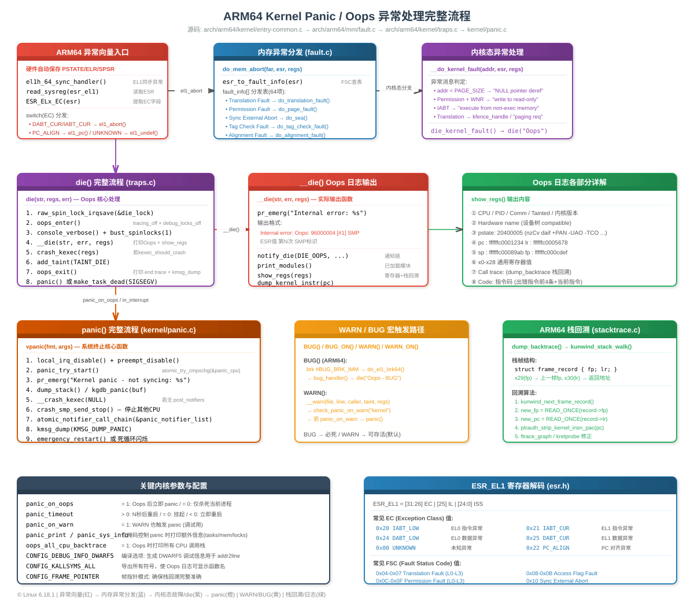
Linux 内核中有四个层级的错误报告机制，严重程度递增：
| 机制 | 严重程度 | 系统是否存活 | 触发方式 | 源码位置 |
|---|---|---|---|---|
| WARN | 低 | 存活（默认） | WARN() / WARN_ON() / WARN_ONCE() |
kernel/panic.c: __warn() |
| Oops | 中 | 可能存活（杀死当前进程） | 非法内存访问 / 未定义指令等异常 | arch/arm64/kernel/traps.c: die() |
| BUG | 高 | 触发 Oops → 可能 panic | BUG() / BUG_ON() |
arch/arm64/include/asm/bug.h |
| Panic | 致命 | 系统终止 | panic() / Oops in interrupt / panic_on_oops=1 |
kernel/panic.c: vpanic() |
关键区别：
WARN() → 打印警告 + 调用栈，进程继续运行
若 panic_on_warn=1 则升级为 panic
Oops → die() 打印完整异常信息 + 寄存器 + 栈回溯
若在中断上下文 → 必然 panic
若在进程上下文 + panic_on_oops=0 → make_task_dead(SIGSEGV)
若在进程上下文 + panic_on_oops=1 → panic
BUG() → ARM64 通过 brk #BUG_BRK_IMM 指令触发断点异常
→ bug_handler() → die("Oops - BUG") → 同 Oops 路径
panic() → 系统不可恢复，停止所有 CPU，可触发 kdump/kexec，最终重启或挂起ARM64 架构下，异常从硬件到 Panic 的完整路径：
硬件异常 (Data Abort / Instruction Abort / Undefined / ...)
│
▼
异常向量表 (arch/arm64/kernel/entry.S)
│ vectors → el1h_64_sync (EL1 同步异常入口)
▼
el1h_64_sync_handler(regs) ← entry-common.c:452
│ esr = read_sysreg(esr_el1)
│ switch (ESR_ELx_EC(esr))
├── EC=0x25 (DABT_CUR) ──→ el1_abort() → do_mem_abort()
├── EC=0x21 (IABT_CUR) ──→ el1_abort() → do_mem_abort()
├── EC=0x22 (PC_ALIGN) ──→ el1_pc() → do_sp_pc_abort()
├── EC=0x00 (UNKNOWN) ──→ el1_undef() → do_el1_undef()
├── EC=0x0D (BTI) ──→ el1_bti() → do_el1_bti()
└── EC=0x3C (BRK64) ──→ el1_brk64() → bug_handler() [若为BUG]
│
▼
__do_kernel_fault() 或 die()
│
▼
panic() ←── 若 panic_on_oops=1 或在中断上下文panic() 是内核最终的「死亡通道」，定义在 kernel/panic.c：
// kernel/panic.c - vpanic() 核心流程
void vpanic(const char *fmt, va_list args)
{
// 1. 禁中断 + 禁抢占
local_irq_disable();
preempt_disable_notrace();
// 2. 争抢 panic_cpu（仅一个 CPU 可执行 panic）
// atomic_try_cmpxchg(&panic_cpu, &old_cpu, this_cpu)
if (panic_try_start()) {
/* 当前 CPU 获得 panic 执行权 */
} else if (panic_on_other_cpu())
panic_smp_self_stop(); // 其他 CPU 自旋等待
// 3. 打印 panic 消息
console_verbose();
bust_spinlocks(1);
pr_emerg("Kernel panic - not syncing: %s\n", buf);
// 4. 转储调用栈
dump_stack();
// 5. 触发 kdump（若未设置 post_notifiers）
if (!_crash_kexec_post_notifiers)
__crash_kexec(NULL);
// 6. 停止其他 CPU
panic_other_cpus_shutdown(_crash_kexec_post_notifiers);
// 7. 调用 panic 通知链
atomic_notifier_call_chain(&panic_notifier_list, 0, buf);
// 8. 内核消息转储
kmsg_dump_desc(KMSG_DUMP_PANIC, buf);
// 9. 延时重启或死循环
if (panic_timeout > 0)
emergency_restart(); // N秒后重启
// panic_timeout == 0 → 永久挂起
// panic_timeout < 0 → 立即重启
}die() 是 Oops 处理的核心函数，位于 arch/arm64/kernel/traps.c：
// arch/arm64/kernel/traps.c
void die(const char *str, struct pt_regs *regs, long err)
{
raw_spin_lock_irqsave(&die_lock, flags); // 串行化 Oops 输出
oops_enter(); // 进入 Oops 上下文
console_verbose(); // 提升控制台日志级别
bust_spinlocks(1); // 强制突破自旋锁
ret = __die(str, err, regs); // 打印 Oops 信息
if (regs && kexec_should_crash(current))
crash_kexec(regs); // 触发 kdump
bust_spinlocks(0);
add_taint(TAINT_DIE, LOCKDEP_NOW_UNRELIABLE);
oops_exit(); // 退出 Oops 上下文
// 决定后续行为
if (in_interrupt())
panic("%s: Fatal exception in interrupt", str); // 中断中必死
if (panic_on_oops)
panic("%s: Fatal exception", str); // 配置了必死
raw_spin_unlock_irqrestore(&die_lock, flags);
if (ret != NOTIFY_STOP)
make_task_dead(SIGSEGV); // 杀死当前进程
}oops_enter() / oops_exit() 详解：
void oops_enter(void)
{
nbcon_cpu_emergency_enter(); // 获取紧急打印权限
tracing_off(); // 关闭 ftrace 追踪
debug_locks_off(); // 禁用锁调试（已不可信）
do_oops_enter_exit(); // pause_on_oops 支持
if (sysctl_oops_all_cpu_backtrace)
trigger_all_cpu_backtrace(); // 打印所有 CPU 调用栈
}
void oops_exit(void)
{
do_oops_enter_exit();
print_oops_end_marker(); // "---[ end trace ... ]---"
nbcon_cpu_emergency_exit();
kmsg_dump(KMSG_DUMP_OOPS); // 转储内核消息
}| 参数 | 默认值 | 含义 | 设置方式 |
|---|---|---|---|
panic_on_oops |
CONFIG_PANIC_ON_OOPS |
Oops 后是否 panic | sysctl kernel.panic_on_oops=1 / 启动参数 oops=panic |
panic_timeout |
CONFIG_PANIC_TIMEOUT |
panic 后等待秒数 | sysctl kernel.panic=N / 启动参数 panic=N |
panic_on_warn |
0 | WARN 后是否 panic | sysctl kernel.panic_on_warn=1 |
panic_print |
0 | panic 时额外打印（已废弃） | 改用 panic_sys_info |
pause_on_oops |
0 | Oops 后暂停秒数 | 启动参数 pause_on_oops=N |
warn_limit |
0 | WARN 累计次数上限 | sysctl kernel.warn_limit=N，超过则 panic |
oops_all_cpu_backtrace |
0 | Oops 时打印所有 CPU 栈 | sysctl kernel.oops_all_cpu_backtrace=1 |
产线推荐配置：
# /etc/sysctl.conf
kernel.panic_on_oops = 1 # Oops 直接 panic，便于 kdump 抓取
kernel.panic = 30 # panic 后 30 秒自动重启
kernel.panic_on_warn = 0 # WARN 不要 panic（太频繁）
kernel.oops_all_cpu_backtrace = 1 # 获取完整 CPU 信息一个典型的 ARM64 Oops 日志包含以下结构化信息：
Unable to handle kernel NULL pointer dereference at virtual address 0000000000000040 ← ① 异常类型 + 故障地址
Mem abort info: ← ② mem_abort_decode(esr) 输出
ESR = 0x0000000096000004 ← ESR 原始值
EC = 0x25: DABT (current EL), IL = 32 bits ← EC=数据异常, IL=32位指令
SET = 0, FnV = 0 ← SET/FnV 标志
EA = 0, S1PTW = 0 ← 外部异常/页表遍历标志
FSC = 0x04: level 0 translation fault ← FSC=翻译故障等级0
Data abort info: ← ③ data_abort_decode(esr) 输出
ISV = 0, ISS = 0x00000004, ISS2 = 0x00000000
CM = 0, WnR = 0, TnD = 0, TagAccess = 0 ← WnR=0 表示读操作
Internal error: Oops: 0000000096000004 [#1] SMP ← ④ __die() 输出: ESR [第N次] SMP
CPU: 2 PID: 1234 Comm: my_process Tainted: G W ← ⑤ CPU/PID/进程名/污染标志
Hardware name: linux,dummy-virt (DT) ← ⑥ 硬件平台信息
pstate: 20400005 (nzCv daif +PAN -UAO -TCO -DIT ...) ← ⑦ PSTATE 寄存器
pc : my_driver_read+0x28/0x100 [my_module] ← ⑧ 出错 PC 地址（符号化）
lr : my_driver_open+0x4c/0x80 [my_module] ← ⑨ 链接寄存器（调用者）
sp : ffff800082003d00 ← ⑩ 栈指针
x29: ffff800082003d10 x28: ffff0000c1a34000 ← ⑪ x0-x28 通用寄存器
...
Call trace: ← ⑫ 调用栈回溯
my_driver_read+0x28/0x100 [my_module]
vfs_read+0xc8/0x2e0
ksys_read+0x6c/0xf0
__arm64_sys_read+0x1c/0x30
invoke_syscall+0x48/0x110
...
Code: a9bf7bfd 910003fd f9400c00 f9402000 ← ⑬ 出错处指令码
---[ end trace 0000000000000000 ]--- ← ⑭ oops_exit() 结束标记关键寄存器含义：
| 寄存器 | 用途 | Oops 分析要点 |
|---|---|---|
pc |
程序计数器 | 出错指令地址，用 addr2line 定位源码行 |
lr (x30) |
链接寄存器 | 调用者地址，确认调用路径 |
sp |
栈指针 | 判断栈是否溢出（对比 thread_info 基址） |
fp (x29) |
帧指针 | 栈回溯依赖，指向上一帧 |
pstate |
处理器状态 | 条件标志 (NZCV) + 异常掩码 (DAIF) + PAN/UAO 等 |
x0-x7 |
参数/返回值 | 函数参数传递，x0 常为出错对象指针 |
x8 |
间接结果 | 系统调用号 (EL0→EL1 时) |
PSTATE 解读示例：
pstate: 20400005
二进制: 0010 0000 0100 0000 0000 0000 0000 0101
N=0 Z=0 C=1 V=0 (nzCv) — 条件标志
D=1 A=0 I=0 F=0 (Daif) — D中断屏蔽
PAN=1 (+PAN) — 特权访问禁止（阻止内核直接访问用户空间）
UAO=0 (-UAO) — 用户访问覆盖未启用
EL=1 — 运行在 EL1 (内核态)调用栈由 dump_backtrace() → kunwind_stack_walk() 生成：
Call trace:
my_driver_read+0x28/0x100 [my_module] ← 函数名+偏移/函数总大小 [模块名]
│ │ │ │
│ │ │ └── 所属模块（内建函数无此字段）
│ │ └── 函数总大小（字节）
│ └── 距函数起始的偏移（字节）
└── 函数符号名（需 CONFIG_KALLSYMS）符号化工具：
# 方法 1: addr2line（需 vmlinux 带调试信息）
aarch64-linux-gnu-addr2line -e vmlinux -f ffffffc0001234ab
# 方法 2: faddr2line（更方便，使用 function+offset）
scripts/faddr2line vmlinux my_driver_read+0x28
# 方法 3: decode_stacktrace.sh（自动解析整段 Oops）
scripts/decode_stacktrace.sh vmlinux /path/to/modules < oops.logESR_EL1 (Exception Syndrome Register) 是 ARM64 异常分析的核心寄存器，定义在 arch/arm64/include/asm/esr.h：
ESR_EL1 位域布局:
┌──────────┬────┬──────────────────────────────────┐
│ [31:26] │[25]│ [24:0] │
│ EC │ IL │ ISS (Instruction Specific Syndrome)│
│ 异常类别 │指令长│ 指令相关综合信息 │
└──────────┴────┴──────────────────────────────────┘常见 EC (Exception Class) 值：
| EC 值 | 宏定义 | 含义 |
|---|---|---|
| 0x00 | ESR_ELx_EC_UNKNOWN |
未知异常 |
| 0x0E | ESR_ELx_EC_ILL |
非法执行状态 |
| 0x15 | ESR_ELx_EC_SVC64 |
SVC 系统调用 |
| 0x20 | ESR_ELx_EC_IABT_LOW |
EL0 指令异常 |
| 0x21 | ESR_ELx_EC_IABT_CUR |
EL1 指令异常 |
| 0x24 | ESR_ELx_EC_DABT_LOW |
EL0 数据异常 |
| 0x25 | ESR_ELx_EC_DABT_CUR |
EL1 数据异常 |
| 0x22 | ESR_ELx_EC_PC_ALIGN |
PC 对齐异常 |
| 0x26 | ESR_ELx_EC_SP_ALIGN |
SP 对齐异常 |
| 0x2F | ESR_ELx_EC_SERROR |
SError 异步异常 |
常见 FSC (Fault Status Code) 值（ISS[5:0]）：
| FSC 值 | 含义 | 对应处理函数 |
|---|---|---|
| 0x04-0x07 | Level 0-3 Translation Fault | do_translation_fault() |
| 0x08-0x0B | Level 0-3 Access Flag Fault | do_page_fault() |
| 0x0C-0x0F | Level 0-3 Permission Fault | do_page_fault() |
| 0x10 | Synchronous External Abort | do_sea() |
| 0x11 | Synchronous Tag Check Fault | do_tag_check_fault() |
| 0x21 | Alignment Fault | do_alignment_fault() |
FAR_EL1 (Fault Address Register) 记录导致数据/指令异常的虚拟地址：
// arch/arm64/mm/fault.c
unsigned long far = read_sysreg(far_el1);
unsigned long addr = untagged_addr(far); // 去除 MTE 标签
// 地址空间判定
if (is_ttbr0_addr(addr))
// 用户空间地址 (0x0000_0000_0000_0000 ~ 0x0000_FFFF_FFFF_FFFF)
→ do_page_fault() 处理
else if (is_ttbr1_addr(addr))
// 内核空间地址 (0xFFFF_0000_0000_0000 ~ 0xFFFF_FFFF_FFFF_FFFF)
→ __do_kernel_fault() 处理
else
// 中间空洞 → 非法地址常见地址模式判断：
FAR = 0x0000000000000040 → NULL 指针解引用（偏移 0x40）
FAR = 0x0000000000000000 → NULL 指针直接解引用
FAR = 0xdead000000000000 → KASAN freed object 标记
FAR = 0x6b6b6b6b6b6b6b6b → SLUB poison (已释放对象)
FAR = 0xffff000012345678 → 合法内核地址，可能是 UAF / 竞态
FAR = 0x0000007f12345678 → 用户空间地址在内核态被访问（PAN 异常）最常见的 Oops 类型，通常由未初始化或已释放的指针引发：
// 典型场景：
struct device *dev = NULL;
dev->driver->probe(dev); // Oops: NULL pointer dereference at 0x0000000000000010内核处理路径（arch/arm64/mm/fault.c）：
static void __do_kernel_fault(unsigned long addr, unsigned long esr,
struct pt_regs *regs)
{
// ...
} else if (addr < PAGE_SIZE) {
msg = "NULL pointer dereference"; // FAR < PAGE_SIZE → NULL 解引用
}
die_kernel_fault(msg, addr, esr, regs);
}识别特征：FAR 值通常是一个小偏移量（0x0 ~ 0xFFF），对应结构体成员偏移。
指针指向已释放的内存（Use-After-Free）或被破坏的地址：
Unable to handle kernel paging request at virtual address ffff0000deadbeef常见模式：
SLUB poison 值：0x6b6b6b6b... (freed) / 0x5a5a5a5a... (initmem)KASAN shadow：0xdead... / 0xbead...随机地址：指针被覆写ARM64 开启 PAN (Privileged Access Never) 后，内核直接访问用户空间地址会触发异常：
// 错误：直接解引用用户空间指针
char *user_buf = (char *)arg;
char c = *user_buf; // PAN 异常！
// 正确：使用 copy_from_user / get_user
char c;
get_user(c, (char __user *)arg);在 __do_kernel_fault() 中检测：
if (is_ttbr0_addr(addr) && is_el1_permission_fault(addr, esr, regs)) {
if (!insn_may_access_user(regs->pc, esr))
die_kernel_fault("access to user memory outside uaccess routines", ...);
}ARM64 默认不允许非对齐访问某些类型（设备内存、原子操作等）：
Unable to handle kernel paging request at virtual address ...
...alignment fault对应处理函数 do_alignment_fault()，FSC = 0x21。
当 CPU 遇到无法解码的指令时触发：
// arch/arm64/kernel/traps.c
void do_el1_undef(struct pt_regs *regs, unsigned long esr)
{
// 尝试模拟指令（如 SSBS）
if (try_emulate_el1_ssbs(regs, insn))
return;
die("Oops - Undefined instruction", regs, esr);
}常见原因：
内核线程栈大小有限（ARM64 默认 16KB），递归或大局部变量可导致溢出：
Kernel panic - not syncing: kernel stack overflow
CPU: 0 PID: ... Comm: ...ARM64 使用专门的溢出栈 (overflow_stack) 来处理栈溢出异常：
// arch/arm64/kernel/stacktrace.c
STACKINFO_CPU(overflow) // 溢出检测栈预防：
kmalloc）CONFIG_VMAP_STACK=y（带 guard page 的虚拟映射栈）开发者主动在不应到达的代码路径插入断言：
// ARM64 BUG() 实现 (arch/arm64/include/asm/bug.h)
#define __BUG_FLAGS(flags) \
asm volatile ("brk %[imm]" :: [imm] "i" (BUG_BRK_IMM | (flags)))BUG() 通过 brk 指令触发断点异常：
el1h_64_sync_handler → el1_brk64() → do_el1_brk64()
→ bug_handler() → die("Oops - BUG", regs, esr)| Panic 消息 | 触发场景 | 典型原因 |
|---|---|---|
Fatal exception in interrupt |
die() 检测到 in_interrupt() |
中断处理函数崩溃 |
Fatal exception |
panic_on_oops=1 时的 Oops |
任何内核态异常 |
VFS: Unable to mount root fs |
init/do_mounts.c |
根文件系统挂载失败 |
No working init found |
init/main.c: kernel_init() |
/sbin/init 不存在 |
Attempted to kill init! |
init 进程收到致命信号 | PID=1 崩溃 |
stack-protector: Kernel stack is corrupted |
__stack_chk_fail() |
栈 canary 被破坏 |
Watchdog detected hard LOCKUP |
NMI watchdog | CPU 长时间不响应中断 |
softlockup: hung tasks |
soft lockup 检测 | 进程长时间占用 CPU |
Out of memory and no killable processes |
OOM killer 失败 | 内存完全耗尽 |
addr2line 将虚拟地址转换为源文件名和行号（需 vmlinux 含 DWARF 调试信息）：
# 基本用法：从 PC 地址定位源码
aarch64-linux-gnu-addr2line -e vmlinux -f -i ffffffc000123abc
# 输出:
# my_function
# drivers/my_driver/my_file.c:256
# -f: 显示函数名
# -i: 显示内联函数展开信息
# -p: 美化输出格式
# 模块地址需要加模块基址偏移
# 获取模块加载基址：
cat /sys/module/my_module/sections/.text
# 假设为 0xffff800000a00000，模块内偏移 0x28：
aarch64-linux-gnu-addr2line -e my_module.ko -f 0x28objdump 反汇编可直接看到出错指令的汇编上下文：
# 反汇编整个 vmlinux（输出很大，建议限制范围）
aarch64-linux-gnu-objdump -d vmlinux | grep -A 20 "<my_function>:"
# 只反汇编指定地址范围
aarch64-linux-gnu-objdump -d vmlinux \
--start-address=0xffffffc000123a00 \
--stop-address=0xffffffc000123b00
# 混合源码和汇编（需调试信息）
aarch64-linux-gnu-objdump -dS vmlinux | grep -A 30 "<my_function>:"
# 反汇编模块
aarch64-linux-gnu-objdump -d my_module.ko | grep -A 20 "<my_function>:"分析示例：
ffffffc000123abc: f9402000 ldr x0, [x0, #64] ← 出错指令
// x0=0x0000000000000000, 偏移 #64=0x40
// → 解引用 NULL+0x40 → "NULL pointer dereference at 0x40"GDB 可提供最丰富的离线分析能力：
# 启动 GDB
aarch64-linux-gnu-gdb vmlinux
# 查看地址对应源码
(gdb) list *0xffffffc000123abc
# 输出: drivers/my_driver/my_file.c:256
# 反汇编函数
(gdb) disassemble my_function
# 查看结构体布局（确认偏移 0x40 对应哪个成员）
(gdb) ptype struct my_struct
(gdb) p &((struct my_struct *)0)->member_at_offset_40
# 输出: $1 = (type *) 0x40
# 查看源码
(gdb) list my_function内核自带脚本，可自动将原始 Oops 日志中的地址全部转换为源码位置：
# 基本用法
scripts/decode_stacktrace.sh vmlinux /path/to/modules < oops.log
# 从 dmesg 直接解析
dmesg | scripts/decode_stacktrace.sh vmlinux
# 指定交叉编译工具链
CROSS_COMPILE=aarch64-linux-gnu- scripts/decode_stacktrace.sh vmlinux < oops.logfaddr2line 是内核脚本，直接使用「函数名+偏移」格式定位，更方便：
# 用法：scripts/faddr2line vmlinux function+offset
scripts/faddr2line vmlinux my_driver_read+0x28
# 输出:
# my_driver_read+0x28/0x100:
# my_driver_read at drivers/my_driver/my_file.c:256
# 批量解析
scripts/faddr2line vmlinux \
my_driver_read+0x28 \
vfs_read+0xc8 \
ksys_read+0x6ckdump 通过 kexec 机制在内核 Panic 时快速切换到预加载的「捕获内核」，保存完整内存转储：
正常运行内核 (第一内核)
│
│ panic() → __crash_kexec(NULL)
▼
kexec 跳转到预留内存中的捕获内核 (第二内核)
│
│ 捕获内核启动后通过 /proc/vmcore 访问第一内核内存
▼
makedumpfile 将 vmcore 保存到磁盘
│
▼
crash 工具离线分析 vmcore# 1. 内核配置
CONFIG_KEXEC=y
CONFIG_CRASH_DUMP=y
CONFIG_PROC_VMCORE=y
# 2. 启动参数预留内存
# 格式: crashkernel=size[@offset]
crashkernel=256M # 预留 256M 给捕获内核
crashkernel=256M@0x50000000 # 指定偏移
# 3. 加载捕获内核
kexec -p /boot/vmlinuz-capture \
--initrd=/boot/initrd-capture.img \
--append="root=/dev/sda2 irqpoll maxcpus=1"
# 4. 验证加载状态
cat /sys/kernel/kexec_crash_loaded # 输出 1 表示已加载# 启动 crash
crash vmlinux vmcore
# 常用命令
crash> bt # 显示 panic 时的调用栈
crash> bt -a # 显示所有 CPU 的调用栈
crash> bt -l # 显示带行号的调用栈
crash> log # 显示内核日志 (dmesg)
crash> log -T # 带时间戳的日志
crash> dis -l my_function # 反汇编函数（带源码行号）
crash> dis -l ffffffc000123abc # 反汇编指定地址
crash> struct task_struct ffff0000c1a34000 # 查看 task_struct
crash> struct -o task_struct # 显示成员偏移# 进程分析
crash> ps # 所有进程列表
crash> ps -m # 显示进程内存使用
crash> task -R pid 1234 # 指定进程的 task_struct
# 锁分析
crash> kmem -s # SLUB 分配器统计
crash> dev -d # 设备驱动信息
# 内存分析
crash> kmem -i # 内存使用概览
crash> vm ffff0000c1a34000 # 查看进程的 VMA 映射
crash> rd -x ffff800082003d00 32 # 读取内存（hex，32个字）
# 模块分析
crash> mod # 已加载模块列表
crash> mod -s my_module my_module.ko # 加载模块符号# 完整分析流程
# 1. 查看 panic 原因
crash> log | grep -A 20 "Unable to handle"
# 2. 查看出错 CPU 的调用栈
crash> bt
# 3. 反汇编出错函数
crash> dis -l <function_name>
# 4. 检查关键寄存器值（从 bt -f 获取保存的 pt_regs）
crash> bt -f
crash> struct pt_regs <address>
# 5. 追踪出错数据结构
crash> struct my_struct <x0_value>
# 6. 检查相关锁状态
crash> struct mutex <lock_addr>
# 7. 生成分析报告
crash> sys # 系统信息
crash> runq # 运行队列状态pstore (Persistent Storage) 在系统崩溃时将日志写入非易失性存储，重启后可读取：
pstore 前端 (数据源) pstore 核心 后端 (存储介质)
┌──────────────────┐ ┌──────────────┐ ┌─────────────────┐
│ console (dmesg) │────→│ │────→│ ramoops (RAM) │
│ pmsg (用户日志) │────→│ pstore_info │────→│ blk (块设备) │
│ ftrace (追踪数据) │────→│ │────→│ zone (MTD/NVRAM)│
│ dmesg (panic日志) │────→│ │ └─────────────────┘
└──────────────────┘ └──────────────┘
│
/sys/fs/pstore/ 挂载点// 设备树配置
reserved-memory {
#address-cells = <2>;
#size-cells = <2>;
ranges;
ramoops@90000000 {
compatible = "ramoops";
reg = <0x0 0x90000000 0x0 0x100000>; // 1MB
record-size = <0x20000>; // 128KB per dmesg record
console-size = <0x40000>; // 256KB console log
ftrace-size = <0x20000>; // 128KB ftrace data
pmsg-size = <0x20000>; // 128KB pmsg
ecc-size = <16>; // ECC 校验
};
};# 或通过启动参数配置
ramoops.mem_address=0x90000000 ramoops.mem_size=0x100000 \
ramoops.record_size=0x20000 ramoops.console_size=0x40000# 挂载 pstore
mount -t pstore pstore /sys/fs/pstore/
# 查看文件列表
ls /sys/fs/pstore/
# dmesg-ramoops-0 ← panic/oops 时的 dmesg
# console-ramoops-0 ← 持续的 console 日志
# pmsg-ramoops-0 ← 用户空间 pmsg 日志
# ftrace-ramoops-0 ← ftrace 数据
# 读取 panic 日志
cat /sys/fs/pstore/dmesg-ramoops-0| 前端 | 用途 | 数据来源 | 配置参数 |
|---|---|---|---|
dmesg |
Panic/Oops 时的 dmesg | kmsg_dump() |
record-size |
console |
持续的 console 输出 | printk 钩子 | console-size |
pmsg |
用户空间日志 | /dev/pmsg0 设备 |
pmsg-size |
ftrace |
函数追踪数据 | ftrace ring buffer | ftrace-size |
ftrace 的 function_graph 追踪器可以记录 Panic 前的函数调用历史：
# 开启 function_graph 追踪
echo function_graph > /sys/kernel/debug/tracing/current_tracer
echo 1 > /sys/kernel/debug/tracing/tracing_on
# 设置追踪过滤（只追踪特定模块/函数）
echo 'my_driver_*' > /sys/kernel/debug/tracing/set_ftrace_filter
# Panic 后通过 pstore/ramoops 获取 ftrace 数据
# （需配置 ftrace-size 在 ramoops 中）
cat /sys/fs/pstore/ftrace-ramoops-0注意：Oops 处理中 oops_enter() 会调用 tracing_off() 关闭追踪，确保数据不被覆盖。
不修改源码即可在任意内核函数入口/出口插入探针：
# 在 __do_kernel_fault 入口设置 kprobe
echo 'p:my_probe __do_kernel_fault addr=%x0 esr=%x1' > \
/sys/kernel/debug/tracing/kprobe_events
echo 1 > /sys/kernel/debug/tracing/events/kprobes/my_probe/enable
# kretprobe 追踪函数返回值
echo 'r:my_ret do_page_fault $retval' > \
/sys/kernel/debug/tracing/kprobe_eventseBPF 可以安全高效地追踪异常处理路径：
# 使用 bpftrace 追踪 die() 调用
bpftrace -e 'kprobe:die {
printf("die() called: str=%s pid=%d comm=%s\n",
str(arg0), pid, comm);
print(kstack);
}'
# 追踪所有 page fault（包括正常的）
bpftrace -e 'kprobe:do_page_fault {
@[comm] = count();
}'# /proc/kcore — 运行时内核内存的 ELF core 格式视图
# 可以用 gdb 直接调试活跃内核
gdb vmlinux /proc/kcore
(gdb) p jiffies # 查看当前 jiffies 值
(gdb) p *current # 查看当前进程
# /proc/vmcore — 仅在 kdump 捕获内核中可用
# 用于 makedumpfile 保存崩溃转储
makedumpfile -l --message-level 1 -d 31 /proc/vmcore vmcore.dumpKGDB 提供 GDB 远程调试内核的能力，KDB 是内建的命令行调试器：
# 内核配置
CONFIG_KGDB=y
CONFIG_KGDB_SERIAL_CONSOLE=y
CONFIG_KDB_DEFAULT_ENABLE=0x1 # 启用 KDB
# 启动参数
kgdboc=ttyS0,115200 kgdbwait # 串口连接，启动时等待
# 进入 KDB（通过 SysRq）
echo g > /proc/sysrq-trigger
# KDB 常用命令
[0]kdb> bt # 调用栈
[0]kdb> md <addr> # 内存显示
[0]kdb> go # 继续运行
# GDB 远程连接
aarch64-linux-gnu-gdb vmlinux
(gdb) target remote /dev/ttyS0# 调试信息是所有离线分析工具的基础
CONFIG_DEBUG_INFO=y # 生成调试信息
CONFIG_DEBUG_INFO_DWARF5=y # 使用 DWARF5 格式（更紧凑高效）
CONFIG_DEBUG_INFO_REDUCED=n # 不要裁减调试信息
CONFIG_DEBUG_INFO_COMPRESSED_ZLIB=y # 压缩调试信息节省空间
CONFIG_DEBUG_INFO_SPLIT=n # 不拆分（方便传输）DWARF5 vs DWARF4：DWARF5 生成的 .debug_* section 更小，addr2line / gdb 解析更快。
CONFIG_KALLSYMS=y # 在内核中嵌入符号表
# Oops 日志中函数名而非裸地址
CONFIG_KALLSYMS_ALL=y # 导出所有符号（包括数据符号）
# 调试时可看到全局变量名KALLSYMS 数据嵌入在 vmlinux 的 .rodata 中，kallsyms_lookup_name() 用于运行时符号查找。
# 帧指针模式 — 传统栈回溯
CONFIG_FRAME_POINTER=y
# 每个函数入口: stp x29, x30, [sp, #-N]! ; mov x29, sp
# 优点：栈回溯可靠
# 缺点：占用 x29 寄存器，轻微性能损失
# Shadow Call Stack — ARM64 特有安全特性
CONFIG_SHADOW_CALL_STACK=y
# 使用 x18 寄存器指向独立的返回地址栈
# 优点：防止 ROP 攻击
# 缺点：占用 x18 寄存器
# ARM64 默认使用 FRAME_POINTER 进行栈回溯
# kunwind_next_frame_record() 沿 fp 链遍历CONFIG_PANIC_ON_OOPS=y # 默认值：Oops 后是否 panic
CONFIG_PANIC_ON_OOPS_VALUE=1 # panic_on_oops 初始值
CONFIG_PANIC_TIMEOUT=0 # panic_timeout 初始值
# 0=永久挂起, >0=N秒后重启, <0=立即重启运行时可通过 /proc/sys/kernel/ 或 sysctl 修改。
CONFIG_DEBUG_BUGVERBOSE=y
# 启用后 BUG() 打印包含文件名和行号：
# "kernel BUG at drivers/my_driver/my_file.c:123!"
# 禁用时只有地址，需 addr2line 手动解析ARM64 异常向量表定义在 arch/arm64/kernel/entry.S，每个异常入口保存寄存器后跳转到 C 处理函数：
异常向量表布局 (vectors):
┌───────────────────────────────────────────────┐
│ 偏移 │ 来源 │ 类型 │ 处理函数 │
├─────────┼────────────┼──────────┼───────────────┤
│ 0x000 │ EL1t │ Sync │ (不应发生) │
│ 0x080 │ EL1t │ IRQ │ (不应发生) │
│ 0x100 │ EL1t │ FIQ │ (不应发生) │
│ 0x180 │ EL1t │ SError │ (不应发生) │
│ 0x200 │ EL1h │ Sync │ el1h_64_sync_handler │ ← 内核态同步异常
│ 0x280 │ EL1h │ IRQ │ el1h_64_irq_handler │
│ 0x300 │ EL1h │ FIQ │ el1h_64_fiq_handler │
│ 0x380 │ EL1h │ SError │ el1h_64_error_handler │
│ 0x400 │ EL0 64bit │ Sync │ el0t_64_sync_handler │ ← 用户态同步异常
│ 0x480 │ EL0 64bit │ IRQ │ el0t_64_irq_handler │
│ ... │ ... │ ... │ ... │
└───────────────────────────────────────────────┘入口汇编保存寄存器（entry.S 中的 kernel_entry 宏）：
// 保存 x0-x29, lr, sp_el0, elr_el1, spsr_el1 到 struct pt_regs
stp x0, x1, [sp, #16 * 0]
stp x2, x3, [sp, #16 * 1]
...
mrs x22, elr_el1 // 保存异常返回地址
mrs x23, spsr_el1 // 保存异常前的 PSTATEdo_mem_abort() 是所有内存异常的入口（arch/arm64/mm/fault.c）：
void do_mem_abort(unsigned long far, unsigned long esr, struct pt_regs *regs)
{
// 1. 根据 FSC 查表获取处理函数
const struct fault_info *inf = esr_to_fault_info(esr);
// esr_to_fault_info(esr) = fault_info + (esr & ESR_ELx_FSC)
// 2. 调用对应处理函数
if (!inf->fn(far, esr, regs))
return; // 处理成功
// 3. 未处理 → 内核态: die, 用户态: 发信号
if (!user_mode(regs))
die_kernel_fault(inf->name, addr, esr, regs);
arm64_notify_die(inf->name, regs, inf->sig, inf->code, addr, esr);
}fault_info[] 分发表（64项，FSC 索引）：
static const struct fault_info fault_info[] = {
[0x04] = { do_translation_fault, SIGSEGV, SEGV_MAPERR, "level 0 translation fault" },
[0x05] = { do_translation_fault, SIGSEGV, SEGV_MAPERR, "level 1 translation fault" },
[0x06] = { do_translation_fault, SIGSEGV, SEGV_MAPERR, "level 2 translation fault" },
[0x07] = { do_translation_fault, SIGSEGV, SEGV_MAPERR, "level 3 translation fault" },
[0x0C] = { do_page_fault, SIGSEGV, SEGV_ACCERR, "level 0 permission fault" },
...
[0x10] = { do_sea, SIGBUS, BUS_OBJERR, "synchronous external abort" },
[0x11] = { do_tag_check_fault, SIGSEGV, SEGV_MTESERR,"synchronous tag check fault"},
[0x21] = { do_alignment_fault, SIGBUS, BUS_ADRALN, "alignment fault" },
// ...共 64 项
};die("Oops", regs, esr) ← traps.c:207
│
├── raw_spin_lock_irqsave(&die_lock) 串行化
├── oops_enter() 进入 Oops
│ ├── nbcon_cpu_emergency_enter()
│ ├── tracing_off()
│ ├── debug_locks_off()
│ └── trigger_all_cpu_backtrace() (若配置)
├── console_verbose() 提升日志级别
├── bust_spinlocks(1) 突破死锁
├── __die(str, err, regs) ← traps.c:179
│ ├── pr_emerg("Internal error: %s: %016lx [#%d] SMP")
│ ├── notify_die(DIE_OOPS, ...) 通知链（kgdb/kprobe 等）
│ ├── print_modules() 已加载模块
│ ├── show_regs(regs) ← 寄存器 + 调用栈
│ │ ├── __show_regs(regs) CPU/PID/Tainted/pstate/x0-x28
│ │ └── dump_backtrace() ← stacktrace.c
│ │ └── kunwind_stack_walk() 沿 fp 链回溯
│ └── dump_kernel_instr(pc) 出错处指令码
├── crash_kexec(regs) 触发 kdump
├── add_taint(TAINT_DIE) 标记内核已污染
├── oops_exit() 退出 Oops
│ ├── print_oops_end_marker() "---[ end trace ... ]---"
│ └── kmsg_dump(KMSG_DUMP_OOPS)
│
├── [中断上下文] → panic("Fatal exception in interrupt")
├── [panic_on_oops] → panic("Fatal exception")
└── [进程上下文] → make_task_dead(SIGSEGV) 杀死当前进程ARM64 的栈回溯通过 kunwind_stack_walk() 实现（arch/arm64/kernel/stacktrace.c）：
// 核心数据结构
struct kunwind_state {
struct unwind_state common; // fp, pc, 栈信息
struct task_struct *task;
enum kunwind_source source; // FRAME / CALLER / TASK / REGS_PC
union unwind_flags flags; // fgraph / kretprobe 标志
};
// 栈帧遍历核心逻辑
static int kunwind_next_frame_record(struct kunwind_state *state)
{
unsigned long fp = state->common.fp;
struct frame_record *record = (struct frame_record *)fp;
// 检查 fp 对齐
if (fp & 0x7) return -EINVAL;
// 读取帧记录
new_fp = READ_ONCE(record->fp); // 上一帧的帧指针
new_pc = READ_ONCE(record->lr); // 返回地址
// 如果 fp=0 且 lr=0，检查 meta 信息
if (!new_fp && !new_pc)
return kunwind_next_frame_record_meta(state);
state->common.fp = new_fp;
state->common.pc = new_pc;
return 0;
}ARM64 栈帧布局：
高地址 ──────────────────────────
│ 上一帧 LR (x30) │ ← 上一帧 FP+8
│ 上一帧 FP (x29) │ ← 上一帧 FP
├───────────────────────┤
│ 局部变量 / callee-saved│
├───────────────────────┤
│ 当前帧 LR (x30) │ ← 当前 FP+8
│ 当前帧 FP (x29) │ ← 当前 FP (= SP on entry)
低地址 ──────────────────────────| 特性 | 内核态异常 (EL1) | 用户态异常 (EL0) |
|---|---|---|
| 入口函数 | el1h_64_sync_handler() |
el0t_64_sync_handler() |
| 数据异常 | el1_abort() |
el0_da() |
| 指令异常 | el1_abort() |
el0_ia() |
| 处理结果 | __do_kernel_fault() → die() |
do_page_fault() → 发信号 |
| 失败后果 | Oops → panic / 杀进程 | SIGSEGV / SIGBUS 信号 |
| fixup 机制 | fixup_exception() 可恢复 |
无 fixup，直接信号 |
| 通知 | arm64_notify_die() → die() |
arm64_force_sig_fault() |
内核态 fixup 机制：__do_kernel_fault() 首先检查 fixup_exception(regs, esr)，如果异常发生在已注册的 extable 区域（如 copy_from_user()），可以跳转到修复代码而不触发 Oops。
Oops 日志：
Unable to handle kernel NULL pointer dereference at virtual address 0000000000000018
Mem abort info:
ESR = 0x0000000096000006
...
FSC = 0x06: level 2 translation fault
Internal error: Oops: 0000000096000006 [#1] SMP
...
pc : device_driver_probe+0x3c/0x120
lr : really_probe+0xd8/0x2e0分析步骤：
faddr2line 定位源码行p &((struct device_driver *)0)->probe 确认是 .probe 成员.probe 回调即被绑定特征：Oops 地址不固定，有时是 poison 值 0x6b6b6b6b...
Unable to handle kernel paging request at virtual address 006b6b6b6b6b6b6b分析：
0x6b 是 SLUB 的 POISON_FREE 值，表示对象已被 kfree() 释放CONFIG_SLUB_DEBUG=y + 启动参数 slub_debug=FZPUCONFIG_KASAN=y) 可精确定位释放点和使用点Kernel panic - not syncing: kernel stack overflow
CPU: 3 PID: 5678 Comm: kworker/3:1
...
Call trace:
recursive_func+0x30/0x80
recursive_func+0x30/0x80
recursive_func+0x30/0x80 ← 大量重复表示递归解决：
scripts/stackdelta 对比栈使用变化objdump -d vmlinux | scripts/checkstack.pl arm64 查找大栈帧函数CONFIG_VMAP_STACKkernel BUG at mm/slub.c:345!
Internal error: Oops - BUG: 00000000f2000800 [#1] SMP分析：
BUG at mm/slub.c:345 直接给出源码位置f2000800 的 EC 字段对应 BRK64 异常slub.c:345 处的 BUG_ON() 条件，回溯为何条件成立VFS: Cannot open root device "mmcblk0p2" or unknown-block(0,0): error -6
Please append a correct "root=" boot option
Kernel panic - not syncing: VFS: Unable to mount root fs on unknown-block(0,0)排查：
-6 = -ENXIO → 设备不存在root= 参数是否匹配CPU1: failed to boot: -1
Kernel panic - not syncing: SMP: failed to setup secondary CPUscpu@1 的 enable-method 和 ATF/PSCI 固件配置Internal error: Oops: 96000004 [#1] SMP
...
pc : my_irq_handler+0x10/0x40
...
Kernel panic - not syncing: Fatal exception in interrupt关键：die() 检测到 in_interrupt() → 直接 panic()，因为中断上下文无法恢复。
my_module: disagrees about version of symbol kmalloc_caches
my_module: Unknown symbol kmalloc_caches (err -22)CONFIG_MODVERSIONS=y 时模块 CRC 校验不通过Step 1: 获取日志
│ 串口日志 / dmesg / pstore / kdump vmcore
▼
Step 2: 确定异常类型
│ "Unable to handle kernel ..." → 内存异常
│ "Oops - BUG" → BUG_ON 断言
│ "Kernel panic - not syncing" → 直接 panic
▼
Step 3: 提取关键信息
│ PC 地址 → 出错函数
│ FAR 地址 → 访问目标
│ ESR 值 → 异常类型 (EC + FSC)
▼
Step 4: 符号化定位
│ addr2line / faddr2line / objdump → 源码行
│ Call trace → 调用路径
▼
Step 5: 源码分析
│ 检查出错指令对应的 C 代码
│ 分析数据来源（参数? 全局变量? 分配的内存?）
▼
Step 6: 确定根因
NULL 未检查 / UAF / 竞态 / 配置错误 / 硬件问题当没有串口/pstore 日志时的排查思路：
/proc/last_kmsg（若支持）git bisect 定位引入 commitstress-ng / ltp / 特定场景脚本）CONFIG_FAULT_INJECTION=y 模拟内存分配失败等# 定位引入 bug 的 commit
git bisect start
git bisect bad HEAD # 当前版本有 bug
git bisect good v6.17 # 某个已知好的版本
# git 会自动检出中间版本，编译测试后标记
make -j$(nproc) && test_for_bug
git bisect good # 或 git bisect bad
# 重复直到找到引入 commit
# git bisect 输出: <commit-hash> is the first bad commit
# 自动化（提供测试脚本）
git bisect run ./test_script.shQ1: Oops 和 Panic 的区别是什么？
Oops 是内核检测到错误时的报告机制，通过die()打印异常信息、寄存器和调用栈。Oops 后内核可能存活（杀死出错进程），也可能 panic。Panic 是不可恢复的致命错误，系统完全停止。Oops 在中断上下文或panic_on_oops=1时会升级为 Panic。
Q2: ARM64 上一个 NULL 指针解引用是如何从硬件到 Oops 的？
1) CPU 执行ldr x0, [x0, #offset]（x0=NULL）→ MMU 翻译失败
2) 硬件触发 Data Abort，保存 ELR/SPSR/ESR/FAR，跳转到异常向量表
3)el1h_64_sync_handler()读取 ESR，EC=0x25(DABT_CUR)，dispatch 到el1_abort()
4)el1_abort()→do_mem_abort(far, esr, regs)
5)esr_to_fault_info()查 FSC=Translation Fault →do_translation_fault()→do_page_fault()
6)do_page_fault()无法处理 →goto no_context→__do_kernel_fault()
7)addr < PAGE_SIZE→ msg="NULL pointer dereference" →die_kernel_fault()→die("Oops")
Q3: panic() 函数做了哪些事情？
1) 禁中断+禁抢占 2) atomic_cmpxchg 争抢 panic_cpu 3) 打印 panic 消息 4) dump_stack 5) 触发 crash_kexec（kdump）6) 停止其他 CPU 7) 调用 panic_notifier_list 通知链 8) kmsg_dump 转储日志 9) 根据 panic_timeout 重启或死循环
Q4: 如何分析一个只有地址没有符号的 Oops？
1) 使用addr2line -e vmlinux -f转换 PC 地址为源码行
2) 使用scripts/faddr2line vmlinux func+offset如果有函数名+偏移
3) 使用objdump -dS vmlinux查看汇编+源码混合输出
4) 使用scripts/decode_stacktrace.sh批量解析整段 Oops
5) 对于模块需要知道.text基址，从/sys/module/获取/sections/.text
Q5: die_lock 的作用是什么？
die_lock是DEFINE_RAW_SPINLOCK(die_lock)，确保多 CPU 同时 Oops 时串行输出日志，避免日志交错混乱。raw_spin_lock保证即使在 lockdep 禁用后仍能工作。
Q6: ARM64 的栈回溯是如何实现的？
ARM64 使用帧指针（x29/fp）链实现栈回溯。每个函数入口执行stp x29, x30, [sp, #-N]!; mov x29, sp建立帧记录。kunwind_stack_walk()从当前 fp 开始，反复读取record->fp（上一帧 fp）和record->lr（返回地址），沿链遍历直到栈顶。对 ftrace_graph 和 kretprobe 的返回地址替换有专门的恢复逻辑。
Q7: 如何确保 Panic 信息不丢失？
1) 配置 pstore/ramoops 将日志写入保留内存 2) 配置 kdump 保存完整内存转储 3) 串口直连确保日志输出 4)panic_print控制额外信息输出 5)console_verbose()确保所有级别日志可见
全景对比图：
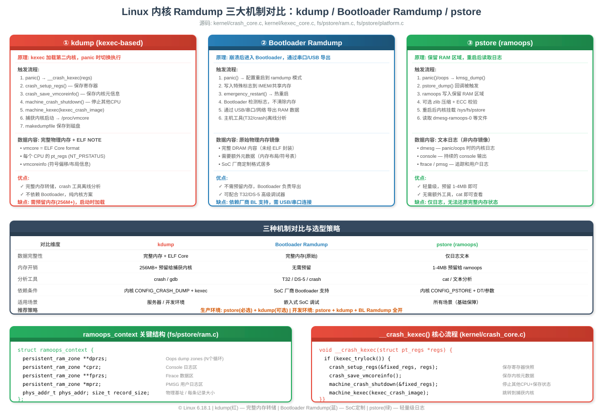
Ramdump（RAM Dump）是在系统崩溃时将 DRAM 中的内容保存下来，供后续离线分析的技术。核心目的是在系统无法恢复运行的情况下，保留崩溃现场的完整内存状态，包括进程堆栈、内核数据结构、页表等关键信息。
| 维度 | kdump | Bootloader Ramdump | pstore/ramoops |
|---|---|---|---|
| 数据内容 | 完整内存 + ELF Core | 完整物理内存原始镜像 | 文本日志（dmesg/console/ftrace） |
| 数据大小 | 可压缩过滤（几十MB~几GB） | 整个 DRAM（GB级） | 几十KB~几MB |
| 触发方式 | panic() → kexec 切换内核 | panic() → 重启到 BL 导出模式 | panic()/oops → 写保留RAM |
| 内存开销 | 预留 256MB+ 给捕获内核 | 不需预留 | 预留 1~4MB |
| 分析工具 | crash / gdb | T32 / crash / 厂商工具 | cat / grep / 文本分析 |
| 依赖 | CONFIG_CRASH_DUMP + kexec | SoC 厂商 BL 支持 | CONFIG_PSTORE + DT/参数 |
makedumpfile 过滤压缩DRAM 内容在以下条件下可保持：
┌─────────────────────────────────────────────────────┐
│ DRAM 布局 │
├───────────────────────────────┬─────────────────────┤
│ 第一内核使用的内存 (大部分DRAM) │ crashkernel 预留区 │
│ 内核代码/数据/页表/进程等 │ 捕获内核+initrd │
│ Panic 后作为 vmcore 数据源 │ Panic 后启动运行 │
└───────────────────────────────┴─────────────────────┘
│ panic() 触发 │
└──── kexec 跳转 ─────────────────→│
│ 启动捕获内核
│ 通过 /proc/vmcore 读取第一内核内存
│ makedumpfile 保存到磁盘// kernel/kexec_file.c / kernel/kexec.c
// 用户空间: kexec -p vmlinuz-capture --initrd=initrd-capture
// 系统调用路径:
sys_kexec_file_load()
→ kimage_file_alloc_init() // 分配 kimage 结构
→ kimage_load_segment() // 加载内核和 initrd 到预留内存
→ kexec_crash_image = image // 设置为 crash 镜像# 启动参数
crashkernel=256M # 自动选择预留位置
crashkernel=256M@0x50000000 # 指定起始地址
crashkernel=256M,high # 高地址预留（4GB以上）
crashkernel=64M,low # 低地址额外预留（DMA）
# 内核侧实现 (kernel/crash_core.c):
# parse_crashkernel() → memblock_reserve() 预留内存ARM64 kdump 需要处理 EL2/EL1 切换问题：
// arch/arm64/kernel/machine_kexec.c
void machine_crash_shutdown(struct pt_regs *regs)
{
local_irq_disable();
crash_smp_send_stop(); // 停止其他 CPU
crash_save_cpu(regs, smp_processor_id()); // 保存当前 CPU 寄存器
}
// ARM64 kexec 需要通过 PSCI 接口关闭其他 CPU
// 并处理 EL2 → EL1 的降级问题panic()
→ __crash_kexec(regs) // kernel/crash_core.c
→ kexec_trylock() // 获取 kexec 锁
→ crash_setup_regs(&fixed_regs) // 保存当前寄存器快照
→ crash_save_vmcoreinfo() // 保存 vmcoreinfo（符号偏移等）
→ machine_crash_shutdown() // 停止其他 CPU + 保存其寄存器
→ crash_cma_clear_pending_dma() // 等待 DMA 完成
→ machine_kexec(kexec_crash_image) // 跳转到捕获内核kexec_should_crash() 判断是否应触发 kdump（crash_core.c）：
int kexec_should_crash(struct task_struct *p)
{
if (crash_kexec_post_notifiers)
return 0; // 延后到 notifier 之后再触发
if (in_interrupt() || !p->pid || is_global_init(p) || panic_on_oops)
return 1;
return 0;
}捕获内核通过 /proc/vmcore 提供第一内核内存的 ELF Core 视图：
ELF Core 文件结构:
┌─────────────────────┐
│ ELF Header │ ← Elf64_Ehdr, e_type = ET_CORE
├─────────────────────┤
│ Program Header 0 │ ← PT_NOTE: CPU 寄存器快照
│ Program Header 1 │ ← PT_NOTE: vmcoreinfo
│ Program Header 2 │ ← PT_LOAD: 内存段 0
│ Program Header 3 │ ← PT_LOAD: 内存段 1
│ ... │
├─────────────────────┤
│ NOTE segment │ ← NT_PRSTATUS (每个CPU一份)
│ │ ← vmcoreinfo (内核符号偏移)
├─────────────────────┤
│ LOAD segments │ ← 物理内存数据
└─────────────────────┘# 基本用法：从 /proc/vmcore 保存压缩转储
makedumpfile -l -d 31 /proc/vmcore vmcore.dump
# -l: lzo 压缩
# -d 31: 过滤级别（排除空闲页/缓存页/用户页等）
# 1=排除空闲页, 2=排除缓存, 4=排除缓存(非私有)
# 8=排除用户数据, 16=排除空闲的 hugepage
# 31=全部排除 → 最小转储
# 查看 vmcore 信息
makedumpfile --dump-dmesg vmcore.dump # 提取 dmesg# 基本加载
crash vmlinux vmcore.dump
# ARM64 交叉分析（主机是 x86）
crash --target=arm64 vmlinux vmcore.dump
# 带模块符号
crash vmlinux vmcore.dump -m my_module.ko// include/linux/kexec.h
struct kimage {
kimage_entry_t head; // 页表入口链表头
kimage_entry_t *entry; // 当前页表入口
unsigned long nr_segments; // 段数量
struct kexec_segment segment[KEXEC_SEGMENT_MAX]; // 内存段描述
struct list_head control_pages; // 控制页列表
unsigned long start; // 捕获内核入口地址
unsigned int type : 1; // KEXEC_TYPE_DEFAULT/CRASH
void *vmcoreinfo_data_copy; // vmcoreinfo 安全副本
};
// 每个 CPU 的寄存器快照存储在 crash_notes 中
note_buf_t __percpu *crash_notes; // per-CPU 的 ELF NOTE 缓冲区# 必需配置
CONFIG_CRASH_DUMP=y # 启用 crash dump 支持
CONFIG_KEXEC=y # 启用 kexec 系统调用
CONFIG_PROC_VMCORE=y # 捕获内核 /proc/vmcore 支持
# 推荐配置
CONFIG_CRASH_HOTPLUG=y # 支持热插拔 CPU/内存的 kdump
CONFIG_DEBUG_INFO=y # 调试信息（crash 工具需要）
CONFIG_KALLSYMS_ALL=y # 完整符号表| 问题 | 原因 | 解决 |
|---|---|---|
| 捕获内核不启动 | crashkernel 内存不足 | 增加 crashkernel=512M |
| vmcore 不完整 | DMA 写入破坏内存 | 使用 CMA 预留 + 等待 DMA |
| 符号不匹配 | vmlinux 与 vmcore 版本不同 | 确保版本一致 |
| ARM64 kexec 失败 | EL2/PSCI 配置问题 | 检查设备树 psci 节点 |
内核 Panic → 设置重启原因标记 → emergency_restart()
│
▼ Warm Reset
Bootloader 启动 → 检查重启原因标记 → 进入 Ramdump 模式
│
▼
枚举 DRAM 区域
通过 USB/串口/SD 导出
主机工具保存到文件emergency_restart() → 也是 Warm Reset// Qualcomm 特有: 通过 SCM (Secure Channel Manager) 设置下载模式
// panic_notifier → qcom_scm_set_download_mode(QCOM_DOWNLOAD_FULLDUMP)
// 重启后 PBL/SBL 检测到下载模式 → 进入 EDL (Emergency Download)
// QPST / Sahara 工具通过 USB 导出内存// MediaTek AEE (Android Exception Engine):
// panic_notifier → aee_kdump_reboot()
// 写入 MRDUMP 头信息到预留 SRAM
// Bootloader 检测 MRDUMP 标记 → 导出到 SD/eMMC
// 使用 GAT (Generic Analyzing Tool) 离线分析通用方案通过 PSCI SYSTEM_RESET2 传递重启原因：
// arch/arm64/kernel/psci.c
// PSCI_0_2_FN_SYSTEM_RESET2 可传递 reset_type 参数
// Bootloader 读取 reset_type 判断是否进入 ramdump 模式U-Boot Ramdump 流程:
1. 启动 → 检查 warm_reset + ramdump 标记
2. 跳过 DDR 初始化（或仅做 refresh 配置）
3. 枚举 DRAM 区域（从设备树或 ATAGS 获取）
4. 启动 USB gadget / fastboot 协议
5. 主机通过 fastboot oem ramdump 命令拉取内存| 传输方式 | 速度 | 适用场景 |
|---|---|---|
| USB (fastboot) | ~30MB/s | 实验室调试 |
| SD 卡 | ~20MB/s | 车载/IoT 现场 |
| TFTP/网络 | ~100MB/s | 服务器/机架 |
| eMMC 专用分区 | ~50MB/s | 手机/平板 |
// 典型实现: panic_notifier 中设置标记
static int ramdump_panic_handler(struct notifier_block *nb, ...)
{
// 写入 IMEM / SRAM 中的共享标记区域
writel(RAMDUMP_MAGIC, imem_base + RAMDUMP_FLAG_OFFSET);
return NOTIFY_DONE;
}
static struct notifier_block ramdump_nb = {
.notifier_call = ramdump_panic_handler,
.priority = INT_MIN, // 最后执行，确保其他 notifier 先完成
};__crash_kexec() 在 panic_notifier_list 之前执行emergency_restart() 进入 BL Ramdump| 问题 | 原因 | 解决 |
|---|---|---|
| 重启后内存内容为空 | Cold Reset 或 DDR 被重新初始化 | 确保 Warm Reset + BL 跳过 DDR init |
| 标记未检测到 | IMEM/SRAM 在重启时被清除 | 使用 PMU 寄存器或 battery-backed SRAM |
| 导出不完整 | USB 断开 / 超时 | 加大传输超时，使用更稳定的接口 |
pstore 采用前端-后端分离架构（fs/pstore/platform.c）：
┌─────────────────────┐ ┌──────────────────┐ ┌────────────────────┐
│ 前端 (数据源) │ │ pstore 核心 │ │ 后端 (存储) │
│ │ │ │ │ │
│ dmesg (kmsg_dump) │────→│ pstore_dump() │────→│ ramoops (RAM) │
│ console (printk) │────→│ pstore_console() │────→│ blk (块设备) │
│ ftrace (ring buf) │────→│ pstore_ftrace() │────→│ zone (MTD/NVRAM) │
│ pmsg (/dev/pmsg0) │────→│ pstore_pmsg() │────→│ efi (UEFI vars) │
└─────────────────────┘ └──────────────────┘ └────────────────────┘
│
/sys/fs/pstore/ 挂载点
重启后通过文件系统接口读取| 前端 | 数据来源 | 触发时机 | 用途 |
|---|---|---|---|
dmesg |
kmsg_dump() |
panic/oops 时 | 崩溃时的完整 dmesg |
console |
printk 钩子 | 持续（实时） | 所有 console 输出 |
pmsg |
/dev/pmsg0 |
用户空间写入 | Android logcat 等 |
ftrace |
ftrace ring buffer | panic 时 | 函数调用追踪 |
ramoops 是最常用的 pstore 后端，将数据写入物理内存保留区域（fs/pstore/ram.c）：
struct ramoops_context {
struct persistent_ram_zone **dprzs; // Oops dump zones（循环覆盖）
struct persistent_ram_zone *cprz; // Console zone
struct persistent_ram_zone **fprzs; // Ftrace zones（per-CPU）
struct persistent_ram_zone *mprz; // PMSG zone
phys_addr_t phys_addr; // 保留内存物理起始地址
unsigned long size; // 保留内存总大小
unsigned int memtype; // 0=WC, 1=unbuffered, 2=cached
size_t record_size; // 每条 oops 记录大小
size_t console_size; // console 区域大小
size_t ftrace_size; // ftrace 区域大小
size_t pmsg_size; // pmsg 区域大小
struct persistent_ram_ecc_info ecc_info; // ECC 校验信息
unsigned int max_dump_cnt; // 最大 dump 记录数
};内存布局：
phys_addr ──────────────────────────────────────── phys_addr + size
│ dump zone 0 │ dump zone 1 │ ... │ console │ ftrace │ pmsg │
│ record_size │ record_size │ │ cons_sz │ ft_sz │ pm_sz│// 设备树配置
reserved-memory {
#address-cells = <2>;
#size-cells = <2>;
ranges;
ramoops@90000000 {
compatible = "ramoops";
reg = <0x0 0x90000000 0x0 0x100000>; // 1MB
record-size = <0x20000>; // 128KB per dump record
console-size = <0x40000>; // 256KB console
ftrace-size = <0x20000>; // 128KB ftrace
pmsg-size = <0x20000>; // 128KB pmsg
ecc-size = <16>; // 16 bytes ECC per block
};
};# 启动参数替代方式
ramoops.mem_address=0x90000000 ramoops.mem_size=0x100000
ramoops.record_size=0x20000 ramoops.console_size=0x40000
ramoops.ftrace_size=0x20000 ramoops.pmsg_size=0x20000
ramoops.ecc=16// fs/pstore/blk.c — 使用块设备分区作为 pstore 后端
// 适用于有 eMMC/NOR Flash 但无法保留 DRAM 的场景
// 配置: pstore_blk.blkdev=/dev/mmcblk0p10
// 需要指定一个专用分区，数据直接写入块设备
// 优点: 掉电不丢失（比 ramoops 更可靠）
// 缺点: 写入速度较慢，不适合高频写入# UEFI 系统可使用 EFI 变量存储 pstore 数据
# 配置: pstore.backend=efi
# 数据存储在 EFI System Partition 的 NVRAM 中
# 空间有限，通常只存储最近一次 panic/oops# 挂载（通常开机自动挂载）
mount -t pstore pstore /sys/fs/pstore/
# 文件命名规则
ls /sys/fs/pstore/
# dmesg-ramoops-0 ← 第一条 oops/panic dmesg 记录
# dmesg-ramoops-1 ← 第二条记录（循环覆盖）
# console-ramoops-0 ← console 持续日志
# ftrace-ramoops-0 ← ftrace 追踪数据
# pmsg-ramoops-0 ← 用户空间 pmsg 日志
# 读取
cat /sys/fs/pstore/dmesg-ramoops-0
# 清除已读取的记录（释放空间）
rm /sys/fs/pstore/dmesg-ramoops-0// fs/pstore/ram_core.c
struct persistent_ram_zone {
phys_addr_t paddr; // 物理地址
size_t size; // 区域大小
void *vaddr; // ioremap 后的虚拟地址
struct persistent_ram_buffer *buffer; // 环形缓冲区头
size_t buffer_size; // 数据区大小
raw_spinlock_t buffer_lock; // 保护锁
struct persistent_ram_ecc_info ecc_info; // ECC 信息
};
struct persistent_ram_buffer {
uint32_t sig; // 魔数签名（验证数据有效性）
atomic_t start; // 环形缓冲区起始位置
atomic_t size; // 当前数据大小
uint8_t data[]; // 数据区
};// include/linux/pstore.h
struct pstore_info {
const char *name; // 后端名称
int (*open)(struct pstore_info *psi);
int (*close)(struct pstore_info *psi);
ssize_t (*read)(struct pstore_record *record);
int (*write)(struct pstore_record *record);
int (*erase)(struct pstore_record *record);
// ...
};
// ramoops 注册为 pstore 后端:
// pstore_register(&cxt->pstore) 在 ramoops_probe() 中调用// kernel/panic.c - panic 路径中的 pstore 集成
// vpanic() → kmsg_dump_desc(KMSG_DUMP_PANIC, buf)
// → 遍历 kmsg_dump_list
// → pstore_dump() 被调用
// → ramoops_pstore_write_buf() 将 dmesg 写入保留内存
// oops_exit() → kmsg_dump(KMSG_DUMP_OOPS)
// → 同上流程，但 dump reason = OOPSCONFIG_PSTORE=y # pstore 核心
CONFIG_PSTORE_RAM=y # ramoops 后端
CONFIG_PSTORE_CONSOLE=y # console 前端
CONFIG_PSTORE_PMSG=y # pmsg 前端
CONFIG_PSTORE_FTRACE=y # ftrace 前端
CONFIG_PSTORE_DEFAULT_KMSG_BYTES=10240 # kmsg 快照大小
CONFIG_PSTORE_DEFLATE_COMPRESS=y # zlib 压缩支持
CONFIG_PSTORE_BLK=y # 块设备后端（可选）| 问题 | 原因 | 解决 | |
|---|---|---|---|
| 重启后 /sys/fs/pstore/ 为空 | 保留内存被 Bootloader 覆盖 | 确认 BL 不初始化 ramoops 区域 | |
| dmesg-ramoops 内容截断 | record-size 过小 | 增大 record-size | |
| ECC 校验失败 | 内存数据被破坏 | 检查 DDR 稳定性，增大 ecc-size | |
| pstore 未注册 | 设备树/参数配置错误 | `dmesg | grep pstore` 检查 |
# 常用分析流程
crash> log # 查看 panic 前的 dmesg
crash> bt # 当前 CPU 调用栈
crash> bt -a # 所有 CPU 调用栈
crash> ps -l # 进程列表（带最后运行CPU）
crash> runq # 各 CPU 运行队列
crash> kmem -i # 内存使用概览
crash> struct task_struct <addr> # 查看进程结构体
crash> rd -S <addr> 32 # 读取栈内存
crash> dis -l <func> # 反汇编函数
crash> foreach bt # 所有进程调用栈
crash> files <pid> # 进程打开文件列表aarch64-linux-gnu-gdb vmlinux vmcore
(gdb) bt # 调用栈
(gdb) info registers # 寄存器值
(gdb) p *((struct task_struct *)0xffff...) # 查看结构体// Trace32 加载 raw ramdump
SYStem.CPU CortexA53
Data.LOAD.Binary ramdump.bin 0x80000000
Data.LOAD.ELF vmlinux /nocode
// 即可查看内核数据结构和符号# Qualcomm ramparse 工具
python ramparse.py --vmlinux vmlinux --ram-file ramdump.bin \
--output-dir ./output --auto-dump
# 自动解析: dmesg / task list / 锁状态 / 内存使用 等1. 获取 ramdump 文件（vmcore / raw / pstore 日志）
2. 确保 vmlinux（带调试信息）版本匹配
3. crash/gdb 加载 → log 查看 panic 原因
4. bt -a → 找出 panic CPU 和调用路径
5. dis -l → 反汇编出错函数
6. struct → 检查关键数据结构状态
7. kmem -i / ps → 了解系统整体状态
8. 综合分析 → 确定根因| 复位类型 | DDR 内容 | 触发方式 |
|---|---|---|
| Warm Reset | 保持 | watchdog timeout / PSCI SYSTEM_RESET / SW reset |
| Cold Reset | 丢失 | 掉电 / POR (Power-On Reset) / 长按电源键 |
| DRAM Self-Refresh + Reset | 保持 | 部分 SoC 支持进入 self-refresh 后再 reset |
// panic 路径需要确保 cache 内容写回 DRAM
// 否则 ramdump 中看到的数据可能是陈旧的
// ARM64: machine_crash_shutdown() 中会刷 cachepstore (ramoops) — 必选，轻量级日志保障
+
kdump — 推荐，完整内存转储用于深度分析
配置: crashkernel=512M, panic_on_oops=1, panic=30pstore (ramoops) — 必选，1~4MB 保留内存
+
Bootloader Ramdump — 按 SoC 厂商方案启用
+
kdump — 可选（内存紧张时可不开）| 机制 | 内存开销 | CPU 开销 | 存储开销 |
|---|---|---|---|
| pstore/ramoops | 1~4MB 预留 | 几乎为零 | 几KB~几MB |
| kdump | 256MB~1GB 预留 | kexec 加载时 | vmcore 几十MB~几GB |
| BL Ramdump | 无 | 无 | 完整 DRAM 大小 |
crash> log | grep -i "out of memory"
# Out of memory: Killed process 1234 (my_app)
crash> kmem -i
# 确认内存使用情况
crash> ps -G my_app
# 查看被 OOM 杀死的进程
crash> foreach bt -t | grep alloc
# 追踪大量内存分配的调用路径1. 看门狗复位 → BL 检测 warm reset → 导出 ramdump
2. crash 加载 → bt -a → 发现 CPU0 停在自旋锁
3. 分析死锁原因 → AB-BA 锁顺序反转
4. 修复锁顺序 + 开启 LOCKDEP 预防# 断电重启后
cat /sys/fs/pstore/dmesg-ramoops-0
# 看到 "Kernel panic - not syncing: Fatal exception"
# 完整 Oops 日志可分析出根因# 现象: panic 后系统直接重启，没有进入捕获内核
# 排查:
cat /sys/kernel/kexec_crash_loaded # 检查是否加载成功
dmesg | grep crashkernel # 检查预留内存
# 原因: crashkernel 区域与其他 reserved-memory 冲突
# 修复: 调整 crashkernel 地址# 现象: /sys/fs/pstore/ 每次重启后为空
# 排查:
dmesg | grep ramoops # 确认 ramoops 注册成功
# Bootloader 在启动时将 framebuffer 映射到 ramoops 区域
# 修复: 调整 ramoops 物理地址避开 BL 使用区域Q1: kdump 的工作原理是什么？
kdump 在启动时通过crashkernel=参数预留一块内存，用kexec -p将捕获内核加载到该区域。当 panic 发生时，__crash_kexec()保存当前 CPU 寄存器和 vmcoreinfo，停止其他 CPU，然后通过machine_kexec()跳转到捕获内核。捕获内核启动后通过/proc/vmcore（ELF Core 格式）提供对第一内核内存的访问，用makedumpfile保存到磁盘后用crash工具离线分析。
Q2: pstore/ramoops 如何保证重启后数据不丢失？
ramoops 使用物理内存保留区域（通过设备树reserved-memory或启动参数指定），这块内存在 memblock 初始化时被 reserve，内核不会将其分配给其他用途。数据通过ioremap直接写入物理内存。Warm Reset 后 DRAM 内容保持，重启的内核重新映射该区域，通过persistent_ram_buffer的 magic signature 验证数据有效性。
Q3: panic() 中 kdump 和 pstore 的执行顺序是什么？
panic()中先尝试crash_kexec()（若crash_kexec_post_notifiers=false），成功则直接跳转到捕获内核。若 kdump 未配置或失败，继续执行panic_notifier_list通知链，然后kmsg_dump()触发 pstore 写入。若设置了crash_kexec_post_notifiers=true，则先执行 notifier + kmsg_dump，最后再尝试crash_kexec()。
Q4: Bootloader Ramdump 与 kdump 的区别和各自适用场景？
kdump 是纯软件方案，在内核空间完成全部转储，依赖预留内存但不依赖 Bootloader 支持，产生标准 ELF Core 格式。BL Ramdump 依赖 SoC 厂商 Bootloader 支持，无需预留内存，但产生原始内存镜像需要厂商工具解析。kdump 适合服务器和通用 Linux 系统，BL Ramdump 适合嵌入式 SoC 平台（如 Qualcomm/MediaTek 手机芯片）。
全景架构图：
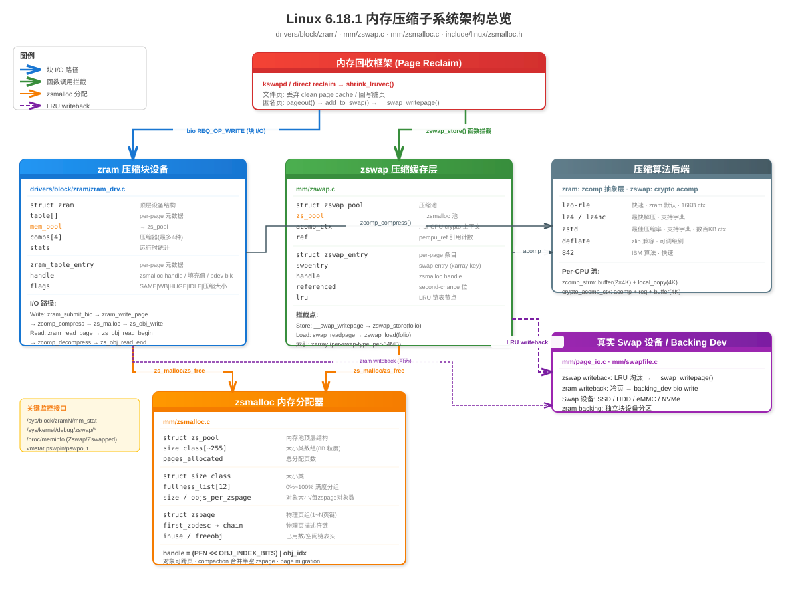
当系统内存紧张时，内核通过 页面回收（page reclaim） 释放内存。匿名页（anonymous pages）没有后备文件，必须写入 Swap 设备才能回收。然而传统 Swap 存在严重的 I/O 瓶颈：
| 操作 | 延迟量级 | 说明 |
|---|---|---|
| CPU L1 Cache | ~1 ns | |
| CPU L2 Cache | ~3-10 ns | |
| 主内存（DDR4） | ~60-100 ns | |
| LZO 压缩 4K 页面 | ~2-5 μs | CPU 密集型，无 I/O |
| LZ4 压缩 4K 页面 | ~1-3 μs | 比 LZO 更快 |
| NVMe SSD 4K 随机读 | ~100 μs | 比压缩慢 20-50 倍 |
| SATA SSD 4K 随机读 | ~200 μs | 比压缩慢 50-100 倍 |
| eMMC 4K 随机读 | ~500 μs - 3 ms | 嵌入式设备常见 |
| HDD 4K 随机读 | ~5-10 ms | 比压缩慢 1000-5000 倍 |
核心思想：用 CPU 时间换 I/O 时间。将页面压缩后存储在内存中，避免或减少 Swap I/O，在绝大多数场景下能显著降低延迟：
传统 Swap 路径：
匿名页 ──► 磁盘写入（~100μs-10ms）──► 需要时从磁盘读回（~100μs-10ms）
压缩 Swap 路径：
匿名页 ──► CPU 压缩（~2μs）──► 存入压缩内存池 ──► 需要时 CPU 解压（~1μs）
总延迟：~3μs vs ~200μs-20ms，性能提升 100-10000 倍对于嵌入式 / 移动设备（如 Android 手机），通常没有传统 Swap 分区，zram 是唯一的匿名页回收通道。对于服务器场景，zswap 作为 Swap 的前端缓存层，可将 90% 以上的 Swap I/O 转化为内存压缩操作。
三者在内核内存管理中协同工作：
内存压力触发
│
▼
┌─── kswapd / direct reclaim ───┐
│ │
┌──────┴──────┐ ┌───────┴───────┐
│ 文件页回收 │ │ 匿名页回收 │
│ (page cache) │ │ (anonymous) │
└──────────────┘ └───────┬───────┘
│
┌──────────────────┼──────────────────┐
│ │ │
┌─────┴─────┐ ┌──────┴──────┐ ┌─────┴─────┐
│ zswap │ │ zram │ │ 传统 Swap │
│ (压缩缓存) │ │ (压缩块设备) │ │ (磁盘设备) │
└─────┬─────┘ └─────────────┘ └───────────┘
│ 淘汰时
▼
传统 Swap 设备关键区别：
| 维度 | 内存回收 | 内存压缩 | Swap |
|---|---|---|---|
| 对象 | 文件页 + 匿名页 | 仅匿名页 | 仅匿名页 |
| 机制 | 丢弃干净页 / 回写脏页 | 压缩后存内存 | 写入磁盘设备 |
| 延迟 | 文件页丢弃 ≈ 0 / 回写 ≈ ms | 压缩 ≈ μs | 读写 ≈ ms |
| 空间 | 释放物理页 | 节省物理页（压缩率） | 释放物理页 |
| 限制 | 可回收页有限 | 受限于压缩率和 CPU | 受限于磁盘空间和 I/O |
注意：在 Linux 6.18.1 中，zpool抽象层已被移除。zswap 直接调用zsmalloc接口（zs_malloc/zs_free/zs_obj_read_begin/zs_obj_write），不再经过 zpool 中间层。早期内核（<6.x）中 zpool 支持 zbud / z3fold / zsmalloc 三种后端，现在只保留 zsmalloc。
| 维度 | zram | zswap |
|---|---|---|
| 定位 | 基于内存的压缩块设备 | Swap 路径上的压缩缓存层 |
| 实现方式 | 注册为块设备（/dev/zramN），可作为 Swap 后端 |
拦截 Swap 路径，在写入真实 Swap 前先压缩缓存 |
| 数据存储 | zsmalloc 池（zs_pool） |
zsmalloc 池（zs_pool） |
| 适用场景 | 无 Swap 设备的嵌入式/移动设备 | 有 Swap 设备的服务器/桌面 |
| 淘汰策略 | writeback 到 backing device（可选） | LRU writeback 到真实 Swap 设备 |
| 多级压缩 | 支持（最多 4 种算法 recompression） | 不支持 |
| cgroup 集成 | 通过块设备 cgroup 控制 | 通过 memcg LRU 感知回收 |
| 源码位置 | drivers/block/zram/ |
mm/zswap.c |
| 内核配置 | CONFIG_ZRAM |
CONFIG_ZSWAP |
zram 在 Linux 6.18.1 中支持 7 种压缩算法后端，定义在 drivers/block/zram/zcomp.c 的 backends[] 数组中：
| 算法 | 压缩速度 | 解压速度 | 压缩率 | 内存开销 | 字典支持 | 级别控制 | 默认 |
|---|---|---|---|---|---|---|---|
| lzo-rle | 快 | 快 | 中等 | LZO1X_MEM_COMPRESS ≈ 16KB |
✗ | ✗ | ✓（zram 默认） |
| lzo | 快 | 快 | 中等 | LZO1X_MEM_COMPRESS ≈ 16KB |
✗ | ✗ | |
| lz4 | 很快 | 很快 | 偏低 | LZ4_MEM_COMPRESS ≈ 16KB |
✓ | ✓（acceleration） | |
| lz4hc | 慢 | 很快 | 较高 | LZ4HC_MEM_COMPRESS ≈ 260KB |
✓ | ✓（clevel 1-16） | |
| zstd | 中等 | 快 | 高 | cctx + dctx ≈ 数百 KB | ✓ | ✓（clevel 1-22） | zswap 默认 |
| deflate | 慢 | 中等 | 高 | z_stream_s ≈ 数百 KB | ✗ | ✓（Z_DEFAULT） | |
| 842 | 快 | 快 | 中等 | SW842_MEM_COMPRESS |
✗ | ✗ |
选择建议：
lzo-rle 或 lz4，CPU 开销最低zstd，压缩率比 lzo 高 20-30%，CPU 允许lz4（快），recompression 用 zstd（省空间）ARM64 平台的内存压缩存在以下特殊考量：
1. NEON/SVE 指令加速
部分压缩算法可利用 ARM64 的 NEON SIMD 指令加速。但内核态使用 NEON 需要保存/恢复 FPSIMD 上下文：
// arch/arm64/include/asm/neon.h
kernel_neon_begin(); // 保存用户态 FPSIMD → 允许内核使用 NEON
// ... 使用 NEON 指令的压缩操作 ...
kernel_neon_end(); // 恢复用户态 FPSIMD2. 大小核（big.LITTLE）调度影响
3. Cache 友好性
zcomp_strm）的 buffer（2×PAGE_SIZE）和 local_copy（PAGE_SIZE）被频繁访问，需常驻 cache4. 页面大小影响
ARM64 支持 4K/16K/64K 页面。页面越大，压缩操作处理的数据量越大：
zram 是一个内存中的压缩块设备驱动，注册为 /dev/zramN。它的核心思想是：将写入块设备的数据（通常是 4K 页面）压缩后存储在内存中，读取时解压返回。最常见的用途是作为 Swap 后端：
用户进程匿名页
│
▼ (swap out by kswapd/direct reclaim)
Swap 子系统
│
▼ (bio REQ_OP_WRITE)
┌─────────────────────────────────────────────────────────────────┐
│ zram block device (/dev/zramN) │
│ │
│ zram_submit_bio() │
│ ├── zram_bio_write() → zram_write_page() │
│ │ ├── page_same_filled() → 相同值页面 → 仅存标志和值 │
│ │ ├── zcomp_compress() → 压缩 │
│ │ │ └── Per-CPU zcomp_strm (mutex 保护) │
│ │ ├── zs_malloc() → 从 zsmalloc 池分配空间 │
│ │ └── zs_obj_write() → 写入压缩数据 │
│ │ │
│ └── zram_bio_read() → zram_read_page() │
│ ├── ZRAM_SAME → 填充相同值 │
│ ├── ZRAM_HUGE → zs_obj_read_begin() → 直接复制 │
│ ├── 压缩页 → zs_obj_read_begin() → zcomp_decompress() │
│ └── ZRAM_WB → read_from_bdev() → 从后端设备读取 │
│ │
│ 数据存储： │
│ ┌────────────────┐ ┌─────────────────┐ │
│ │ zram_table_entry│ │ zs_pool │ │
│ │ [0] handle,flags│───►│ (zsmalloc) │ │
│ │ [1] handle,flags│ │ 压缩数据存储 │ │
│ │ [2] ... │ └─────────────────┘ │
│ └────────────────┘ │
└─────────────────────────────────────────────────────────────────┘源码位于 drivers/block/zram/，核心文件：
| 文件 | 行数 | 功能 |
|---|---|---|
zram_drv.h |
142 | 核心数据结构、标志位、常量 |
zram_drv.c |
2927 | 主驱动：I/O 处理、sysfs、初始化/重置、writeback、recompress |
zcomp.h |
96 | 压缩抽象层类型定义 |
zcomp.c |
257 | 压缩框架：创建/销毁/压缩/解压 |
backend_lzorle.c |
59 | LZO-RLE 后端（默认） |
backend_lz4.c |
127 | LZ4 后端（支持字典） |
backend_zstd.c |
217 | ZSTD 后端（支持字典） |
模块加载（zram_init()，drivers/block/zram/zram_drv.c:2887）：
// drivers/block/zram/zram_drv.c
static int __init zram_init(void)
{
// 1. 注册 CPU 热插拔回调（管理 Per-CPU 压缩流）
cpuhp_setup_state_multi(CPUHP_ZCOMP_PREPARE,
"block/zram:prepare",
zcomp_cpu_up_prepare, // 新 CPU 上线时分配压缩上下文
zcomp_cpu_dead); // CPU 下线时释放
// 2. 注册 sysfs 类（/sys/class/zram-control/）
class_register(&zram_control_class);
// 3. 注册块设备主号
zram_major = register_blkdev(0, "zram"); // 动态分配
// 4. 创建 num_devices 个 zram 设备（默认 1 个）
for (i = 0; i < num_devices; i++)
zram_add(); // 创建 /dev/zramN
}设备创建（zram_add()，drivers/block/zram/zram_drv.c:2714）：
zram_add()
├── kzalloc(sizeof(struct zram))
├── idr_alloc(&zram_index_idr) → 分配设备 ID
├── init_rwsem(&zram->init_lock)
├── blk_alloc_disk(&lim) → 分配 gendisk
│ └── lim: logical=4K, physical=PAGE_SIZE
│ features: STABLE_WRITES | SYNCHRONOUS
├── 设置默认压缩算法: comp_algorithm_set(PRIMARY, "lzo-rle")
├── set_capacity(disk, 0) → 容量为 0（等待 disksize 设置）
└── device_add_disk(NULL, disk, zram_disk_groups)激活设备（设置 disksize，disksize_store()，drivers/block/zram/zram_drv.c:2490）：
echo 512M > /sys/block/zram0/disksize
disksize_store(buf)
├── memparse(buf) → disksize (字节数)
├── down_write(&init_lock)
├── zram_meta_alloc(zram, disksize)
│ ├── vzalloc(num_pages × sizeof(zram_table_entry)) → per-page 元数据表
│ ├── zs_create_pool("zram0") → zsmalloc 内存池
│ └── zs_huge_class_size(pool) → huge_class_size → 不可压缩阈值
│
├── for each comp_algs[prio]: → 创建压缩器
│ └── zcomp_create(alg, params)
│ ├── lookup_backend_ops(alg) → 查找后端
│ └── zcomp_init()
│ ├── alloc_percpu(struct zcomp_strm) → Per-CPU 压缩流
│ └── cpuhp_state_add_instance() → 为每个在线 CPU：
│ └── zcomp_strm_init()
│ ├── ops->create_ctx() → 创建后端上下文
│ ├── vzalloc(PAGE_SIZE) → local_copy 缓冲
│ └── vzalloc(2 × PAGE_SIZE) → 压缩输出缓冲
│
├── zram->disksize = disksize
└── set_capacity_and_notify(sectors) → 通知块层
所有 I/O 通过 zram_submit_bio() 入口（drivers/block/zram/zram_drv.c:2329）：
// drivers/block/zram/zram_drv.c
static void zram_submit_bio(struct bio *bio)
{
switch (bio_op(bio)) {
case REQ_OP_READ:
zram_bio_read(zram, bio); // 读取路径
break;
case REQ_OP_WRITE:
zram_bio_write(zram, bio); // 写入路径
break;
case REQ_OP_DISCARD:
case REQ_OP_WRITE_ZEROES:
zram_bio_discard(zram, bio); // 丢弃路径
break;
}
}写入路径完整流程：
zram_bio_write(bio)
├── bio_start_io_acct()
├── for_each_bvec(bv, bio):
│ ├── index = sector >> SECTORS_PER_PAGE_SHIFT → 页面索引
│ ├── zram_bvec_write(zram, &bv, index, offset, bio)
│ │ ├── 部分写 → zram_bvec_write_partial()
│ │ │ ├── alloc_page() → 临时页
│ │ │ ├── zram_read_page() → 读取已有数据
│ │ │ ├── memcpy_from_bvec() → 覆盖部分数据
│ │ │ └── zram_write_page() → 重写完整页
│ │ └── 全页写 → zram_write_page(zram, page, index)
│ └── zram_accessed(index) → 清除 IDLE/PP_SLOT，更新 ac_time
└── bio_endio()读取路径完整流程：
zram_bio_read(bio)
├── bio_start_io_acct()
├── for_each_bvec(bv, bio):
│ ├── zram_bvec_read(zram, &bv, index, offset, bio)
│ │ ├── 部分读 → zram_bvec_read_partial()
│ │ └── 全页读 → zram_read_page(page, index, bio)
│ ├── flush_dcache_page()
│ └── zram_accessed(index)
└── bio_endio()写入页面核心逻辑（zram_write_page()，drivers/block/zram/zram_drv.c:1870）：
// drivers/block/zram/zram_drv.c - zram_write_page() 简化流程
static int zram_write_page(struct zram *zram, struct page *page, u32 index)
{
// Step 1: 检测相同值页面（Same-filled page optimization）
src = kmap_local_page(page);
if (page_same_filled(src, &element)) {
// 页面中所有 unsigned long 值相同 → 仅记录值，不分配内存
zram_free_page(zram, index);
zram_set_flag(index, ZRAM_SAME);
zram_set_handle(index, element); // handle 存填充值而非 zsmalloc handle
atomic64_inc(&zram->stats.same_pages);
return 0;
}
kunmap_local(src);
// Step 2: 压缩
zstrm = zcomp_stream_get(zram->comps[ZRAM_PRIMARY_COMP]);
src = kmap_local_page(page);
ret = zcomp_compress(zstrm, src, &comp_len); // 输出到 zstrm->buffer
kunmap_local(src);
// Step 3: 判断是否可压缩
if (comp_len >= zram->huge_class_size) {
// 不可压缩 → 存储原始页面
return write_incompressible_page(zram, page, index);
// → zs_malloc(PAGE_SIZE) + zs_obj_write(page, PAGE_SIZE)
// → 设置 ZRAM_HUGE 标志
}
// Step 4: 分配 zsmalloc 空间 + 写入压缩数据
handle = zs_malloc(zram->mem_pool, comp_len,
GFP_NOIO | __GFP_HIGHMEM | __GFP_MOVABLE);
zs_obj_write(zram->mem_pool, handle, zstrm->buffer, comp_len);
// Step 5: 更新元数据
zram_slot_lock(zram, index);
zram_free_page(zram, index); // 释放旧数据
zram_set_handle(zram, index, handle);
zram_set_obj_size(zram, index, comp_len);
zram_slot_unlock(zram, index);
// Step 6: 更新统计
atomic64_add(comp_len, &zram->stats.compr_data_size);
atomic64_inc(&zram->stats.pages_stored);
}读取页面核心逻辑（zram_read_from_zspool()）：
// drivers/block/zram/zram_drv.c - zram_read_from_zspool() 简化
static int zram_read_from_zspool(struct zram *zram, struct page *page, u32 index)
{
handle = zram_get_handle(zram, index);
// Case 1: 相同值页面 — 直接填充
if (zram_test_flag(index, ZRAM_SAME)) {
zram_fill_page(page, handle); // memset_l 填充整页
return 0;
}
size = zram_get_obj_size(zram, index);
prio = zram_get_priority(zram, index);
// Case 2: 不可压缩页面 — 直接拷贝
if (size == PAGE_SIZE) {
src = zs_obj_read_begin(zram->mem_pool, handle, NULL);
copy_page(dst, src); // dst = kmap_local_page(page)
zs_obj_read_end(zram->mem_pool, handle, src);
return 0;
}
// Case 3: 压缩页面 — 解压缩
zstrm = zcomp_stream_get(zram->comps[prio]);
src = zs_obj_read_begin(zram->mem_pool, handle, zstrm->local_copy);
dst = kmap_local_page(page);
ret = zcomp_decompress(zstrm, src, size, dst); // 解压到目标页
kunmap_local(dst);
zs_obj_read_end(zram->mem_pool, handle, src);
zcomp_stream_put(zstrm);
return ret;
}压缩抽象层（zcomp.c）的 Per-CPU 流管理：
// drivers/block/zram/zcomp.c
struct zcomp_strm *zcomp_stream_get(struct zcomp *comp)
{
while (1) {
zstrm = raw_cpu_ptr(comp->stream);
mutex_lock(&zstrm->lock); // 获取当前 CPU 的压缩流
if (zstrm->buffer) // 若 buffer 有效（CPU 在线）
return zstrm;
mutex_unlock(&zstrm->lock); // CPU 已下线，buffer 被释放
// 循环重试（会迁移到其他 CPU）
}
}
void zcomp_stream_put(struct zcomp_strm *zstrm)
{
mutex_unlock(&zstrm->lock);
}zram 使用 zsmalloc 作为底层内存分配器。详细机制参见 9.4 节，此处概述关系：
zram->mem_pool (struct zs_pool)
│
├── size_class[0..254] ← ~255 个大小类，每个处理特定大小范围的对象
│ ├── .size = 该类对象大小（8 字节对齐，32..4096）
│ ├── .objs_per_zspage = 一个 zspage 能容纳的对象数
│ └── fullness_list[0..11] ← 12 个满度分组
│ └── zspage ← → zspage ← → ...
│ ├── first_zpdesc → zpdesc → zpdesc ← 物理页链
│ ├── inuse = 已使用对象数
│ └── freeobj = 空闲链表头
│
└── handle = zs_malloc(pool, comp_len, gfp, nid)
→ 编码: (PFN << OBJ_INDEX_BITS) | obj_index
→ 存储在 zram_table_entry[index].handle 中关键操作映射：
| zram 操作 | zsmalloc 调用 | 说明 |
|---|---|---|
| 写入压缩数据 | zs_malloc() + zs_obj_write() |
分配空间 + 写入 |
| 读取压缩数据 | zs_obj_read_begin() + zs_obj_read_end() |
映射 + 读取 + 解映射 |
| 释放页面 | zs_free() |
释放 zsmalloc 对象 |
| 碎片整理 | zs_compact() |
通过 sysfs compact 触发 |
最常见的 zram 使用场景是作为 Swap 设备：
# Step 1: 加载模块（通常已内置）
modprobe zram num_devices=1
# Step 2: 选择压缩算法（可选，默认 lzo-rle）
echo lz4 > /sys/block/zram0/comp_algorithm
# Step 3: 设置 zram 大小（通常为物理内存的 50%-100%）
echo 2G > /sys/block/zram0/disksize
# Step 4: 启用为 Swap（优先级高于磁盘 Swap）
mkswap /dev/zram0
swapon -p 100 /dev/zram0 # priority=100，高优先级
# 验证
cat /proc/swaps
# Filename Type Size Used Priority
# /dev/zram0 partition 2097148 0 100
# 查看统计
cat /sys/block/zram0/mm_stat
# orig_data_size compr_data_size mem_used_total mem_limit max_used
# same_pages pages_compacted huge_pages huge_pages_sinceAndroid 系统的典型配置（系统启动脚本）：
# Android init.rc 中的典型配置
write /sys/block/zram0/comp_algorithm lz4
write /sys/block/zram0/disksize 2147483648 # 2GB
exec /system/bin/mkswap /dev/block/zram0
exec /system/bin/swapon -p 32758 /dev/block/zram0当 CONFIG_ZRAM_WRITEBACK 开启时，zram 可以将不经常访问的压缩页回写到后端块设备（如 eMMC、SD 卡），进一步释放内存。
配置 backing device（必须在设置 disksize 之前）：
# 绑定后端设备
echo /dev/mmcblk0p3 > /sys/block/zram0/backing_dev
# 设置 disksize
echo 2G > /sys/block/zram0/disksize触发 writeback：
# Step 1: 标记空闲页（未被访问超过指定秒数的页面）
echo 300 > /sys/block/zram0/idle # 标记 300 秒未访问的页面为 IDLE
# Step 2: 触发 writeback
echo idle > /sys/block/zram0/writeback # 回写空闲页
echo huge > /sys/block/zram0/writeback # 回写不可压缩大页
echo huge_idle > /sys/block/zram0/writeback # 回写空闲且不可压缩的页
echo incompressible > /sys/block/zram0/writeback # 回写不可压缩页
# 可选：限制回写量
echo 1 > /sys/block/zram0/writeback_limit_enable
echo 1024 > /sys/block/zram0/writeback_limit # 限制 1024 × 4K = 4MBwriteback 内部流程（writeback_store()，drivers/block/zram/zram_drv.c:930）：
writeback_store(buf)
├── atomic_xchg(&pp_in_progress, 1) → 排斥 recompress
├── scan_slots_for_writeback(mode, lo, hi, ctl)
│ └── for each page in [lo, hi):
│ ├── 跳过: 未分配 / ZRAM_WB / ZRAM_SAME
│ ├── 根据 mode 检查: IDLE / HUGE / INCOMPRESSIBLE
│ └── place_pp_slot(ctl, index) → 按 obj_size/64 分桶
│
├── zram_writeback_slots(ctl)
│ └── while select_pp_slot(ctl) → pps: → 从最大桶开始（最大收益）
│ ├── alloc_block_bdev() → blk_idx → bitmap 分配后端设备块
│ ├── zram_read_from_zspool(page, index) → 解压到临时页
│ ├── bio(REQ_OP_WRITE|REQ_SYNC) → submit_bio_wait()
│ ├── zram_free_page(index) → 释放 zsmalloc 空间
│ ├── 设置 ZRAM_WB，handle = blk_idx → 记录后端设备块号
│ └── bd_writes++, bd_wb_limit--
└── atomic_set(&pp_in_progress, 0)writeback 后的读取路径：当读取一个 ZRAM_WB 标志的页面时，zram_read_page() 调用 read_from_bdev()，发起对后端设备的 READ bio。
当 CONFIG_ZRAM_MULTI_COMP 开启时，zram 支持最多 4 种压缩算法（1 个主 + 3 个次级），可以对已压缩的页面用更强算法重压缩以提高压缩率。
配置多级压缩：
# 主压缩算法（快速）
echo lz4 > /sys/block/zram0/comp_algorithm
# 次级压缩算法（更好的压缩率）
echo "algo=zstd priority=1" > /sys/block/zram0/recomp_algorithm
echo "algo=lz4hc priority=2" > /sys/block/zram0/recomp_algorithm
# 设置 disksize 激活
echo 2G > /sys/block/zram0/disksize触发 recompression：
# 标记空闲页
echo 300 > /sys/block/zram0/idle
# 重压缩空闲页（threshold: 只处理压缩后 > 指定字节的页面）
echo "type=idle threshold=2048" > /sys/block/zram0/recompress
# 重压缩不可压缩大页
echo "type=huge" > /sys/block/zram0/recompressrecompression 核心逻辑（recompress_slot()）：
recompress_slot(index, page, threshold, prio_range)
├── 解压原始页面到临时页
├── class_index_old = zs_lookup_class_index(comp_len_old)
│
├── for prio in [start_prio, prio_max):
│ ├── zcomp_compress(comps[prio], page) → comp_len_new
│ ├── class_index_new = zs_lookup_class_index(comp_len_new)
│ ├── if class_index_new >= class_index_old → 跳过（无收益）
│ │ // 关键：比较 zsmalloc 大小类索引而非原始大小
│ │ // 因为 zsmalloc 按 size_class 分配，只有跨越 class 才有真正的内存节省
│ └── 找到更优算法 → break
│
├── 若无算法改善且已用最高优先级 → 标记 ZRAM_INCOMPRESSIBLE
│
├── zs_malloc(comp_len_new) + zs_obj_write(new_handle, buffer)
├── zram_free_page(index) → 释放旧数据
└── 设置新 handle, obj_size, priority → 更新元数据优先级编码：使用 zram_table_entry.flags 中的 2 位（ZRAM_COMP_PRIORITY_BIT1 / BIT2）存储压缩算法优先级（0-3）。读取时根据优先级选择对应的解压器。
数据结构关系图：
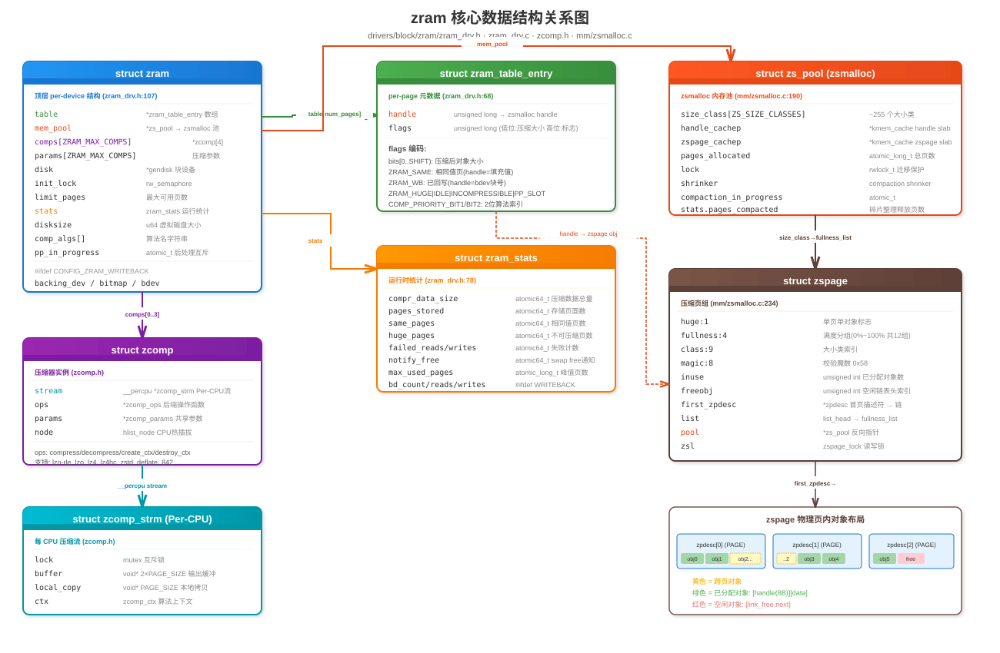
struct zram（drivers/block/zram/zram_drv.h:107）— 顶层设备结构体：
struct zram {
struct zram_table_entry *table; // per-page 元数据数组（disksize/PAGE_SIZE 个）
struct zs_pool *mem_pool; // zsmalloc 内存池
struct zcomp *comps[ZRAM_MAX_COMPS]; // 压缩器（最多 4 个）
struct zcomp_params params[ZRAM_MAX_COMPS]; // 压缩参数
struct gendisk *disk; // 块设备 gendisk
struct rw_semaphore init_lock; // 保护 init/reset
unsigned long limit_pages; // 最大可使用页数
struct zram_stats stats; // 运行时统计
u64 disksize; // 虚拟磁盘大小（字节）
const char *comp_algs[ZRAM_MAX_COMPS]; // 算法名
s8 num_active_comps; // 活跃压缩器数
atomic_t pp_in_progress; // writeback/recompress 互斥
#ifdef CONFIG_ZRAM_WRITEBACK
struct file *backing_dev; // 后端设备文件
unsigned long *bitmap; // 后端设备块位图
unsigned long nr_pages; // 后端设备页数
struct block_device *bdev; // 后端块设备
u64 bd_wb_limit; // writeback 预算
bool wb_limit_enable; // writeback 限制开关
#endif
};struct zram_table_entry（drivers/block/zram/zram_drv.h:68）— per-page 元数据：
struct zram_table_entry {
unsigned long handle; // 多用途：
// 普通压缩: zsmalloc handle
// ZRAM_SAME: 填充值
// ZRAM_WB: 后端设备块索引
unsigned long flags; // 低位 [0, ZRAM_FLAG_SHIFT): 压缩后大小
// 高位: 页面标志位
};页面标志位（enum zram_pageflags）：
| 标志 | 含义 |
|---|---|
ZRAM_SAME |
页面被相同值填充，handle 存储填充值 |
ZRAM_ENTRY_LOCK |
用于 bit-lock 的条目锁 |
ZRAM_WB |
页面已 writeback 到后端设备 |
ZRAM_PP_SLOT |
被选中进行后处理（writeback/recompress） |
ZRAM_HUGE |
不可压缩页面（原始大小存储） |
ZRAM_IDLE |
自上次标记以来未被访问 |
ZRAM_INCOMPRESSIBLE |
所有算法均无法有效压缩 |
ZRAM_COMP_PRIORITY_BIT1/BIT2 |
2 位压缩算法优先级索引 |
struct zram_stats（drivers/block/zram/zram_drv.h:78）— 运行时统计：
struct zram_stats {
atomic64_t compr_data_size; // 压缩数据总字节数
atomic64_t failed_reads; // 失败读取次数
atomic64_t failed_writes; // 失败写入次数
atomic64_t notify_free; // swap slot free 通知次数
atomic64_t same_pages; // 相同值页面数
atomic64_t huge_pages; // 当前不可压缩页面数
atomic64_t huge_pages_since; // 累计不可压缩页面数
atomic64_t pages_stored; // 当前存储总页面数
atomic_long_t max_used_pages; // 峰值 zsmalloc 页面使用量
atomic64_t miss_free; // trylock 失败的 free 次数
#ifdef CONFIG_ZRAM_WRITEBACK
atomic64_t bd_count; // 后端设备上的页面数
atomic64_t bd_reads; // 后端设备读次数
atomic64_t bd_writes; // 后端设备写次数
#endif
};struct zcomp（drivers/block/zram/zcomp.h）— 压缩器实例：
struct zcomp {
struct zcomp_strm __percpu *stream; // Per-CPU 压缩流
const struct zcomp_ops *ops; // 后端操作函数
struct zcomp_params *params; // 共享压缩参数
struct hlist_node node; // CPU 热插拔节点
};
struct zcomp_strm {
struct mutex lock; // 保护当前 CPU 的流
void *buffer; // 2×PAGE_SIZE 压缩输出缓冲
void *local_copy; // PAGE_SIZE 本地拷贝（用于 zs_obj_read）
struct zcomp_ctx ctx; // 后端上下文
};设备属性（/sys/block/zramN/）：
| 属性 | 模式 | 说明 |
|---|---|---|
disksize |
RW | 设置/读取虚拟磁盘大小（memparse 格式：512M、2G 等） |
initstate |
RO | 0=未初始化，1=已初始化 |
reset |
WO | 写 1 重置设备（需先 swapoff） |
compact |
WO | 触发 zsmalloc 碎片整理 |
mem_limit |
WO | 设置最大内存限制 |
mem_used_max |
WO | 写 0 重置峰值统计 |
idle |
WO | "all" 或秒数，标记页面为 IDLE |
comp_algorithm |
RW | 主压缩算法名 |
algorithm_params |
WO | 压缩参数：algo=X level=N dict=/path |
mm_stat 输出解读（9 个字段）：
cat /sys/block/zram0/mm_stat
# 字段1 orig_data_size: 原始数据总大小（字节）= pages_stored × PAGE_SIZE
# 字段2 compr_data_size: 压缩后数据总大小（字节）
# 字段3 mem_used_total: zsmalloc 实际使用的总内存（字节）
# 字段4 mem_limit: 内存限制（0=无限制）
# 字段5 max_used_pages: 峰值使用页数
# 字段6 same_pages: 相同值填充页面数
# 字段7 pages_compacted: 碎片整理释放的页数
# 字段8 huge_pages: 当前不可压缩页面数
# 字段9 huge_pages_since: 累计不可压缩页面数
# 压缩率 = orig_data_size / compr_data_size
# 实际内存节省 = orig_data_size - mem_used_totalwriteback 相关属性（需 CONFIG_ZRAM_WRITEBACK）：
| 属性 | 模式 | 说明 | ||
|---|---|---|---|---|
backing_dev |
RW | 后端设备路径（需在 disksize 设置前配置） | ||
writeback |
WO | 触发 writeback：`type=idle\ | huge\ | ...` |
writeback_limit |
RW | writeback 预算（4K 单位） | ||
writeback_limit_enable |
RW | 启用 writeback 限制 | ||
bd_stat |
RO | bd_count bd_reads bd_writes（4K 单位） |
热添加/移除（/sys/class/zram-control/）：
# 动态添加 zram 设备
cat /sys/class/zram-control/hot_add # 返回新设备 ID
# 动态移除 zram 设备
echo 1 > /sys/class/zram-control/hot_remove # 移除 zram1| 配置选项 | 说明 |
|---|---|
CONFIG_ZRAM |
zram 驱动总开关 |
CONFIG_ZRAM_DEF_COMP |
默认压缩算法（默认 "lzo-rle"） |
CONFIG_ZRAM_WRITEBACK |
允许将冷页回写到后端设备 |
CONFIG_ZRAM_MULTI_COMP |
支持多级压缩算法（最多 4 种） |
CONFIG_ZRAM_MEMORY_TRACKING |
启用 per-page 访问时间追踪（debugfs） |
模块参数：
num_devices=N # 模块加载时创建的 zram 设备数（默认 1）调优建议：
| 场景 | disksize | 算法 | 说明 |
|---|---|---|---|
| Android 手机（4GB RAM） | 2-3 GB | lz4 | 解压快，省电 |
| Android 手机（8GB RAM） | 4-6 GB | lz4 或 lzo-rle | 平衡 |
| 嵌入式 Linux（512MB RAM） | 256-384 MB | lzo-rle | 内存开销低 |
| 桌面 Linux（16GB RAM） | 4-8 GB | zstd | 重压缩率 |
zswap 是一个透明的 Swap 前端压缩缓存。当匿名页被换出时，zswap 拦截 Swap 写操作，将页面压缩后缓存在内存中；当页面需要换入时，从压缩缓存中直接解压，避免磁盘 I/O。若压缩池满，zswap 将最冷的压缩页通过 LRU 写回到真实 Swap 设备。
匿名页换出
│
▼
┌───── Swap 子系统 ─────┐
│ │
│ __swap_writepage() │
│ │ │
│ ▼ │
│ zswap_store(folio) │ ← zswap 拦截写入
│ │ │
│ ┌───┴───┐ │
│ │压缩成功│ │
│ └───┬───┘ │
│ │ │
│ ▼ │
│ ┌─────────────────┐ │
│ │ zswap 压缩缓存 │ │
│ │ │ │
│ │ xarray 索引: │ │
│ │ swp_entry_t │ │
│ │ → zswap_entry │ │
│ │ → zs handle │ │
│ │ → 压缩数据 │ │
│ │ │ │
│ │ ┌─── LRU ───┐ │ │
│ │ │ cold ... hot│ │ │
│ │ └────┬───────┘ │ │
│ └──────┼─────────┘ │
│ │ 池满淘汰 │
│ ▼ │
│ 真实 Swap 设备 │
│ (SSD/HDD/eMMC) │
└──────────────────────┘源码：mm/zswap.c（约 1860 行），include/linux/zswap.h。
与 zram 的关键区别：
/dev/zramN，Swap 子系统通过标准块 I/O 与之交互注意：Linux 6.18.1 中 zswap 不再使用 frontswap 接口。早期内核通过 frontswap_ops 注册 zswap，现在改为在 Swap 路径中直接调用 zswap 函数。
集成点在 mm/page_io.c 和 mm/swap_state.c：
// mm/page_io.c - Swap 写入路径
void __swap_writepage(struct folio *folio, struct writeback_control *wbc)
{
// 直接调用 zswap（不经过 frontswap）
if (zswap_store(folio)) { // ← zswap 拦截点
folio_unlock(folio);
return; // 压缩成功，不写真实 Swap
}
// zswap 失败 → 写入真实 Swap 设备
swap_writepage_bdev(folio, wbc);
}
// mm/swap_state.c - Swap 读取路径
struct folio *swap_cluster_readahead(...)
{
// 读取时检查 zswap
if (zswap_load(folio)) // ← zswap 拦截点
return folio; // 从 zswap 解压成功
// 从真实 Swap 设备读取
}zswap_store(folio)（mm/zswap.c:1498）：
zswap_store(folio)
├── 检查 zswap_enabled（静态 key 快速判断）
├── 获取 obj_cgroup（memcg 计费）
├── zswap_check_limits()
│ ├── 计算当前池大小 vs zswap_max_pool_percent × totalram_pages
│ ├── 若超限 → zswap_pool_reached_full = true
│ │ └── queue_work(shrink_wq, &zswap_shrink_work) → 异步回收
│ └── 若低于 accept_threshold → zswap_pool_reached_full = false
│
├── zswap_pool_current_get() → 获取当前池（RCU 保护 + percpu_ref）
│
├── for each page in folio: → 逐页处理
│ └── zswap_store_page(page, objcg, pool)
│ ├── zswap_entry_cache_alloc() → 从 slab 分配 zswap_entry
│ │
│ ├── zswap_compress(page, entry, pool)
│ │ ├── acomp_ctx_get_cpu_lock(pool) → 获取 Per-CPU 压缩上下文
│ │ ├── sg_init_one(src_sg, page)
│ │ ├── sg_init_one(dst_sg, acomp_ctx->buffer)
│ │ ├── crypto_acomp_compress(req) → 异步压缩 API（同步等待）
│ │ ├── crypto_wait_req()
│ │ │
│ │ ├── if dlen >= PAGE_SIZE: → 不可压缩
│ │ │ └── store_uncompressed = true → 原样存储
│ │ │
│ │ ├── zs_malloc(pool->zs_pool, dlen,
│ │ │ GFP_NOWAIT|__GFP_NORETRY|__GFP_HIGHMEM|__GFP_MOVABLE)
│ │ └── zs_obj_write(pool->zs_pool, handle, dst, dlen)
│ │
│ ├── xa_store(tree, offset, entry) → 存入 xarray（按 swap_entry 索引）
│ ├── 若替换旧条目 → zswap_entry_free(old)
│ ├── 设置 entry 字段: pool, swpentry, objcg, referenced=true
│ ├── zswap_lru_add(&zswap_list_lru, entry) → 加入 LRU 链表
│ └── atomic_long_inc(&zswap_stored_pages)
│
└── 失败时释放资源，若池满触发 shrink_workerxarray 索引方案：
// mm/zswap.c
#define ZSWAP_ADDRESS_SPACE_SHIFT 14 // 每个 xarray 覆盖 2^14 = 16384 页 = 64MB
#define ZSWAP_ADDRESS_SPACE_PAGES (1 << ZSWAP_ADDRESS_SPACE_SHIFT)
// 每个 swap 类型有多个 xarray，按 offset 分段
static struct xarray *swap_zswap_tree(swp_entry_t swp) {
return &zswap_trees[swp_type(swp)][swp_offset(swp) >> ZSWAP_ADDRESS_SPACE_SHIFT];
}zswap_load(folio)（mm/zswap.c:1590）：
zswap_load(folio)
├── 拒绝大 folio（zswap 不支持）
├── xa_load(tree, offset) → 查找 zswap_entry
├── zswap_decompress(entry, folio)
│ ├── acomp_ctx_get_cpu_lock(pool)
│ ├── zs_obj_read_begin(pool->zs_pool, handle, buffer)
│ │ → 映射压缩数据（可能跨页拷贝到 buffer）
│ │
│ ├── if entry->length == PAGE_SIZE:
│ │ └── memcpy_to_folio() → 未压缩页直接拷贝
│ ├── else:
│ │ ├── sg_init_one(src, data, entry->length)
│ │ ├── sg_init_one(dst, page, PAGE_SIZE)
│ │ └── crypto_acomp_decompress(req) + crypto_wait_req()
│ │
│ └── zs_obj_read_end()
│
├── folio_mark_uptodate(folio)
├── count_vm_event(ZSWPIN)
│
├── if 加载到 swapcache:
│ ├── xa_erase(tree, offset) → 从 xarray 删除
│ └── zswap_entry_free(entry) → 释放条目 + zsmalloc 空间
└── else (同步 I/O fault):
└── 保留条目作为主拷贝当 zswap 压缩池接近限制时，通过 LRU writeback 将最冷的压缩页解压写回真实 Swap 设备，释放压缩池空间。
两层淘汰机制：
SHRINKER_NUMA_AWARE | SHRINKER_MEMCG_AWARE，当系统内存紧张时由内存回收框架调用zswap_max_pool_percent 限制时，异步工作队列回收Shrinker 回调：
// mm/zswap.c - shrink_memcg_cb()
static enum lru_status shrink_memcg_cb(struct list_head *item, ...)
{
struct zswap_entry *entry = container_of(item, ...);
// Second-chance 策略：若 entry 最近被访问过，给第二次机会
if (entry->referenced) {
entry->referenced = false;
return LRU_ROTATE; // 移到 LRU 尾部（最近端）
}
// 写回到真实 Swap
ret = zswap_writeback_entry(entry);
if (ret == 0)
zswap_written_back_pages++;
if (ret == -EEXIST)
return LRU_STOP; // 页面已在 swapcache，停止扫描
return LRU_REMOVED;
}writeback 到真实 Swap：
zswap_writeback_entry(entry)
├── __read_swap_cache_async() → 分配 swapcache folio
├── 验证 entry 仍然有效（xarray 中）
├── zswap_decompress(entry, folio) → 解压到 folio
├── xa_erase() + zswap_entry_free() → 从 zswap 删除
└── __swap_writepage(folio) → 写入真实 Swap 设备（bio I/O）Shrink Worker（shrink_worker()，mm/zswap.c:1313）：
shrink_worker() ← work_struct，由 zswap_check_limits() 触发
├── 目标: 回收到 zswap_accept_thr_pages()
│ = zswap_max_pool_percent × totalram × accept_thr_percent / 100
│
├── while (zswap_stored_pages > target):
│ ├── zswap_next_shrink → 获取下一个 memcg（轮询）
│ ├── shrink_memcg(memcg)
│ │ └── list_lru_walk_one() per NUMA node
│ │ └── shrink_memcg_cb() → writeback entries
│ └── 处理 memcg offline → zswap_memcg_offline_cleanup()
└── 回收完成或达到重试上限Linux 6.18.1 重要变更：zpool 抽象层已被移除。zswap 直接使用 zsmalloc 接口。
在早期内核（<6.x）中，zswap 通过 zpool 抽象层支持三种后端分配器（zbud / z3fold / zsmalloc）。在 6.18.1 中，zswap 直接调用 zsmalloc API：
// mm/zswap.c - 直接调用 zsmalloc（无 zpool 中间层）
pool->zs_pool = zs_create_pool(name); // 创建池
handle = zs_malloc(pool->zs_pool, dlen, gfp, nid); // 分配
zs_obj_write(pool->zs_pool, handle, data, dlen); // 写入
ptr = zs_obj_read_begin(pool->zs_pool, handle, buf); // 读取
zs_obj_read_end(pool->zs_pool, handle, ptr); // 结束读
zs_free(pool->zs_pool, handle); // 释放zswap 池生命周期：
zswap_pool_create(compressor)
├── kzalloc(struct zswap_pool)
├── zs_create_pool(name) → 创建 zsmalloc 池
├── alloc_percpu(struct crypto_acomp_ctx) → Per-CPU 加密压缩上下文
├── cpuhp_state_add_instance() → 为每个在线 CPU 初始化
└── percpu_ref_init(&pool->ref) → 引用计数初始化
zswap_pool_destroy(pool)
├── cpuhp_state_remove_instance()
├── per-CPU crypto 资源释放
├── zs_destroy_pool(pool->zs_pool)
└── kfree(pool)
// 池切换（更换压缩算法时）
zswap_compressor_param_set()
├── 查找已有匹配池 或 创建新池
├── list_add_rcu(&pool->list, &zswap_pools) → 新池加入链表头（成为当前池）
└── percpu_ref_kill(old_pool) → 旧池引退（等待引用归零后销毁）struct zswap_pool（mm/zswap.c:153）：
struct zswap_pool {
struct zs_pool *zs_pool; // zsmalloc 内存池
struct crypto_acomp_ctx __percpu *acomp_ctx; // Per-CPU 压缩上下文
struct percpu_ref ref; // 快速路径引用计数
struct list_head list; // zswap_pools 链表节点
struct work_struct release_work; // 延迟销毁工作
struct hlist_node node; // CPU 热插拔节点
char tfm_name[CRYPTO_MAX_ALG_NAME]; // 压缩算法名
};struct zswap_entry（mm/zswap.c:185）：
struct zswap_entry {
swp_entry_t swpentry; // 关联的 swap entry（索引 xarray 的 key）
unsigned int length; // 压缩后数据长度
bool referenced; // second-chance 位（LRU 淘汰时参考）
struct zswap_pool *pool; // 所属压缩池
unsigned long handle; // zsmalloc 分配 handle
struct obj_cgroup *objcg; // memcg 计费
struct list_head lru; // LRU 链表节点
};xarray 索引（替代早期的 rbtree）：
// 全局 xarray 数组（per-swap-type, per-64MB-segment）
static struct xarray *zswap_trees[MAX_SWAPFILES];
// 初始化时（swapon 调用 zswap_swapon）
void zswap_swapon(int type, unsigned long nr_pages)
{
unsigned int nr_trees = DIV_ROUND_UP(nr_pages, ZSWAP_ADDRESS_SPACE_PAGES);
trees = kvcalloc(nr_trees, sizeof(*trees), GFP_KERNEL);
for (i = 0; i < nr_trees; i++)
xa_init(trees + i);
zswap_trees[type] = trees;
}zswap 在 Linux 6.18.1 中深度集成了 memcg（memory cgroup）：
1. 存储时 memcg 计费：
// zswap_store_page() 中
entry->objcg = get_obj_cgroup_from_folio(folio); // 获取 cgroup
// zs_malloc 使用 __GFP_ACCOUNT 标志，内存计入 cgroup2. memcg-aware LRU：
// 全局 LRU 使用 list_lru（memcg 感知）
static struct list_lru zswap_list_lru;
// 初始化
list_lru_init_memcg(&zswap_list_lru, shrinker);
// 添加条目时使用 memcg 感知的添加
list_lru_add(&zswap_list_lru, &entry->lru, nid, entry->objcg);3. memcg-aware shrinker：
// shrinker 注册为 SHRINKER_MEMCG_AWARE
zswap_shrinker = shrinker_alloc(SHRINKER_NUMA_AWARE | SHRINKER_MEMCG_AWARE);
// → 内存回收时按 memcg 粒度回收 zswap 条目4. per-memcg 统计：
struct zswap_lruvec_state {
atomic_long_t nr_disk_swapins; // 惩罚过度回收的计数器
};
// 用于 shrinker_count 中减去 disk swapin 数，避免过度回收 zswap5. memcg 下线处理：当一个 memcg 被删除时，其 zswap 条目需要迁移到父 memcg 的 LRU 中。
/sys/kernel/debug/zswap/ 目录：
| 文件 | 含义 |
|---|---|
pool_limit_hit |
池大小达到限制的次数 |
reject_reclaim_fail |
因回收失败拒绝的 store 次数 |
reject_alloc_fail |
因 zsmalloc 分配失败拒绝的次数 |
reject_kmemcache_fail |
因 slab 分配 entry 失败拒绝的次数 |
reject_compress_fail |
压缩算法失败的次数 |
reject_compress_poor |
压缩率太差被拒绝的次数 |
decompress_fail |
解压缩失败的次数 |
written_back_pages |
已写回到真实 Swap 的页数 |
pool_total_size |
池总大小（字节） |
stored_pages |
当前存储的页数 |
stored_incompressible_pages |
不可压缩页数（原样存储） |
监控示例：
# 查看 zswap 整体状态
for f in /sys/kernel/debug/zswap/*; do echo "$(basename $f): $(cat $f)"; done
# 计算压缩率
stored=$(cat /sys/kernel/debug/zswap/stored_pages)
pool_size=$(cat /sys/kernel/debug/zswap/pool_total_size)
if [ "$pool_size" -gt 0 ]; then
orig_size=$((stored * 4096))
echo "压缩率: $(echo "scale=2; $orig_size / $pool_size" | bc):1"
fi
# 查看拒绝原因分布
echo "分配失败: $(cat /sys/kernel/debug/zswap/reject_alloc_fail)"
echo "回收失败: $(cat /sys/kernel/debug/zswap/reject_reclaim_fail)"
echo "压缩太差: $(cat /sys/kernel/debug/zswap/reject_compress_poor)"编译配置：
| 配置选项 | 说明 |
|---|---|
CONFIG_ZSWAP |
zswap 功能总开关 |
CONFIG_ZSWAP_DEFAULT_ON |
默认启用 zswap（否则需 boot 参数开启） |
CONFIG_ZSWAP_COMPRESSOR_DEFAULT |
默认压缩算法（通常 "lzo-rle" 或 "zstd"） |
CONFIG_ZSWAP_SHRINKER_DEFAULT_ON |
默认启用 shrinker（内存压力时自动回收） |
模块参数（Boot 参数或 /sys/module/zswap/parameters/）：
| 参数 | 默认值 | 说明 |
|---|---|---|
enabled |
CONFIG_ZSWAP_DEFAULT_ON |
启用/禁用 zswap |
compressor |
CONFIG_ZSWAP_COMPRESSOR_DEFAULT |
压缩算法名 |
max_pool_percent |
20 | 池大小上限（占总内存的百分比） |
accept_threshold_percent |
90 | 恢复接受阈值（占 max_pool 的百分比） |
shrinker_enabled |
CONFIG_ZSWAP_SHRINKER_DEFAULT_ON |
shrinker 开关 |
调优指南：
# 服务器场景：增大池，用 zstd 提高压缩率
echo 35 > /sys/module/zswap/parameters/max_pool_percent
echo zstd > /sys/module/zswap/parameters/compressor
# 确保真实 Swap 已配置（zswap 需要 Swap 后端）
swapon --show
# 验证 zswap 正在工作
grep -r . /sys/kernel/debug/zswap/ 2>/dev/null压缩页的大小从几十字节到接近 4096 字节不等，传统的 slab/buddy 分配器会产生严重的内部碎片。例如一个 200 字节的压缩对象在 buddy 分配器中至少占用一个 4K 页面，浪费 95%。
zsmalloc 的核心设计目标：
传统 slab 分配器:
┌────────┐ ┌────────┐ ┌────────┐
│obj(200B)│ │obj(500B)│ │obj(100B)│
│空闲3896B│ │空闲3596B│ │空闲3996B│
└────────┘ └────────┘ └────────┘
每个对象独占一个页面 → 利用率低
zsmalloc:
┌──────────────────────────────────┐
│obj1(200)|obj2(500)|obj3(100)|obj │ ← zspage (1-N 个物理页)
│4(300)|obj5(200)|obj6(800)|obj7(.│ 对象紧密排列，跨页存储
│..)|obj8(150)|obj9(...) │
└──────────────────────────────────┘
多个对象共享页面 → 利用率高源码：mm/zsmalloc.c（约 2200 行），include/linux/zsmalloc.h，mm/zpdesc.h。
zspage 是 zsmalloc 的基本分配单元，由 1 到 ZS_MAX_PAGES_PER_ZSPAGE（CONFIG_ZSMALLOC_CHAIN_SIZE，默认 4）个物理页链接组成：
struct zspage (元数据)
│
├── first_zpdesc ──► zpdesc[0] ──► zpdesc[1] ──► zpdesc[2] ──► NULL
│ (PG_private set)
│
│ 物理页0 物理页1 物理页2
│ ┌─────────────────┐ ┌─────────────────┐ ┌─────────────────┐
│ │[obj0][obj1][obj2│ │][obj3][obj4][obj5│ │][obj6][obj7] │
│ │ │ │ │ │ ^^^^ │
│ └─────────────────┘ └─────────────────┘ └─── free space──┘
│ ▲ ▲
│ └── obj2 跨页边界 ───┘ 对象可以跨越页面边界！
│
├── inuse: 5 (已分配对象数)
├── freeobj: 5 (空闲链表头，指向 obj5 的索引)
└── fullness: ZS_INUSE_RATIO_60 (60% 满)zpdesc（mm/zpdesc.h:34）是 zspage 中物理页的描述符，覆盖 struct page：
struct zpdesc {
unsigned long flags; // 页面标志
struct list_head lru; // 页面迁移使用
struct zpdesc *next; // 链表下一页（union with handle）
unsigned long handle; // huge 对象的 handle（union with next）
struct zspage *zspage; // 反向指针到 zspage
unsigned int first_obj_offset; // 低 24 位: 首个对象偏移; 高 8 位: PGTY_zsmalloc
atomic_t _refcount; // 引用计数
};空闲链表：每个未分配的对象位置存储一个 struct link_free：
struct link_free {
union {
unsigned long next; // 空闲对象: 下一个空闲对象的索引
unsigned long handle; // 已分配对象: 反向指向 handle 地址
};
};大小类计算（mm/zsmalloc.c:2042）：
zsmalloc 将对象按大小分为 ~255 个类（4K 页面时）：
大小类粒度: ZS_SIZE_CLASS_DELTA = PAGE_SIZE >> CLASS_BITS = 4096 >> 8 = 16 字节
最小对象: ZS_MIN_ALLOC_SIZE = 32 字节
最大对象: ZS_MAX_ALLOC_SIZE = PAGE_SIZE = 4096 字节
size_class[0]: size=32 → 对象大小 32 字节
size_class[1]: size=48 → 对象大小 48 字节
size_class[2]: size=64 → 对象大小 64 字节
...
size_class[N]: size=4096 → 对象大小 4096 字节（huge class）大小类合并优化：如果相邻大小类具有相同的 pages_per_zspage 和 objs_per_zspage，共享同一个 size_class 结构，减少内存开销。
分配策略：优先从最满的 zspage 中分配（从 ZS_INUSE_RATIO_99 向下扫描），以聚合空间使空闲 zspage 更快被释放：
// mm/zsmalloc.c - find_get_zspage()
static struct zspage *find_get_zspage(struct size_class *class)
{
// 从 99% 满度开始扫描，到 0% 满度
for (i = ZS_INUSE_RATIO_99; i >= ZS_INUSE_RATIO_0; i--) {
zspage = list_first_entry_or_null(&class->fullness_list[i], ...);
if (zspage)
return zspage;
}
return NULL;
}满度分组（12 组）：
| 组 | 满度范围 | 说明 |
|---|---|---|
ZS_INUSE_RATIO_0 |
0% | 空 zspage（可释放） |
ZS_INUSE_RATIO_10 |
1-10% | |
ZS_INUSE_RATIO_20 |
11-20% | |
| ... | ... | |
ZS_INUSE_RATIO_99 |
91-99% | 几乎满 |
ZS_INUSE_RATIO_100 |
100% | 全满（不参与分配） |
注意：Linux 6.18.1 中，zs_map_object/zs_unmap_object已被zs_obj_read_begin/zs_obj_read_end/zs_obj_write替代。
读取对象（zs_obj_read_begin()，mm/zsmalloc.c:1064）：
void *zs_obj_read_begin(struct zs_pool *pool, unsigned long handle, void *local_copy)
{
// 1. 加锁防迁移
read_lock(&pool->lock);
// 解码 handle → (zpdesc, obj_idx, zspage)
zspage_read_lock(zspage); // 防止并发迁移
read_unlock(&pool->lock);
// 2. 计算对象在页内的偏移
off = offset_in_page(class->size * obj_idx);
// 3. 判断对象是否在单个页面内
if (off + class->size <= PAGE_SIZE) {
// 单页对象 → 直接 kmap_local 返回指针
addr = kmap_local_zpdesc(zpdesc);
return addr + off + ZS_HANDLE_SIZE;
} else {
// 跨页对象 → 拷贝到 local_copy
memcpy_from_page(local_copy, zpdesc, off, first_part_size);
memcpy_from_page(local_copy + first_part_size, next_zpdesc, 0, second_part_size);
return local_copy + ZS_HANDLE_SIZE;
}
}写入对象（zs_obj_write()，mm/zsmalloc.c:1128）：
void zs_obj_write(struct zs_pool *pool, unsigned long handle, void *mem, size_t mem_len)
{
// 类似 read_begin 的加锁和解码
if (off + class->size <= PAGE_SIZE) {
// 单页 → 直接写入
kmap_local + memcpy
} else {
// 跨页 → 分两次写入
memcpy_to_page(zpdesc, off, mem, first_part);
memcpy_to_page(next_zpdesc, 0, mem + first_part, second_part);
}
}zsmalloc 支持 compaction，将多个半空的 zspage 中的对象合并到更少的 zspage 中，释放空出的页面。
触发方式：
zs_compact(pool) — 通过 zram sysfs compact 触发compaction 流程（__zs_compact()，mm/zsmalloc.c:1843）：
__zs_compact(pool, class)
├── write_lock(&pool->lock) + class->lock
│
├── while zs_can_compact(class) > 0:
│ ├── dst = isolate_dst_zspage(class) → 最满的非满 zspage（RATIO_99→10）
│ ├── src = isolate_src_zspage(class) → 最空的非空 zspage（RATIO_10→99）
│ ├── zspage_write_trylock(src) → 获取写锁
│ │
│ ├── migrate_zspage(pool, src, dst)
│ │ └── for each allocated obj in src:
│ │ ├── obj_malloc(dst) → 在 dst 分配新位置
│ │ ├── zs_object_copy(src_obj, dst_obj) → 拷贝数据（处理跨页）
│ │ ├── record_obj(handle, new_obj) → 更新 handle 指向
│ │ └── obj_free(src_obj) → 释放 src 中旧位置
│ │
│ ├── putback_zspage(src)
│ │ └── if inuse == 0 → free_zspage() → 释放物理页
│ └── putback_zspage(dst)
│
└── pages_compacted 统计更新handle 间接层：每个已分配对象在数据前有 ZS_HANDLE_SIZE（8 字节）存储 handle 的反向指针。compaction 迁移对象时，只需更新 handle 中的对象位置编码，zram 侧的 zram_table_entry.handle 不变。这就是 zsmalloc 能透明迁移对象的关键设计。
struct zs_pool（mm/zsmalloc.c:190）：
struct zs_pool {
const char *name;
struct size_class *size_class[ZS_SIZE_CLASSES]; // ~255 个大小类
struct kmem_cache *handle_cachep; // handle slab 缓存
struct kmem_cache *zspage_cachep; // zspage 元数据 slab 缓存
atomic_long_t pages_allocated; // 总分配页数
struct zs_pool_stats stats; // 统计（pages_compacted）
struct shrinker *shrinker; // compaction shrinker
rwlock_t lock; // 保护迁移/compaction
atomic_t compaction_in_progress; // 防止并发 compaction
};struct size_class（mm/zsmalloc.c:157）：
struct size_class {
spinlock_t lock; // 保护类操作
struct list_head fullness_list[NR_FULLNESS_GROUPS]; // 12 个满度分组链表
int size; // 对象大小（含 ZS_HANDLE_SIZE）
int objs_per_zspage; // 一个 zspage 能容纳的对象数
int pages_per_zspage; // zspage 由多少个物理页组成
unsigned int index; // 大小类索引
struct zs_size_stat stats; // 每类统计
};struct zspage（mm/zsmalloc.c:234）：
struct zspage {
unsigned int huge:HUGE_BITS; // 1: 单页单对象
unsigned int fullness:FULLNESS_BITS; // 4: 当前满度分组索引
unsigned int class:CLASS_BITS+1; // 9: 大小类索引
unsigned int magic:MAGIC_VAL_BITS; // 8: 校验魔数 0x58
unsigned int inuse; // 已使用对象数
unsigned int freeobj; // 空闲链表头索引
struct zpdesc *first_zpdesc; // 第一个物理页描述符
struct list_head list; // 链入 size_class 满度列表
struct zs_pool *pool; // 反向指针到池
struct zspage_lock zsl; // 自定义读写锁
};Handle 编码：
// 编码: handle = (PFN << OBJ_INDEX_BITS) | obj_index
// PFN: zspage 首页的页帧号
// obj_index: 对象在 zspage 中的索引
// 解码: obj_to_location(handle) → (zpdesc, obj_idx)zspage 锁语义（struct zspage_lock）：
| 操作 | 阻塞条件 | 可休眠 | 使用场景 |
|---|---|---|---|
zspage_read_lock() |
写锁 | 是 | zs_obj_read_begin/write |
zspage_write_trylock() |
读锁+写锁 | 否（trylock） | 迁移、compaction |
zspage_read_unlock() |
— | — | |
zspage_write_unlock() |
— | — |
注意：在 Linux 6.18.1 中，zbud 和 z3fold 已被移除。仅保留 zsmalloc 作为唯一的压缩页面分配器。
| 维度 | zsmalloc | zbud（已移除） | z3fold（已移除） |
|---|---|---|---|
| 每页对象数 | 多个（取决于大小） | 最多 2 个 | 最多 3 个 |
| 对象跨页 | ✓ | ✗ | ✗ |
| 内存利用率 | 高（紧密打包） | 低（最多 50%） | 中等（最多 75%） |
| 碎片整理 | ✓（compaction） | ✗ | ✓ |
| 页面迁移 | ✓ | ✗ | ✗ |
| 复杂度 | 高 | 低 | 中 |
| 移除原因 | 保留 | 利用率太低 | 被 zsmalloc 超越 |
swap_entry_t — Swap 条目编码：
// include/linux/swapops.h
typedef struct {
unsigned long val; // 编码: type(高位) | offset(低位)
} swp_entry_t;
// type: 标识哪个 swap 设备（最多 MAX_SWAPFILES=32 个）
// offset: 在该 swap 设备中的页槽位号swap_info_struct — 每个 Swap 设备的管理结构：
// include/linux/swap.h
struct swap_info_struct {
unsigned long flags; // SWP_USED | SWP_WRITEOK | ...
signed short prio; // 优先级
struct plist_node list; // swap_active_head 链表
unsigned int max; // 最大页槽数
unsigned char *swap_map; // per-slot 引用计数
struct swap_cluster_info *cluster_info; // 簇管理
struct file *swap_file; // 后端文件/设备
// ...
};swap cache — 换入换出的中间缓存：
swap out 路径:
anon page → add_to_swap() → 分配 swap slot → add_to_swap_cache()
→ __swap_writepage() → zswap_store() 或 实际 I/O
swap in 路径:
page fault → lookup_swap_cache() → 命中则直接返回
→ 未命中 → swap_readpage() → zswap_load() 或从设备读取
→ 加入 swap cache → 映射到进程页表从内存压力到压缩的完整调用链：
内存紧张触发 (watermark 低于 low)
│
├── kswapd 被唤醒 (异步回收)
│ └── balance_pgdat()
│ └── shrink_node()
│ └── shrink_lruvec()
│ └── shrink_folio_list()
│ └── pageout()
│ └── 对匿名 folio:
│ └── add_to_swap(folio) → 分配 swap slot
│ └── __swap_writepage(folio) → 实际写出
│ ├── zswap_store(folio) → zswap 拦截（成功则完成）
│ └── swap_writepage_bdev() → 失败则写真实设备
│
└── direct reclaim (进程在 alloc 路径同步回收)
└── __alloc_pages_slowpath()
└── __perform_reclaim()
└── try_to_free_pages()
└── shrink_zones()
└── 同上 shrink_node() 路径zram 作为 Swap 时的路径差异：
当 /dev/zram0 作为 Swap 设备时，__swap_writepage() 通过块 I/O 层提交 bio，bio 最终到达 zram_submit_bio() → zram_bio_write() → zram_write_page()。这与 zswap 的函数调用拦截方式不同。
Zone Watermarks
pages_high ─────── ▲ ── kswapd 停止回收
│
pages_low ─────── │ ── kswapd 被唤醒（异步回收开始）
│
pages_min ─────── │ ── direct reclaim 开始（进程阻塞）
│
0 ─────── ▼ ── OOM killer 触发
kswapd 回收时:
└── 回收文件页（丢弃 clean page cache）
└── 回收匿名页 → swap out → zswap_store() 或 zram bio write
└── swappiness 参数控制 文件页:匿名页 的回收比例当 zswap 池达到限制时，采用分级降级策略：
// mm/zswap.c
static bool zswap_check_limits(void)
{
cur_pages = zswap_total_pages(); // 当前池大小
thr = zswap_accept_thr_pages(); // = max_pool × accept_thr_percent / 100
max = zswap_max_pages(); // = totalram × max_pool_percent / 100
if (cur_pages < thr) {
zswap_pool_reached_full = false;
return true; // 正常接受
}
if (cur_pages > max) {
if (!zswap_pool_reached_full)
zswap_pool_reached_full = true;
// 触发异步回收
queue_work(shrink_wq, &zswap_shrink_work);
}
return !zswap_pool_reached_full; // 池满时拒绝新页
}降级行为：
| 池状态 | 行为 | 被拒绝的页面去向 |
|---|---|---|
| 低于 accept_threshold | 正常接受压缩 | — |
| accept_threshold ~ max | 正常接受 + 异步回收 | — |
| 超过 max（首次） | 拒绝新页 + 启动 shrink_worker | 写入真实 Swap 设备 |
| 回收到 accept_threshold 以下 | 恢复接受 | — |
内存压缩通过减少 Swap I/O 间接影响 OOM：
/proc/meminfo 中 SwapFree 反映 Swap 设备（包括 zram）的可用空间，OOM killer 通过 mem_cgroup_oom() 路径检查可用内存zswap 使用内核 crypto 子系统的异步压缩 API（acomp），而 zram 使用自己的 zcomp 抽象层直接调用各算法后端。
zswap 使用 crypto acomp：
// mm/zswap.c - Per-CPU 加密压缩上下文
struct crypto_acomp_ctx {
struct crypto_acomp *acomp; // 异步压缩算法句柄
struct acomp_req *req; // 压缩请求
struct crypto_wait wait; // 同步等待结构
u8 *buffer; // PAGE_SIZE 弹性缓冲
struct mutex mutex; // 保护 Per-CPU 上下文
bool is_sleepable;
};
// 压缩调用
acomp_request_set_params(req, src_sg, dst_sg, PAGE_SIZE, dlen);
crypto_acomp_compress(req);
crypto_wait_req(ret, &ctx->wait); // 同步等待完成zram 使用 zcomp 抽象层：
// drivers/block/zram/zcomp.c
struct zcomp_ops {
int (*compress)(struct zcomp_params *, struct zcomp_ctx *, struct zcomp_req *);
int (*decompress)(struct zcomp_params *, struct zcomp_ctx *, struct zcomp_req *);
int (*create_ctx)(struct zcomp_params *, struct zcomp_ctx *);
void (*destroy_ctx)(struct zcomp_ctx *);
const char *name;
};
// 注册的后端数组
static const struct zcomp_ops *backends[] = {
&backend_lzorle, &backend_lzo, &backend_lz4, &backend_lz4hc,
&backend_zstd, &backend_deflate, &backend_842,
};// drivers/block/zram/backend_lzorle.c
static int lzorle_compress(struct zcomp_params *params,
struct zcomp_ctx *ctx,
struct zcomp_req *req)
{
int ret;
size_t dlen = req->dst_len;
// 调用 lzo1x_1_compress (lzo-rle 变种，对连续相同字节优化)
ret = lzorle1x_1_compress(req->src, req->src_len,
req->dst, &dlen, ctx->context);
req->dst_len = dlen;
return (ret == LZO_E_OK) ? 0 : ret;
}LZO1X_MEM_COMPRESS ≈ 16KB// drivers/block/zram/backend_lz4.c
static int lz4_compress(struct zcomp_params *params,
struct zcomp_ctx *ctx,
struct zcomp_req *req)
{
struct lz4_ctx *zctx = ctx->context;
int dlen = req->dst_len;
if (zctx->cstrm) {
// 字典模式: 使用流式 API
dlen = LZ4_compress_fast_continue(zctx->cstrm, req->src,
req->dst, req->src_len,
dlen, params->level);
} else {
// 非字典模式: 直接压缩
dlen = LZ4_compress_default(req->src, req->dst,
req->src_len, dlen, zctx->mem);
}
req->dst_len = dlen;
return (dlen > 0) ? 0 : -EINVAL;
}level 参数控制 acceleration（值越大越快但压缩率越低）// drivers/block/zram/backend_zstd.c
static int zstd_compress(struct zcomp_params *params,
struct zcomp_ctx *ctx,
struct zcomp_req *req)
{
struct zstd_ctx *zctx = ctx->context;
size_t ret;
// 使用 ZSTD 上下文压缩（可带字典）
ret = ZSTD_compress2(zctx->cctx, req->dst, req->dst_len,
req->src, req->src_len);
req->dst_len = ret;
return ZSTD_isError(ret) ? -EINVAL : 0;
}CONFIG_ZSWAP_COMPRESSOR_DEFAULT="lzo-rle" 可改）压缩操作需要临时缓冲区，为避免在关键路径上分配内存，使用 Per-CPU 预分配：
zram Per-CPU 流：
// Per-CPU: 每个 CPU 一个 zcomp_strm
struct zcomp_strm {
struct mutex lock; // 互斥锁（保护单 CPU 的流）
void *buffer; // 2×PAGE_SIZE 输出缓冲（可容纳最差压缩结果）
void *local_copy; // PAGE_SIZE 本地拷贝（zs_obj_read 跨页时使用）
struct zcomp_ctx ctx; // 算法特定上下文
};
// 获取/释放: mutex_lock/unlock，CPU 迁移安全
// 若当前 CPU 的 buffer 为 NULL（CPU 已下线），自动重试到其他 CPUzswap Per-CPU 上下文：
// Per-CPU: 每个 CPU 一个 crypto_acomp_ctx
struct crypto_acomp_ctx {
struct crypto_acomp *acomp;
struct acomp_req *req;
u8 *buffer; // PAGE_SIZE 弹性缓冲
struct mutex mutex;
};
// CPU 热插拔: zswap_cpu_comp_prepare / zswap_cpu_comp_dead
// 上线时分配 crypto 上下文 + buffer
// 下线时释放（但 mutex 保护，正在使用的流不会被释放）ARM64 NEON 指令可加速内存拷贝和某些压缩算法的内部操作。内核中使用 NEON 的流程：
// arch/arm64/include/asm/neon.h
void kernel_neon_begin(void); // 保存当前线程的 FPSIMD 状态，允许内核使用 NEON
void kernel_neon_end(void); // 恢复 FPSIMD 状态
// 使用示例（crypto 框架中的 SHA256 NEON 实现）
kernel_neon_begin();
sha256_neon_transform(state, data, blocks);
kernel_neon_end();对于压缩算法：
CRC32 指令可加速校验和计算实际上，当前内核中的压缩算法后端（zram backends）都是纯 C 实现，未直接使用 NEON。加速主要来自 memcpy / memset 等底层函数的 NEON 优化版本。
zsmalloc 的 Cache 挑战：
zspage 跨页对象布局:
Page N: [...|obj_tail(100B)] → cache line A
Page N+1:[obj_head(200B)|...] → cache line B (可能在不同 cache set)
解压路径:
zs_obj_read_begin()
→ 跨页: memcpy 到 local_copy → 额外的 cache miss
→ 单页: 直接 kmap_local 返回指针 → 1 次 cache miss优化建议：
ZS_MAX_PAGES_PER_ZSPAGE（如 1）减少跨页对象，但会增加内部碎片buffer / local_copy）频繁访问，应尽量保持在 cache 中vzalloc 分配，虚拟连续但物理可能不连续ARM64 big.LITTLE 架构下压缩性能差异：
| CPU 类型 | LZ4 压缩 4K | LZO 压缩 4K | ZSTD 压缩 4K |
|---|---|---|---|
| Cortex-A78（大核 2.8GHz） | ~1 μs | ~2 μs | ~5 μs |
| Cortex-A55（小核 1.8GHz） | ~3 μs | ~5 μs | ~15 μs |
| 性能比 | ~3x | ~2.5x | ~3x |
kswapd 和 direct reclaim 中的压缩操作会在当前 CPU 上执行。可通过以下方式优化：
# 将 kswapd 绑定到大核（Android 示例）
echo 0xF0 > /proc/$(pidof kswapd0)/cpuset/cpus # 假设 CPU4-7 是大核
# 或使用 cgroup cpuset
echo 4-7 > /dev/cpuset/system-background/cpus
echo $(pidof kswapd0) > /dev/cpuset/system-background/tasksAndroid 是 zram 最重要的使用场景。典型调优：
# 1. zram 大小：通常为物理 RAM 的 50-75%
# 4GB RAM 设备
echo lz4 > /sys/block/zram0/comp_algorithm
echo 3G > /sys/block/zram0/disksize
mkswap /dev/zram0
swapon -p 32758 /dev/zram0
# 2. swappiness 调整（控制匿名页 vs 文件页回收比例）
echo 100 > /proc/sys/vm/swappiness # Android 默认 100，积极使用 zram
# 3. 监控 zram 效率
cat /sys/block/zram0/mm_stat
# 关注: compr_data_size / orig_data_size = 压缩率
# 若压缩率 > 0.7（即 < 1.4:1），说明数据不易压缩
# 4. 多级压缩（Android 14+）
echo "algo=zstd priority=1" > /sys/block/zram0/recomp_algorithm
echo 2G > /sys/block/zram0/disksize
# 后台定期触发 recompression
echo 600 > /sys/block/zram0/idle
echo "type=idle threshold=3072" > /sys/block/zram0/recompress
# 5. zram writeback（需要独立分区）
echo /dev/block/by-name/zram_wb > /sys/block/zram0/backing_dev
echo 2G > /sys/block/zram0/disksizecat /proc/meminfo | grep -i swap
# SwapTotal: 2097148 kB # Swap 总量（含 zram）
# SwapFree: 1897148 kB # Swap 可用量
# SwapCached: 8192 kB # 换入后仍在 Swap 缓存中的页面
# zswap 统计（需 CONFIG_ZSWAP）
cat /proc/meminfo | grep -i zswap
# Zswap: 102400 kB # zswap 池当前使用内存
# Zswapped: 204800 kB # zswap 中存储的原始数据大小
# 压缩率 ≈ Zswapped / Zswap# mm_stat 完整输出示例
cat /sys/block/zram0/mm_stat
# 1073741824 524288000 536870912 0 134217 65536 1024 128 256
# 解读:
# orig_data_size = 1073741824 (1GB 原始数据)
# compr_data_size = 524288000 (500MB 压缩后数据)
# mem_used_total = 536870912 (512MB zsmalloc 实际使用)
# mem_limit = 0 (无限制)
# max_used_pages = 134217 (峰值: 134217×4K ≈ 524MB)
# same_pages = 65536 (256MB 的相同值页面)
# pages_compacted = 1024 (碎片整理释放了 1024 页)
# huge_pages = 128 (128 个不可压缩页当前存在)
# huge_pages_since = 256 (累计 256 个不可压缩页)
# 效率指标:
# 压缩率 = orig / compr = 1073741824 / 524288000 ≈ 2.05:1
# 内存效率 = orig / mem_used = 1073741824 / 536870912 ≈ 2.0:1
# 相同值占比 = same_pages × 4K / (orig + same_pages × 4K)
# 不可压缩占比 = huge_pages / (pages_stored + same_pages)# 完整状态快照
for f in /sys/kernel/debug/zswap/*; do
printf "%-35s %s\n" "$(basename $f):" "$(cat $f)"
done
# 输出示例:
# stored_pages: 25600
# stored_incompressible_pages: 128
# pool_total_size: 52428800 (50MB 池大小)
# written_back_pages: 1024 (已回写到 Swap 的页数)
# pool_limit_hit: 5 (达到池限制次数)
# reject_reclaim_fail: 3 (回收失败拒绝数)
# reject_alloc_fail: 10 (分配失败拒绝数)
# reject_kmemcache_fail: 0 (slab 分配失败)
# reject_compress_fail: 2 (压缩算法错误)
# reject_compress_poor: 100 (压缩率太差)
# decompress_fail: 0 (解压缩失败)
# 健康指标:
# 压缩率 = (stored_pages × 4096) / pool_total_size = 25600×4096/52428800 ≈ 2.0:1
# 拒绝率 = reject_*/total_attempts (需累计计算)
# 回写效率 = written_back_pages / pool_limit_hitvmstat 1
# procs -----------memory---------- ---swap-- -----io----
# r b swpd free buff cache si so bi bo
# 1 0 51200 12000 100 50000 20 50 20 50
# si (swap in): 从 Swap 换入的 4K 页数/秒
# so (swap out): 换出到 Swap 的 4K 页数/秒
# 对于 zram:
# si/so 反映 zram 的 I/O（压缩/解压次数），不涉及真实磁盘 I/O
# 对于 zswap:
# 只有 zswap 失败或 writeback 时才产生真实 si/so
# 成功的 zswap store/load 不计入 vmstat 的 si/so# 更精确的监控: /proc/vmstat
grep -E "pswpin|pswpout|zswpin|zswpout" /proc/vmstat
# pswpin 120 # 累计换入页数
# pswpout 300 # 累计换出页数
# zswpin 95 # zswap 换入页数（内核 6.x+）
# zswpout 280 # zswap 换出页数# 追踪 zram 写入耗时
echo 0 > /sys/kernel/debug/tracing/tracing_on
echo function_graph > /sys/kernel/debug/tracing/current_tracer
echo zram_write_page > /sys/kernel/debug/tracing/set_graph_function
echo 1 > /sys/kernel/debug/tracing/tracing_on
# 触发一些 swap 活动后查看
cat /sys/kernel/debug/tracing/trace
# 2) + 15.000 us | zram_write_page() {
# 2) 1.200 us | page_same_filled();
# 2) 3.500 us | zcomp_compress(); ← 压缩耗时
# 2) 2.100 us | zs_malloc(); ← 分配耗时
# 2) 1.800 us | zs_obj_write(); ← 写入耗时
# 2) + 10.500 us | }
# 追踪 zswap store 路径
echo zswap_store > /sys/kernel/debug/tracing/set_graph_function问题 1：压缩率低（< 1.5:1）
现象: orig_data_size / compr_data_size < 1.5
原因:
- 数据本身不可压缩（加密数据、随机数据、已压缩的图片/视频）
- 应用大量使用 mmap 映射的二进制文件
排查:
cat /sys/block/zram0/mm_stat
# 检查 huge_pages 占比（不可压缩页面数）
# 若 huge_pages / pages_stored > 20%，数据特性不适合压缩
解决:
- 增大 zram disksize 补偿低压缩率
- 使用 zstd 替代 lzo/lz4 提高压缩率
- 启用 recompression: 主 lz4 + 次级 zstd问题 2：压缩延迟高
现象: 系统在内存压力下响应变慢，ftrace 显示压缩耗时 > 50μs
原因:
- zstd 高级别压缩耗时长
- zsmalloc 分配触发 compaction
- 在小核上执行压缩
排查:
# 检查哪个 CPU 在做压缩
echo 1 > /sys/kernel/debug/tracing/events/sched/sched_switch/enable
# 结合 function_graph 追踪器
解决:
- 使用 lz4 替代 zstd
- 绑定 kswapd 到大核
- 预触发 zs_compact() 避免在分配路径碎片整理问题 3：zswap 内存反增（使用 zswap 后总内存使用增加）
现象: 启用 zswap 后，/proc/meminfo 中 Zswap 字段增长，但 MemAvailable 未明显改善
原因:
- 压缩率太低，池内存 > 节省的内存
- shrinker 未启用，无法回收 zswap 池
- max_pool_percent 设置过大
排查:
cat /proc/meminfo | grep Zswap
# Zswap: 500000 kB
# Zswapped: 600000 kB
# 压缩率 = 600000/500000 = 1.2:1 → 太低!
解决:
echo 1 > /sys/module/zswap/parameters/shrinker_enabled
echo 15 > /sys/module/zswap/parameters/max_pool_percent
# 或禁用 zswap
echo 0 > /sys/module/zswap/parameters/enabled背景：4GB RAM 的 Android 手机频繁出现低内存杀进程（low memory killer），后台 App 存活率低。
分析：
# 查看 zram 状态
adb shell cat /sys/block/zram0/mm_stat
# 2147483648 1450000000 1500000000 0 375000 30000 500 200 400
# 压缩率 = 2147483648 / 1450000000 ≈ 1.48:1 → 偏低
# huge_pages = 200，相对较多
# 查看 swappiness
adb shell cat /proc/sys/vm/swappiness
# 60 → 过于保守
# 查看 zram disksize
adb shell cat /sys/block/zram0/disksize
# 1073741824 (1GB) → 太小优化方案：
# 1. 增大 zram 到物理 RAM 的 75%
echo 3G > /sys/block/zram0/disksize
# 2. 提高 swappiness，积极使用 zram
echo 100 > /proc/sys/vm/swappiness
# 3. 切换到更高压缩率的算法
echo lzo-rle > /sys/block/zram0/comp_algorithm
# 4. 启用多级压缩
echo "algo=zstd priority=1" > /sys/block/zram0/recomp_algorithm
# 定期 recompression（在系统空闲时）
echo 1800 > /sys/block/zram0/idle # 30 分钟未访问标记为 idle
echo "type=idle threshold=2048" > /sys/block/zram0/recompress效果：后台 App 存活率从 40% 提升到 75%，OOM 杀进程频率降低 60%。
背景：64GB RAM 服务器运行数据库和 Web 服务，频繁产生 Swap I/O（~500 page/s），磁盘 I/O 延迟影响数据库性能。
分析：
# 查看 Swap I/O
vmstat 1
# si=200 so=300 → 大量 Swap 活动
# 未启用 zswap
cat /sys/module/zswap/parameters/enabled
# N优化方案：
# 启用 zswap（zstd 压缩，20% 池大小）
echo zstd > /sys/module/zswap/parameters/compressor
echo 20 > /sys/module/zswap/parameters/max_pool_percent
echo 1 > /sys/module/zswap/parameters/shrinker_enabled
echo Y > /sys/module/zswap/parameters/enabled
# 或通过 boot 参数:
# zswap.enabled=1 zswap.compressor=zstd zswap.max_pool_percent=20效果：
# 启用后
grep . /sys/kernel/debug/zswap/*
# stored_pages: 256000 (1GB 原始数据存入 zswap)
# pool_total_size: 419430400 (400MB 压缩池)
# written_back_pages: 1500 (仅 6MB 回写到磁盘)
# 压缩率 ≈ 2.5:1
vmstat 1
# si=10 so=15 → Swap I/O 降低 95%背景：嵌入式设备启用 zram writeback 后，eMMC 的写入量异常增高，估算寿命缩短 50%。
分析：
# 查看 writeback 统计
cat /sys/block/zram0/bd_stat
# 50000 30000 50000 # bd_count=50K, bd_reads=30K, bd_writes=50K
# 50K × 4K = 200MB 已回写 → 每日回写量过大
# 问题: writeback 过于激进，idle 时间设置过短解决：
# 1. 增大 idle 阈值（从 120 秒改为 1800 秒）
echo 1800 > /sys/block/zram0/idle
# 2. 启用 writeback 限制
echo 1 > /sys/block/zram0/writeback_limit_enable
echo 2560 > /sys/block/zram0/writeback_limit # 每轮最多 10MB
# 3. 只回写 huge+idle 页面（不压缩的大页优先回写）
echo huge_idle > /sys/block/zram0/writeback
# 4. 考虑禁用 writeback，增大 zram disksize 替代背景：长期运行后，zram 统计显示大量 failed_writes，但系统总内存充足。
分析：
# 检查 zram 统计
cat /sys/block/zram0/mm_stat
# 原始数据大，但 mem_used_total >> compr_data_size
# 说明 zsmalloc 内部碎片严重
# 检查 zsmalloc debugfs（需 CONFIG_ZSMALLOC_STAT）
cat /sys/kernel/debug/zsmalloc/zram0/classes
# class size 10% 20% 30% ... 100% obj_allocated obj_used
# 5 112 50 20 10 ... 5 5000 2500
# 10 192 5 5 30 ... 8 3000 2800
# → class 5 的 obj_used/obj_allocated = 50% → 大量半空 zspage
# 触发 compaction
echo 1 > /sys/block/zram0/compact解决：定期触发 compact，或启用 zsmalloc shrinker 自动碎片整理。
背景：服务器在业务高峰期出现 I/O 暴涨，dmesg 无明显错误，但磁盘 I/O 延迟升至数百毫秒。
分析：
# 检查 zswap 状态
cat /sys/kernel/debug/zswap/pool_limit_hit
# 1500 → 频繁达到池限制
cat /sys/kernel/debug/zswap/written_back_pages
# 500000 → 大量 writeback
cat /sys/kernel/debug/zswap/reject_reclaim_fail
# 200 → 部分回收失败根因：max_pool_percent=20 太小，大量匿名页涌入导致频繁达到限制 → shrink_worker 疯狂 writeback → 真实 Swap I/O 暴涨。
解决：
# 增大池大小
echo 35 > /sys/module/zswap/parameters/max_pool_percent
# 或降低 swappiness，减少换出匿名页
echo 30 > /proc/sys/vm/swappinessQ1：zram 和 zswap 的核心区别是什么？各适用什么场景？
A：zram 是内存压缩块设备（/dev/zramN），通过标准块 I/O 接口接收数据，可独立作为 Swap 后端运行，无需真实磁盘；适合嵌入式/Android 等无 Swap 设备的场景。zswap 是 Swap 路径上的透明压缩缓存层，直接在 Swap 代码路径中通过函数调用拦截，需要真实 Swap 设备作为后端（池满时回写）；适合有 Swap 分区的服务器/桌面。两者底层都使用 zsmalloc 作为压缩数据存储，区别在于接入点和回退策略。
Q2：zsmalloc 如何实现高内存利用率？为什么对象可以跨页存储？
A：zsmalloc 将压缩对象按大小分为 ~255 个 size class，每个 class 的 zspage 由 1-N 个物理页链式组成。对象在 zspage 中紧密排列，可以跨越页面边界，因为 zsmalloc 使用 kmap_local + memcpy_from/to_page 处理跨页访问。分配时优先选择最满的 zspage（best-fit 策略），空闲 zspage 可整体释放。compaction 可将半空 zspage 合并，通过 handle 间接层实现透明对象迁移。
Q3：zswap 池满时的行为是怎样的？如何调优避免 writeback 风暴？
A：当池超过 max_pool_percent × totalram，zswap_pool_reached_full 置 true，新 store 被拒绝（降级到真实 Swap）。同时 shrink_worker 异步 LRU 回写最冷的条目到真实 Swap。当池回到 accept_threshold_percent 以下时恢复接受。避免 writeback 风暴：增大 max_pool_percent（如 35%），降低 swappiness 减少换出量，启用 shrinker_enabled 让内存压力框架渐进式回收。
Q4：内核 6.18.1 中的压缩子系统相比老版本有什么重要变化？
A：主要变化：(1) zpool 抽象层被移除，zswap 直接使用 zsmalloc API；(2) zbud 和 z3fold 分配器被移除，只保留 zsmalloc；(3) frontswap 接口被移除，zswap 直接在 Swap 路径中以函数调用方式集成；(4) zsmalloc 的 zs_map_object/zs_unmap_object 被替换为 zs_obj_read_begin/zs_obj_read_end/zs_obj_write；(5) zram 支持多级压缩（最多 4 种算法）和字典模式；(6) zswap 使用 xarray 替代 rbtree 索引。
Q5：为什么 zram 的 recompression 比较 zsmalloc size class index 而非原始压缩大小？
A：因为 zsmalloc 按 size class 分配，每个 class 有固定的对象大小（8 字节粒度）。如果新压缩大小在同一个 size class 内（如 200→190 字节都属于同一个 class），实际不会节省任何内存，因为分配的空间相同。只有跨越 size class 边界才能真正减少 zsmalloc 的内存使用。因此 recompress_slot() 使用 zs_lookup_class_index() 比较，确保每次 recompression 都有实际收益。
全景数据结构图：
用户请求: kmalloc(size, GFP_KERNEL) / kmem_cache_alloc(cache, GFP_KERNEL)
│
▼
SLUB 分配器 (mm/slub.c)
│ 管理固定大小的对象缓存（kmem_cache）
│ 快速路径: Per-CPU freelist → 无锁分配
│ 慢速路径: partial list → 新 slab 分配
│
▼
Buddy 分配器 (mm/page_alloc.c)
│ 分配底层物理页面（slab page）
▼
物理内存SLUB 是 Linux 内核默认的 slab 分配器（自 2.6.23 起），负责管理小于一个 page 大小的对象分配。内核中的主要 slab 缓存：
| 缓存 | 对象大小 | 用途 |
|---|---|---|
kmalloc-8 ~ kmalloc-8192 |
8-8192 字节 | 通用分配（kmalloc） |
task_struct |
~6KB | 进程描述符 |
mm_struct |
~1KB | 内存描述符 |
dentry |
~192B | 目录项缓存 |
inode_cache |
~600B | inode 缓存 |
filp |
~256B | 文件对象缓存 |
struct kmem_cache — slab 缓存描述符（mm/slab.h）：
struct kmem_cache {
// Per-CPU 数据
struct kmem_cache_cpu __percpu *cpu_slab; // Per-CPU 活跃 slab + freelist
// 对象大小
unsigned int object_size; // 用户请求的对象大小
unsigned int size; // 实际分配大小（含元数据）
unsigned int inuse; // 有效数据偏移
unsigned int offset; // freelist 指针在对象中的偏移
// 分配标志
slab_flags_t flags; // SLAB_RED_ZONE | SLAB_POISON | ...
// 节点数据
struct kmem_cache_node *node[MAX_NUMNODES]; // per-NUMA-node partial lists
// ...
};slab page — 一个或多个物理页面，被切分为固定大小的 objects：
slab page (1 个 compound page，order 取决于对象大小)
┌────────────────────────────────────────────────┐
│ [obj0] [obj1] [obj2] [obj3] ... [objN] [unused]│
└────────────────────────────────────────────────┘
│ │ │
▼ ▼ ▼
freelist: obj0 → obj3 → obj1 → NULL (空闲对象链表)freelist — 空闲对象链表。每个空闲对象内部存储指向下一个空闲对象的指针（位于 object + s->offset）。
kmem_cache_alloc(s, gfp)
│
├── 快速路径 (lockless, Per-CPU)
│ ├── cpu_slab->freelist 非空 → 取出第一个 object
│ ├── cmpxchg_double 原子更新 freelist + tid
│ └── 返回 object ← 最快路径，~10ns
│
├── 慢速路径 Level 1: Per-CPU partial
│ ├── cpu_slab->partial 链表有 slab → 取一个作为活跃 slab
│ └── 从中分配 object
│
├── 慢速路径 Level 2: Node partial
│ ├── node->partial 链表有 slab → 移到 Per-CPU
│ └── 从中分配 object
│
└── 慢速路径 Level 3: 新 slab
├── alloc_pages() → buddy 分配新页面
├── 切分为 objects，建立 freelist
└── 从中分配 object
注意: 开启 SLUB Debug 后，快速路径被禁用！
所有分配都走慢速路径，逐 object 检查。 Per-CPU (lockless)
┌─────────────────┐
CPU0 │ freelist → obj │ ← 活跃 slab
│ partial → slab │ ← Per-CPU partial 链
└─────────────────┘
CPU1 ┌─────────────────┐
│ freelist → obj │
│ partial → slab │
└─────────────────┘
Per-Node (spinlock 保护)
┌─────────────────────────────┐
Node 0 │ partial: slab ↔ slab ↔ slab │
│ full: slab ↔ slab │ ← 仅 SLAB_STORE_USER 时追踪
└─────────────────────────────┘| 维度 | SLUB | SLAB（已移除） | SLOB（已移除） |
|---|---|---|---|
| 状态 | 当前默认 | 6.8 移除 | 6.4 移除 |
| 复杂度 | 中 | 高 | 低 |
| Per-CPU 缓存 | freelist + partial | array_cache 数组 | 无 |
| 元数据 | 复用 struct page |
独立管理结构 | 无 |
| Debug 能力 | 强（本章详述） | 中 | 无 |
| 适用场景 | 通用 | 已移除 | 已移除（嵌入式） |
| 问题类型 | 检测机制 | 检测时机 |
|---|---|---|
| 堆缓冲区溢出（越界写） | Red Zone | alloc / free / validate |
| Use-After-Free | Poisoning（0x6b 被篡改） | alloc（检查上次 free 后内容） |
| 未初始化使用 | Poisoning（分配时检查模式） | alloc |
| Double-Free | freelist 遍历检查 | free（on_freelist()） |
| 跨 cache 释放 | slab_cache 校验 | free |
| Freelist 指针损坏 | 指针有效性检查 + 编码 | alloc / free |
| 内存泄漏 | Object Tracking + debugfs | 手动分析 alloc_traces |
| Slab 元数据损坏 | check_slab() | alloc / free / validate |
CONFIG_SLUB_DEBUG=y # 编译 SLUB Debug 代码（通常默认 y）
CONFIG_SLUB_DEBUG_ON=y # 默认全局开启（等同 boot: slub_debug）
# 若为 n，需要 boot 参数显式开启CONFIG_SLUB_DEBUG 控制编译：若为 n，所有 Debug 代码被编译排除，无运行时开销。
CONFIG_SLUB_DEBUG_ON 控制默认状态：若为 y，启动时自动对所有 cache 开启 Debug。
关键实现：使用 static key 控制运行时开关：
// mm/slub.c
#ifdef CONFIG_SLUB_DEBUG_ON
DEFINE_STATIC_KEY_TRUE(slub_debug_enabled); // 默认开启
#else
DEFINE_STATIC_KEY_FALSE(slub_debug_enabled); // 默认关闭
#endif
// 分配路径检查
if (static_branch_unlikely(&slub_debug_enabled))
alloc_debug_processing(s, slab, object, orig_size);slub_debug=[options][,cache_name[,...]][;[options][,cache_name[,...]]]标志字符（parse_slub_debug_flags()，mm/slub.c:1788）：
| 字符 | 标志 | 说明 |
|---|---|---|
F |
SLAB_CONSISTENCY_CHECKS |
分配/释放时一致性检查 |
Z |
SLAB_RED_ZONE |
红区检测 |
P |
SLAB_POISON |
毒化检测 |
U |
SLAB_STORE_USER |
记录分配/释放调用者 |
T |
SLAB_TRACE |
输出 trace 到 dmesg |
A |
SLAB_FAILSLAB |
故障注入 |
O |
— | 禁止增加 slab order 的 Debug |
- |
0 | 清除所有标志 |
使用示例：
# 默认全量 Debug (F+Z+P+U) 对所有 cache
slub_debug
# 仅 Poison + Red Zone，所有 cache
slub_debug=PZ
# 全量 Debug 仅对 kmalloc-64
slub_debug=,kmalloc-64
# Poison 对 kmalloc 系列；Red Zone+Store User 对其他
slub_debug=P,kmalloc-*;ZU
# 禁用所有 Debug
slub_debug=-可以精确控制哪些 cache 开启 Debug，支持 glob 匹配：
# 仅对 dentry cache 开启全量 Debug
slub_debug=,dentry
# 对所有 kmalloc cache 开启 Poison
slub_debug=P,kmalloc-*
# 多 cache 组合
slub_debug=FZPU,task_struct,mm_struct,dentrykmem_cache_flags()（mm/slub.c:1936）在每个 cache 创建时根据 slub_debug 参数和 cache 名称匹配决定启用哪些标志。
# 查看某个 cache 的 Debug 状态
cat /sys/kernel/slab/kmalloc-64/red_zone
# 1
cat /sys/kernel/slab/kmalloc-64/poison
# 1
# 手动触发全量校验
echo 1 > /sys/kernel/slab/kmalloc-64/validate
# 内核遍历所有 slab，检查每个 object
# 收缩 slab（释放空闲 slab 页面）
echo 1 > /sys/kernel/slab/kmalloc-64/shrink注意：运行时无法为已创建的 cache 添加/移除 Debug 标志。Debug 标志在 cache 创建时固定，因为它们影响对象布局（大小、对齐）。
| 标志组合 | 性能影响 | 说明 |
|---|---|---|
| 无 Debug | 基线 | 快速路径可用 |
F (Consistency) |
10-50× 慢 | 禁用快速路径，每次 alloc/free 遍历检查 |
Z (Red Zone) |
+10-20% 内存 | 每个 object 增加红区空间 |
P (Poison) |
+10× 慢 | 每次 free/alloc 写入/检查毒化模式 |
U (Store User) |
+20-40% 内存 | 每个 object 增加两个 track 结构 |
FZPU (全量) |
50-100× 慢 | 适合开发/测试，不适合生产 |
关键：开启 Debug 后，SLUB 的快速路径（cmpxchg_double）被完全禁用。所有操作走慢速路径，逐 object 检查。kmem_cache_has_cpu_partial() 返回 false，Per-CPU partial 不使用。
Red Zone 是在每个 slab 对象的前后填充已知模式（哨兵字节）的区域。若对象发生越界写（buffer overflow/underflow），哨兵字节被破坏，SLUB 在下次操作时检测到。
对象内存布局 (SLAB_RED_ZONE 开启):
┌─────────────────────────────────────┐ ← object 起始（物理）
│ Left Redzone (red_left_pad bytes) │ ← 0xbb (free) / 0xcc (alloc)
├─────────────────────────────────────┤ ← "object" 指针（逻辑）
│ object_size 字节 │ ← 用户数据区域
│ [kmalloc: orig_size..object_size │ ← kmalloc 内部红区
│ 也被标记为红区] │
├─────────────────────────────────────┤ ← object + object_size
│ Right Redzone │ ← (inuse - object_size) 字节
│ (至少 sizeof(void *)) │ 0xbb (free) / 0xcc (alloc)
├─────────────────────────────────────┤
│ Free Pointer (8 bytes) │ ← 被移到对象外部（Debug 模式）
│ ...后续元数据... │
└─────────────────────────────────────┘魔数常量（include/linux/poison.h）：
| 常量 | 值 | 使用场景 |
|---|---|---|
SLUB_RED_INACTIVE |
0xbb |
对象空闲时填充红区 |
SLUB_RED_ACTIVE |
0xcc |
对象已分配时填充红区 |
红区大小计算（calculate_sizes()，mm/slub.c:7851）：
s->red_left_pad = ALIGN(sizeof(void *), s->align)，通常 8 字节size == object_size（对齐后无间隙），强制添加 sizeof(void *)；否则 inuse - object_size 部分自然成为右红区kmalloc(60, GFP_KERNEL) 在 kmalloc-64 cache 中分配，orig_size=60，object_size=64，则 object[60..63] 也被标记为红区| 时机 | 检查内容 | 期望模式 |
|---|---|---|
alloc（alloc_debug_processing） |
左/右红区 | 0xbb（应为 free 状态） |
free（free_debug_processing） |
左/右红区 + kmalloc 内部 | 0xcc（应为 alloc 状态） |
| validate（手动触发） | 根据对象当前状态检查 | free→0xbb，alloc→0xcc |
slab 释放（free_slab） |
全部对象应为 free 状态 | 0xbb |
检测原理：分配时将红区填充 0xcc，用户代码若写超出 orig_size/object_size，覆盖红区中的 0xcc。下次 free 或 validate 时发现 0xcc 被破坏。
典型 Log 示例：
=============================================================================
BUG kmalloc-64 (Not tainted): Right Redzone overwritten
-----------------------------------------------------------------------------
Disabling lock debugging due to kernel taint
INFO: 0xffff0000c1234100-0xffff0000c1234103 @offset=256. First byte 0x41 instead of 0xcc
INFO: Slab 0xfffffc0003048d00 objects=64 used=32 fp=0xffff0000c1234180 flags=0x17ffe00000010200
INFO: Object 0xffff0000c12340c0 @offset=192 fp=0x0000000000000000
Redzone ffff0000c1234100: 41 41 41 41 AAAA
^^^^^^^^ 红区被 0x41('A') 覆盖
Object ffff0000c12340c0: 48 65 6c 6c 6f 20 57 6f 72 6c 64 00 ... Hello World.
Padding ffff0000c1234120: 5a 5a 5a 5a 5a 5a 5a 5a ZZZZZZZZ
FIX kmalloc-64: Restoring Redzone 0xffff0000c1234100-0xffff0000c1234103=0xcc解读要点：
Right Redzone overwritten：右红区被覆盖，说明向右越界写First byte 0x41 instead of 0xcc：第一个被覆盖的字节是 0x41（'A'），应该是 0xccFIX ... Restoring Redzone：SLUB 自动修复红区（restore_bytes()）// mm/slub.c:1333
static int check_bytes_and_report(struct kmem_cache *s, struct slab *slab,
u8 *object, char *what,
u8 *start, unsigned int value,
unsigned int bytes, int *checks_ok)
{
u8 *fault;
u8 *end;
// 快速检查：memchr_inv 查找第一个不等于 value 的字节
fault = memchr_inv(start, value, bytes);
if (!fault)
return 1; // 全部匹配，正常
// 找到损坏区域的末尾
end = memchr_inv(fault + 1, value, start + bytes - fault - 1);
if (!end)
end = start + bytes;
// 打印 BUG 报告
slab_bug(s, "%s overwritten", what);
pr_err("INFO: 0x%p-0x%p @offset=%tu. First byte 0x%x instead of 0x%x\n",
fault, end - 1, fault - (u8 *)object, fault[0], value);
print_trailer(s, slab, object); // 打印对象详细信息
// 自动修复
restore_bytes(s, what, value, fault, end);
*checks_ok = 0;
return 0;
}当对象被释放时，SLUB 将对象体填充已知的毒化模式。下次分配时，检查模式是否被篡改。若被篡改，说明对象在释放后被写入（Use-After-Free）。
对象释放时 (init_object, val=SLUB_RED_INACTIVE):
┌───────────────────────────────────────────┐
│ 0x6b 0x6b 0x6b ... 0x6b 0xa5 │
│ ^^^^ POISON_FREE ^^^^ POISON_END │
│ (object_size - 1) 字节 最后 1 字节 │
└───────────────────────────────────────────┘
若 Use-After-Free 写入:
┌───────────────────────────────────────────┐
│ 0x6b 0x6b 0x48 0x65 0x6c 0x6c 0x6b 0xa5 │
│ ^^^^^^^^^^^^^^^^ │
│ 被 "Hell" 覆盖（UAF 写入） │
└───────────────────────────────────────────┘
下次 alloc 时 check_object() 检测到不匹配 → 报告 BUG| 常量 | 值 | 用途 |
|---|---|---|
POISON_FREE |
0x6b |
释放后填充对象体（除最后一字节） |
POISON_END |
0xa5 |
对象体最后一字节的哨兵 |
POISON_INUSE |
0x5a |
填充对象末尾到 s->size 之间的 padding 区域 |
填充逻辑（init_object()，mm/slub.c:1277）：
static void init_object(struct kmem_cache *s, void *object, u8 val)
{
u8 *p = kasan_reset_tag(object);
// 红区填充
if (s->flags & SLAB_RED_ZONE) {
memset(p - s->red_left_pad, val, s->red_left_pad); // 左红区
memset(p + poison_size, val, s->inuse - poison_size); // 右红区
}
// 毒化填充
if (s->flags & __OBJECT_POISON) {
memset(p, POISON_FREE, poison_size - 1); // 0x6b 填充
p[poison_size - 1] = POISON_END; // 最后一字节 0xa5
}
// Padding 填充
if (s->flags & SLAB_POISON)
restore_bytes(s, "Object padding", POISON_INUSE, // 0x5a
p + get_info_end(s), p + s->size - s->red_left_pad);
}init_object() 填充 0x6b...0x6b 0xa5alloc_debug_processing() → check_object(val=SLUB_RED_INACTIVE) → check_bytes_and_report("Poison", p, POISON_FREE, size-1)0x6b 被篡改 → 打印 BUG 报告典型 Log：
=============================================================================
BUG kmalloc-128 (Tainted: G B): Poison overwritten
-----------------------------------------------------------------------------
INFO: 0xffff0000c5678010-0xffff0000c567801f @offset=16. First byte 0x48 instead of 0x6b
INFO: Allocated in do_something+0x44/0x80 age=1234 cpu=2 pid=1000
INFO: Freed in cleanup_work+0x28/0x50 age=500 cpu=1 pid=999
[stack trace of free]
Object ffff0000c5678000: 6b 6b 6b 6b 6b 6b 6b 6b 6b 6b 6b 6b 6b 6b 6b 6b
Object ffff0000c5678010: 48 65 6c 6c 6f 20 57 6f 72 6c 64 00 6b 6b 6b 6b
^^^^^^^^^^^^^^^^^^^^^^^^^^^^^^^^^^ Use-After-Free!
Redzone ...
Padding ...Poisoning 还能间接检测未初始化使用：
0x6b）0x6b6b6b6b（可在运行时观察到异常值）// mm/slub.c:1453 - check_object() 核心逻辑
static int check_object(struct kmem_cache *s, struct slab *slab,
void *object, u8 val)
{
u8 *p = object;
u8 *endobject = object + s->object_size;
int ret = 1;
// 1. 左红区检查
if (s->flags & SLAB_RED_ZONE)
check_bytes_and_report(s, slab, object, "Left Redzone",
p - s->red_left_pad, val, s->red_left_pad, &ret);
// 2. 对象体毒化检查（仅空闲对象）
if (val == SLUB_RED_INACTIVE && (s->flags & __OBJECT_POISON)) {
check_bytes_and_report(s, slab, p, "Poison",
p, POISON_FREE, s->object_size - 1, &ret);
check_bytes_and_report(s, slab, p, "End Poison",
p + s->object_size - 1, POISON_END, 1, &ret);
}
// 3. 右红区检查
if (s->flags & SLAB_RED_ZONE)
check_bytes_and_report(s, slab, object, "Right Redzone",
endobject, val, s->inuse - s->object_size, &ret);
// 4. kmalloc 内部红区检查
if (s->flags & SLAB_RED_ZONE && slub_debug_orig_size(s)) {
orig_size = get_orig_size(s, object);
if (s->object_size > orig_size)
check_bytes_and_report(s, slab, object, "kmalloc Redzone",
p + orig_size, val, s->object_size - orig_size, &ret);
}
// 5. Padding 检查
if (s->flags & SLAB_POISON)
check_pad_bytes(s, slab, object, &ret);
// 6. Free Pointer 有效性检查
if (val == SLUB_RED_INACTIVE && !check_valid_pointer(s, slab, get_freepointer(s, object))) {
slab_bug(s, "Freepointer corrupt");
// ...
}
return ret;
}// mm/slub.c:1384 - check_pad_bytes()
static void check_pad_bytes(struct kmem_cache *s, struct slab *slab,
u8 *object, int *checks_ok)
{
// 检查 get_info_end(s) 到 s->size 之间的 padding 区域是否为 0x5a
check_bytes_and_report(s, slab, object, "Object padding",
object + off, POISON_INUSE, size_from_object(s) - off, checks_ok);
}| 维度 | SLUB Poison | KASAN |
|---|---|---|
| 检测时机 | 下次 alloc/free 时 | 访问时（即时） |
| 检测方式 | 检查魔数模式 | Shadow memory + 编译器插桩 |
| UAF 检测 | 释放后下次分配时才发现 | 写入瞬间即报告 |
| 越界读检测 | ✗（仅检测写） | ✓ |
| 性能开销 | 中（Per-object 检查） | 高（每次内存访问） |
| 内存开销 | 低（仅元数据） | 高（1/8 shadow memory） |
| 推荐 | 生产环境轻量 Debug | 开发环境全面检测 |
当 SLAB_STORE_USER 开启时，每个对象在元数据区存储两个 struct track：
// mm/slub.c:339
struct track {
unsigned long addr; // 调用者地址（_RET_IP_）
depot_stack_handle_t handle; // stackdepot 中完整调用栈的 handle
int cpu; // 执行操作的 CPU 编号
int pid; // 执行操作的进程 PID
unsigned long when; // 操作时的 jiffies
};两个 track 结构位于 object + get_info_end(s) 处：
track[0]（TRACK_ALLOC）：记录最近一次分配的信息track[1]（TRACK_FREE）：记录最近一次释放的信息记录时机：
// 分配时 (alloc_debug_processing)
if (s->flags & SLAB_STORE_USER) {
handle = set_track_prepare(); // 捕获当前调用栈 → stackdepot
set_track_update(s, object, TRACK_ALLOC, addr, handle);
}
// 释放时 (free_debug_processing)
if (s->flags & SLAB_STORE_USER)
set_track_update(s, object, TRACK_FREE, addr, handle);stackdepot：将完整调用栈（stack_trace_save() 捕获的 IP 数组）存入全局 hash 表，返回紧凑的 depot_stack_handle_t。相同调用栈共享同一个 handle，节省内存。
对象完整布局（含 tracking）:
[left_redzone] ← red_left_pad 字节
[object_size 字节: 用户数据] ← object 指针
[right_redzone] ← inuse - object_size 字节
[free_pointer: 8B] ← offset = inuse
[struct track: ALLOC] ← get_info_end(s) 起始
addr: 0xffff800080001234
handle: 0x00012345
cpu: 2
pid: 1000
when: 4294967300 (jiffies)
[struct track: FREE] ← get_info_end(s) + sizeof(track)
addr: 0xffff800080005678
handle: 0x00067890
cpu: 1
pid: 999
when: 4294968000
[orig_size: 4B] ← kmalloc 原始请求大小
[KASAN metadata] ← 若开启 CONFIG_KASAN_GENERIC
[padding: POISON_INUSE 0x5a] ← 到 s->size 边界# 查看 kmalloc-64 的分配调用栈统计
cat /sys/kernel/debug/slab/kmalloc-64/alloc_traces
# 输出格式:
# <count> <symbol> waste=<total>/<per_obj> age=<min>/<avg>/<max> pid=<min>-<max> cpus=<mask>
# <stack frame 1>
# <stack frame 2>
# ...
# 示例输出:
# 1024 do_something+0x44/0x80 waste=0/0 age=100/500/2000 pid=1-1000 cpus=0-7
# do_something+0x44/0x80
# caller_function+0x28/0x50
# worker_thread+0x100/0x200
# ...
#
# 256 another_func+0x20/0x40 waste=0/0 age=50/200/800 pid=500-600 cpus=0,2,4
# another_func+0x20/0x40
# ...
# 查看释放调用栈
cat /sys/kernel/debug/slab/kmalloc-64/free_traces内存泄漏表现为 slab 对象只分配不释放，alloc_traces 中某个调用点的 count 持续增长：
# 方法：对比两次快照
cat /sys/kernel/debug/slab/kmalloc-256/alloc_traces > /tmp/t1
sleep 60
cat /sys/kernel/debug/slab/kmalloc-256/alloc_traces > /tmp/t2
diff /tmp/t1 /tmp/t2
# count 增长的调用栈就是可能的泄漏点CONFIG_SLAB_FREELIST_HARDENED 开启后，freelist 指针通过 XOR 编码防止攻击者直接篡改：
// mm/slub.c:560
static inline freeptr_t freelist_ptr_encode(const struct kmem_cache *s,
void *ptr, unsigned long ptr_addr)
{
unsigned long encoded;
// XOR: 原始指针 ^ 每-cache 随机数 ^ 存储位置的字节翻转
encoded = (unsigned long)ptr ^ s->random ^ swab(ptr_addr);
return (freeptr_t){.v = encoded};
}
static inline void *freelist_ptr_decode(const struct kmem_cache *s,
freeptr_t ptr, unsigned long ptr_addr)
{
return (void *)(ptr.v ^ s->random ^ swab(ptr_addr));
}s->random：每个 cache 创建时生成的随机值swab(ptr_addr)：freelist 指针存储位置地址的字节翻转 → 位置相关编码s->random 和 ptr_addr原始指针: 0xffff0000c1234000
s->random: 0xa3b2c1d0e4f56789
ptr_addr: 0xffff0000c1234080
swab(addr): 0x8040231c0000ffff
编码结果: ptr ^ random ^ swab(addr)
= 0xffff0000c1234000 ^ 0xa3b2c1d0e4f56789 ^ 0x8040231c0000ffff
= 0xdc0de2cc25d69876
存储在 object + s->offset 处的值是 0xdc0de2cc25d69876
而非原始指针 0xffff0000c12340001. 简单检测（set_freepointer()）：
// mm/slub.c - set_freepointer() 中
BUG_ON(object == fp); // 对象指向自身 → 明显的 double-free2. 完整检测（on_freelist()，mm/slub.c:1574）：
static int on_freelist(struct kmem_cache *s, struct slab *slab, void *search)
{
// 遍历整个 freelist，检查:
// 1. search 是否已在 freelist 中 → double-free
// 2. freelist 长度是否 == slab->objects - slab->inuse
// 3. 每个 freelist 指针是否有效（在 slab 范围内）
nr = 0;
fp = slab->freelist;
while (fp && nr <= slab->objects) {
if (fp == search)
return 1; // 发现 double-free!
if (!check_valid_pointer(s, slab, fp)) {
slab_bug(s, "Freechain corrupt");
break;
}
fp = get_freepointer(s, fp);
nr++;
}
// 检查计数一致性
max_objects = order_objects(slab_order(slab), s->size);
if (max_objects > MAX_OBJS_PER_PAGE)
max_objects = MAX_OBJS_PER_PAGE;
if (slab->objects != max_objects)
slab_bug(s, "Wrong number of objects");
if (slab->inuse != slab->objects - nr)
slab_bug(s, "Wrong object count");
return search == NULL;
}CONFIG_SLAB_FREELIST_RANDOM 使新创建的 slab 中对象的 freelist 顺序随机化，而非顺序排列：
// mm/slub.c:3074 - shuffle_freelist()
// 新 slab 创建时，使用预计算的随机序列建立 freelist
// 使攻击者无法预测下一个分配的对象地址安全意义：
freelist 被破坏的后果：
kmalloc() 返回任意内存地址cred 结构等敏感数据防护层次：
| 防护机制 | 配置 | 作用 |
|---|---|---|
| Freelist 编码 | CONFIG_SLAB_FREELIST_HARDENED |
XOR 混淆，篡改后解码异常 |
| Freelist 随机化 | CONFIG_SLAB_FREELIST_RANDOM |
初始顺序不可预测 |
| Red Zone | SLAB_RED_ZONE |
检测相邻对象溢出 |
| Poisoning | SLAB_POISON |
检测 UAF 写入 |
| KASAN | CONFIG_KASAN |
即时检测越界和 UAF |
┌──────────────────────────────────────┐ ← object start
│ │
│ object_size 字节 │ ← 用户数据
│ [FP 嵌入在 object + offset 处] │ ← freelist 指针叠加在数据区
│ │
├──────────────────────────────────────┤ ← object + inuse
│ 对齐 padding │
└──────────────────────────────────────┘ ← object + size
s->offset 通常 = object_size/2（中间位置）或 0
FP 与用户数据共享空间（对象被分配时 FP 被用户数据覆盖）┌──────────────────────────────────────┐ ← slab_address + n × s->size
│ Left Redzone │ ← s->red_left_pad 字节 (0xbb/0xcc)
├──────────────────────────────────────┤ ← "object" 指针 (fixup_red_left 调整后)
│ │
│ object_size 字节 │ ← 用户数据 (free: 0x6b+0xa5)
│ [kmalloc: orig_size..object_size │ ← kmalloc 红区 (0xbb/0xcc)
│ 也被标记为红区] │
│ │
├──────────────────────────────────────┤ ← object + object_size
│ Right Redzone │ ← (inuse - object_size) 字节 (0xbb/0xcc)
├──────────────────────────────────────┤ ← object + s->inuse (= s->offset)
│ Free Pointer (8B) │ ← 在对象外部（Debug 模式下 FP 不与数据重叠）
├──────────────────────────────────────┤ ← get_info_end(s) = inuse + sizeof(void*)
│ struct track [TRACK_ALLOC] │ ← 分配追踪 (addr,handle,cpu,pid,when)
│ struct track [TRACK_FREE] │ ← 释放追踪
├──────────────────────────────────────┤
│ unsigned int orig_size │ ← kmalloc 原始请求大小 (slub_debug_orig_size)
├──────────────────────────────────────┤
│ KASAN metadata │ ← CONFIG_KASAN_GENERIC
├──────────────────────────────────────┤
│ Padding (POISON_INUSE = 0x5a) │ ← 填充到 s->size 边界
└──────────────────────────────────────┘ ← object + s->size - s->red_left_pad
总大小: s->size = red_left_pad + 上述所有部分，对齐到 s->align| 字段 | 含义 | Debug 关闭 | Debug 开启 |
|---|---|---|---|
object_size |
用户请求大小 | 原始大小 | 原始大小 |
inuse |
有效数据结束偏移 | ALIGN(object_size, ptr) |
ALIGN(object_size + 红区, ptr) |
offset |
FP 在对象中的偏移 | object_size/2 或 0 |
= inuse（FP 在对象外） |
size |
对象总占用大小 | ALIGN(inuse, align) |
含红区+tracking+padding |
red_left_pad |
左红区大小 | 0 | ALIGN(sizeof(void*), align) |
// mm/slub.c:7851 - calculate_sizes() 简化流程
static int calculate_sizes(struct kmem_cache *s)
{
slab_flags_t flags = s->flags;
unsigned int size = s->object_size;
unsigned int order;
// 1. 对齐到 word
size = ALIGN(size, sizeof(void *));
// 2. 右红区 (确保 FP 不与红区重叠)
if (flags & SLAB_RED_ZONE) {
if (size == s->object_size)
size += sizeof(void *); // 至少 1 word 红区
}
// 3. 设置 inuse (有效数据结束位置)
s->inuse = size;
// 4. Free Pointer 位置
if (flags & (SLAB_POISON | SLAB_STORE_USER | SLAB_RED_ZONE)) {
// Debug 模式: FP 放在 inuse 之后（不与用户数据重叠）
s->offset = size;
size += sizeof(void *);
} else {
// 正常模式: FP 嵌入对象中间
s->offset = ALIGN_DOWN(s->object_size / 2, sizeof(void *));
}
// 5. SLAB_STORE_USER → 预留 track 空间
if (flags & SLAB_STORE_USER)
size += 2 * sizeof(struct track);
// 6. orig_size 空间
if (slub_debug_orig_size(s))
size += sizeof(unsigned int);
// 7. KASAN 元数据空间
size = kasan_cache_meta_size(size, s);
// 8. 对齐到 s->align
size = ALIGN(size, s->align);
// 9. 左红区
if (flags & SLAB_RED_ZONE) {
s->red_left_pad = ALIGN(sizeof(void *), s->align);
size += s->red_left_pad;
}
s->size = size;
// 10. 计算最优 slab order
order = calculate_order(size);
s->allocflags = order ? __GFP_COMP : 0;
s->oo = oo_make(order, size);
// ...
}以 kmalloc-64 为例（ARM64, 8 字节对齐）：
| 配置 | size | objects/page | 利用率 |
|---|---|---|---|
| 无 Debug | 64B | 64 (4K/64) | 100% |
| 仅 Red Zone (Z) | ~96B | 42 | 65% |
| Red Zone + Poison (ZP) | ~96B | 42 | 65% |
| 全量 FZPU | ~240B | 17 | 26% |
Debug 元数据可使对象大小膨胀 2-4 倍，导致每 slab page 可容纳的对象数大幅减少。
// mm/slab.h - struct kmem_cache 中与 Debug 相关的字段
struct kmem_cache {
slab_flags_t flags; // SLAB_RED_ZONE | SLAB_POISON | SLAB_STORE_USER | ...
unsigned int size; // 含 Debug 元数据的完整对象大小
unsigned int object_size; // 用户请求的对象大小
unsigned int inuse; // 有效数据结束偏移
unsigned int offset; // Free Pointer 在对象中的偏移
unsigned int red_left_pad; // 左红区大小（字节）
#ifdef CONFIG_SLAB_FREELIST_HARDENED
unsigned long random; // Per-cache 随机数（FP 编码用）
#endif
#ifdef CONFIG_SLAB_FREELIST_RANDOM
unsigned int *random_seq; // 预计算的随机对象索引序列
#endif
struct kmem_cache_node *node[MAX_NUMNODES];
// node->full 链表仅在 SLAB_STORE_USER 时维护，用于 debugfs 扫描
};// mm/slab.h - struct slab（复用 struct page 的 union）
struct slab {
unsigned long __page_flags;
struct kmem_cache *slab_cache; // 所属 cache（Debug 时检查一致性）
union {
struct {
union {
struct list_head slab_list; // 链入 partial/full 链表
};
void *freelist; // 首个空闲对象指针
union {
unsigned long counters;
struct {
unsigned inuse:16; // 已使用对象计数
unsigned objects:15; // 总对象数
unsigned frozen:1; // 是否被 Per-CPU 持有
};
};
};
};
// ...
};// mm/slub.c:339
struct track {
unsigned long addr; // 调用者返回地址 (_RET_IP_)
#ifdef CONFIG_STACKDEPOT
depot_stack_handle_t handle; // stackdepot 完整调用栈 handle
#endif
int cpu; // 执行操作时的 CPU 编号
int pid; // 执行操作时的进程 PID
unsigned long when; // 操作时的 jiffies 时间戳
};
enum track_item { TRACK_ALLOC, TRACK_FREE }; // 两种追踪类型每个对象存储两个 track（ALLOC + FREE），总大小约 80 字节（64 位系统含 stackdepot handle）。
// include/linux/slab.h - 标志位定义
#define SLAB_CONSISTENCY_CHECKS __SLAB_FLAG_BIT(0) // 'F': 一致性检查
#define SLAB_RED_ZONE __SLAB_FLAG_BIT(1) // 'Z': 红区
#define SLAB_POISON __SLAB_FLAG_BIT(2) // 'P': 毒化
#define SLAB_STORE_USER __SLAB_FLAG_BIT(7) // 'U': 调用者追踪
#define SLAB_TRACE __SLAB_FLAG_BIT(9) // 'T': 分配/释放 trace
// mm/slub.c - 组合标志
#define DEBUG_DEFAULT_FLAGS (SLAB_CONSISTENCY_CHECKS | SLAB_RED_ZONE | \
SLAB_POISON | SLAB_STORE_USER) // slub_debug 无参数时的默认
#define DEBUG_METADATA_FLAGS (SLAB_RED_ZONE | SLAB_POISON | SLAB_STORE_USER)
// 需要额外元数据空间的标志
#define SLAB_NO_CMPXCHG (SLAB_CONSISTENCY_CHECKS | SLAB_STORE_USER | SLAB_TRACE)
// 与快速路径 cmpxchg_double 不兼容的标志| 常量 | 值 | 头文件 | 用途 |
|---|---|---|---|
SLUB_RED_INACTIVE |
0xbb |
poison.h |
空闲对象红区填充 |
SLUB_RED_ACTIVE |
0xcc |
poison.h |
已分配对象红区填充 |
POISON_FREE |
0x6b |
poison.h |
释放后对象体填充 |
POISON_END |
0xa5 |
poison.h |
毒化对象最后一字节 |
POISON_INUSE |
0x5a |
poison.h |
对象 padding 区填充 |
PAGE_POISON |
0xaa |
poison.h |
整页毒化（page_poison.c） |
ZSPAGE_MAGIC |
0x58 |
zsmalloc.c |
zspage 校验魔数 |
每个 kmem_cache 在 /sys/kernel/slab/ 下有一个目录，包含属性文件：
ls /sys/kernel/slab/kmalloc-64/
# align object_size partial store_user
# aliases objects poison total_objects
# cache_dma objs_per_slab red_zone trace
# cpu_partial order sanity_checks validate
# hwcache_align min_partial shrink slab_size
# ...# 查看 Debug 标志状态
cat /sys/kernel/slab/kmalloc-64/red_zone # 1 = 开启
cat /sys/kernel/slab/kmalloc-64/poison # 1 = 开启
cat /sys/kernel/slab/kmalloc-64/store_user # 1 = 开启
cat /sys/kernel/slab/kmalloc-64/sanity_checks # 1 = 开启
cat /sys/kernel/slab/kmalloc-64/trace # 1 = 开启
# 查看对象大小信息
cat /sys/kernel/slab/kmalloc-64/object_size # 64 (用户大小)
cat /sys/kernel/slab/kmalloc-64/slab_size # 240 (含 Debug 的实际大小)
cat /sys/kernel/slab/kmalloc-64/objs_per_slab # 17 (每 slab page 对象数)
cat /sys/kernel/slab/kmalloc-64/order # 0 (slab page order)# 对 kmalloc-64 执行全量校验
echo 1 > /sys/kernel/slab/kmalloc-64/validate
# 内核遍历所有 node 的所有 partial + full slab
# 对每个 object 调用 check_object()
# 发现问题输出到 dmesg
# 对所有 slab cache 执行校验（通过 slabinfo 工具）
slabinfo -v # 触发所有 cache 的 validatevalidate_slab_cache()（mm/slub.c:8735）遍历所有 NUMA node 上的 partial 和 full slab 链表，对每个 slab 调用 validate_slab()。
echo 1 > /sys/kernel/slab/kmalloc-64/shrink
# 释放所有 inuse==0 的 slab page，归还给 buddy 分配器
# 有助于减少内存碎片# 需要 CONFIG_DEBUG_FS && CONFIG_SLUB_DEBUG && SLAB_STORE_USER
cat /sys/kernel/debug/slab/kmalloc-64/alloc_traces
cat /sys/kernel/debug/slab/kmalloc-64/free_traces
# 输出格式:
# <count> <caller_symbol> waste=<total>/<per_obj> age=<min>/<avg>/<max> pid=<range> cpus=<mask>
# <full stack trace>实现原理：slab_debug_trace_open() 扫描所有 partial + full slab 中的每个已分配对象，提取 struct track，按 (addr, handle, waste) 聚合成 struct location，按 count 降序输出。
# 查看所有 slab cache 信息
slabinfo # 或 cat /proc/slabinfo
# 输出示例:
# name <active_objs> <num_objs> <objsize> <objperslab> <pagesperslab>
# kmalloc-64 12800 15000 64 64 1
# 触发全局 validate
slabinfo -v
# 查看 Debug 状态
slabinfo -D
# 列出每个 cache 的 Debug 标志组合
# 排序显示
slabinfo -s # 按大小排序
slabinfo -a # 按活跃对象数排序// mm/slub.c:1722
static noinline bool alloc_debug_processing(struct kmem_cache *s,
struct slab *slab, void *object, unsigned int orig_size)
{
// 1. 一致性检查（SLAB_CONSISTENCY_CHECKS）
if (!alloc_consistency_checks(s, slab, object))
goto bad;
// └── check_slab() → slab 元数据合法性
// └── check_valid_pointer() → object 地址在 slab 范围内
// └── check_object(val=SLUB_RED_INACTIVE)
// └── 左/右红区 == 0xbb?
// └── Poison == 0x6b + 0xa5?
// └── Padding == 0x5a?
// └── Freepointer 有效?
// 2. Trace 输出（SLAB_TRACE）
trace(s, slab, object, 1);
// 3. 记录 kmalloc 原始大小
set_orig_size(s, object, orig_size);
// 4. 重新标记红区为 ACTIVE (0xcc)
init_object(s, object, SLUB_RED_ACTIVE);
// 5. 记录分配追踪信息
// (在调用者中通过 set_track_update 完成)
return true;
bad:
// 标记所有对象为 used，冻结 slab，避免进一步损坏
if (folio_test_slab(slab_folio(slab))) {
slab->inuse = slab->objects;
slab->freelist = NULL;
}
return false;
}// mm/slub.c:4208
static noinline bool free_debug_processing(struct kmem_cache *s,
struct slab *slab, void *head, void *tail,
int *bulk_cnt, unsigned long addr, depot_stack_handle_t handle)
{
// 1. slab 元数据检查
if (s->flags & SLAB_CONSISTENCY_CHECKS)
check_slab(s, slab);
// 2. 检查 inuse >= bulk_cnt
if (slab->inuse < *bulk_cnt) {
slab_bug(s, "Attempting to free more objects than in-use");
}
// 3. 逐对象检查
for (object = head; ...; object = get_freepointer(s, object)) {
if (s->flags & SLAB_CONSISTENCY_CHECKS) {
// free_consistency_checks():
// check_valid_pointer() → 地址有效
// on_freelist() → 不在 freelist 中（检测 double-free）
// check_object(val=SLUB_RED_ACTIVE)
// → 左/右红区 == 0xcc?
// → kmalloc 内部红区 == 0xcc?
// slab->slab_cache == s → 跨 cache 释放检测
}
// 记录释放追踪
if (s->flags & SLAB_STORE_USER)
set_track_update(s, object, TRACK_FREE, addr, handle);
// Trace 输出
trace(s, slab, object, 0);
// 重新标记为 INACTIVE: 红区→0xbb, 对象体→0x6b+0xa5
init_object(s, object, SLUB_RED_INACTIVE);
}
return checks_ok;
}check_slab()（mm/slub.c:1540）：
static int check_slab(struct kmem_cache *s, struct slab *slab)
{
// 验证 slab_cache 指针一致
if (slab->slab_cache != s) {
slab_bug(s, "Not a valid slab page");
return 0;
}
return 1;
}check_object() 完整流程（已在 10.4.5 详述）：
on_freelist()（mm/slub.c:1574）是 Debug 模式下最昂贵的检查，遍历整个 freelist：
on_freelist(s, slab, search_object)
├── fp = slab->freelist
├── while (fp && nr <= slab->objects):
│ ├── if fp == search → return 1 (DOUBLE-FREE!)
│ ├── check_valid_pointer(fp) → 在 slab 范围内?
│ ├── fp = get_freepointer(s, fp)
│ └── nr++
│
├── 验证: slab->objects == order_objects(order, s->size)
└── 验证: slab->inuse == slab->objects - nr (空闲+使用=总数)时间复杂度 O(N)，其中 N = slab 中的对象数。这就是为什么 SLUB Debug 性能开销巨大。
// mm/slub.c:1152
static void slab_bug(struct kmem_cache *s, char *fmt, ...)
{
pr_err("=============================================================================\n");
pr_err("BUG %s (%s%s): %s\n", s->name,
page_taint_str, print_tainted(), buf);
pr_err("-----------------------------------------------------------------------------\n\n");
// 添加 TAINT 标记
add_taint(TAINT_BAD_PAGE, LOCKDEP_NOW_UNRELIABLE);
}
// mm/slub.c:1162
static void slab_fix(struct kmem_cache *s, char *fmt, ...)
{
pr_err("FIX %s: %s\n", s->name, buf);
}自动修复策略：SLUB Debug 在检测到损坏后会尝试修复：
restore_bytes()：将损坏区域恢复为期望的魔数模式slab_fix() 打印 FIX 消息通知用户slab->inuse = slab->objects），避免进一步使用// mm/slub.c:1277 - init_object()
static void init_object(struct kmem_cache *s, void *object, u8 val)
{
// val = SLUB_RED_INACTIVE (0xbb) 释放时
// val = SLUB_RED_ACTIVE (0xcc) 分配时
if (s->flags & SLAB_RED_ZONE) {
memset(p - s->red_left_pad, val, s->red_left_pad); // 左红区
memset(p + poison_size, val, s->inuse - poison_size); // 右红区
}
if (s->flags & __OBJECT_POISON) {
memset(p, POISON_FREE, poison_size - 1); // 0x6b
p[poison_size - 1] = POISON_END; // 0xa5
}
if (s->flags & SLAB_POISON)
restore_bytes(s, "Object padding", POISON_INUSE,
p + get_info_end(s), p + size); // 0x5a
}
// mm/slub.c:1315 - restore_bytes()
static void restore_bytes(struct kmem_cache *s, char *message,
u8 data, void *from, void *to)
{
slab_fix(s, "Restoring %s 0x%p-0x%p=0x%x", message, from, to - 1, data);
memset(from, data, to - from);
}| 配置 | 默认值 | 说明 |
|---|---|---|
CONFIG_SLUB_DEBUG |
y | 编译 SLUB Debug 代码 |
CONFIG_SLUB_DEBUG_ON |
n | 默认全局开启 Debug（等同 boot slub_debug） |
| 配置 | 默认值 | 说明 |
|---|---|---|
CONFIG_SLAB_FREELIST_HARDENED |
y (推荐) | FP XOR 编码防篡改 |
CONFIG_SLAB_FREELIST_RANDOM |
y (推荐) | freelist 初始化随机化 |
| 配置 | 说明 |
|---|---|
CONFIG_SLUB_STATS |
在 sysfs 中暴露详细分配统计 |
开启后 /sys/kernel/slab/ 增加统计属性：
alloc_fastpath, alloc_slowpath, free_fastpath, free_slowpath, cpuslab_flush, 等。
| 配置 | 说明 |
|---|---|
CONFIG_MEMCG_KMEM |
slab 分配计入 memory cgroup |
启用后 slab 分配通过 memcg_slab_post_alloc_hook() 计入进程所属的 memcg，可通过 memory.kmem.usage_in_bytes 查看。
| 环境 | Boot 参数 | 编译选项 | 说明 |
|---|---|---|---|
| 开发 | slub_debug=FZPU |
DEBUG=y, DEBUG_ON=y |
全量检测，性能无要求 |
| 测试 | slub_debug=FZP,kmalloc-* |
DEBUG=y |
针对 kmalloc 检测 |
| CI/压力测试 | slub_debug=FP |
DEBUG=y |
Poison+Consistency |
| 生产(安全) | 无 | HARDENED=y,RANDOM=y |
仅 FP 防护，零性能开销 |
| 生产(排查) | slub_debug=U, |
DEBUG=y |
仅对怀疑的 cache 追踪 |
场景：驱动分配 kmalloc(60, GFP_KERNEL) 后写入 68 字节。
Log：
BUG kmalloc-64 (Tainted: G B): Right Redzone overwritten
INFO: 0xffff0000c1234100-0xffff0000c1234107 @offset=256.
First byte 0x58 instead of 0xcc
INFO: Allocated in my_driver_probe+0x44/0x100 age=5000 cpu=2 pid=1
my_driver_probe+0x44/0x100
platform_probe+0x68/0xc0
driver_probe_device+0x104/0x2c0分析：
Right Redzone overwritten：右红区被覆盖0x58 instead of 0xcc：红区的 0xcc 被 0x58 覆盖Allocated in my_driver_probe+0x44：定位到驱动 my_driver_probe 函数kmalloc(60) 在 kmalloc-64 中，但写了 68 字节，越过 4 字节 object_size 边界 + 4 字节右红区场景：kfree() 后仍通过 stale 指针写入。
Log：
BUG kmalloc-128 (Tainted: G B): Poison overwritten
INFO: 0xffff0000c5678008-0xffff0000c567800f @offset=8.
First byte 0x48 instead of 0x6b
INFO: Allocated in alloc_my_struct+0x28/0x60 age=10000 cpu=0 pid=500
INFO: Freed in free_my_struct+0x1c/0x40 age=5000 cpu=1 pid=501
free_my_struct+0x1c/0x40
my_work_handler+0x80/0xc0分析：
Poison overwritten：释放后对象的 0x6b 模式被篡改Freed in free_my_struct：释放位置Allocated in alloc_my_struct：原始分配位置0x48（'H'）Log：
BUG kmalloc-256 (Tainted: G B): Object already free
INFO: Object 0xffff0000c9abc000 already in freelist
INFO: Allocated in create_item+0x30/0x80 age=2000 cpu=3 pid=100
INFO: Freed in destroy_item+0x24/0x60 age=1000 cpu=2 pid=100
destroy_item+0x24/0x60
cleanup_all+0x44/0x80分析：
Object already free：on_freelist() 在 freelist 中发现了即将释放的对象destroy_item 被调用了两次（或在 cleanup_all 遍历中重复 free）场景：系统运行数天后 /proc/meminfo 中 Slab 持续增长。
# 查看增长最快的 slab cache
slabinfo -s | head -20
# 发现 kmalloc-256 异常增长
cat /sys/kernel/slab/kmalloc-256/objects
# 500000 → 异常多
# 查看分配调用栈
cat /sys/kernel/debug/slab/kmalloc-256/alloc_traces | head -30
# 450000 leaky_function+0x28/0x60 waste=0/0 age=10/500000/1000000 pid=1-1000
# leaky_function+0x28/0x60
# process_request+0x100/0x200
# worker_thread+0x180/0x300
# 查看释放调用栈
cat /sys/kernel/debug/slab/kmalloc-256/free_traces | head -10
# 50000 cleanup_function+0x1c/0x40 ...分析：分配 450000 次但只释放 50000 次 → 泄漏点在 leaky_function。
场景：系统偶发 kernel panic，怀疑堆内存被踩坏。
# Boot 参数开启全量 Debug
kernel ... slub_debug=FZPU
# 复现后检查 dmesg
dmesg | grep "BUG.*slab" -A 30全量 FZPU 会在每次分配/释放时检查所有模式，大幅增加检测到间歇性踩内存的概率。
# 仅对怀疑的 cache 开启 Store User（追踪分配/释放者）
# 性能影响最小
slub_debug=U,dentry
# 运行一段时间后查看 debugfs
cat /sys/kernel/debug/slab/dentry/alloc_traces
cat /sys/kernel/debug/slab/dentry/free_traces
# 若需要更多检测但限制范围
slub_debug=FP,kmalloc-128,kmalloc-256
# 仅对这两个 cache 开启 Consistency+Poison| 维度 | SLUB Debug | KASAN |
|---|---|---|
| 检测时机 | alloc/free 时批量检查 | 每次内存访问即时检查 |
| 越界写 | ✓（Red Zone，延迟检测） | ✓（即时检测） |
| 越界读 | ✗ | ✓ |
| Use-After-Free 写 | ✓（Poison，延迟检测） | ✓（即时检测） |
| Use-After-Free 读 | ✗ | ✓ |
| Double-Free | ✓（freelist 遍历） | ✓ |
| 栈/全局越界 | ✗ | ✓ |
| 内存开销 | 低（Per-object 元数据） | 高（1/8 shadow memory） |
| CPU 开销 | 中-高 | 极高 |
| 生产环境可用 | ✓（精确控制范围） | ✗（开销太高） |
| 维度 | SLUB Debug | KFENCE |
|---|---|---|
| 检测覆盖 | 全量（每个对象） | 采样（概率性） |
| 机制 | 魔数模式检查 | 独立 guard page |
| 性能 | 50-100× 慢 | <1% 开销 |
| 适用环境 | 开发/测试 | 生产环境 |
| 检测粒度 | 字节级（精确到哪个字节被破坏） | 页级（越界到 guard page 才触发） |
| 即时性 | 延迟（下次 alloc/free） | 即时（page fault） |
# 使用 ftrace 追踪特定 cache 的分配/释放
echo 1 > /sys/kernel/debug/tracing/events/kmem/kmalloc/enable
echo 1 > /sys/kernel/debug/tracing/events/kmem/kfree/enable
# 过滤特定大小
echo 'bytes_alloc >= 64 && bytes_alloc <= 128' > \
/sys/kernel/debug/tracing/events/kmem/kmalloc/filter
# 或使用 SLAB_TRACE 标志
slub_debug=T,kmalloc-128 # 每次 alloc/free 输出到 dmesg| 阶段 | 工具组合 | 目的 |
|---|---|---|
| 开发 | KASAN + SLUB Debug(FZPU) | 全面检测，不遗漏 |
| CI 测试 | KFENCE + SLUB Debug(FP) | 采样 + 全量毒化 |
| 压力测试 | SLUB Debug(FZP) | 中等开销，检测堆损坏 |
| 生产排查 | SLUB Debug(U,cache) + ftrace | 最小侵入追踪 |
| 生产安全 | KFENCE + HARDENED + RANDOM | 零/极低开销防护 |
Q1：SLUB Debug 的 Red Zone 和 Poisoning 分别检测什么问题？原理是什么？
A：Red Zone 检测堆缓冲区越界写——在对象前后放置填充 0xbb（空闲）/ 0xcc（已分配）的哨兵区域，若越界写破坏哨兵字节，在下次 alloc/free 的 check_object() 中被发现。Poisoning 检测 Use-After-Free 写——对象释放时填充 0x6b（最后一字节 0xa5），若释放后被写入（0x6b 被篡改），在下次分配该对象时的 check_object() 中被发现。
Q2：开启 SLUB Debug 后为什么性能下降严重？
A：三个核心原因：(1) 快速路径（cmpxchg_double lockless 分配）被完全禁用，所有分配走慢速路径 alloc_single_from_partial()；(2) 每次 alloc/free 都调用 check_object() 逐字节检查红区和毒化模式，on_freelist() 遍历整个 freelist 检测 double-free，复杂度 O(N)；(3) 每个对象增加 2-4 倍元数据（红区 + tracking），减少每 slab 的对象数，增加 cache miss。
Q3：slub_debug=FZPU 中每个字母代表什么？如何只对特定 cache 开启？
A：F=一致性检查（每次 alloc/free 检查），Z=红区（越界检测），P=毒化（UAF 检测），U=调用者追踪（记录 alloc/free 栈）。对特定 cache 开启：slub_debug=FZPU,kmalloc-64 或使用 glob slub_debug=FP,kmalloc-。多组规则用分号分隔：slub_debug=P,kmalloc-;ZU,dentry。
Q4：SLUB 对象在 Debug 开启时的内存布局是怎样的？
A：从低地址到高地址：[Left Redzone (red_left_pad B, 0xbb/0xcc)] [Object (object_size B, free:0x6b+0xa5)] [Right Redzone (inuse-object_size B, 0xbb/0xcc)] [Free Pointer (8B, 编码后)] [Track ALLOC (addr,stack,cpu,pid,when)] [Track FREE (同)] [orig_size (4B)] [KASAN meta] [Padding (0x5a to size boundary)]。FP 被移到对象外部（不与用户数据重叠），这是与非 Debug 模式的关键区别。
Q5：freelist 指针编码（SLAB_FREELIST_HARDENED）是如何工作的？
A：每个 cache 创建时生成一个随机数 s->random。存储 freelist 指针时，使用 encoded = ptr ^ s->random ^ swab(ptr_addr) 编码，读取时反向 XOR 解码。swab(ptr_addr) 是指针存储位置地址的字节翻转，使编码与位置相关——即使攻击者知道 s->random，也需要知道每个 FP 的确切存储地址才能正确篡改。这防止了通过修改 freelist 指针实现的 heap exploitation。
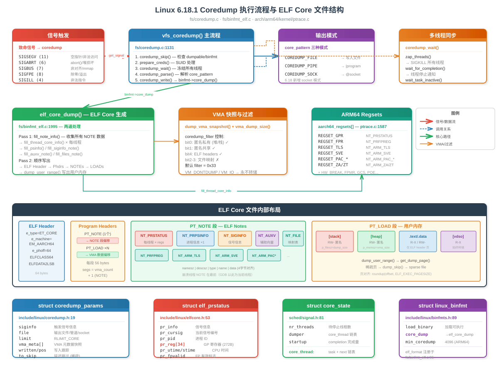
Coredump（核心转储）是操作系统在用户态进程因致命信号崩溃时，将该进程的虚拟内存内容、寄存器状态、信号信息等写入磁盘文件的机制。生成的 core 文件是 ELF 格式，可被 GDB/LLDB 加载进行事后调试（post-mortem debugging）。
核心价值：
| 特性 | Coredump | Ramdump | Kdump |
|---|---|---|---|
| 转储对象 | 单个用户态进程 | 整个物理内存 | 内核崩溃时的内存 |
| 触发条件 | 致命信号（SIGSEGV 等） | 硬件看门狗/手动触发 | kernel panic / oops |
| 文件格式 | ELF core | 裸内存 / vendor 格式 | ELF vmcore（makedumpfile） |
| 分析工具 | GDB / LLDB | T32 / vendor 工具 | crash / GDB |
| 涉及内核代码 | fs/coredump.c |
平台 firmware | kernel/kexec*.c |
| 典型大小 | MB 级（进程内存） | GB 级（全部 RAM） | GB 级（可压缩） |
| 适用场景 | 用户态 bug | 系统级死机 | 内核 bug |
联系：三者本质都是「保存崩溃现场内存」，区别在于粒度和层级。
内核通过 SIG_KERNEL_COREDUMP_MASK 定义哪些信号的默认行为是生成 core（include/linux/signal.h:426）：
#define SIG_KERNEL_COREDUMP_MASK (\
rt_sigmask(SIGQUIT) | rt_sigmask(SIGILL) | \
rt_sigmask(SIGTRAP) | rt_sigmask(SIGABRT) | \
rt_sigmask(SIGFPE) | rt_sigmask(SIGSEGV) | \
rt_sigmask(SIGBUS) | rt_sigmask(SIGSYS) | \
rt_sigmask(SIGXCPU) | rt_sigmask(SIGXFSZ) | \
SIGEMT_MASK )
#define sig_kernel_coredump(sig) siginmask(sig, SIG_KERNEL_COREDUMP_MASK)| 信号 | 编号 | 典型触发场景 |
|---|---|---|
SIGQUIT |
3 | 用户 Ctrl+\ 退出 |
SIGILL |
4 | 非法指令（如 ARM64 执行未定义指令） |
SIGTRAP |
5 | 断点 / ptrace trap |
SIGABRT |
6 | abort() / glibc 检测到堆损坏 |
SIGFPE |
8 | 除零 / 整数溢出（ARM64 需 explicit trap） |
SIGSEGV |
11 | 空指针 / 非法内存访问（最常见） |
SIGBUS |
7 | 非对齐访问 / mmap 文件被截断 |
SIGSYS |
31 | seccomp 过滤拒绝的系统调用 |
SIGXCPU |
24 | 超过 CPU 时间限制 |
SIGXFSZ |
25 | 文件大小超限 |
core_pattern 管道模式将 core 传输到远端systemd-coredump 自动收集、压缩、管理 core 文件debuggerd 负责 tombstone 生成（类似但不同于标准 coredump）Linux 6.18.1 中主入口已重命名为 vfs_coredump()（fs/coredump.c:1131），完整流程：
信号到达 → get_signal() → sig_kernel_coredump(sig) == true
│
├── current->flags |= PF_SIGNALED
├── proc_coredump_connector(current) ← 通知 netlink
└── vfs_coredump(&ksig->info)
│
├── 1. coredump_skip() 检查
│ ├── binfmt == NULL? → return
│ ├── binfmt->core_dump == NULL? → return
│ └── !__get_dumpable(mm_flags)? → return
│
├── 2. prepare_creds() → SUID_DUMP_ROOT 时 fsuid=root
│
├── 3. coredump_wait(signo, &core_state)
│ ├── zap_threads() → SIGKILL 所有其他线程
│ ├── wait_for_completion(&core_state.startup) ← 等待线程停止
│ └── wait_task_inactive() ← 确保寄存器状态已保存
│
├── 4. coredump_parse() → 解析 core_pattern 模板
│
├── 5. 根据 core_type 选择输出方式:
│ ├── COREDUMP_FILE → coredump_file() 创建文件
│ ├── COREDUMP_PIPE → coredump_pipe() 启动管道程序
│ └── COREDUMP_SOCK → coredump_socket() 连接 AF_UNIX
│
├── 6. coredump_write()
│ ├── dump_vma_snapshot() ← 快照所有 VMA
│ ├── binfmt->core_dump(cprm) ← 调用 elf_core_dump()
│ └── free_vma_snapshot()
│
└── 7. coredump_cleanup() → 关闭文件/管道，唤醒其他线程[用户态触发 fault / 收到信号]
↓
arch/arm64/mm/fault.c: do_page_fault()
→ force_sig_fault(SIGSEGV, ...) 或 send_sig(SIGABRT, ...)
↓
[返回用户态前检查信号]
arch/arm64/kernel/signal.c: do_signal()
→ get_signal(&ksig)
↓ kernel/signal.c:2997 fatal:
current->flags |= PF_SIGNALED;
if (sig_kernel_coredump(signr)) {
vfs_coredump(&ksig->info); // fs/coredump.c:1131
}
do_group_exit(signr);// fs/coredump.c:525
static int coredump_wait(int exit_code, struct core_state *core_state)
{
// 1. 初始化完成量
init_completion(&core_state->startup);
core_state->dumper.task = current;
// 2. zap_threads → 向所有同组线程发 SIGKILL
core_waiters = zap_threads(current, core_state, exit_code);
// └── zap_process(): __for_each_thread → sigaddset(SIGKILL) + signal_wake_up()
// └── 设置 signal->core_state, signal->flags = SIGNAL_GROUP_EXIT
// └── current->flags |= PF_DUMPCORE
// 3. 等待所有线程完成停止（complete() 由 coredump_task_exit 触发）
if (core_waiters > 0) {
wait_for_completion_state(&core_state->startup, TASK_UNINTERRUPTIBLE);
// 4. 额外等待每个线程完全非活跃（确保寄存器状态保存到内核栈）
ptr = core_state->dumper.next;
while (ptr != NULL) {
wait_task_inactive(ptr->task, TASK_ANY);
ptr = ptr->next;
}
}
return core_waiters;
}关键点：wait_task_inactive() 确保每个线程都已进入非运行状态，此时其 pt_regs 已保存在内核栈上，可安全读取寄存器。
Linux 6.18.1 中已重命名为 coredump_parse()（fs/coredump.c:240）。支持三种输出模式：
if (*pat_ptr == '|')
cn->core_type = COREDUMP_PIPE; // 管道模式
else if (*pat_ptr == '@')
cn->core_type = COREDUMP_SOCK; // 6.18 新增：Unix socket 模式
else
cn->core_type = COREDUMP_FILE; // 文件模式模板变量解析（% 转义）：
| 变量 | 含义 | 示例值 |
|---|---|---|
%p |
线程组 PID (vnr) | 1234 |
%P |
线程组 PID (全局) | 1234 |
%i |
线程 PID (vnr) | 1235 |
%I |
线程 PID (全局) | 1235 |
%u |
UID | 1000 |
%g |
GID | 1000 |
%s |
导致崩溃的信号编号 | 11 |
%t |
UNIX 时间戳 | 1700000000 |
%h |
主机名 | myhost |
%e |
可执行文件名（comm） | myapp |
%f |
可执行文件名（basename） | myapp |
%E |
可执行文件完整路径 | /usr/bin/myapp |
%c |
core 大小限制 | unlimited |
%C |
CPU 编号 | 3 |
%F |
pidfd 编号（仅管道模式） | 3 |
// fs/coredump.c:1240 - dump_emit()
int dump_emit(struct coredump_params *cprm, const void *addr, int nr)
{
if (cprm->to_skip) {
if (!__dump_skip(cprm, cprm->to_skip))
return 0;
cprm->to_skip = 0;
}
return __dump_emit(cprm, addr, nr);
}
// __dump_emit 核心逻辑:
// 1. 检查 cprm->written + nr > cprm->limit (RLIMIT_CORE)
// 2. 检查 dump_interrupted() (SIGKILL/freezing)
// 3. __kernel_write(file, addr, nr, &pos)
// 4. 更新 cprm->written 和 cprm->pos
// fs/coredump.c:1262 - dump_align()
int dump_align(struct coredump_params *cprm, int align)
{
unsigned mod = (cprm->pos + cprm->to_skip) & (align - 1);
if (mod)
cprm->to_skip += align - mod;
return 1;
}
// dump_skip / dump_skip_to: 延迟跳过（lazy skip）
// 不立即写零，而是累积 to_skip，下次 dump_emit 时一次性 lseek 或写零延迟跳过优化：dump_skip() 不立即写入零页，而是设置 cprm->to_skip。对于支持 FMODE_LSEEK 的文件（如普通文件），使用 vfs_llseek() 直接移动文件偏移，形成稀疏文件（sparse file），显著减少 I/O。
coredump_filter 通过 mm->flags 的 MMF_DUMP_* 位控制哪些 VMA 类型被转储。vma_dump_size()（fs/coredump.c:1602）根据这些标志决定每个 VMA 的转储大小。
Core 文件的 ELF Header 由 fill_elf_header()（fs/binfmt_elf.c:1437）生成：
static void fill_elf_header(struct elfhdr *elf, int segs, u16 machine, u32 flags)
{
memcpy(elf->e_ident, ELFMAG, SELFMAG); // "\x7fELF"
elf->e_ident[EI_CLASS] = ELF_CLASS; // ELFCLASS64 (ARM64)
elf->e_ident[EI_DATA] = ELF_DATA; // ELFDATA2LSB (小端)
elf->e_ident[EI_VERSION] = EV_CURRENT; // 1
elf->e_ident[EI_OSABI] = ELF_OSABI; // ELFOSABI_NONE
elf->e_type = ET_CORE; // 核心转储文件
elf->e_machine = machine; // EM_AARCH64 (183)
elf->e_version = EV_CURRENT;
elf->e_phoff = sizeof(struct elfhdr); // Program Header 紧跟 ELF Header
elf->e_flags = flags;
elf->e_ehsize = sizeof(struct elfhdr); // 64 bytes
elf->e_phentsize = sizeof(struct elf_phdr); // 56 bytes
elf->e_phnum = segs; // 段数 (NOTE + LOAD*N)
}Core 文件整体布局：
┌──────────────────────────────┐ offset=0
│ ELF Header (64 bytes) │ e_type=ET_CORE, e_machine=EM_AARCH64
├──────────────────────────────┤ offset=64
│ Program Header: PT_NOTE │ → 指向 NOTE 段
│ Program Header: PT_LOAD #1 │ → 指向第 1 个内存区域
│ Program Header: PT_LOAD #2 │ → 指向第 2 个内存区域
│ ... │
│ Program Header: PT_LOAD #N │
├──────────────────────────────┤
│ NOTE 段数据 │ NT_PRSTATUS, NT_PRPSINFO,
│ (各种 ELF Notes) │ NT_SIGINFO, NT_AUXV, NT_FILE, ...
├──────────────────────────────┤ ← roundup(ELF_EXEC_PAGESIZE)
│ PT_LOAD #1 数据 │ 第 1 个 VMA 的内存内容
│ PT_LOAD #2 数据 │ 第 2 个 VMA 的内存内容
│ ... │
│ PT_LOAD #N 数据 │ 第 N 个 VMA 的内存内容
└──────────────────────────────┘PT_NOTE 段包含多个 ELF Note 条目，每个 Note 的格式：
┌─────────────────┐
│ namesz (4B) │ ← 名称长度（含 NUL）
│ descsz (4B) │ ← 数据长度
│ type (4B) │ ← Note 类型 (NT_PRSTATUS 等)
├─────────────────┤
│ name (namesz) │ ← "CORE\0" 或 "LINUX\0"
│ [padding to 4] │
├─────────────────┤
│ desc (descsz) │ ← Note 数据
│ [padding to 4] │
└─────────────────┘写入顺序（write_note_info()，fs/binfmt_elf.c:1930）：
NT_PRSTATUS（崩溃线程）NT_PRPSINFO（进程信息）NT_SIGINFO（信号详细信息）NT_AUXV（辅助向量）NT_FILE（文件映射信息）NT_PRSTATUS + regset notes每个 PT_LOAD 段对应进程的一个 VMA，由 elf_core_dump() 生成 Program Header：
// fs/binfmt_elf.c:2068
phdr.p_type = PT_LOAD;
phdr.p_offset = offset; // 在 core 文件中的偏移
phdr.p_vaddr = meta->start; // 虚拟地址
phdr.p_paddr = 0; // 物理地址（通常为 0）
phdr.p_filesz = meta->dump_size; // 实际转储大小（可能 < memsz）
phdr.p_memsz = meta->end - meta->start; // VMA 完整大小
phdr.p_flags = PF_R|PF_W|PF_X; // 根据 VM_READ/WRITE/EXEC 设置
phdr.p_align = ELF_EXEC_PAGESIZE;VMA 转储决策（vma_dump_size()）：
| VMA 类型 | coredump_filter bit | 默认 | 是否转储 |
|---|---|---|---|
| 匿名私有（堆/栈） | bit 0: ANON_PRIVATE | ✓ | 是 |
| 匿名共享 | bit 1: ANON_SHARED | ✓ | 是 |
| 文件映射私有（已修改） | bit 2: MAPPED_PRIVATE | ✗ | 否 |
| 文件映射共享 | bit 3: MAPPED_SHARED | ✗ | 否 |
| ELF Header 页 | bit 4: ELF_HEADERS | ✓ | 首页 |
| Hugetlb 私有 | bit 5: HUGETLB_PRIVATE | ✗ | 否 |
| Hugetlb 共享 | bit 6: HUGETLB_SHARED | ✗ | 否 |
| DAX 私有 | bit 7: DAX_PRIVATE | ✗ | 否 |
| DAX 共享 | bit 8: DAX_SHARED | ✗ | 否 |
| VM_DONTDUMP | — | — | 永不转储 |
| VM_IO | — | — | 永不转储 |
| vDSO / gate VMA | — | — | 始终转储 |
默认 coredump_filter = 0x33（bit 0,1,4,5）。
NT_PRSTATUS（每个线程一个）：
struct elf_prstatus {
struct elf_prstatus_common common;
// common 包含:
// pr_info: 信号信息 (signo, code, errno)
// pr_cursig: 当前信号
// pr_sigpend: 挂起信号集
// pr_sighold: 阻塞信号集
// pr_pid/ppid/pgrp/sid: 进程 ID 信息
// pr_utime/stime: CPU 时间
elf_gregset_t pr_reg; // ARM64: 34 个 64 位通用寄存器
// (x0-x30, sp, pc, pstate)
int pr_fpvalid; // 是否有 FP 寄存器数据
};NT_PRPSINFO（进程级，仅一个）：
struct elf_prpsinfo {
char pr_state; // 进程状态数字
char pr_sname; // 状态字符 (R/S/D/T/Z/W)
char pr_zomb; // 是否僵尸
char pr_nice; // nice 值
unsigned long pr_flag; // task->flags
__kernel_uid_t pr_uid; // UID
__kernel_gid_t pr_gid; // GID
pid_t pr_pid, pr_ppid, pr_pgrp, pr_sid;
char pr_fname[16]; // 可执行文件名 (TASK_COMM_LEN)
char pr_psargs[80]; // 命令行参数 (ELF_PRARGSZ)
};NT_SIGINFO（信号详细信息）：
// fill_siginfo_note() 调用 copy_siginfo_to_external()
// 将 kernel_siginfo_t 转换为用户态 siginfo_t 写入 core
// 包含：si_signo, si_errno, si_code
// 对于 SIGSEGV：si_addr（故障地址）
// 对于 SIGFPE：si_addr（故障指令地址）NT_AUXV（辅助向量）：
// fill_auxv_note() 直接使用 mm->saved_auxv
// 包含：AT_PHDR, AT_PHENT, AT_PHNUM, AT_ENTRY, AT_BASE,
// AT_SYSINFO_EHDR (vDSO), AT_MINSIGSTKSZ, ...
// GDB 通过 AT_ENTRY 和 AT_PHDR 定位可执行文件NT_FILE（文件映射表）：
格式:
long count — 映射文件数
long page_size — 页大小
[count] × { long start, long end, long pgoff }
[count] × NUL-terminated filename stringsARM64 通过 aarch64_regsets[] 数组（arch/arm64/kernel/ptrace.c:1587）定义了丰富的 regset，每个有 core_note_type，当 active() 返回 > 0 时写入 core：
| Regset | NT 类型 | 内容 | 大小 |
|---|---|---|---|
REGSET_GPR |
NT_PRSTATUS |
x0-x30, sp, pc, pstate | 272B |
REGSET_FPR |
NT_PRFPREG |
v0-v31 (128bit), fpsr, fpcr | 528B |
REGSET_TLS |
NT_ARM_TLS |
TPIDR_EL0, TPIDRRO_EL0 | 16B |
REGSET_HW_BREAK |
NT_ARM_HW_BREAK |
硬件断点寄存器 | 可变 |
REGSET_HW_WATCH |
NT_ARM_HW_WATCH |
硬件观察点寄存器 | 可变 |
REGSET_SYSTEM_CALL |
NT_ARM_SYSTEM_CALL |
系统调用号 | 4B |
REGSET_FPMR |
NT_ARM_FPMR |
FP 模式寄存器 | 8B |
REGSET_SVE |
NT_ARM_SVE |
SVE 向量寄存器 (z0-z31, p0-p15, ffr) | 可变 |
REGSET_SSVE |
NT_ARM_SSVE |
SME Streaming SVE 寄存器 | 可变 |
REGSET_ZA |
NT_ARM_ZA |
SME ZA 矩阵 | 可变 |
REGSET_ZT |
NT_ARM_ZT |
SME ZT 寄存器 | 512B |
REGSET_PAC_MASK |
NT_ARM_PAC_MASK |
PAC 掩码 (data + code) | 16B |
REGSET_PAC_ENABLED_KEYS |
NT_ARM_PAC_ENABLED_KEYS |
启用的 PAC 密钥 | 8B |
REGSET_PACA_KEYS |
NT_ARM_PACA_KEYS |
PAC 地址密钥 (IA/IB/DA/DB) | 64B |
REGSET_PACG_KEYS |
NT_ARM_PACG_KEYS |
PAC 通用密钥 (GA) | 16B |
REGSET_TAGGED_ADDR_CTRL |
NT_ARM_TAGGED_ADDR_CTRL |
MTE 标记地址控制 | 8B |
REGSET_POE |
NT_ARM_POE |
Permission Overlay Extension | 8B |
REGSET_GCS |
NT_ARM_GCS |
Guarded Control Stack | 可变 |
// fs/binfmt_elf.c:1470 - __fill_note() / fill_note() 宏
static void __fill_note(struct memelfnote *note, const char *name, int type,
unsigned int sz, void *data)
{
note->name = name; // "CORE" 或 "LINUX"
note->type = type; // NT_PRSTATUS / NT_PRPSINFO / ...
note->datasz = sz; // 数据大小
note->data = data; // 数据指针
}
#define fill_note(note, type, sz, data) \
__fill_note(note, NN_ ## type, NT_ ## type, sz, data)
// 展开示例: fill_note(n, PRSTATUS, sz, d)
// → __fill_note(n, "CORE", NT_PRSTATUS, sz, d)
// fs/binfmt_elf.c:1424 - writenote() 将 note 写入 core 文件
static int writenote(struct memelfnote *men, struct coredump_params *cprm)
{
struct elf_note en;
en.n_namesz = strlen(men->name) + 1;
en.n_descsz = men->datasz;
en.n_type = men->type;
return dump_emit(cprm, &en, sizeof(en)) && // Note header
dump_emit(cprm, men->name, en.n_namesz) && // Note name
dump_align(cprm, 4) && // 4 字节对齐
dump_emit(cprm, men->data, men->datasz) && // Note data
dump_align(cprm, 4); // 4 字节对齐
}# 查看当前限制
ulimit -c # 单位: blocks (512 bytes)
# 设置为无限制（允许 coredump）
ulimit -c unlimited
# 设置为 0（禁止 coredump）
ulimit -c 0
# 设置为特定大小（如 100MB）
ulimit -c 204800 # 100*1024*1024/512 = 204800 blocks内核检查：vfs_coredump() 中 cprm.limit = rlimit(RLIMIT_CORE)，__dump_emit() 中检查 cprm->written + nr > cprm->limit 则停止写入。
管道模式例外：管道模式下 cprm->limit = RLIM_INFINITY（fs/coredump.c:1027），因为数据发送给外部程序处理，不受磁盘限制。但若 RLIMIT_CORE == 1（递归 coredump 检测），则拒绝。
# 查看当前设置
cat /proc/sys/kernel/core_pattern
# 默认: "core"
# 文件模式 — 直接写入文件
echo "/var/coredumps/core.%e.%p.%t" > /proc/sys/kernel/core_pattern
# 管道模式 — 通过管道发送给外部程序
echo "|/usr/lib/systemd/systemd-coredump %P %u %g %s %t %c %h %e" > /proc/sys/kernel/core_pattern
# Unix socket 模式 (6.18 新增)
echo "@/run/coredump.sock" > /proc/sys/kernel/core_pattern（见 11.2.4 中的完整模板变量表）
常用模式：
# 嵌入式系统：按进程名和 PID 存储
core.%e.%p
# 服务器：按时间戳和主机名存储到专用目录
/var/coredumps/%h/core.%e.%p.%t
# 开发环境：管道到 systemd-coredump
|/usr/lib/systemd/systemd-coredump %P %u %g %s %t %c %h %e管道模式通过 call_usermodehelper 启动外部程序，core 数据通过 stdin (fd 0) 传入：
// fs/coredump.c:609 - umh_coredump_setup()
// 1. 创建管道: create_pipe_files(files, 0)
// 2. core 数据写入管道写端: cp->file = files[1]
// 3. 管道读端安装为 fd 0: replace_fd(0, files[0], 0)
// 4. 设置 RLIMIT_CORE = 1 防止递归 coredump
// 5. 可选安装 pidfd: replace_fd(COREDUMP_PIDFD_NUMBER, pidfs_file, 0)systemd-coredump 工作流：
/var/lib/systemd/coredump/coredumpctl 查询和调试# 查看/设置
cat /proc/sys/kernel/core_pipe_limit # 默认: 0
echo 16 > /proc/sys/kernel/core_pipe_limit
# 当设置 > 0:
# 1. 限制同时运行的管道 coredump 处理程序数量
# 2. coredump 进程在管道程序完成前不退出（/proc/<pid> 保持可用）
# 3. 管道程序可通过 /proc/<pid> 获取额外信息内核实现：cn->core_pipe_limit = atomic_inc_return(&core_pipe_count)，若超限则跳过。
# 查看进程的 coredump filter（十六进制）
cat /proc/1234/coredump_filter
# 默认: 00000033
# 设置：包含所有类型
echo 0x7f > /proc/1234/coredump_filter
# 设置：最小化（仅匿名内存）
echo 0x3 > /proc/1234/coredump_filter
# 设置：排除共享内存（减小 core 文件）
echo 0x31 > /proc/1234/coredump_filter各 bit 含义：
| Bit | 宏 | 含义 | 默认 |
|---|---|---|---|
| 0 | MMF_DUMP_ANON_PRIVATE |
匿名私有（堆/栈） | on |
| 1 | MMF_DUMP_ANON_SHARED |
匿名共享 | on |
| 2 | MMF_DUMP_MAPPED_PRIVATE |
文件映射私有 | off |
| 3 | MMF_DUMP_MAPPED_SHARED |
文件映射共享 | off |
| 4 | MMF_DUMP_ELF_HEADERS |
ELF header 页 | on |
| 5 | MMF_DUMP_HUGETLB_PRIVATE |
Hugetlb 私有 | on |
| 6 | MMF_DUMP_HUGETLB_SHARED |
Hugetlb 共享 | off |
| 7 | MMF_DUMP_DAX_PRIVATE |
DAX 私有 | off |
| 8 | MMF_DUMP_DAX_SHARED |
DAX 共享 | off |
# 查看/设置
cat /proc/sys/fs/suid_dumpable
# 0 = 禁止 (默认): SUID/SGID 程序不生成 coredump
# 1 = debug: 允许 coredump，但 core 文件所有者为 root
# 2 = suidsafe: 允许 coredump，但需要 core_pattern 为绝对路径或管道
echo 2 > /proc/sys/fs/suid_dumpable内核实现：
// fs/coredump.c:874
static inline bool coredump_force_suid_safe(const struct coredump_params *cprm)
{
return __get_dumpable(cprm->mm_flags) == SUID_DUMP_ROOT; // ==2
}
// SUID_DUMP_ROOT 模式下:
// 1. cred->fsuid = GLOBAL_ROOT_UID → core 文件属于 root
// 2. 必须使用绝对路径或管道模式
// 3. 使用 init_task 的根目录（防止 user namespace 绕过）当多线程进程中的一个线程触发 coredump 时，必须冻结所有其他线程以获取一致的内存快照：
// fs/coredump.c:498
static int zap_process(struct signal_struct *signal, int exit_code)
{
struct task_struct *t;
int nr = 0;
signal->flags = SIGNAL_GROUP_EXIT; // 标记为组退出
signal->group_exit_code = exit_code;
signal->group_stop_count = 0;
__for_each_thread(signal, t) {
task_clear_jobctl_pending(t, JOBCTL_PENDING_MASK);
if (t != current && !(t->flags & PF_POSTCOREDUMP)) {
sigaddset(&t->pending.signal, SIGKILL); // 发送 SIGKILL
signal_wake_up(t, 1); // 唤醒并中断
nr++;
}
}
return nr; // 返回需要等待的线程数
}// fs/coredump.c:511
static int zap_threads(struct task_struct *tsk, struct core_state *core_state,
int exit_code)
{
spin_lock_irq(&tsk->sighand->siglock);
if (!(signal->flags & SIGNAL_GROUP_EXIT) && !signal->group_exec_task) {
signal->core_state = core_state; // 设置 core_state
nr = zap_process(signal, exit_code); // 通知所有线程
clear_tsk_thread_flag(tsk, TIF_SIGPENDING);
tsk->flags |= PF_DUMPCORE; // 标记为正在 dump
atomic_set(&core_state->nr_threads, nr);
}
spin_unlock_irq(&tsk->sighand->siglock);
return nr;
}流程时序：
线程 A (崩溃线程) 线程 B 线程 C
│ │ │
├── zap_threads() │ │
│ ├── SIGKILL → B │ │
│ └── SIGKILL → C │ │
│ ├── 收到 SIGKILL │
│ ├── exit_mm() ├── 收到 SIGKILL
│ ├── coredump_task_exit() ├── exit_mm()
│ │ └── complete(&startup) ├── coredump_task_exit()
│ └── 等待 task==NULL │ └── (nr_threads--)
│ └── 等待 task==NULL
├── wait_for_completion() ← 收到 complete
├── wait_task_inactive(B)
├── wait_task_inactive(C)
│
├── elf_core_dump() (安全读取所有线程寄存器)
│
└── coredump_finish() → wake_up(B), wake_up(C)每个线程的寄存器通过 fill_thread_core_info() 捕获：
// fs/binfmt_elf.c:1732 (CORE_DUMP_USE_REGSET 路径)
static int fill_thread_core_info(struct elf_thread_core_info *t, ...)
{
// 1. 填充 prstatus 公共信息（信号、PID、CPU 时间）
fill_prstatus(&t->prstatus.common, t->task, signr);
// 2. 通过 regset 接口获取 GP 寄存器
regset_get(t->task, &view->regsets[0],
sizeof(t->prstatus.pr_reg), &t->prstatus.pr_reg);
// 3. 遍历所有其他 regset (FP/SIMD, TLS, SVE, PAC, ...)
for (view_iter = 1; view_iter < view->n; ++view_iter) {
const struct user_regset *regset = &view->regsets[view_iter];
if (!regset->core_note_type || regset->active(t->task, regset) <= 0)
continue;
ret = regset_get_alloc(t->task, regset, ~0U, &data);
// 创建对应的 ELF note
__fill_note(&t->notes[note_iter], note_name, note_type, ret, data);
}
}regset_get() 最终调用各个 regset_get 函数（如 gpr_get, fpr_get），从目标线程的 task_pt_regs(t) 或 thread_struct 中读取寄存器。
mm_struct，因此 VMA 只需转储一份NT_PRSTATUS notedump_vma_snapshot() 在 mmap_write_lock 下获取所有 VMA 的元数据快照，此时所有线程已停止，VMA 不会变化// fs/coredump.c:1726 - dump_vma_snapshot()
if (mmap_write_lock_killable(mm))
return false;
// 遍历所有 VMA，记录 start/end/flags/dump_size/pgoff/file
while ((vma = coredump_next_vma(&vmi, vma, gate_vma)) != NULL) {
m->start = vma->vm_start;
m->end = vma->vm_end;
m->flags = vma->vm_flags;
m->dump_size = vma_dump_size(vma, cprm->mm_flags);
// ...
}
mmap_write_unlock(mm);其他线程在退出时调用 coredump_task_exit()，将自己注册到 core_state 链表中：
// kernel/exit.c 中调用
void coredump_task_exit(struct task_struct *tsk)
{
struct core_state *core_state = tsk->signal->core_state;
struct core_thread self;
if (!core_state)
return;
// 将自己链入 dumper 链表
self.task = tsk;
if (self.task) {
// ... 链入 core_state->dumper.next 链表
// 递减 nr_threads
if (atomic_dec_and_test(&core_state->nr_threads))
complete(&core_state->startup); // 最后一个线程完成时唤醒 dumper
}
}coredump_finish() 在 dump 完成后遍历链表，将每个 core_thread.task = NULL 并唤醒等待的线程，使它们最终退出。
ARM64 定义 CORE_DUMP_USE_REGSET（arch/arm64/include/asm/elf.h:143），通过 regset 框架保存寄存器。
通用寄存器：
// arch/arm64/include/asm/elf.h:159
#define ELF_NGREG (sizeof(struct user_pt_regs) / sizeof(elf_greg_t))
// = sizeof(struct user_pt_regs) / 8 = 272 / 8 = 34 个 64 位寄存器
#define ELF_CORE_COPY_REGS(dest, regs) \
*(struct user_pt_regs *)&(dest) = (regs)->user_regs;struct user_pt_regs 包含：
regs[31]：x0-x30（通用寄存器 + Frame Pointer + Link Register）sp：Stack Pointerpc：Program Counterpstate：处理器状态（NZCV 标志、异常级别、中断屏蔽等）FPSIMD（浮点/SIMD）：
REGSET_FPR，note 类型 NT_PRFPREGstruct user_fpsimd_state：v0-v31（128 位向量寄存器）+ fpsr + fpcrfpr_active() 检查任务是否使用过 FP 寄存器SVE（可伸缩向量扩展）：
REGSET_SVE，note 类型 NT_ARM_SVEsve_vl（向量长度）active() 返回 > 0SME（可伸缩矩阵扩展）：
REGSET_SSVE（Streaming SVE）：NT_ARM_SSVEREGSET_ZA（ZA 矩阵）：NT_ARM_ZAREGSET_ZT（ZT 寄存器）：NT_ARM_ZTARM64 MTE（Memory Tagging Extension）通过 NT_ARM_TAGGED_ADDR_CTRL note 保存标记地址控制信息：
// arch/arm64/kernel/ptrace.c
[REGSET_TAGGED_ADDR_CTRL] = {
USER_REGSET_NOTE_TYPE(ARM_TAGGED_ADDR_CTRL),
.n = 1,
.size = sizeof(long),
.align = sizeof(long),
.regset_get = tagged_addr_ctrl_get,
.set = tagged_addr_ctrl_set,
},PR_TAGGED_ADDR_ENABLE 标志、MTE TCF (tag check fault) 模式、包含/排除的标签掩码/proc/pid/smaps 或专用工具提取NT_ARM_TAGGED_ADDR_CTRL 并在调试时考虑 MTE 标签ARM64 PAC（Pointer Authentication）会在返回地址和函数指针的高位插入签名。这影响 coredump 分析：
core 文件中保存的 PAC 信息：
NT_ARM_PAC_MASK：数据和代码指针的 PAC 掩码（指示哪些位是签名）NT_ARM_PAC_ENABLED_KEYS：启用了哪些 PAC 密钥（IA/IB/DA/DB/GA）NT_ARM_PACA_KEYS / NT_ARM_PACG_KEYS：PAC 密钥值（需要 CONFIG_CHECKPOINT_RESTORE）对 GDB 分析的影响：
NT_ARM_PAC_MASK 知道需要清除的位aarch64-linux-gnu-gdb 支持自动 PAC strip// include/linux/elfcore.h:90
static inline int elf_core_copy_task_regs(struct task_struct *t,
elf_gregset_t *elfregs)
{
#if defined(ELF_CORE_COPY_TASK_REGS)
return ELF_CORE_COPY_TASK_REGS(t, elfregs);
#else
elf_core_copy_regs(elfregs, task_pt_regs(t));
#endif
return 0;
}ARM64 定义了 CORE_DUMP_USE_REGSET，因此不走 elf_core_copy_task_regs 路径，而是通过 regset 框架：
// fs/binfmt_elf.c:1746
regset_get(t->task, &view->regsets[0],
sizeof(t->prstatus.pr_reg), &t->prstatus.pr_reg);这调用 gpr_get()（arch/arm64/kernel/ptrace.c），从 task_pt_regs(task) 读取 user_pt_regs。由于 coredump_wait() 已确保目标线程非活跃，task_pt_regs() 返回的是保存在内核栈上的用户态寄存器。
// include/linux/coredump.h:19
struct coredump_params {
const kernel_siginfo_t *siginfo; // 触发 coredump 的信号信息
struct file *file; // 输出文件/管道/socket
unsigned long limit; // RLIMIT_CORE (字节)
unsigned long mm_flags; // mm->flags 快照 (含 coredump_filter)
int cpu; // 崩溃时的 CPU 编号
loff_t written; // 已写入字节数
loff_t pos; // 当前文件位置
loff_t to_skip; // 待跳过字节数 (延迟 skip)
int vma_count; // VMA 总数
size_t vma_data_size; // 所有 VMA 转储数据总大小
struct core_vma_metadata *vma_meta; // VMA 元数据数组
struct pid *pid; // 管道/socket 模式的 pidfd
};// include/linux/sched/signal.h:76
struct core_thread {
struct task_struct *task; // 线程的 task_struct
struct core_thread *next; // 链表下一个
};
struct core_state {
atomic_t nr_threads; // 待停止的线程数
struct core_thread dumper; // dump 线程自身 + 链表头
struct completion startup; // 所有线程停止的完成量
};链表构建：coredump_task_exit() 中每个退出线程将自己链入 core_state->dumper.next。dump 线程通过遍历此链表获取所有线程的 task_struct，读取寄存器。
// include/linux/elfcore.h:34
struct elf_prstatus_common {
struct elf_siginfo pr_info; // 信号信息
short pr_cursig; // 当前信号编号
unsigned long pr_sigpend; // 挂起信号集
unsigned long pr_sighold; // 阻塞信号集
pid_t pr_pid, pr_ppid, pr_pgrp, pr_sid;
struct __kernel_old_timeval pr_utime, pr_stime; // 用户/内核 CPU 时间
struct __kernel_old_timeval pr_cutime, pr_cstime; // 子进程累计时间
};
struct elf_prstatus {
struct elf_prstatus_common common;
elf_gregset_t pr_reg; // ARM64: 34 × 8 = 272 字节
int pr_fpvalid; // FP 寄存器是否有效
};
// include/linux/elfcore.h:59
struct elf_prpsinfo {
char pr_state; // 进程状态
char pr_sname; // 状态字符
char pr_zomb; // 僵尸标志
char pr_nice; // nice 值
unsigned long pr_flag; // task->flags
__kernel_uid_t pr_uid;
__kernel_gid_t pr_gid;
pid_t pr_pid, pr_ppid, pr_pgrp, pr_sid;
char pr_fname[16]; // 可执行文件名
char pr_psargs[80]; // 命令行参数
};// include/linux/binfmts.h:89
struct linux_binfmt {
struct list_head lh; // 注册链表
struct module *module; // 所属模块
int (*load_binary)(struct linux_binprm *); // 加载可执行文件
#ifdef CONFIG_COREDUMP
int (*core_dump)(struct coredump_params *cprm); // core 转储回调
unsigned long min_coredump; // 最小 core 文件大小
#endif
} __randomize_layout;
// ELF 格式注册 (fs/binfmt_elf.c:96)
static struct linux_binfmt elf_format = {
.module = THIS_MODULE,
.load_binary = load_elf_binary,
.core_dump = elf_core_dump,
.min_coredump = ELF_EXEC_PAGESIZE, // ARM64: 4096
};vfs_coredump() 通过 mm->binfmt->core_dump(cprm) 调用具体格式的转储实现。
// include/linux/coredump.h:11
struct core_vma_metadata {
unsigned long start, end; // VMA 地址范围
vm_flags_t flags; // VM_READ | VM_WRITE | VM_EXEC | ...
unsigned long dump_size; // 实际转储大小（可能 < end-start）
unsigned long pgoff; // 文件映射页偏移
struct file *file; // 映射的文件（匿名映射为 NULL）
};dump_vma_snapshot() 在 mmap_write_lock 保护下将每个 VMA 的关键信息拷贝到 core_vma_metadata 数组，之后 elf_core_dump() 基于此数组生成 PT_LOAD 段，无需再持有 mmap_lock。
# 基本加载
gdb <executable> <core_file>
gdb /usr/bin/myapp core.myapp.1234
# 分离加载
gdb -c core.myapp.1234
(gdb) file /usr/bin/myapp
(gdb) core-file core.myapp.1234
# 查看崩溃摘要
(gdb) info program
# Program stopped with signal SIGSEGV, Segmentation fault.
# 查看崩溃位置
(gdb) where
# or
(gdb) bt# 查看崩溃线程的调用栈
(gdb) bt
#0 0x0000aaaabb401234 in crash_function (ptr=0x0) at main.c:42
#1 0x0000aaaabb401500 in process_data (buf=0x7fb1234000) at main.c:100
#2 0x0000aaaabb401800 in main (argc=1, argv=0x7fffffffe0) at main.c:200
# 查看完整调用栈（含局部变量）
(gdb) bt full
#0 crash_function (ptr=0x0) at main.c:42
local_var = 42
buf = "Hello World"
#1 process_data (buf=0x7fb1234000) at main.c:100
result = 0
...
# 查看所有线程的调用栈
(gdb) thread apply all bt
# 简化输出（仅显示 5 层）
(gdb) thread apply all bt 5
# 切换到特定线程
(gdb) info threads
(gdb) thread 3
(gdb) bt
# 切换到特定栈帧
(gdb) frame 1
(gdb) info locals
(gdb) info args# 打印变量
(gdb) print ptr # 打印变量值
(gdb) print *ptr # 解引用
(gdb) print /x ptr # 十六进制
(gdb) print ((struct my_struct *)ptr)->field
# 检查内存
(gdb) x/16xb 0x7fb1234000 # 16 字节，十六进制
(gdb) x/4xg 0x7fb1234000 # 4 个 8 字节值
(gdb) x/s 0x7fb1234000 # 字符串
(gdb) x/10i $pc # 反汇编 10 条指令
# 查看寄存器
(gdb) info registers # 所有通用寄存器
(gdb) info registers x0 x1 sp pc # 特定寄存器
(gdb) info all-registers # 包括 SIMD/FP 寄存器
# ARM64 特定
(gdb) print $x0 # 第一个参数 / 返回值
(gdb) print $x29 # Frame Pointer
(gdb) print $x30 # Link Register (返回地址)
(gdb) print $sp # Stack Pointer
(gdb) print $pc # Program Counter
(gdb) print $cpsr # 处理器状态
# 查看信号信息
(gdb) info signal SIGSEGV
(gdb) print $_siginfo # GDB 内置变量
(gdb) print $_siginfo.si_addr # 故障地址# 查看共享库加载状态
(gdb) info sharedlibrary
# 设置共享库搜索路径（嵌入式交叉调试常用）
(gdb) set solib-search-path /path/to/target/rootfs/lib:/path/to/target/rootfs/usr/lib
# 或
(gdb) set sysroot /path/to/target/rootfs
# 添加符号文件
(gdb) add-symbol-file /path/to/libfoo.so.debug 0x7fb0000000
# 检查符号加载状态
(gdb) info files
(gdb) maintenance info sections常见问题：
"No debugging symbols found"：需要 -g 编译的可执行文件或 .debug 分离符号文件eu-unstrip 或 debuginfod 获取符号# ARM64 交叉 GDB 安装
sudo apt install gdb-multiarch
# 或
sudo apt install binutils-aarch64-linux-gnu gdb-aarch64-linux-gnu
# 加载 core（交叉场景）
aarch64-linux-gnu-gdb /path/to/target/myapp /path/to/core
# 或使用 gdb-multiarch
gdb-multiarch -q \
-ex "set sysroot /path/to/target/rootfs" \
-ex "file /path/to/target/myapp" \
-ex "core-file /path/to/core"
# 检查 ARM64 特有信息
(gdb) info auxv # 辅助向量
(gdb) print $cpsr # 处理器状态
(gdb) print $fpsr # FP 状态寄存器
# MTE 相关（需要新版 GDB）
(gdb) memory-tag print-allocation-tag 0x7fb1234000
(gdb) memory-tag print-logical-tag $x0
# PAC 相关
(gdb) show aarch64 pauth # PAC 支持状态
# GDB 自动 strip PAC 签名显示真实返回地址
# 批量分析脚本
aarch64-linux-gnu-gdb -batch \
-ex "file /path/to/myapp" \
-ex "core-file core.1234" \
-ex "bt" \
-ex "info registers" \
-ex "thread apply all bt"进程崩溃 → SIGSEGV
↓
内核 vfs_coredump()
↓ core_pattern = "|/usr/lib/systemd/systemd-coredump %P %u %g %s %t %c %h %e"
↓
systemd-coredump (子进程)
├── 从 stdin 读取 core 数据
├── 压缩 (lz4 或 zstd)
├── 存储到 /var/lib/systemd/coredump/
│ └── core.myapp.1000.abcdef123456.1234.1700000000000000.zst
├── 记录到 systemd journal
│ └── MESSAGE_ID=fc2e22bc6ee647b6b90729ab34a250b1
└── 按策略清理旧文件[Coredump]
# 存储方式: none / external / journal / both
Storage=external
# 压缩算法: lz4 / zstd / none
Compress=yes
# 单个 core 文件最大大小 (0=无限制)
ProcessSizeMax=2G
# 外部存储总大小上限
ExternalSizeMax=2G
# Journal 中的最大大小
JournalSizeMax=767M
# 保留多少磁盘空间给其他用途
KeepFree=1G
# 最大可用磁盘比例 (百分比)
MaxUse=10%# 列出所有 coredump 记录
coredumpctl list
# TIME PID UID GID SIG COREFILE EXE
# Mon 2024-01-01 12:00:00 1234 1000 1000 11 present /usr/bin/myapp
# Mon 2024-01-01 12:05:00 1235 1000 1000 6 present /usr/bin/otherapp
# 查看最近一个 coredump 的详细信息
coredumpctl info
# 查看特定 PID 的信息
coredumpctl info 1234
# 输出信息包括:
# PID, UID, GID, Signal, Timestamp
# Command Line, Executable, Control Group
# Unit, Slice, Boot ID
# Machine ID, Hostname
# Storage: /var/lib/systemd/coredump/core.myapp.1000...
# Size on Disk
# Package, Package Version (如果 RPM/DEB 提供)
# 直接启动 GDB 调试
coredumpctl debug # 最近的 core
coredumpctl debug 1234 # 特定 PID
coredumpctl debug myapp # 按程序名
# 导出 core 文件
coredumpctl dump 1234 > /tmp/core.1234
coredumpctl dump -o /tmp/core.1234 1234
# 按条件查询
coredumpctl list --since "2024-01-01" --until "2024-01-02"
coredumpctl list COREDUMP_EXE=/usr/bin/myapp# 查看 coredump 占用的磁盘空间
du -sh /var/lib/systemd/coredump/
# 手动清理
coredumpctl --vacuum-size=1G # 保留最多 1GB
coredumpctl --vacuum-time=7d # 只保留 7 天内的
# systemd-tmpfiles 自动清理
# /usr/lib/tmpfiles.d/systemd.conf 中配置清理策略
cat /usr/lib/tmpfiles.d/systemd.conf | grep coredump
# 完全禁用 coredump 收集
# 方法 1：修改 coredump.conf
echo "Storage=none" >> /etc/systemd/coredump.conf
# 方法 2：修改 core_pattern
echo "core" > /proc/sys/kernel/core_pattern # 恢复默认
# 或
echo "|/bin/false" > /proc/sys/kernel/core_pattern # 丢弃Coredump 机制仅适用于用户态进程，原因：
vfs_coredump() 在 get_signal() 中被调用，而内核线程不处理用户态信号mm == NULL（或使用 borrowed mm），没有可转储的用户内存die() → panic() → kdump / pstore，不经过信号处理// kernel/signal.c:3007
// 只有用户态进程才会到达这里
if (sig_kernel_coredump(signr)) {
vfs_coredump(&ksig->info);
}某些内核功能通过 usermode helper 实现，这些用户态进程崩溃时可以产生 coredump：
modprobe：模块加载辅助RLIMIT_CORE=1 防止递归）hotplug 脚本| 场景 | 工具 | 说明 |
|---|---|---|
| 用户态进程崩溃 | Coredump | 保存进程内存和寄存器 |
| 内核 panic | kdump | kexec 切换到捕获内核，保存整个内存 |
| 内核 oops（可恢复） | pstore | 保存 dmesg 日志到持久存储 |
| 硬件看门狗超时 | Ramdump | 固件级别转储全部 RAM |
| 用户态 + 内核交互 bug | Coredump + ftrace | core 文件 + 函数调用追踪 |
最佳实践：同时启用 coredump（用户态）和 kdump/pstore（内核态），确保两类崩溃都能定位。
CONFIG_COREDUMP
Type: bool
Default: y
Help: 控制内核是否支持 coredump 功能
关闭后:
- vfs_coredump() 为空函数
- struct linux_binfmt 中无 core_dump 字段
- 不生成任何 core 文件
- 节省少量代码空间（嵌入式场景）CONFIG_ELF_CORE
Type: bool
Depends on: CONFIG_COREDUMP && CONFIG_BINFMT_ELF
Default: y
控制 ELF 格式的 core_dump 实现:
- elf_core_dump() 函数
- dump_user_range() / dump_emit_page() 函数
- /proc/PID/coredump_filter 接口CONFIG_CORE_DUMP_DEFAULT_ELF_HEADERS
Type: bool
Default: y
设置 coredump_filter 的默认值是否包含 MMF_DUMP_ELF_HEADERS (bit 4)
开启: 默认 filter = 0x33 (含 ELF headers)
关闭: 默认 filter = 0x23 (不含)
ELF headers 的作用: GDB 通过首页的 ELF magic 和 program headers
识别加载的共享库，即使 /proc/<pid>/maps 不可用风险：core 文件包含进程的完整内存，可能泄露：
防护措施：
| 措施 | 配置 | 说明 |
|---|---|---|
| 禁用 coredump | ulimit -c 0 |
最简单有效 |
| SUID 保护 | suid_dumpable=0 |
SUID 程序不 dump |
| 目录权限 | core_pattern 目录 0700 | 限制读取 |
| madvise | madvise(addr, len, MADV_DONTDUMP) |
敏感内存不 dump |
| VM_DONTDUMP | mlock() + madvise(MADV_DONTDUMP) |
代码级保护 |
| 加密存储 | systemd-coredump 写入加密分区 | 落盘加密 |
// 应用代码中保护敏感内存
char *password = malloc(256);
// ... 使用 password ...
madvise(password, 256, MADV_DONTDUMP); // 不包含在 coredump 中| 环境 | 建议配置 | 说明 |
|---|---|---|
| 开发 | ulimit -c unlimited + 本地存储 |
全量 core，快速调试 |
| CI/测试 | systemd-coredump + 自动分析 | 自动收集，CI pipeline 检查 |
| 预发布 | coredump_filter=0x33 + 压缩 |
包含 ELF headers |
| 生产 | systemd-coredump + 限制大小 | ProcessSizeMax=2G, 自动清理 |
| 高安全 | ulimit -c 0 或 MADV_DONTDUMP |
禁止或精确排除敏感数据 |
| 嵌入式 | 管道模式 → 远程传输 | 本地存储空间有限 |
场景：myapp 崩溃，生成 core.myapp.1234。
$ gdb myapp core.myapp.1234
Reading symbols from myapp...
Core was generated by `./myapp --process data.txt'.
Program terminated with signal SIGSEGV, Segmentation fault.
#0 0x0000aaaabb401234 in process_item (item=0x0) at process.c:42
(gdb) bt
#0 0x0000aaaabb401234 in process_item (item=0x0) at process.c:42
#1 0x0000aaaabb401500 in process_list (list=0x7fb1234000) at process.c:100
#2 0x0000aaaabb401800 in main (argc=2, argv=0x7fffffffe0) at main.c:50
(gdb) frame 0
(gdb) list
37 void process_item(struct item *item) {
38 if (item->type == TYPE_A) { // ← 这里 item==NULL，访问 0x0 偏移
39 ...
(gdb) print item
$1 = (struct item *) 0x0
(gdb) frame 1
(gdb) print list
$2 = (struct list *) 0x7fb1234000
(gdb) print list->items[3]
$3 = (struct item *) 0x0 # ← 第 4 个元素为 NULL结论：process_list() 在第 100 行遍历 list 时没有检查 items[i] == NULL。
$ gdb myapp core.myapp.5678
Program terminated with signal SIGABRT, Aborted.
#0 __GI_raise (sig=sig@entry=6) at ../sysdeps/unix/sysv/linux/raise.c:50
#1 __GI_abort () at abort.c:79
#2 __libc_message (action=do_abort, fmt=...) at ../sysdeps/posix/libc_fatal.c:155
#3 malloc_printerr (str=0x7f... "free(): double free detected in tcache 2")
#4 _int_free (av=0x7f..., p=0x55555555a2a0, ...) at malloc.c:4233
#5 __GI___libc_free (mem=0x55555555a2b0) at malloc.c:3134
#6 cleanup_resources () at cleanup.c:45
#7 main () at main.c:200分析：
abort() → 生成 SIGABRT corecleanup_resources() 中对同一指针调用了两次 free()free() 后将指针设为 NULL，或使用更安全的内存管理$ coredumpctl debug myapp
# 查看所有线程
(gdb) info threads
Id Target Id Frame
* 1 Thread 1234.1234 process_request (req=0x7fb1234000) at server.c:150
2 Thread 1234.1235 __lll_lock_wait () at lowlevellock.c:52
3 Thread 1234.1236 worker_thread (arg=0x0) at worker.c:80
(gdb) thread apply all bt
# Thread 1 (崩溃线程):
#0 process_request (req=0x7fb1234000) at server.c:150
#1 ...
# Thread 3:
#0 worker_thread (arg=0x0) at worker.c:80
#1 ...
# 检查竞态的共享数据
(gdb) thread 1
(gdb) frame 0
(gdb) print shared_queue->head
$1 = (struct node *) 0xdeadbeefdeadbeef # ← 已被释放的内存
# 检查另一个线程是否正在操作同一数据
(gdb) thread 3
(gdb) frame 0
(gdb) print shared_queue
$2 = (struct queue *) 0x555555560000 # 同一个队列分析：Thread 3 在 worker_thread 中修改了 shared_queue，而 Thread 1 同时在 process_request 中读取，缺少锁保护导致读到已释放内存。
(gdb) bt
#0 0x0000aaaabb401234 in recursive_func (depth=100000) at recurse.c:10
#1 0x0000aaaabb401234 in recursive_func (depth=99999) at recurse.c:10
#2 0x0000aaaabb401234 in recursive_func (depth=99998) at recurse.c:10
... (大量重复帧)
# 检查 SP 是否接近栈底
(gdb) info registers sp
sp 0x7ffffffde000 # 接近栈底
# 查看 maps 确认栈范围
(gdb) info proc mappings
# 或检查 core 文件中的 PT_LOAD
# 栈区域: 0x7ffffffde000 - 0x7ffffffff000 (132KB, 默认 8MB 栈已几乎耗尽)
# 查看信号信息
(gdb) print $_siginfo
$1 = {si_signo = 11, si_errno = 0, si_code = 2,
_sifields = {_sigfault = {si_addr = 0x7ffffffddff8}}}
# si_code=2 (SEGV_ACCERR): 栈保护页触发解决方案：
ulimit -s 16384（16MB）-fsanitize=undefined 检测无限递归# 排查步骤:
# 1. 检查 ulimit
ulimit -c
# 如果是 0 → ulimit -c unlimited
# 2. 检查 core_pattern
cat /proc/sys/kernel/core_pattern
# 如果是管道模式，确认处理程序存在且可执行
# 3. 检查磁盘空间
df -h /var/coredumps/
# 磁盘满 → 清理空间
# 4. 检查目录权限
ls -la /var/coredumps/
# 进程用户必须有写权限
# 5. 检查 suid_dumpable (SUID 程序)
cat /proc/sys/fs/suid_dumpable
# 0 → SUID 程序不 dump
# 6. 检查进程是否设置了 PR_SET_DUMPABLE
cat /proc/<pid>/status | grep Dumpable
# 如果进程调用了 prctl(PR_SET_DUMPABLE, 0) → 不 dump
# 7. 检查 cgroup 限制
# 某些容器环境可能限制 coredump
# 8. 检查 dmesg 是否有 coredump 相关错误
dmesg | grep -i coredump
# 9. 检查 systemd-coredump 日志
journalctl -u systemd-coredump问题：数十 GB 内存的进程崩溃时，coredump 时间过长且可能撑满磁盘。
策略：
# 1. 限制 core 文件大小
ulimit -c 2097152 # 限制为 1GB (单位: 512B blocks)
# 2. 使用 coredump_filter 减少转储内容
echo 0x21 > /proc/<pid>/coredump_filter
# 仅转储匿名私有 + ELF headers
# 不转储文件映射（可从磁盘重新加载）
# 3. 使用 MADV_DONTDUMP 排除大块缓存
madvise(cache_buf, cache_size, MADV_DONTDUMP);
# 4. 使用压缩存储
# /etc/systemd/coredump.conf
Compress=yes # 启用 zstd 压缩
ProcessSizeMax=2G # 单进程最大 2GB
ExternalSizeMax=10G # 总存储上限
# 5. 使用管道模式实时压缩传输
echo "|/usr/bin/gzip -c > /var/coredumps/core.%e.%p.gz" > /proc/sys/kernel/core_pattern
# 6. 使用 core_sort_vma 优先转储小 VMA
echo 1 > /proc/sys/kernel/core_sort_vma
# 小 VMA 先写入，即使空间不足也能保留关键信息（栈、小堆分配等）Q1：Coredump 是什么？什么情况下会产生 core 文件？
A：Coredump 是用户态进程因致命信号崩溃时，内核将其虚拟内存内容、寄存器状态、信号信息等写入 ELF 格式文件的机制。触发信号包括 SIGSEGV（段错误）、SIGABRT（abort）、SIGBUS（总线错误）、SIGFPE（浮点异常）、SIGILL（非法指令）等 SIG_KERNEL_COREDUMP_MASK 中定义的信号。前提是 ulimit -c != 0、进程 dumpable、且有写入权限。
Q2：core_pattern 的三种模式分别是什么？如何配置？
A：文件模式（默认）：直接写入文件，如 core.%e.%p；管道模式（| 前缀）：通过 stdin 管道发送给外部程序处理，如 |/usr/lib/systemd/systemd-coredump %P %u %g %s %t %c %h %e，此模式不受 RLIMIT_CORE 限制（设为 RLIM_INFINITY）；Socket 模式（@ 前缀，6.18 新增）：通过 AF_UNIX socket 发送，如 @/run/coredump.sock。管道模式最常用于生产环境，配合 systemd-coredump 实现自动收集、压缩、管理。
Q3：多线程进程 coredump 时如何保证所有线程的状态一致？
A：通过 coredump_wait() → zap_threads() 机制：(1) 崩溃线程设置 signal->core_state 和 SIGNAL_GROUP_EXIT；(2) 向所有其他线程发送 SIGKILL，调用 signal_wake_up() 唤醒阻塞线程；(3) 其他线程在退出时调用 coredump_task_exit()，将自己链入 core_state->dumper 链表，最后一个线程 complete() 唤醒 dumper；(4) dumper 再逐个 wait_task_inactive() 确保每个线程完全停止、寄存器已保存到内核栈；(5) 此时安全地通过 regset 框架读取每个线程的 task_pt_regs() 并写入各自的 NT_PRSTATUS note。
Q4：ELF core 文件的基本结构是怎样的？包含哪些关键 NOTE？
A：ELF core 文件由 ELF Header（e_type=ET_CORE）+ Program Headers + NOTE 段 + LOAD 段组成。NOTE 段包含：NT_PRSTATUS（每线程通用寄存器和进程状态）、NT_PRPSINFO（进程级信息如 comm、cmdline、UID）、NT_SIGINFO（触发信号详细信息，如 si_addr 故障地址）、NT_AUXV（辅助向量，GDB 用于定位动态链接器）、NT_FILE（文件映射表）、以及 ARM64 特有的 NT_PRFPREG（FP/SIMD 寄存器）、NT_ARM_TLS（线程本地存储）、NT_ARM_SVE、NT_ARM_PAC_MASK 等。LOAD 段对应进程的各 VMA，通过 coredump_filter 控制哪些 VMA 被转储。
Q5：ARM64 的 PAC（指针认证）对 coredump 分析有什么影响？如何处理？
A：PAC 在函数返回地址和函数指针的高位插入认证签名。core 文件中保存的返回地址包含 PAC 签名，直接查看地址可能无法正确解析。核心影响：(1) bt 显示的返回地址可能看起来异常（高位非零）；(2) GDB 需要知道 PAC 掩码才能 strip 签名还原真实地址。解决方案：ARM64 将 NT_ARM_PAC_MASK 写入 core 文件，较新版本的 GDB（≥10.1）自动读取该 note 并在栈回溯时 strip PAC 签名。若 GDB 版本较老，可手动用 x0 & ~pac_mask 计算真实地址。
Q6：如何在不重启的情况下排查 coredump 生成失败的问题？
A：按优先级排查：(1) ulimit -c 检查 RLIMIT_CORE 是否为 0；(2) cat /proc/sys/kernel/core_pattern 确认输出路径/管道是否正确；(3) cat /proc/ 检查进程是否可转储（prctl(PR_SET_DUMPABLE, 0) 会禁用）；(4) df -h 检查目标目录磁盘空间；(5) ls -la 检查目录权限；(6) cat /proc/sys/fs/suid_dumpable 检查 SUID 限制；(7) dmesg | grep coredump 查看内核输出（如 "over core_pipe_limit"、"RLIMIT_CORE is set to 1" 等提示）；(8) 管道模式下检查处理程序是否存在且可执行。
文档版本：v9.0
内核版本：Linux 6.18.1
源码路径：kernel/rcu/(RCU),kernel/watchdog.c(Watchdog),kernel/hung_task.c(Hung Task),kernel/locking/lockdep.c(DeadLock),mm/kmemleak.c(MemoryLeak),mm/kasan//mm/kfence//mm/slub.c/mm/mprotect.c/arch/arm64/mm/pageattr.c(MemoryOverwritten),mm/kasan//arch/arm64/mm/kasan_init.c(KASAN),kernel/panic.c/arch/arm64/kernel/traps.c/arch/arm64/mm/fault.c(Panic/Oops),kernel/kexec*.c/fs/pstore//drivers/firmware/(Ramdump),drivers/block/zram//mm/zswap.c/mm/zsmalloc.c/mm/zpool.c(内存压缩),mm/slub.c/include/linux/slub_def.h/include/linux/poison.h(SLUB Debug),fs/coredump.c/fs/binfmt_elf.c/include/linux/coredump.h/include/linux/elfcore.h(Coredump)